Design / Data Structures (34)
Items from all root sources are merged here by topic.
27. Design Add and Search Words Data Structure (添加与搜索单词 - 数据结构设计)
Difficulty: medium | Key Concept: trie, DFS
Original Problem:
Design a data structure that supports adding words and searching words where . can match any letter.
中文翻译：设计数据结构，支持添加单词，以及带 . 通配符的单词搜索。
Example:
Input: ["WordDictionary","addWord","addWord","addWord","search","search","search","search"]
Output: [null,null,null,null,false,true,true,true]
class WordDictionary {
class Node {
Node[] next = new Node[26];
boolean word;
}
private Node root = new Node();
public void addWord(String word) {
Node cur = root;
for (char ch : word.toCharArray()) {
int i = ch - 'a';
if (cur.next[i] == null) cur.next[i] = new Node();
cur = cur.next[i];
}
cur.word = true;
}
public boolean search(String word) {
return dfs(word, 0, root);
}
private boolean dfs(String word, int idx, Node node) {
if (node == null) return false;
if (idx == word.length()) return node.word;
char ch = word.charAt(idx);
if (ch != '.') return dfs(word, idx + 1, node.next[ch - 'a']);
for (Node next : node.next) {
if (dfs(word, idx + 1, next)) return true;
}
return false;
}
}
Explanation:
- Trie 适合保存单词前缀结构。
- 搜索遇到普通字符走固定分支，遇到
.就尝试所有子分支。
30. Implement Queue using Stacks (用栈实现队列)
Difficulty: easy | Key Concept: stack, queue, design
Original Problem:
Implement a first-in-first-out queue using only two stacks.
中文翻译：只用两个栈实现先进先出的队列。
Example:
Input: push, push, peek, pop, empty
Output: null, null, 1, 1, false
import java.util.ArrayDeque;
class MyQueue {
private ArrayDeque<Integer> in = new ArrayDeque<>();
private ArrayDeque<Integer> out = new ArrayDeque<>();
public void push(int x) {
in.push(x);
}
public int pop() {
move();
return out.pop();
}
public int peek() {
move();
return out.peek();
}
public boolean empty() {
return in.isEmpty() && out.isEmpty();
}
private void move() {
if (out.isEmpty()) {
while (!in.isEmpty()) {
out.push(in.pop());
}
}
}
}
Explanation:
- 入队压入
in栈，出队从out栈弹出。 out为空时才把in全部倒过去，摊还复杂度为O(1)。
39. Find Median from Data Stream (数据流的中位数)
Difficulty: hard | Key Concept: heap, design
Original Problem:
Design a data structure that adds numbers and returns the median of all numbers so far.
中文翻译：设计数据结构，支持加入数字并返回当前所有数字的中位数。
Example:
Input: ["MedianFinder","addNum","addNum","findMedian","addNum","findMedian"]
Output: [null,null,null,1.5,null,2.0]
class MedianFinder {
private PriorityQueue<Integer> small = new PriorityQueue<>((a, b) -> Integer.compare(b, a));
private PriorityQueue<Integer> large = new PriorityQueue<>();
public void addNum(int num) {
if (small.isEmpty() || num <= small.peek()) small.offer(num);
else large.offer(num);
if (small.size() > large.size() + 1) large.offer(small.poll());
if (small.size() < large.size()) small.offer(large.poll());
}
public double findMedian() {
if (small.size() > large.size()) return small.peek();
return ((long) small.peek() + large.peek()) / 2.0;
}
}
Explanation:
- 最大堆保存较小一半，最小堆保存较大一半。
- 保持两个堆大小平衡后，中位数来自堆顶。
51. LFU Cache (最不经常使用缓存)
Difficulty: hard | Key Concept: design, hashmap, linked list
Original Problem:
Design a cache with get and put in O(1) average time, evicting the least frequently used key and then the least recently used among ties.
中文翻译：设计一个支持平均 O(1) 时间 get 和 put 的缓存，淘汰最少使用的 key，频率相同则淘汰最久未使用的 key。
Example:
Input: ["LFUCache","put","put","get","put","get","get"] with [[2],[1,1],[2,2],[1],[3,3],[2],[3]]
Output: [null,null,null,1,null,-1,3]
class LFUCache {
private int capacity;
private int minFreq = 0;
private Map<Integer, Node> nodes = new HashMap<>();
private Map<Integer, LinkedHashSet<Integer>> freq = new HashMap<>();
class Node {
int key;
int val;
int count;
Node(int key, int val) {
this.key = key;
this.val = val;
this.count = 1;
}
}
public LFUCache(int capacity) {
this.capacity = capacity;
}
public int get(int key) {
if (!nodes.containsKey(key)) return -1;
touch(nodes.get(key));
return nodes.get(key).val;
}
public void put(int key, int value) {
if (capacity == 0) return;
if (nodes.containsKey(key)) {
Node node = nodes.get(key);
node.val = value;
touch(node);
return;
}
if (nodes.size() == capacity) {
int evict = freq.get(minFreq).iterator().next();
freq.get(minFreq).remove(evict);
nodes.remove(evict);
}
Node node = new Node(key, value);
nodes.put(key, node);
freq.computeIfAbsent(1, x -> new LinkedHashSet<>()).add(key);
minFreq = 1;
}
private void touch(Node node) {
int old = node.count;
freq.get(old).remove(node.key);
if (old == minFreq && freq.get(old).isEmpty()) minFreq++;
node.count++;
freq.computeIfAbsent(node.count, x -> new LinkedHashSet<>()).add(node.key);
}
}
Explanation:
key -> node查值，freq -> 有序 key 集合维护频率和同频 LRU。- 访问时把 key 从旧频率移到新频率；淘汰时取
minFreq的最旧 key。
71. Design HashMap (从零实现链地址法哈希表)
1. 中文复述题目与示例
题目中文： 不使用内置哈希表，设计一个支持 put、get、remove 的 HashMap。
map.put(1, 1); map.put(2, 2);
map.get(1) -> 1
map.remove(2); map.get(2) -> -12. 解法思路
使用数组 + 链表的拉链法。数组下标由 key 取模得到；同一桶内用链表保存冲突 key。每个操作都先定位桶，再在线性链表中查找 key。
复杂度： 平均 O(1)，最坏 O(n)；空间 O(capacity+n)。
3. Java 实现
class MyHashMap {
private static class Node {
int key, value;
Node next;
Node(int key, int value) { this.key = key; this.value = value; }
}
private final Node[] buckets = new Node[10009];
public void put(int key, int value) {
int idx = key % buckets.length;
if (buckets[idx] == null) {
buckets[idx] = new Node(key, value);
return;
}
Node cur = buckets[idx];
while (true) {
if (cur.key == key) { cur.value = value; return; }
if (cur.next == null) break;
cur = cur.next;
}
cur.next = new Node(key, value);
}
public int get(int key) {
Node cur = buckets[key % buckets.length];
while (cur != null) {
if (cur.key == key) return cur.value;
cur = cur.next;
}
return -1;
}
public void remove(int key) {
int idx = key % buckets.length;
Node dummy = new Node(-1, -1);
dummy.next = buckets[idx];
Node prev = dummy, cur = buckets[idx];
while (cur != null) {
if (cur.key == key) {
prev.next = cur.next;
break;
}
prev = cur;
cur = cur.next;
}
buckets[idx] = dummy.next;
}
}4. 代码理解
put 遇到已有 key 就更新；remove 用 dummy 节点统一处理删除头节点和中间节点。
76. Random Pick with Weight (Random Pick with Weight)
Difficulty: medium | Key Concept: prefix sum, binary search, random
Original Problem:
Given positive weights, randomly pick an index with probability proportional to its weight.
中文翻译：给定正权重数组，按权重比例随机返回一个下标。
Example:
Input: ["Solution","pickIndex"] with [[[1,3]],[]]
Output: [null,1]
class Solution {
private int[] pre;
private Random rand = new Random();
public Solution(int[] w) {
pre = new int[w.length];
pre[0] = w[0];
for (int i = 1; i < w.length; i++) pre[i] = pre[i - 1] + w[i];
}
public int pickIndex() {
int x = rand.nextInt(pre[pre.length - 1]) + 1;
int l = 0;
int r = pre.length - 1;
while (l < r) {
int m = l + (r - l) / 2;
if (pre[m] < x) l = m + 1;
else r = m;
}
return l;
}
}
Explanation:
- 前缀和把权重区间映射成连续数字区间。
- 随机一个数字后，二分找到它落在哪个前缀区间。
78. Online Stock Span (Online Stock Span)
Difficulty: medium | Key Concept: stack, monotonic stack
Original Problem:
For each stock price, return the span of consecutive previous days with price less than or equal to today's price.
中文翻译：对每天股价，返回连续多少天的股价小于等于今天股价。
Example:
Input: ["StockSpanner","next","next","next","next","next","next","next"]
Output: [null,1,1,1,2,1,4,6]
class StockSpanner {
private Deque<int[]> stack = new ArrayDeque<>();
public int next(int price) {
int span = 1;
while (!stack.isEmpty() && stack.peek()[0] <= price) span += stack.pop()[1];
stack.push(new int[]{price, span});
return span;
}
}
Explanation:
- 单调递减栈保存价格和它已经合并出的跨度。
- 当前价格更高时，可以直接吞掉栈顶跨度。
81. Time Based Key-Value Store (基于时间戳/版本的数据存储)
Difficulty: medium | Key Concept: hashmap, binary search, design
Original Problem:
Design a key-value store that can return the value for a key at the greatest timestamp not exceeding the query timestamp.
中文翻译：设计按时间存储的键值表，查询时返回不超过指定时间戳的最近值。
Example:
Input: ["TimeMap","set","get","get","set","get","get"]
Output: [null,null,"bar","bar",null,"bar2","bar2"]
class TimeMap {
class Pair {
int time;
String val;
Pair(int time, String val) {
this.time = time;
this.val = val;
}
}
private Map<String, List<Pair>> map = new HashMap<>();
public void set(String key, String value, int timestamp) {
map.computeIfAbsent(key, x -> new ArrayList<>()).add(new Pair(timestamp, value));
}
public String get(String key, int timestamp) {
List<Pair> list = map.get(key);
if (list == null) return "";
int l = 0;
int r = list.size() - 1;
String ans = "";
while (l <= r) {
int m = l + (r - l) / 2;
if (list.get(m).time <= timestamp) {
ans = list.get(m).val;
l = m + 1;
} else {
r = m - 1;
}
}
return ans;
}
}
Explanation:
- 每个 key 的记录按时间戳递增存入列表。
- 查询时二分找最后一个
time <= timestamp的记录。
190. Design a Stack With Increment Operation (Design a Stack With Increment Operation)
对应 LC: LC 1381 (Medium)
1. 中文复述题目与示例
请你设计一个支持下述操作的栈，且可以设置栈的最大容量：
1. CustomStack(int maxSize)：初始化对象，maxSize 为栈的最大容量。
2. void push(int x)：如果栈未满，将 x 压入栈顶。
3. int pop()：弹出并返回栈顶元素，如果栈为空则返回 -1。
4. void increment(int k, int val)：将栈底的前 k 个元素都加上 val。如果栈中元素数少于 k，则将栈中所有元素都加上 val。
示例:
输入：
["CustomStack","push","push","pop","push","push","push","increment","increment","pop","pop","pop","pop"]
[[3],[1],[2],[],[2],[3],[4],[5,100],[2,100],[],[],[],[]]
输出：
[null,null,null,2,null,null,null,null,null,103,202,201,-1]2. 解题思路（中文详解）
如果直接用数组或列表实现栈，每次调用 increment 时都去循环修改前 k 个元素，那么 increment 的时间复杂度会是 O(k)，在频繁调用时效率低。
高级优化：延迟懒惰累加（Lazy Increment / Difference Array）。
我们可以实现所有操作都在 O(1) 时间复杂度内完成：
1. 数据结构：
- 用一个大小为 maxSize 的数组 stack 来存储压入的元素。
- 用一个同样大小的数组 add 来记录“延迟增量值”。add[i] 代表当前栈中从索引 0 到 i 的所有元素都需要加上 add[i]。
- 维护一个指针 top 指向当前栈顶的下一个位置（初始为 0）。
- 操作逻辑：
-push(x)：若栈未满（top < maxSize），则stack[top++] = x。此时新增元素的累加值默认为 0。
-increment(k, val)：我们不需要修改每个元素，只需在第min(k, top) - 1个元素处累加val。- 设最终影响的最远索引为
idx = min(k, top) - 1。 - 我们直接执行
add[idx] += val。这代表“所有从0到idx范围内的元素，在被弹出时都应当加上val”。 pop()：- 若栈为空（
top == 0），直接返回 -1。 - 取出当前栈顶位置
idx = top - 1。 - 该元素真实的弹出值应为
stack[idx] + add[idx]。 - 增量向下传递：在弹出该元素后，它的增量
add[idx]应该继续作用于它下面的所有元素（即作用于从0到idx-1范围内的元素）。 - 因此，如果
idx > 0，我们执行：add[idx - 1] += add[idx]。 - 清除当前位置的临时累加值：
add[idx] = 0。 - 递减
top并返回刚才计算的值。
- 设最终影响的最远索引为
复杂度分析：
- 时间复杂度：push、pop、increment 三个操作均为 O(1)。
- 空间复杂度：O(maxSize)，用于栈和增量记录数组。
3. 代码实现
Java 实现:
class CustomStack {
private int[] stack;
private int[] add;
private int top;
public CustomStack(int maxSize) {
stack = new int[maxSize];
add = new int[maxSize];
top = 0;
}
public void push(int x) {
if (top < stack.length) {
stack[top] = x;
top++;
}
}
public int pop() {
if (top == 0) {
return -1;
}
int idx = top - 1;
int res = stack[idx] + add[idx];
// 将 lazy 累加值向下传播
if (idx > 0) {
add[idx - 1] += add[idx];
}
add[idx] = 0;
// 重置已弹出的当前累加值
top--;
return res;
}
public void increment(int k, int val) {
int idx = Math.min(k, top) - 1;
if (idx >= 0) {
add[idx] += val;
}
}
}
208. Design Parking System (Design Parking System)
1. 中文复述题目与示例
题目中文： 设计停车系统，停车场有 big、medium、small 三种车位。addCar(type) 如果对应类型还有空位则停车并返回 true，否则 false。
ParkingSystem ps = new ParkingSystem(1,1,0)
addCar(1) -> true
addCar(3) -> false2. 解法思路
三类车位彼此独立，用长度 4 的数组保存剩余数量，车类型 1、2、3 直接作为下标。
复杂度： 每次操作 O(1)，空间 O(1)。
3. Java 实现
class ParkingSystem {
private int[] slots = new int[4];
public ParkingSystem(int big, int medium, int small) {
slots[1] = big;
slots[2] = medium;
slots[3] = small;
}
public boolean addCar(int carType) {
if (slots[carType] == 0) return false;
slots[carType]--;
return true;
}
}4. 代码理解
addCar(1) 消耗一个 big 车位；small 初始为 0，所以 addCar(3) 返回 false。
227. Perfect Rectangle (Perfect Rectangle)
1. 中文复述题目与示例
题目中文： 给定多个小矩形，判断它们能否刚好拼成一个完整的大矩形，要求不能重叠、不能有空洞。
Input: rectangles = [[1,1,3,3],[3,1,4,2],[3,2,4,4],[1,3,2,4],[2,3,3,4]]
Output: true2. 解法思路
两个条件同时成立：所有小矩形面积和等于外接大矩形面积；所有内部角点出现偶数次并抵消，最终只剩大矩形四个角各出现一次。
复杂度： 时间 O(n)，空间 O(n)。
3. Java 实现
class Solution {
public boolean isRectangleCover(int[][] rectangles) {
int minX = Integer.MAX_VALUE, minY = Integer.MAX_VALUE;
int maxX = Integer.MIN_VALUE, maxY = Integer.MIN_VALUE;
long area = 0;
Set<String> corners = new HashSet<>();
for (int[] r : rectangles) {
minX = Math.min(minX, r[0]); minY = Math.min(minY, r[1]);
maxX = Math.max(maxX, r[2]); maxY = Math.max(maxY, r[3]);
area += (long) (r[2] - r[0]) * (r[3] - r[1]);
toggle(corners, r[0], r[1]); toggle(corners, r[0], r[3]);
toggle(corners, r[2], r[1]); toggle(corners, r[2], r[3]);
}
long outer = (long) (maxX - minX) * (maxY - minY);
if (area != outer || corners.size() != 4) return false;
return corners.contains(minX + "," + minY) && corners.contains(minX + "," + maxY)
&& corners.contains(maxX + "," + minY) && corners.contains(maxX + "," + maxY);
}
private void toggle(Set<String> set, int x, int y) {
String key = x + "," + y;
if (!set.add(key)) set.remove(key);
}
}4. 代码理解
内部共享角点会出现两次或四次，被 toggle 抵消；如果有洞或重叠，面积或角点集合会异常。
248. Snapshot Array (Snapshot Array)
对应 LC: LC 1146 (Med.)
1. 中文复述题目与示例
题目中文： 实现支持下列接口的「快照数组」- SnapshotArray：
Example / 示例：
输入：["SnapshotArray","set","snap","set","get"]
[[3],[0,5],[],[0,6],[0,0]]
输出：[null,null,0,null,5]
解释：
SnapshotArray snapshotArr = new SnapshotArray(3); // 初始化一个长度为 3 的快照数组
snapshotArr.set(0,5); // 令 array[0] = 5
snapshotArr.snap(); // 获取快照，返回 snap_id = 0
snapshotArr.set(0,6);
snapshotArr.get(0,0); // 获取 snap_id = 0 的快照中 array[0] 的值，返回 5关键点： 主题标签：设计 / 数组 / 哈希表 / 二分查找。面试中先确认输入规模、返回值格式、重复元素/空输入/边界值，再用示例说明核心状态如何变化。
2. 解题思路（中文详解）
方案： 方法一：数组 + 二分查找。我们维护一个长度为length的数组，数组中的每个元素是一个列表，用来存储每次设置的值以及对应的快照 ID。
怎么讲： 先说明 brute force 会在哪里重复计算，再说明当前实现维护的 invariant。重点讲清楚：状态变量代表什么、何时更新答案、为什么不会漏解或重复计数。
3. 代码实现
Java 实现:
class SnapshotArray {
private List<int[]>[] arr;
private int idx;
public SnapshotArray(int length) {
arr = new List[length];
Arrays.setAll(arr, k -> new ArrayList<>());
}
public void set(int index, int val) {
arr[index].add(new int[] {
idx, val
}
);
}
public int snap() {
return idx++;
}
public int get(int index, int snap_id) {
int l = 0, r = arr[index].size();
while (l < r) {
int mid = (l + r) >> 1;
if (arr[index].get(mid)[0] > snap_id) {
r = mid;
} else {
l = mid + 1;
}
}
--l;
return l < 0 ? 0 : arr[index].get(l)[1];
}
}
/**
* Your SnapshotArray object will be instantiated and called as such:
* SnapshotArray obj = new SnapshotArray(length);
* obj.set(index,val);
* int param_2 = obj.snap();
* int param_3 = obj.get(index,snap_id);
*/
329. Design Tic-Tac-Toe (Design Tic-Tac-Toe)
Difficulty: medium | Key Concept: design, array
Original Problem:
Design Tic-Tac-Toe on an n x n board and return the winner after each move, or 0.
中文翻译：设计 n x n 井字棋，每步落子后返回赢家编号，没有赢家返回 0。
Example:
Input: ["TicTacToe","move","move","move","move","move","move","move"]
Output: [null,0,0,0,0,0,0,1]
class TicTacToe {
private int[] rows;
private int[] cols;
private int diag = 0;
private int anti = 0;
private int n;
public TicTacToe(int n) {
this.n = n;
rows = new int[n];
cols = new int[n];
}
public int move(int row, int col, int player) {
int add = player == 1 ? 1 : -1;
rows[row] += add;
cols[col] += add;
if (row == col) diag += add;
if (row + col == n - 1) anti += add;
if (Math.abs(rows[row]) == n || Math.abs(cols[col]) == n || Math.abs(diag) == n || Math.abs(anti) == n) return player;
return 0;
}
}
Explanation:
- 玩家 1 记为
+1，玩家 2 记为-1。 - 某行、列或对角线绝对值达到
n，说明同一玩家占满。
407. Maximum Candies Allocated to K Children (Maximum Candies Allocated to K Children)
Difficulty: medium | Key Concept: binary search
Original Problem:
Given candy piles, each child gets the same positive number from one pile. Return the maximum candies each of k children can get.
中文翻译：给定糖果堆，每个孩子从某一堆拿相同正数糖果，求每个孩子最多可拿多少。
Example: Input: candies = [5,8,6], k = 3 Output: 5
class Solution {
public int maximumCandies(int[] candies, long k) {
int left = 0, right = 0;
for (int c : candies) right = Math.max(right, c);
while (left < right) {
int mid = left + (right - left + 1) / 2;
long count = 0;
for (int c : candies) count += c / mid;
if (count >= k) left = mid;
else right = mid - 1;
}
return left;
}
}
Explanation:
- 二分每个孩子分到的糖果数。
- 每堆能贡献
c / mid个孩子，达到 k 则可行。
420. Design Task Manager (设计任务管理器)
Difficulty: medium | Key Concept: design, priority queue
Original Problem: Design a task manager supporting add, edit, remove, and executing the highest-priority task. 中文翻译：设计任务管理器，支持新增、修改、删除任务，以及执行优先级最高的任务。
Example: Input: ["TaskManager","add","edit","execTop"] Output: [null,null,null,3]
class TaskManager {
Map<Integer, int[]> map = new HashMap<>();
PriorityQueue<int[]> pq = new PriorityQueue<>((a, b) -> a[1] == b[1] ? b[0] - a[0] : b[1] - a[1]);
public TaskManager(List<List<Integer>> tasks) {
for (List<Integer> t : tasks) add(t.get(0), t.get(1), t.get(2));
}
public void add(int userId, int taskId, int priority) {
map.put(taskId, new int[] {userId, priority});
pq.offer(new int[] {taskId, priority});
}
public void edit(int taskId, int newPriority) {
int userId = map.get(taskId)[0];
map.put(taskId, new int[] {userId, newPriority});
pq.offer(new int[] {taskId, newPriority});
}
public void rmv(int taskId) {
map.remove(taskId);
}
public int execTop() {
while (!pq.isEmpty()) {
int[] cur = pq.poll();
int[] info = map.get(cur[0]);
if (info != null && info[1] == cur[1]) {
map.remove(cur[0]);
return info[0];
}
}
return -1;
}
}
Explanation:
- 哈希表保存 taskId 的当前用户和优先级。
- 堆中允许旧记录懒删除，执行时弹到当前有效的最高优先级任务。
21. Min Stack (最小栈)
Difficulty: medium | Key Concept: stack, design
Original Problem:
Design a stack supporting push, pop, top, and retrieving the minimum element in constant time.
中文翻译：设计栈，支持压栈、弹栈、取栈顶和常数时间获取最小值。
Example:
Input: ["MinStack","push","push","push","getMin","pop","top","getMin"]
Output: [null,null,null,null,-3,null,0,-2]
class MinStack {
private Deque<Integer> stack = new ArrayDeque<>();
private Deque<Integer> mins = new ArrayDeque<>();
public void push(int val) {
stack.push(val);
if (mins.isEmpty() || val <= mins.peek()) mins.push(val);
}
public void pop() {
int x = stack.pop();
if (x == mins.peek()) mins.pop();
}
public int top() {
return stack.peek();
}
public int getMin() {
return mins.peek();
}
}
Explanation:
- 主栈保存所有元素，辅助栈保存当前最小值历史。
- 弹出元素等于当前最小值时，辅助栈也同步弹出。
29. Implement Stack using Queues (用队列实现栈)
Difficulty: easy | Key Concept: queue, stack, design
Original Problem:
Implement a last-in-first-out stack using only queues.
中文翻译：只使用队列实现后进先出的栈。
Example:
Input: push, push, top, pop, empty
Output: null, null, 2, 2, false
import java.util.ArrayDeque;
import java.util.Queue;
class MyStack {
private Queue<Integer> q = new ArrayDeque<>();
public void push(int x) {
q.offer(x);
for (int i = 0; i < q.size() - 1; i++) {
q.offer(q.poll());
}
}
public int pop() {
return q.poll();
}
public int top() {
return q.peek();
}
public boolean empty() {
return q.isEmpty();
}
}
Explanation:
- 每次 push 后旋转队列，把新元素转到队头。
- 之后 pop 和 top 都直接操作队头，模拟栈顶。
38. Peeking Iterator (窥视迭代器)
1. 中文复述题目与示例
题目：设计 PeekingIterator，支持 next()、hasNext()，并额外支持 peek()：返回下一个元素但不移动迭代器。
示例：底层序列为 [1,2,3]：next() 返回 1，peek() 返回 2，再次 next() 仍返回 2。
2. 思路
用一个缓存变量提前保存下一个元素。peek() 只读缓存；next() 返回缓存后，再从底层 iterator 预取下一个值。
3. Java 实现
class PeekingIterator implements Iterator<Integer> {
private Iterator<Integer> iterator;
private Integer nextValue;
public PeekingIterator(Iterator<Integer> iterator) {
this.iterator = iterator;
// 初始化时预读一个值，让 peek 可以 O(1) 返回。
nextValue = iterator.hasNext() ? iterator.next() : null;
}
public Integer peek() {
return nextValue;
}
@Override
public Integer next() {
Integer current = nextValue;
nextValue = iterator.hasNext() ? iterator.next() : null;
return current;
}
@Override
public boolean hasNext() {
return nextValue != null;
}
}复杂度：每个操作 O(1)，空间 O(1)。
43. Flatten Nested List Iterator (扁平化嵌套列表迭代器)
对应 LC: LC 341 (Medium)
1. 中文复述题目与示例
给你一个嵌套的整数列表 nestedList 。每个元素要么是一个整数，要么是一个列表。请你实现一个扁平化迭代器，使其能够扁平化列表，返回所有的整数。
实现 NestedIterator 类：
- NestedIterator(List<NestedInteger> nestedList) 用嵌套列表初始化迭代器。
- int next() 返回嵌套列表中的下一个整数。
- boolean hasNext() 如果当前嵌套列表中仍然存在整数，返回 true ；否则，返回 false 。
示例:
输入：nestedList = [[1,1],2,[1,1]]
输出：[1,1,2,1,1]
解释：通过重复调用 next 直到 hasNext 返回 false，迭代器返回的元素顺序应为：[1,1,2,1,1]。2. 解题思路（中文详解）
- 核心考点: 栈设计模式、惰性求值 (Lazy Evaluation)、高级迭代器状态控制。
- 算法设计:
- 工业级设计标准 (惰性求值): 许多粗糙的解法会选择在构造函数中通过
DFS将整个嵌套列表一次性扁平化到一个List中。但这种做法在实际工业级生产中非常不合格（如果数据规模巨大且用户只读取前几个数据，预先全部扁平化会造成极大的内存和时间浪费）。最优解是使用惰性求值，在调用hasNext()时动态解包。 - 基于 Stack 的工作原理:
- 我们使用一个
Stack<NestedInteger>来维护迭代状态。 - 构造函数: 为了保持顺序，我们将
nestedList的所有元素从后往前（倒序）压入栈中。 hasNext()状态维持 (最关键):- 不断检查栈顶元素。
- 如果栈顶元素是整数，直接返回
true。 - 如果栈顶元素是列表，则将其弹出栈，并将该列表中的所有子元素倒序压入栈中。
- 重复上述过程，直到栈变空（返回
false）或者找到一个整数。 next():- 必须先调用
hasNext()确保栈顶一定是一个处理完毕的整数。 - 直接弹出栈顶元素并返回其
Integer数值。
- 我们使用一个
- 复杂度分析:
- 时间复杂度:
next()复杂度为O(1)。hasNext()均摊时间复杂度为O(1)。每个嵌套列表和整数只会被压栈和出栈常数次。
- 空间复杂度:
O(N)，最坏情况下栈需要保存所有的嵌套元素。
3. 代码实现
Java 实现:
import java.util.*;
public class NestedIterator implements Iterator<Integer> {
// 维护嵌套列表状态的栈
private Stack<NestedInteger> stack = new Stack<>();
public NestedIterator(List<NestedInteger> nestedList) {
// 倒序将初始元素压入栈中
prepareStack(nestedList);
}
@Override
public Integer next() {
// 根据 Iterator 协议，next() 必须建立在 hasNext() 已经确保栈顶为整数的基础上
return stack.pop().getInteger();
}
@Override
public boolean hasNext() {
// 惰性解包：在 hasNext 中动态将栈顶的列表摊平，直到栈顶为真正的整数
while (!stack.isEmpty()) {
NestedInteger curr = stack.peek();
if (curr.isInteger()) {
return true;
}
// 弹出列表，倒序将其内部元素压入栈中
stack.pop();
prepareStack(curr.getList());
}
return false;
}
// 辅助函数：将列表中的元素倒序压入栈中，保持迭代时的正序弹出
private void prepareStack(List<NestedInteger> list) {
for (int i = list.size() - 1; i >= 0; i--) {
stack.push(list.get(i));
}
}
}
47. Design Twitter (设计推特)
Difficulty: medium | Key Concept: design, heap, hashmap
Original Problem:
Design a mini Twitter supporting posting tweets, following/unfollowing, and retrieving the 10 most recent feed tweets.
中文翻译：设计迷你 Twitter，支持发推、关注/取关，以及获取最近 10 条动态。
Example:
Input: ["Twitter","postTweet","getNewsFeed","follow","postTweet","getNewsFeed","unfollow","getNewsFeed"]
Output: [null,null,[5],null,null,[6,5],null,[5]]
class Twitter {
class Tweet {
int id;
int time;
Tweet(int id, int time) {
this.id = id;
this.time = time;
}
}
private int time = 0;
private Map<Integer, Set<Integer>> follow = new HashMap<>();
private Map<Integer, List<Tweet>> tweets = new HashMap<>();
public void postTweet(int userId, int tweetId) {
tweets.computeIfAbsent(userId, x -> new ArrayList<>()).add(new Tweet(tweetId, time++));
}
public List<Integer> getNewsFeed(int userId) {
PriorityQueue<Tweet> pq = new PriorityQueue<>((a, b) -> b.time - a.time);
Set<Integer> users = new HashSet<>(follow.getOrDefault(userId, Collections.emptySet()));
users.add(userId);
for (int u : users) {
List<Tweet> list = tweets.getOrDefault(u, Collections.emptyList());
for (int i = Math.max(0, list.size() - 10); i < list.size(); i++) pq.offer(list.get(i));
}
List<Integer> ans = new ArrayList<>();
while (!pq.isEmpty() && ans.size() < 10) ans.add(pq.poll().id);
return ans;
}
public void follow(int followerId, int followeeId) {
if (followerId != followeeId) follow.computeIfAbsent(followerId, x -> new HashSet<>()).add(followeeId);
}
public void unfollow(int followerId, int followeeId) {
if (follow.containsKey(followerId)) follow.get(followerId).remove(followeeId);
}
}
Explanation:
- 哈希表保存关注关系和每个用户的推文列表。
- Feed 只需要候选用户最近最多 10 条推文，用堆取全局最新 10 条。
48. Design Hit Counter (设计敲击计数器)
Difficulty: medium | Key Concept: queue, design
Original Problem:
Design a hit counter that records hits and returns the number of hits in the past 5 minutes.
中文翻译：设计点击计数器，记录点击，并返回过去 5 分钟内的点击次数。
Example:
Input: ["HitCounter","hit","hit","hit","getHits","hit","getHits","getHits"]
Output: [null,null,null,null,3,null,4,3]
class HitCounter {
private Queue<Integer> q = new ArrayDeque<>();
public void hit(int timestamp) {
q.offer(timestamp);
}
public int getHits(int timestamp) {
while (!q.isEmpty() && q.peek() <= timestamp - 300) q.poll();
return q.size();
}
}
Explanation:
- 队列按时间顺序保存所有还可能有效的点击。
- 查询时移除
timestamp - 300及更早的过期点击。
66. Design Circular Queue (设计线程安全的环形缓冲区)
Difficulty: medium | Key Concept: design, queue, array
Original Problem:
Design a circular queue with fixed capacity supporting enqueue, dequeue, front, rear, and state checks.
中文翻译：设计固定容量循环队列，支持入队、出队、取队首队尾以及判空判满。
Example:
Input: ["MyCircularQueue","enQueue","enQueue","enQueue","enQueue","Rear","isFull","deQueue","enQueue","Rear"]
Output: [null,true,true,true,false,3,true,true,true,4]
class MyCircularQueue {
private int[] data;
private int head = 0;
private int count = 0;
public MyCircularQueue(int k) {
data = new int[k];
}
public boolean enQueue(int value) {
if (isFull()) return false;
data[(head + count) % data.length] = value;
count++;
return true;
}
public boolean deQueue() {
if (isEmpty()) return false;
head = (head + 1) % data.length;
count--;
return true;
}
public int Front() {
return isEmpty() ? -1 : data[head];
}
public int Rear() {
return isEmpty() ? -1 : data[(head + count - 1) % data.length];
}
public boolean isEmpty() {
return count == 0;
}
public boolean isFull() {
return count == data.length;
}
}
Explanation:
- 用数组、队首下标和元素数量表示循环队列。
- 队尾位置通过
(head + count) % capacity计算。
102. Logger Rate Limiter (Logger Rate Limiter)
1. 中文复述题目与示例
题目中文： 设计日志限流器。相同消息在 10 秒内最多打印一次；如果距离上次打印至少 10 秒，可以再次打印。
Logger logger = new Logger();
logger.shouldPrintMessage(1, "foo") -> true
logger.shouldPrintMessage(2, "foo") -> false
logger.shouldPrintMessage(11, "foo") -> true2. 解法思路
用哈希表记录每条消息下一次允许打印的时间。收到消息时，如果当前时间大于等于允许时间，则更新为 timestamp + 10 并返回 true；否则返回 false。
复杂度： 每次调用均摊 O(1)；空间 O(m)，其中 m 是不同消息数。
3. Java 实现
class Logger {
private Map<String, Integer> nextAllowed = new HashMap<>();
public Logger() {}
public boolean shouldPrintMessage(int timestamp, String message) {
int allowed = nextAllowed.getOrDefault(message, 0);
if (timestamp < allowed) return false;
// 当前消息被打印后，下一次最早只能在 timestamp + 10 打印。
nextAllowed.put(message, timestamp + 10);
return true;
}
}4. 代码理解
foo 在 1 秒打印后，下一次允许时间是 11；2 秒时拒绝，11 秒时允许。
Q114. Design Browser History (设计浏览器历史记录)
Difficulty: medium | Key Concept: design, stack
Original Problem:
Design browser history with visit, back, and forward operations.
中文翻译：设计浏览器历史记录，支持访问、后退和前进操作。
Example:
Input: BrowserHistory operations
Output: visited pages
import java.util.ArrayList;
import java.util.List;
class BrowserHistory {
private List<String> pages = new ArrayList<>();
private int cur = 0;
private int last = 0;
public BrowserHistory(String homepage) {
pages.add(homepage);
}
public void visit(String url) {
cur++;
if (cur == pages.size()) {
pages.add(url);
} else {
pages.set(cur, url);
}
last = cur;
}
public String back(int steps) {
cur = Math.max(0, cur - steps);
return pages.get(cur);
}
public String forward(int steps) {
cur = Math.min(last, cur + steps);
return pages.get(cur);
}
}
Explanation:
- 用数组列表保存历史，
cur是当前位置，last是可前进的最远位置。 - 新访问会覆盖当前位置之后的前进历史。
Q116. Design Log Storage System (设计日志存储系统)
对应 LC: LC 635 (Medium)
1. 中文复述题目与示例
你需要设计一个日志存储系统，来收集日志并能够根据给定的时间范围和时间粒度进行查询。
日志格式如下：每一条日志包含一个唯一的整数 id 以及一个字符串格式的时间戳 timestamp。时间戳是固定格式的，形如：Year:Month:Day:Hour:Minute:Second（例如：2016:01:01:01:01:01）。
实现 LogSystem 类：
- void put(int id, string timestamp)：存储日志的 id 和时间戳 timestamp。
- int[] retrieve(string start, string end, string granularity)：返回在指定的时间范围 [start, end]（闭区间）内，且在给定的时间粒度 granularity 下的所有日志的 id。
- 时间粒度 granularity 的取值为 ["Year", "Month", "Day", "Hour", "Minute", "Second"] 之一。
- 在匹配时，只比较给定的粒度及比其粗的级别。例如，如果 granularity = "Day"，我们只比较年、月、日，而忽略时、分、秒。
示例 1：
输入：
["LogSystem", "put", "put", "put", "retrieve", "retrieve"]
[[], [1, "2017:01:01:23:59:59"], [2, "2017:01:01:22:59:59"], [3, "2016:01:01:00:00:00"], ["2016:01:01:01:01:01", "2017:01:01:23:00:00", "Year"], ["2016:01:01:01:01:01", "2017:01:01:23:00:00", "Hour"]]
输出：
[null, null, null, null, [1, 2, 3], [1, 2]]
解释：
LogSystem logSystem = new LogSystem();
logSystem.put(1, "2017:01:01:23:59:59");
logSystem.put(2, "2017:01:01:22:59:59");
logSystem.put(3, "2016:01:01:00:00:00");
// 粒度为 Year，只比较年份。2016 和 2017 都在范围内，返回 [1, 2, 3]。
logSystem.retrieve("2016:01:01:01:01:01", "2017:01:01:23:00:00", "Year");
// 粒度为 Hour，只比较到小时级别。
// 日志 1 (2017:01:01:23) 和日志 2 (2017:01:01:22) 在范围内。
// 日志 3 (2016:01:01:00) 早于起始小时，返回 [1, 2]。2. 解题思路（中文详解）
核心做法： 时间戳格式固定且每一位都补零，所以字符串的字典序和真实时间顺序一致。查询某个粒度时，只截取需要比较的前缀即可：Year 比较前 4 位，Month 比较前 7 位，Day 比较前 10 位，Hour 比较前 13 位，Minute 比较前 16 位，Second 比较前 19 位。
- put： 直接把
id和完整timestamp保存下来。 - retrieve： 根据
granularity找到前缀长度，把start、end和每条日志时间戳都截成同样长度，然后用字符串比较判断是否落在闭区间内。
为什么正确： 由于时间戳按 Year:Month:Day:Hour:Minute:Second 从高位到低位排列，并且月、日、时、分、秒都是固定两位，截取到某个粒度后的字符串比较，等价于只比较该粒度及更粗粒度的时间字段。因此只要 startPrefix <= logPrefix <= endPrefix，该日志就在题目要求的查询范围内。
3. 代码实现
Java 实现:
class LogSystem {
private List<Integer> ids;
private List<String> times;
private Map<String, Integer> length;
public LogSystem() {
ids = new ArrayList<>();
times = new ArrayList<>();
length = new HashMap<>();
length.put("Year", 4);
length.put("Month", 7);
length.put("Day", 10);
length.put("Hour", 13);
length.put("Minute", 16);
length.put("Second", 19);
}
public void put(int id, String timestamp) {
ids.add(id);
times.add(timestamp);
}
public List<Integer> retrieve(String start, String end, String granularity) {
List<Integer> ans = new ArrayList<>();
int k = length.get(granularity);
String left = start.substring(0, k);
String right = end.substring(0, k);
for (int i = 0; i < times.size(); i++) {
String t = times.get(i).substring(0, k);
if (t.compareTo(left) >= 0 && t.compareTo(right) <= 0) {
ans.add(ids.get(i));
}
}
return ans;
}
}
/**
* Your LogSystem object will be instantiated and called as such:
* LogSystem obj = new LogSystem();
* obj.put(id, timestamp);
* List<Integer> param_2 = obj.retrieve(start, end, granularity);
*/复杂度： put 是 O(1) 时间；retrieve 需要扫描所有日志，时间复杂度为 O(n)，其中 n 是日志数量。空间复杂度为 O(n)。
137. Encode and Decode TinyURL (Encode and Decode TinyURL)
1. 中文复述题目与示例
题目中文： 设计 TinyURL 的编码和解码。encode 把长 URL 映射成短 URL，decode 能从短 URL 找回原 URL。
String shortUrl = codec.encode("https://leetcode.com/problems/design-tinyurl");
codec.decode(shortUrl) 返回原 URL。2. 解法思路
面试中核心是映射关系，而不是加密。用自增 id 作为 key，哈希表保存 key -> longUrl。生产系统可讨论 base62、碰撞、持久化和防滥用。
复杂度： encode 和 decode 均摊 O(1)，空间 O(n)。
3. Java 实现
public class Codec {
private Map<String, String> map = new HashMap<>();
private int id = 1;
private static final String PREFIX = "http://tinyurl.com/";
public String encode(String longUrl) {
String key = String.valueOf(id++);
map.put(key, longUrl);
return PREFIX + key;
}
public String decode(String shortUrl) {
String key = shortUrl.substring(PREFIX.length());
return map.get(key);
}
}4. 代码理解
第一次编码生成 key 1，短链接是 http://tinyurl.com/1；解码时取出 key，再查表返回原 URL。
139. Number of Recent Calls (Number of Recent Calls)
Difficulty: easy | Key Concept: queue, design
Original Problem:
Design a counter that returns the number of requests in the inclusive time range [t - 3000, t].
中文翻译：设计计数器，返回时间范围 [t - 3000, t] 内的请求数量。
Example:
Input: ["RecentCounter","ping","ping","ping","ping"]
Output: [null,1,2,3,3]
class RecentCounter {
private Queue<Integer> q = new ArrayDeque<>();
public int ping(int t) {
q.offer(t);
while (q.peek() < t - 3000) q.poll();
return q.size();
}
}
Explanation:
- 请求时间递增，队列天然按时间顺序保存请求。
- 每次删除窗口左边界之前的旧请求，队列大小就是答案。
151. Moving Average from Data Stream (Moving Average from Data Stream)
Difficulty: easy | Key Concept: queue, design
Original Problem:
Design a moving average calculator over a fixed-size sliding window of a data stream.
中文翻译：设计数据流固定窗口大小的移动平均值计算器。
Example:
Input: MovingAverage(3), next(1), next(10), next(3), next(5)
Output: 1.0, 5.5, 4.66667, 6.0
import java.util.ArrayDeque;
import java.util.Queue;
class MovingAverage {
private int size;
private int sum = 0;
private Queue<Integer> q = new ArrayDeque<>();
public MovingAverage(int size) {
this.size = size;
}
public double next(int val) {
q.offer(val);
sum += val;
if (q.size() > size) {
sum -= q.poll();
}
return (double) sum / q.size();
}
}
Explanation:
- 队列保存当前窗口内的元素。
- 新值入队后若超过窗口大小，就弹出最旧值并维护总和。
152. All Oone Data Structure (All Oone Data Structure)
Difficulty: hard | Key Concept: design, hashmap, doubly linked list
Original Problem:
Design a data structure supporting increment, decrement, and returning any key with maximal or minimal count in O(1) average time.
中文翻译：设计一个数据结构，支持计数增减，并能平均 O(1) 返回任意最大计数或最小计数的 key。
Example:
Input: ["AllOne","inc","inc","getMaxKey","getMinKey"] with [[],["hello"],["hello"],[],[]]
Output: [null,null,null,"hello","hello"]
class AllOne {
class Bucket {
int count;
Set<String> keys = new HashSet<>();
Bucket prev;
Bucket next;
Bucket(int count) {
this.count = count;
}
}
private Bucket head = new Bucket(0);
private Bucket tail = new Bucket(0);
private Map<String, Bucket> map = new HashMap<>();
public AllOne() {
head.next = tail;
tail.prev = head;
}
public void inc(String key) {
if (!map.containsKey(key)) {
if (head.next == tail || head.next.count != 1) insertAfter(head, new Bucket(1));
head.next.keys.add(key);
map.put(key, head.next);
} else {
move(key, map.get(key), 1);
}
}
public void dec(String key) {
Bucket b = map.get(key);
if (b.count == 1) {
b.keys.remove(key);
map.remove(key);
if (b.keys.isEmpty()) remove(b);
} else {
move(key, b, -1);
}
}
public String getMaxKey() {
return tail.prev == head ? "" : tail.prev.keys.iterator().next();
}
public String getMinKey() {
return head.next == tail ? "" : head.next.keys.iterator().next();
}
private void move(String key, Bucket b, int delta) {
int nextCount = b.count + delta;
Bucket target;
if (delta == 1) {
if (b.next == tail || b.next.count != nextCount) insertAfter(b, new Bucket(nextCount));
target = b.next;
} else {
if (b.prev == head || b.prev.count != nextCount) insertAfter(b.prev, new Bucket(nextCount));
target = b.prev;
}
b.keys.remove(key);
target.keys.add(key);
map.put(key, target);
if (b.keys.isEmpty()) remove(b);
}
private void insertAfter(Bucket prev, Bucket b) {
b.next = prev.next;
b.prev = prev;
prev.next.prev = b;
prev.next = b;
}
private void remove(Bucket b) {
b.prev.next = b.next;
b.next.prev = b.prev;
}
}
Explanation:
- 双向链表按计数递增保存桶，每个桶存相同计数的 key。
- 增减只会移动到相邻计数桶，因此配合哈希表可做到
O(1)。
1. Design File System (设计文件系统)
对应 LC: LC 1166 (Medium)
1. 中文复述题目与示例
设计一个文件系统，支持创建路径和值，以及查询路径对应的值。只有父路径已经存在时，才能创建新的子路径。
FileSystem fs = new FileSystem();
fs.createPath("/a", 1); // true
fs.get("/a"); // 1
fs.createPath("/a/b", 2); // true
fs.get("/a/b"); // 2
fs.createPath("/c/d", 3); // false2. 解题思路（中文详解）
核心做法： 用哈希表把完整路径映射到值。创建路径时拆出父路径，只要父路径存在且当前路径不存在，就可以插入。
- 初始化时把根路径
""视为存在，方便创建一级目录。 createPath找最后一个斜杠，得到父路径。get直接查表，不存在返回-1。
正确性说明： 哈希表保存所有已经成功创建的路径。新路径只在父路径已存在时加入，因此不会产生断开的目录结构。
3. 代码实现
Java 实现:
class FileSystem {
private Map<String, Integer> values = new HashMap<>();
public FileSystem() {
values.put("", -1);
}
public boolean createPath(String path, int value) {
if (path == null || path.length() == 0 || path.equals("/") || values.containsKey(path)) {
return false;
}
int slash = path.lastIndexOf('/');
String parent = path.substring(0, slash);
if (!values.containsKey(parent)) {
return false;
}
values.put(path, value);
return true;
}
public int get(String path) {
return values.getOrDefault(path, -1);
}
}复杂度： 每次操作主要开销来自字符串处理和哈希查询，时间复杂度 O(L)，空间复杂度 O(nL)。
43. LRU Cache (LRU 缓存)
Difficulty: medium | Key Concept: design, hashmap, linked list
Original Problem:
Design a cache with get and put in O(1) average time, evicting the least recently used key when capacity is exceeded.
中文翻译：设计一个平均 O(1) 时间的缓存，支持 get 和 put，容量超出时淘汰最近最少使用的 key。
Example:
Input: ["LRUCache","put","put","get","put","get","put","get","get","get"]
Output: [null,null,null,1,null,-1,null,-1,3,4]
class LRUCache {
class Node {
int key;
int val;
Node prev;
Node next;
Node(int key, int val) {
this.key = key;
this.val = val;
}
}
private int capacity;
private Map<Integer, Node> map = new HashMap<>();
private Node head = new Node(0, 0);
private Node tail = new Node(0, 0);
public LRUCache(int capacity) {
this.capacity = capacity;
head.next = tail;
tail.prev = head;
}
public int get(int key) {
Node node = map.get(key);
if (node == null) return -1;
moveToFront(node);
return node.val;
}
public void put(int key, int value) {
Node node = map.get(key);
if (node != null) {
node.val = value;
moveToFront(node);
return;
}
node = new Node(key, value);
map.put(key, node);
addAfterHead(node);
if (map.size() > capacity) {
Node old = tail.prev;
remove(old);
map.remove(old.key);
}
}
private void moveToFront(Node node) {
remove(node);
addAfterHead(node);
}
private void addAfterHead(Node node) {
node.next = head.next;
node.prev = head;
head.next.prev = node;
head.next = node;
}
private void remove(Node node) {
node.prev.next = node.next;
node.next.prev = node.prev;
}
}
Explanation:
- 哈希表负责
O(1)找节点，双向链表负责维护新旧顺序。 - 每次访问或更新都移到链表头，淘汰时删除尾部前一个节点。
68. Design Memory Allocator (设计内存分配器)
对应 LC: LC 2502 (Medium)
1. 中文复述题目与示例
给你一个整数 n ，表示一个下标从 0 开始的内存数组的大小。所有内存单元开始都是空闲的（提示：值为 0 代表空闲）。
请你设计并模拟实现一个内存分配器，包含以下功能：
- allocate(size, mID): 找出大小为 size 的最左侧连续空闲内存，将其分配给 mID，并返回其起始索引；若找不到，返回 -1 。
- freeMemory(mID): 释放所有被 mID 占用的内存，并返回释放的总内存大小。
示例:
Allocator loc = new Allocator(10); // 内存大小为 10
loc.allocate(1, 1); // 返回 0，分配 [0] 给 mID 1
loc.allocate(1, 2); // 返回 1，分配 [1] 给 mID 2
loc.allocate(1, 3); // 返回 2，分配 [2] 给 mID 3
loc.freeMemory(2); // 返回 1，释放 mID 2 的内存 [1] 变为空闲2. 解题思路（中文详解）
- 核心考点: 连续数组滑动检测、模拟算法。
- 算法设计:
- 内存分配器底层通常可以用简单的块映射数组来实现。
- 分配 (
allocate):- 遍历内存块数组
memory从左往右寻找长度为size的全 0 连续区间。 - 维护一个连续 0 计数器
freeBlockCount。 - 只要
memory[i] == 0，计数器加 1；一旦遇到被占用的格子，计数器重置。 - 一旦
freeBlockCount == size，证明找到了最靠左的合规内存区间。 - 计算起点
startIdx = i - size + 1，将memory在[startIdx ... i]范围内的元素值统一赋为mID并返回startIdx。
- 遍历内存块数组
- 释放 (
freeMemory):- 线性遍历整个
memory数组。 - 只要发现
memory[i] == mID，将其归还为 0 并累加计数。 - 返回最终成功释放的物理块个数。
- 线性遍历整个
- 复杂度分析:
- 时间复杂度:
allocate在最坏情况下为O(N)，其中N为内存上限。freeMemory为O(N)线性清除。- 题目中
N ≤ 1000极其微小，此模拟方法极其敏捷且性能极佳。
- 空间复杂度:
O(N)，用于维护代表内存排布的数组。
3. 代码实现
Java 实现:
public class Allocator {
private int[] memory;
private int capacity;
public Allocator(int n) {
this.capacity = n;
this.memory = new int[n];
// 默认全为 0 代表空闲
}
public int allocate(int size, int mID) {
int freeBlockCount = 0;
for (int i = 0; i < capacity; i++) {
if (memory[i] == 0) {
freeBlockCount++;
if (freeBlockCount == size) {
int startIdx = i - size + 1;
// 分配内存，填入 mID 标识
for (int j = startIdx; j <= i; j++) {
memory[j] = mID;
}
return startIdx;
}
} else {
freeBlockCount = 0;
// 被占用，清空连续空闲块计数
}
}
return -1;
// 内存不足，分配失败
}
public int freeMemory(int mID) {
int freedCount = 0;
for (int i = 0; i < capacity; i++) {
if (memory[i] == mID) {
memory[i] = 0;
// 还原为 0 空闲态
freedCount++;
}
}
return freedCount;
}
}
Q330. Return Length of Arguments Passed (返回传入参数的长度)
Difficulty: easy | Key Concept: function, varargs
Original Problem:
Return the number of arguments passed to a function.
中文翻译：返回传入函数的参数数量。
Example:
Input: args = [5]
Output: 1
class Solution {
public int argumentsLength(Object... args) {
return args.length;
}
}
Explanation:
- 原题是 JavaScript 题，这里用 Java 可变参数等价表达。
Object... args会收集所有传入参数，长度就是参数个数。
Q344. Counter (计数器)
Difficulty: easy | Key Concept: closure, design
Original Problem:
Given an integer n, return a counter function that returns n, then n + 1, then n + 2 each time it is called.
中文翻译：给定整数 n，返回一个计数函数，每次调用依次返回 n、n+1、n+2。
Example:
Input: n = 10, calls = ["call","call","call"]
Output: [10,11,12]
class Counter {
private int value;
public Counter(int n) {
value = n;
}
public int call() {
return value++;
}
}
Explanation:
- 原题是 JavaScript 闭包题，LC 正式提交应使用 JavaScript。
- Java 中可用对象字段保存状态，每次调用后自增。
Trees / BST (70)
Items from all root sources are merged here by topic.
2. Construct Binary Tree from Preorder and Inorder Traversal (从前序与中序遍历序列构造二叉树)
Difficulty: medium | Key Concept: tree, hashmap
Original Problem:
Build a binary tree from preorder and inorder traversal arrays.
中文翻译：根据前序遍历和中序遍历数组构造二叉树。
Example:
Input: preorder = [3,9,20,15,7], inorder = [9,3,15,20,7]
Output: [3,9,20,null,null,15,7]
import java.util.HashMap;
import java.util.Map;
class Solution {
private int pre = 0;
private Map<Integer, Integer> pos = new HashMap<>();
public TreeNode buildTree(int[] preorder, int[] inorder) {
for (int i = 0; i < inorder.length; i++) {
pos.put(inorder[i], i);
}
return build(preorder, 0, inorder.length - 1);
}
private TreeNode build(int[] preorder, int l, int r) {
if (l > r) {
return null;
}
TreeNode root = new TreeNode(preorder[pre++]);
int m = pos.get(root.val);
root.left = build(preorder, l, m - 1);
root.right = build(preorder, m + 1, r);
return root;
}
}
Explanation:
- 前序第一个值是根，中序中根左侧是左子树、右侧是右子树。
- 哈希表记录中序下标，递归构造左右区间。
5. Binary Tree Maximum Path Sum (二叉树中的最大路径和)
Difficulty: hard | Key Concept: tree, DFS
Original Problem: Given a binary tree, return the maximum sum of any non-empty path. A path may start and end at any nodes and must follow parent-child links. 中文翻译：给定二叉树，返回任意非空路径的最大路径和；路径可从任意节点开始和结束，但必须沿父子连接。
Example:
Input: root = [-10,9,20,null,null,15,7]
Output: 42
class Solution {
private int ans = Integer.MIN_VALUE;
public int maxPathSum(TreeNode root) {
gain(root);
return ans;
}
private int gain(TreeNode node) {
if (node == null) return 0;
int left = Math.max(0, gain(node.left));
int right = Math.max(0, gain(node.right));
ans = Math.max(ans, node.val + left + right);
return node.val + Math.max(left, right);
}
}
Explanation:
- 每个节点可以作为路径最高点，连接左右两边贡献。
- 向父节点返回时只能选一边，否则路径会分叉。
21. Binary Tree Right Side View (二叉树的右视图)
Difficulty: medium | Key Concept: tree, BFS
Original Problem:
Return the values visible when looking at a binary tree from the right side.
中文翻译：返回从右侧观察二叉树时能看到的节点值。
Example:
Input: root = [1,2,3,null,5,null,4]
Output: [1,3,4]
class Solution {
public List<Integer> rightSideView(TreeNode root) {
List<Integer> ans = new ArrayList<>();
if (root == null) return ans;
Queue<TreeNode> q = new ArrayDeque<>();
q.offer(root);
while (!q.isEmpty()) {
int size = q.size();
for (int i = 0; i < size; i++) {
TreeNode node = q.poll();
if (i == size - 1) ans.add(node.val);
if (node.left != null) q.offer(node.left);
if (node.right != null) q.offer(node.right);
}
}
return ans;
}
}
Explanation:
- 层序遍历每一层。
- 每层最后一个节点就是从右侧看到的节点。
29. Invert Binary Tree (翻转二叉树)
Difficulty: easy | Key Concept: tree, DFS
Original Problem:
Invert a binary tree by swapping every node's left and right children.
中文翻译：翻转二叉树，即交换每个节点的左右子节点。
Example:
Input: root = [4,2,7,1,3,6,9]
Output: [4,7,2,9,6,3,1]
class Solution {
public TreeNode invertTree(TreeNode root) {
if (root == null) return null;
TreeNode left = invertTree(root.left);
TreeNode right = invertTree(root.right);
root.left = right;
root.right = left;
return root;
}
}
Explanation:
- 递归翻转左右子树。
- 回到当前节点时交换翻转后的左右孩子。
32. Lowest Common Ancestor of a Binary Tree (二叉树的最近公共祖先)
Difficulty: medium | Key Concept: tree, DFS
Original Problem:
Given a binary tree and two nodes, return their lowest common ancestor.
中文翻译：给定二叉树和两个节点，返回它们的最近公共祖先。
Example:
Input: root = [3,5,1,6,2,0,8,null,null,7,4], p = 5, q = 1
Output: 3
class Solution {
public TreeNode lowestCommonAncestor(TreeNode root, TreeNode p, TreeNode q) {
if (root == null || root == p || root == q) return root;
TreeNode left = lowestCommonAncestor(root.left, p, q);
TreeNode right = lowestCommonAncestor(root.right, p, q);
if (left != null && right != null) return root;
return left != null ? left : right;
}
}
Explanation:
- 如果左右子树分别找到一个目标，当前节点就是最近公共祖先。
- 否则把非空的查找结果向上返回。
40. Serialize and Deserialize Binary Tree (二叉树的序列化与反序列化)
Difficulty: hard | Key Concept: tree, BFS
Original Problem:
Design methods to serialize and deserialize a binary tree.
中文翻译：设计二叉树的序列化和反序列化方法。
Example:
Input: root = [1,2,3,null,null,4,5]
Output: same tree after deserialize(serialize(root))
import java.util.ArrayDeque;
import java.util.Arrays;
import java.util.Queue;
public class Codec {
public String serialize(TreeNode root) {
if (root == null) {
return "#";
}
return root.val + "," + serialize(root.left) + "," + serialize(root.right);
}
public TreeNode deserialize(String data) {
Queue<String> q = new ArrayDeque<>(Arrays.asList(data.split(",")));
return build(q);
}
private TreeNode build(Queue<String> q) {
String s = q.poll();
if (s.equals("#")) {
return null;
}
TreeNode node = new TreeNode(Integer.parseInt(s));
node.left = build(q);
node.right = build(q);
return node;
}
}
Explanation:
- 前序序列化，空节点用
#标记。 - 反序列化时按同样前序顺序读取队列，递归重建左右子树。
54. Diameter of Binary Tree (Diameter of Binary Tree)
Difficulty: easy | Key Concept: tree, DFS
Original Problem:
Return the length of the longest path between any two nodes in a binary tree.
中文翻译：返回二叉树中任意两个节点之间最长路径的边数。
Example:
Input: root = [1,2,3,4,5]
Output: 3
class Solution {
private int ans = 0;
public int diameterOfBinaryTree(TreeNode root) {
depth(root);
return ans;
}
private int depth(TreeNode node) {
if (node == null) return 0;
int left = depth(node.left);
int right = depth(node.right);
ans = Math.max(ans, left + right);
return Math.max(left, right) + 1;
}
}
Explanation:
- 每个节点作为路径最高点时，直径候选为左深度加右深度。
- DFS 返回当前节点向下能延伸的最大深度。
74. All Nodes Distance K in Binary Tree (All Nodes Distance K in Binary Tree)
Difficulty: medium | Key Concept: tree, BFS
Original Problem:
Return all node values at distance k from a target node in a binary tree.
中文翻译：返回二叉树中距离目标节点 k 的所有节点值。
Example:
Input: root = [3,5,1,6,2,0,8,null,null,7,4], target = 5, k = 2
Output: [7,4,1]
import java.util.ArrayDeque;
import java.util.ArrayList;
import java.util.HashMap;
import java.util.HashSet;
import java.util.List;
import java.util.Map;
import java.util.Queue;
import java.util.Set;
class Solution {
public List<Integer> distanceK(TreeNode root, TreeNode target, int k) {
Map<TreeNode, TreeNode> parent = new HashMap<>();
build(root, null, parent);
Queue<TreeNode> q = new ArrayDeque<>();
Set<TreeNode> seen = new HashSet<>();
q.offer(target);
seen.add(target);
int dist = 0;
while (!q.isEmpty() && dist < k) {
for (int size = q.size(); size > 0; size--) {
TreeNode node = q.poll();
for (TreeNode next : new TreeNode[] {node.left, node.right, parent.get(node)}) {
if (next != null && seen.add(next)) {
q.offer(next);
}
}
}
dist++;
}
List<Integer> ans = new ArrayList<>();
while (!q.isEmpty()) {
ans.add(q.poll().val);
}
return ans;
}
private void build(TreeNode node, TreeNode par, Map<TreeNode, TreeNode> parent) {
if (node == null) {
return;
}
parent.put(node, par);
build(node.left, node, parent);
build(node.right, node, parent);
}
}
Explanation:
- 先记录每个节点的父节点，把树看成无向图。
- 从 target 做 BFS，走 k 层后队列中的节点就是答案。
107. Flatten Binary Tree to Linked List (Flatten Binary Tree to Linked List)
Difficulty: medium | Key Concept: tree, DFS
Original Problem:
Flatten a binary tree into a linked list in-place following preorder traversal.
中文翻译：按前序遍历顺序原地展开二叉树为链表。
Example:
Input: root = [1,2,5,3,4,null,6]
Output: [1,null,2,null,3,null,4,null,5,null,6]
class Solution {
private TreeNode prev = null;
public void flatten(TreeNode root) {
if (root == null) {
return;
}
flatten(root.right);
flatten(root.left);
root.right = prev;
root.left = null;
prev = root;
}
}
Explanation:
- 反向前序遍历：右、左、根。
- 每次把当前节点右指针指向已经展开好的链表头。
108. Vertical Order Traversal of a Binary Tree (Vertical Order Traversal of a Binary Tree)
Difficulty: hard | Key Concept: tree, sorting
Original Problem:
Return the vertical order traversal of a binary tree, sorting nodes by column, row, then value.
中文翻译：返回二叉树垂序遍历，按列、行、节点值排序。
Example:
Input: root = [3,9,20,null,null,15,7]
Output: [[9],[3,15],[20],[7]]
import java.util.ArrayList;
import java.util.Collections;
import java.util.List;
class Solution {
public List<List<Integer>> verticalTraversal(TreeNode root) {
List<int[]> nodes = new ArrayList<>();
dfs(root, 0, 0, nodes);
Collections.sort(nodes, (a, b) -> a[0] != b[0] ? a[0] - b[0] : a[1] != b[1] ? a[1] - b[1] : a[2] - b[2]);
List<List<Integer>> ans = new ArrayList<>();
int prevCol = Integer.MIN_VALUE;
for (int[] node : nodes) {
if (node[0] != prevCol) {
ans.add(new ArrayList<>());
prevCol = node[0];
}
ans.get(ans.size() - 1).add(node[2]);
}
return ans;
}
private void dfs(TreeNode node, int row, int col, List<int[]> nodes) {
if (node == null) {
return;
}
nodes.add(new int[] {col, row, node.val});
dfs(node.left, row + 1, col - 1, nodes);
dfs(node.right, row + 1, col + 1, nodes);
}
}
Explanation:
- DFS 记录每个节点的列、行和值。
- 排序后按列分组即可得到垂序结果。
114. House Robber III (House Robber III)
Difficulty: medium | Key Concept: tree, dynamic programming
Original Problem:
Given a binary tree, choose nodes to maximize robbed money without robbing directly-linked parent and child nodes.
中文翻译：给定二叉树，选择若干节点偷取最大金额，不能同时选择直接相连的父子节点。
Example:
Input: root = [3,2,3,null,3,null,1]
Output: 7
class Solution {
public int rob(TreeNode root) {
int[] res = dfs(root);
return Math.max(res[0], res[1]);
}
private int[] dfs(TreeNode node) {
if (node == null) {
return new int[2];
}
int[] left = dfs(node.left);
int[] right = dfs(node.right);
int rob = node.val + left[0] + right[0];
int skip = Math.max(left[0], left[1]) + Math.max(right[0], right[1]);
return new int[] {skip, rob};
}
}
Explanation:
- 对每个节点返回两个值：不偷当前、偷当前。
- 偷当前时子节点必须不偷；不偷当前时子节点可偷可不偷。
118. Recover Binary Search Tree (Recover Binary Search Tree)
Difficulty: medium | Key Concept: tree, inorder traversal
Original Problem:
Two nodes of a BST were swapped by mistake. Recover the tree without changing its structure.
中文翻译：二叉搜索树中两个节点被错误交换，请在不改变结构的情况下恢复它。
Example:
Input: root = [1,3,null,null,2]
Output: [3,1,null,null,2]
class Solution {
private TreeNode first;
private TreeNode second;
private TreeNode prev;
public void recoverTree(TreeNode root) {
inorder(root);
int t = first.val;
first.val = second.val;
second.val = t;
}
private void inorder(TreeNode node) {
if (node == null) return;
inorder(node.left);
if (prev != null && prev.val > node.val) {
if (first == null) first = prev;
second = node;
}
prev = node;
inorder(node.right);
}
}
Explanation:
- BST 中序遍历应为升序，交换节点会造成逆序对。
- 第一个逆序的前节点和最后一个逆序的后节点就是要交换回来的节点。
126. Binary Tree Inorder Traversal (Binary Tree Inorder Traversal)
Difficulty: easy | Key Concept: tree, DFS
Original Problem:
Return the inorder traversal of a binary tree.
中文翻译：返回二叉树的中序遍历。
Example:
Input: root = [1,null,2,3]
Output: [1,3,2]
import java.util.ArrayList;
import java.util.List;
class Solution {
public List<Integer> inorderTraversal(TreeNode root) {
List<Integer> ans = new ArrayList<>();
dfs(root, ans);
return ans;
}
private void dfs(TreeNode node, List<Integer> ans) {
if (node == null) {
return;
}
dfs(node.left, ans);
ans.add(node.val);
dfs(node.right, ans);
}
}
Explanation:
- 中序遍历顺序是左子树、根节点、右子树。
- 递归按这个顺序把节点值加入结果。
134. Balanced Binary Tree (Balanced Binary Tree)
Difficulty: easy | Key Concept: tree, DFS
Original Problem:
Determine whether a binary tree is height-balanced, meaning the heights of left and right subtrees differ by at most one for every node.
中文翻译：判断二叉树是否高度平衡，即每个节点左右子树高度差不超过 1。
Example:
Input: root = [3,9,20,null,null,15,7]
Output: true
class Solution {
public boolean isBalanced(TreeNode root) {
return height(root) != -1;
}
private int height(TreeNode node) {
if (node == null) {
return 0;
}
int left = height(node.left);
int right = height(node.right);
if (left == -1 || right == -1 || Math.abs(left - right) > 1) {
return -1;
}
return Math.max(left, right) + 1;
}
}
Explanation:
- 后序 DFS 同时计算高度和判断平衡。
- 用 -1 表示子树已经不平衡，可向上提前传递失败。
135. Count Binary Substrings (Count Binary Substrings)
Difficulty: easy | Key Concept: string, grouping
Original Problem:
Count substrings with equal consecutive 0s and 1s, where all 0s and all 1s are grouped.
中文翻译：统计 0 和 1 连续分组且数量相等的二进制子串数量。
Example:
Input: s = "00110011"
Output: 6
class Solution {
public int countBinarySubstrings(String s) {
int prev = 0;
int cur = 1;
int ans = 0;
for (int i = 1; i < s.length(); i++) {
if (s.charAt(i) == s.charAt(i - 1)) {
cur++;
} else {
ans += Math.min(prev, cur);
prev = cur;
cur = 1;
}
}
return ans + Math.min(prev, cur);
}
}
Explanation:
- 合法子串只跨相邻的两段相同字符。
- 两段长度为
a和b时，可形成min(a,b)个合法子串。
160. Maximum Sum BST in Binary Tree (Maximum Sum BST in Binary Tree)
Difficulty: hard | Key Concept: tree, DFS
Original Problem:
Return the maximum sum of all keys of any subtree that is a BST.
中文翻译：返回二叉树中任意二叉搜索子树的最大节点和。
Example:
Input: root = [1,4,3,2,4,2,5,null,null,null,null,null,null,4,6]
Output: 20
class Solution {
private int ans = 0;
public int maxSumBST(TreeNode root) {
dfs(root);
return ans;
}
private int[] dfs(TreeNode node) {
if (node == null) {
return new int[] {1, Integer.MAX_VALUE, Integer.MIN_VALUE, 0};
}
int[] l = dfs(node.left);
int[] r = dfs(node.right);
if (l[0] == 1 && r[0] == 1 && node.val > l[2] && node.val < r[1]) {
int sum = l[3] + r[3] + node.val;
ans = Math.max(ans, sum);
return new int[] {1, Math.min(l[1], node.val), Math.max(r[2], node.val), sum};
}
return new int[] {0, 0, 0, 0};
}
}
Explanation:
- DFS 返回当前子树是否 BST、最小值、最大值、节点和。
- 左右都是 BST 且当前值满足范围时，当前子树也是 BST 并更新答案。
165. Construct Binary Tree from Inorder and Postorder Traversal (Construct Binary Tree from Inorder and Postorder Traversal)
Difficulty: medium | Key Concept: tree, hashmap
Original Problem:
Build a binary tree from inorder and postorder traversal arrays.
中文翻译：根据中序遍历和后序遍历数组构造二叉树。
Example:
Input: inorder = [9,3,15,20,7], postorder = [9,15,7,20,3]
Output: [3,9,20,null,null,15,7]
import java.util.HashMap;
import java.util.Map;
class Solution {
private int post;
private Map<Integer, Integer> pos = new HashMap<>();
public TreeNode buildTree(int[] inorder, int[] postorder) {
post = postorder.length - 1;
for (int i = 0; i < inorder.length; i++) {
pos.put(inorder[i], i);
}
return build(postorder, 0, inorder.length - 1);
}
private TreeNode build(int[] postorder, int l, int r) {
if (l > r) {
return null;
}
TreeNode root = new TreeNode(postorder[post--]);
int m = pos.get(root.val);
root.right = build(postorder, m + 1, r);
root.left = build(postorder, l, m - 1);
return root;
}
}
Explanation:
- 后序最后一个值是根；从后往前构造时要先建右子树。
- 中序下标把当前子树分成左右区间。
180. Two Sum IV - Input is a BST (Two Sum IV - Input is a BST)
Difficulty: easy | Key Concept: tree, hashmap
Original Problem:
Given a BST and target k, return whether there are two nodes whose values sum to k.
中文翻译：给定二叉搜索树和目标值 k，判断是否存在两个节点值之和等于 k。
Example:
Input: root = [5,3,6,2,4,null,7], k = 9
Output: true
class Solution {
public boolean findTarget(TreeNode root, int k) {
return dfs(root, k, new HashSet<>());
}
private boolean dfs(TreeNode node, int k, Set<Integer> seen) {
if (node == null) return false;
if (seen.contains(k - node.val)) return true;
seen.add(node.val);
return dfs(node.left, k, seen) || dfs(node.right, k, seen);
}
}
Explanation:
- DFS 遍历节点，并用集合保存已见值。
- 当前值如果能找到补数，说明存在目标两数和。
184. Maximum Number of Vowels in a Substring of Given Length (Maximum Number of Vowels in a Substring of Given Length)
Difficulty: medium | Key Concept: sliding window, string
Original Problem:
Return the maximum number of vowels in any substring of length k.
中文翻译：返回任意长度为 k 的子串中元音字母数量的最大值。
Example:
Input: s = "abciiidef", k = 3
Output: 3
class Solution {
public int maxVowels(String s, int k) {
int count = 0;
int ans = 0;
for (int i = 0; i < s.length(); i++) {
if (isVowel(s.charAt(i))) count++;
if (i >= k && isVowel(s.charAt(i - k))) count--;
ans = Math.max(ans, count);
}
return ans;
}
private boolean isVowel(char c) {
return c == 'a' || c == 'e' || c == 'i' || c == 'o' || c == 'u';
}
}
Explanation:
- 固定长度窗口维护当前元音数量。
- 加入右端字符，窗口超过
k时移除左端字符。
218. Maximum Level Sum of a Binary Tree (Maximum Level Sum of a Binary Tree)
1. 中文复述题目与示例
题目中文： 给定二叉树，返回节点值之和最大的层号。根节点所在层为 1。
Input: root = [1,7,0,7,-8,null,null]
Output: 22. 解法思路
BFS 层序遍历，每层计算 sum。如果当前层 sum 大于历史最大值，就更新答案层号。题目要求最小层号，所以相等时不更新。
复杂度： 时间 O(n)，空间 O(w)。
3. Java 实现
class TreeNode {
int val;
TreeNode left;
TreeNode right;
}
class Solution {
public int maxLevelSum(TreeNode root) {
Queue<TreeNode> q = new ArrayDeque<>();
q.offer(root);
int level = 1, bestLevel = 1, bestSum = Integer.MIN_VALUE;
while (!q.isEmpty()) {
int size = q.size();
int sum = 0;
for (int i = 0; i < size; i++) {
TreeNode node = q.poll();
sum += node.val;
if (node.left != null) q.offer(node.left);
if (node.right != null) q.offer(node.right);
}
if (sum > bestSum) {
bestSum = sum;
bestLevel = level;
}
level++;
}
return bestLevel;
}
}4. 代码理解
示例第 1 层和为 1，第 2 层和为 7，所以答案是层 2。
219. Maximum Product of Splitted Binary Tree (Maximum Product of Splitted Binary Tree)
Difficulty: medium | Key Concept: tree, DFS
Original Problem:
Remove one edge from a binary tree to maximize the product of the sums of the two resulting subtrees.
中文翻译：删除二叉树中一条边，使分成的两棵子树节点和乘积最大。
Example:
Input: root = [1,2,3,4,5,6]
Output: 110
class Solution {
private long total;
private long best;
public int maxProduct(TreeNode root) {
total = sum(root);
sum(root);
return (int) (best % 1_000_000_007);
}
private long sum(TreeNode node) {
if (node == null) {
return 0;
}
long s = node.val + sum(node.left) + sum(node.right);
best = Math.max(best, s * (total - s));
return s;
}
}
Explanation:
- 第一次 DFS 得到整棵树总和，第二次 DFS 枚举每个子树和。
- 删除该子树与父节点的边后，乘积为
s * (total-s)。
229. Separate Squares II (Separate Squares II)
对应 LC: LC 3454 (Hard)
1. 中文复述题目与示例
给定一个二维网格中的若干个正方形，每一个正方形由 squares[i] = [x_i, y_i, l_i] 给出，其中 (x_i, y_i) 是正方形的左下角顶点坐标，l_i 是其边长。
所有正方形之间可能会发生重合或覆盖。在本题中，重叠的部分只应被计算一次面积（即我们关注的是所有正方形的并集面积）。
我们需要寻找一条水平直线 y = k：
- 设所有正方形在直线 y = k 下方部分并集的总面积为 A_{below}。
- 设所有正方形在直线 y = k 上方部分并集的总面积为 A_{above}。
我们需要找到最小的 y-坐标值 k，使得 A_{below} == A_{above}。
返回的答案必须保证精确度在 10^{-5} 以内。
2. 解题思路（中文详解）
这道题属于高级计算几何 Hard 题。关键难点在于：多正方形重叠部分只算一次面积。这属于典型的 Klee's Measure Problem。
核心武器：扫描线算法（Sweep Line） + 坐标压缩（Coordinate Compression） + 线段树（Segment Tree）。
-
扫描线与事件建模：
- 我们将水平线沿y-轴从下往上扫。
- 每个正方形贡献两个y轴事件：- 进入事件：在
y = y_i处，将x-轴区间[x_i, x_i + l_i]激活（权重 +1）。 - 离开事件：在
y = y_i + l_i处，将x-轴区间[x_i, x_i + l_i]移除（权重 -1）。
- 将所有事件按照y-坐标升序排序。
- 进入事件：在
-
x-坐标压缩：
- 由于x的坐标范围高达10^9，无法建立物理索引。
- 收集所有的x_i和x_i + l_i，进行排序去重，得到有序的压缩数组xs。
- 这样两个相邻的压缩坐标[xs[i], xs[i+1]]就构成了一个“基础小区间”。线段树将维护这些小区间的状态。 -
专为此题设计的线段树：
- 线段树中的每个叶子节点代表压缩区间[xs[i], xs[i+1]]。
- 每个节点维护：count：当前节点被完整覆盖的层数。width：当前节点覆盖范围内，被至少覆盖一次的物理实际x宽度之和。- 每次往线段树中执行区间加减更新时：
- 如果
count[node] > 0，代表该区间被彻底覆盖，width[node] = xs[end + 1] - xs[start]。 - 否则，若非叶子节点，
width[node] = width[leftChild] + width[rightChild]；如果是叶子节点且count为 0，width重置为 0。
-
双指针线性插值定位（免除二分）：
- 首先利用上述扫描线完成第一遍计算：- 在两个相邻事件点
y_{prev}和y_{curr}之间，被并集覆盖的水平总宽度是恒定的（就是线段树的根节点宽度width[1]）。 - 这个水平带的并集面积就是：
width[1] * (y_curr - y_prev)。 - 我们把每一段的
(y_prev, y_curr, width[1])记录在一个列表中，并累加出总面积S。 - 第二步线性匹配：
- 我们要寻找累加面积达到
S/2的精确y。 - 我们遍历记录的水平带，依次累加面积。
- 一旦发现加上某一段的面积后将超过
S/2，说明目标直线y = k就落在这个水平带(y_{prev}, y_{curr})的内部！ - 由于在该带内部，横向宽度是完全恒定为
W的，因此高度与面积呈完全的线性增长。 - 我们直接通过线性插值公式算出
y：
- 在两个相邻事件点
k = y_prev + (S/2 - accumulated_area)/(W)- 直接返回 <code class="math">k</code>！这样就以极佳的时间复杂度完成了精确定位。复杂度分析：
- 时间复杂度：O(N log N)。收集排序 x 轴、y 轴事件耗时 O(N log N)；线段树每次插入删除耗时 O(log N)，一共 2N 次更新。线性扫描定位耗时 O(N)。整体在 O(N log N) 级，性能极强。
- 空间复杂度：O(N)，用于维护线段树和事件列表。
3. 代码实现
Java 实现:
import java.util.*;
public class Solution {
// 扫描线事件
private static class Event implements Comparable<Event> {
double y;
int type;
// +1 表示进入, -1 表示离开
double x1, x2;
Event(double y, int type, double x1, double x2) {
this.y = y;
this.type = type;
this.x1 = x1;
this.x2 = x2;
}
@Override
public int compareTo(Event other) {
return Double.compare(this.y, other.y);
}
}
// 线段树
private static class SegmentTree {
double[] xs;
int[] count;
double[] width;
int n;
SegmentTree(double[] xs) {
this.xs = xs;
this.n = xs.length - 1;
this.count = new int[4 * n];
this.width = new double[4 * n];
}
void update(int node, int start, int end, int l, int r, int val) {
if (l <= start && end <= r) {
count[node] += val;
} else {
int mid = start + (end - start) / 2;
if (l <= mid) {
update(2 * node, start, mid, l, r, val);
}
if (r > mid) {
update(2 * node + 1, mid + 1, end, l, r, val);
}
}
// 归并更新当前的 width
if (count[node] > 0) {
width[node] = xs[end + 1] - xs[start];
} else if (start == end) {
width[node] = 0;
} else {
width[node] = width[2 * node] + width[2 * node + 1];
}
}
double getWidth() {
return width[1];
}
}
public double separateSquares(int[][] squares) {
int n = squares.length;
List<Event> events = new ArrayList<>();
Set<Double> xSet = new TreeSet<>();
for (int[] sq : squares) {
double x = sq[0];
double y = sq[1];
double l = sq[2];
events.add(new Event(y, 1, x, x + l));
events.add(new Event(y + l, -1, x, x + l));
xSet.add(x);
xSet.add(x + l);
}
Collections.sort(events);
// 坐标压缩
double[] xs = new double[xSet.size()];
int xIdx = 0;
for (double val : xSet) {
xs[xIdx++] = val;
}
SegmentTree tree = new SegmentTree(xs);
// 记录每一水平带的结构 (yPrev, yCurr, width)
List<double[]> strips = new ArrayList<>();
double totalArea = 0;
double prevY = events.get(0).y;
int i = 0;
while (i < events.size()) {
double currY = events.get(i).y;
double currentWidth = tree.getWidth();
if (currY > prevY && currentWidth > 0) {
double area = currentWidth * (currY - prevY);
totalArea += area;
strips.add(new double[]{
prevY, currY, currentWidth
}
);
}
// 处理当前 Y 轴的所有事件
while (i < events.size() && events.get(i).y == currY) {
Event ev = events.get(i);
int lIdx = Arrays.binarySearch(xs, ev.x1);
int rIdx = Arrays.binarySearch(xs, ev.x2) - 1;
tree.update(1, 0, xs.length - 2, lIdx, rIdx, ev.type);
i++;
}
prevY = currY;
}
// 寻找平分面积的 y-coordinate
double halfArea = totalArea / 2.0;
double accumulatedArea = 0;
for (double[] strip : strips) {
double yStart = strip[0];
double yEnd = strip[1];
double w = strip[2];
double stripArea = w * (yEnd - yStart);
if (accumulatedArea + stripArea >= halfArea) {
return yStart + (halfArea - accumulatedArea) / w;
}
accumulatedArea += stripArea;
}
return prevY;
// 兜底
}
}
234. Serialize and Deserialize BST (序列化和反序列化二叉搜索树)
对应 LC: LC 449 (Medium)
1. 中文复述题目与示例
设计一个算法，将二叉搜索树（BST）序列化为字符串，并允许将该字符串反序列化回相同的二叉搜索树。
序列化/反序列化算法的格式没有硬性限制，但生成的字符串应尽可能紧凑。
示例 1:
输入：root = [2,1,3]
输出：[2,1,3]
解释：将二叉搜索树序列化为字符串 "2,1,3"，然后可以完美还原回原始二叉搜索树。示例 2:
输入：root = []
输出：[]2. 解题思路（中文详解）
核心做法： 利用 BST 的有序性质，只序列化前序遍历，不需要记录空节点。普通二叉树反序列化需要 null 标记才能确定结构；但 BST 中，前序序列的第一个值是根，后续值可以根据上下界自然分到左子树和右子树。
- serialize: 对树做前序遍历（根、左、右），把节点值用逗号连接成字符串；空树返回空字符串。
- deserialize: 按前序顺序读取数字，并维护当前子树允许的值域
(low, high)。 - 如果下一个值不在当前值域内，说明它不属于这棵子树，直接返回
null，让上层递归处理。 - 如果下一个值合法，就消耗它创建节点；左子树值域变成
(low, root.val)，右子树值域变成(root.val, high)。
正确性说明： 前序遍历保证每棵子树的根节点先出现；BST 性质保证左子树所有值小于根、右子树所有值大于根。递归构造时的上下界正好刻画了当前子树能接受的所有值，因此每个值会被放入唯一合法位置，最终还原出原来的 BST。
3. 代码实现
Java 实现:
public class Codec {
public String serialize(TreeNode root) {
StringBuilder sb = new StringBuilder();
preorder(root, sb);
if (sb.length() > 0) {
sb.setLength(sb.length() - 1);
}
return sb.toString();
}
private void preorder(TreeNode node, StringBuilder sb) {
if (node == null) {
return;
}
sb.append(node.val).append(',');
preorder(node.left, sb);
preorder(node.right, sb);
}
public TreeNode deserialize(String data) {
if (data == null || data.isEmpty()) {
return null;
}
String[] values = data.split(",");
int[] index = new int[1];
return build(values, index, Long.MIN_VALUE, Long.MAX_VALUE);
}
private TreeNode build(String[] values, int[] index, long low, long high) {
if (index[0] == values.length) {
return null;
}
int val = Integer.parseInt(values[index[0]]);
if (val <= low || val >= high) {
return null;
}
index[0]++;
TreeNode root = new TreeNode(val);
root.left = build(values, index, low, val);
root.right = build(values, index, val, high);
return root;
}
}复杂度： 序列化和反序列化都只访问每个节点一次，时间复杂度为 O(n)。字符串和递归栈需要 O(n) 空间；若只看递归辅助栈，平均为 O(h)，最坏退化为 O(n)。
244. Unique Binary Search Trees (Unique Binary Search Trees)
Difficulty: medium | Key Concept: dynamic programming, tree
Original Problem:
Return the number of structurally unique BSTs that store values 1..n.
中文翻译：返回由 1..n 构成的结构不同的二叉搜索树数量。
Example:
Input: n = 3
Output: 5
class Solution {
public int numTrees(int n) {
int[] dp = new int[n + 1];
dp[0] = 1;
dp[1] = 1;
for (int nodes = 2; nodes <= n; nodes++) {
for (int root = 1; root <= nodes; root++) {
dp[nodes] += dp[root - 1] * dp[nodes - root];
}
}
return dp[n];
}
}
Explanation:
- 枚举根节点，左边有
root-1个节点，右边有nodes-root个节点。 - 左右子树方案数相乘，再对所有根求和。
249. Construct Binary Search Tree from Preorder Traversal (Construct Binary Search Tree from Preorder Traversal)
Difficulty: medium | Key Concept: tree, BST
Original Problem:
Given the preorder traversal of a BST, construct and return the tree.
中文翻译：给定二叉搜索树的前序遍历，构造并返回这棵树。
Example:
Input: preorder = [8,5,1,7,10,12]
Output: [8,5,10,1,7,null,12]
class Solution {
private int index = 0;
public TreeNode bstFromPreorder(int[] preorder) {
return build(preorder, Integer.MAX_VALUE);
}
private TreeNode build(int[] preorder, int bound) {
if (index == preorder.length || preorder[index] > bound) {
return null;
}
TreeNode root = new TreeNode(preorder[index++]);
root.left = build(preorder, root.val);
root.right = build(preorder, bound);
return root;
}
}
Explanation:
- 前序顺序是根、左、右，用上界限制当前子树可接收的值。
- 左子树上界是根值，右子树继承父级上界。
256. Amount of Time for Binary Tree to Be Infected (感染二叉树需要的总时间)
Difficulty: medium | Key Concept: tree, graph, BFS
Original Problem: Given a binary tree and a starting node value, return the minutes needed to infect the whole tree, where infection spreads to adjacent nodes each minute. 中文翻译：给定二叉树和起始节点值，感染每分钟扩散到相邻节点，返回感染整棵树所需分钟数。
Example:
Input: root = [1,5,3,null,4,10,6,9,2], start = 3
Output: 4
class Solution {
public int amountOfTime(TreeNode root, int start) {
Map<Integer, List<Integer>> graph = new HashMap<>();
build(root, null, graph);
Queue<Integer> q = new ArrayDeque<>();
Set<Integer> seen = new HashSet<>();
q.offer(start);
seen.add(start);
int minutes = -1;
while (!q.isEmpty()) {
for (int size = q.size(); size > 0; size--) {
int cur = q.poll();
for (int next : graph.getOrDefault(cur, Collections.emptyList())) {
if (seen.add(next)) q.offer(next);
}
}
minutes++;
}
return minutes;
}
private void build(TreeNode node, TreeNode parent, Map<Integer, List<Integer>> graph) {
if (node == null) return;
graph.computeIfAbsent(node.val, x -> new ArrayList<>());
if (parent != null) {
graph.get(node.val).add(parent.val);
graph.get(parent.val).add(node.val);
}
build(node.left, node, graph);
build(node.right, node, graph);
}
}
Explanation:
- 把树看成无向图，因为感染可向父节点和子节点传播。
- 从起点 BFS，层数就是感染扩散分钟数。
267. Balance a Binary Search Tree (Balance a Binary Search Tree)
Difficulty: medium | Key Concept: tree, BST
Original Problem:
Given a BST, return a height-balanced BST with the same node values.
中文翻译：给定二叉搜索树，返回包含相同节点值的高度平衡 BST。
Example:
Input: root = [1,null,2,null,3,null,4]
Output: [2,1,3,null,null,null,4]
import java.util.ArrayList;
import java.util.List;
class Solution {
public TreeNode balanceBST(TreeNode root) {
List<Integer> vals = new ArrayList<>();
inorder(root, vals);
return build(vals, 0, vals.size() - 1);
}
private void inorder(TreeNode node, List<Integer> vals) {
if (node == null) {
return;
}
inorder(node.left, vals);
vals.add(node.val);
inorder(node.right, vals);
}
private TreeNode build(List<Integer> vals, int l, int r) {
if (l > r) {
return null;
}
int m = l + (r - l) / 2;
TreeNode node = new TreeNode(vals.get(m));
node.left = build(vals, l, m - 1);
node.right = build(vals, m + 1, r);
return node;
}
}
Explanation:
- BST 中序遍历得到升序数组。
- 每次选中点作为根，递归构造左右子树即可平衡。
268. Longest Substring with At Least K Repeating Characters (Longest Substring with At Least K Repeating Characters)
Difficulty: medium | Key Concept: divide and conquer, string
Original Problem:
Return the length of the longest substring where every character appears at least k times.
中文翻译：返回最长子串长度，使其中每个字符都至少出现 k 次。
Example:
Input: s = "aaabb", k = 3
Output: 3
class Solution {
public int longestSubstring(String s, int k) {
return dfs(s, 0, s.length(), k);
}
private int dfs(String s, int l, int r, int k) {
if (r - l < k) {
return 0;
}
int[] count = new int[26];
for (int i = l; i < r; i++) {
count[s.charAt(i) - 'a']++;
}
for (int i = l; i < r; i++) {
if (count[s.charAt(i) - 'a'] < k) {
return Math.max(dfs(s, l, i, k), dfs(s, i + 1, r, k));
}
}
return r - l;
}
}
Explanation:
- 若某字符在当前区间出现次数小于 k，它不能出现在合法答案中。
- 以该字符位置切分，递归求左右区间最大值。
276. Minimum Absolute Difference in BST (Minimum Absolute Difference in BST)
1. 中文复述题目与示例
题目中文： 给定一棵二叉搜索树，返回任意两个不同节点值之间的最小绝对差。
Input: root = [4,2,6,1,3]
Output: 12. 解法思路
BST 的中序遍历是升序序列。最小差一定出现在升序序列的相邻元素之间，因此遍历时只需要保存上一个节点值。
复杂度： 时间 O(n)，递归栈空间 O(h)。
3. Java 实现
class TreeNode {
int val;
TreeNode left;
TreeNode right;
}
class Solution {
private Integer prev = null;
private int ans = Integer.MAX_VALUE;
public int getMinimumDifference(TreeNode root) {
inorder(root);
return ans;
}
private void inorder(TreeNode node) {
if (node == null) return;
inorder(node.left);
if (prev != null) ans = Math.min(ans, node.val - prev);
prev = node.val;
inorder(node.right);
}
}4. 代码理解
示例中序序列是 [1,2,3,4,6]，相邻差最小为 1。
278. Longest Balanced Substring I (Longest Balanced Substring I)
Difficulty: medium | Key Concept: enumeration, counting
Original Problem: A substring is balanced if all distinct characters in it appear the same number of times. Return the longest length. 中文翻译：若子串中所有出现过的字符频次都相同，则为平衡子串，返回最长长度。
Example: Input: s = "abbac" Output: 4
class Solution {
public int longestBalanced(String s) {
int n = s.length(), ans = 0;
for (int i = 0; i < n; i++) {
int[] cnt = new int[26];
for (int j = i; j < n; j++) {
cnt[s.charAt(j) - 'a']++;
if (balanced(cnt)) ans = Math.max(ans, j - i + 1);
}
}
return ans;
}
private boolean balanced(int[] cnt) {
int need = 0;
for (int c : cnt) {
if (c == 0) continue;
if (need == 0) need = c;
else if (c != need) return false;
}
return true;
}
}
Explanation:
- I 版本长度较小，可枚举所有子串并维护字符频次。
- 检查所有非零频次是否相同，更新最长长度。
279. Longest Balanced Substring II (Longest Balanced Substring II)
1. 中文复述题目与示例
题目：字符串只含 a、b、c。若子串中出现过的不同字符次数都相同，则该子串 balanced。返回最长 balanced 子串长度。
示例：s = "abbac"，输出 4，子串 "abba" 中 a、b 各 2 次。
2. 思路
分三类：只含一种字符、只含两种字符、三种字符都出现。单字符看最长连续段；两字符在排除第三字符的连续段内用差值前缀；三字符用两个差值 a-b 和 a-c 的首次位置。
3. Java 实现
class Solution {
public int longestBalanced(String s) {
int ans = 1;
for (int i = 0, j; i < s.length(); i = j) {
j = i;
while (j < s.length() && s.charAt(j) == s.charAt(i)) j++;
ans = Math.max(ans, j - i);
}
char[] chars = {'a','b','c'};
for (char ban : chars) ans = Math.max(ans, twoChar(s, ban));
Map<String, Integer> first = new HashMap<>();
int a = 0, b = 0, c = 0;
first.put("0#0", 0);
for (int i = 0; i < s.length(); i++) {
if (s.charAt(i) == 'a') a++; else if (s.charAt(i) == 'b') b++; else c++;
String key = (a - b) + "#" + (a - c);
if (first.containsKey(key)) ans = Math.max(ans, i + 1 - first.get(key));
else first.put(key, i + 1);
}
return ans;
}
private int twoChar(String s, char ban) {
int ans = 0, i = 0;
while (i < s.length()) {
while (i < s.length() && s.charAt(i) == ban) i++;
Map<Integer, Integer> first = new HashMap<>();
first.put(0, i);
int diff = 0;
while (i < s.length() && s.charAt(i) != ban) {
diff += s.charAt(i) == 'a' || (ban == 'a' && s.charAt(i) == 'b') ? 1 : -1;
if (first.containsKey(diff)) ans = Math.max(ans, i + 1 - first.get(diff));
else first.put(diff, i + 1);
i++;
}
}
return ans;
}
}复杂度：时间 O(n)，空间 O(n)。
Q291. Minimum Edge Reversals So Every Node Is Reachable (可以到达所有点的最少边反转次数)
1. 中文复述题目与示例
题目：给定一棵无向树。对每个节点作为根，计算最少需要反转多少条有向边，才能从该根到达所有节点。
示例：n = 4, edges = [[2,0],[2,1],[1,3]]，输出 [1,1,0,2]。
2. 思路
把原边 u->v 记成本 0（从 u 到 v 不用反转），反向走记成本 1。先从 0 做 DFS 得到以 0 为根的反转数，再 reroot：从父节点换根到子节点时，如果原边父到子，则答案 +1，否则 -1。
3. Java 实现
class Solution {
private List<int[]>[] graph;
private int[] ans;
public int[] minEdgeReversals(int n, int[][] edges) {
graph = new ArrayList[n];
for (int i = 0; i < n; i++) {
graph[i] = new ArrayList<>();
}
for (int[] e : edges) {
graph[e[0]].add(new int[]{e[1], 0});
graph[e[1]].add(new int[]{e[0], 1});
}
ans = new int[n];
ans[0] = initialCost(0, -1);
reroot(0, -1);
return ans;
}
private int initialCost(int node, int parent) {
int cost = 0;
for (int[] next : graph[node]) {
if (next[0] == parent) {
continue;
}
cost += next[1] + initialCost(next[0], node);
}
return cost;
}
private void reroot(int node, int parent) {
for (int[] next : graph[node]) {
int child = next[0], edgeCost = next[1];
if (child == parent) {
continue;
}
// edgeCost=0 表示 node->child，换根到 child 后这条边要反转；edgeCost=1 则少反转一条。
ans[child] = ans[node] + (edgeCost == 0 ? 1 : -1);
reroot(child, node);
}
}
}复杂度：时间 O(n)，空间 O(n)。
320. Mini Parser (Mini Parser)
1. 中文复述题目与示例
题目中文： 将一个表示嵌套整数列表的字符串解析成 NestedInteger 对象。字符串可能是单个整数，也可能是嵌套列表。
Input: s = "[123,[456,[789]]]"
Output: NestedInteger 结构表示 [123,[456,[789]]]2. 解法思路
用栈解析列表。遇到 [ 创建新列表入栈；遇到数字解析完整整数加入当前栈顶；遇到 ] 说明当前列表结束，如果外层存在，则把它加入外层列表。
复杂度： 时间 O(n)，空间 O(depth)。
3. Java 实现
class NestedInteger {
public NestedInteger() {}
public NestedInteger(int value) {}
public void add(NestedInteger ni) {}
}
class Solution {
public NestedInteger deserialize(String s) {
if (s.charAt(0) != '[') return new NestedInteger(Integer.parseInt(s));
Deque<NestedInteger> stack = new ArrayDeque<>();
NestedInteger cur = null;
int i = 0;
while (i < s.length()) {
char ch = s.charAt(i);
if (ch == '[') {
if (cur != null) stack.push(cur);
cur = new NestedInteger();
i++;
} else if (ch == ']') {
if (!stack.isEmpty()) {
NestedInteger parent = stack.pop();
parent.add(cur);
cur = parent;
}
i++;
} else if (ch == ',') {
i++;
} else {
int start = i;
if (s.charAt(i) == '-') i++;
while (i < s.length() && Character.isDigit(s.charAt(i))) i++;
cur.add(new NestedInteger(Integer.parseInt(s.substring(start, i))));
}
}
return cur;
}
}4. 代码理解
解析 [123,[456,[789]]] 时，每遇到新 [ 就进入一层，遇到 ] 就把当前层挂回父层。
Q326. Maximize Spanning Tree Stability with Upgrades (通过升级最大化生成树的稳定性)
1. 中文复述题目与示例
题目：给定无向图边 [u,v,s,must]。must=1 的边必须在生成树中且不能升级；must=0 的边可选并最多升级一次，升级会把强度翻倍。最多升级 k 条边，最大化生成树中最小边强度；无法形成合法生成树返回 -1。
示例：n = 3, edges = [[0,1,2,1],[1,2,3,0]], k = 1，输出 2。
2. 思路
二分答案稳定性 x。must 边若强度小于 x 则失败；先把所有 must 边并入 DSU。可选边中，强度 ≥ x 的可直接用，强度 * 2 ≥ x 的可升级后用并消耗一次升级。按是否需要升级贪心连接组件。
3. Java 实现
class Solution {
public int maxStability(int n, int[][] edges, int k) {
int left = 0, right = 0;
for (int[] e : edges) {
right = Math.max(right, e[2] * 2);
}
int ans = -1;
while (left <= right) {
int mid = left + (right - left) / 2;
if (can(n, edges, k, mid)) {
ans = mid;
left = mid + 1;
} else {
right = mid - 1;
}
}
return ans;
}
private boolean can(int n, int[][] edges, int k, int target) {
DSU dsu = new DSU(n);
for (int[] e : edges) {
if (e[3] == 1) {
if (e[2] < target || !dsu.union(e[0], e[1])) {
return false;
}
}
}
for (int[] e : edges) {
if (e[3] == 0 && e[2] >= target) {
dsu.union(e[0], e[1]);
}
}
for (int[] e : edges) {
if (e[3] == 0 && e[2] < target && e[2] * 2 >= target && k > 0) {
if (dsu.union(e[0], e[1])) {
k--;
}
}
}
return dsu.components == 1;
}
static class DSU {
int[] parent, rank;
int components;
DSU(int n) {
parent = new int[n];
rank = new int[n];
components = n;
for (int i = 0; i < n; i++) parent[i] = i;
}
int find(int x) {
if (parent[x] != x) parent[x] = find(parent[x]);
return parent[x];
}
boolean union(int a, int b) {
int ra = find(a), rb = find(b);
if (ra == rb) return false;
if (rank[ra] < rank[rb]) { int t = ra; ra = rb; rb = t; }
parent[rb] = ra;
if (rank[ra] == rank[rb]) rank[ra]++;
components--;
return true;
}
}
}复杂度：时间 O(E log S * α(n))，空间 O(n)。
341. Binary Tree Cameras (Binary Tree Cameras)
Difficulty: hard | Key Concept: tree, greedy
Original Problem:
Place the minimum number of cameras in a binary tree so every node is monitored.
中文翻译：在二叉树中放置最少摄像头，使每个节点都被监控。
Example:
Input: root = [0,0,null,0,0]
Output: 1
class Solution {
private int cameras = 0;
public int minCameraCover(TreeNode root) {
return dfs(root) == 0 ? cameras + 1 : cameras;
}
private int dfs(TreeNode node) {
if (node == null) {
return 2;
}
int left = dfs(node.left);
int right = dfs(node.right);
if (left == 0 || right == 0) {
cameras++;
return 1;
}
if (left == 1 || right == 1) {
return 2;
}
return 0;
}
}
Explanation:
- 状态 0 表示未覆盖，1 表示有摄像头，2 表示已覆盖。
- 若孩子未覆盖，当前节点必须放摄像头；最后根未覆盖再补一个。
Q347. Kth Largest Sum in a Binary Tree (二叉树中的第 K 大层和)
Difficulty: medium | Key Concept: tree, BFS
Original Problem:
Return the kth largest level sum in a binary tree, or -1 if there are fewer than k levels.
中文翻译：返回二叉树第 k 大层和；若层数不足 k，返回 -1。
Example: Input: root = [5,8,9,2,1,3,7,4,6], k = 2 Output: 13
class Solution {
public long kthLargestLevelSum(TreeNode root, int k) {
PriorityQueue<Long> pq = new PriorityQueue<>();
Queue<TreeNode> q = new ArrayDeque<>();
q.offer(root);
while (!q.isEmpty()) {
int size = q.size();
long sum = 0;
for (int i = 0; i < size; i++) {
TreeNode node = q.poll();
sum += node.val;
if (node.left != null) q.offer(node.left);
if (node.right != null) q.offer(node.right);
}
pq.offer(sum);
if (pq.size() > k) pq.poll();
}
return pq.size() == k ? pq.peek() : -1;
}
}
Explanation:
- BFS 逐层计算层和。
- 用大小为 k 的小根堆保留最大的 k 个层和。
358. Binary Tree Level Order Traversal II (Binary Tree Level Order Traversal II)
1. 中文复述题目与示例
题目中文： 给定一棵二叉树，返回从底层到顶层的层序遍历结果。也就是说，普通层序遍历是从 root 到叶子层，本题要求最终输出顺序反过来。
Input: root = [3,9,20,null,null,15,7]
Output: [[15,7],[9,20],[3]]2. 解法思路
用 BFS 按层遍历最直接。每一层先收集成一个 List<Integer>，然后放到结果头部；也可以正常 append 后最后 reverse。这里用 LinkedList.addFirst，避免最后再反转。
复杂度： 每个节点进队出队一次，时间 O(n)；队列最宽层和答案占用空间，额外队列空间 O(w)，输出空间 O(n)。
3. Java 实现
class TreeNode {
int val;
TreeNode left;
TreeNode right;
TreeNode() {}
TreeNode(int val) { this.val = val; }
}
class Solution {
public List<List<Integer>> levelOrderBottom(TreeNode root) {
LinkedList<List<Integer>> ans = new LinkedList<>();
if (root == null) return ans;
Queue<TreeNode> queue = new ArrayDeque<>();
queue.offer(root);
while (!queue.isEmpty()) {
int size = queue.size();
List<Integer> level = new ArrayList<>();
for (int i = 0; i < size; i++) {
TreeNode node = queue.poll();
level.add(node.val);
if (node.left != null) queue.offer(node.left);
if (node.right != null) queue.offer(node.right);
}
// 本题要求 bottom-up，所以每一层插到答案最前面。
ans.addFirst(level);
}
return ans;
}
}4. 代码理解
示例中先得到 [3]，插到头部；第二层 [9,20] 插到头部；第三层 [15,7] 再插到头部，最终自然变成 [[15,7],[9,20],[3]]。
359. Sum Root to Leaf Numbers (Sum Root to Leaf Numbers)
Difficulty: medium | Key Concept: tree, DFS
Original Problem:
Each root-to-leaf path represents a number. Return the sum of all such numbers.
中文翻译：每条根到叶子路径表示一个数字，返回所有这些数字之和。
Example:
Input: root = [1,2,3]
Output: 25
class Solution {
public int sumNumbers(TreeNode root) {
return dfs(root, 0);
}
private int dfs(TreeNode node, int cur) {
if (node == null) {
return 0;
}
cur = cur * 10 + node.val;
if (node.left == null && node.right == null) {
return cur;
}
return dfs(node.left, cur) + dfs(node.right, cur);
}
}
Explanation:
- DFS 维护从根到当前节点形成的数字。
- 到叶子时返回该数字，左右子树结果相加。
Q377. Distribute Coins in Binary Tree (在二叉树中分配硬币)
Difficulty: medium | Key Concept: tree, DFS
Original Problem:
Given a binary tree with coins, return the minimum moves needed so every node has exactly one coin.
中文翻译：给定带硬币的二叉树，返回让每个节点恰好有一枚硬币的最少移动次数。
Example:
Input: root = [3,0,0]
Output: 2
class Solution {
private int moves = 0;
public int distributeCoins(TreeNode root) {
dfs(root);
return moves;
}
private int dfs(TreeNode node) {
if (node == null) {
return 0;
}
int left = dfs(node.left);
int right = dfs(node.right);
moves += Math.abs(left) + Math.abs(right);
return node.val + left + right - 1;
}
}
Explanation:
- DFS 返回当前子树多出或缺少的硬币数。
- 每条边需要移动的次数等于子树盈亏的绝对值。
388. Find Mode in Binary Search Tree (Find Mode in Binary Search Tree)
Difficulty: easy | Key Concept: tree, BST
Original Problem:
Given a BST that may contain duplicates, return all values that appear most frequently.
中文翻译：给定可能含重复值的二叉搜索树，返回所有出现频率最高的值。
Example:
Input: root = [1,null,2,2]
Output: [2]
import java.util.ArrayList;
import java.util.List;
class Solution {
private Integer prev = null;
private int count = 0;
private int max = 0;
private List<Integer> modes = new ArrayList<>();
public int[] findMode(TreeNode root) {
inorder(root);
int[] ans = new int[modes.size()];
for (int i = 0; i < modes.size(); i++) {
ans[i] = modes.get(i);
}
return ans;
}
private void inorder(TreeNode node) {
if (node == null) {
return;
}
inorder(node.left);
if (prev != null && prev == node.val) {
count++;
} else {
count = 1;
prev = node.val;
}
if (count > max) {
max = count;
modes.clear();
modes.add(node.val);
} else if (count == max) {
modes.add(node.val);
}
inorder(node.right);
}
}
Explanation:
- BST 中序遍历是非递减序列，相同值会连续出现。
- 扫描连续段长度，更新最高频率和众数列表。
394. Recover a Tree From Preorder Traversal (Recover a Tree From Preorder Traversal)
Difficulty: hard | Key Concept: tree, parsing
Original Problem:
Recover a binary tree from preorder traversal where node depth is represented by dashes.
中文翻译：根据带短横线表示深度的前序遍历字符串恢复二叉树。
Example:
Input: traversal = "1-2--3--4-5--6--7"
Output: [1,2,5,3,4,6,7]
class Solution {
private int i = 0;
public TreeNode recoverFromPreorder(String traversal) {
return build(traversal, 0);
}
private TreeNode build(String s, int depth) {
int j = i;
int d = 0;
while (j < s.length() && s.charAt(j) == '-') {
d++;
j++;
}
if (d != depth) {
return null;
}
i = j;
int val = 0;
while (i < s.length() && Character.isDigit(s.charAt(i))) {
val = val * 10 + s.charAt(i++) - '0';
}
TreeNode node = new TreeNode(val);
node.left = build(s, depth + 1);
node.right = build(s, depth + 1);
return node;
}
}
Explanation:
- 前序顺序为根、左、右；短横线数量就是当前节点深度。
- 若当前位置深度不匹配，说明该子节点不存在。
398. Shortest Path in a Grid with Obstacles Elimination (Shortest Path in a Grid with Obstacles Elimination)
Difficulty: hard | Key Concept: BFS, grid
Original Problem:
Find the shortest path from the top-left to bottom-right in a grid, where you may eliminate at most k obstacles.
中文翻译：在网格中从左上到右下寻找最短路径，最多可以消除 k 个障碍。
Example:
Input: grid = [[0,0,0],[1,1,0],[0,0,0],[0,1,1],[0,0,0]], k = 1
Output: 6
import java.util.ArrayDeque;
import java.util.Queue;
class Solution {
public int shortestPath(int[][] grid, int k) {
int m = grid.length;
int n = grid[0].length;
if (k >= m + n - 3) {
return m + n - 2;
}
boolean[][][] seen = new boolean[m][n][k + 1];
Queue<int[]> q = new ArrayDeque<>();
q.offer(new int[] {0, 0, k});
seen[0][0][k] = true;
int steps = 0;
int[] dirs = {1, 0, -1, 0, 1};
while (!q.isEmpty()) {
for (int size = q.size(); size > 0; size--) {
int[] cur = q.poll();
if (cur[0] == m - 1 && cur[1] == n - 1) {
return steps;
}
for (int d = 0; d < 4; d++) {
int r = cur[0] + dirs[d];
int c = cur[1] + dirs[d + 1];
if (r < 0 || r >= m || c < 0 || c >= n) {
continue;
}
int left = cur[2] - grid[r][c];
if (left >= 0 && !seen[r][c][left]) {
seen[r][c][left] = true;
q.offer(new int[] {r, c, left});
}
}
}
steps++;
}
return -1;
}
}
Explanation:
- BFS 状态包含位置和剩余消除次数，第一次到终点就是最短路。
seen[r][c][left]避免重复搜索同一状态。
409. Count Good Nodes in Binary Tree (Count Good Nodes in Binary Tree)
1. 中文复述题目与示例
题目中文： 给定二叉树，统计从根到该节点路径上没有比它更大的节点的数量。这类节点称为 good node。
Input: root = [3,1,4,3,null,1,5]
Output: 42. 解法思路
DFS 时携带当前路径最大值 maxSoFar。如果当前节点值大于等于它，就计数加一；然后用新的最大值继续递归左右子树。
复杂度： 时间 O(n)，递归栈空间 O(h)。
3. Java 实现
class TreeNode {
int val;
TreeNode left;
TreeNode right;
}
class Solution {
public int goodNodes(TreeNode root) {
return dfs(root, Integer.MIN_VALUE);
}
private int dfs(TreeNode node, int maxSoFar) {
if (node == null) return 0;
int good = node.val >= maxSoFar ? 1 : 0;
int nextMax = Math.max(maxSoFar, node.val);
return good + dfs(node.left, nextMax) + dfs(node.right, nextMax);
}
}4. 代码理解
根节点 3 一定是 good；右侧 4 和 5 都不小于路径最大值，因此也计入。
423. Path Sum II (Path Sum II)
Difficulty: medium | Key Concept: tree, backtracking
Original Problem:
Return all root-to-leaf paths whose node values sum to targetSum.
中文翻译：返回所有从根到叶子节点且节点值之和等于 targetSum 的路径。
Example:
Input: root = [5,4,8,11,null,13,4,7,2,null,null,5,1], targetSum = 22
Output: [[5,4,11,2],[5,8,4,5]]
import java.util.ArrayList;
import java.util.List;
class Solution {
public List<List<Integer>> pathSum(TreeNode root, int targetSum) {
List<List<Integer>> ans = new ArrayList<>();
dfs(root, targetSum, new ArrayList<>(), ans);
return ans;
}
private void dfs(TreeNode node, int remain, List<Integer> path, List<List<Integer>> ans) {
if (node == null) {
return;
}
path.add(node.val);
remain -= node.val;
if (node.left == null && node.right == null && remain == 0) {
ans.add(new ArrayList<>(path));
}
dfs(node.left, remain, path, ans);
dfs(node.right, remain, path, ans);
path.remove(path.size() - 1);
}
}
Explanation:
- DFS 维护当前路径和剩余目标值。
- 到叶子且剩余为 0 时复制路径，回溯时移除当前节点。
435. Delete Nodes And Return Forest (Delete Nodes And Return Forest)
1. 中文复述题目与示例
题目中文： 给定二叉树根节点和待删除节点集合，删除这些节点后返回剩余森林中每棵树的根节点。
Input: root = [1,2,3,4,5,6,7], to_delete = [3,5]
Output: roots of [1,2,null,4]、[6]、[7]2. 解法思路
DFS 后序处理。当前节点如果被删除，它的非空子节点会成为新树根；如果当前节点不被删除且它本身是根位置，则加入答案。
复杂度： 时间 O(n)，空间 O(n) 用于删除集合和递归栈/答案。
3. Java 实现
class TreeNode {
int val;
TreeNode left;
TreeNode right;
}
class Solution {
private Set<Integer> deleteSet;
private List<TreeNode> ans = new ArrayList<>();
public List<TreeNode> delNodes(TreeNode root, int[] to_delete) {
deleteSet = new HashSet<>();
for (int x : to_delete) deleteSet.add(x);
dfs(root, true);
return ans;
}
private TreeNode dfs(TreeNode node, boolean isRoot) {
if (node == null) return null;
boolean deleted = deleteSet.contains(node.val);
if (isRoot && !deleted) ans.add(node);
node.left = dfs(node.left, deleted);
node.right = dfs(node.right, deleted);
return deleted ? null : node;
}
}4. 代码理解
删除 3 后，它的孩子 6 和 7 都以 isRoot=true 进入 DFS，因此会成为新森林根。
450. Populating Next Right Pointers in Each Node (Populating Next Right Pointers in Each Node)
Difficulty: medium | Key Concept: tree, linked list
Original Problem:
Connect each node's next pointer to its next right node in a perfect binary tree.
中文翻译：在完美二叉树中，把每个节点的 next 指针连接到右侧相邻节点。
Example:
Input: root = [1,2,3,4,5,6,7]
Output: next pointers connected
class Solution {
public Node connect(Node root) {
Node leftmost = root;
while (leftmost != null && leftmost.left != null) {
Node cur = leftmost;
while (cur != null) {
cur.left.next = cur.right;
if (cur.next != null) {
cur.right.next = cur.next.left;
}
cur = cur.next;
}
leftmost = leftmost.left;
}
return root;
}
}
Explanation:
- 完美二叉树每个非叶节点都有左右孩子。
- 利用已连接的上一层 next，连接下一层内部和跨父节点的指针。
459. Minimum Depth of Binary Tree (Minimum Depth of Binary Tree)
Difficulty: easy | Key Concept: tree, DFS
Original Problem:
Return the minimum depth from the root to the nearest leaf node.
中文翻译：返回从根节点到最近叶子节点的最小深度。
Example:
Input: root = [3,9,20,null,null,15,7]
Output: 2
class Solution {
public int minDepth(TreeNode root) {
if (root == null) {
return 0;
}
if (root.left == null) {
return 1 + minDepth(root.right);
}
if (root.right == null) {
return 1 + minDepth(root.left);
}
return 1 + Math.min(minDepth(root.left), minDepth(root.right));
}
}
Explanation:
- 只有到叶子节点才算一条完整路径。
- 若某侧为空，必须走非空子树，不能把空子树深度当作 0 取最小。
Q464. Substring With Largest Variance (最大波动的子字符串)
1. 中文复述题目与示例
题目中文： 给定字符串，返回任意子串中两个字符出现次数差值的最大值，要求这两个字符都在子串中出现。
Input: s = "aababbb"
Output: 32. 解法思路
枚举有序字符对 (major, minor)，把 major 看作 +1，minor 看作 -1，做带约束的 Kadane：子串必须至少包含一个 minor。正反各扫一遍处理 minor 在前或在后的情况。
复杂度： 字母 26 个，时间 O(26*26*n)，空间 O(1)。
3. Java 实现
class Solution {
public int largestVariance(String s) {
int ans = 0;
for (char a = 'a'; a <= 'z'; a++) {
for (char b = 'a'; b <= 'z'; b++) {
if (a == b) continue;
ans = Math.max(ans, scan(s, a, b));
ans = Math.max(ans, scan(new StringBuilder(s).reverse().toString(), a, b));
}
}
return ans;
}
private int scan(String s, char major, char minor) {
int diff = 0, hasMinor = 0, best = 0;
for (char c : s.toCharArray()) {
if (c == major) diff++;
if (c == minor) { diff--; hasMinor = 1; }
if (hasMinor == 1) best = Math.max(best, diff);
if (diff < 0) { diff = 0; hasMinor = 0; }
}
return best;
}
}4. 代码理解
对字符对 (b,a)，子串 babbb 中 b 出现 4 次、a 出现 1 次，差值为 3。
14. Validate Binary Search Tree (验证二叉搜索树)
Difficulty: medium | Key Concept: tree, DFS
Original Problem:
Determine whether a binary tree is a valid binary search tree.
中文翻译：判断一棵二叉树是否是合法二叉搜索树。
Example:
Input: root = [2,1,3]
Output: true
class Solution {
public boolean isValidBST(TreeNode root) {
return valid(root, Long.MIN_VALUE, Long.MAX_VALUE);
}
private boolean valid(TreeNode node, long low, long high) {
if (node == null) {
return true;
}
if (node.val <= low || node.val >= high) {
return false;
}
return valid(node.left, low, node.val) && valid(node.right, node.val, high);
}
}
Explanation:
- 每个节点必须落在祖先约束出的开区间内。
- 左子树上界变为当前值，右子树下界变为当前值。
15. Same Tree (相同的树)
Difficulty: easy | Key Concept: tree, DFS
Original Problem:
Return whether two binary trees are structurally identical and have the same node values.
中文翻译：判断两棵二叉树结构是否相同，且对应节点值是否相同。
Example:
Input: p = [1,2,3], q = [1,2,3]
Output: true
class Solution {
public boolean isSameTree(TreeNode p, TreeNode q) {
if (p == null || q == null) return p == q;
return p.val == q.val && isSameTree(p.left, q.left) && isSameTree(p.right, q.right);
}
}
Explanation:
- 两个节点一个为空一个不为空时，树不同。
- 当前值相同且左右子树都相同，整棵树才相同。
16. Binary Tree Level Order Traversal (二叉树的层序遍历)
Difficulty: medium | Key Concept: tree, BFS
Original Problem:
Return the level order traversal of a binary tree.
中文翻译：返回二叉树的层序遍历结果。
Example:
Input: root = [3,9,20,null,null,15,7]
Output: [[3],[9,20],[15,7]]
class Solution {
public List<List<Integer>> levelOrder(TreeNode root) {
List<List<Integer>> ans = new ArrayList<>();
if (root == null) return ans;
Queue<TreeNode> q = new ArrayDeque<>();
q.offer(root);
while (!q.isEmpty()) {
List<Integer> level = new ArrayList<>();
for (int size = q.size(); size > 0; size--) {
TreeNode node = q.poll();
level.add(node.val);
if (node.left != null) q.offer(node.left);
if (node.right != null) q.offer(node.right);
}
ans.add(level);
}
return ans;
}
}
Explanation:
- BFS 队列按层处理节点。
- 每轮固定当前队列大小，就能收集一整层。
17. Maximum Depth of Binary Tree (二叉树的最大深度)
Difficulty: easy | Key Concept: tree, DFS
Original Problem:
Return the maximum depth of a binary tree.
中文翻译：返回二叉树的最大深度。
Example:
Input: root = [3,9,20,null,null,15,7]
Output: 3
class Solution {
public int maxDepth(TreeNode root) {
if (root == null) return 0;
return 1 + Math.max(maxDepth(root.left), maxDepth(root.right));
}
}
Explanation:
- 空节点深度为 0。
- 当前节点深度等于左右子树最大深度加 1。
30. Lowest Common Ancestor of a Binary Search Tree (二叉搜索树的最近公共祖先)
Difficulty: medium | Key Concept: tree, BST
Original Problem:
Given a BST, find the lowest common ancestor of two given nodes.
中文翻译：给定二叉搜索树，找到两个指定节点的最近公共祖先。
Example:
Input: root = [6,2,8,0,4,7,9,null,null,3,5], p = 2, q = 8
Output: 6
class Solution {
public TreeNode lowestCommonAncestor(TreeNode root, TreeNode p, TreeNode q) {
while (root != null) {
if (p.val < root.val && q.val < root.val) {
root = root.left;
} else if (p.val > root.val && q.val > root.val) {
root = root.right;
} else {
return root;
}
}
return null;
}
}
Explanation:
- BST 中若 p、q 都小于当前节点，LCA 在左子树；都大于则在右子树。
- 第一个把 p、q 分到两侧或等于其中之一的节点就是 LCA。
33. Binary Tree Paths (二叉树的所有路径)
Difficulty: easy | Key Concept: tree, DFS
Original Problem:
Return all root-to-leaf paths in a binary tree.
中文翻译：返回二叉树中所有从根节点到叶子节点的路径。
Example:
Input: root = [1,2,3,null,5]
Output: ["1->2->5","1->3"]
import java.util.ArrayList;
import java.util.List;
class Solution {
public List<String> binaryTreePaths(TreeNode root) {
List<String> ans = new ArrayList<>();
dfs(root, new StringBuilder(), ans);
return ans;
}
private void dfs(TreeNode node, StringBuilder path, List<String> ans) {
if (node == null) {
return;
}
int len = path.length();
if (len > 0) {
path.append("->");
}
path.append(node.val);
if (node.left == null && node.right == null) {
ans.add(path.toString());
} else {
dfs(node.left, path, ans);
dfs(node.right, path, ans);
}
path.setLength(len);
}
}
Explanation:
- DFS 维护当前路径字符串。
- 到叶子节点时加入答案，回溯时恢复字符串长度。
39. Binary Tree Vertical Order Traversal (二叉树的垂直遍历)
Difficulty: medium | Key Concept: tree, BFS
Original Problem:
Return the vertical order traversal of a binary tree from leftmost column to rightmost column.
中文翻译：返回二叉树从最左列到最右列的垂直遍历结果。
Example:
Input: root = [3,9,20,null,null,15,7]
Output: [[9],[3,15],[20],[7]]
import java.util.ArrayDeque;
import java.util.ArrayList;
import java.util.List;
import java.util.Map;
import java.util.Queue;
import java.util.TreeMap;
class Solution {
public List<List<Integer>> verticalOrder(TreeNode root) {
Map<Integer, List<Integer>> map = new TreeMap<>();
if (root == null) {
return new ArrayList<>();
}
Queue<TreeNode> nodes = new ArrayDeque<>();
Queue<Integer> cols = new ArrayDeque<>();
nodes.offer(root);
cols.offer(0);
while (!nodes.isEmpty()) {
TreeNode node = nodes.poll();
int col = cols.poll();
map.computeIfAbsent(col, k -> new ArrayList<>()).add(node.val);
if (node.left != null) {
nodes.offer(node.left);
cols.offer(col - 1);
}
if (node.right != null) {
nodes.offer(node.right);
cols.offer(col + 1);
}
}
return new ArrayList<>(map.values());
}
}
Explanation:
- BFS 能保持同一列中从上到下、从左到右的顺序。
- 用列号作为 key，
TreeMap自动按列从小到大输出。
56. Find Largest Value in Each Tree Row (Find Largest Value in Each Tree Row)
Difficulty: medium | Key Concept: tree, BFS
Original Problem:
Return the largest value in each row of a binary tree.
中文翻译：返回二叉树每一层中的最大值。
Example:
Input: root = [1,3,2,5,3,null,9]
Output: [1,3,9]
import java.util.ArrayDeque;
import java.util.ArrayList;
import java.util.List;
import java.util.Queue;
class Solution {
public List<Integer> largestValues(TreeNode root) {
List<Integer> ans = new ArrayList<>();
if (root == null) {
return ans;
}
Queue<TreeNode> q = new ArrayDeque<>();
q.offer(root);
while (!q.isEmpty()) {
int max = Integer.MIN_VALUE;
for (int size = q.size(); size > 0; size--) {
TreeNode node = q.poll();
max = Math.max(max, node.val);
if (node.left != null) {
q.offer(node.left);
}
if (node.right != null) {
q.offer(node.right);
}
}
ans.add(max);
}
return ans;
}
}
Explanation:
- BFS 按层遍历二叉树。
- 每层扫描时维护最大值，层结束后加入答案。
63. Palindromic Substrings (Palindromic Substrings)
Difficulty: medium | Key Concept: string, two pointers
Original Problem:
Count how many palindromic substrings are in a string.
中文翻译：统计字符串中回文子串的数量。
Example:
Input: s = "aaa"
Output: 6
class Solution {
public int countSubstrings(String s) {
int ans = 0;
for (int i = 0; i < s.length(); i++) {
ans += expand(s, i, i);
ans += expand(s, i, i + 1);
}
return ans;
}
private int expand(String s, int l, int r) {
int count = 0;
while (l >= 0 && r < s.length() && s.charAt(l--) == s.charAt(r++)) {
count++;
}
return count;
}
}
Explanation:
- 枚举每个字符和字符间隙作为回文中心。
- 向两边扩展时每成功一次就得到一个回文子串。
92. Lowest Common Ancestor of a Binary Tree III (Lowest Common Ancestor of a Binary Tree III)
1. 中文复述题目与示例
题目：二叉树节点带 parent 指针。给定两个节点 p 和 q，返回它们的最近公共祖先。
示例：若 p 在 q 的左侧子树，q 在另一侧子树，则沿 parent 向上第一次相交的节点就是 LCA。
2. 思路
先把 p 到根的所有祖先放入集合，再从 q 沿 parent 往上走，第一个出现在集合中的节点就是最近公共祖先。
3. Java 实现
class Node {
public int val;
public Node left;
public Node right;
public Node parent;
}
class Solution {
public Node lowestCommonAncestor(Node p, Node q) {
Set<Node> ancestors = new HashSet<>();
for (Node cur = p; cur != null; cur = cur.parent) {
ancestors.add(cur);
}
for (Node cur = q; cur != null; cur = cur.parent) {
if (ancestors.contains(cur)) {
return cur;
}
}
return null;
}
}复杂度：时间 O(h)，空间 O(h)。
121. Substring with Concatenation of All Words (Substring with Concatenation of All Words)
Difficulty: hard | Key Concept: sliding window, hashmap
Original Problem: Given a string and equal-length words, return all starting indices where a substring is the concatenation of each word exactly once in any order. 中文翻译：给定字符串和等长单词数组，返回所有起始下标，使对应子串由每个单词恰好一次按任意顺序拼接而成。
Example:
Input: s = "barfoothefoobarman", words = ["foo","bar"]
Output: [0,9]
class Solution {
public List<Integer> findSubstring(String s, String[] words) {
List<Integer> ans = new ArrayList<>();
int wordLen = words[0].length();
int totalLen = wordLen * words.length;
if (s.length() < totalLen) return ans;
Map<String, Integer> need = new HashMap<>();
for (String w : words) need.put(w, need.getOrDefault(w, 0) + 1);
for (int offset = 0; offset < wordLen; offset++) {
Map<String, Integer> window = new HashMap<>();
int left = offset;
int count = 0;
for (int right = offset; right + wordLen <= s.length(); right += wordLen) {
String w = s.substring(right, right + wordLen);
if (!need.containsKey(w)) {
window.clear();
count = 0;
left = right + wordLen;
continue;
}
window.put(w, window.getOrDefault(w, 0) + 1);
count++;
while (window.get(w) > need.get(w)) {
String drop = s.substring(left, left + wordLen);
window.put(drop, window.get(drop) - 1);
count--;
left += wordLen;
}
if (count == words.length) ans.add(left);
}
}
return ans;
}
}
Explanation:
- 单词长度固定，所以按不同 offset 分组做滑动窗口。
- 窗口内单词计数超过需求时，从左侧按单词长度收缩。
123. Binary Search Tree Iterator (Binary Search Tree Iterator)
Difficulty: medium | Key Concept: stack, tree
Original Problem:
Implement an iterator over a BST that returns the next smallest number.
中文翻译：实现二叉搜索树迭代器，每次返回下一个最小值。
Example:
Input: BSTIterator operations
Output: next values and hasNext results
import java.util.ArrayDeque;
class BSTIterator {
private ArrayDeque<TreeNode> stack = new ArrayDeque<>();
public BSTIterator(TreeNode root) {
pushLeft(root);
}
public int next() {
TreeNode node = stack.pop();
pushLeft(node.right);
return node.val;
}
public boolean hasNext() {
return !stack.isEmpty();
}
private void pushLeft(TreeNode node) {
while (node != null) {
stack.push(node);
node = node.left;
}
}
}
Explanation:
- BST 中序遍历是升序，栈模拟中序遍历过程。
- 每弹出一个节点后，把它右子树的最左链压入栈。
130. Convert Sorted List to Binary Search Tree (Convert Sorted List to Binary Search Tree)
Difficulty: medium | Key Concept: linked list, tree
Original Problem:
Convert a sorted singly linked list into a height-balanced binary search tree.
中文翻译：将升序单链表转换为高度平衡的二叉搜索树。
Example:
Input: head = [-10,-3,0,5,9]
Output: [0,-3,9,-10,null,5]
class Solution {
public TreeNode sortedListToBST(ListNode head) {
if (head == null) {
return null;
}
if (head.next == null) {
return new TreeNode(head.val);
}
ListNode prev = null;
ListNode slow = head;
ListNode fast = head;
while (fast != null && fast.next != null) {
prev = slow;
slow = slow.next;
fast = fast.next.next;
}
prev.next = null;
TreeNode root = new TreeNode(slow.val);
root.left = sortedListToBST(head);
root.right = sortedListToBST(slow.next);
return root;
}
}
Explanation:
- 快慢指针找到链表中点作为当前子树根。
- 断开左半链表，递归构造左右子树。
147. Minimum Falling Path Sum (Minimum Falling Path Sum)
Difficulty: medium | Key Concept: dynamic programming
Original Problem:
Return the minimum falling path sum through a square matrix.
中文翻译：返回方阵中的最小下降路径和。
Example:
Input: matrix = [[2,1,3],[6,5,4],[7,8,9]]
Output: 13
class Solution {
public int minFallingPathSum(int[][] matrix) {
int n = matrix.length;
for (int r = 1; r < n; r++) {
for (int c = 0; c < n; c++) {
int best = matrix[r - 1][c];
if (c > 0) {
best = Math.min(best, matrix[r - 1][c - 1]);
}
if (c + 1 < n) {
best = Math.min(best, matrix[r - 1][c + 1]);
}
matrix[r][c] += best;
}
}
int ans = Integer.MAX_VALUE;
for (int v : matrix[n - 1]) {
ans = Math.min(ans, v);
}
return ans;
}
}
Explanation:
- 每个格子的最佳路径来自上一行同列、左上或右上。
- 原地累加到最后一行，取最后一行最小值。
149. Construct Binary Tree from Preorder and Postorder Traversal (Construct Binary Tree from Preorder and Postorder Traversal)
Difficulty: medium | Key Concept: tree, recursion
Original Problem:
Construct a binary tree from preorder and postorder traversal arrays.
中文翻译：根据前序和后序遍历数组构造一棵二叉树。
Example:
Input: preorder = [1,2,4,5,3,6,7], postorder = [4,5,2,6,7,3,1]
Output: [1,2,3,4,5,6,7]
import java.util.HashMap;
import java.util.Map;
class Solution {
private int pre = 0;
private Map<Integer, Integer> pos = new HashMap<>();
public TreeNode constructFromPrePost(int[] preorder, int[] postorder) {
for (int i = 0; i < postorder.length; i++) {
pos.put(postorder[i], i);
}
return build(preorder, 0, postorder.length - 1);
}
private TreeNode build(int[] preorder, int l, int r) {
if (l > r) {
return null;
}
TreeNode root = new TreeNode(preorder[pre++]);
if (l == r) {
return root;
}
int m = pos.get(preorder[pre]);
root.left = build(preorder, l, m);
root.right = build(preorder, m + 1, r - 1);
return root;
}
}
Explanation:
- 前序当前值是根，下一值是左子树根。
- 在后序中找到左子树根位置即可划分左右子树范围。
3. Longest Substring Without Repeating Characters (无重复字符的最长子串)
Difficulty: medium | Key Concept: sliding window, hashmap
Original Problem: Given a string, return the length of the longest substring without repeated characters. 中文翻译：给定字符串，返回不含重复字符的最长子串长度。
Example:
Input: s = "abcabcbb"
Output: 3
class Solution {
public int lengthOfLongestSubstring(String s) {
Map<Character, Integer> last = new HashMap<>();
int left = 0;
int ans = 0;
for (int right = 0; right < s.length(); right++) {
char ch = s.charAt(right);
if (last.containsKey(ch)) left = Math.max(left, last.get(ch) + 1);
last.put(ch, right);
ans = Math.max(ans, right - left + 1);
}
return ans;
}
}
Explanation:
- 滑动窗口维护无重复字符区间。
- 遇到重复字符时，左边界跳到该字符上次出现位置之后。
5. Longest Palindromic Substring (最长回文子串)
Difficulty: medium | Key Concept: string, two pointers
Original Problem:
Given a string, return its longest palindromic substring.
中文翻译：给定字符串，返回最长回文子串。
Example:
Input: s = "babad"
Output: "bab"
class Solution {
private int start = 0;
private int len = 0;
public String longestPalindrome(String s) {
for (int i = 0; i < s.length(); i++) {
expand(s, i, i);
expand(s, i, i + 1);
}
return s.substring(start, start + len);
}
private void expand(String s, int l, int r) {
while (l >= 0 && r < s.length() && s.charAt(l) == s.charAt(r)) {
l--;
r++;
}
if (r - l - 1 > len) {
start = l + 1;
len = r - l - 1;
}
}
}
Explanation:
- 每个位置都可以作为奇数或偶数长度回文中心。
- 从中心向两边扩展，记录最长合法范围。
39. Minimum Path Sum (最小路径和)
Difficulty: medium | Key Concept: dynamic programming, matrix
Original Problem:
Given a grid of non-negative numbers, find a path from top-left to bottom-right with minimum sum, moving only right or down.
中文翻译：给定非负整数网格，只能向右或向下走，求从左上到右下的最小路径和。
Example:
Input: grid = [[1,3,1],[1,5,1],[4,2,1]]
Output: 7
class Solution {
public int minPathSum(int[][] grid) {
int m = grid.length;
int n = grid[0].length;
int[] dp = new int[n];
Arrays.fill(dp, Integer.MAX_VALUE);
dp[0] = 0;
for (int r = 0; r < m; r++) {
dp[0] += grid[r][0];
for (int c = 1; c < n; c++) {
dp[c] = Math.min(dp[c], dp[c - 1]) + grid[r][c];
}
}
return dp[n - 1];
}
}
Explanation:
dp[c]表示到当前行第c列的最小路径和。- 当前格只能从上方旧
dp[c]或左方dp[c-1]转移。
54. Number of Good Leaf Nodes Pairs (好叶子节点对的数量)
对应 LC: LC 1530 (Medium)
1. 中文复述题目与示例
给你二叉树的根节点 root 和一个整数 distance 。
如果二叉树中两个叶子节点之间的最短路径长度小于或者等于 distance ，那它们便是一组好叶子节点对。
返回树中好叶子节点对的数量。
示例:
输入：root = [1,2,3,null,4], distance = 3
输出：1
解释：树的叶子节点是 3 和 4，它们之间的路径长度为 3 。这是唯一的一组好叶子节点对。2. 解题思路（中文详解）
- 核心考点: 二叉树分治
DFS后序遍历。 - 算法设计:
- 叶子节点对之间的最短距离等于这两个叶子节点通过它们的最近公共祖先 (
LCA) 的路径总和。 - 自底向上信息传递:
- 每一个子树节点向其父节点返回一个
List<Integer>，包含了其子树内所有叶子节点到当前节点的距离列表。 - 基本基准判定 (叶子节点): 若当前节点是叶子节点，它到自身的距离为 0，于是向父节点返回包含一个元素
[1]的列表（到父节点的距离为 1）。 - 分治合并阶段:
- 对当前节点
root，递归获取其左子树的叶子节点距离列表leftList，以及右子树的叶子节点距离列表rightList。 - 双重循环校验距离:
遍历leftList中所有距离l和rightList中所有距离r：
如果l + r <= distance，说明这两个叶子节点通过当前root节点作为LCA的距离符合约束，全局计数器ans++。 - 向父节点上报:
整理所有合法的距离（大于distance的丢弃不用），给每个距离加一（d + 1）代表向上传递了一层，并将它们合并成一个新列表返回给root的父节点。
- 每一个子树节点向其父节点返回一个
- 复杂度分析:
- 时间复杂度:
O(N × D^2)，其中N为节点总数，D是距离上限（题目给定了D ≤ 10极其微小，可以视作常数级开销）。 - 空间复杂度:
O(H × D)，其中H是树的高度。
3. 代码实现
Java 实现:
import java.util.ArrayList;
import java.util.List;
public class Solution {
// 树节点定义
public static class TreeNode {
int val;
TreeNode left;
TreeNode right;
TreeNode() {
}
TreeNode(int val) {
this.val = val;
}
}
private int goodPairsCount = 0;
public int countPairs(TreeNode root, int distance) {
dfs(root, distance);
return goodPairsCount;
}
private List<Integer> dfs(TreeNode node, int distance) {
List<Integer> list = new ArrayList<>();
if (node == null) {
return list;
}
// 发现叶子节点，返回其距离为 1 (到其父节点距离为 1)
if (node.left == null && node.right == null) {
list.add(1);
return list;
}
List<Integer> leftList = dfs(node.left, distance);
List<Integer> rightList = dfs(node.right, distance);
// 校验叶子对路径之和是否小于等于目标阈值
for (int l : leftList) {
for (int r : rightList) {
if (l + r <= distance) {
goodPairsCount++;
}
}
}
// 收集未超标距离，统一加一并向上传递
for (int l : leftList) {
if (l + 1 < distance) {
list.add(l + 1);
}
}
for (int r : rightList) {
if (r + 1 < distance) {
list.add(r + 1);
}
}
return list;
}
}
74. Maximum Width of Binary Tree (二叉树最大宽度)
Difficulty: medium | Key Concept: tree, BFS
Original Problem:
Return the maximum width of a binary tree, counting null positions between the leftmost and rightmost non-null nodes at each level.
中文翻译：返回二叉树最大宽度，宽度按每层最左和最右非空节点之间包含的空位一起计算。
Example:
Input: root = [1,3,2,5,3,null,9]
Output: 4
import java.util.ArrayDeque;
import java.util.Queue;
class Solution {
public int widthOfBinaryTree(TreeNode root) {
Queue<Pair> q = new ArrayDeque<>();
q.offer(new Pair(root, 0L));
int ans = 0;
while (!q.isEmpty()) {
int size = q.size();
long base = q.peek().idx;
long first = 0;
long last = 0;
for (int i = 0; i < size; i++) {
Pair p = q.poll();
long idx = p.idx - base;
if (i == 0) {
first = idx;
}
if (i == size - 1) {
last = idx;
}
if (p.node.left != null) {
q.offer(new Pair(p.node.left, idx * 2));
}
if (p.node.right != null) {
q.offer(new Pair(p.node.right, idx * 2 + 1));
}
}
ans = Math.max(ans, (int) (last - first + 1));
}
return ans;
}
private static class Pair {
TreeNode node;
long idx;
Pair(TreeNode node, long idx) {
this.node = node;
this.idx = idx;
}
}
}
Explanation:
- 给节点按完全二叉树位置编号，每层宽度是最右编号减最左编号加一。
- 每层用第一个编号归一化，避免编号过大。
85. Delete Node in a BST (删除二叉搜索树中的节点)
Difficulty: medium | Key Concept: BST, tree
Original Problem:
Delete a node with a given key from a BST and return the root.
中文翻译：从二叉搜索树中删除指定 key 的节点，并返回根节点。
Example:
Input: root = [5,3,6,2,4,null,7], key = 3
Output: [5,4,6,2,null,null,7]
class Solution {
public TreeNode deleteNode(TreeNode root, int key) {
if (root == null) return null;
if (key < root.val) root.left = deleteNode(root.left, key);
else if (key > root.val) root.right = deleteNode(root.right, key);
else {
if (root.left == null) return root.right;
if (root.right == null) return root.left;
TreeNode min = root.right;
while (min.left != null) min = min.left;
root.val = min.val;
root.right = deleteNode(root.right, min.val);
}
return root;
}
}
Explanation:
- 按 BST 性质递归查找待删除节点。
- 有两个子节点时，用右子树最小节点替换，再删除那个最小节点。
87. Binary Tree Zigzag Level Order Traversal (二叉树的锯齿形层序遍历)
Difficulty: medium | Key Concept: tree, BFS
Original Problem:
Return the zigzag level order traversal of a binary tree.
中文翻译：返回二叉树的锯齿形层序遍历结果。
Example:
Input: root = [3,9,20,null,null,15,7]
Output: [[3],[20,9],[15,7]]
class Solution {
public List<List<Integer>> zigzagLevelOrder(TreeNode root) {
List<List<Integer>> ans = new ArrayList<>();
if (root == null) return ans;
Queue<TreeNode> q = new ArrayDeque<>();
q.offer(root);
boolean leftToRight = true;
while (!q.isEmpty()) {
LinkedList<Integer> level = new LinkedList<>();
for (int size = q.size(); size > 0; size--) {
TreeNode node = q.poll();
if (leftToRight) level.addLast(node.val);
else level.addFirst(node.val);
if (node.left != null) q.offer(node.left);
if (node.right != null) q.offer(node.right);
}
ans.add(level);
leftToRight = !leftToRight;
}
return ans;
}
}
Explanation:
- 仍然用 BFS 按层遍历。
- 偶数方向从尾部加，反向层从头部加，实现锯齿顺序。
Linked List (56)
Items from all root sources are merged here by topic.
11. Copy List with Random Pointer (随机链表的复制)
Difficulty: medium | Key Concept: linked list, hashmap
Original Problem:
Deep copy a linked list where each node has an additional random pointer.
中文翻译：深拷贝一个链表，其中每个节点额外有 random 指针。
Example:
Input: head = [[7,null],[13,0],[11,4],[10,2],[1,0]]
Output: deep copied list
import java.util.HashMap;
import java.util.Map;
class Solution {
public Node copyRandomList(Node head) {
Map<Node, Node> map = new HashMap<>();
Node cur = head;
while (cur != null) {
map.put(cur, new Node(cur.val));
cur = cur.next;
}
cur = head;
while (cur != null) {
map.get(cur).next = map.get(cur.next);
map.get(cur).random = map.get(cur.random);
cur = cur.next;
}
return map.get(head);
}
}
Explanation:
- 第一遍为每个原节点创建克隆节点。
- 第二遍根据映射补上 next 和 random 指针。
13. Linked List Cycle (环形链表)
Difficulty: easy | Key Concept: linked list, two pointers
Original Problem:
Return whether a linked list has a cycle.
中文翻译：判断链表中是否存在环。
Example:
Input: head = [3,2,0,-4], pos = 1
Output: true
public class Solution {
public boolean hasCycle(ListNode head) {
ListNode slow = head;
ListNode fast = head;
while (fast != null && fast.next != null) {
slow = slow.next;
fast = fast.next.next;
if (slow == fast) return true;
}
return false;
}
}
Explanation:
- 快慢指针同时走，快指针每次走两步。
- 如果有环，快慢指针最终会相遇；否则快指针会到达空节点。
14. Reorder List (重排链表)
Difficulty: medium | Key Concept: linked list, two pointers
Original Problem:
Reorder a linked list from L0 -> L1 -> ... -> Ln into L0 -> Ln -> L1 -> Ln-1 -> ....
中文翻译：将链表从 L0 -> L1 -> ... -> Ln 重排为 L0 -> Ln -> L1 -> Ln-1 -> ...。
Example:
Input: head = [1,2,3,4]
Output: [1,4,2,3]
class Solution {
public void reorderList(ListNode head) {
if (head == null || head.next == null) {
return;
}
ListNode slow = head;
ListNode fast = head;
while (fast.next != null && fast.next.next != null) {
slow = slow.next;
fast = fast.next.next;
}
ListNode second = reverse(slow.next);
slow.next = null;
ListNode first = head;
while (second != null) {
ListNode a = first.next;
ListNode b = second.next;
first.next = second;
second.next = a;
first = a;
second = b;
}
}
private ListNode reverse(ListNode head) {
ListNode prev = null;
while (head != null) {
ListNode next = head.next;
head.next = prev;
prev = head;
head = next;
}
return prev;
}
}
Explanation:
- 快慢指针找中点，把后半段反转。
- 再把前半段和反转后的后半段交替合并。
31. Palindrome Linked List (回文链表)
Difficulty: easy | Key Concept: linked list, two pointers
Original Problem:
Determine whether a singly linked list is a palindrome.
中文翻译：判断单链表是否为回文链表。
Example:
Input: head = [1,2,2,1]
Output: true
class Solution {
public boolean isPalindrome(ListNode head) {
ListNode slow = head;
ListNode fast = head;
while (fast != null && fast.next != null) {
slow = slow.next;
fast = fast.next.next;
}
ListNode right = reverse(slow);
while (right != null) {
if (head.val != right.val) {
return false;
}
head = head.next;
right = right.next;
}
return true;
}
private ListNode reverse(ListNode head) {
ListNode prev = null;
while (head != null) {
ListNode next = head.next;
head.next = prev;
prev = head;
head = next;
}
return prev;
}
}
Explanation:
- 快慢指针找到后半段起点，并反转后半段。
- 从头和反转后的后半段同步比较。
101. Intersection of Two Linked Lists (Intersection of Two Linked Lists)
Difficulty: easy | Key Concept: linked list, two pointers
Original Problem:
Return the node where two singly linked lists intersect, or null if they do not intersect.
中文翻译：返回两个单链表相交的节点；如果不相交，返回 null。
Example:
Input: intersectVal = 8, listA = [4,1,8,4,5], listB = [5,6,1,8,4,5]
Output: intersected node with value 8
public class Solution {
public ListNode getIntersectionNode(ListNode headA, ListNode headB) {
ListNode a = headA;
ListNode b = headB;
while (a != b) {
a = a == null ? headB : a.next;
b = b == null ? headA : b.next;
}
return a;
}
}
Explanation:
- 两个指针分别走完自己的链表后切换到对方头部。
- 若相交，它们会在相交点同步到达；否则都到 null。
136. Swapping Nodes in a Linked List (Swapping Nodes in a Linked List)
1. 中文复述题目与示例
题目中文： 给定链表和整数 k，交换链表中从头数第 k 个节点与从尾数第 k 个节点的值，返回头节点。
Input: head = [1,2,3,4,5], k = 2
Output: [1,4,3,2,5]2. 解法思路
第一趟找到从头数第 k 个节点。然后用双指针：一个从该节点继续走到尾，另一个从头开始同步走；当前者到尾时，后者就是倒数第 k 个节点。
复杂度： 时间 O(n)，空间 O(1)。
3. Java 实现
class ListNode {
int val;
ListNode next;
}
class Solution {
public ListNode swapNodes(ListNode head, int k) {
ListNode first = head;
for (int i = 1; i < k; i++) first = first.next;
ListNode fast = first;
ListNode second = head;
while (fast.next != null) {
fast = fast.next;
second = second.next;
}
int tmp = first.val;
first.val = second.val;
second.val = tmp;
return head;
}
}4. 代码理解
示例中第 2 个节点是 2；fast 从这里走到尾时，second 停在倒数第 2 个节点 4，交换值即可。
Q145. Next Greater Node In Linked List (链表中的下一个更大节点)
Difficulty: medium | Key Concept: linked list, stack
Original Problem:
For each node in a linked list, return the value of the next node with a greater value, or 0 if none exists.
中文翻译：对链表每个节点，返回其右侧第一个更大节点值；不存在则为 0。
Example:
Input: head = [2,1,5]
Output: [5,5,0]
import java.util.ArrayList;
import java.util.List;
import java.util.ArrayDeque;
class Solution {
public int[] nextLargerNodes(ListNode head) {
List<Integer> vals = new ArrayList<>();
while (head != null) {
vals.add(head.val);
head = head.next;
}
int[] ans = new int[vals.size()];
ArrayDeque<Integer> stack = new ArrayDeque<>();
for (int i = 0; i < vals.size(); i++) {
while (!stack.isEmpty() && vals.get(stack.peek()) < vals.get(i)) {
ans[stack.pop()] = vals.get(i);
}
stack.push(i);
}
return ans;
}
}
Explanation:
- 先把链表值转成数组，方便按下标处理。
- 单调递减栈保存尚未找到更大值的位置。
177. Add Two Numbers II (Add Two Numbers II)
Difficulty: medium | Key Concept: linked list, stack
Original Problem:
Add two non-empty linked lists representing non-negative integers in forward order, and return the sum as a linked list.
中文翻译：两个非空链表按正序表示非负整数，返回它们的和，仍用正序链表表示。
Example:
Input: l1 = [7,2,4,3], l2 = [5,6,4]
Output: [7,8,0,7]
import java.util.ArrayDeque;
class Solution {
public ListNode addTwoNumbers(ListNode l1, ListNode l2) {
ArrayDeque<Integer> s1 = new ArrayDeque<>();
ArrayDeque<Integer> s2 = new ArrayDeque<>();
while (l1 != null) {
s1.push(l1.val);
l1 = l1.next;
}
while (l2 != null) {
s2.push(l2.val);
l2 = l2.next;
}
int carry = 0;
ListNode head = null;
while (!s1.isEmpty() || !s2.isEmpty() || carry != 0) {
int sum = carry;
if (!s1.isEmpty()) {
sum += s1.pop();
}
if (!s2.isEmpty()) {
sum += s2.pop();
}
ListNode node = new ListNode(sum % 10);
node.next = head;
head = node;
carry = sum / 10;
}
return head;
}
}
Explanation:
- 正序链表无法从低位开始加，用栈反向取出数字。
- 每次把新节点头插，最终得到正序结果。
216. Flatten a Multilevel Doubly Linked List (Flatten a Multilevel Doubly Linked List)
Difficulty: medium | Key Concept: linked list, DFS
Original Problem:
Flatten a multilevel doubly linked list so all nodes appear in a single-level doubly linked list.
中文翻译：将多级双向链表扁平化为单层双向链表。
Example:
Input: head = [1,2,3,4,5,6,null,null,null,7,8,9,10,null,null,11,12]
Output: [1,2,3,7,8,11,12,9,10,4,5,6]
class Solution {
public Node flatten(Node head) {
dfs(head);
return head;
}
private Node dfs(Node node) {
Node cur = node;
Node last = null;
while (cur != null) {
Node next = cur.next;
if (cur.child != null) {
Node childHead = cur.child;
Node childTail = dfs(childHead);
cur.child = null;
cur.next = childHead;
childHead.prev = cur;
childTail.next = next;
if (next != null) {
next.prev = childTail;
}
last = childTail;
cur = next;
} else {
last = cur;
cur = next;
}
}
return last;
}
}
Explanation:
- DFS 扁平化 child 链，并返回子链尾节点。
- 把子链插入当前节点和原 next 之间，同时修正双向指针。
363. Split Linked List in Parts (Split Linked List in Parts)
Difficulty: medium | Key Concept: linked list
Original Problem:
Split a linked list into k consecutive parts as equally as possible, earlier parts being longer if needed.
中文翻译：把链表分成 k 个连续部分，长度尽量相等，前面的部分可多一个节点。
Example:
Input: head = [1,2,3], k = 5
Output: [[1],[2],[3],[],[]]
class Solution {
public ListNode[] splitListToParts(ListNode head, int k) {
int n = 0;
for (ListNode cur = head; cur != null; cur = cur.next) {
n++;
}
ListNode[] ans = new ListNode[k];
int base = n / k;
int extra = n % k;
ListNode cur = head;
for (int i = 0; i < k; i++) {
ans[i] = cur;
int size = base + (i < extra ? 1 : 0);
for (int j = 1; j < size; j++) {
cur = cur.next;
}
if (cur != null) {
ListNode next = cur.next;
cur.next = null;
cur = next;
}
}
return ans;
}
}
Explanation:
- 先统计链表长度，计算每份基础长度和前面多出的份数。
- 按长度切断链表，依次放入结果数组。
386. Linked List Components (链表组件)
Difficulty: medium | Key Concept: linked list, hashmap
Original Problem:
Given a linked list and a subset of values, count connected components made only of those values.
中文翻译：给定链表和一个值集合，统计只由集合内值组成的连通组件数量。
Example:
Input: head = [0,1,2,3], nums = [0,1,3]
Output: 2
import java.util.HashSet;
import java.util.Set;
class Solution {
public int numComponents(ListNode head, int[] nums) {
Set<Integer> set = new HashSet<>();
for (int x : nums) {
set.add(x);
}
int ans = 0;
while (head != null) {
if (set.contains(head.val) && (head.next == null || !set.contains(head.next.val))) {
ans++;
}
head = head.next;
}
return ans;
}
}
Explanation:
- 链表中连续属于集合的节点构成一个组件。
- 当当前节点在集合中且下一个节点不在集合中时，一个组件结束。
25. Remove Linked List Elements (移除链表元素)
Difficulty: easy | Key Concept: linked list
Original Problem:
Remove all nodes from a linked list that have the given value val.
中文翻译：删除链表中所有值等于 val 的节点。
Example:
Input: head = [1,2,6,3,4,5,6], val = 6
Output: [1,2,3,4,5]
class Solution {
public ListNode removeElements(ListNode head, int val) {
ListNode dummy = new ListNode(0, head);
ListNode cur = dummy;
while (cur.next != null) {
if (cur.next.val == val) {
cur.next = cur.next.next;
} else {
cur = cur.next;
}
}
return dummy.next;
}
}
Explanation:
- 虚拟头节点简化删除头节点的情况。
- 遇到目标值就跳过该节点，否则指针前进。
31. Delete Node in a Linked List (删除链表中的节点)
Difficulty: medium | Key Concept: linked list
Original Problem:
Delete a given non-tail node from a singly linked list when only that node is provided.
中文翻译：只给定单链表中一个非尾节点，删除该节点。
Example:
Input: head = [4,5,1,9], node = 5
Output: [4,1,9]
class Solution {
public void deleteNode(ListNode node) {
node.val = node.next.val;
node.next = node.next.next;
}
}
Explanation:
- 无法访问前驱时，把后继节点的值复制到当前节点。
- 再跳过后继节点，相当于删除了当前原位置。
40. Odd Even Linked List (奇偶链表)
Difficulty: medium | Key Concept: linked list
Original Problem:
Group nodes at odd indices followed by nodes at even indices, preserving relative order in each group.
中文翻译：把奇数位置节点排在偶数位置节点前面，并保持各自原相对顺序。
Example:
Input: head = [1,2,3,4,5]
Output: [1,3,5,2,4]
class Solution {
public ListNode oddEvenList(ListNode head) {
if (head == null) return null;
ListNode odd = head;
ListNode even = head.next;
ListNode evenHead = even;
while (even != null && even.next != null) {
odd.next = even.next;
odd = odd.next;
even.next = odd.next;
even = even.next;
}
odd.next = evenHead;
return head;
}
}
Explanation:
- 分别维护奇数链和偶数链的尾节点。
- 遍历结束后把偶数链接到奇数链尾部。
70. Middle of the Linked List (Middle of the Linked List)
Difficulty: easy | Key Concept: linked list, two pointers
Original Problem:
Return the middle node of a linked list; if there are two middle nodes, return the second one.
中文翻译：返回链表中间节点；若有两个中间节点，返回第二个。
Example:
Input: head = [1,2,3,4,5]
Output: [3,4,5]
class Solution {
public ListNode middleNode(ListNode head) {
ListNode slow = head;
ListNode fast = head;
while (fast != null && fast.next != null) {
slow = slow.next;
fast = fast.next.next;
}
return slow;
}
}
Explanation:
- 快指针每次走两步，慢指针每次走一步。
- 快指针到尾时，慢指针正好在中点；偶数长度会到第二个中点。
Q136. Design Linked List (设计链表)
Difficulty: medium | Key Concept: linked list, design
Original Problem:
Design a linked list supporting get, add at head/tail/index, and delete at index.
中文翻译：设计链表，支持按下标查询、头部/尾部/指定下标插入，以及按下标删除。
Example:
Input: ["MyLinkedList","addAtHead","addAtTail","addAtIndex","get","deleteAtIndex","get"]
Output: [null,null,null,null,2,null,3]
class MyLinkedList {
class Node {
int val;
Node next;
Node(int val) {
this.val = val;
}
}
private Node head = new Node(0);
private int size = 0;
public int get(int index) {
if (index < 0 || index >= size) return -1;
Node cur = head.next;
for (int i = 0; i < index; i++) cur = cur.next;
return cur.val;
}
public void addAtHead(int val) {
addAtIndex(0, val);
}
public void addAtTail(int val) {
addAtIndex(size, val);
}
public void addAtIndex(int index, int val) {
if (index > size) return;
if (index < 0) index = 0;
Node prev = head;
for (int i = 0; i < index; i++) prev = prev.next;
Node node = new Node(val);
node.next = prev.next;
prev.next = node;
size++;
}
public void deleteAtIndex(int index) {
if (index < 0 || index >= size) return;
Node prev = head;
for (int i = 0; i < index; i++) prev = prev.next;
prev.next = prev.next.next;
size--;
}
}
Explanation:
- 使用虚拟头节点，插入和删除头部时逻辑更统一。
- 维护
size，先判断下标是否合法再移动指针。
2. Add Two Numbers (两数相加)
Difficulty: medium | Key Concept: linked list, math
Original Problem:
Two linked lists represent non-negative integers in reverse order. Return their sum as a linked list.
中文翻译：两个链表逆序表示非负整数，返回它们相加后的链表。
Example:
Input: l1 = [2,4,3], l2 = [5,6,4]
Output: [7,0,8]
class Solution {
public ListNode addTwoNumbers(ListNode l1, ListNode l2) {
ListNode dummy = new ListNode(0);
ListNode cur = dummy;
int carry = 0;
while (l1 != null || l2 != null || carry > 0) {
int sum = carry;
if (l1 != null) {
sum += l1.val;
l1 = l1.next;
}
if (l2 != null) {
sum += l2.val;
l2 = l2.next;
}
cur.next = new ListNode(sum % 10);
cur = cur.next;
carry = sum / 10;
}
return dummy.next;
}
}
Explanation:
- 链表低位在前，正好从头开始模拟竖式加法。
- 虚拟头节点方便构造结果链表。
12. Merge Two Sorted Lists (合并两个有序链表)
Difficulty: easy | Key Concept: linked list, two pointers
Original Problem:
Merge two sorted linked lists into one sorted list.
中文翻译：将两个升序链表合并为一个升序链表。
Example:
Input: list1 = [1,2,4], list2 = [1,3,4]
Output: [1,1,2,3,4,4]
class Solution {
public ListNode mergeTwoLists(ListNode list1, ListNode list2) {
ListNode dummy = new ListNode(0);
ListNode cur = dummy;
while (list1 != null && list2 != null) {
if (list1.val <= list2.val) {
cur.next = list1;
list1 = list1.next;
} else {
cur.next = list2;
list2 = list2.next;
}
cur = cur.next;
}
cur.next = list1 != null ? list1 : list2;
return dummy.next;
}
}
Explanation:
- 双指针每次接上当前较小的节点。
- 一个链表耗尽后，直接接上另一个链表剩余部分。
14. Merge k Sorted Lists (合并 K 个升序链表)
Difficulty: hard | Key Concept: linked list, heap
Original Problem:
Merge k sorted linked lists into one sorted linked list.
中文翻译：将 k 个升序链表合并为一个升序链表。
Example:
Input: lists = [[1,4,5],[1,3,4],[2,6]]
Output: [1,1,2,3,4,4,5,6]
class Solution {
public ListNode mergeKLists(ListNode[] lists) {
PriorityQueue<ListNode> pq = new PriorityQueue<>((a, b) -> a.val - b.val);
for (ListNode node : lists) {
if (node != null) pq.offer(node);
}
ListNode dummy = new ListNode(0);
ListNode cur = dummy;
while (!pq.isEmpty()) {
ListNode node = pq.poll();
cur.next = node;
cur = cur.next;
if (node.next != null) pq.offer(node.next);
}
return dummy.next;
}
}
Explanation:
- 小根堆始终取出当前所有链表头中最小的节点。
- 取出节点后，把它的下一个节点加入堆。
15. Swap Nodes in Pairs (两两交换链表中的节点)
Difficulty: medium | Key Concept: linked list
Original Problem:
Swap every two adjacent nodes in a linked list and return the head.
中文翻译：两两交换链表中的相邻节点，并返回头节点。
Example:
Input: head = [1,2,3,4]
Output: [2,1,4,3]
class Solution {
public ListNode swapPairs(ListNode head) {
ListNode dummy = new ListNode(0, head);
ListNode prev = dummy;
while (prev.next != null && prev.next.next != null) {
ListNode a = prev.next;
ListNode b = a.next;
a.next = b.next;
b.next = a;
prev.next = b;
prev = a;
}
return dummy.next;
}
}
Explanation:
- 使用虚拟头节点统一处理头部交换。
- 每轮重连
prev, a, b三段指针，然后前进到交换后的尾节点。
16. Reverse Nodes in k-Group (K 个一组翻转链表)
Difficulty: hard | Key Concept: linked list
Original Problem:
Reverse nodes of a linked list k at a time and return the modified list; leftover nodes fewer than k remain unchanged.
中文翻译：每 k 个节点一组反转链表，剩余不足 k 个节点保持原样。
Example:
Input: head = [1,2,3,4,5], k = 2
Output: [2,1,4,3,5]
class Solution {
public ListNode reverseKGroup(ListNode head, int k) {
ListNode dummy = new ListNode(0, head);
ListNode groupPrev = dummy;
while (true) {
ListNode kth = groupPrev;
for (int i = 0; i < k && kth != null; i++) {
kth = kth.next;
}
if (kth == null) {
break;
}
ListNode groupNext = kth.next;
ListNode prev = groupNext;
ListNode cur = groupPrev.next;
while (cur != groupNext) {
ListNode next = cur.next;
cur.next = prev;
prev = cur;
cur = next;
}
ListNode tail = groupPrev.next;
groupPrev.next = kth;
groupPrev = tail;
}
return dummy.next;
}
}
Explanation:
- 每次先确认后面还有 k 个节点，再反转这一段。
- 用
groupNext作为边界，反转后连接前一段和后一段。
44. Sort List (排序链表)
Difficulty: medium | Key Concept: linked list, merge sort
Original Problem:
Sort a linked list in ascending order in O(n log n) time.
中文翻译：在 O(n log n) 时间内将链表升序排序。
Example:
Input: head = [4,2,1,3]
Output: [1,2,3,4]
class Solution {
public ListNode sortList(ListNode head) {
if (head == null || head.next == null) {
return head;
}
ListNode slow = head;
ListNode fast = head.next;
while (fast != null && fast.next != null) {
slow = slow.next;
fast = fast.next.next;
}
ListNode mid = slow.next;
slow.next = null;
return merge(sortList(head), sortList(mid));
}
private ListNode merge(ListNode a, ListNode b) {
ListNode dummy = new ListNode(0);
ListNode cur = dummy;
while (a != null && b != null) {
if (a.val <= b.val) {
cur.next = a;
a = a.next;
} else {
cur.next = b;
b = b.next;
}
cur = cur.next;
}
cur.next = a != null ? a : b;
return dummy.next;
}
}
Explanation:
- 用快慢指针把链表拆成两半，递归排序。
- 合并两个有序链表，整体是链表版归并排序。
47. Reverse Linked List (反转链表)
Difficulty: easy | Key Concept: linked list
Original Problem:
Reverse a singly linked list and return the new head.
中文翻译：反转单链表，并返回新的头节点。
Example:
Input: head = [1,2,3,4,5]
Output: [5,4,3,2,1]
class Solution {
public ListNode reverseList(ListNode head) {
ListNode prev = null;
while (head != null) {
ListNode next = head.next;
head.next = prev;
prev = head;
head = next;
}
return prev;
}
}
Explanation:
- 迭代时保存下一个节点，避免断链后丢失后续部分。
- 每次把当前节点指向前驱，最后
prev就是新头。
71. Remove Zero Sum Consecutive Nodes from Linked List (从链表中删去总和值为零的连续节点)
Difficulty: medium | Key Concept: linked list, prefix sum
Original Problem:
Remove every consecutive sequence of nodes whose sum is zero from a linked list.
中文翻译：删除链表中所有连续和为 0 的节点序列。
Example:
Input: head = [1,2,-3,3,1]
Output: [3,1]
import java.util.HashMap;
import java.util.Map;
class Solution {
public ListNode removeZeroSumSublists(ListNode head) {
ListNode dummy = new ListNode(0, head);
Map<Integer, ListNode> last = new HashMap<>();
int sum = 0;
for (ListNode cur = dummy; cur != null; cur = cur.next) {
sum += cur.val;
last.put(sum, cur);
}
sum = 0;
for (ListNode cur = dummy; cur != null; cur = cur.next) {
sum += cur.val;
cur.next = last.get(sum).next;
}
return dummy.next;
}
}
Explanation:
- 两个相同前缀和之间的节点和为 0。
- 第一遍记录每个前缀和最后出现节点，第二遍直接跳过中间零和段。
76. Reverse Linked List II (反转链表 II)
Difficulty: medium | Key Concept: linked list
Original Problem:
Reverse the nodes of a linked list from position left to right, and return the modified list.
中文翻译：反转链表中从 left 到 right 位置的节点，并返回修改后的链表。
Example:
Input: head = [1,2,3,4,5], left = 2, right = 4
Output: [1,4,3,2,5]
class Solution {
public ListNode reverseBetween(ListNode head, int left, int right) {
ListNode dummy = new ListNode(0, head);
ListNode prev = dummy;
for (int i = 1; i < left; i++) {
prev = prev.next;
}
ListNode cur = prev.next;
for (int i = 0; i < right - left; i++) {
ListNode next = cur.next;
cur.next = next.next;
next.next = prev.next;
prev.next = next;
}
return dummy.next;
}
}
Explanation:
- 找到反转区间前一个节点
prev。 - 通过头插法把区间内后续节点逐个移动到区间头部。
91. Linked List Cycle II (环形链表 II)
Difficulty: medium | Key Concept: linked list, two pointers
Original Problem:
Given a linked list, return the node where the cycle begins, or null if there is no cycle.
中文翻译：给定链表，返回环开始的节点；如果没有环，返回 null。
Example:
Input: head = [3,2,0,-4], pos = 1
Output: node with value 2
public class Solution {
public ListNode detectCycle(ListNode head) {
ListNode slow = head;
ListNode fast = head;
while (fast != null && fast.next != null) {
slow = slow.next;
fast = fast.next.next;
if (slow == fast) {
ListNode p = head;
while (p != slow) {
p = p.next;
slow = slow.next;
}
return p;
}
}
return null;
}
}
Explanation:
- 快慢指针相遇说明有环。
- 相遇后一个指针从头出发、一个从相遇点出发，再相遇处就是入环点。
Graphs / Union Find (30)
Items from all root sources are merged here by topic.
25. Course Schedule II (课程表 II)
Difficulty: medium | Key Concept: graph, topological sort
Original Problem:
Given courses and prerequisites, return one valid order to finish all courses, or an empty array if impossible.
中文翻译：给定课程和先修关系，返回一种可完成所有课程的顺序；若无法完成，返回空数组。
Example:
Input: numCourses = 2, prerequisites = [[1,0]]
Output: [0,1]
class Solution {
public int[] findOrder(int numCourses, int[][] prerequisites) {
List<Integer>[] graph = new ArrayList[numCourses];
for (int i = 0; i < numCourses; i++) graph[i] = new ArrayList<>();
int[] indeg = new int[numCourses];
for (int[] p : prerequisites) {
graph[p[1]].add(p[0]);
indeg[p[0]]++;
}
Queue<Integer> q = new ArrayDeque<>();
for (int i = 0; i < numCourses; i++) {
if (indeg[i] == 0) q.offer(i);
}
int[] ans = new int[numCourses];
int idx = 0;
while (!q.isEmpty()) {
int cur = q.poll();
ans[idx++] = cur;
for (int next : graph[cur]) {
if (--indeg[next] == 0) q.offer(next);
}
}
return idx == numCourses ? ans : new int[0];
}
}
Explanation:
- 先修关系是有向图，入度为 0 的课可以先学。
- 拓扑排序能取出所有课程则返回顺序，否则图中有环。
45. Evaluate Division (除法求值)
Difficulty: medium | Key Concept: graph, DFS, hashmap
Original Problem:
Given equations like a / b = value, answer division queries.
中文翻译：给定形如 a / b = value 的等式，回答若干除法查询。
Example:
Input: equations = [["a","b"],["b","c"]], values = [2.0,3.0], queries = [["a","c"],["b","a"],["a","e"]]
Output: [6.0,0.5,-1.0]
class Solution {
public double[] calcEquation(List<List<String>> equations, double[] values, List<List<String>> queries) {
Map<String, Map<String, Double>> graph = new HashMap<>();
for (int i = 0; i < equations.size(); i++) {
String a = equations.get(i).get(0);
String b = equations.get(i).get(1);
graph.computeIfAbsent(a, x -> new HashMap<>()).put(b, values[i]);
graph.computeIfAbsent(b, x -> new HashMap<>()).put(a, 1.0 / values[i]);
}
double[] ans = new double[queries.size()];
for (int i = 0; i < queries.size(); i++) {
ans[i] = dfs(graph, queries.get(i).get(0), queries.get(i).get(1), new HashSet<>());
}
return ans;
}
private double dfs(Map<String, Map<String, Double>> graph, String cur, String target, Set<String> seen) {
if (!graph.containsKey(cur)) return -1.0;
if (cur.equals(target)) return 1.0;
seen.add(cur);
for (Map.Entry<String, Double> e : graph.get(cur).entrySet()) {
if (seen.contains(e.getKey())) continue;
double next = dfs(graph, e.getKey(), target, seen);
if (next != -1.0) return e.getValue() * next;
}
return -1.0;
}
}
Explanation:
- 把变量看成图节点，除法值看成有向边权。
- 查询就是在图中找路径，路径权重乘积即答案。
55. Number of Provinces (Number of Provinces)
Difficulty: medium | Key Concept: graph, DFS
Original Problem:
Given a city connection matrix, return the number of connected components.
中文翻译：给定城市连通矩阵，返回连通分量数量，也就是省份数量。
Example:
Input: isConnected = [[1,1,0],[1,1,0],[0,0,1]]
Output: 2
class Solution {
public int findCircleNum(int[][] isConnected) {
int n = isConnected.length;
boolean[] seen = new boolean[n];
int ans = 0;
for (int i = 0; i < n; i++) {
if (!seen[i]) {
ans++;
dfs(isConnected, seen, i);
}
}
return ans;
}
private void dfs(int[][] graph, boolean[] seen, int city) {
seen[city] = true;
for (int next = 0; next < graph.length; next++) {
if (graph[city][next] == 1 && !seen[next]) dfs(graph, seen, next);
}
}
}
Explanation:
- 每次从未访问城市开始 DFS，就发现一个新的连通分量。
- DFS 会访问该省份内所有直接或间接连通的城市。
Q87. Critical Connections in a Network (网络中的关键连接)
Difficulty: hard | Key Concept: graph, Tarjan
Original Problem:
Given an undirected connected network, return all critical connections whose removal disconnects the network.
中文翻译：给定无向连通网络，返回所有删除后会使网络不连通的关键连接。
Example:
Input: n = 4, connections = [[0,1],[1,2],[2,0],[1,3]]
Output: [[1,3]]
import java.util.ArrayList;
import java.util.List;
class Solution {
private int time = 0;
public List<List<Integer>> criticalConnections(int n, List<List<Integer>> connections) {
List<Integer>[] graph = new ArrayList[n];
for (int i = 0; i < n; i++) {
graph[i] = new ArrayList<>();
}
for (List<Integer> e : connections) {
graph[e.get(0)].add(e.get(1));
graph[e.get(1)].add(e.get(0));
}
int[] disc = new int[n];
int[] low = new int[n];
List<List<Integer>> ans = new ArrayList<>();
dfs(0, -1, graph, disc, low, ans);
return ans;
}
private void dfs(int u, int parent, List<Integer>[] graph, int[] disc, int[] low, List<List<Integer>> ans) {
disc[u] = low[u] = ++time;
for (int v : graph[u]) {
if (v == parent) {
continue;
}
if (disc[v] == 0) {
dfs(v, u, graph, disc, low, ans);
low[u] = Math.min(low[u], low[v]);
if (low[v] > disc[u]) {
ans.add(List.of(u, v));
}
} else {
low[u] = Math.min(low[u], disc[v]);
}
}
}
}
Explanation:
- Tarjan 用
disc记录访问时间，low记录能回到的最早祖先。 - 若
low[v] > disc[u]，说明边u-v没有替代路径，是桥。
172. Number of Operations to Make Network Connected (Number of Operations to Make Network Connected)
Difficulty: medium | Key Concept: union find, graph
Original Problem:
Return the minimum cable moves needed to connect all computers, or -1 if impossible.
中文翻译：返回连接所有电脑所需的最少移动网线次数；若不可能返回 -1。
Example:
Input: n = 4, connections = [[0,1],[0,2],[1,2]]
Output: 1
class Solution {
public int makeConnected(int n, int[][] connections) {
if (connections.length < n - 1) {
return -1;
}
int[] parent = new int[n];
for (int i = 0; i < n; i++) {
parent[i] = i;
}
int comps = n;
for (int[] e : connections) {
int a = find(parent, e[0]);
int b = find(parent, e[1]);
if (a != b) {
parent[a] = b;
comps--;
}
}
return comps - 1;
}
private int find(int[] parent, int x) {
if (parent[x] != x) {
parent[x] = find(parent, parent[x]);
}
return parent[x];
}
}
Explanation:
- 连接 n 台电脑至少需要 n-1 条线，不足则无解。
- 并查集统计连通分量，连接所有分量需要
分量数-1次操作。
185. Lexicographically Smallest Negated Permutation that Sums to Target (Lexicographically Smallest Negated Permutation that Sums to Target)
对应 LC: LC 3752 (Medium)
1. 中文复述题目与示例
给定一个正整数 n 和一个整数 target。
你需要构造并返回一个长度为 n 的数组，满足以下全部条件：
1. 数组所有元素的绝对值构成一个 [1, 2, dots, n] 的排列（即每个绝对值 1 ≤ x × n 必须出现且仅出现一次）。
2. 数组中所有元素之和必须刚好等于 target。
在所有满足上述条件的数组中，返回字典序最小（Lexicographically Smallest）的那个数组。如果不存在任何可行的数组，返回一个空数组 []。
示例 1:
输入: n = 3, target = -2
输出: [-3, -1, 2]
解释:
- 绝对值集合为 |-3|, |-1|, |2| = 3, 1, 2，它是 [1, 2, 3] 的一个排列。
- 元素和为 -3 + (-1) + 2 = -2，满足 target。
- 在所有满足条件的排列中，[-3, -1, 2] 是字典序最小的。2. 解题思路（中文详解）
这道题需要通过数学 parity（奇偶性）判定与贪心构造的结合来解决。
-
可行性基础分析：
- 设全正数排列的和为S = (n(n+1))/(2)。
- 当我们把排列中的任意一个元素x从正数变为负数（-x）时，数组的总和会减少2x（即从+x变成-x，变化量为-2x）。
- 这意味着，无论我们如何取舍正负号，最终的总和与全正数和S之间的差值(S - target)必定是偶数。
- 因此，可行性的前置条件为：|target| × S(S - target) bmod 2 == 0
若不满足，直接返回[]。
-
字典序最小的最优贪心策略：
- 字典序最小意味着我们希望更小的值（即负数）尽量往前排，并且这些负数的绝对值应该尽量大（如-n, -(n-1)越靠前越好）。
- 我们可以从绝对值最大的数i = n开始，依次递减到1，决策每一个数i应该被赋予负号还是正号。
- 假设当前决策绝对值为i的元素：- 我们希望给它负号（即选择
-i），且将其放在当前结果最左侧空余位置。 - 如果我们选择了
-i，那么这会对target产生影响。要使剩下的数[1, i-1]能够凑出新的剩余target（剩余target变为target - (-i) = target + i），剩余需要的target绝对不能超过剩余元素的全正数之和：
- 我们希望给它负号（即选择
target + i ? ((i - 1)i)/(2)- 只要满足这个不等式，我们就**有把握**在剩下的 <code class="math">[1, i-1]</code> 中凑出所需要的和。因此我们果断选择 <code class="math">-i</code>，并将它填入左指针 `left` 处，`left` 右移。
- 如果不满足这个不等式，说明剩余空间太小，如果选了 <code class="math">-i</code> 后面哪怕全选正数也凑不够 `target` 了。此时我们不得不选择 <code class="math">+i</code>，为了保持字典序，正数应该被丢到数组最右侧的 `right` 处，`right` 左移。- 双指针填装：
- 通过left从0开始向右移动，right从n-1开始向左移动。
- 选负数放left，选正数放right。循环结束后即可完美生成字典序最小的解。
复杂度分析：
- 时间复杂度：O(N)，从 n 循环递减至 1，每次进行常数时间判断。
- 空间复杂度：O(1)，除了返回的答案数组外，仅需几个辅助变量。
3. 代码实现
Java 实现:
public class Solution {
public int[] lexSmallestNegatedPerm(int n, long target) {
long sumOfAll = (long) n * (n + 1) / 2;
// 奇偶性判定与取值范围校验
if (Math.abs(target) > sumOfAll || (sumOfAll - target) % 2 != 0) {
return new int[0];
}
int[] result = new int[n];
int left = 0;
int right = n - 1;
// 从大到小决策每个数
for (int i = n; i >= 1; i--) {
long maxRemainingSum = (long) (i - 1) * i / 2;
// 如果选 -i 之后，剩余的 target 依然能被 [1, i-1] 覆盖
if (target - (-i) <= maxRemainingSum) {
target -= (-i);
result[left++] = -i;
} else {
target -= i;
result[right--] = i;
}
}
return result;
}
}
194. Network Delay Time (Dijkstra)
Difficulty: medium | Key Concept: graph, Dijkstra
Original Problem:
Given directed weighted edges, return the time for a signal from node k to reach all n nodes, or -1 if impossible.
中文翻译：给定有向带权边，返回信号从节点 k 传播到所有 n 个节点所需时间；若无法到达所有节点则返回 -1。
Example:
Input: times = [[2,1,1],[2,3,1],[3,4,1]], n = 4, k = 2
Output: 2
class Solution {
public int networkDelayTime(int[][] times, int n, int k) {
List<int[]>[] graph = new ArrayList[n + 1];
for (int i = 1; i <= n; i++) graph[i] = new ArrayList<>();
for (int[] t : times) graph[t[0]].add(new int[]{t[1], t[2]});
int[] dist = new int[n + 1];
Arrays.fill(dist, Integer.MAX_VALUE);
dist[k] = 0;
PriorityQueue<int[]> pq = new PriorityQueue<>((a, b) -> a[1] - b[1]);
pq.offer(new int[]{k, 0});
while (!pq.isEmpty()) {
int[] cur = pq.poll();
int node = cur[0];
int d = cur[1];
if (d != dist[node]) continue;
for (int[] e : graph[node]) {
if (d + e[1] < dist[e[0]]) {
dist[e[0]] = d + e[1];
pq.offer(new int[]{e[0], dist[e[0]]});
}
}
}
int ans = 0;
for (int i = 1; i <= n; i++) ans = Math.max(ans, dist[i]);
return ans == Integer.MAX_VALUE ? -1 : ans;
}
}
Explanation:
- 从源点
k跑 Dijkstra，求到所有点的最短时间。 - 最晚收到信号的节点决定答案；有不可达节点则返回
-1。
269. Alien Dictionary (外星文字典 / 拓扑排序)
1. 中文复述题目与示例
题目中文： 给定一个按外星字典序排序的单词列表，推断外星字母的顺序。如果无法得到合法顺序，返回空字符串。
Input: words = ["wrt","wrf","er","ett","rftt"]
Output: "wert"2. 解法思路
相邻单词的第一个不同字符能提供一条有向边，例如 wrt 和 wrf 推出 t -> f。收集所有边后做拓扑排序。特殊非法情况：前一个单词更长且后一个是它的前缀，例如 ["abc","ab"]。
复杂度： 设总字符数为 N，字母种类数为 V，边数为 E，时间 O(N + V + E)，空间 O(V + E)。
3. Java 实现
class Solution {
public String alienOrder(String[] words) {
Map<Character, Set<Character>> graph = new HashMap<>();
Map<Character, Integer> indegree = new HashMap<>();
for (String word : words) {
for (char c : word.toCharArray()) {
graph.putIfAbsent(c, new HashSet<>());
indegree.putIfAbsent(c, 0);
}
}
for (int i = 0; i + 1 < words.length; i++) {
String a = words[i], b = words[i + 1];
int len = Math.min(a.length(), b.length());
int j = 0;
while (j < len && a.charAt(j) == b.charAt(j)) j++;
if (j == len) {
if (a.length() > b.length()) return "";
continue;
}
char from = a.charAt(j), to = b.charAt(j);
if (graph.get(from).add(to)) indegree.put(to, indegree.get(to) + 1);
}
Queue<Character> queue = new ArrayDeque<>();
for (char c : indegree.keySet()) if (indegree.get(c) == 0) queue.offer(c);
StringBuilder order = new StringBuilder();
while (!queue.isEmpty()) {
char cur = queue.poll();
order.append(cur);
for (char next : graph.get(cur)) {
indegree.put(next, indegree.get(next) - 1);
if (indegree.get(next) == 0) queue.offer(next);
}
}
return order.length() == indegree.size() ? order.toString() : "";
}
}4. 代码理解
示例依次推出 t -> f、w -> e、r -> t、e -> r，拓扑排序得到一种合法顺序 wert。
287. Find if Path Exists in Graph (Find if Path Exists in Graph)
Difficulty: easy | Key Concept: graph, BFS
Original Problem:
Given an undirected graph, return whether there is a path from source to destination.
中文翻译：给定无向图，判断从 source 到 destination 是否存在路径。
Example:
Input: n = 3, edges = [[0,1],[1,2],[2,0]], source = 0, destination = 2
Output: true
class Solution {
public boolean validPath(int n, int[][] edges, int source, int destination) {
List<Integer>[] graph = new ArrayList[n];
for (int i = 0; i < n; i++) graph[i] = new ArrayList<>();
for (int[] e : edges) {
graph[e[0]].add(e[1]);
graph[e[1]].add(e[0]);
}
Queue<Integer> q = new ArrayDeque<>();
boolean[] seen = new boolean[n];
q.offer(source);
seen[source] = true;
while (!q.isEmpty()) {
int cur = q.poll();
if (cur == destination) return true;
for (int next : graph[cur]) {
if (!seen[next]) {
seen[next] = true;
q.offer(next);
}
}
}
return false;
}
}
Explanation:
- 建立无向邻接表。
- 从源点 BFS，只要访问到目标点就存在路径。
294. All Paths From Source to Target (All Paths From Source to Target)
Difficulty: medium | Key Concept: graph, backtracking
Original Problem:
Given a directed acyclic graph, return all paths from node 0 to node n - 1.
中文翻译：给定有向无环图，返回从 0 到 n - 1 的所有路径。
Example:
Input: graph = [[1,2],[3],[3],[]]
Output: [[0,1,3],[0,2,3]]
import java.util.ArrayList;
import java.util.List;
class Solution {
public List<List<Integer>> allPathsSourceTarget(int[][] graph) {
List<List<Integer>> ans = new ArrayList<>();
List<Integer> path = new ArrayList<>();
path.add(0);
dfs(graph, 0, path, ans);
return ans;
}
private void dfs(int[][] graph, int node, List<Integer> path, List<List<Integer>> ans) {
if (node == graph.length - 1) {
ans.add(new ArrayList<>(path));
return;
}
for (int next : graph[node]) {
path.add(next);
dfs(graph, next, path, ans);
path.remove(path.size() - 1);
}
}
}
Explanation:
- DAG 中从源点 DFS，走到终点就复制当前路径。
- 回溯时移除最后一个节点，继续探索其他分支。
306. Min Cost to Connect All Points (Min Cost to Connect All Points)
1. 中文复述题目与示例
题目中文： 给定平面上的点，连接任意两点的成本是曼哈顿距离。返回连接所有点的最小总成本。
Input: points = [[0,0],[2,2],[3,10],[5,2],[7,0]]
Output: 202. 解法思路
这是完全图最小生成树。点数较小，Prim 算法不必显式建所有边：维护每个未加入点到当前 MST 的最小距离，每轮选择距离最小的点加入并更新其他点。
复杂度： 时间 O(n^2)，空间 O(n)。
3. Java 实现
class Solution {
public int minCostConnectPoints(int[][] points) {
int n = points.length;
boolean[] used = new boolean[n];
int[] minDist = new int[n];
Arrays.fill(minDist, Integer.MAX_VALUE);
minDist[0] = 0;
int ans = 0;
for (int count = 0; count < n; count++) {
int u = -1;
for (int i = 0; i < n; i++) {
if (!used[i] && (u == -1 || minDist[i] < minDist[u])) u = i;
}
used[u] = true;
ans += minDist[u];
for (int v = 0; v < n; v++) {
if (!used[v]) {
int d = Math.abs(points[u][0] - points[v][0]) + Math.abs(points[u][1] - points[v][1]);
minDist[v] = Math.min(minDist[v], d);
}
}
}
return ans;
}
}4. 代码理解
每次把离当前已连接集合最近的点接入，minDist 始终表示每个未选点的最便宜连接成本。
353. Possible Bipartition (Possible Bipartition)
1. 中文复述题目与示例
题目中文： 给定无向图，判断是否可以把所有节点分成两组，使每条边两端的节点属于不同组。
Input: n = 4, dislikes = [[1,2],[1,3],[2,4]]
Output: true2. 解法思路
这是二分图染色。对每个未染色节点 BFS，给相邻节点染相反颜色；如果发现一条边两端颜色相同，则不可能。
复杂度： 时间 O(n+e)，空间 O(n+e)。
3. Java 实现
class Solution {
public boolean possibleBipartition(int n, int[][] dislikes) {
List<Integer>[] graph = new ArrayList[n + 1];
for (int i = 1; i <= n; i++) graph[i] = new ArrayList<>();
for (int[] e : dislikes) {
graph[e[0]].add(e[1]);
graph[e[1]].add(e[0]);
}
int[] color = new int[n + 1];
for (int i = 1; i <= n; i++) {
if (color[i] != 0) continue;
Queue<Integer> q = new ArrayDeque<>();
q.offer(i);
color[i] = 1;
while (!q.isEmpty()) {
int cur = q.poll();
for (int next : graph[cur]) {
if (color[next] == 0) {
color[next] = -color[cur];
q.offer(next);
} else if (color[next] == color[cur]) {
return false;
}
}
}
}
return true;
}
}4. 代码理解
如果 1 在 A 组，那么 2 和 3 在 B 组；2 讨厌 4，所以 4 可以在 A 组，没有冲突。
Q376. Find Center of Star Graph (找出星型图的中心节点)
对应 LC: LC 1791 (Easy)
1. 中文复述题目与示例
题目中文：给定一个由 n 个节点组成的无向星型图，节点编号为 1 到 n。星型图中恰好有一个中心节点，它与其他所有节点相连。
输入边数组 edges，其中 edges[i] = [u_i, v_i] 表示节点 u_i 与 v_i 之间存在一条无向边。请返回中心节点。
输入 / 输出：
edges：包含n - 1条无向边。- 输出：星型图的中心节点编号。
关键点：中心节点一定同时出现在任意两条边中。
常见陷阱：不需要构建完整邻接表，也不需要遍历所有边统计度数。题目已保证输入是合法星型图。
输入：edges = [[1,2],[2,3],[4,2]]
输出：2
解释：节点 2 与节点 1、3、4 都相连。输入：edges = [[1,2],[5,1],[1,3],[1,4]]
输出：1
解释：节点 1 与节点 2、5、3、4 都相连。2. 解题思路（中文详解）
方案一：Degree Counting / 度数统计。统计每个节点的度数，度数等于 n - 1 的节点就是中心。时间复杂度 O(n)，空间复杂度 O(n)。
方案二：Optimal / 面试推荐解。The key insight here is that the center must be shared by every edge. 只需要比较 edges[0] 和 edges[1]：第一条边中与第二条边重复出现的节点就是中心。
正确性说明：星型图的每条边都连接中心节点。任取两条边，它们必然共享中心节点；非中心节点只会出现在一条边中，因此共享节点唯一。
复杂度：时间复杂度 O(1)，空间复杂度 O(1)。
3. 代码实现
Java 实现:
class Solution {
public int findCenter(int[][] edges) {
int a = edges[0][0];
int b = edges[0][1];
int c = edges[1][0];
int d = edges[1][1];
if (a == c || a == d) {
return a;
}
return b;
}
}
4. 面试沟通与优化问答
怎么讲：可以先给出 degree counting：中心节点度数为 n - 1。随后指出题目保证输入是星型图，因此只需检查前两条边。The invariant is that every valid edge contains the center.
边界情况：最小星型图有 3 个节点和 2 条边，仍然可以直接比较两条边。若面试官取消“输入保证合法”的条件，则需要退回 degree counting，并验证是否恰好存在一个度数为 n - 1 的节点。
Follow-up: 如果边是流式到达，只需保留前两条边即可确定中心；后续边可用于校验输入合法性。
433. Redundant Connection (Redundant Connection)
Difficulty: medium | Key Concept: graph, union find
Original Problem:
Given an undirected graph that started as a tree with one extra edge, return the edge that can be removed to make it a tree again.
中文翻译：给定一棵树额外加了一条边形成的无向图，返回可以删除并使其重新成为树的那条边。
Example:
Input: edges = [[1,2],[1,3],[2,3]]
Output: [2,3]
class Solution {
public int[] findRedundantConnection(int[][] edges) {
int n = edges.length;
int[] parent = new int[n + 1];
for (int i = 1; i <= n; i++) {
parent[i] = i;
}
for (int[] e : edges) {
if (!union(parent, e[0], e[1])) {
return e;
}
}
return new int[0];
}
private int find(int[] parent, int x) {
if (parent[x] != x) {
parent[x] = find(parent, parent[x]);
}
return parent[x];
}
private boolean union(int[] parent, int a, int b) {
int pa = find(parent, a);
int pb = find(parent, b);
if (pa == pb) {
return false;
}
parent[pa] = pb;
return true;
}
}
Explanation:
- 用并查集逐条加边，若两个端点已连通，则这条边形成环。
- 题目要求返回最后导致环的边，顺序扫描即可。
436. Is Graph Bipartite? (Is Graph Bipartite?)
Difficulty: medium | Key Concept: graph, BFS
Original Problem:
Return whether an undirected graph is bipartite.
中文翻译：判断无向图是否是二分图。
Example:
Input: graph = [[1,2,3],[0,2],[0,1,3],[0,2]]
Output: false
class Solution {
public boolean isBipartite(int[][] graph) {
int n = graph.length;
int[] color = new int[n];
for (int i = 0; i < n; i++) {
if (color[i] != 0) continue;
Queue<Integer> q = new ArrayDeque<>();
q.offer(i);
color[i] = 1;
while (!q.isEmpty()) {
int cur = q.poll();
for (int next : graph[cur]) {
if (color[next] == 0) {
color[next] = -color[cur];
q.offer(next);
} else if (color[next] == color[cur]) {
return false;
}
}
}
}
return true;
}
}
Explanation:
- 二分图等价于可以用两种颜色给相邻节点染不同颜色。
- 对每个连通分量 BFS 染色，发现冲突就返回 false。
Q452. Lexicographically Smallest Permutation Greater Than Target (比目标字符串大的最小字典序排列)
对应 LC: LC 3720 (Medium)
1. 中文复述题目与示例
题目中文：给定两个长度相同的字符串 s 和 target。你可以重新排列 s 中的字符。
请返回字典序严格大于 target 的最小排列。如果不存在这样的排列，返回空字符串 ""。
约束：1 <= s.length == target.length <= 300，字符串只包含小写英文字母。
关键点：结果应尽可能长时间与 target 保持相同前缀，然后在尽可能靠右的位置使用一个更大的字符。
输入：s = "abc", target = "bba"
输出："bca"
解释：所有严格大于 "bba" 的排列中，"bca" 的字典序最小。输入：s = "leet", target = "code"
输出："eelt"
解释：首字符选择大于 'c' 的最小可用字符 'e'，后续字符按升序排列。输入：s = "baba", target = "bbaa"
输出：""
解释："bbaa" 已经是这些字符能组成的最大排列，因此不存在更大的排列。2. 解题思路（中文详解）
Brute Force：枚举 s 的所有排列，筛选出严格大于 target 的排列，再取最小值。时间复杂度接近 O(n!)，无法通过较大输入。
Optimal / 面试推荐解：The key insight here is to choose the latest possible pivot. 最优答案应该尽可能复制 target 的前缀，并在最靠右的可行位置变大。
使用 count 记录剩余字符数量。从左到右尝试匹配 target：在位置 i 检查是否存在字符 c > target[i]。若存在，则位置 i 可以作为候选 pivot。之后若仍能使用 target[i] 继续匹配，就继续向右寻找更晚的 pivot。
确定最晚的 pivot 后，复制 target 在 pivot 之前的前缀，在 pivot 处放入大于 target[pivot] 的最小可用字符，最后将剩余字符按升序追加。
复杂度：字母表大小固定为 26，时间复杂度 O(26n + n)，可简化为 O(n)；空间复杂度 O(26)，可视为 O(1)。
3. 代码实现
Java 实现:
class Solution {
public String lexGreaterPermutation(String s, String target) {
int n = s.length();
int[] count = new int[26];
for (int i = 0; i < n; i++) {
count[s.charAt(i) - 'a']++;
}
int pivot = -1;
for (int i = 0; i < n; i++) {
int t = target.charAt(i) - 'a';
for (int c = t + 1; c < 26; c++) {
if (count[c] > 0) {
pivot = i;
break;
}
}
if (count[t] == 0) {
break;
}
count[t]--;
}
if (pivot == -1) {
return "";
}
count = new int[26];
for (int i = 0; i < n; i++) {
count[s.charAt(i) - 'a']++;
}
StringBuilder ans = new StringBuilder();
for (int i = 0; i < pivot; i++) {
int t = target.charAt(i) - 'a';
ans.append(target.charAt(i));
count[t]--;
}
int base = target.charAt(pivot) - 'a';
for (int c = base + 1; c < 26; c++) {
if (count[c] > 0) {
ans.append((char) ('a' + c));
count[c]--;
break;
}
}
for (int c = 0; c < 26; c++) {
while (count[c] > 0) {
ans.append((char) ('a' + c));
count[c]--;
}
}
return ans.toString();
}
}
4. 示例驱动理解与面试沟通
s = "abc", target = "bba"
初始计数：a:1, b:1, c:1
位置 0：存在 c > b，因此 pivot = 0；同时仍可消耗 b 继续匹配。
位置 1：剩余 a:1, c:1。存在 c > b，因此 pivot = 1；但没有剩余 b，停止继续匹配。
构造答案："b" + pivot 位置的 "c" + 剩余字符 "a" = "bca"。怎么讲：先说明全排列会产生 factorial complexity，再转向 greedy。The invariant I maintain is that the prefix before the current index is exactly equal to target and count represents remaining available characters.
正确性说明：选择最靠右的可行 pivot 可以让答案与 target 共享最长前缀；pivot 处选择最小的更大字符，后缀升序排列，因此得到严格大于 target 的最小排列。
Follow-up: 如果字符集不再固定为 26 个小写字母，可以将 count 替换为 TreeMap，通过 higher key 查找下一个更大的字符。
72. Verifying an Alien Dictionary (Verifying an Alien Dictionary)
Difficulty: easy | Key Concept: hashmap, string
Original Problem:
Given words and an alien alphabet order, determine if the words are sorted lexicographically in that order.
中文翻译：给定单词列表和外星字母顺序，判断单词是否按该顺序字典序排列。
Example:
Input: words = ["hello","LC"], order = "hlabcdefgijkmnopqrstuvwxyz"
Output: true
class Solution {
public boolean isAlienSorted(String[] words, String order) {
int[] rank = new int[26];
for (int i = 0; i < order.length(); i++) {
rank[order.charAt(i) - 'a'] = i;
}
for (int i = 1; i < words.length; i++) {
if (greater(words[i - 1], words[i], rank)) {
return false;
}
}
return true;
}
private boolean greater(String a, String b, int[] rank) {
int n = Math.min(a.length(), b.length());
for (int i = 0; i < n; i++) {
int x = rank[a.charAt(i) - 'a'];
int y = rank[b.charAt(i) - 'a'];
if (x != y) {
return x > y;
}
}
return a.length() > b.length();
}
}
Explanation:
- 把外星字母映射成排名。
- 逐对比较相邻单词，若前一个大于后一个则不是有序。
108. Clone Graph (克隆图)
Difficulty: medium | Key Concept: graph, DFS
Original Problem:
Return a deep copy of an undirected connected graph.
中文翻译：返回一个无向连通图的深拷贝。
Example:
Input: adjList = [[2,4],[1,3],[2,4],[1,3]]
Output: cloned graph
import java.util.HashMap;
import java.util.Map;
class Solution {
private Map<Node, Node> map = new HashMap<>();
public Node cloneGraph(Node node) {
if (node == null) {
return null;
}
if (map.containsKey(node)) {
return map.get(node);
}
Node copy = new Node(node.val);
map.put(node, copy);
for (Node next : node.neighbors) {
copy.neighbors.add(cloneGraph(next));
}
return copy;
}
}
Explanation:
- 哈希表保存原节点到克隆节点的映射，避免重复克隆和环递归。
- DFS 克隆当前节点后递归克隆所有邻居。
Q122. Maximum Path Quality of a Graph (最大化图中路径的价值)
对应 LC: LC 2065 (Hard)
1. 中文复述题目与示例
题目中文：给定一个无向图，节点编号为 0 到 n - 1。节点 i 的价值为 values[i]。每条边 edges[j] = [u, v, time] 表示在节点 u 与 v 之间移动需要 time 时间。你最多可以使用 maxTime 时间。
一条有效路径必须从节点 0 出发并回到节点 0。同一节点可以多次经过，但其价值只能累计一次。请返回有效路径能够获得的最大价值。
约束：1 <= n <= 1000，0 <= values[i] <= 10^8，0 <= edges.length <= 2000，10 <= time_j, maxTime <= 100，每个节点至多连接 4 条边。
关键点：边耗时至少为 10，maxTime 至多为 100，因此路径深度最多为 10；再结合每个节点度数至多为 4，可以使用 DFS/backtracking 枚举可行路径。
输入：values = [0,32,10,43], edges = [[0,1,10],[1,2,15],[0,3,10]], maxTime = 49
输出：75
解释：路径 0 -> 1 -> 0 -> 3 -> 0 耗时 40，访问节点 0、1、3，得分为 0 + 32 + 43 = 75。输入：values = [5,10,15,20], edges = [[0,1,10],[1,2,10],[0,3,10]], maxTime = 30
输出：25
解释：路径 0 -> 3 -> 0 耗时 20，得分为 5 + 20 = 25。2. 解题思路（中文详解）
为什么可以枚举：一般图中的 walk 数量可能非常大，但本题边耗时和总时间限制共同压缩了搜索深度。最深只会走约 10 条边。
DFS + Backtracking / 面试推荐解：The key insight here is that maxTime bounds the search depth. 从节点 0 开始 DFS，枚举仍然不会超过时间上限的下一条边。
使用 visitCount 记录当前路径中每个节点出现的次数。首次进入节点时把其价值加入 score；重复进入时不重复计分。每次回到节点 0 时，用当前分数更新答案。
正确性说明：DFS 枚举了所有耗时不超过 maxTime 的路径前缀。每条有效路径都从 0 开始并回到 0，因此一定会在某次 DFS 状态中被用于更新答案。回溯会恢复访问次数，不会污染其他路径。
复杂度：在本题约束下搜索深度最多约为 maxTime / minEdgeTime <= 10，每个节点度数最多为 4，搜索上界约为 O(4^10)；邻接表空间为 O(n + edges)。
3. 代码实现
Java 实现:
import java.util.*;
class Solution {
private List<int[]>[] graph;
private int[] values;
private int[] visitCount;
private int maxTime;
private int best;
public int maximalPathQuality(int[] values, int[][] edges, int maxTime) {
int n = values.length;
this.values = values;
this.maxTime = maxTime;
this.best = values[0];
this.visitCount = new int[n];
graph = new ArrayList[n];
for (int i = 0; i < n; i++) {
graph[i] = new ArrayList<>();
}
for (int[] edge : edges) {
int u = edge[0];
int v = edge[1];
int time = edge[2];
graph[u].add(new int[] {v, time});
graph[v].add(new int[] {u, time});
}
visitCount[0] = 1;
dfs(0, 0, values[0]);
return best;
}
private void dfs(int node, int usedTime, int score) {
if (node == 0) {
best = Math.max(best, score);
}
for (int[] next : graph[node]) {
int nei = next[0];
int travelTime = next[1];
int newTime = usedTime + travelTime;
if (newTime > maxTime) {
continue;
}
boolean firstVisit = visitCount[nei] == 0;
visitCount[nei]++;
int newScore = score + (firstVisit ? values[nei] : 0);
dfs(nei, newTime, newScore);
visitCount[nei]--;
}
}
}
4. 示例驱动理解与面试沟通
values = [0,32,10,43], maxTime = 49
start: node = 0, usedTime = 0, score = 0, best = 0
- 0 -> 1: usedTime = 10, score = 32
- 1 -> 0: usedTime = 20，回到 0，best = 32
- 0 -> 3: usedTime = 30, score = 75
- 3 -> 0: usedTime = 40，回到 0，best = 75
继续走其他路径不会得到更高分，因此答案为 75。怎么讲：强调这不是一般意义上的最短路问题，因为可以重复经过节点，而且目标是最大化独立节点价值。时间上限和最小边权让 backtracking 成为可行方案。
不变量：The invariant I maintain is: score equals the sum of values of unique nodes currently on the path, and visitCount tells whether entering a node should add value.
Follow-up: 可以先从节点 0 跑一次 Dijkstra，得到每个节点返回 0 的最短耗时。在 DFS 中，如果 usedTime + shortestBack[node] > maxTime，即可提前剪枝。
Q141. Brace Expansion (花括号展开)
1. 中文复述题目与示例
题目中文： 给定花括号表达式，展开所有可能字符串并按字典序返回。花括号内是逗号分隔选项，普通字符必须保留。
Input: expression = "{a,b}c{d,e}f"
Output: ["acdf","acef","bcdf","bcef"]2. 解法思路
从左到右解析，每个位置得到一个候选字符列表：普通字符只有一个候选；花括号中有多个候选。然后 DFS 组合所有候选，最后排序。
复杂度： 输出敏感，若结果数为 R、长度为 L，时间 O(RL + R log R)。
3. Java 实现
class Solution {
public String[] expand(String s) {
List<List<Character>> groups = new ArrayList<>();
for (int i = 0; i < s.length(); i++) {
List<Character> group = new ArrayList<>();
if (s.charAt(i) == '{') {
i++;
while (s.charAt(i) != '}') {
if (s.charAt(i) != ',') group.add(s.charAt(i));
i++;
}
} else {
group.add(s.charAt(i));
}
Collections.sort(group);
groups.add(group);
}
List<String> ans = new ArrayList<>();
dfs(groups, 0, new StringBuilder(), ans);
return ans.toArray(new String[0]);
}
private void dfs(List<List<Character>> groups, int idx, StringBuilder path, List<String> ans) {
if (idx == groups.size()) { ans.add(path.toString()); return; }
for (char c : groups.get(idx)) {
path.append(c);
dfs(groups, idx + 1, path, ans);
path.deleteCharAt(path.length() - 1);
}
}
}4. 代码理解
表达式被解析成 [a,b]、[c]、[d,e]、[f] 四组，DFS 做笛卡尔积。
48. Course Schedule (课程表)
Difficulty: medium | Key Concept: graph, topological sort
Original Problem: Given course prerequisites, determine whether all courses can be finished. 中文翻译：给定课程先修关系，判断是否可以完成所有课程。
Example:
Input: numCourses = 2, prerequisites = [[1,0]]
Output: true
class Solution {
public boolean canFinish(int numCourses, int[][] prerequisites) {
List<Integer>[] graph = new ArrayList[numCourses];
for (int i = 0; i < numCourses; i++) graph[i] = new ArrayList<>();
int[] indeg = new int[numCourses];
for (int[] p : prerequisites) {
graph[p[1]].add(p[0]);
indeg[p[0]]++;
}
Queue<Integer> q = new ArrayDeque<>();
for (int i = 0; i < numCourses; i++) {
if (indeg[i] == 0) q.offer(i);
}
int seen = 0;
while (!q.isEmpty()) {
int cur = q.poll();
seen++;
for (int next : graph[cur]) {
if (--indeg[next] == 0) q.offer(next);
}
}
return seen == numCourses;
}
}
Explanation:
- 先修关系构成有向图，能完成课程等价于图中无环。
- 拓扑排序能处理所有节点则无环，否则存在循环依赖。
75. Clone Graph (克隆图)
Difficulty: medium | Key Concept: graph, DFS
Original Problem:
Return a deep copy of an undirected connected graph.
中文翻译：返回一个无向连通图的深拷贝。
Example:
Input: adjList = [[2,4],[1,3],[2,4],[1,3]]
Output: cloned graph
import java.util.HashMap;
import java.util.Map;
class Solution {
private Map<Node, Node> map = new HashMap<>();
public Node cloneGraph(Node node) {
if (node == null) {
return null;
}
if (map.containsKey(node)) {
return map.get(node);
}
Node copy = new Node(node.val);
map.put(node, copy);
for (Node next : node.neighbors) {
copy.neighbors.add(cloneGraph(next));
}
return copy;
}
}
Explanation:
- 哈希表保存原节点到克隆节点的映射，避免重复克隆和环递归。
- DFS 克隆当前节点后递归克隆所有邻居。
82. Accounts Merge (账户合并)
Difficulty: medium | Key Concept: union find, graph
Original Problem:
Merge accounts that share any email and return each merged account with sorted emails.
中文翻译：合并拥有任意相同邮箱的账户，并返回每个合并账户的姓名和排序后的邮箱。
Example:
Input: accounts = [["John","a@mail.com","b@mail.com"],["John","b@mail.com","c@mail.com"]]
Output: [["John","a@mail.com","b@mail.com","c@mail.com"]]
import java.util.ArrayList;
import java.util.Collections;
import java.util.HashMap;
import java.util.List;
import java.util.Map;
class Solution {
public List<List<String>> accountsMerge(List<List<String>> accounts) {
Map<String, String> parent = new HashMap<>();
Map<String, String> name = new HashMap<>();
for (List<String> acc : accounts) {
String first = acc.get(1);
for (int i = 1; i < acc.size(); i++) {
parent.putIfAbsent(acc.get(i), acc.get(i));
name.put(acc.get(i), acc.get(0));
union(parent, first, acc.get(i));
}
}
Map<String, List<String>> groups = new HashMap<>();
for (String email : parent.keySet()) {
groups.computeIfAbsent(find(parent, email), k -> new ArrayList<>()).add(email);
}
List<List<String>> ans = new ArrayList<>();
for (List<String> emails : groups.values()) {
Collections.sort(emails);
emails.add(0, name.get(emails.get(0)));
ans.add(emails);
}
return ans;
}
private String find(Map<String, String> parent, String x) {
if (!parent.get(x).equals(x)) {
parent.put(x, find(parent, parent.get(x)));
}
return parent.get(x);
}
private void union(Map<String, String> parent, String a, String b) {
parent.put(find(parent, a), find(parent, b));
}
}
Explanation:
- 同一账户内所有邮箱并查集合并，共享邮箱会连通多个账户。
- 按根邮箱分组并排序，前面加上对应姓名。
247. Minimum Cost Path with Edge Reversals (翻转边使路径可达的最小成本)
对应 LC: LC 3650 (Medium)
1. 中文复述题目与示例
题目中文：给定一个包含 n 个节点的有向加权图，节点编号为 0 到 n - 1。每条边 edges[i] = [u, v, w] 表示从 u 到 v 的有向边，使用该边的成本为 w。
当你位于节点 x 时，可以选择一条指向 x 的边 y -> x，将其临时反转为 x -> y 并通过该边，成本为原始边权的 2 * w。每次反转只对本次移动有效。
请返回从节点 0 到节点 n - 1 的最小成本。如果无法到达，返回 -1。
约束：2 <= n <= 5 * 10^4，1 <= edges.length <= 10^5，1 <= w <= 1000。边权均为正数，可以使用 Dijkstra。
关键点：每条原始边 u -> v 都可以建模为两个移动选项：正向 u -> v 成本为 w，反向 v -> u 成本为 2w。
输入：n = 4, edges = [[0,1,3],[3,1,1],[2,3,4],[0,2,2]]
输出：5
解释：先走 0 -> 1，成本为 3；再临时反转 3 -> 1，走 1 -> 3，成本为 2，总成本为 5。输入：n = 4, edges = [[0,2,1],[2,1,1],[1,3,1],[2,3,3]]
输出：3
解释：直接走 0 -> 2 -> 1 -> 3，总成本为 1 + 1 + 1 = 3。输入：n = 3, edges = [[1,0,5]]
输出：-1
解释：从 0 可以反转边并到达 1，但无法继续到达节点 2。2. 解题思路（中文详解）
Brute Force：枚举 DFS 路径会反复访问节点，并且无法保证最先找到的是最低成本路径。在 5 * 10^4 个节点和 10^5 条边的约束下不可行。
Optimal / 面试推荐解：The key insight here is that edge reversal can be modeled as another directed edge. 对每条原始边 u -> v，在邻接表中加入 u -> v、成本 w，以及 v -> u、成本 2w。
转换后问题成为标准的非负权最短路问题。使用 Dijkstra 从节点 0 出发，首次弹出节点 n - 1 时即可返回最短成本。
正确性说明：原图中的每一次合法移动与转换后图中的一条边一一对应，且成本完全一致。因此，原问题中的任意路径与转换后图中的路径具有相同成本，求转换后图的最短路即可得到答案。
复杂度：建图 O(m)；Dijkstra 时间复杂度 O((n + m) log n)；空间复杂度 O(n + m)。
3. 代码实现
Java 实现:
import java.util.*;
class Solution {
public int minCost(int n, int[][] edges) {
List<int[]>[] graph = new ArrayList[n];
for (int i = 0; i < n; i++) {
graph[i] = new ArrayList<>();
}
for (int[] edge : edges) {
int u = edge[0];
int v = edge[1];
int w = edge[2];
graph[u].add(new int[] {v, w});
graph[v].add(new int[] {u, 2 * w});
}
long[] dist = new long[n];
Arrays.fill(dist, Long.MAX_VALUE / 4);
dist[0] = 0;
PriorityQueue<long[]> pq = new PriorityQueue<>((a, b) -> Long.compare(a[0], b[0]));
pq.offer(new long[] {0, 0});
while (!pq.isEmpty()) {
long[] cur = pq.poll();
long cost = cur[0];
int node = (int) cur[1];
if (cost != dist[node]) {
continue;
}
if (node == n - 1) {
return (int) cost;
}
for (int[] next : graph[node]) {
int nei = next[0];
int weight = next[1];
long newCost = cost + weight;
if (newCost < dist[nei]) {
dist[nei] = newCost;
pq.offer(new long[] {newCost, nei});
}
}
}
return -1;
}
}
4. 示例驱动理解与面试沟通
n = 4, edges = [[0,1,3],[3,1,1],[2,3,4],[0,2,2]]
转换后的边：
0 -> 1 cost 3；1 -> 0 cost 6
3 -> 1 cost 1；1 -> 3 cost 2
2 -> 3 cost 4；3 -> 2 cost 8
0 -> 2 cost 2；2 -> 0 cost 4
Dijkstra：dist[0] = 0
弹出 0：更新 dist[1] = 3, dist[2] = 2
弹出 2：更新 dist[3] = 6
弹出 1：通过 1 -> 3 cost 2，将 dist[3] 更新为 5
弹出 3：首次到达目标，答案为 5。怎么讲：先完成建模，再说明标准最短路。The transformation converts each original edge into two directed choices: original cost w and reversed cost 2w.
为什么使用 Dijkstra：所有边权均为正数，因此 Dijkstra 的 greedy 选择是安全的；不需要使用 Bellman-Ford。
Follow-up: 如果最多只能反转 k 次，可以把状态扩展为 (node, usedReverse) 并运行 Dijkstra。如果反转成本改为固定常数，也只需调整反向边权。
Q372. Parallel Courses III (并行课程 III)
1. 中文复述题目与示例
题目中文： 有课程依赖关系和每门课耗时，可以并行学习没有依赖的课程，返回完成所有课程的最短时间。
Input: n = 3, relations = [[1,3],[2,3]], time = [3,2,5]
Output: 82. 解法思路
拓扑排序 + 最长路径 DP。finish[i] 表示完成课程 i 的最早时间。对于边 u->v，用 finish[u] + time[v] 更新 v。
复杂度： 时间 O(n+e)，空间 O(n+e)。
3. Java 实现
class Solution {
public int minimumTime(int n, int[][] relations, int[] time) {
List<Integer>[] graph = new ArrayList[n];
for (int i = 0; i < n; i++) graph[i] = new ArrayList<>();
int[] indeg = new int[n], finish = new int[n];
for (int[] e : relations) { graph[e[0] - 1].add(e[1] - 1); indeg[e[1] - 1]++; }
Queue<Integer> q = new ArrayDeque<>();
for (int i = 0; i < n; i++) if (indeg[i] == 0) { q.offer(i); finish[i] = time[i]; }
int ans = 0;
while (!q.isEmpty()) {
int u = q.poll();
ans = Math.max(ans, finish[u]);
for (int v : graph[u]) {
finish[v] = Math.max(finish[v], finish[u] + time[v]);
if (--indeg[v] == 0) q.offer(v);
}
}
return ans;
}
}4. 代码理解
课程 3 需要等课程 1 和 2 都完成，最早开始时间是 3，所以完成时间是 3+5=8。
424. Time Needed to Inform All Employees (通知所有员工所需的时间)
1. 中文复述题目与示例
题目中文： 公司有 n 个员工，headID 是负责人。每个员工通知直属下属需要 informTime[i] 时间。返回通知所有员工所需总时间。
Input: n = 6, headID = 2, manager = [2,2,-1,2,2,2], informTime = [0,0,1,0,0,0]
Output: 12. 解法思路
把 manager 数组转成下属邻接表，从 head DFS。到某个员工的时间等于上级累计时间加上上级通知耗时，取所有路径最大值。
复杂度： 时间 O(n)，空间 O(n)。
3. Java 实现
class Solution {
public int numOfMinutes(int n, int headID, int[] manager, int[] informTime) {
List<Integer>[] tree = new ArrayList[n];
for (int i = 0; i < n; i++) tree[i] = new ArrayList<>();
for (int i = 0; i < n; i++) if (manager[i] != -1) tree[manager[i]].add(i);
return dfs(headID, tree, informTime);
}
private int dfs(int id, List<Integer>[] tree, int[] informTime) {
int bestChild = 0;
for (int child : tree[id]) bestChild = Math.max(bestChild, dfs(child, tree, informTime));
return informTime[id] + bestChild;
}
}4. 代码理解
负责人 2 通知所有直属下属需要 1 分钟，下属没有继续通知时间，所以总时间是 1。
Q440. Detonate the Maximum Bombs (引爆最多的炸弹)
1. 中文复述题目与示例
题目中文： 给定炸弹坐标和爆炸半径，一个炸弹爆炸会引爆范围内其他炸弹。返回最多能引爆多少个炸弹。
Input: bombs = [[2,1,3],[6,1,4]]
Output: 22. 解法思路
建立有向图：如果炸弹 i 的半径覆盖炸弹 j，则加边 i->j。然后从每个炸弹 DFS/BFS 统计可达数量，取最大。
复杂度： 建图 O(n^2)，从每点搜索最坏 O(n(n+e))；n 较小可接受。
3. Java 实现
class Solution {
public int maximumDetonation(int[][] bombs) {
int n = bombs.length;
List<Integer>[] graph = new ArrayList[n];
for (int i = 0; i < n; i++) graph[i] = new ArrayList<>();
for (int i = 0; i < n; i++) {
long r2 = (long) bombs[i][2] * bombs[i][2];
for (int j = 0; j < n; j++) if (i != j) {
long dx = bombs[i][0] - bombs[j][0], dy = bombs[i][1] - bombs[j][1];
if (dx * dx + dy * dy <= r2) graph[i].add(j);
}
}
int ans = 0;
for (int i = 0; i < n; i++) ans = Math.max(ans, dfs(i, graph, new boolean[n]));
return ans;
}
private int dfs(int u, List<Integer>[] graph, boolean[] seen) {
seen[u] = true;
int count = 1;
for (int v : graph[u]) if (!seen[v]) count += dfs(v, graph, seen);
return count;
}
}4. 代码理解
如果炸弹 1 的圆覆盖炸弹 2，就能通过边传播爆炸；有向边很重要，因为覆盖关系不一定对称。
Q455. Find Closest Node to Given Two Nodes (找到离给定两个节点最近的节点)
Difficulty: medium | Key Concept: graph, distance
Original Problem: In a directed graph where each node has at most one outgoing edge, find the node reachable from both nodes minimizing the maximum distance. 中文翻译：在每点最多一条出边的有向图中，找能被两个起点到达且最大距离最小的节点。
Example: Input: edges = [2,2,3,-1], node1 = 0, node2 = 1 Output: 2
class Solution {
public int closestMeetingNode(int[] edges, int node1, int node2) {
int[] a = dist(edges, node1), b = dist(edges, node2);
int ans = -1, best = Integer.MAX_VALUE;
for (int i = 0; i < edges.length; i++) {
if (a[i] == -1 || b[i] == -1) continue;
int cur = Math.max(a[i], b[i]);
if (cur < best) {
best = cur;
ans = i;
}
}
return ans;
}
private int[] dist(int[] edges, int start) {
int[] d = new int[edges.length];
Arrays.fill(d, -1);
for (int cur = start, step = 0; cur != -1 && d[cur] == -1; cur = edges[cur]) d[cur] = step++;
return d;
}
}
Explanation:
- 分别从两个起点沿唯一出边记录距离。
- 枚举所有节点，选择两边都可达且最大距离最小的最小下标。
Q117. Optimize Water Distribution in a Village (水资源分配优化)
1. 中文复述题目与示例
题目中文： 有若干房子和可建井成本，同时有管道连接成本。选择建井或铺管，让所有房子都有水，求最小总成本。
Input: n = 3, wells = [1,2,2], pipes = [[1,2,1],[2,3,1]]
Output: 32. 解法思路
把“给房子 i 建井”看成从虚拟节点 0 连到 i 的边，权重为 wells[i]。问题变成在 n+1 个节点上求最小生成树，用 Kruskal 即可。
复杂度： 排序边 O(E log E)，空间 O(E+n)。
3. Java 实现
class Solution {
public int minCostToSupplyWater(int n, int[] wells, int[][] pipes) {
List<int[]> edges = new ArrayList<>();
for (int i = 1; i <= n; i++) edges.add(new int[]{0, i, wells[i - 1]});
for (int[] p : pipes) edges.add(p);
edges.sort(Comparator.comparingInt(a -> a[2]));
UnionFind uf = new UnionFind(n + 1);
int cost = 0;
for (int[] e : edges) {
if (uf.union(e[0], e[1])) cost += e[2];
}
return cost;
}
static class UnionFind {
int[] parent;
UnionFind(int n) { parent = new int[n]; for (int i = 0; i < n; i++) parent[i] = i; }
int find(int x) { return parent[x] == x ? x : (parent[x] = find(parent[x])); }
boolean union(int a, int b) { int ra = find(a), rb = find(b); if (ra == rb) return false; parent[ra] = rb; return true; }
}
}4. 代码理解
示例可以给 1 号房建井成本 1，再铺 1-2 和 2-3 两条管道，总成本 3。
Q119. Minimize Maximum Component Cost (最小化最大连通分量成本)
1. 中文复述题目与示例
题目：给定连通无向带权图，可以删除任意边，使剩余图最多有 k 个连通分量。每个分量成本是该分量内最大边权；返回所有分量成本最大值的最小可能值。
示例：n = 5, edges = [[0,1,4],[1,2,3],[1,3,2],[3,4,6]], k = 2，输出 4。
2. 思路
为了最小化最大边权，只需要 Kruskal 从小到大连接。连接到组件数变成 k 时，已经使用的最大边权就是答案；如果 k 等于 n，可以删掉所有边，答案为 0。
3. Java 实现
class Solution {
public int minCost(int n, int[][] edges, int k) {
if (k == n) {
return 0;
}
Arrays.sort(edges, (a, b) -> Integer.compare(a[2], b[2]));
DSU dsu = new DSU(n);
int ans = 0;
for (int[] e : edges) {
if (dsu.components <= k) {
break;
}
if (dsu.union(e[0], e[1])) {
ans = Math.max(ans, e[2]);
}
}
return ans;
}
static class DSU {
int[] parent, size;
int components;
DSU(int n) {
parent = new int[n];
size = new int[n];
components = n;
for (int i = 0; i < n; i++) { parent[i] = i; size[i] = 1; }
}
int find(int x) {
if (parent[x] != x) parent[x] = find(parent[x]);
return parent[x];
}
boolean union(int a, int b) {
int ra = find(a), rb = find(b);
if (ra == rb) return false;
if (size[ra] < size[rb]) { int t = ra; ra = rb; rb = t; }
parent[rb] = ra;
size[ra] += size[rb];
components--;
return true;
}
}
}复杂度：时间 O(E log E)，空间 O(n)。
BFS / Shortest Path (17)
Items from all root sources are merged here by topic.
66. Open the Lock (Open the Lock)
Difficulty: medium | Key Concept: BFS, graph
Original Problem:
Starting from "0000", turn one wheel at a time to reach target while avoiding deadends. Return minimum moves.
中文翻译：从 "0000" 出发，每次转动一个拨轮，避开死亡状态，返回到达 target 的最少步数。
Example:
Input: deadends = ["0201","0101","0102","1212","2002"], target = "0202"
Output: 6
class Solution {
public int openLock(String[] deadends, String target) {
Set<String> dead = new HashSet<>(Arrays.asList(deadends));
if (dead.contains("0000")) return -1;
Queue<String> q = new ArrayDeque<>();
Set<String> seen = new HashSet<>();
q.offer("0000");
seen.add("0000");
int steps = 0;
while (!q.isEmpty()) {
for (int size = q.size(); size > 0; size--) {
String cur = q.poll();
if (cur.equals(target)) return steps;
for (String next : nexts(cur)) {
if (!dead.contains(next) && seen.add(next)) q.offer(next);
}
}
steps++;
}
return -1;
}
private List<String> nexts(String s) {
List<String> ans = new ArrayList<>();
char[] arr = s.toCharArray();
for (int i = 0; i < 4; i++) {
char old = arr[i];
arr[i] = old == '9' ? '0' : (char) (old + 1);
ans.add(new String(arr));
arr[i] = old == '0' ? '9' : (char) (old - 1);
ans.add(new String(arr));
arr[i] = old;
}
return ans;
}
}
Explanation:
- 每个锁状态是图节点，一步能转到 8 个相邻状态。
- BFS 按步数扩展，第一次到达目标就是最短路径。
69. Cheapest Flights Within K Stops (Cheapest Flights Within K Stops)
Difficulty: medium | Key Concept: graph, dynamic programming
Original Problem:
Find the cheapest price from src to dst with at most k stops, or return -1.
中文翻译：在最多经过 k 个中转站的限制下，找到从 src 到 dst 的最低机票价格，不存在则返回 -1。
Example:
Input: n = 3, flights = [[0,1,100],[1,2,100],[0,2,500]], src = 0, dst = 2, k = 1
Output: 200
class Solution {
public int findCheapestPrice(int n, int[][] flights, int src, int dst, int k) {
int inf = 1_000_000_000;
int[] dist = new int[n];
Arrays.fill(dist, inf);
dist[src] = 0;
for (int step = 0; step <= k; step++) {
int[] next = dist.clone();
for (int[] f : flights) {
if (dist[f[0]] != inf) next[f[1]] = Math.min(next[f[1]], dist[f[0]] + f[2]);
}
dist = next;
}
return dist[dst] == inf ? -1 : dist[dst];
}
}
Explanation:
- 最多
k个中转站等价于最多使用k+1条边。 - 每轮只基于上一轮距离松弛，避免同一轮内超用边数。
112. Shortest Path in Binary Matrix (Shortest Path in Binary Matrix)
Difficulty: medium | Key Concept: BFS, grid
Original Problem:
Find the shortest clear path from top-left to bottom-right in a binary matrix, moving in 8 directions.
中文翻译：在二进制矩阵中找从左上到右下的最短畅通路径，可向 8 个方向移动。
Example:
Input: grid = [[0,1],[1,0]]
Output: 2
import java.util.ArrayDeque;
import java.util.Queue;
class Solution {
public int shortestPathBinaryMatrix(int[][] grid) {
int n = grid.length;
if (grid[0][0] == 1 || grid[n - 1][n - 1] == 1) {
return -1;
}
Queue<int[]> q = new ArrayDeque<>();
q.offer(new int[] {0, 0});
grid[0][0] = 1;
int steps = 1;
int[] dirs = {-1, 0, 1};
while (!q.isEmpty()) {
for (int size = q.size(); size > 0; size--) {
int[] cur = q.poll();
if (cur[0] == n - 1 && cur[1] == n - 1) {
return steps;
}
for (int dr : dirs) {
for (int dc : dirs) {
if (dr == 0 && dc == 0) {
continue;
}
int r = cur[0] + dr;
int c = cur[1] + dc;
if (r >= 0 && r < n && c >= 0 && c < n && grid[r][c] == 0) {
grid[r][c] = 1;
q.offer(new int[] {r, c});
}
}
}
}
steps++;
}
return -1;
}
}
Explanation:
- BFS 按路径长度逐层扩展，第一次到终点就是最短路径。
- 直接把访问过的 0 改成 1，避免重复入队。
116. Pacific Atlantic Water Flow (Pacific Atlantic Water Flow)
Difficulty: medium | Key Concept: DFS, graph, matrix
Original Problem:
Find cells from which water can flow to both the Pacific and Atlantic oceans.
中文翻译：找出雨水既能流到太平洋又能流到大西洋的所有格子。
Example:
Input: heights = [[1,2,2,3,5],[3,2,3,4,4],[2,4,5,3,1],[6,7,1,4,5],[5,1,1,2,4]]
Output: [[0,4],[1,3],[1,4],[2,2],[3,0],[3,1],[4,0]]
class Solution {
public List<List<Integer>> pacificAtlantic(int[][] heights) {
int m = heights.length;
int n = heights[0].length;
boolean[][] pac = new boolean[m][n];
boolean[][] atl = new boolean[m][n];
for (int r = 0; r < m; r++) {
dfs(heights, r, 0, pac);
dfs(heights, r, n - 1, atl);
}
for (int c = 0; c < n; c++) {
dfs(heights, 0, c, pac);
dfs(heights, m - 1, c, atl);
}
List<List<Integer>> ans = new ArrayList<>();
for (int r = 0; r < m; r++) {
for (int c = 0; c < n; c++) {
if (pac[r][c] && atl[r][c]) ans.add(Arrays.asList(r, c));
}
}
return ans;
}
private void dfs(int[][] h, int r, int c, boolean[][] seen) {
if (seen[r][c]) return;
seen[r][c] = true;
int[][] dirs = {{1,0},{-1,0},{0,1},{0,-1}};
for (int[] d : dirs) {
int nr = r + d[0];
int nc = c + d[1];
if (nr < 0 || nc < 0 || nr == h.length || nc == h[0].length || h[nr][nc] < h[r][c]) continue;
dfs(h, nr, nc, seen);
}
}
}
Explanation:
- 从海洋边界反向 DFS，只能走向更高或等高的格子。
- 分别标记能到太平洋和大西洋的格子，交集就是答案。
133. Bus Routes (Bus Routes)
Difficulty: hard | Key Concept: BFS, graph, hashmap
Original Problem:
Given bus routes, return the minimum number of buses needed to travel from source to target.
中文翻译：给定公交线路，返回从 source 到 target 至少需要乘坐多少辆公交车。
Example:
Input: routes = [[1,2,7],[3,6,7]], source = 1, target = 6
Output: 2
class Solution {
public int numBusesToDestination(int[][] routes, int source, int target) {
if (source == target) return 0;
Map<Integer, List<Integer>> stopToBus = new HashMap<>();
for (int i = 0; i < routes.length; i++) {
for (int stop : routes[i]) stopToBus.computeIfAbsent(stop, x -> new ArrayList<>()).add(i);
}
Queue<Integer> q = new ArrayDeque<>();
Set<Integer> seenStop = new HashSet<>();
boolean[] seenBus = new boolean[routes.length];
q.offer(source);
seenStop.add(source);
int buses = 0;
while (!q.isEmpty()) {
buses++;
for (int size = q.size(); size > 0; size--) {
int stop = q.poll();
for (int bus : stopToBus.getOrDefault(stop, Collections.emptyList())) {
if (seenBus[bus]) continue;
seenBus[bus] = true;
for (int next : routes[bus]) {
if (next == target) return buses;
if (seenStop.add(next)) q.offer(next);
}
}
}
}
return -1;
}
}
Explanation:
- BFS 的层数表示已经乘坐的公交车数量。
- 从站点找到可乘线路，再把该线路能到的所有站点加入下一层。
391. Word Ladder II (Word Ladder II)
Difficulty: hard | Key Concept: BFS, backtracking
Original Problem:
Return all shortest transformation sequences from beginWord to endWord, changing one letter each step and using only words in the list.
中文翻译：返回从 beginWord 到 endWord 的所有最短转换序列，每次只改一个字母且中间词必须在词表中。
Example:
Input: beginWord = "hit", endWord = "cog", wordList = ["hot","dot","dog","lot","log","cog"]
Output: [["hit","hot","dot","dog","cog"],["hit","hot","lot","log","cog"]]
import java.util.ArrayList;
import java.util.HashMap;
import java.util.HashSet;
import java.util.LinkedList;
import java.util.List;
import java.util.Map;
import java.util.Queue;
import java.util.Set;
class Solution {
public List<List<String>> findLadders(String beginWord, String endWord, List<String> wordList) {
Set<String> words = new HashSet<>(wordList);
List<List<String>> ans = new ArrayList<>();
if (!words.contains(endWord)) {
return ans;
}
Map<String, List<String>> parents = new HashMap<>();
Set<String> level = new HashSet<>();
Queue<String> q = new LinkedList<>();
q.offer(beginWord);
level.add(beginWord);
boolean found = false;
while (!q.isEmpty() && !found) {
int size = q.size();
Set<String> nextLevel = new HashSet<>();
for (int i = 0; i < size; i++) {
String cur = q.poll();
char[] a = cur.toCharArray();
for (int p = 0; p < a.length; p++) {
char old = a[p];
for (char ch = 'a'; ch <= 'z'; ch++) {
a[p] = ch;
String next = new String(a);
if (!words.contains(next) || level.contains(next)) {
continue;
}
parents.computeIfAbsent(next, k -> new ArrayList<>()).add(cur);
if (nextLevel.add(next)) {
q.offer(next);
}
if (next.equals(endWord)) {
found = true;
}
}
a[p] = old;
}
}
level.addAll(nextLevel);
}
if (found) {
LinkedList<String> path = new LinkedList<>();
path.add(endWord);
build(endWord, beginWord, parents, path, ans);
}
return ans;
}
private void build(String word, String begin, Map<String, List<String>> parents, LinkedList<String> path, List<List<String>> ans) {
if (word.equals(begin)) {
ans.add(new ArrayList<>(path));
return;
}
for (String parent : parents.getOrDefault(word, List.of())) {
path.addFirst(parent);
build(parent, begin, parents, path, ans);
path.removeFirst();
}
}
}
Explanation:
- BFS 按层建立反向父节点关系，只保留最短路径层。
- 找到终点后，从终点沿父节点回溯生成所有最短序列。
42. Nested List Weight Sum (嵌套列表权重和)
对应 LC: LC 339 (Medium)
1. 中文复述题目与示例
给你一个嵌套的整数列表 nestedList 。每个元素要么是一个整数，要么是一个列表——其成员又可以是一个整数或另一个嵌套列表。
确定列表中每个整数的深度。一个整数的深度是包含该整数的嵌套列表的嵌套层数。例如，嵌套列表 [1, 2] 的根列表中的每个整数的深度是 1，而嵌套列表 [1, [2]] 中的 2 的深度是 2。
返回列表中所有整数与其深度乘积的总和。
示例:
输入：nestedList = [[1,1],2,[1,1]]
输出：10
解释：因为列表中有四个 1 深度为 2，一个 2 深度为 1。总和为 4 * (1 * 2) + 1 * (2 * 1) = 10。
输入：nestedList = [1,[4,[6]]]
输出：27
解释：一个 1 深度 1，一个 4 深度 2，一个 6 深度 3。总和为 1*1 + 4*2 + 6*3 = 27。2. 解题思路（中文详解）
- 核心考点: 深度优先搜索 (
DFS)、嵌套结构递归解析。 - 算法设计:
- 这是一个典型的树形层次结构。我们可以利用
DFS递归计算每个元素的值。 - 递归函数设计:
dfs(List<NestedInteger> list, int depth)- 初始化当前层累加和
sum = 0。 - 遍历
list中的每一个NestedInteger元素： - 如果该元素是单一整数，则直接将该整数的值乘以
depth累加到sum中。 - 如果该元素是嵌套列表，则递归调用
dfs(element.getList(), depth + 1)，并将返回值累加到sum中。 - 返回
sum。
- 初始化当前层累加和
- 复杂度分析:
- 时间复杂度:
O(N)，其中N是嵌套列表中所有整数和嵌套列表对象的总数。每个节点都会被访问且仅访问一次。 - 空间复杂度:
O(D)，其中D是嵌套列表的最大嵌套深度，即DFS的最大递归调用栈深度。
3. 代码实现
Java 实现:
import java.util.List;
// LC 预定义 NestedInteger 接口的占位声明（实际提交时无需包含此接口定义）
interface NestedInteger {
boolean isInteger();
Integer getInteger();
List<NestedInteger> getList();
}
public class Solution {
public int depthSum(List<NestedInteger> nestedList) {
return dfs(nestedList, 1);
}
private int dfs(List<NestedInteger> list, int depth) {
int sum = 0;
for (NestedInteger ni : list) {
if (ni.isInteger()) {
// 如果是单个整数，累加 值 * 深度
sum += ni.getInteger() * depth;
} else {
// 如果是嵌套列表，深度加 1 递归处理
sum += dfs(ni.getList(), depth + 1);
}
}
return sum;
}
}
59. 01 Matrix (01 Matrix)
Difficulty: medium | Key Concept: BFS, queue
Original Problem:
For each cell in a binary matrix, return the distance to the nearest 0.
中文翻译：对二进制矩阵中每个格子，返回到最近 0 的距离。
Example:
Input: mat = [[0,0,0],[0,1,0],[1,1,1]]
Output: [[0,0,0],[0,1,0],[1,2,1]]
import java.util.ArrayDeque;
import java.util.Queue;
class Solution {
public int[][] updateMatrix(int[][] mat) {
int m = mat.length;
int n = mat[0].length;
Queue<int[]> q = new ArrayDeque<>();
for (int r = 0; r < m; r++) {
for (int c = 0; c < n; c++) {
if (mat[r][c] == 0) {
q.offer(new int[] {r, c});
} else {
mat[r][c] = -1;
}
}
}
int[] dirs = {1, 0, -1, 0, 1};
while (!q.isEmpty()) {
int[] cur = q.poll();
for (int d = 0; d < 4; d++) {
int r = cur[0] + dirs[d];
int c = cur[1] + dirs[d + 1];
if (r >= 0 && r < m && c >= 0 && c < n && mat[r][c] == -1) {
mat[r][c] = mat[cur[0]][cur[1]] + 1;
q.offer(new int[] {r, c});
}
}
}
return mat;
}
}
Explanation:
- 多源 BFS：所有 0 同时入队，向外扩散。
- 第一次访问某个 1 时得到的距离就是最近 0 距离。
107. Minimum Knight Moves (Minimum Knight Moves)
1. 中文复述题目与示例
题目中文： 骑士在无限棋盘上从 (0,0) 到 (x,y)，返回最少步数。
Input: x = 2, y = 1
Output: 12. 解法思路
无限棋盘且对称，可以把目标转到第一象限。用 BFS 从原点搜索，限制在合理边界 [-2, x+2] x [-2, y+2]，因为最短路径最多只需要稍微越过目标。
复杂度： 近似 O(xy) 搜索空间，空间同阶。
3. Java 实现
class Solution {
private static final int[][] MOVES = {{1,2},{2,1},{-1,2},{-2,1},{1,-2},{2,-1},{-1,-2},{-2,-1}};
public int minKnightMoves(int x, int y) {
x = Math.abs(x);
y = Math.abs(y);
Queue<int[]> q = new ArrayDeque<>();
Set<String> seen = new HashSet<>();
q.offer(new int[]{0, 0});
seen.add("0,0");
int steps = 0;
while (!q.isEmpty()) {
int size = q.size();
for (int i = 0; i < size; i++) {
int[] cur = q.poll();
if (cur[0] == x && cur[1] == y) return steps;
for (int[] mv : MOVES) {
int nx = cur[0] + mv[0], ny = cur[1] + mv[1];
if (nx >= -2 && ny >= -2 && nx <= x + 2 && ny <= y + 2) {
String key = nx + "," + ny;
if (seen.add(key)) q.offer(new int[]{nx, ny});
}
}
}
steps++;
}
return -1;
}
}4. 代码理解
目标 (2,1) 正好是骑士一步可达的位置，所以第一层 BFS 就找到答案 1。
138. The Maze (The Maze)
Difficulty: medium | Key Concept: BFS, graph
Original Problem:
Given a maze, determine whether a ball can stop at the destination. It rolls until hitting a wall.
中文翻译：给定迷宫，判断球能否停在目标位置；球会一直滚到撞墙才停。
Example:
Input: maze, start = [0,4], destination = [4,4]
Output: true
import java.util.ArrayDeque;
import java.util.Queue;
class Solution {
public boolean hasPath(int[][] maze, int[] start, int[] destination) {
int m = maze.length;
int n = maze[0].length;
boolean[][] seen = new boolean[m][n];
Queue<int[]> q = new ArrayDeque<>();
q.offer(start);
seen[start[0]][start[1]] = true;
int[] dirs = {1, 0, -1, 0, 1};
while (!q.isEmpty()) {
int[] cur = q.poll();
if (cur[0] == destination[0] && cur[1] == destination[1]) {
return true;
}
for (int d = 0; d < 4; d++) {
int r = cur[0];
int c = cur[1];
while (r + dirs[d] >= 0 && r + dirs[d] < m && c + dirs[d + 1] >= 0 && c + dirs[d + 1] < n && maze[r + dirs[d]][c + dirs[d + 1]] == 0) {
r += dirs[d];
c += dirs[d + 1];
}
if (!seen[r][c]) {
seen[r][c] = true;
q.offer(new int[] {r, c});
}
}
}
return false;
}
}
Explanation:
- 每次从停靠点向四个方向滚到不能再动的位置。
- 对所有可停靠点做 BFS，能到目标停靠点则成功。
9. Shortest Path to Get Food (获取食物的最短路径)
Difficulty: medium | Key Concept: BFS, grid
Original Problem:
Find the shortest path from your start position to any food cell in a grid.
中文翻译：在网格中从起点到任意食物格，求最短路径长度。
Example:
Input: grid with * start, # food, X obstacles
Output: shortest distance
import java.util.ArrayDeque;
import java.util.Queue;
class Solution {
public int getFood(char[][] grid) {
int m = grid.length;
int n = grid[0].length;
Queue<int[]> q = new ArrayDeque<>();
for (int r = 0; r < m; r++) {
for (int c = 0; c < n; c++) {
if (grid[r][c] == '*') {
q.offer(new int[] {r, c});
grid[r][c] = 'X';
}
}
}
int steps = 0;
int[] dirs = {1, 0, -1, 0, 1};
while (!q.isEmpty()) {
for (int size = q.size(); size > 0; size--) {
int[] cur = q.poll();
if (grid[cur[0]][cur[1]] == '#') {
return steps;
}
for (int d = 0; d < 4; d++) {
int r = cur[0] + dirs[d];
int c = cur[1] + dirs[d + 1];
if (r >= 0 && r < m && c >= 0 && c < n && grid[r][c] != 'X') {
q.offer(new int[] {r, c});
if (grid[r][c] != '#') {
grid[r][c] = 'X';
}
}
}
}
steps++;
}
return -1;
}
}
Explanation:
- BFS 从起点按层扩展，第一次遇到食物就是最短距离。
- 访问过的空地标记为障碍，避免重复入队。
12. Swim in Rising Water (水位上升的泳池中游泳)
对应 LC: LC 778 (Hard)
1. 中文复述题目与示例
在一个 n x n 的正方形网格 grid 中，每个单元格的高度 grid[r][c] 是 [0, n^2 - 1] 的一个排列。
雨水落下。在时间 t，如果单元格 (r, c) 的高度至多为 t，并且它的相邻单元格已被淹没，你就可以泳渡到相邻单元格。你可以无限距离地泳渡，前提是所经路径上所有单元格的高度都至多为 t。
你从左上角单元格 (0, 0) 出发。最少需要等待多少时间 t，你才能泳渡到右下角单元格 (n - 1, n - 1)？
示例:
输入: grid = [
[0,2],
[1,3]
]
输出: 3
解释:
在时间 t = 0，你在位置 (0, 0)。
在时间 t = 3，整个网格的高度都已低于等于 3。你可以直接泳渡到 (1, 1)（因为 3 是右下角高点）。
在此之前（如 t = 2），你无法到达 (1,1) 因为右下角高度为 3 还没有被淹没。
所以最小等待时间是 3。2. 解题思路（中文详解）
- 核心考点: Dijkstra 最短路径变形、优先级队列（
Min-Heap）、网格瓶颈路径问题。 - 算法设计 (Dijkstra 路径瓶颈法):
- 业务投射: 本题的本质是在带权网格图中，寻找一条“路径上的最大高度最小（瓶颈最小）”的连通路径。
- 这正是经典 Dijkstra 算法 的完美变形场景。
- Dijkstra 核心运行机制:
- 维护一个布尔已访问数组
visited[N][N]。 - 使用一个优先队列（最小堆）
PriorityQueue<int[]>，存放三元组[r, c, maxElevationSoFar]。 maxElevationSoFar表示从起点(0, 0)到当前格子(r, c)的路径上，所经过的格子的最大高度（瓶颈值）。- 最小堆会确保我们每一次都优先探索目前瓶颈值最小的那个分支。
- 初始化: 将起点
(0, 0, grid[0][0])压入堆中。 - 迭代拓展:
- 弹出堆顶格子
[r, c, limit]。 - 如果已经到达右下角
(N - 1, N - 1)，大功告成！直接返回当前的limit，因为堆的贪心性质保证了第一个出堆到达终点的路径就是瓶颈值最小的最优解！ - 如果当前格子已被访问，跳过。否则标记已访问。
- 探索四周的邻居格子
(nr, nc)：- 算下新的瓶颈值：
newLimit = Math.max(limit, grid[nr][nc])（因为路径上限取决于一路走来遇到的最大海拔）。 - 将
[nr, nc, newLimit]压入堆中。
- 算下新的瓶颈值：
- 维护一个布尔已访问数组
- Complexity Analysis:
- 时间复杂度:
O(N^2 log N)，网格总共有N^2个点，每个点进出堆一次需要log(N^2) = 2 log N。 - 空间复杂度:
O(N^2)，主要为优先级队列和已访问标记数组。
3. 代码实现
Java 实现:
import java.util.PriorityQueue;
public class Solution {
public int swimInWater(int[][] grid) {
int n = grid.length;
// 最小堆：存储三元组 [row, col, maxElevationSoFar]
// 按照 maxElevationSoFar 从小到大排序，优先探索瓶颈最小的路径
PriorityQueue<int[]> pq = new PriorityQueue<>((a, b) -> Integer.compare(a[2], b[2]));
boolean[][] visited = new boolean[n][n];
// 初始化起点进堆
pq.offer(new int[]{
0, 0, grid[0][0]
}
);
int[][] dirs = {
{
-1, 0
}
, {
1, 0
}
, {
0, -1
}
, {
0, 1
}
}
;
while (!pq.isEmpty()) {
int[] curr = pq.poll();
int r = curr[0];
int c = curr[1];
int limit = curr[2];
// 贪心出口：第一个出堆到达右下角的路径瓶颈最小
if (r == n - 1 && c == n - 1) {
return limit;
}
if (visited[r][c]) {
continue;
}
visited[r][c] = true;
// 向四个方向扩展
for (int[] dir : dirs) {
int nr = r + dir[0];
int nc = c + dir[1];
if (nr >= 0 && nr < n && nc >= 0 && nc < n && !visited[nr][nc]) {
// 新的路径瓶颈等于当前路径瓶颈与邻居高度的较大者
int nextLimit = Math.max(limit, grid[nr][nc]);
pq.offer(new int[]{
nr, nc, nextLimit
}
);
}
}
}
return 0;
}
}
23. Find Edges in Shortest Paths (寻找最短路径中的所有边)
对应 LC: LC 3123 (Hard)
1. 中文复述题目与示例
给定无向带权图，判断每条边是否至少出现在一条从节点 0 到节点 n - 1 的最短路径中。
输入: n = 6, edges = [[0,1,4],[0,2,1],[1,3,2],[2,3,1],[3,4,3],[4,5,1],[3,5,5]]
输出: 每条边是否在某条最短路上2. 解题思路（中文详解）
核心做法： 从起点和终点各跑一次 Dijkstra，得到 distStart 和 distEnd。一条无向边 (u, v, w) 在某条最短路径上，当且仅当它能拼出最短距离。
- 设总最短距离为
best = distStart[n - 1]。 - 检查
distStart[u] + w + distEnd[v] == best。 - 无向边还要检查反方向
distStart[v] + w + distEnd[u] == best。
正确性说明： 任意经过该边的最短路都可拆成“起点到边一端 + 该边 + 另一端到终点”。两次 Dijkstra 正好给出这两段的最短长度。
3. 代码实现
Java 实现:
class Solution {
public boolean[] findAnswer(int n, int[][] edges) {
List<int[]>[] graph = new ArrayList[n];
for (int i = 0; i < n; i++) graph[i] = new ArrayList<>();
for (int i = 0; i < edges.length; i++) {
int u = edges[i][0], v = edges[i][1], w = edges[i][2];
graph[u].add(new int[] {v, w});
graph[v].add(new int[] {u, w});
}
long[] fromStart = dijkstra(graph, 0);
long[] fromEnd = dijkstra(graph, n - 1);
long best = fromStart[n - 1];
boolean[] ans = new boolean[edges.length];
for (int i = 0; i < edges.length; i++) {
int u = edges[i][0], v = edges[i][1], w = edges[i][2];
ans[i] = fromStart[u] + w + fromEnd[v] == best
|| fromStart[v] + w + fromEnd[u] == best;
}
return ans;
}
private long[] dijkstra(List<int[]>[] graph, int source) {
long inf = Long.MAX_VALUE / 4;
long[] dist = new long[graph.length];
Arrays.fill(dist, inf);
dist[source] = 0;
PriorityQueue<long[]> pq = new PriorityQueue<>(Comparator.comparingLong(a -> a[1]));
pq.offer(new long[] {source, 0});
while (!pq.isEmpty()) {
long[] cur = pq.poll();
int node = (int) cur[0];
if (cur[1] != dist[node]) continue;
for (int[] edge : graph[node]) {
int next = edge[0], weight = edge[1];
if (dist[node] + weight < dist[next]) {
dist[next] = dist[node] + weight;
pq.offer(new long[] {next, dist[next]});
}
}
}
return dist;
}
}复杂度： 两次 Dijkstra，时间复杂度 O((n + m) log n)，空间复杂度 O(n + m)。
61. Rotting Oranges (腐烂的橘子)
Difficulty: medium | Key Concept: BFS, queue, matrix
Original Problem:
In a grid, rotten oranges rot adjacent fresh oranges each minute. Return minutes to rot all oranges, or -1 if impossible.
中文翻译：在网格中，腐烂橘子每分钟会感染相邻新鲜橘子，返回全部腐烂所需分钟数；若不可能则返回 -1。
Example:
Input: grid = [[2,1,1],[1,1,0],[0,1,1]]
Output: 4
class Solution {
public int orangesRotting(int[][] grid) {
int m = grid.length;
int n = grid[0].length;
Queue<int[]> q = new ArrayDeque<>();
int fresh = 0;
for (int r = 0; r < m; r++) {
for (int c = 0; c < n; c++) {
if (grid[r][c] == 2) q.offer(new int[]{r, c});
if (grid[r][c] == 1) fresh++;
}
}
int minutes = 0;
int[][] dirs = {{1,0},{-1,0},{0,1},{0,-1}};
while (fresh > 0 && !q.isEmpty()) {
for (int size = q.size(); size > 0; size--) {
int[] cur = q.poll();
for (int[] d : dirs) {
int nr = cur[0] + d[0];
int nc = cur[1] + d[1];
if (nr < 0 || nc < 0 || nr == m || nc == n || grid[nr][nc] != 1) continue;
grid[nr][nc] = 2;
fresh--;
q.offer(new int[]{nr, nc});
}
}
minutes++;
}
return fresh == 0 ? minutes : -1;
}
}
Explanation:
- 多源 BFS：所有初始腐烂橘子同时入队。
- 每一层代表一分钟，最后若还有新鲜橘子则无法全部腐烂。
77. Shortest Bridge (最短的桥)
对应 LC: LC 934 (Medium)
1. 中文复述题目与示例
给你一个大小为 n × n 的二元矩阵 grid，其中 1 表示陆地，0 表示水域。
岛屿是由四联通的 1 形成的一个最大区域。已知矩阵中恰好有两个岛屿。
你可以将任意数量的 0 变为 1 ，以使这两个岛屿连接起来。
返回为了使两座岛屿连接起来，需要翻转的 0 的最小数量。
示例:
输入：grid = [[0,1],[1,0]]
输出：1 （翻转一个 0 即可连接）2. 解题思路（中文详解）
- 核心考点: 深度优先搜索 (
DFS) 图染色、多源广度优先搜索 (BFS)。 - 算法设计:
- 要想翻转最少的 0，本质是在两个岛屿之间寻找曼哈顿最短路径。
DFS+BFS联合战术:- 第一阶段 (锁定首个岛屿并染色):
- 线性扫描矩阵，找到首个碰到的陆地(r, c) = 1。
- 从这个点启动DFS。将所有相连的陆地染色为2（用作去重隔离），同时把该岛屿所有的坐标全部塞入BFS队列queue中。
- 找到一个后立刻break，防止去渲染第二个岛屿。 - 第二阶段 (多源
BFS向外水域扩散):
- 从队列中已经拥有的第一个岛屿的所有坐标出发，开始向外围水域做层序BFS扩展。
- 每向外扩散一层，累加一步桥梁长度bridgeLength。
-BFS邻格遍历时：- 若遇到
grid[nr][nc] == 0，使其变更为已访问（可以标记为2），并入队进行下一轮扩散。 - 若遇到
grid[nr][nc] == 1（这说明我们的扩散面终于碰到了第二个未被染色的岛屿），大功告成！直接返回此时累计的bridgeLength。
- 若遇到
- 第一阶段 (锁定首个岛屿并染色):
- 复杂度分析:
- 时间复杂度:
O(N^2)，矩阵中每个网格点最多只被DFS染色和BFS扩散访问常数次。 - 空间复杂度:
O(N^2)，BFS队列以及DFS递归栈占用的最大物理空间。
3. 代码实现
Java 实现:
import java.util.LinkedList;
import java.util.Queue;
public class Solution {
public int shortestBridge(int[][] grid) {
int n = grid.length;
Queue<int[]> queue = new LinkedList<>();
boolean found = false;
// 1. 深度优先搜索染色第一个相连岛屿，并将其坐标全部加入 BFS 队列中
for (int i = 0; i < n; i++) {
if (found) break;
for (int j = 0; j < n; j++) {
if (grid[i][j] == 1) {
dfs(grid, i, j, queue);
found = true;
break;
}
}
}
// 2. 多源 BFS 寻觅最短路径
int bridgeLength = 0;
int[][] dirs = {
{
-1, 0
}
, {
1, 0
}
, {
0, -1
}
, {
0, 1
}
}
;
while (!queue.isEmpty()) {
int size = queue.size();
for (int k = 0; k < size; k++) {
int[] curr = queue.poll();
for (int[] dir : dirs) {
int nr = curr[0] + dir[0];
int nc = curr[1] + dir[1];
if (nr >= 0 && nr < n && nc >= 0 && nc < n) {
if (grid[nr][nc] == 1) {
// 触碰到第二个岛屿，返回当前搭桥长度
return bridgeLength;
} else if (grid[nr][nc] == 0) {
// 占领水域，标记为 2 规避重复，并入队继续向外扩展
grid[nr][nc] = 2;
queue.offer(new int[]{
nr, nc
}
);
}
}
}
}
bridgeLength++;
// 每一层完全扩散后，搭桥步数加一
}
return 0;
}
// DFS 将第一个岛屿所有节点置为 2，并入队列
private void dfs(int[][] grid, int r, int c, Queue<int[]> queue) {
int n = grid.length;
if (r < 0 || r >= n || c < 0 || c >= n || grid[r][c] != 1) {
return;
}
grid[r][c] = 2;
// 染色为 2
queue.offer(new int[]{
r, c
}
);
dfs(grid, r - 1, c, queue);
dfs(grid, r + 1, c, queue);
dfs(grid, r, c - 1, queue);
dfs(grid, r, c + 1, queue);
}
}
4. 面试沟通技巧 bit 拓展
- 为什么不直接用双向
BFS: 面试官可能会挑刺：“本题是找两个物体间的最短距离，那用双向BFS是不是更优？” - 回答: “双向
BFS的前提是明确知晓起点和终点，但此题中我们并不能事先明确区分第二座岛屿的精确坐标集合。所以最稳妥、最契合本题物理特性的做法，是先用DFS确定大本营（第一个岛屿所有顶点），然后整体进行波面扩散。这相当于是一次完美的高效多源BFS。”这番有理有据的应答能够彰显你对图论各种BFS变体的融会贯通。
83. Word Ladder (单词接龙)
Difficulty: hard | Key Concept: BFS, graph
Original Problem:
Transform beginWord to endWord by changing one letter at a time, where every intermediate word must be in the word list. Return the shortest length.
中文翻译：每次改变一个字母，把 beginWord 转成 endWord，中间单词必须在词表中，返回最短转换长度。
Example:
Input: beginWord = "hit", endWord = "cog", wordList = ["hot","dot","dog","lot","log","cog"]
Output: 5
class Solution {
public int ladderLength(String beginWord, String endWord, List<String> wordList) {
Set<String> dict = new HashSet<>(wordList);
if (!dict.contains(endWord)) return 0;
Queue<String> q = new ArrayDeque<>();
q.offer(beginWord);
int steps = 1;
while (!q.isEmpty()) {
for (int size = q.size(); size > 0; size--) {
String cur = q.poll();
if (cur.equals(endWord)) return steps;
char[] arr = cur.toCharArray();
for (int i = 0; i < arr.length; i++) {
char old = arr[i];
for (char ch = 'a'; ch <= 'z'; ch++) {
arr[i] = ch;
String next = new String(arr);
if (dict.remove(next)) q.offer(next);
}
arr[i] = old;
}
}
steps++;
}
return 0;
}
}
Explanation:
- 每个单词看作图节点，相差一个字母的单词之间有边。
- BFS 第一次到达
endWord时就是最短转换长度。
Q442. Minimum Jumps to Reach End via Prime Teleportation (通过质数传送达到终点的最少跳跃次数)
1. 中文复述题目与示例
题目：从下标 0 出发到 n-1。每步可走相邻下标；如果当前位置的值是质数 p，还可传送到任意值能被 p 整除的位置。求最少跳数。
示例：nums = [1,2,4,6]，输出 2：0->1，然后通过质数 2 传送到 3。
2. 思路
BFS 最短路。相邻边权为 1；质数传送也看作一步。预处理每个质因子对应哪些下标可被传送到，并且每个质数传送列表只展开一次，避免重复扫描。
3. Java 实现
class Solution {
public int minJumps(int[] nums) {
int n = nums.length;
Map<Integer, List<Integer>> byPrime = new HashMap<>();
for (int i = 0; i < n; i++) {
for (int p : factors(nums[i])) {
if (!byPrime.containsKey(p)) byPrime.put(p, new ArrayList<>());
byPrime.get(p).add(i);
}
}
int[] dist = new int[n];
Arrays.fill(dist, -1);
Queue<Integer> q = new ArrayDeque<>();
q.offer(0); dist[0] = 0;
Set<Integer> usedPrime = new HashSet<>();
while (!q.isEmpty()) {
int i = q.poll();
if (i == n - 1) return dist[i];
if (i > 0 && dist[i - 1] == -1) { dist[i - 1] = dist[i] + 1; q.offer(i - 1); }
if (i + 1 < n && dist[i + 1] == -1) { dist[i + 1] = dist[i] + 1; q.offer(i + 1); }
if (isPrime(nums[i]) && usedPrime.add(nums[i])) {
for (int j : byPrime.getOrDefault(nums[i], Collections.emptyList())) {
if (dist[j] == -1) { dist[j] = dist[i] + 1; q.offer(j); }
}
}
}
return -1;
}
private List<Integer> factors(int x) {
List<Integer> list = new ArrayList<>();
for (int p = 2; (long) p * p <= x; p++) if (x % p == 0) {
list.add(p); while (x % p == 0) x /= p;
}
if (x > 1) list.add(x);
return list;
}
private boolean isPrime(int x) {
if (x < 2) return false;
for (int p = 2; (long) p * p <= x; p++) if (x % p == 0) return false;
return true;
}
}复杂度：约 O(n sqrt V + total factor links)，空间 O(n + links)。
DFS / Backtracking (19)
Items from all root sources are merged here by topic.
7. Palindrome Partitioning (分割回文串)
Difficulty: medium | Key Concept: backtracking
Original Problem:
Return all possible partitions of a string such that every substring is a palindrome.
中文翻译：返回字符串的所有切分方案，使每个子串都是回文串。
Example:
Input: s = "aab"
Output: [["a","a","b"],["aa","b"]]
import java.util.ArrayList;
import java.util.List;
class Solution {
public List<List<String>> partition(String s) {
List<List<String>> ans = new ArrayList<>();
backtrack(s, 0, new ArrayList<>(), ans);
return ans;
}
private void backtrack(String s, int start, List<String> path, List<List<String>> ans) {
if (start == s.length()) {
ans.add(new ArrayList<>(path));
return;
}
for (int end = start; end < s.length(); end++) {
if (isPalindrome(s, start, end)) {
path.add(s.substring(start, end + 1));
backtrack(s, end + 1, path, ans);
path.remove(path.size() - 1);
}
}
}
private boolean isPalindrome(String s, int l, int r) {
while (l < r) {
if (s.charAt(l++) != s.charAt(r--)) {
return false;
}
}
return true;
}
}
Explanation:
- 回溯枚举当前位置之后的所有回文前缀。
- 选中一个回文段后递归处理剩余字符串。
26. Word Search II (单词搜索 II)
Difficulty: hard | Key Concept: trie, backtracking
Original Problem: Given a board of letters and a list of words, return all words that can be formed by adjacent cells without reusing a cell in one word. 中文翻译：给定字母棋盘和单词列表，返回所有可由相邻格子组成的单词，且同一单词中不能重复使用同一格。
Example:
Input: board = [["o","a","a","n"],["e","t","a","e"],["i","h","k","r"],["i","f","l","v"]], words = ["oath","pea","eat","rain"]
Output: ["eat","oath"]
class Solution {
class Trie {
Trie[] next = new Trie[26];
String word;
}
public List<String> findWords(char[][] board, String[] words) {
Trie root = new Trie();
for (String w : words) {
Trie cur = root;
for (char ch : w.toCharArray()) {
int i = ch - 'a';
if (cur.next[i] == null) cur.next[i] = new Trie();
cur = cur.next[i];
}
cur.word = w;
}
List<String> ans = new ArrayList<>();
for (int r = 0; r < board.length; r++) {
for (int c = 0; c < board[0].length; c++) dfs(board, r, c, root, ans);
}
return ans;
}
private void dfs(char[][] board, int r, int c, Trie node, List<String> ans) {
if (r < 0 || c < 0 || r == board.length || c == board[0].length || board[r][c] == '#') return;
char ch = board[r][c];
Trie next = node.next[ch - 'a'];
if (next == null) return;
if (next.word != null) {
ans.add(next.word);
next.word = null;
}
board[r][c] = '#';
dfs(board, r + 1, c, next, ans);
dfs(board, r - 1, c, next, ans);
dfs(board, r, c + 1, next, ans);
dfs(board, r, c - 1, next, ans);
board[r][c] = ch;
}
}
Explanation:
- 把所有单词放入 Trie，DFS 时遇到不存在的前缀立即剪枝。
- 找到单词后置空，避免重复加入答案。
57. Permutation in String (Permutation in String)
Difficulty: medium | Key Concept: sliding window, hashmap
Original Problem:
Return true if s2 contains a permutation of s1 as a substring.
中文翻译：如果 s2 的某个子串是 s1 的排列，返回 true。
Example:
Input: s1 = "ab", s2 = "eidbaooo"
Output: true
class Solution {
public boolean checkInclusion(String s1, String s2) {
int m = s1.length();
int n = s2.length();
if (m > n) {
return false;
}
int[] diff = new int[26];
for (int i = 0; i < m; i++) {
diff[s1.charAt(i) - 'a']++;
diff[s2.charAt(i) - 'a']--;
}
if (allZero(diff)) {
return true;
}
for (int i = m; i < n; i++) {
diff[s2.charAt(i) - 'a']--;
diff[s2.charAt(i - m) - 'a']++;
if (allZero(diff)) {
return true;
}
}
return false;
}
private boolean allZero(int[] diff) {
for (int v : diff) {
if (v != 0) {
return false;
}
}
return true;
}
}
Explanation:
- 固定长度滑窗比较字符频次差。
- 差值数组全为 0 时，当前窗口就是 s1 的一个排列。
199. Unique 3-Digit Even Numbers (Unique 3-Digit Even Numbers)
对应 LC: LC 3483 (Easy)
1. 中文复述题目与示例
给定一个整数数组 digits，其中包含若干个个位数字（值在 [0, 9] 之间）。
请返回所有能被这些数字拼出的、互不相同的 3 位偶数。
要求：
1. 每个被拼出的数字不能有前导 0（必须在 [100, 999] 之间）。
2. 每拼出一个数字，消耗的 digits 中对应数字的张数不能超过它的原始频数。
3. 拼出的是偶数（个位数字必须是 0, 2, 4, 6, 8 中的一个）。
4. 结果数组应按升序排列。
示例 1:
输入: digits = [2, 1, 3, 0]
输出: [102, 120, 132, 210, 230, 302, 312, 320]2. 解题思路（中文详解）
初看此题可能会想到深搜（DFS）全排列加去重，但那在数字重复且数据量大时耗时较多且逻辑复杂。
反向思维：枚举合法偶数。
- 所有合法的 3 位偶数的取值范围是有限且确定的：从 100 到 998 的所有偶数。
- 这一共只有 (998 - 100)/(2) + 1 = 450 个数。
- 我们只需遍历这 450 个数，判断每个数是否可以由给定的 digits 拼出来。如果是，则将其加入结果集。
- 频数校验：
- 统计原始 digits 中每个数字 0 sim 9 的出现次数。
- 对于某个候选的三位偶数，例如 246：
- 其百位 d_1 = 2，十位 d_2 = 4，个位 d_3 = 6。
- 我们只需要验证这三个数字所需的张数是否满足。
- 对每个候选数做频数判断只需常数时间。
- 这个方法天然排除了重复，并且生成的数字天然是升序的。
复杂度分析：
- 时间复杂度：O(N)，其中 N 是 digits 的长度。我们花 O(N) 统计频次，接着进行常数 450 次的校验，每次校验为 O(1)。
- Space Complexity: O(1)，除了返回的答案外，仅需大小为 10 的频数统计数组。
3. 代码实现
Java 实现:
import java.util.*;
public class Solution {
public int[] findEvenNumbers(int[] digits) {
// 统计原始 digits 各个数字的频次
int[] originalCounts = new int[10];
for (int d : digits) {
originalCounts[d]++;
}
List<Integer> evens = new ArrayList<>();
// 遍历所有可能的 3 位偶数
for (int i = 100; i <= 998; i += 2) {
int d1 = i / 100;
// 百位
int d2 = (i / 10) % 10;
// 十位
int d3 = i % 10;
// 个位
// 复制频次并尝试扣减
int[] tempCounts = originalCounts.clone();
tempCounts[d1]--;
tempCounts[d2]--;
tempCounts[d3]--;
if (tempCounts[d1] >= 0 && tempCounts[d2] >= 0 && tempCounts[d3] >= 0) {
evens.add(i);
}
}
// 转化为数组输出
int[] result = new int[evens.size()];
for (int idx = 0; idx < evens.size(); idx++) {
result[idx] = evens.get(idx);
}
return result;
}
}
228. Partition to K Equal Sum Subsets (Partition to K Equal Sum Subsets)
1. 中文复述题目与示例
题目中文： 给定数组和整数 k，判断能否把数组分成 k 个非空子集，并且每个子集和相等。
Input: nums = [4,3,2,3,5,2,1], k = 4
Output: true
Explanation: 每个子集和为 5。2. 解法思路
总和必须能被 k 整除。然后回溯把数字放入 k 个桶中，每个桶目标和相同。先排序并从大到小放，能显著剪枝。
复杂度： 最坏指数级；剪枝后 LC 约束可接受。空间 O(k+n)。
3. Java 实现
class Solution {
public boolean canPartitionKSubsets(int[] nums, int k) {
int sum = 0;
for (int x : nums) sum += x;
if (sum % k != 0) return false;
int target = sum / k;
Arrays.sort(nums);
if (nums[nums.length - 1] > target) return false;
int[] buckets = new int[k];
return dfs(nums, nums.length - 1, buckets, target);
}
private boolean dfs(int[] nums, int idx, int[] buckets, int target) {
if (idx < 0) return true;
int val = nums[idx];
for (int i = 0; i < buckets.length; i++) {
if (buckets[i] + val <= target) {
buckets[i] += val;
if (dfs(nums, idx - 1, buckets, target)) return true;
buckets[i] -= val;
}
// 当前桶为空还失败，换另一个空桶等价，直接剪枝。
if (buckets[i] == 0) break;
}
return false;
}
}4. 代码理解
示例目标和是 5，数字 5 单独成桶，4 可和 1 成桶，3 可和 2 成桶，最终能填满 4 个桶。
Q370. Combination Sum III (组合总和 III)
Difficulty: medium | Key Concept: backtracking
Original Problem:
Find all combinations of k numbers from 1 to 9 that sum to n, using each number at most once.
中文翻译：从 1 到 9 中选 k 个不同数字，使它们的和为 n，返回所有组合。
Example:
Input: k = 3, n = 7
Output: [[1,2,4]]
class Solution {
public List<List<Integer>> combinationSum3(int k, int n) {
List<List<Integer>> ans = new ArrayList<>();
backtrack(k, n, 1, new ArrayList<>(), ans);
return ans;
}
private void backtrack(int k, int remain, int start, List<Integer> path, List<List<Integer>> ans) {
if (path.size() == k) {
if (remain == 0) ans.add(new ArrayList<>(path));
return;
}
for (int x = start; x <= 9 && x <= remain; x++) {
path.add(x);
backtrack(k, remain - x, x + 1, path, ans);
path.remove(path.size() - 1);
}
}
}
Explanation:
- 回溯按递增顺序选数字，天然避免重复组合。
- 路径长度到
k时，只在剩余和为 0 时加入答案。
422. Build Array from Permutation (Build Array from Permutation)
Difficulty: easy | Key Concept: array
Original Problem:
Given a zero-based permutation nums, build ans where ans[i] = nums[nums[i]].
中文翻译：给定从 0 开始的排列 nums，构造 ans[i] = nums[nums[i]]。
Example:
Input: nums = [0,2,1,5,3,4]
Output: [0,1,2,4,5,3]
class Solution {
public int[] buildArray(int[] nums) {
int[] ans = new int[nums.length];
for (int i = 0; i < nums.length; i++) ans[i] = nums[nums[i]];
return ans;
}
}
Explanation:
- 直接按公式访问两层下标即可。
- 使用新数组避免覆盖原始值。
4. Letter Combinations of a Phone Number (电话号码的字母组合)
Difficulty: medium | Key Concept: backtracking, string
Original Problem:
Given digits from 2 to 9, return all possible letter combinations they could represent on a phone keypad.
中文翻译：给定 2 到 9 的数字字符串，返回电话键盘上可能表示的所有字母组合。
Example:
Input: digits = "23"
Output: ["ad","ae","af","bd","be","bf","cd","ce","cf"]
class Solution {
private String[] map = {"", "", "abc", "def", "ghi", "jkl", "mno", "pqrs", "tuv", "wxyz"};
public List<String> letterCombinations(String digits) {
List<String> ans = new ArrayList<>();
if (digits.isEmpty()) return ans;
backtrack(digits, 0, new StringBuilder(), ans);
return ans;
}
private void backtrack(String digits, int idx, StringBuilder path, List<String> ans) {
if (idx == digits.length()) {
ans.add(path.toString());
return;
}
String letters = map[digits.charAt(idx) - '0'];
for (char ch : letters.toCharArray()) {
path.append(ch);
backtrack(digits, idx + 1, path, ans);
path.deleteCharAt(path.length() - 1);
}
}
}
Explanation:
- 每个数字对应一组字母，问题就是逐位选择字母。
- 回溯路径长度等于数字长度时，得到一个完整组合。
12. Subsets II (子集 II)
Difficulty: medium | Key Concept: backtracking
Original Problem:
Return all possible subsets of an integer array that may contain duplicates, without duplicate subsets.
中文翻译：返回可能含重复元素数组的所有子集，结果不能有重复子集。
Example:
Input: nums = [1,2,2]
Output: [[],[1],[1,2],[1,2,2],[2],[2,2]]
import java.util.ArrayList;
import java.util.Arrays;
import java.util.List;
class Solution {
public List<List<Integer>> subsetsWithDup(int[] nums) {
Arrays.sort(nums);
List<List<Integer>> ans = new ArrayList<>();
backtrack(nums, 0, new ArrayList<>(), ans);
return ans;
}
private void backtrack(int[] nums, int start, List<Integer> path, List<List<Integer>> ans) {
ans.add(new ArrayList<>(path));
for (int i = start; i < nums.length; i++) {
if (i > start && nums[i] == nums[i - 1]) {
continue;
}
path.add(nums[i]);
backtrack(nums, i + 1, path, ans);
path.remove(path.size() - 1);
}
}
}
Explanation:
- 先排序，让相同元素相邻。
- 同一递归层跳过重复值，避免生成重复子集。
115. Keys and Rooms (Keys and Rooms)
1. 中文复述题目与示例
题目中文： 有若干房间，每个房间里有一些钥匙，钥匙能打开其他房间。初始在 0 号房间，判断是否能访问所有房间。
Input: rooms = [[1],[2],[3],[]]
Output: true2. 解法思路
这是图可达性问题。房间是节点，钥匙是边。从 0 号房间 DFS/BFS，统计访问数量是否等于房间数。
复杂度： 时间 O(V+E)，空间 O(V)。
3. Java 实现
class Solution {
public boolean canVisitAllRooms(List<List<Integer>> rooms) {
boolean[] visited = new boolean[rooms.size()];
Deque<Integer> stack = new ArrayDeque<>();
stack.push(0);
visited[0] = true;
int count = 0;
while (!stack.isEmpty()) {
int room = stack.pop();
count++;
for (int key : rooms.get(room)) {
if (!visited[key]) {
visited[key] = true;
stack.push(key);
}
}
}
return count == rooms.size();
}
}4. 代码理解
示例中 0 拿到 1 的钥匙，1 拿到 2，2 拿到 3，最终访问所有房间。
13. Generate Parentheses (括号生成)
Difficulty: medium | Key Concept: backtracking
Original Problem:
Generate all combinations of n pairs of well-formed parentheses.
中文翻译：生成 n 对括号的所有合法组合。
Example:
Input: n = 3
Output: ["((()))","(()())","(())()","()(())","()()()"]
class Solution {
public List<String> generateParenthesis(int n) {
List<String> ans = new ArrayList<>();
backtrack(n, 0, 0, new StringBuilder(), ans);
return ans;
}
private void backtrack(int n, int open, int close, StringBuilder path, List<String> ans) {
if (path.length() == 2 * n) {
ans.add(path.toString());
return;
}
if (open < n) {
path.append('(');
backtrack(n, open + 1, close, path, ans);
path.deleteCharAt(path.length() - 1);
}
if (close < open) {
path.append(')');
backtrack(n, open, close + 1, path, ans);
path.deleteCharAt(path.length() - 1);
}
}
}
Explanation:
- 左括号数量不能超过
n。 - 右括号数量不能超过左括号数量，否则前缀非法。
17. Next Permutation (下一个排列)
Difficulty: medium | Key Concept: two pointers
Original Problem:
Transform nums into the next lexicographically greater permutation; if none exists, rearrange it as the lowest order.
中文翻译：将数组变为字典序下一个更大的排列；若不存在，则变为最小排列。
Example:
Input: nums = [1,2,3]
Output: [1,3,2]
class Solution {
public void nextPermutation(int[] nums) {
int i = nums.length - 2;
while (i >= 0 && nums[i] >= nums[i + 1]) {
i--;
}
if (i >= 0) {
int j = nums.length - 1;
while (nums[j] <= nums[i]) {
j--;
}
swap(nums, i, j);
}
reverse(nums, i + 1, nums.length - 1);
}
private void swap(int[] nums, int i, int j) {
int t = nums[i];
nums[i] = nums[j];
nums[j] = t;
}
private void reverse(int[] nums, int l, int r) {
while (l < r) {
swap(nums, l++, r--);
}
}
}
Explanation:
- 从右找第一个下降点，再用右侧刚好更大的数替换它。
- 反转后缀，使新排列尽可能小。
22. Combination Sum (组合总和)
Difficulty: medium | Key Concept: backtracking
Original Problem:
Find all unique combinations where candidates sum to target; each number may be used unlimited times.
中文翻译：找出和为 target 的所有组合，每个候选数字可以使用无限次。
Example:
Input: candidates = [2,3,6,7], target = 7
Output: [[2,2,3],[7]]
class Solution {
public List<List<Integer>> combinationSum(int[] candidates, int target) {
Arrays.sort(candidates);
List<List<Integer>> ans = new ArrayList<>();
backtrack(candidates, target, 0, new ArrayList<>(), ans);
return ans;
}
private void backtrack(int[] nums, int remain, int start, List<Integer> path, List<List<Integer>> ans) {
if (remain == 0) {
ans.add(new ArrayList<>(path));
return;
}
for (int i = start; i < nums.length && nums[i] <= remain; i++) {
path.add(nums[i]);
backtrack(nums, remain - nums[i], i, path, ans);
path.remove(path.size() - 1);
}
}
}
Explanation:
- 排序后可以在候选数超过剩余目标时剪枝。
- 递归继续传
i，表示当前数字可重复使用。
23. Combination Sum II (组合总和 II)
Difficulty: medium | Key Concept: backtracking, sorting
Original Problem:
Find unique combinations where candidates sum to target; each number may be used once.
中文翻译：找出和为 target 的所有不重复组合，每个候选数字最多使用一次。
Example:
Input: candidates = [10,1,2,7,6,1,5], target = 8
Output: [[1,1,6],[1,2,5],[1,7],[2,6]]
class Solution {
public List<List<Integer>> combinationSum2(int[] candidates, int target) {
Arrays.sort(candidates);
List<List<Integer>> ans = new ArrayList<>();
backtrack(candidates, target, 0, new ArrayList<>(), ans);
return ans;
}
private void backtrack(int[] nums, int remain, int start, List<Integer> path, List<List<Integer>> ans) {
if (remain == 0) {
ans.add(new ArrayList<>(path));
return;
}
for (int i = start; i < nums.length && nums[i] <= remain; i++) {
if (i > start && nums[i] == nums[i - 1]) continue;
path.add(nums[i]);
backtrack(nums, remain - nums[i], i + 1, path, ans);
path.remove(path.size() - 1);
}
}
}
Explanation:
- 排序后可以剪枝，并让相同数字相邻方便去重。
- 同一层递归跳过重复数字，避免生成相同组合。
27. Permutations (全排列)
Difficulty: medium | Key Concept: backtracking
Original Problem:
Return all possible permutations of an array of distinct integers.
中文翻译：返回不含重复数字数组的所有排列。
Example:
Input: nums = [1,2,3]
Output: [[1,2,3],[1,3,2],[2,1,3],[2,3,1],[3,1,2],[3,2,1]]
import java.util.ArrayList;
import java.util.List;
class Solution {
public List<List<Integer>> permute(int[] nums) {
List<List<Integer>> ans = new ArrayList<>();
backtrack(nums, new boolean[nums.length], new ArrayList<>(), ans);
return ans;
}
private void backtrack(int[] nums, boolean[] used, List<Integer> path, List<List<Integer>> ans) {
if (path.size() == nums.length) {
ans.add(new ArrayList<>(path));
return;
}
for (int i = 0; i < nums.length; i++) {
if (used[i]) {
continue;
}
used[i] = true;
path.add(nums[i]);
backtrack(nums, used, path, ans);
path.remove(path.size() - 1);
used[i] = false;
}
}
}
Explanation:
- 回溯每一层选择一个还没用过的数字。
- 路径长度等于数组长度时复制为一个完整排列。
28. Permutations II (全排列 II)
Difficulty: medium | Key Concept: backtracking, sorting
Original Problem:
Return all unique permutations of an array that may contain duplicates.
中文翻译：返回可能包含重复数字的数组的所有不重复排列。
Example:
Input: nums = [1,1,2]
Output: [[1,1,2],[1,2,1],[2,1,1]]
class Solution {
public List<List<Integer>> permuteUnique(int[] nums) {
Arrays.sort(nums);
List<List<Integer>> ans = new ArrayList<>();
backtrack(nums, new boolean[nums.length], new ArrayList<>(), ans);
return ans;
}
private void backtrack(int[] nums, boolean[] used, List<Integer> path, List<List<Integer>> ans) {
if (path.size() == nums.length) {
ans.add(new ArrayList<>(path));
return;
}
for (int i = 0; i < nums.length; i++) {
if (used[i] || (i > 0 && nums[i] == nums[i - 1] && !used[i - 1])) continue;
used[i] = true;
path.add(nums[i]);
backtrack(nums, used, path, ans);
path.remove(path.size() - 1);
used[i] = false;
}
}
}
Explanation:
- 排序让相同数字相邻，方便去重。
- 同层递归中，如果前一个相同数字还没使用，就跳过当前数字。
31. N-Queens (N 皇后)
Difficulty: hard | Key Concept: backtracking
Original Problem:
Place n queens on an n x n chessboard so no two queens attack each other, and return all solutions.
中文翻译：在 n x n 棋盘上放置 n 个皇后，使任意两个皇后互不攻击，返回所有方案。
Example:
Input: n = 4
Output: [[".Q..","...Q","Q...","..Q."],["..Q.","Q...","...Q",".Q.."]]
class Solution {
public List<List<String>> solveNQueens(int n) {
List<List<String>> ans = new ArrayList<>();
char[][] board = new char[n][n];
for (char[] row : board) Arrays.fill(row, '.');
backtrack(0, board, new boolean[n], new boolean[2 * n], new boolean[2 * n], ans);
return ans;
}
private void backtrack(int r, char[][] board, boolean[] col, boolean[] d1, boolean[] d2, List<List<String>> ans) {
int n = board.length;
if (r == n) {
List<String> cur = new ArrayList<>();
for (char[] row : board) cur.add(new String(row));
ans.add(cur);
return;
}
for (int c = 0; c < n; c++) {
int a = r + c;
int b = r - c + n;
if (col[c] || d1[a] || d2[b]) continue;
board[r][c] = 'Q';
col[c] = d1[a] = d2[b] = true;
backtrack(r + 1, board, col, d1, d2, ans);
col[c] = d1[a] = d2[b] = false;
board[r][c] = '.';
}
}
}
Explanation:
- 每行放一个皇后，枚举当前行可用列。
- 用列、主对角线、副对角线三个布尔数组快速判断冲突。
69. Subsets (子集)
Difficulty: medium | Key Concept: backtracking
Original Problem: Given an array of distinct integers, return all possible subsets. 中文翻译：给定一个元素互不相同的整数数组，返回所有可能的子集。
Example:
Input: nums = [1,2,3]
Output: [[],[1],[2],[1,2],[3],[1,3],[2,3],[1,2,3]]
class Solution {
public List<List<Integer>> subsets(int[] nums) {
List<List<Integer>> ans = new ArrayList<>();
backtrack(nums, 0, new ArrayList<>(), ans);
return ans;
}
private void backtrack(int[] nums, int idx, List<Integer> path, List<List<Integer>> ans) {
if (idx == nums.length) {
ans.add(new ArrayList<>(path));
return;
}
backtrack(nums, idx + 1, path, ans);
path.add(nums[idx]);
backtrack(nums, idx + 1, path, ans);
path.remove(path.size() - 1);
}
}
Explanation:
- 对每个元素做二选一：不选或选择。
- 到达数组末尾时，把当前路径复制进答案。
86. Restore IP Addresses (复原 IP 地址)
Difficulty: medium | Key Concept: backtracking, string
Original Problem:
Return all possible valid IP addresses that can be formed by inserting three dots into a string.
中文翻译：给字符串插入三个点，返回所有可能的合法 IP 地址。
Example:
Input: s = "25525511135"
Output: ["255.255.11.135","255.255.111.35"]
import java.util.ArrayList;
import java.util.List;
class Solution {
public List<String> restoreIpAddresses(String s) {
List<String> ans = new ArrayList<>();
backtrack(s, 0, 0, new StringBuilder(), ans);
return ans;
}
private void backtrack(String s, int index, int part, StringBuilder path, List<String> ans) {
if (part == 4) {
if (index == s.length()) {
ans.add(path.substring(0, path.length() - 1));
}
return;
}
int num = 0;
int len = path.length();
for (int i = index; i < s.length() && i < index + 3; i++) {
num = num * 10 + s.charAt(i) - '0';
if (num > 255 || (i > index && s.charAt(index) == '0')) {
break;
}
path.append(num).append('.');
backtrack(s, i + 1, part + 1, path, ans);
path.setLength(len);
}
}
}
Explanation:
- 回溯选择 4 段，每段长度 1 到 3 且数值不超过 255。
- 多位段不能以 0 开头，完成 4 段且刚好用完字符串才有效。
Dynamic Programming (39)
Items from all root sources are merged here by topic.
3. Triangle (三角形最小路径和)
Difficulty: medium | Key Concept: dynamic programming
Original Problem:
Given a triangle array, return the minimum path sum from top to bottom.
中文翻译：给定三角形数组，返回从顶部到底部的最小路径和。
Example:
Input: triangle = [[2],[3,4],[6,5,7],[4,1,8,3]]
Output: 11
class Solution {
public int minimumTotal(List<List<Integer>> triangle) {
int n = triangle.size();
int[] dp = new int[n + 1];
for (int r = n - 1; r >= 0; r--) {
for (int c = 0; c <= r; c++) {
dp[c] = Math.min(dp[c], dp[c + 1]) + triangle.get(r).get(c);
}
}
return dp[0];
}
}
Explanation:
- 自底向上 DP，
dp[c]表示从下一层位置c出发的最小路径。 - 当前格只能走到下一层的
c或c+1。
12. Word Break II (单词拆分 II)
Difficulty: hard | Key Concept: backtracking, memoization
Original Problem:
Return all sentences formed by adding spaces to s so every word is in the dictionary.
中文翻译：给字符串添加空格形成句子，使每个单词都在字典中，返回所有可能句子。
Example:
Input: s = "catsanddog", wordDict = ["cat","cats","and","sand","dog"]
Output: ["cats and dog","cat sand dog"]
import java.util.ArrayList;
import java.util.HashMap;
import java.util.HashSet;
import java.util.List;
import java.util.Map;
import java.util.Set;
class Solution {
private Set<String> dict;
private Map<Integer, List<String>> memo = new HashMap<>();
public List<String> wordBreak(String s, List<String> wordDict) {
dict = new HashSet<>(wordDict);
return dfs(s, 0);
}
private List<String> dfs(String s, int start) {
if (memo.containsKey(start)) {
return memo.get(start);
}
List<String> ans = new ArrayList<>();
if (start == s.length()) {
ans.add("");
return ans;
}
for (int end = start + 1; end <= s.length(); end++) {
String word = s.substring(start, end);
if (dict.contains(word)) {
for (String rest : dfs(s, end)) {
ans.add(rest.isEmpty() ? word : word + " " + rest);
}
}
}
memo.put(start, ans);
return ans;
}
}
Explanation:
- DFS 枚举当前位置开始的字典词。
- 记忆化每个起点能组成的所有句子，避免重复搜索。
41. Coin Change (Coin Change)
Difficulty: medium | Key Concept: dynamic programming
Original Problem:
Given coin denominations and an amount, return the fewest coins needed to make the amount, or -1.
中文翻译：给定硬币面额和目标金额，返回凑成该金额所需的最少硬币数，无法凑成则返回 -1。
Example:
Input: coins = [1,2,5], amount = 11
Output: 3
class Solution {
public int coinChange(int[] coins, int amount) {
int[] dp = new int[amount + 1];
Arrays.fill(dp, amount + 1);
dp[0] = 0;
for (int a = 1; a <= amount; a++) {
for (int coin : coins) {
if (a >= coin) dp[a] = Math.min(dp[a], dp[a - coin] + 1);
}
}
return dp[amount] > amount ? -1 : dp[amount];
}
}
Explanation:
dp[a]表示凑出金额a的最少硬币数。- 枚举最后一枚硬币，从
dp[a - coin] + 1转移。
52. Target Sum (Target Sum)
Difficulty: medium | Key Concept: dynamic programming
Original Problem:
Assign + or - signs to nums so the expression equals target. Return the number of ways.
中文翻译：给 nums 中每个数添加 + 或 -，使表达式等于 target，返回方案数。
Example:
Input: nums = [1,1,1,1,1], target = 3
Output: 5
class Solution {
public int findTargetSumWays(int[] nums, int target) {
int sum = 0;
for (int num : nums) {
sum += num;
}
if (Math.abs(target) > sum || (sum + target) % 2 == 1) {
return 0;
}
int bag = (sum + target) / 2;
int[] dp = new int[bag + 1];
dp[0] = 1;
for (int num : nums) {
for (int s = bag; s >= num; s--) {
dp[s] += dp[s - num];
}
}
return dp[bag];
}
}
Explanation:
- 设正数集合和为 P，则
P - (sum-P) = target，转成子集和。 - 0/1 背包统计和为
(sum+target)/2的方案数。
62. Word Break (Word Break)
Difficulty: medium | Key Concept: dynamic programming, hashmap
Original Problem: Given a string and a dictionary, determine whether the string can be segmented into one or more dictionary words. 中文翻译：给定字符串和字典，判断该字符串能否被拆分成一个或多个字典中的单词。
Example:
Input: s = "LC", wordDict = ["leet","code"]
Output: true
class Solution {
public boolean wordBreak(String s, List<String> wordDict) {
Set<String> set = new HashSet<>(wordDict);
boolean[] dp = new boolean[s.length() + 1];
dp[0] = true;
for (int i = 1; i <= s.length(); i++) {
for (int j = 0; j < i; j++) {
if (dp[j] && set.contains(s.substring(j, i))) {
dp[i] = true;
break;
}
}
}
return dp[s.length()];
}
}
Explanation:
dp[i]表示前i个字符是否可以被字典拆分。- 枚举最后一个单词的起点，前缀可行且后缀在字典中即可。
65. Min Cost Climbing Stairs (Min Cost Climbing Stairs)
Difficulty: easy | Key Concept: dynamic programming
Original Problem:
Given climbing costs, return the minimum cost to reach the top, starting from step 0 or 1.
中文翻译：给定每级台阶费用，可从第 0 或第 1 级开始，返回到达楼顶的最小费用。
Example:
Input: cost = [10,15,20]
Output: 15
class Solution {
public int minCostClimbingStairs(int[] cost) {
int prev2 = 0;
int prev1 = 0;
for (int i = 2; i <= cost.length; i++) {
int cur = Math.min(prev1 + cost[i - 1], prev2 + cost[i - 2]);
prev2 = prev1;
prev1 = cur;
}
return prev1;
}
}
Explanation:
- 到达第
i级可以从i-1或i-2级跳上来。 - 楼顶视作第
n级，不需要支付楼顶费用。
119. House Robber II (House Robber II)
Difficulty: medium | Key Concept: dynamic programming
Original Problem:
Houses are arranged in a circle. Return the maximum money you can rob without robbing adjacent houses.
中文翻译：房屋围成一圈，不能偷相邻房屋，返回可偷到的最大金额。
Example:
Input: nums = [2,3,2]
Output: 3
class Solution {
public int rob(int[] nums) {
if (nums.length == 1) return nums[0];
return Math.max(robLine(nums, 0, nums.length - 2), robLine(nums, 1, nums.length - 1));
}
private int robLine(int[] nums, int l, int r) {
int prev2 = 0;
int prev1 = 0;
for (int i = l; i <= r; i++) {
int cur = Math.max(prev1, prev2 + nums[i]);
prev2 = prev1;
prev1 = cur;
}
return prev1;
}
}
Explanation:
- 环形限制意味着首尾不能同时偷，可拆成不偷首或不偷尾两种线性情况。
- 线性打家劫舍用两个变量滚动维护最优值。
132. Burst Balloons (Burst Balloons)
Difficulty: hard | Key Concept: dynamic programming
Original Problem:
Burst balloons to maximize coins, where bursting i gives left * nums[i] * right.
中文翻译：戳气球获得硬币，戳 i 时收益为左右相邻气球值乘以 nums[i]，求最大收益。
Example:
Input: nums = [3,1,5,8]
Output: 167
class Solution {
public int maxCoins(int[] nums) {
int n = nums.length;
int[] a = new int[n + 2];
a[0] = a[n + 1] = 1;
for (int i = 0; i < n; i++) {
a[i + 1] = nums[i];
}
int[][] dp = new int[n + 2][n + 2];
for (int len = 2; len <= n + 1; len++) {
for (int l = 0; l + len <= n + 1; l++) {
int r = l + len;
for (int k = l + 1; k < r; k++) {
dp[l][r] = Math.max(dp[l][r], dp[l][k] + dp[k][r] + a[l] * a[k] * a[r]);
}
}
}
return dp[0][n + 1];
}
}
Explanation:
- 反向思考：枚举区间内最后被戳破的气球 k。
dp[l][r]表示开区间(l,r)内气球全部戳完的最大收益。
154. Dungeon Game (Dungeon Game)
Difficulty: hard | Key Concept: dynamic programming
Original Problem:
Find the knight's minimum initial health needed to rescue the princess in a dungeon grid.
中文翻译：在地下城网格中，求骑士救公主所需的最小初始生命值。
Example:
Input: dungeon = [[-2,-3,3],[-5,-10,1],[10,30,-5]]
Output: 7
class Solution {
public int calculateMinimumHP(int[][] dungeon) {
int m = dungeon.length;
int n = dungeon[0].length;
int[][] dp = new int[m + 1][n + 1];
for (int r = 0; r <= m; r++) {
java.util.Arrays.fill(dp[r], Integer.MAX_VALUE / 2);
}
dp[m][n - 1] = dp[m - 1][n] = 1;
for (int r = m - 1; r >= 0; r--) {
for (int c = n - 1; c >= 0; c--) {
int need = Math.min(dp[r + 1][c], dp[r][c + 1]) - dungeon[r][c];
dp[r][c] = Math.max(1, need);
}
}
return dp[0][0];
}
}
Explanation:
- 从终点反推，
dp[r][c]表示进入该格前至少需要多少生命。 - 选择右或下中需求更小的后续路径，并保证生命至少为 1。
215. Number of Ways to Paint N × 3 Grid (Number of Ways to Paint N × 3 Grid)
Difficulty: hard | Key Concept: dynamic programming
Original Problem:
Count the ways to paint an n x 3 grid with three colors so adjacent cells sharing an edge have different colors.
中文翻译：统计用三种颜色给 n x 3 网格染色的方案数，要求有公共边的相邻格颜色不同。
Example:
Input: n = 1
Output: 12
class Solution {
public int numOfWays(int n) {
long mod = 1_000_000_007;
long aba = 6;
long abc = 6;
for (int i = 2; i <= n; i++) {
long newAba = (aba * 3 + abc * 2) % mod;
long newAbc = (aba * 2 + abc * 2) % mod;
aba = newAba;
abc = newAbc;
}
return (int) ((aba + abc) % mod);
}
}
Explanation:
- 每行只有两类模式：两色
ABA和三色ABC。 - 根据上一行模式数量推导下一行，滚动更新即可。
226. Coin Change II (Coin Change II)
Difficulty: medium | Key Concept: dynamic programming
Original Problem:
Return the number of combinations that make up amount using unlimited coins.
中文翻译：使用无限数量的硬币凑成 amount，返回组合数量。
Example:
Input: amount = 5, coins = [1,2,5]
Output: 4
class Solution {
public int change(int amount, int[] coins) {
int[] dp = new int[amount + 1];
dp[0] = 1;
for (int coin : coins) {
for (int s = coin; s <= amount; s++) {
dp[s] += dp[s - coin];
}
}
return dp[amount];
}
}
Explanation:
dp[s]表示凑成金额 s 的组合数。- 外层枚举硬币，内层正序金额，表示每种硬币可无限使用且不计排列顺序。
242. Paint House (粉刷房子)
1. 中文复述题目与示例
题目中文： 有一排房子，每个房子可以刷成红、蓝、绿三种颜色。相邻房子不能同色。给定每个房子刷每种颜色的成本，返回最小总成本。
Input: costs = [[17,2,17],[16,16,5],[14,3,19]]
Output: 10
Explanation: 选蓝色 2、绿色 5、蓝色 3，总成本 10。2. 解法思路
动态规划。对于当前房子的某个颜色，它只能接在上一间房另外两种颜色之后。可以直接原地更新 costs，让 costs[i][c] 表示刷到第 i 间且第 i 间选颜色 c 的最小成本。
复杂度： 时间 O(n)，如果允许修改输入，额外空间 O(1)。
3. Java 实现
class Solution {
public int minCost(int[][] costs) {
if (costs == null || costs.length == 0) return 0;
for (int i = 1; i < costs.length; i++) {
costs[i][0] += Math.min(costs[i - 1][1], costs[i - 1][2]);
costs[i][1] += Math.min(costs[i - 1][0], costs[i - 1][2]);
costs[i][2] += Math.min(costs[i - 1][0], costs[i - 1][1]);
}
int n = costs.length;
return Math.min(costs[n - 1][0], Math.min(costs[n - 1][1], costs[n - 1][2]));
}
}4. 代码理解
示例第二间刷绿色时成本变成 5 + min(17,2) = 7；第三间刷蓝色时成本变成 3 + min(21,7) = 10。
354. Best Time to Buy and Sell Stock III (Best Time to Buy and Sell Stock III)
Difficulty: hard | Key Concept: dynamic programming
Original Problem: Given stock prices, return the maximum profit using at most two transactions. 中文翻译：给定股票价格，最多完成两次交易，返回可获得的最大利润。
Example:
Input: prices = [3,3,5,0,0,3,1,4]
Output: 6
class Solution {
public int maxProfit(int[] prices) {
int buy1 = Integer.MIN_VALUE / 2;
int sell1 = 0;
int buy2 = Integer.MIN_VALUE / 2;
int sell2 = 0;
for (int p : prices) {
buy1 = Math.max(buy1, -p);
sell1 = Math.max(sell1, buy1 + p);
buy2 = Math.max(buy2, sell1 - p);
sell2 = Math.max(sell2, buy2 + p);
}
return sell2;
}
}
Explanation:
- 用四个变量表示第一次买卖、第二次买卖后的最佳收益。
- 按天滚动更新，相当于压缩后的交易次数 DP。
426. Ones and Zeroes (Ones and Zeroes)
Difficulty: medium | Key Concept: dynamic programming, knapsack
Original Problem:
Given binary strings and limits m zeros and n ones, return the largest subset size within the limits.
中文翻译：给定二进制字符串数组和 0、1 数量限制 m、n，返回满足限制的最大子集大小。
Example:
Input: strs = ["10","0001","111001","1","0"], m = 5, n = 3
Output: 4
class Solution {
public int findMaxForm(String[] strs, int m, int n) {
int[][] dp = new int[m + 1][n + 1];
for (String s : strs) {
int zeros = 0;
int ones = 0;
for (char ch : s.toCharArray()) {
if (ch == '0') {
zeros++;
} else {
ones++;
}
}
for (int i = m; i >= zeros; i--) {
for (int j = n; j >= ones; j--) {
dp[i][j] = Math.max(dp[i][j], dp[i - zeros][j - ones] + 1);
}
}
}
return dp[m][n];
}
}
Explanation:
- 每个字符串是一个 0/1 背包物品，消耗 zeros 和 ones 两种容量。
- 倒序更新二维 dp，避免同一字符串被重复选择。
Q444. First Completely Painted Row or Column (找出第一行或第一列完全涂色的下标)
Difficulty: medium | Key Concept: hashmap, matrix
Original Problem:
Given painting order arr and matrix mat, return the first index when a row or column is completely painted.
中文翻译：给定涂色顺序和矩阵，返回首次出现完整涂满一行或一列的下标。
Example: Input: arr = [1,3,4,2], mat = [[1,4],[2,3]] Output: 2
class Solution {
public int firstCompleteIndex(int[] arr, int[][] mat) {
int m = mat.length, n = mat[0].length;
int[][] pos = new int[m * n + 1][2];
for (int r = 0; r < m; r++) {
for (int c = 0; c < n; c++) pos[mat[r][c]] = new int[] {r, c};
}
int[] rows = new int[m], cols = new int[n];
for (int i = 0; i < arr.length; i++) {
int r = pos[arr[i]][0], c = pos[arr[i]][1];
if (++rows[r] == n || ++cols[c] == m) return i;
}
return -1;
}
}
Explanation:
- 预处理每个数字在矩阵中的行列。
- 按 arr 涂色并统计每行每列已涂数量，满行或满列即返回。
462. Longest Palindromic Subsequence (Longest Palindromic Subsequence)
Difficulty: medium | Key Concept: dynamic programming
Original Problem:
Given a string, return the length of its longest palindromic subsequence.
中文翻译：给定字符串，返回最长回文子序列的长度。
Example:
Input: s = "bbbab"
Output: 4
class Solution {
public int longestPalindromeSubseq(String s) {
int n = s.length();
int[][] dp = new int[n][n];
for (int i = n - 1; i >= 0; i--) {
dp[i][i] = 1;
for (int j = i + 1; j < n; j++) {
if (s.charAt(i) == s.charAt(j)) dp[i][j] = dp[i + 1][j - 1] + 2;
else dp[i][j] = Math.max(dp[i + 1][j], dp[i][j - 1]);
}
}
return dp[0][n - 1];
}
}
Explanation:
dp[i][j]表示子串s[i..j]的最长回文子序列长度。- 两端相等就向内加 2，否则取去掉左端或右端的较大值。
13. Interleaving String (交错字符串)
Difficulty: medium | Key Concept: dynamic programming, string
Original Problem:
Return whether s3 is formed by interleaving s1 and s2 while preserving the order of each string.
中文翻译：判断 s3 是否由 s1 和 s2 交错组成，并保持各自字符顺序。
Example:
Input: s1 = "aabcc", s2 = "dbbca", s3 = "aadbbcbcac"
Output: true
class Solution {
public boolean isInterleave(String s1, String s2, String s3) {
int m = s1.length();
int n = s2.length();
if (m + n != s3.length()) return false;
boolean[] dp = new boolean[n + 1];
dp[0] = true;
for (int i = 0; i <= m; i++) {
for (int j = 0; j <= n; j++) {
if (i == 0 && j == 0) continue;
boolean ok = false;
if (i > 0) ok |= dp[j] && s1.charAt(i - 1) == s3.charAt(i + j - 1);
if (j > 0) ok |= dp[j - 1] && s2.charAt(j - 1) == s3.charAt(i + j - 1);
dp[j] = ok;
}
}
return dp[n];
}
}
Explanation:
dp[j]表示当前使用s1前i个、s2前j个能否组成s3前缀。- 当前字符可以来自
s1或s2，只要对应前一状态可行。
18. Pascal's Triangle (杨辉三角)
Difficulty: easy | Key Concept: dynamic programming
Original Problem:
Return the first numRows rows of Pascal's triangle.
中文翻译：返回杨辉三角的前 numRows 行。
Example:
Input: numRows = 5
Output: [[1],[1,1],[1,2,1],[1,3,3,1],[1,4,6,4,1]]
import java.util.ArrayList;
import java.util.List;
class Solution {
public List<List<Integer>> generate(int numRows) {
List<List<Integer>> ans = new ArrayList<>();
for (int i = 0; i < numRows; i++) {
List<Integer> row = new ArrayList<>();
for (int j = 0; j <= i; j++) {
if (j == 0 || j == i) {
row.add(1);
} else {
row.add(ans.get(i - 1).get(j - 1) + ans.get(i - 1).get(j));
}
}
ans.add(row);
}
return ans;
}
}
Explanation:
- 每行两端都是 1。
- 中间元素等于上一行左上和右上的和。
73. Fibonacci Number (Fibonacci Number)
Difficulty: easy | Key Concept: dynamic programming
Original Problem:
Return the nth Fibonacci number.
中文翻译：返回第 n 个斐波那契数。
Example:
Input: n = 4
Output: 3
class Solution {
public int fib(int n) {
if (n < 2) {
return n;
}
int a = 0;
int b = 1;
for (int i = 2; i <= n; i++) {
int c = a + b;
a = b;
b = c;
}
return b;
}
}
Explanation:
- 斐波那契递推为
F(n)=F(n-1)+F(n-2)。 - 用两个变量滚动保存前两项，空间为
O(1)。
90. Knight Probability in Chessboard (Knight Probability in Chessboard)
1. 中文复述题目与示例
题目中文： 骑士在 n x n 棋盘上走 k 步，每一步随机选择 8 个方向之一，求最终仍在棋盘上的概率。
Input: n = 3, k = 2, row = 0, column = 0
Output: 0.06252. 解法思路
动态规划模拟概率分布。dp[r][c] 表示当前步结束后在该格子的概率；每走一步把概率平均分给 8 个合法落点，越界部分自然丢失。
复杂度： 时间 O(k n^2)，空间 O(n^2)。
3. Java 实现
class Solution {
private static final int[][] MOVES = {{1,2},{2,1},{-1,2},{-2,1},{1,-2},{2,-1},{-1,-2},{-2,-1}};
public double knightProbability(int n, int k, int row, int column) {
double[][] dp = new double[n][n];
dp[row][column] = 1.0;
for (int step = 0; step < k; step++) {
double[][] next = new double[n][n];
for (int r = 0; r < n; r++) {
for (int c = 0; c < n; c++) {
if (dp[r][c] == 0) continue;
for (int[] mv : MOVES) {
int nr = r + mv[0], nc = c + mv[1];
if (nr >= 0 && nr < n && nc >= 0 && nc < n) {
next[nr][nc] += dp[r][c] / 8.0;
}
}
}
}
dp = next;
}
double ans = 0;
for (double[] arr : dp) for (double p : arr) ans += p;
return ans;
}
}4. 代码理解
从角落出发，第一步只有 2 个合法落点，每个概率 1/8；后续继续累加仍在棋盘内的概率。
145. One Edit Distance (One Edit Distance)
1. 中文复述题目与示例
题目中文： 判断两个字符串是否恰好相差一次编辑操作。一次编辑可以是插入一个字符、删除一个字符，或替换一个字符。
Input: s = "ab", t = "acb"
Output: true
Explanation: 在 s 中插入 'c' 可以得到 t。2. 解法思路
先处理长度差。如果长度差超过 1，不可能一次编辑完成。然后找到第一个不同位置：长度相同则必须是替换；长度不同则必须是较长字符串多了一个字符。没有发现不同字符时，只有长度差为 1 才算一次编辑。
复杂度： 时间 O(n)，空间 O(1)。
3. Java 实现
class Solution {
public boolean isOneEditDistance(String s, String t) {
int m = s.length();
int n = t.length();
if (m > n) return isOneEditDistance(t, s);
if (n - m > 1) return false;
for (int i = 0; i < m; i++) {
if (s.charAt(i) != t.charAt(i)) {
if (m == n) {
// 长度相同：只能替换当前字符，所以后缀必须完全相同。
return s.substring(i + 1).equals(t.substring(i + 1));
}
// 长度不同：只能在 s 当前位插入 t[i]。
return s.substring(i).equals(t.substring(i + 1));
}
}
return n - m == 1;
}
}4. 代码理解
s = "ab", t = "acb"，第一个不同位置是 1。因为长度不同，检查 s[1..] = "b" 是否等于 t[2..] = "b"，成立。
7. Count All Valid Pickup and Delivery Options (有效的收件和配送方案总数)
对应 LC: LC 1359 (Hard)
1. 中文复述题目与示例
本题是 DoorDash 智能拼单调度工程师的必考当家核心算法题！
给你 n 笔订单，每笔订单都有一个收件位置 P_i 和一个送达位置 D_i。
请你规划并统计出所有有效的收件和配送序列，使得对于每笔订单 i，收件操作 P_i 都在配送操作 D_i 之前（即 P_i 先于 D_i 发生）。
由于答案可能会非常大，请将结果对 10^9 + 7 取余 后返回。
示例 1:
输入：n = 1
输出：1
解释：只有一种序列：(P1, D1)。示例 2:
输入：n = 2
输出：6
解释：所有可能的序列有 6 种：
(P1, P2, D1, D2), (P1, P2, D2, D1), (P1, D1, P2, D2),
(P2, P1, D1, D2), (P2, P1, D2, D1), (P2, D2, P1, D1)。
不幸的是，(P1, D2, P2, D1) 是非法的，因为 D2 在 P2 之前发生了。2. 解题思路（中文详解）
- 核心考点: 组合数学、动态规划、递推转移关系。
- 算法设计:
- 设当前已经安排好了
n-1笔订单，总共占用了2(n-1) = 2n - 2个位置。 - 现在我们要插入第
n笔订单的收件P_n和送达D_n。 - 空位总数: 加上新订单占用的 2 个节点，总共有
2n个空位。 - 位置选择的数学推导:
- 我们可以从这
2n个空位中，任选 2 个空位来放置P_n和D_n。 - 选择的组合数是
C_{2n}^2 = rac{2n imes (2n - 1)}{2} = n(2n - 1)。 - 极重要特性: 由于约束条件
P_n必须在D_n之前，那么在我们选出来的这 2 个位置上，P 和 D 的相对顺序是完全唯一确定的（前面的空位放P_n，后面的空位放D_n）。也就是说，不需要再乘以 2 种排列。
- 我们可以从这
- 状态转移方程:
- 令
dp[n]为n笔订单的总有效序列数。 - 则递推方程为：
- 令
dp[n] = dp[n-1] imes n(2n - 1) (mod 10^9 + 7)- 空间优化: 显然，当前状态仅与上一个状态有关，我们只需要使用一个简单迭代变量
ans即可完成滚动累乘，将空间复杂度降到O(1)。 - Complexity Analysis:
- 时间复杂度:
O(N)，一次从1到n的简单乘法迭代。 - 空间复杂度:
O(1)，仅使用一个长整型迭代变量。
3. 代码实现
Java 实现:
public class Solution {
public int countOrders(int n) {
long ans = 1;
long MOD = 1000000007;
// 递推迭代：dp[i] = dp[i-1] * i * (2*i - 1)
for (int i = 1; i <= n; i++) {
long choices = (long) i * (2 * i - 1);
ans = (ans * choices) % MOD;
}
return (int) ans;
}
}
11. Mice and Cheese (老鼠和奶酪)
对应 LC: LC 2611 (Medium)
1. 中文复述题目与示例
有两只老鼠和 n 块不同类型的奶酪，每块奶酪都只能被其中一只老鼠吃掉。
给你两个长度为 n 的整数数组 reward1 和 reward2 ，其中 reward1[i] 表示第一只老鼠吃掉第 i 块奶酪的得分，reward2[i] 表示第二只老鼠吃掉第 i 块奶酪的得分。
再给你一个非负整数 k 。
请你返回在第一只老鼠恰好吃掉 k 块奶酪的情况下，最大总得分是多少。
示例 1:
输入：reward1 = [1,1,3,4], reward2 = [4,4,1,1], k = 2
输出：15
解释：在此示例中，第一只老鼠吃掉第 2 和第 3 块奶酪（索引为 2 和 3，得分分别为 3 和 4）。
第二只老鼠吃掉第 0 和第 1 块奶酪（索引为 0 和 1，得分分别为 4 和 4）。
总得分是 4 + 4 + 3 + 4 = 15 。可以证明 15 是最大总得分。2. 解题思路（中文详解）
- 核心考点: 贪心算法、差值排序思维。
- 算法设计:
- 这是一个非常有趣的博弈/贪心决策题。
- 基准状态假设 (全部划归老鼠 2):
- 我们首先假定所有的奶酪全部给第二只老鼠吃。
- 此时，基础得分总和为
baseScore = sum(reward2)。
- 贪心差值转移 (老鼠 1 的介入):
- 现在，题目强行要求第一只老鼠必须吃掉 恰好
k块 奶酪。 - 这意味着我们需要从所有奶酪中，强行挑出
k块奶酪从“老鼠 2 的嘴里夺下”改给“老鼠 1”吃。 - 对于任意一块奶酪
i，如果将其改由老鼠 1 吃，我们的总得分变化量（净增量）是：
- 现在，题目强行要求第一只老鼠必须吃掉 恰好
Gain_i = reward1[i] - reward2[i]- **贪心破局:** 为了让最后的总得分最大化，我们显然应当**优先选择那些让总得分净增量 <code class="math">Gain_i</code> 最大的前 `k` 块奶酪**！
- 因此，我们只需要构建一个差值数组 `diff[i] = reward1[i] - reward2[i]`，对其进行升序或降序排序。
- 将基础总和 `baseScore` 加上差值数组中最大的前 `k` 个值，即为全局最大的得分。- Complexity Analysis:
- 时间复杂度:
O(N log N)，主要花在对大小为N的差值数组排序上。 - 空间复杂度:
O(N)，用于构建差值数组。
3. 代码实现
Java 实现:
import java.util.Arrays;
public class Solution {
public int miceAndCheese(int[] reward1, int[] reward2, int k) {
int n = reward1.length;
int totalReward = 0;
// 1. 假设所有的奶酪都归老鼠 2 吃，算出基准总分
for (int r2 : reward2) {
totalReward += r2;
}
// 2. 算出一块奶酪由老鼠 1 吃相比老鼠 2 吃的得分净差额 Gain
int[] diffs = new int[n];
for (int i = 0; i < n; i++) {
diffs[i] = reward1[i] - reward2[i];
}
// 3. 对差额进行升序排序
Arrays.sort(diffs);
// 4. 贪心地选出 Gain 最大的后 k 个元素（即数组末尾的 k 个数）累加进答案
for (int i = 0; i < k; i++) {
totalReward += diffs[n - 1 - i];
}
return totalReward;
}
}
6. Regular Expression Matching (正则表达式匹配)
Difficulty: hard | Key Concept: dynamic programming, string
Original Problem:
Implement regex matching with . matching any single character and * matching zero or more of the preceding element.
中文翻译：实现正则匹配，. 匹配任意单字符，* 匹配前一个元素零次或多次。
Example:
Input: s = "aab", p = "cab"
Output: true
class Solution {
public boolean isMatch(String s, String p) {
int m = s.length();
int n = p.length();
boolean[][] dp = new boolean[m + 1][n + 1];
dp[0][0] = true;
for (int j = 2; j <= n; j++) {
if (p.charAt(j - 1) == '*') dp[0][j] = dp[0][j - 2];
}
for (int i = 1; i <= m; i++) {
for (int j = 1; j <= n; j++) {
char pc = p.charAt(j - 1);
if (pc == '*') {
dp[i][j] = dp[i][j - 2] || (match(s, p, i, j - 1) && dp[i - 1][j]);
} else {
dp[i][j] = match(s, p, i, j) && dp[i - 1][j - 1];
}
}
}
return dp[m][n];
}
private boolean match(String s, String p, int i, int j) {
return p.charAt(j - 1) == '.' || s.charAt(i - 1) == p.charAt(j - 1);
}
}
Explanation:
dp[i][j]表示s前i个字符和p前j个字符是否匹配。*可以匹配零次，也可以在前一字符匹配时继续消耗一个字符。
38. Unique Paths (不同路径)
Difficulty: medium | Key Concept: dynamic programming
Original Problem:
Count paths from top-left to bottom-right in an m x n grid, moving only right or down.
中文翻译：在 m x n 网格中，只能向右或向下移动，计算从左上到右下的路径数。
Example:
Input: m = 3, n = 7
Output: 28
class Solution {
public int uniquePaths(int m, int n) {
int[] dp = new int[n];
Arrays.fill(dp, 1);
for (int r = 1; r < m; r++) {
for (int c = 1; c < n; c++) dp[c] += dp[c - 1];
}
return dp[n - 1];
}
}
Explanation:
- 每个格子的路径数等于上方加左方。
- 第一行和第一列都只有一种走法，可用一维 DP 滚动更新。
41. First Day Where You Have Been in All the Rooms (访问完所有房间的第一天)
对应 LC: LC 1997 (Medium)
1. 中文复述题目与示例
你需要访问 n 个房间，编号为 0 到 n - 1。每天你都在某个房间里。最初在第 0 天，你在第 0 个房间。给你一个下标从 0 开始的长度为 n 的数组 nextVisit。在第 i 天，你当前在房间 curr：
- 如果你访问过房间 curr 的次数是奇数，那么你下一次访问的房间是 nextVisit[curr]（注意题目保证 nextVisit[curr] <= curr）。
- 如果你访问过房间 curr 的次数是偶数，那么下一次访问的房间是 (curr + 1) % n。
- 请你返回你首次到达所有房间（即到达房间 n - 1）的天数。由于答案可能很大，请返回对 10^9 + 7 取模后的结果。
示例:
输入：nextVisit = [0,0]
输出：2
解释：
- 第 0 天：你在房间 0。访问次数为 1（奇数）。下一次访问的房间是 nextVisit[0] = 0。
- 第 1 天：你在房间 0。访问次数为 2（偶数）。下一次访问的房间是 (0 + 1) % 2 = 1。
- 第 2 天：你在房间 1。你首次到达所有房间（房间 0 和 1）。返回 2。2. 解题思路（中文详解）
- 核心考点: 动态规划（
DP）、前缀和优化。 - 算法设计:
- 设
dp[i]表示从第一次访问房间i开始，到第一次访问房间i + 1所需的额外天数。 - 当我们第一次到达房间
i时，当前访问次数是 1（奇数），因此我们接下来必须走向nextVisit[i]，这消耗了 1 天。 - 到达
nextVisit[i]后（其中nextVisit[i] <= i），我们需要重新走回i。因为我们之前能够从nextVisit[i]一路走到i，说明这个区间内所有的房间之前的状态均已清空为偶数次状态。 - 从
nextVisit[i]重新走回i的过程，等价于把从nextVisit[i]到i - 1的每一阶段重新走一遍。其总天数就是：
?_j=nextVisit[i]^i-1 dp[j]- 当重新回到
i时，i已经被访问了 2 次（偶数次），接下来我们可以向右走一步到达i + 1，这消耗了 1 天。 - 状态转移方程:
dp[i] = 1 + ?_j=nextVisit[i]^i-1 dp[j] + 1 = 2 + ?_j=nextVisit[i]^i-1 dp[j]- 前缀和优化:
为了在O(1)时间内求出区间和，我们引入前缀和数组prefixSum，其中prefixSum[x] = sum(dp[0...x-1])。
则转移方程可优化为:
dp[i] = (2 + prefixSum[i] - prefixSum[nextVisit[i]] + MOD) (mod MOD)- 前缀和数组更新:
prefixSum[i+1] = (prefixSum[i] + dp[i]) \pmod{MOD}。 - 最终我们要求从
0第一次到达n-1的总天数，就是prefixSum[n - 1]。 - 复杂度分析:
- 时间复杂度:
O(N)，一次遍历即可计算所有DP状态。 - 空间复杂度:
O(N)，前缀和与DP数组空间。
3. 代码实现
Java 实现:
public class Solution {
public int firstDayBeenInAllRooms(int[] nextVisit) {
int n = nextVisit.length;
long MOD = 1_000_000_007L;
long[] dp = new long[n];
long[] prefixSum = new long[n + 1];
for (int i = 0; i < n - 1; i++) {
// dp[i] = 2 + (prefixSum[i] - prefixSum[nextVisit[i]])
long total = 2 + prefixSum[i] - prefixSum[nextVisit[i]];
dp[i] = (total % MOD + MOD) % MOD;
prefixSum[i + 1] = (prefixSum[i] + dp[i]) % MOD;
}
return (int) prefixSum[n - 1];
}
}
45. House Robber (打家劫舍)
Difficulty: medium | Key Concept: dynamic programming
Original Problem:
Given house values in a line, return the maximum money you can rob without robbing adjacent houses.
中文翻译：给定一排房屋金额，不能偷相邻房屋，返回最大可偷金额。
Example:
Input: nums = [1,2,3,1]
Output: 4
class Solution {
public int rob(int[] nums) {
int prev2 = 0;
int prev1 = 0;
for (int x : nums) {
int cur = Math.max(prev1, prev2 + x);
prev2 = prev1;
prev1 = cur;
}
return prev1;
}
}
Explanation:
- 对每间房，选择偷它或不偷它。
prev1是前一位置最优，prev2 + x是偷当前房的收益。
55. Climbing Stairs (爬楼梯)
Difficulty: easy | Key Concept: dynamic programming
Original Problem:
You can climb 1 or 2 steps at a time. Return the number of ways to reach step n.
中文翻译：每次可以爬 1 或 2 级台阶，返回到达第 n 级的方法数。
Example:
Input: n = 3
Output: 3
class Solution {
public int climbStairs(int n) {
int a = 1;
int b = 1;
for (int i = 2; i <= n; i++) {
int c = a + b;
a = b;
b = c;
}
return b;
}
}
Explanation:
- 到第
i级可以从i-1或i-2级来。 - 递推和斐波那契相同，用两个变量滚动保存。
58. Maximal Square (最大正方形)
Difficulty: medium | Key Concept: dynamic programming, matrix
Original Problem:
Given a binary matrix, return the area of the largest square containing only 1s.
中文翻译：给定二进制矩阵，返回只包含 1 的最大正方形面积。
Example:
Input: matrix = [["1","0","1","0","0"],["1","0","1","1","1"],["1","1","1","1","1"],["1","0","0","1","0"]]
Output: 4
class Solution {
public int maximalSquare(char[][] matrix) {
int m = matrix.length;
int n = matrix[0].length;
int[][] dp = new int[m + 1][n + 1];
int best = 0;
for (int r = 1; r <= m; r++) {
for (int c = 1; c <= n; c++) {
if (matrix[r - 1][c - 1] == '1') {
dp[r][c] = 1 + Math.min(dp[r - 1][c - 1], Math.min(dp[r - 1][c], dp[r][c - 1]));
best = Math.max(best, dp[r][c]);
}
}
}
return best * best;
}
}
Explanation:
dp[r][c]表示以该格为右下角的最大正方形边长。- 当前位置为 1 时，边长由左、上、左上三个方向的最小值决定。
62. Longest Common Subsequence (最长公共子序列)
Difficulty: medium | Key Concept: dynamic programming, string
Original Problem:
Given two strings, return the length of their longest common subsequence.
中文翻译：给定两个字符串，返回它们最长公共子序列的长度。
Example:
Input: text1 = "abcde", text2 = "ace"
Output: 3
class Solution {
public int longestCommonSubsequence(String text1, String text2) {
int m = text1.length();
int n = text2.length();
int[][] dp = new int[m + 1][n + 1];
for (int i = 1; i <= m; i++) {
for (int j = 1; j <= n; j++) {
if (text1.charAt(i - 1) == text2.charAt(j - 1)) dp[i][j] = dp[i - 1][j - 1] + 1;
else dp[i][j] = Math.max(dp[i - 1][j], dp[i][j - 1]);
}
}
return dp[m][n];
}
}
Explanation:
dp[i][j]表示两个字符串前缀的最长公共子序列长度。- 字符相等时接到前一个状态后面，否则跳过其中一个字符。
90. Longest Increasing Subsequence (最长递增子序列)
Difficulty: medium | Key Concept: dynamic programming, binary search
Original Problem: Given an integer array, return the length of the longest strictly increasing subsequence. 中文翻译：给定整数数组，返回最长严格递增子序列的长度。
Example:
Input: nums = [10,9,2,5,3,7,101,18]
Output: 4
class Solution {
public int lengthOfLIS(int[] nums) {
int[] tails = new int[nums.length];
int size = 0;
for (int x : nums) {
int i = 0;
int j = size;
while (i < j) {
int m = i + (j - i) / 2;
if (tails[m] < x) i = m + 1;
else j = m;
}
tails[i] = x;
if (i == size) size++;
}
return size;
}
}
Explanation:
tails[len]表示长度为len + 1的递增子序列最小结尾。- 用二分替换结尾，使未来更容易接上更大的数。
233. Longest Arithmetic Subsequence (最长等差数列)
Difficulty: medium | Key Concept: dynamic programming, hashmap
Original Problem:
Return the length of the longest arithmetic subsequence in an array.
中文翻译：返回数组中最长等差子序列长度。
Example:
Input: nums = [3,6,9,12]
Output: 4
import java.util.HashMap;
import java.util.Map;
class Solution {
public int longestArithSeqLength(int[] nums) {
int n = nums.length;
Map<Integer, Integer>[] dp = new HashMap[n];
int ans = 0;
for (int i = 0; i < n; i++) {
dp[i] = new HashMap<>();
for (int j = 0; j < i; j++) {
int diff = nums[i] - nums[j];
int len = dp[j].getOrDefault(diff, 1) + 1;
dp[i].put(diff, Math.max(dp[i].getOrDefault(diff, 0), len));
ans = Math.max(ans, len);
}
}
return ans;
}
}
Explanation:
dp[i][diff]表示以 nums[i] 结尾、公差为 diff 的最长长度。- 枚举前一个位置 j，将
dp[j][diff]延长到 i。
Q280. Champagne Tower (香槟塔)
1. 中文复述题目与示例
题目中文： 香槟从顶端杯子倒入，满杯后多余部分平均流向下一层左右两个杯子。求第 query_row 行第 query_glass 个杯子的最终满杯比例。
Input: poured = 2, query_row = 1, query_glass = 1
Output: 0.52. 解法思路
DP 模拟流量。dp[r][c] 表示流到该杯子的总量；如果超过 1，多余部分平均加到下一层两个杯子。答案最多为 1。
复杂度： 时间 O(row^2)，空间 O(row^2)。
3. Java 实现
class Solution {
public double champagneTower(int poured, int query_row, int query_glass) {
double[][] dp = new double[query_row + 2][query_row + 2];
dp[0][0] = poured;
for (int r = 0; r <= query_row; r++) {
for (int c = 0; c <= r; c++) {
double extra = Math.max(0, dp[r][c] - 1.0);
if (extra > 0) {
dp[r + 1][c] += extra / 2.0;
dp[r + 1][c + 1] += extra / 2.0;
}
}
}
return Math.min(1.0, dp[query_row][query_glass]);
}
}4. 代码理解
倒入 2 杯时，顶层保留 1 杯，剩下 1 杯平均流到下一层两个杯子，所以目标杯为 0.5。
Q284. Frog Jump (青蛙过河)
Difficulty: hard | Key Concept: dynamic programming, hashmap
Original Problem:
A frog crosses stones by jumping k-1, k, or k+1 units after a previous jump of k. Determine if it can reach the last stone.
中文翻译：青蛙上一次跳了 k，下一次可跳 k-1、k 或 k+1，判断能否到达最后一块石头。
Example:
Input: stones = [0,1,3,5,6,8,12,17]
Output: true
class Solution {
public boolean canCross(int[] stones) {
Map<Integer, Set<Integer>> dp = new HashMap<>();
for (int s : stones) dp.put(s, new HashSet<>());
dp.get(0).add(0);
for (int s : stones) {
for (int k : dp.get(s)) {
for (int step = k - 1; step <= k + 1; step++) {
if (step > 0 && dp.containsKey(s + step)) dp.get(s + step).add(step);
}
}
}
return !dp.get(stones[stones.length - 1]).isEmpty();
}
}
Explanation:
dp[stone]保存能到达该石头时的所有上一跳长度。- 从每个状态尝试
k-1/k/k+1，能落到石头上就加入状态。
Q288. Concatenated Words (连接词)
1. 中文复述题目与示例
题目中文： 给定一个单词数组，找出所有可以由数组中至少两个更短单词拼接而成的单词。
Input: words = ["cat","cats","dog","catsdog"]
Output: ["catsdog"]2. 解法思路
按长度从短到长排序。对当前单词，用已经见过的短单词做 word break 判断；如果能拆成短单词组合，就加入答案，否则把它加入字典供后面使用。
复杂度： 设最长长度为 L，单词数 n，每个单词 DP 约 O(L^2)，总计 O(nL^2)。
3. Java 实现
class Solution {
public List<String> findAllConcatenatedWordsInADict(String[] words) {
Arrays.sort(words, Comparator.comparingInt(String::length));
Set<String> dict = new HashSet<>();
List<String> ans = new ArrayList<>();
for (String word : words) {
if (word.length() == 0) continue;
if (canForm(word, dict)) ans.add(word);
dict.add(word);
}
return ans;
}
private boolean canForm(String word, Set<String> dict) {
if (dict.isEmpty()) return false;
boolean[] dp = new boolean[word.length() + 1];
dp[0] = true;
for (int i = 1; i <= word.length(); i++) {
for (int j = 0; j < i; j++) {
if (dp[j] && dict.contains(word.substring(j, i))) {
dp[i] = true;
break;
}
}
}
return dp[word.length()];
}
}4. 代码理解
处理 catsdog 时，字典里已经有 cats 和 dog，DP 能到达字符串末尾，因此加入答案。
Q333. Fancy Sequence (奇妙序列)
1. 中文复述题目与示例
题目中文： 设计一个序列，支持追加值、整体加、整体乘、查询下标值，所有结果对 1e9+7 取模。
append(2); addAll(3); append(7); multAll(2); getIndex(0) -> 102. 解法思路
维护全局线性变换 x -> x * mul + add。append 时存入“逆变换后的原始值”，查询时再套当前变换。需要模逆元处理除法。
复杂度： 每次操作 O(log MOD) 用于求逆；若预处理或缓存可降。空间 O(n)。
3. Java 实现
class Fancy {
private static final long MOD = 1_000_000_007L;
private List<Long> values = new ArrayList<>();
private long mul = 1, add = 0;
public void append(int val) {
long raw = (val - add + MOD) % MOD * modPow(mul, MOD - 2) % MOD;
values.add(raw);
}
public void addAll(int inc) { add = (add + inc) % MOD; }
public void multAll(int m) {
mul = mul * m % MOD;
add = add * m % MOD;
}
public int getIndex(int idx) {
if (idx >= values.size()) return -1;
return (int) ((values.get(idx) * mul + add) % MOD);
}
private long modPow(long a, long e) {
long res = 1;
while (e > 0) {
if ((e & 1) == 1) res = res * a % MOD;
a = a * a % MOD;
e >>= 1;
}
return res;
}
}4. 代码理解
已有元素不逐个更新，只更新全局 mul/add；新 append 的值先还原到当前变换之前的坐标系。
Q334. Longest Arithmetic Sequence After Changing At Most One Element (修改至多一个元素后的最长等差子数组)
1. 中文复述题目与示例
题目：可以修改至多一个元素为任意整数，然后选择一个连续子数组，要求它是等差数组。返回最大长度。
示例：nums = [9,7,5,10,1]，把 10 改成 3，可得到长度 5。
2. 思路
预处理以每个位置结尾/开头的等差连续长度和对应差值。枚举被修改的位置，尝试连接左右两段；若左右端点差能被 2 整除且差值一致，可以合并。
3. Java 实现
class Solution {
public int longestArithmetic(int[] nums) {
int n = nums.length;
if (n <= 3) return n;
int[] left = new int[n], right = new int[n];
Arrays.fill(left, 2); Arrays.fill(right, 2);
for (int i = 2; i < n; i++) if (nums[i]-nums[i-1] == nums[i-1]-nums[i-2]) left[i] = left[i-1] + 1;
for (int i = n-3; i >= 0; i--) if (nums[i+1]-nums[i] == nums[i+2]-nums[i+1]) right[i] = right[i+1] + 1;
int ans = 3;
for (int x : left) ans = Math.max(ans, x);
for (int i = 0; i < n; i++) {
if (i > 0) ans = Math.max(ans, left[i-1] + 1);
if (i + 1 < n) ans = Math.max(ans, right[i+1] + 1);
if (i > 0 && i + 1 < n && (nums[i+1] - nums[i-1]) % 2 == 0) {
int d = (nums[i+1] - nums[i-1]) / 2;
int len = 3;
if (i >= 2 && nums[i-1] - nums[i-2] == d) len += left[i-1] - 2;
if (i + 2 < n && nums[i+2] - nums[i+1] == d) len += right[i+1] - 2;
ans = Math.max(ans, len);
}
}
return Math.min(ans, n);
}
}复杂度：时间 O(n)，空间 O(n)。
434. Maximize Fixed Points After Deletions (删除元素后的最大不动点数)
1. 中文复述题目与示例
题目：可以删除任意元素，删除后下标重排。若某元素值等于它的新下标，则是 fixed point。求最多 fixed point 数量。
示例：nums = [0,2,1,3]，通过保留合适元素可最大化 fixed points。
2. 思路
候选元素必须满足 nums[i] <= i，否则它前面没有足够元素让它落到对应下标。把候选转成 (value, i-value)，问题变成在 value 递增时选择 gap 也递增的最长序列，用 LIS 处理。
3. Java 实现
class Solution {
public int maxFixedPoints(int[] nums) {
List<int[]> pairs = new ArrayList<>();
for (int i = 0; i < nums.length; i++) if (nums[i] <= i) pairs.add(new int[]{nums[i], i - nums[i]});
Collections.sort(pairs, (a, b) -> a[0] == b[0] ? b[1] - a[1] : a[0] - b[0]);
int[] tails = new int[pairs.size()];
int len = 0;
for (int[] p : pairs) {
int x = p[1];
int pos = Arrays.binarySearch(tails, 0, len, x);
if (pos < 0) pos = -pos - 1;
tails[pos] = x;
if (pos == len) len++;
}
return len;
}
}复杂度：时间 O(n log n)，空间 O(n)。
Q445. Maximum Number of Jumps to Reach the Last Index (达到末尾下标的最大跳跃次数)
1. 中文复述题目与示例
题目：给定数组 nums 和目标 target，从下标 0 出发，可以从 i 跳到 j 且 |nums[j]-nums[i]| <= target。求到达最后一个下标的最大跳跃次数，不可达返回 -1。
示例：nums = [1,3,6,4,1,2], target = 2，输出 3。
2. 思路
经典 DP。dp[i] 表示到达 i 的最多跳数，枚举之前所有可跳到 i 的 j 做转移。数据规模适合 O(n^2)。
3. Java 实现
class Solution {
public int maximumJumps(int[] nums, int target) {
int n = nums.length;
int[] dp = new int[n];
Arrays.fill(dp, -1);
dp[0] = 0;
for (int i = 1; i < n; i++) {
for (int j = 0; j < i; j++) {
if (dp[j] != -1 && Math.abs(nums[i] - nums[j]) <= target) {
dp[i] = Math.max(dp[i], dp[j] + 1);
}
}
}
return dp[n - 1];
}
}复杂度：时间 O(n^2)，空间 O(n)。
Stack / Monotonic (23)
Items from all root sources are merged here by topic.
53. Next Greater Element I (Next Greater Element I)
Difficulty: easy | Key Concept: stack, hashmap
Original Problem:
For each element in nums1, find its next greater element in nums2, or -1 if none exists.
中文翻译：对 nums1 中每个元素，在 nums2 中找它右侧第一个更大元素，不存在则为 -1。
Example:
Input: nums1 = [4,1,2], nums2 = [1,3,4,2]
Output: [-1,3,-1]
import java.util.ArrayDeque;
import java.util.HashMap;
import java.util.Map;
class Solution {
public int[] nextGreaterElement(int[] nums1, int[] nums2) {
Map<Integer, Integer> next = new HashMap<>();
ArrayDeque<Integer> stack = new ArrayDeque<>();
for (int num : nums2) {
while (!stack.isEmpty() && stack.peek() < num) {
next.put(stack.pop(), num);
}
stack.push(num);
}
int[] ans = new int[nums1.length];
for (int i = 0; i < nums1.length; i++) {
ans[i] = next.getOrDefault(nums1[i], -1);
}
return ans;
}
}
Explanation:
- 用单调递减栈处理 nums2 中每个数字的下一个更大值。
- 再按 nums1 查询映射即可。
56. Next Greater Element III (Next Greater Element III)
Difficulty: medium | Key Concept: two pointers, permutation
Original Problem:
Given a positive 32-bit integer n, find the smallest integer greater than n that uses exactly the same digits, or return -1.
中文翻译：给定正整数 n，找由相同数字组成且大于 n 的最小整数；不存在或溢出则返回 -1。
Example:
Input: n = 12
Output: 21
class Solution {
public int nextGreaterElement(int n) {
char[] a = String.valueOf(n).toCharArray();
int i = a.length - 2;
while (i >= 0 && a[i] >= a[i + 1]) {
i--;
}
if (i < 0) {
return -1;
}
int j = a.length - 1;
while (a[j] <= a[i]) {
j--;
}
swap(a, i, j);
reverse(a, i + 1, a.length - 1);
long val = Long.parseLong(new String(a));
return val > Integer.MAX_VALUE ? -1 : (int) val;
}
private void swap(char[] a, int i, int j) {
char t = a[i];
a[i] = a[j];
a[j] = t;
}
private void reverse(char[] a, int l, int r) {
while (l < r) {
swap(a, l++, r--);
}
}
}
Explanation:
- 使用下一个排列：从右找第一个下降点，再换成右侧刚好更大的数字。
- 反转后缀得到最小的更大排列，并检查 32 位溢出。
63. Asteroid Collision (Asteroid Collision)
Difficulty: medium | Key Concept: stack
Original Problem: Asteroids move along a line. Positive moves right and negative moves left. When two meet, the smaller explodes; equal sizes both explode. Return remaining asteroids. 中文翻译：小行星沿直线移动，正数向右、负数向左；相遇时较小者爆炸，大小相同则都爆炸，返回剩余小行星。
Example:
Input: asteroids = [5,10,-5]
Output: [5,10]
class Solution {
public int[] asteroidCollision(int[] asteroids) {
Deque<Integer> stack = new ArrayDeque<>();
for (int a : asteroids) {
boolean alive = true;
while (alive && a < 0 && !stack.isEmpty() && stack.peek() > 0) {
int top = stack.peek();
if (top < -a) stack.pop();
else if (top == -a) {
stack.pop();
alive = false;
} else {
alive = false;
}
}
if (alive) stack.push(a);
}
int[] ans = new int[stack.size()];
for (int i = ans.length - 1; i >= 0; i--) ans[i] = stack.pop();
return ans;
}
}
Explanation:
- 只有栈顶向右、当前小行星向左时才会碰撞。
- 用循环处理当前小行星连续撞毁多个栈顶的情况。
64. Daily Temperatures (Daily Temperatures)
Difficulty: medium | Key Concept: stack, monotonic stack
Original Problem:
For each day, return how many days you must wait until a warmer temperature. Return 0 if none exists.
中文翻译：对每天，返回需要等待多少天才会出现更高温度；如果之后没有更高温度，返回 0。
Example:
Input: temperatures = [73,74,75,71,69,72,76,73]
Output: [1,1,4,2,1,1,0,0]
class Solution {
public int[] dailyTemperatures(int[] temperatures) {
int n = temperatures.length;
int[] ans = new int[n];
Deque<Integer> stack = new ArrayDeque<>();
for (int i = 0; i < n; i++) {
while (!stack.isEmpty() && temperatures[i] > temperatures[stack.peek()]) {
int prev = stack.pop();
ans[prev] = i - prev;
}
stack.push(i);
}
return ans;
}
}
Explanation:
- 单调栈保存还没找到更高温度的下标。
- 当前温度更高时，弹出下标并计算等待天数。
80. Minimum Add to Make Parentheses Valid (Minimum Add to Make Parentheses Valid)
Difficulty: medium | Key Concept: stack, greedy
Original Problem:
Return the minimum number of parentheses additions needed to make a string valid.
中文翻译：返回使括号字符串合法所需添加的最少括号数。
Example:
Input: s = "())"
Output: 1
class Solution {
public int minAddToMakeValid(String s) {
int open = 0;
int add = 0;
for (char ch : s.toCharArray()) {
if (ch == '(') {
open++;
} else if (open > 0) {
open--;
} else {
add++;
}
}
return add + open;
}
}
Explanation:
open记录未匹配左括号数量。- 无左括号可匹配的右括号需要添加左括号，最后剩余左括号需要添加右括号。
117. Remove All Adjacent Duplicates in String II (Remove All Adjacent Duplicates in String II)
Difficulty: medium | Key Concept: stack
Original Problem:
Repeatedly remove groups of k adjacent equal characters from a string and return the final string.
中文翻译：反复删除字符串中连续 k 个相同字符，返回最终字符串。
Example:
Input: s = "deeedbbcccbdaa", k = 3
Output: "aa"
class Solution {
public String removeDuplicates(String s, int k) {
StringBuilder sb = new StringBuilder();
int[] count = new int[s.length()];
for (char ch : s.toCharArray()) {
sb.append(ch);
int i = sb.length() - 1;
count[i] = i > 0 && sb.charAt(i - 1) == ch ? count[i - 1] + 1 : 1;
if (count[i] == k) {
sb.delete(sb.length() - k, sb.length());
}
}
return sb.toString();
}
}
Explanation:
StringBuilder当栈，count[i]记录栈顶连续相同字符数量。- 当连续数量达到 k，就删除栈顶 k 个字符。
198. Remove Outermost Parentheses (Remove Outermost Parentheses)
Difficulty: easy | Key Concept: stack, string
Original Problem:
Remove the outermost parentheses of every primitive valid parentheses substring.
中文翻译：删除每个原语合法括号子串的最外层括号。
Example:
Input: s = "(()())(())"
Output: "()()()"
class Solution {
public String removeOuterParentheses(String s) {
StringBuilder sb = new StringBuilder();
int depth = 0;
for (char ch : s.toCharArray()) {
if (ch == '(') {
if (depth > 0) {
sb.append(ch);
}
depth++;
} else {
depth--;
if (depth > 0) {
sb.append(ch);
}
}
}
return sb.toString();
}
}
Explanation:
- 用深度判断当前括号是否属于最外层。
- 左括号在进入深度前判断，右括号在离开深度后判断。
245. Monotonic Array (Monotonic Array)
Difficulty: easy | Key Concept: array
Original Problem:
Return true if an array is monotone increasing or monotone decreasing.
中文翻译：如果数组单调递增或单调递减，返回 true。
Example:
Input: nums = [1,2,2,3]
Output: true
class Solution {
public boolean isMonotonic(int[] nums) {
boolean inc = true;
boolean dec = true;
for (int i = 1; i < nums.length; i++) {
if (nums[i] < nums[i - 1]) {
inc = false;
}
if (nums[i] > nums[i - 1]) {
dec = false;
}
}
return inc || dec;
}
}
Explanation:
- 同时检查是否仍可能非递减和非递增。
- 最后任一方向成立即可认为数组单调。
254. 132 Pattern (132 Pattern)
Difficulty: medium | Key Concept: stack
Original Problem:
Determine whether there exists a subsequence nums[i] < nums[k] < nums[j] with i < j < k.
中文翻译：判断是否存在 i < j < k 且 nums[i] < nums[k] < nums[j] 的 132 模式。
Example:
Input: nums = [3,1,4,2]
Output: true
import java.util.ArrayDeque;
class Solution {
public boolean find132pattern(int[] nums) {
int third = Integer.MIN_VALUE;
ArrayDeque<Integer> stack = new ArrayDeque<>();
for (int i = nums.length - 1; i >= 0; i--) {
if (nums[i] < third) {
return true;
}
while (!stack.isEmpty() && nums[i] > stack.peek()) {
third = stack.pop();
}
stack.push(nums[i]);
}
return false;
}
}
Explanation:
- 从右往左扫描，栈维护可能的
nums[j]，third保存被弹出的最大nums[k]。 - 若当前数小于
third，就找到nums[i] < nums[k] < nums[j]。
457. Maximum Height by Stacking Cuboids (Maximum Height by Stacking Cuboids)
对应 LC: LC 1691 (Hard)
1. 中文复述题目与示例
题目中文： 给你 n 个长方体 cuboids ，其中第 i 个长方体的长宽高表示为 cuboids[i] = [widthi, lengthi, heighti]（下标从 0 开始）。请你从 cuboids 选出一个 子集 ，并将它们堆叠起来。
Example / 示例：
输入：cuboids = [[50,45,20],[95,37,53],[45,23,12]]
输出：190
解释：
第 1 个长方体放在底部，53x37 的一面朝下，高度为 95 。
第 0 个长方体放在中间，45x20 的一面朝下，高度为 50 。
第 2 个长方体放在上面，23x12 的一面朝下，高度为 45 。
总高度是 95 + 50 + 45 = 190 。关键点： 主题标签：数组 / 动态规划 / 排序。面试中先确认输入规模、返回值格式、重复元素/空输入/边界值，再用示例说明核心状态如何变化。
2. 解题思路（中文详解）
方案： 方法一：排序 + 动态规划。根据题目描述，长方体 j 能够放在长方体 i 上，当且仅当长方体 j 的“长、宽、高”分别小于等于长方体 i 的“长、宽、高”。 本题允许我们旋转长方体，意味着我们可以选择长方体的任意一边作为长方体的“高”。对于任意一种合法的堆叠，如果我们把里面每个长方体都旋转至“长 <= 宽 <= 高”，堆叠仍然是合法的，并且能够保证堆叠的高度最大化。 因此，我们可以把所有长方体的边长进行排序，使得每个长方体满足“长 <= 宽 <= 高”。然后将每个长方体升序排列。
怎么讲： 先说明 brute force 会在哪里重复计算，再说明当前实现维护的 invariant。重点讲清楚：状态变量代表什么、何时更新答案、为什么不会漏解或重复计数。
3. 代码实现
Java 实现:
class Solution {
public int maxHeight(int[][] cuboids) {
for (var c : cuboids) {
Arrays.sort(c);
}
Arrays.sort(cuboids,
(a, b) -> a[0] == b[0] ? (a[1] == b[1] ? a[2] - b[2] : a[1] - b[1]) : a[0] - b[0]);
int n = cuboids.length;
int[] f = new int[n];
for (int i = 0; i < n; ++i) {
for (int j = 0; j < i; ++j) {
if (cuboids[j][1] <= cuboids[i][1] && cuboids[j][2] <= cuboids[i][2]) {
f[i] = Math.max(f[i], f[j]);
}
}
f[i] += cuboids[i][2];
}
return Arrays.stream(f).max().getAsInt();
}
}
20. Evaluate Reverse Polish Notation (逆波兰表达式求值)
Difficulty: medium | Key Concept: stack
Original Problem:
Evaluate an arithmetic expression in Reverse Polish Notation.
中文翻译：计算逆波兰表达式的值。
Example:
Input: tokens = ["2","1","+","3","*"]
Output: 9
class Solution {
public int evalRPN(String[] tokens) {
Deque<Integer> stack = new ArrayDeque<>();
for (String t : tokens) {
if (t.equals("+") || t.equals("-") || t.equals("*") || t.equals("/")) {
int b = stack.pop();
int a = stack.pop();
if (t.equals("+")) stack.push(a + b);
else if (t.equals("-")) stack.push(a - b);
else if (t.equals("*")) stack.push(a * b);
else stack.push(a / b);
} else {
stack.push(Integer.parseInt(t));
}
}
return stack.pop();
}
}
Explanation:
- 数字入栈，遇到运算符就弹出两个操作数计算。
- 注意减法和除法的左右顺序：先弹出的是右操作数。
55. Next Greater Element II (Next Greater Element II)
Difficulty: medium | Key Concept: stack, circular array
Original Problem:
Given a circular array, return the next greater number for every element, or -1 if none exists.
中文翻译：给定循环数组，返回每个元素的下一个更大元素；不存在则返回 -1。
Example:
Input: nums = [1,2,1]
Output: [2,-1,2]
import java.util.ArrayDeque;
import java.util.Arrays;
class Solution {
public int[] nextGreaterElements(int[] nums) {
int n = nums.length;
int[] ans = new int[n];
Arrays.fill(ans, -1);
ArrayDeque<Integer> stack = new ArrayDeque<>();
for (int i = 0; i < 2 * n; i++) {
int idx = i % n;
while (!stack.isEmpty() && nums[stack.peek()] < nums[idx]) {
ans[stack.pop()] = nums[idx];
}
if (i < n) {
stack.push(idx);
}
}
return ans;
}
}
Explanation:
- 循环数组可遍历两遍模拟首尾相接。
- 单调递减栈保存还没找到更大值的下标。
76. Remove All Adjacent Duplicates In String (Remove All Adjacent Duplicates In String)
Difficulty: easy | Key Concept: stack, string
Original Problem:
Repeatedly remove adjacent duplicate pairs from a string and return the final string.
中文翻译：反复删除相邻重复字符对，返回最终字符串。
Example:
Input: s = "abbaca"
Output: "ca"
class Solution {
public String removeDuplicates(String s) {
StringBuilder stack = new StringBuilder();
for (char ch : s.toCharArray()) {
int n = stack.length();
if (n > 0 && stack.charAt(n - 1) == ch) {
stack.deleteCharAt(n - 1);
} else {
stack.append(ch);
}
}
return stack.toString();
}
}
Explanation:
- 用
StringBuilder模拟栈。 - 当前字符等于栈顶就弹出，否则入栈。
146. Exclusive Time of Functions (Exclusive Time of Functions)
Difficulty: medium | Key Concept: stack
Original Problem:
Given function start/end logs, return each function's exclusive execution time.
中文翻译：给定函数开始和结束日志，返回每个函数的独占执行时间。
Example:
Input: n = 2, logs = ["0:start:0","1:start:2","1:end:5","0:end:6"]
Output: [3,4]
import java.util.ArrayDeque;
import java.util.List;
class Solution {
public int[] exclusiveTime(int n, List<String> logs) {
int[] ans = new int[n];
ArrayDeque<Integer> stack = new ArrayDeque<>();
int prev = 0;
for (String log : logs) {
String[] p = log.split(":");
int id = Integer.parseInt(p[0]);
int time = Integer.parseInt(p[2]);
if (p[1].equals("start")) {
if (!stack.isEmpty()) {
ans[stack.peek()] += time - prev;
}
stack.push(id);
prev = time;
} else {
ans[stack.pop()] += time - prev + 1;
prev = time + 1;
}
}
return ans;
}
}
Explanation:
- 栈顶函数是当前正在执行的函数。
- 遇到新开始先结算旧栈顶到当前时间前的时间，结束日志包含当前时刻。
11. Valid Parentheses (有效的括号)
Difficulty: easy | Key Concept: stack, string
Original Problem:
Given a string containing brackets, determine whether every opening bracket is closed in the correct order.
中文翻译：给定只含括号的字符串，判断每个左括号是否按正确顺序闭合。
Example:
Input: s = "()[]{}"
Output: true
class Solution {
public boolean isValid(String s) {
Deque<Character> stack = new ArrayDeque<>();
for (char ch : s.toCharArray()) {
if (ch == '(') stack.push(')');
else if (ch == '[') stack.push(']');
else if (ch == '{') stack.push('}');
else if (stack.isEmpty() || stack.pop() != ch) return false;
}
return stack.isEmpty();
}
}
Explanation:
- 遇到左括号时，把期待的右括号压入栈。
- 遇到右括号时必须匹配栈顶，最后栈也必须为空。
18. Longest Valid Parentheses (最长有效括号)
Difficulty: hard | Key Concept: stack, dynamic programming
Original Problem:
Given a string containing only ( and ), return the length of the longest valid parentheses substring.
中文翻译：给定只包含 ( 和 ) 的字符串，返回最长合法括号子串长度。
Example:
Input: s = ")()())"
Output: 4
import java.util.ArrayDeque;
class Solution {
public int longestValidParentheses(String s) {
ArrayDeque<Integer> stack = new ArrayDeque<>();
stack.push(-1);
int ans = 0;
for (int i = 0; i < s.length(); i++) {
if (s.charAt(i) == '(') {
stack.push(i);
} else {
stack.pop();
if (stack.isEmpty()) {
stack.push(i);
} else {
ans = Math.max(ans, i - stack.peek());
}
}
}
return ans;
}
}
Explanation:
- 栈保存未匹配左括号下标，并用哨兵记录当前合法段前的位置。
- 遇到右括号匹配后，当前长度为当前位置减栈顶下标。
52. Decode String (字符串解码)
Difficulty: medium | Key Concept: stack, string
Original Problem:
Decode strings encoded as k[encoded_string], where the inner string repeats k times.
中文翻译：解码形如 k[encoded_string] 的字符串，括号内字符串需要重复 k 次。
Example:
Input: s = "3[a]2[bc]"
Output: "aaabcbc"
class Solution {
public String decodeString(String s) {
Deque<Integer> counts = new ArrayDeque<>();
Deque<StringBuilder> stack = new ArrayDeque<>();
StringBuilder cur = new StringBuilder();
int num = 0;
for (char ch : s.toCharArray()) {
if (Character.isDigit(ch)) {
num = num * 10 + ch - '0';
} else if (ch == '[') {
counts.push(num);
stack.push(cur);
cur = new StringBuilder();
num = 0;
} else if (ch == ']') {
StringBuilder prev = stack.pop();
int repeat = counts.pop();
while (repeat-- > 0) prev.append(cur);
cur = prev;
} else {
cur.append(ch);
}
}
return cur.toString();
}
}
Explanation:
- 遇到
[保存当前字符串和重复次数，开始处理内部字符串。 - 遇到
]时弹出上一层，把当前字符串重复后接回去。
56. Basic Calculator II (基本计算器 II)
Difficulty: medium | Key Concept: stack, string
Original Problem:
Evaluate a string expression containing non-negative integers, +, -, *, /, and spaces.
中文翻译：计算包含非负整数、+、-、*、/ 和空格的表达式。
Example:
Input: s = "3+2*2"
Output: 7
class Solution {
public int calculate(String s) {
Deque<Integer> stack = new ArrayDeque<>();
int num = 0;
char op = '+';
for (int i = 0; i <= s.length(); i++) {
char ch = i == s.length() ? '+' : s.charAt(i);
if (i < s.length() && ch == ' ') continue;
if (i < s.length() && Character.isDigit(ch)) {
num = num * 10 + ch - '0';
} else {
if (op == '+') stack.push(num);
else if (op == '-') stack.push(-num);
else if (op == '*') stack.push(stack.pop() * num);
else stack.push(stack.pop() / num);
op = ch;
num = 0;
}
}
int ans = 0;
while (!stack.isEmpty()) ans += stack.pop();
return ans;
}
}
Explanation:
- 加减先入栈，乘除立即和栈顶计算，保证优先级正确。
- 最后把栈内所有带符号的项相加。
66. Basic Calculator (基本计算器)
Difficulty: hard | Key Concept: stack, string
Original Problem:
Evaluate a string expression containing integers, +, -, parentheses, and spaces.
中文翻译：计算包含整数、+、-、括号和空格的表达式。
Example:
Input: s = "(1+(4+5+2)-3)+(6+8)"
Output: 23
class Solution {
public int calculate(String s) {
Deque<Integer> stack = new ArrayDeque<>();
int ans = 0;
int num = 0;
int sign = 1;
for (int i = 0; i < s.length(); i++) {
char ch = s.charAt(i);
if (Character.isDigit(ch)) {
num = num * 10 + ch - '0';
} else if (ch == '+') {
ans += sign * num;
num = 0;
sign = 1;
} else if (ch == '-') {
ans += sign * num;
num = 0;
sign = -1;
} else if (ch == '(') {
stack.push(ans);
stack.push(sign);
ans = 0;
sign = 1;
} else if (ch == ')') {
ans += sign * num;
num = 0;
ans = stack.pop() * ans + stack.pop();
}
}
return ans + sign * num;
}
}
Explanation:
- 当前层维护结果和符号，遇到括号用栈保存外层状态。
- 右括号时先算完当前层，再乘外层符号并加回外层结果。
72. Remove K Digits (移掉 K 位数字)
Difficulty: medium | Key Concept: stack, greedy
Original Problem:
Remove k digits from a non-negative integer string so that the remaining number is the smallest possible.
中文翻译：从非负整数字符串中删除 k 位，使剩下的数最小。
Example:
Input: num = "1432219", k = 3
Output: "1219"
class Solution {
public String removeKdigits(String num, int k) {
StringBuilder stack = new StringBuilder();
for (char ch : num.toCharArray()) {
while (k > 0 && stack.length() > 0 && stack.charAt(stack.length() - 1) > ch) {
stack.deleteCharAt(stack.length() - 1);
k--;
}
stack.append(ch);
}
while (k > 0) {
stack.deleteCharAt(stack.length() - 1);
k--;
}
int i = 0;
while (i < stack.length() && stack.charAt(i) == '0') {
i++;
}
String ans = stack.substring(i);
return ans.isEmpty() ? "0" : ans;
}
}
Explanation:
- 单调递增栈：遇到更小数字时删除前面较大的数字。
- 最后去掉前导零，若为空则返回
"0"。
Q292. Maximum Width Ramp (最大宽度坡)
Difficulty: medium | Key Concept: stack, two pointers
Original Problem:
Return the maximum width j - i where i < j and nums[i] <= nums[j].
中文翻译：返回满足 i < j 且 nums[i] <= nums[j] 的最大宽度 j-i。
Example:
Input: nums = [6,0,8,2,1,5]
Output: 4
import java.util.ArrayDeque;
class Solution {
public int maxWidthRamp(int[] nums) {
ArrayDeque<Integer> stack = new ArrayDeque<>();
for (int i = 0; i < nums.length; i++) {
if (stack.isEmpty() || nums[i] < nums[stack.peek()]) {
stack.push(i);
}
}
int ans = 0;
for (int j = nums.length - 1; j >= 0; j--) {
while (!stack.isEmpty() && nums[stack.peek()] <= nums[j]) {
ans = Math.max(ans, j - stack.pop());
}
}
return ans;
}
}
Explanation:
- 栈保存可能作为左端点的递减下标序列。
- 从右往左找能匹配的最远右端点，匹配后左端点可弹出。
Q383. Car Fleet II (车队 II)
1. 中文复述题目与示例
题目中文： 给定每辆车的位置和速度，后车追上前车会组成车队并以较慢速度行驶。返回每辆车追上下一辆车的时间，追不上则为 -1。
Input: cars = [[1,2],[2,1],[4,3],[7,2]]
Output: [1.0,-1.0,3.0,-1.0]2. 解法思路
从右往左用单调栈维护“可能被当前车追上的车队”。如果当前车速度不快于栈顶，追不上；如果追上时间晚于栈顶自己发生碰撞的时间，那么栈顶会先变队，也不能作为直接目标，弹出继续找。
复杂度： 每辆车最多入栈出栈一次，时间 O(n)，空间 O(n)。
3. Java 实现
class Solution {
public double[] getCollisionTimes(int[][] cars) {
int n = cars.length;
double[] ans = new double[n];
Arrays.fill(ans, -1.0);
Deque<Integer> stack = new ArrayDeque<>();
for (int i = n - 1; i >= 0; i--) {
int p = cars[i][0], v = cars[i][1];
while (!stack.isEmpty()) {
int j = stack.peek();
int pj = cars[j][0], vj = cars[j][1];
if (v <= vj) { stack.pop(); continue; }
double t = (double) (pj - p) / (v - vj);
if (ans[j] > 0 && t > ans[j]) stack.pop();
else break;
}
if (!stack.isEmpty()) {
int j = stack.peek();
ans[i] = (double) (cars[j][0] - p) / (v - cars[j][1]);
}
stack.push(i);
}
return ans;
}
}4. 代码理解
车 0 速度 2，比车 1 快，追上时间是 (2-1)/(2-1)=1。
Q384. Robot Collisions (机器人碰撞)
1. 中文复述题目与示例
题目：一排机器人有位置、生命值和方向。机器人同时移动，相向碰撞时生命值低者消失，高者生命值减 1；相等则都消失。返回最终存活机器人按原始顺序的生命值。
示例：positions = [5,4,3,2,1], healths = [2,17,9,15,10], directions = "RRRRR"，输出 [2,17,9,15,10]。
2. 思路
按位置排序后模拟。只有左边向右 R 和右边向左 L 会碰撞，所以用栈保存尚未解决的向右机器人。遇到向左机器人时不断和栈顶碰撞。
3. Java 实现
class Solution {
public List<Integer> survivedRobotsHealths(int[] positions, int[] healths, String directions) {
int n = positions.length;
Integer[] order = new Integer[n];
for (int i = 0; i < n; i++) {
order[i] = i;
}
Arrays.sort(order, (a, b) -> Integer.compare(positions[a], positions[b]));
Deque<Integer> stack = new ArrayDeque<>();
boolean[] alive = new boolean[n];
Arrays.fill(alive, true);
for (int idx : order) {
if (directions.charAt(idx) == 'R') {
stack.push(idx);
} else {
while (!stack.isEmpty() && alive[idx]) {
int right = stack.peek();
if (healths[right] < healths[idx]) {
alive[right] = false;
stack.pop();
healths[idx]--;
} else if (healths[right] == healths[idx]) {
alive[right] = false;
alive[idx] = false;
stack.pop();
} else {
alive[idx] = false;
healths[right]--;
}
}
}
}
List<Integer> ans = new ArrayList<>();
for (int i = 0; i < n; i++) {
if (alive[i]) {
ans.add(healths[i]);
}
}
return ans;
}
}复杂度：时间 O(n log n)，空间 O(n)。
Heap / Priority Queue (13)
Items from all root sources are merged here by topic.
43. Find K Pairs with Smallest Sums (Find K Pairs with Smallest Sums)
Difficulty: medium | Key Concept: heap
Original Problem:
Given two sorted arrays, return k pairs with the smallest sums.
中文翻译：给定两个升序数组，返回和最小的 k 个数对。
Example:
Input: nums1 = [1,7,11], nums2 = [2,4,6], k = 3
Output: [[1,2],[1,4],[1,6]]
import java.util.ArrayList;
import java.util.List;
import java.util.PriorityQueue;
class Solution {
public List<List<Integer>> kSmallestPairs(int[] nums1, int[] nums2, int k) {
List<List<Integer>> ans = new ArrayList<>();
if (nums1.length == 0 || nums2.length == 0) {
return ans;
}
PriorityQueue<int[]> pq = new PriorityQueue<>((a, b) -> nums1[a[0]] + nums2[a[1]] - nums1[b[0]] - nums2[b[1]]);
for (int i = 0; i < Math.min(nums1.length, k); i++) {
pq.offer(new int[] {i, 0});
}
while (k-- > 0 && !pq.isEmpty()) {
int[] cur = pq.poll();
ans.add(List.of(nums1[cur[0]], nums2[cur[1]]));
if (cur[1] + 1 < nums2.length) {
pq.offer(new int[] {cur[0], cur[1] + 1});
}
}
return ans;
}
}
Explanation:
- 每个 nums1[i] 与 nums2 形成一条递增序列，用小顶堆多路归并。
- 弹出
(i,j)后只需推进到(i,j+1)。
59. Task Scheduler (任务调度器)
Difficulty: medium | Key Concept: greedy, counting
Original Problem:
Given CPU tasks and a cooldown n, return the least number of intervals needed to finish all tasks.
中文翻译：给定任务列表和冷却时间 n，返回完成所有任务所需的最少时间间隔数。
Example:
Input: tasks = ["A","A","A","B","B","B"], n = 2
Output: 8
class Solution {
public int leastInterval(char[] tasks, int n) {
int[] count = new int[26];
int max = 0;
int maxKinds = 0;
for (char task : tasks) {
int c = ++count[task - 'A'];
if (c > max) {
max = c;
maxKinds = 1;
} else if (c == max) {
maxKinds++;
}
}
int slots = (max - 1) * (n + 1) + maxKinds;
return Math.max(tasks.length, slots);
}
}
Explanation:
- 出现次数最多的任务决定基本框架：
max - 1个完整冷却块。 - 若任务足够填满空位，答案就是任务总数；否则按框架长度计算。
60. Find K Closest Elements (Find K Closest Elements)
Difficulty: medium | Key Concept: binary search
Original Problem:
Given a sorted array, return k elements closest to x, sorted ascending.
中文翻译：给定升序数组，返回最接近 x 的 k 个元素，结果升序。
Example:
Input: arr = [1,2,3,4,5], k = 4, x = 3
Output: [1,2,3,4]
import java.util.ArrayList;
import java.util.List;
class Solution {
public List<Integer> findClosestElements(int[] arr, int k, int x) {
int l = 0;
int r = arr.length - k;
while (l < r) {
int m = l + (r - l) / 2;
if (x - arr[m] > arr[m + k] - x) {
l = m + 1;
} else {
r = m;
}
}
List<Integer> ans = new ArrayList<>();
for (int i = l; i < l + k; i++) {
ans.add(arr[i]);
}
return ans;
}
}
Explanation:
- 答案一定是长度为 k 的连续窗口。
- 二分窗口左端点，比较窗口两侧谁离 x 更远。
68. Reorganize String (Reorganize String)
Difficulty: medium | Key Concept: greedy, heap
Original Problem:
Rearrange a string so that no two adjacent characters are the same, or return an empty string if impossible.
中文翻译：重排字符串，使任意相邻字符不同；若无法做到，返回空字符串。
Example:
Input: s = "aab"
Output: "aba"
import java.util.PriorityQueue;
class Solution {
public String reorganizeString(String s) {
int[] count = new int[26];
for (char ch : s.toCharArray()) {
count[ch - 'a']++;
}
PriorityQueue<int[]> pq = new PriorityQueue<>((a, b) -> b[1] - a[1]);
for (int i = 0; i < 26; i++) {
if (count[i] > 0) {
pq.offer(new int[] {i, count[i]});
}
}
StringBuilder sb = new StringBuilder();
int[] prev = null;
while (!pq.isEmpty()) {
int[] cur = pq.poll();
sb.append((char) (cur[0] + 'a'));
cur[1]--;
if (prev != null && prev[1] > 0) {
pq.offer(prev);
}
prev = cur;
}
return sb.length() == s.length() ? sb.toString() : "";
}
}
Explanation:
- 每次选剩余次数最多且不同于上一个字符的字符。
- 暂存刚用过的字符一轮，避免相邻重复。
150. Last Stone Weight (Last Stone Weight)
Difficulty: easy | Key Concept: heap
Original Problem:
Repeatedly smash the two heaviest stones. If unequal, the difference remains. Return the final stone weight or 0.
中文翻译：反复粉碎最重的两块石头；若重量不同，差值石头留下，返回最后石头重量或 0。
Example:
Input: stones = [2,7,4,1,8,1]
Output: 1
class Solution {
public int lastStoneWeight(int[] stones) {
PriorityQueue<Integer> pq = new PriorityQueue<>((a, b) -> b - a);
for (int s : stones) pq.offer(s);
while (pq.size() > 1) {
int a = pq.poll();
int b = pq.poll();
if (a != b) pq.offer(a - b);
}
return pq.isEmpty() ? 0 : pq.poll();
}
}
Explanation:
- 每次都要取最大两块石头，所以用最大堆。
- 两块重量不同才把差值放回堆中。
159. Meeting Rooms III (Meeting Rooms III)
对应 LC: LC 2402 (Hard)
1. 中文复述题目与示例
题目中文： 给你一个整数 n ，共有编号从 0 到 n - 1 的 n 个会议室。
Example / 示例：
输入：n = 2, meetings = [[0,10],[1,5],[2,7],[3,4]]
输出：0
解释：
- 在时间 0 ，两个会议室都未占用，第一场会议在会议室 0 举办。
- 在时间 1 ，只有会议室 1 未占用，第二场会议在会议室 1 举办。
- 在时间 2 ，两个会议室都被占用，第三场会议延期举办。
- 在时间 3 ，两个会议室都被占用，第四场会议延期举办。
- 在时间 5 ，会议室 1 的会议结束。第三场会议在会议室 1 举办，时间周期为 [5,10) 。
- 在时间 10 ，两个会议室的会议都结束。第四场会议在会议室 0 举办，时间周期为 [10,11) 。
会议室 0 和会议室 1 都举办了 2 场会议，所以返回 0 。关键点： 主题标签：数组 / 哈希表 / 排序 / 模拟 / 堆（优先队列）。面试中先确认输入规模、返回值格式、重复元素/空输入/边界值，再用示例说明核心状态如何变化。
2. 解题思路（中文详解）
方案： 方法一：优先队列（小根堆）。我们定义两个优先队列，分别表示空闲会议室、使用中的会议室。其中：空闲会议室 idle 依据下标排序；而使用中的会议室 busy 依据结束时间、下标排序。 先对会议按照开始时间排序，然后遍历会议，对于每个会议： - 若有使用中的会议室小于当前等于会议的开始时间，将其加入到空闲会议室队列 idle 中；
怎么讲： 先说明 brute force 会在哪里重复计算，再说明当前实现维护的 invariant。重点讲清楚：状态变量代表什么、何时更新答案、为什么不会漏解或重复计数。
3. 代码实现
Java 实现:
class Solution {
public int mostBooked(int n, int[][] meetings) {
Arrays.sort(meetings, (a, b) -> a[0] - b[0]);
PriorityQueue<int[]> busy
= new PriorityQueue<>((a, b) -> a[0] == b[0] ? a[1] - b[1] : a[0] - b[0]);
PriorityQueue<Integer> idle = new PriorityQueue<>();
for (int i = 0; i < n; ++i) {
idle.offer(i);
}
int[] cnt = new int[n];
for (var v : meetings) {
int s = v[0], e = v[1];
while (!busy.isEmpty() && busy.peek()[0] <= s) {
idle.offer(busy.poll()[1]);
}
int i = 0;
if (!idle.isEmpty()) {
i = idle.poll();
busy.offer(new int[] {
e, i
}
);
} else {
var x = busy.poll();
i = x[1];
busy.offer(new int[] {
x[0] + e - s, i
}
);
}
++cnt[i];
}
int ans = 0;
for (int i = 0; i < n; ++i) {
if (cnt[ans] < cnt[i]) {
ans = i;
}
}
return ans;
}
}
389. IPO (IPO)
Difficulty: hard | Key Concept: heap, greedy
Original Problem:
Choose at most k projects to maximize capital, where each project has required capital and profit.
中文翻译：最多选择 k 个项目，在每个项目有资本门槛和利润的情况下最大化最终资本。
Example:
Input: k = 2, w = 0, profits = [1,2,3], capital = [0,1,1]
Output: 4
import java.util.Arrays;
import java.util.PriorityQueue;
class Solution {
public int findMaximizedCapital(int k, int w, int[] profits, int[] capital) {
int n = profits.length;
int[][] projects = new int[n][2];
for (int i = 0; i < n; i++) {
projects[i] = new int[] {capital[i], profits[i]};
}
Arrays.sort(projects, (a, b) -> a[0] - b[0]);
PriorityQueue<Integer> pq = new PriorityQueue<>((a, b) -> b - a);
int i = 0;
while (k-- > 0) {
while (i < n && projects[i][0] <= w) {
pq.offer(projects[i++][1]);
}
if (pq.isEmpty()) {
break;
}
w += pq.poll();
}
return w;
}
}
Explanation:
- 按资本门槛排序，把当前能做的项目利润放入大顶堆。
- 每轮选择利润最高的可做项目，贪心扩大资本。
74. K Closest Points to Origin (K Closest Points to Origin)
Difficulty: medium | Key Concept: heap, sorting
Original Problem:
Return the k closest points to the origin.
中文翻译：返回距离原点最近的 k 个点。
Example:
Input: points = [[1,3],[-2,2]], k = 1
Output: [[-2,2]]
import java.util.PriorityQueue;
class Solution {
public int[][] kClosest(int[][] points, int k) {
PriorityQueue<int[]> pq = new PriorityQueue<>((a, b) -> dist(b) - dist(a));
for (int[] p : points) {
pq.offer(p);
if (pq.size() > k) {
pq.poll();
}
}
int[][] ans = new int[k][2];
for (int i = 0; i < k; i++) {
ans[i] = pq.poll();
}
return ans;
}
private int dist(int[] p) {
return p[0] * p[0] + p[1] * p[1];
}
}
Explanation:
- 维护大小为 k 的大顶堆，堆里保留目前最近的 k 个点。
- 距离比较不用开方，平方距离即可。
101. Sliding Window Median (Sliding Window Median)
Difficulty: hard | Key Concept: sliding window, heap
Original Problem:
Given an array and window size k, return the median of every sliding window.
中文翻译：给定数组和窗口大小 k，返回每个滑动窗口的中位数。
Example:
Input: nums = [1,3,-1,-3,5,3,6,7], k = 3
Output: [1.00000,-1.00000,-1.00000,3.00000,5.00000,6.00000]
class Solution {
private PriorityQueue<Integer> small = new PriorityQueue<>((a, b) -> Integer.compare(b, a));
private PriorityQueue<Integer> large = new PriorityQueue<>();
private Map<Integer, Integer> delayed = new HashMap<>();
private int smallSize = 0;
private int largeSize = 0;
public double[] medianSlidingWindow(int[] nums, int k) {
double[] ans = new double[nums.length - k + 1];
for (int i = 0; i < nums.length; i++) {
add(nums[i]);
if (i >= k) remove(nums[i - k]);
if (i >= k - 1) ans[i - k + 1] = median(k);
}
return ans;
}
private void add(int x) {
if (small.isEmpty() || x <= small.peek()) {
small.offer(x);
smallSize++;
} else {
large.offer(x);
largeSize++;
}
balance();
}
private void remove(int x) {
delayed.put(x, delayed.getOrDefault(x, 0) + 1);
if (x <= small.peek()) smallSize--;
else largeSize--;
prune(small);
prune(large);
balance();
}
private double median(int k) {
return k % 2 == 1 ? small.peek() : ((long) small.peek() + large.peek()) / 2.0;
}
private void balance() {
if (smallSize > largeSize + 1) {
large.offer(small.poll());
smallSize--;
largeSize++;
prune(small);
} else if (smallSize < largeSize) {
small.offer(large.poll());
largeSize--;
smallSize++;
prune(large);
}
}
private void prune(PriorityQueue<Integer> heap) {
while (!heap.isEmpty() && delayed.getOrDefault(heap.peek(), 0) > 0) {
int x = heap.poll();
delayed.put(x, delayed.get(x) - 1);
}
}
}
Explanation:
- 双堆维护窗口较小一半和较大一半，堆顶即可得到中位数。
- Java 堆不支持任意删除，用延迟删除表在元素到堆顶时清理。
17. Single-Threaded CPU (单线程 CPU 调度任务)
对应 LC: LC 1834 (Medium)
1. 中文复述题目与示例
给你一个二维数组 tasks，其中 tasks[i] = [enqueueTime_i, processingTime_i]，表示第 i 个任务的到达时间和处理时长。
你有一台单线程 CPU，按照以下规则调度和执行任务：
1. 如果 CPU 空闲，且没有可执行任务，CPU 保持空闲状态，直到有新任务到达。
2. 如果 CPU 空闲，且有多个就绪任务，CPU 优先选择 处理时间最短 的任务执行（即 SJF - 最短作业优先 策略）。
3. 如果多个就绪任务的处理时间相同，CPU 优先选择 原始索引 i 最小 的任务执行。
4. 一旦任务开始执行，CPU 将不间断运行，直到该任务处理完毕。
请你返回 CPU 处理任务的顺序索引数组。
示例:
输入：tasks = [[1,2],[2,4],[3,2],[4,1]]
输出：[0,2,3,1]
解释：
- t = 1，任务 0 到达，开始处理任务 0。
- t = 3，任务 0 处理完毕。此时就绪队列中有任务 1 (处理时长 4) 和任务 2 (处理时长 2)。
按照短作业优先，选择任务 2。
- t = 5，任务 2 处理完毕。就绪队列中有任务 1 (时长 4) 和任务 3 (时长 1)。
按照短作业优先，选择任务 3。
- t = 6，任务 3 处理完毕，开始处理任务 1。
- t = 10，所有任务处理完毕。返回索引序列为 [0, 2, 3, 1]。2. 解题思路（中文详解）
- 核心考点: 任务调度模拟、最小堆（PriorityQueue）、复合优先级排序。
- 算法设计:
- 核心痛点: 任务的物理到达时间不同，我们不能仅仅依据
processingTime全局排序，必须建立一套 随着时间流逝动态将任务加入“就绪队列” 的调度模拟器。 - 工作流细节:
- 为了保留任务的原始索引，我们创建一个辅助结构
Task，包含id（原始索引）、enqueueTime和processingTime。 - 将
Task数组按照enqueueTime升序 进行排序，方便我们模拟时间的流逝并逐步将就绪任务放入就绪池。 - 创建一个就绪池
pq（最小堆PriorityQueue）。堆的比较规则为：
- 优先按processingTime升序排序。
- 若processingTime相同，则按原始索引id升序排序。 - 维护当前模拟时间
currTime = 0，以及一个指向已排序Task数组的指针taskIdx = 0。 - 开启循环，直到结果数组被填满：
- 推进空档期: 如果就绪队列pq为空，且当前模拟时间currTime小于下一个即将到达的任务的enqueueTime，说明CPU此时处于完全空闲无活状态。我们直接将currTime强行拉升推进到下一个任务的enqueueTime。
- 装载就绪池: 将所有到达时间enqueueTime <= currTime的任务全部从任务数组中“装载入”最小堆pq中。
- 执行任务: 从pq弹出堆顶任务，累加其执行时间currTime += task.processingTime，并将该任务的id记录进结果数组。
- 为了保留任务的原始索引，我们创建一个辅助结构
- 复杂度分析:
- 时间复杂度:
O(N log N)，其中N是任务个数。创建辅助数组并排序花费O(N log N)，每个任务在堆中进出一次同样花费O(N log N)。 - 空间复杂度:
O(N)，辅助数组和堆的最大节点数均为O(N)。
3. 代码实现
Java 实现:
import java.util.Arrays;
import java.util.PriorityQueue;
public class Solution {
private static class Task {
int id;
int enqueueTime;
int processingTime;
Task(int id, int enqueueTime, int processingTime) {
this.id = id;
this.enqueueTime = enqueueTime;
this.processingTime = processingTime;
}
}
public int[] getOrder(int[][] tasks) {
int n = tasks.length;
Task[] taskList = new Task[n];
for (int i = 0; i < n; i++) {
taskList[i] = new Task(i, tasks[i][0], tasks[i][1]);
}
// 1. 将任务按照到达时间升序排序
Arrays.sort(taskList, (a, b) -> Integer.compare(a.enqueueTime, b.enqueueTime));
// 2. 就绪队列最小堆：处理时间短优先，相同则 id 小的优先
PriorityQueue<Task> pq = new PriorityQueue<>((a, b) -> {
if (a.processingTime != b.processingTime) {
return Integer.compare(a.processingTime, b.processingTime);
}
return Integer.compare(a.id, b.id);
}
);
int[] result = new int[n];
int resIdx = 0;
int taskIdx = 0;
long currTime = 0;
// 使用 long 防御模拟时间累加溢出
// 3. 启动 CPU 时间线模拟调度
while (resIdx < n) {
// A. 如果就绪队列为空，说明 CPU 空闲，直接快进到下一个任务到达的时间
if (pq.isEmpty() && currTime < taskList[taskIdx].enqueueTime) {
currTime = taskList[taskIdx].enqueueTime;
}
// B. 将所有已经到达的任务装入就绪队列最小堆
while (taskIdx < n && taskList[taskIdx].enqueueTime <= currTime) {
pq.offer(taskList[taskIdx]);
taskIdx++;
}
// C. 弹出一个最优任务，执行并累加时钟
Task activeTask = pq.poll();
result[resIdx++] = activeTask.id;
currTime += activeTask.processingTime;
}
return result;
}
}
49. Kth Largest Element in an Array (数组中的第K个最大元素)
Difficulty: medium | Key Concept: heap, quickselect
Original Problem:
Given an integer array, return the kth largest element, not the kth distinct element.
中文翻译：给定整数数组，返回第 k 大的元素，重复元素按出现次数计算。
Example:
Input: nums = [3,2,1,5,6,4], k = 2
Output: 5
class Solution {
public int findKthLargest(int[] nums, int k) {
PriorityQueue<Integer> pq = new PriorityQueue<>();
for (int x : nums) {
pq.offer(x);
if (pq.size() > k) pq.poll();
}
return pq.peek();
}
}
Explanation:
- 用大小为
k的小根堆保留当前最大的k个数。 - 堆顶就是这
k个数里最小的，也就是全局第k大。
Q105. Find Servers That Handled Most Number of Requests (找到处理最多请求的服务器)
1. 中文复述题目与示例
题目中文： 有 k 台服务器处理请求。第 i 个请求优先尝试服务器 i % k，若忙则找下一个空闲服务器。返回处理请求最多的服务器编号。
Input: k = 3, arrival = [1,2,3,4,5], load = [5,2,3,3,3]
Output: [1]2. 解法思路
用 TreeSet 保存空闲服务器编号，可快速找到大于等于 i%k 的服务器；用按结束时间排序的最小堆释放已经完成的服务器。
复杂度： 每个请求 O(log k)，空间 O(k)。
3. Java 实现
class Solution {
public List<Integer> busiestServers(int k, int[] arrival, int[] load) {
TreeSet<Integer> free = new TreeSet<>();
for (int i = 0; i < k; i++) free.add(i);
PriorityQueue<int[]> busy = new PriorityQueue<>(Comparator.comparingInt(a -> a[0]));
int[] count = new int[k];
for (int i = 0; i < arrival.length; i++) {
while (!busy.isEmpty() && busy.peek()[0] <= arrival[i]) free.add(busy.poll()[1]);
if (free.isEmpty()) continue;
Integer server = free.ceiling(i % k);
if (server == null) server = free.first();
free.remove(server);
count[server]++;
busy.offer(new int[]{arrival[i] + load[i], server});
}
int max = 0;
for (int c : count) max = Math.max(max, c);
List<Integer> ans = new ArrayList<>();
for (int i = 0; i < k; i++) if (count[i] == max) ans.add(i);
return ans;
}
}4. 代码理解
每个请求到来前先释放已完成服务器，然后用 ceiling 找轮转规则下的第一个可用服务器。
Q106. Exam Room (考场就座)
1. 中文复述题目与示例
题目中文： 设计考场座位系统。seat() 让新学生坐到离最近人最远的位置；leave(p) 释放座位。
ExamRoom room = new ExamRoom(10);
seat() -> 0, seat() -> 9, seat() -> 42. 解法思路
用 TreeSet 保存已占座位。每次 seat 扫描相邻已占座位之间的空段，比较能得到的最近距离；还要考虑最左和最右边界。
复杂度： seat 为 O(s)，leave 为 O(log s)，空间 O(s)。
3. Java 实现
class ExamRoom {
private int n;
private TreeSet<Integer> seats = new TreeSet<>();
public ExamRoom(int n) { this.n = n; }
public int seat() {
if (seats.isEmpty()) {
seats.add(0);
return 0;
}
int bestSeat = 0;
int bestDist = seats.first();
int prev = -1;
for (int cur : seats) {
if (prev != -1) {
int dist = (cur - prev) / 2;
if (dist > bestDist) {
bestDist = dist;
bestSeat = prev + dist;
}
}
prev = cur;
}
if (n - 1 - seats.last() > bestDist) bestSeat = n - 1;
seats.add(bestSeat);
return bestSeat;
}
public void leave(int p) { seats.remove(p); }
}4. 代码理解
已有 0 和 9 时，中间空段最佳位置是 4，最近距离为 4。
Binary Search (16)
Items from all root sources are merged here by topic.
46. Split Array Largest Sum (Split Array Largest Sum)
Difficulty: hard | Key Concept: binary search, greedy
Original Problem:
Split an array into k non-empty subarrays to minimize the largest subarray sum.
中文翻译：把数组分成 k 个非空连续子数组，使最大子数组和尽量小。
Example:
Input: nums = [7,2,5,10,8], k = 2
Output: 18
class Solution {
public int splitArray(int[] nums, int k) {
int left = 0;
int right = 0;
for (int num : nums) {
left = Math.max(left, num);
right += num;
}
while (left < right) {
int mid = left + (right - left) / 2;
if (canSplit(nums, k, mid)) {
right = mid;
} else {
left = mid + 1;
}
}
return left;
}
private boolean canSplit(int[] nums, int k, int limit) {
int groups = 1;
int sum = 0;
for (int num : nums) {
if (sum + num > limit) {
groups++;
sum = 0;
}
sum += num;
}
return groups <= k;
}
}
Explanation:
- 答案在最大元素和总和之间，对最大允许和做二分。
- 贪心统计在当前上限下需要几段，段数不超过 k 则可行。
75. Koko Eating Bananas (Koko Eating Bananas)
Difficulty: medium | Key Concept: binary search
Original Problem:
Given banana piles and h hours, find the minimum integer eating speed so all bananas can be eaten in time.
中文翻译：给定若干香蕉堆和 h 小时，求能按时吃完所有香蕉的最小整数速度。
Example:
Input: piles = [3,6,7,11], h = 8
Output: 4
class Solution {
public int minEatingSpeed(int[] piles, int h) {
int left = 1;
int right = 0;
for (int p : piles) right = Math.max(right, p);
while (left < right) {
int mid = left + (right - left) / 2;
if (can(piles, h, mid)) right = mid;
else left = mid + 1;
}
return left;
}
private boolean can(int[] piles, int h, int speed) {
long hours = 0;
for (int p : piles) hours += (p + speed - 1) / speed;
return hours <= h;
}
}
Explanation:
- 速度越快越容易完成，满足单调性，可以二分答案。
- 每堆耗时用向上取整
(p + speed - 1) / speed。
85. Capacity To Ship Packages Within D Days (Capacity To Ship Packages Within D Days)
Difficulty: medium | Key Concept: binary search, greedy
Original Problem:
Find the least ship capacity needed to ship all packages within days days in order.
中文翻译：按顺序运输所有包裹，找能在 days 天内完成的最小船容量。
Example:
Input: weights = [1,2,3,4,5,6,7,8,9,10], days = 5
Output: 15
class Solution {
public int shipWithinDays(int[] weights, int days) {
int l = 0;
int r = 0;
for (int w : weights) {
l = Math.max(l, w);
r += w;
}
while (l < r) {
int m = l + (r - l) / 2;
if (needDays(weights, m) <= days) {
r = m;
} else {
l = m + 1;
}
}
return l;
}
private int needDays(int[] weights, int cap) {
int days = 1;
int load = 0;
for (int w : weights) {
if (load + w > cap) {
days++;
load = 0;
}
load += w;
}
return days;
}
}
Explanation:
- 容量下界是最大包裹重量，上界是总重量。
- 二分容量，用贪心模拟需要多少天。
89. Minimum Number of Days to Make m Bouquets (Minimum Number of Days to Make m Bouquets)
Difficulty: medium | Key Concept: binary search
Original Problem:
Find the minimum day to make m bouquets, each using k adjacent bloomed flowers.
中文翻译：找最少天数，使能制作 m 束花，每束需要 k 朵相邻已开花。
Example:
Input: bloomDay = [1,10,3,10,2], m = 3, k = 1
Output: 3
class Solution {
public int minDays(int[] bloomDay, int m, int k) {
if ((long) m * k > bloomDay.length) {
return -1;
}
int l = 1;
int r = 0;
for (int d : bloomDay) {
r = Math.max(r, d);
}
while (l < r) {
int mid = l + (r - l) / 2;
if (can(bloomDay, m, k, mid)) {
r = mid;
} else {
l = mid + 1;
}
}
return l;
}
private boolean can(int[] bloomDay, int m, int k, int day) {
int flowers = 0;
int bouquets = 0;
for (int d : bloomDay) {
flowers = d <= day ? flowers + 1 : 0;
if (flowers == k) {
bouquets++;
flowers = 0;
}
}
return bouquets >= m;
}
}
Explanation:
- 天数越大，可制作花束数越多，具有单调性。
- 二分天数，并线性扫描统计连续开花段能组成多少束。
90. Kth Missing Positive Number (Kth Missing Positive Number)
Difficulty: easy | Key Concept: binary search
Original Problem:
Given a sorted positive array, return the kth missing positive integer.
中文翻译：给定升序正整数数组，返回第 k 个缺失的正整数。
Example:
Input: arr = [2,3,4,7,11], k = 5
Output: 9
class Solution {
public int findKthPositive(int[] arr, int k) {
int l = 0;
int r = arr.length;
while (l < r) {
int m = l + (r - l) / 2;
if (arr[m] - m - 1 < k) {
l = m + 1;
} else {
r = m;
}
}
return l + k;
}
}
Explanation:
- 在下标 m 前缺失的正数数量是
arr[m] - m - 1。 - 二分找到第一个缺失数数量不少于 k 的位置，答案为
l + k。
104. Find the Smallest Divisor Given a Threshold (Find the Smallest Divisor Given a Threshold)
Difficulty: medium | Key Concept: binary search
Original Problem:
Find the smallest positive divisor such that the sum of rounded-up divisions is at most threshold.
中文翻译：找最小正除数，使每个数除以它后向上取整的总和不超过 threshold。
Example:
Input: nums = [1,2,5,9], threshold = 6
Output: 5
class Solution {
public int smallestDivisor(int[] nums, int threshold) {
int l = 1;
int r = 1;
for (int num : nums) {
r = Math.max(r, num);
}
while (l < r) {
int m = l + (r - l) / 2;
if (sum(nums, m) <= threshold) {
r = m;
} else {
l = m + 1;
}
}
return l;
}
private int sum(int[] nums, int d) {
int ans = 0;
for (int num : nums) {
ans += (num + d - 1) / d;
}
return ans;
}
}
Explanation:
- 除数越大，总和越小，满足单调性。
- 二分最小可行除数，向上取整可写成
(num+d-1)/d。
131. Binary Search (Binary Search)
Difficulty: easy | Key Concept: binary search
Original Problem:
Given a sorted integer array and a target, return the target index or -1 if not found.
中文翻译：给定升序整数数组和目标值，返回目标下标；不存在则返回 -1。
Example:
Input: nums = [-1,0,3,5,9,12], target = 9
Output: 4
class Solution {
public int search(int[] nums, int target) {
int l = 0;
int r = nums.length - 1;
while (l <= r) {
int m = l + (r - l) / 2;
if (nums[m] == target) {
return m;
}
if (nums[m] < target) {
l = m + 1;
} else {
r = m - 1;
}
}
return -1;
}
}
Explanation:
- 标准闭区间二分查找。
- 根据中点与目标的大小关系丢弃一半区间。
173. Find a Peak Element II (Find a Peak Element II)
Difficulty: medium | Key Concept: binary search, matrix
Original Problem:
Find a peak element in a 2D grid where a peak is greater than its four neighbors.
中文翻译：在二维网格中找一个严格大于四邻居的峰值元素。
Example:
Input: mat = [[1,4],[3,2]]
Output: [0,1]
class Solution {
public int[] findPeakGrid(int[][] mat) {
int top = 0;
int bottom = mat.length - 1;
while (top <= bottom) {
int r = top + (bottom - top) / 2;
int c = maxCol(mat[r]);
int up = r > 0 ? mat[r - 1][c] : -1;
int down = r + 1 < mat.length ? mat[r + 1][c] : -1;
if (mat[r][c] > up && mat[r][c] > down) {
return new int[] {r, c};
}
if (down > mat[r][c]) {
top = r + 1;
} else {
bottom = r - 1;
}
}
return new int[0];
}
private int maxCol(int[] row) {
int idx = 0;
for (int i = 1; i < row.length; i++) {
if (row[i] > row[idx]) {
idx = i;
}
}
return idx;
}
}
Explanation:
- 对行做二分，每次取中间行的最大列。
- 若上下邻居更大，就往更大方向继续搜索；否则当前即为峰值。
26. Count Primes (计数质数)
Difficulty: medium | Key Concept: sieve, math
Original Problem:
Count the number of prime numbers less than n.
中文翻译：统计小于 n 的质数数量。
Example:
Input: n = 10
Output: 4
class Solution {
public int countPrimes(int n) {
boolean[] composite = new boolean[n];
int ans = 0;
for (int i = 2; i < n; i++) {
if (composite[i]) continue;
ans++;
if ((long) i * i < n) {
for (int j = i * i; j < n; j += i) composite[j] = true;
}
}
return ans;
}
}
Explanation:
- 埃氏筛：每遇到一个未标记数，它就是质数。
- 从
i*i开始标记倍数，避免重复标记较小倍数。
37. First Bad Version (第一个错误的版本)
Difficulty: easy | Key Concept: binary search
Original Problem:
Given versions 1..n and an API isBadVersion, find the first bad version.
中文翻译：给定版本 1..n 和 API isBadVersion，找出第一个错误版本。
Example:
Input: n = 5, bad = 4
Output: 4
public class Solution extends VersionControl {
public int firstBadVersion(int n) {
int l = 1;
int r = n;
while (l < r) {
int m = l + (r - l) / 2;
if (isBadVersion(m)) {
r = m;
} else {
l = m + 1;
}
}
return l;
}
}
Explanation:
- 第一个坏版本满足左侧都是好版本，右侧都是坏版本。
- 二分查找第一个
isBadVersion为 true 的位置。
80. Magnetic Force Between Two Balls (Magnetic Force Between Two Balls)
1. 中文复述题目与示例
题目中文： 给定若干球的位置和整数 m，选择 m 个球放置，使任意两个球之间的最小距离尽可能大，返回这个最大距离。
Input: position = [1,2,3,4,7], m = 3
Output: 32. 解法思路
答案单调：如果距离 d 可行，那么更小距离也可行。排序后二分距离，用贪心从左到右尽量早放球，统计能否放够 m 个。
复杂度： 排序 O(n log n)，二分检查 O(n log range)，空间 O(1)。
3. Java 实现
class Solution {
public int maxDistance(int[] position, int m) {
Arrays.sort(position);
int left = 1, right = position[position.length - 1] - position[0];
while (left < right) {
int mid = left + (right - left + 1) / 2;
if (can(position, m, mid)) left = mid;
else right = mid - 1;
}
return left;
}
private boolean can(int[] pos, int m, int dist) {
int count = 1, last = pos[0];
for (int i = 1; i < pos.length; i++) {
if (pos[i] - last >= dist) {
count++;
last = pos[i];
}
}
return count >= m;
}
}4. 代码理解
距离 3 可放在位置 1、4、7；距离 4 无法放够三个球，因此答案是 3。
63. Search a 2D Matrix II (搜索二维矩阵 II)
Difficulty: medium | Key Concept: matrix, binary search
Original Problem:
Search a target in a matrix where rows and columns are both sorted ascending.
中文翻译：在行和列都升序的矩阵中查找目标值。
Example:
Input: matrix = [[1,4,7,11],[2,5,8,12],[3,6,9,16]], target = 5
Output: true
class Solution {
public boolean searchMatrix(int[][] matrix, int target) {
int r = 0;
int c = matrix[0].length - 1;
while (r < matrix.length && c >= 0) {
if (matrix[r][c] == target) return true;
if (matrix[r][c] > target) c--;
else r++;
}
return false;
}
}
Explanation:
- 从右上角开始，向左会变小，向下会变大。
- 每次比较都能排除一行或一列。
79. Find Peak Element (寻找峰值)
Difficulty: medium | Key Concept: binary search
Original Problem:
Find an index of a peak element, which is greater than its neighbors.
中文翻译：找到任意一个峰值元素下标，峰值大于相邻元素。
Example:
Input: nums = [1,2,3,1]
Output: 2
class Solution {
public int findPeakElement(int[] nums) {
int l = 0;
int r = nums.length - 1;
while (l < r) {
int m = l + (r - l) / 2;
if (nums[m] < nums[m + 1]) l = m + 1;
else r = m;
}
return l;
}
}
Explanation:
- 如果
nums[m] < nums[m+1]，右侧一定存在峰值。 - 否则左侧含
m一定存在峰值，二分收缩即可。
Q364. Find K-th Smallest Pair Distance (找出第 K 小的数对距离)
Difficulty: hard | Key Concept: binary search, two pointers
Original Problem:
Return the kth smallest absolute difference among all pairs in an array.
中文翻译：返回数组中所有数对绝对差的第 k 小值。
Example:
Input: nums = [1,3,1], k = 1
Output: 0
import java.util.Arrays;
class Solution {
public int smallestDistancePair(int[] nums, int k) {
Arrays.sort(nums);
int l = 0;
int r = nums[nums.length - 1] - nums[0];
while (l < r) {
int m = l + (r - l) / 2;
if (count(nums, m) >= k) {
r = m;
} else {
l = m + 1;
}
}
return l;
}
private int count(int[] nums, int limit) {
int ans = 0;
int left = 0;
for (int right = 0; right < nums.length; right++) {
while (nums[right] - nums[left] > limit) {
left++;
}
ans += right - left;
}
return ans;
}
}
Explanation:
- 对距离值二分，统计距离不超过 mid 的数对数量。
- 排序后用滑动窗口在线性时间完成统计。
414. Minimized Maximum of Products Distributed to Any Store (分配给商店的最多商品的最小值)
Difficulty: medium | Key Concept: binary search
Original Problem:
Given n stores and quantities of product types, minimize the maximum number of products assigned to any store.
中文翻译：给定商店数和每类商品数量，最小化任一商店分到的最大商品数。
Example: Input: n = 6, quantities = [11,6] Output: 3
class Solution {
public int minimizedMaximum(int n, int[] quantities) {
int left = 1, right = 0;
for (int q : quantities) right = Math.max(right, q);
while (left < right) {
int mid = left + (right - left) / 2;
long need = 0;
for (int q : quantities) need += (q + mid - 1) / mid;
if (need <= n) right = mid;
else left = mid + 1;
}
return left;
}
}
Explanation:
- 二分每家店最多能放多少件商品。
- 对每类商品计算需要多少家店，若总数不超过 n，则该上限可行。
Q125. Minimum Speed to Arrive on Time (准时到达的最小速度)
1. 中文复述题目与示例
题目中文： 给定列车距离数组和总时间，求最小整数速度，使按顺序走完所有路段且总耗时不超过 hour。除最后一段外，每段耗时都要向上取整。
Input: dist = [1,3,2], hour = 6
Output: 12. 解法思路
速度越快，总时间越短，满足单调性，用二分速度。检查函数中，前 n-1 段用整数上取整，最后一段用真实小数。
复杂度： 时间 O(n log 1e7)，空间 O(1)。
3. Java 实现
class Solution {
public int minSpeedOnTime(int[] dist, double hour) {
int left = 1, right = 10_000_000, ans = -1;
while (left <= right) {
int mid = left + (right - left) / 2;
if (can(dist, hour, mid)) { ans = mid; right = mid - 1; }
else left = mid + 1;
}
return ans;
}
private boolean can(int[] dist, double hour, int speed) {
double time = 0;
for (int i = 0; i < dist.length; i++) {
double t = (double) dist[i] / speed;
time += i == dist.length - 1 ? t : Math.ceil(t);
}
return time <= hour;
}
}4. 代码理解
二分找到第一个可行速度；如果某速度可行，更大的速度也一定可行。
Sliding Window (10)
Items from all root sources are merged here by topic.
34. Sliding Window Maximum (滑动窗口最大值)
Difficulty: hard | Key Concept: sliding window, deque
Original Problem:
Given an array and window size k, return the maximum value in every contiguous window.
中文翻译：给定数组和窗口大小 k，返回每个连续滑动窗口中的最大值。
Example:
Input: nums = [1,3,-1,-3,5,3,6,7], k = 3
Output: [3,3,5,5,6,7]
class Solution {
public int[] maxSlidingWindow(int[] nums, int k) {
int n = nums.length;
int[] ans = new int[n - k + 1];
Deque<Integer> dq = new ArrayDeque<>();
for (int i = 0; i < n; i++) {
while (!dq.isEmpty() && dq.peekFirst() <= i - k) dq.pollFirst();
while (!dq.isEmpty() && nums[dq.peekLast()] <= nums[i]) dq.pollLast();
dq.offerLast(i);
if (i >= k - 1) ans[i - k + 1] = nums[dq.peekFirst()];
}
return ans;
}
}
Explanation:
- 双端队列保存可能成为最大值的下标，值保持递减。
- 队首如果滑出窗口就移除，队首值始终是当前窗口最大值。
83. Max Consecutive Ones III (Max Consecutive Ones III)
Difficulty: medium | Key Concept: sliding window, array
Original Problem:
Given a binary array nums and an integer k, return the maximum number of consecutive 1s if you can flip at most k zeros.
中文翻译：给定二进制数组 nums 和整数 k，最多可以把 k 个 0 翻成 1，返回最长连续 1 的长度。
Example:
Input: nums = [1,1,1,0,0,0,1,1,1,1,0], k = 2
Output: 6
class Solution {
public int longestOnes(int[] nums, int k) {
int left = 0;
int zeros = 0;
int ans = 0;
for (int right = 0; right < nums.length; right++) {
if (nums[right] == 0) zeros++;
while (zeros > k) {
if (nums[left] == 0) zeros--;
left++;
}
ans = Math.max(ans, right - left + 1);
}
return ans;
}
}
Explanation:
- 滑动窗口中允许最多
k个 0，代表这些 0 可以被翻转。 - 当 0 的数量超标时移动左边界，窗口始终合法。
106. Fruit Into Baskets (Fruit Into Baskets)
Difficulty: medium | Key Concept: sliding window, hashmap
Original Problem:
Return the length of the longest subarray containing at most two distinct fruit types.
中文翻译：返回最多包含两种水果的最长连续子数组长度。
Example:
Input: fruits = [1,2,1]
Output: 3
import java.util.HashMap;
import java.util.Map;
class Solution {
public int totalFruit(int[] fruits) {
Map<Integer, Integer> count = new HashMap<>();
int left = 0;
int ans = 0;
for (int right = 0; right < fruits.length; right++) {
count.put(fruits[right], count.getOrDefault(fruits[right], 0) + 1);
while (count.size() > 2) {
int x = fruits[left++];
count.put(x, count.get(x) - 1);
if (count.get(x) == 0) {
count.remove(x);
}
}
ans = Math.max(ans, right - left + 1);
}
return ans;
}
}
Explanation:
- 滑动窗口维护最多两种水果。
- 种类超过 2 时收缩左边界，窗口合法后更新最大长度。
123. Maximum Average Subarray I (Maximum Average Subarray I)
Difficulty: easy | Key Concept: sliding window, array
Original Problem:
Given an array and integer k, find the maximum average of any contiguous subarray of length k.
中文翻译：给定数组和整数 k，找到长度为 k 的连续子数组最大平均值。
Example:
Input: nums = [1,12,-5,-6,50,3], k = 4
Output: 12.75
class Solution {
public double findMaxAverage(int[] nums, int k) {
int sum = 0;
for (int i = 0; i < k; i++) sum += nums[i];
int best = sum;
for (int i = k; i < nums.length; i++) {
sum += nums[i] - nums[i - k];
best = Math.max(best, sum);
}
return (double) best / k;
}
}
Explanation:
- 固定长度窗口维护当前和。
- 最大平均值等价于最大窗口和除以
k。
138. Binary Subarrays With Sum (Binary Subarrays With Sum)
Difficulty: medium | Key Concept: sliding window, prefix sum
Original Problem:
Count subarrays of a binary array with sum equal to goal.
中文翻译：统计二进制数组中和等于 goal 的子数组数量。
Example:
Input: nums = [1,0,1,0,1], goal = 2
Output: 4
class Solution {
public int numSubarraysWithSum(int[] nums, int goal) {
return atMost(nums, goal) - atMost(nums, goal - 1);
}
private int atMost(int[] nums, int goal) {
if (goal < 0) {
return 0;
}
int ans = 0;
int left = 0;
int sum = 0;
for (int right = 0; right < nums.length; right++) {
sum += nums[right];
while (sum > goal) {
sum -= nums[left++];
}
ans += right - left + 1;
}
return ans;
}
}
Explanation:
- 恰好 goal = 至多 goal - 至多 goal-1。
- 二进制数组非负，可用滑动窗口统计至多某个和的子数组数。
Q164. Count Subarrays With Median K (介数为 K 的子数组数量)
1. 中文复述题目与示例
题目：给定排列数组 nums 和整数 k，统计中位数等于 k 的非空子数组数量。
示例：nums = [3,2,1,4,5], k = 4，输出 3。
2. 思路
找到 k 的位置。把大于 k 看作 +1，小于 k 看作 -1。一个包含 k 的子数组中位数为 k，其平衡值需要为 0 或 1。先统计右侧平衡值频率，再枚举左侧配对。
3. Java 实现
class Solution {
public int countSubarrays(int[] nums, int k) {
int n = nums.length, pos = 0;
for (int i = 0; i < n; i++) {
if (nums[i] == k) {
pos = i;
break;
}
}
Map<Integer, Integer> rightCount = new HashMap<>();
int balance = 0;
rightCount.put(0, 1);
for (int i = pos + 1; i < n; i++) {
balance += nums[i] > k ? 1 : -1;
rightCount.put(balance, rightCount.getOrDefault(balance, 0) + 1);
}
int ans = 0;
balance = 0;
for (int i = pos; i >= 0; i--) {
if (i < pos) {
balance += nums[i] > k ? 1 : -1;
}
// 总 balance 为 0 或 1 时，中位数是 k。
ans += rightCount.getOrDefault(-balance, 0);
ans += rightCount.getOrDefault(1 - balance, 0);
}
return ans;
}
}复杂度：时间 O(n)，空间 O(n)。
373. Take K of Each Character From Left and Right (Take K of Each Character From Left and Right)
Difficulty: medium | Key Concept: sliding window
Original Problem:
Take characters from the left or right of a string so at least k of each a, b, and c are taken. Minimize taken count.
中文翻译：从字符串左右两端取字符，使 a/b/c 至少各取 k 个，求最少取多少字符。
Example: Input: s = "aabaaaacaabc", k = 2 Output: 8
class Solution {
public int takeCharacters(String s, int k) {
int[] total = new int[3];
for (char ch : s.toCharArray()) total[ch - 'a']++;
for (int x : total) if (x < k) return -1;
int[] win = new int[3];
int left = 0, keep = 0;
for (int right = 0; right < s.length(); right++) {
win[s.charAt(right) - 'a']++;
while (total[0] - win[0] < k || total[1] - win[1] < k || total[2] - win[2] < k) {
win[s.charAt(left) - 'a']--;
left++;
}
keep = Math.max(keep, right - left + 1);
}
return s.length() - keep;
}
}
Explanation:
- 从两端取等价于中间保留一个连续子串。
- 滑窗找最长可保留子串，使窗口外三种字符都至少 k 个。
53. Max Consecutive Ones (Max Consecutive Ones)
Difficulty: easy | Key Concept: array
Original Problem:
Return the maximum number of consecutive 1s in a binary array.
中文翻译：返回二进制数组中最长连续 1 的个数。
Example:
Input: nums = [1,1,0,1,1,1]
Output: 3
class Solution {
public int findMaxConsecutiveOnes(int[] nums) {
int cur = 0;
int ans = 0;
for (int x : nums) {
cur = x == 1 ? cur + 1 : 0;
ans = Math.max(ans, cur);
}
return ans;
}
}
Explanation:
- 遇到 1 就延长当前连续段。
- 遇到 0 就清零，并持续维护最大值。
64. Subarray Product Less Than K (Subarray Product Less Than K)
Difficulty: medium | Key Concept: sliding window
Original Problem:
Count contiguous subarrays whose product is strictly less than k.
中文翻译：统计乘积严格小于 k 的连续子数组数量。
Example:
Input: nums = [10,5,2,6], k = 100
Output: 8
class Solution {
public int numSubarrayProductLessThanK(int[] nums, int k) {
if (k <= 1) {
return 0;
}
int ans = 0;
int left = 0;
int product = 1;
for (int right = 0; right < nums.length; right++) {
product *= nums[right];
while (product >= k) {
product /= nums[left++];
}
ans += right - left + 1;
}
return ans;
}
}
Explanation:
- 正数数组可用滑动窗口维护乘积小于 k。
- 以 right 结尾的合法子数组数量为窗口长度。
70. Longest Repeating Character Replacement (替换后的最长重复字符)
Difficulty: medium | Key Concept: sliding window
Original Problem:
Return the length of the longest substring that can be made of one repeated character after at most k replacements.
中文翻译：返回最多替换 k 个字符后，能变成同一字符重复的最长子串长度。
Example:
Input: s = "ABAB", k = 2
Output: 4
class Solution {
public int characterReplacement(String s, int k) {
int[] count = new int[26];
int left = 0;
int maxFreq = 0;
int ans = 0;
for (int right = 0; right < s.length(); right++) {
maxFreq = Math.max(maxFreq, ++count[s.charAt(right) - 'A']);
while (right - left + 1 - maxFreq > k) {
count[s.charAt(left++) - 'A']--;
}
ans = Math.max(ans, right - left + 1);
}
return ans;
}
}
Explanation:
- 窗口长度减最高频字符数，就是需要替换的字符数。
- 若替换数超过 k，就收缩左边界。
Arrays / Two Pointers (100)
Items from all root sources are merged here by topic.
4. Best Time to Buy and Sell Stock II (买卖股票的最佳时机 II)
Difficulty: medium | Key Concept: greedy
Original Problem: Given stock prices, maximize profit with as many transactions as desired, but you may hold only one share at a time. 中文翻译：给定股票价格，可进行任意多次交易，但同一时间最多持有一股，求最大利润。
Example:
Input: prices = [7,1,5,3,6,4]
Output: 7
class Solution {
public int maxProfit(int[] prices) {
int profit = 0;
for (int i = 1; i < prices.length; i++) {
if (prices[i] > prices[i - 1]) profit += prices[i] - prices[i - 1];
}
return profit;
}
}
Explanation:
- 所有上涨区间的差价都可以拆成逐日收益。
- 贪心累加每个正差值即可得到最大利润。
9. Candy (分发糖果)
Difficulty: hard | Key Concept: greedy
Original Problem:
Distribute candies to children so each has at least one, and higher-rated children get more than adjacent lower-rated children. Minimize total candies.
中文翻译：给孩子分糖，每人至少一颗，评分更高的孩子要比相邻低评分孩子多，求最少糖果数。
Example:
Input: ratings = [1,0,2]
Output: 5
class Solution {
public int candy(int[] ratings) {
int n = ratings.length;
int[] candy = new int[n];
java.util.Arrays.fill(candy, 1);
for (int i = 1; i < n; i++) {
if (ratings[i] > ratings[i - 1]) {
candy[i] = candy[i - 1] + 1;
}
}
for (int i = n - 2; i >= 0; i--) {
if (ratings[i] > ratings[i + 1]) {
candy[i] = Math.max(candy[i], candy[i + 1] + 1);
}
}
int ans = 0;
for (int c : candy) {
ans += c;
}
return ans;
}
}
Explanation:
- 左到右保证比左邻评分高时糖更多。
- 右到左保证比右邻评分高时糖更多，取两边约束最大值。
16. Maximum Product Subarray (乘积最大子数组)
Difficulty: medium | Key Concept: dynamic programming, array
Original Problem:
Given an integer array, return the largest product of a contiguous subarray.
中文翻译：给定整数数组，返回连续子数组乘积的最大值。
Example:
Input: nums = [2,3,-2,4]
Output: 6
class Solution {
public int maxProduct(int[] nums) {
int max = nums[0];
int min = nums[0];
int ans = nums[0];
for (int i = 1; i < nums.length; i++) {
int x = nums[i];
if (x < 0) {
int t = max;
max = min;
min = t;
}
max = Math.max(x, max * x);
min = Math.min(x, min * x);
ans = Math.max(ans, max);
}
return ans;
}
}
Explanation:
- 负数会让最大乘积和最小乘积互换角色。
- 同时维护以当前位置结尾的最大值和最小值。
17. Two Sum II - Input Array Is Sorted (两数之和 II - 输入有序数组)
Difficulty: medium | Key Concept: two pointers
Original Problem:
Given a 1-indexed sorted array, return two indices whose values sum to target.
中文翻译：给定 1 下标升序数组，返回两个数之和等于 target 的下标。
Example:
Input: numbers = [2,7,11,15], target = 9
Output: [1,2]
class Solution {
public int[] twoSum(int[] numbers, int target) {
int l = 0;
int r = numbers.length - 1;
while (l < r) {
int sum = numbers[l] + numbers[r];
if (sum == target) {
return new int[] {l + 1, r + 1};
}
if (sum < target) {
l++;
} else {
r--;
}
}
return new int[0];
}
}
Explanation:
- 升序数组可用左右双指针。
- 和太小移动左指针增大，和太大移动右指针减小。
18. Majority Element (多数元素)
Difficulty: easy | Key Concept: array, Boyer-Moore
Original Problem:
Given an array where one element appears more than n / 2 times, return that majority element.
中文翻译：给定数组，其中某个元素出现次数超过 n / 2，返回这个多数元素。
Example:
Input: nums = [3,2,3]
Output: 3
class Solution {
public int majorityElement(int[] nums) {
int cand = 0;
int count = 0;
for (int x : nums) {
if (count == 0) cand = x;
count += x == cand ? 1 : -1;
}
return cand;
}
}
Explanation:
- 多数元素和其他元素两两抵消后仍会剩下。
- 题目保证多数元素存在，所以最终候选就是答案。
20. Rotate Array (轮转数组)
Difficulty: medium | Key Concept: array, two pointers
Original Problem:
Rotate an array to the right by k steps in place.
中文翻译：原地将数组向右旋转 k 步。
Example:
Input: nums = [1,2,3,4,5,6,7], k = 3
Output: [5,6,7,1,2,3,4]
class Solution {
public void rotate(int[] nums, int k) {
k %= nums.length;
reverse(nums, 0, nums.length - 1);
reverse(nums, 0, k - 1);
reverse(nums, k, nums.length - 1);
}
private void reverse(int[] nums, int l, int r) {
while (l < r) {
int t = nums[l];
nums[l++] = nums[r];
nums[r--] = t;
}
}
}
Explanation:
- 先整体反转，再分别反转前
k个和后面部分。 - 三次反转可以原地完成右旋。
28. Rearrange Array Elements by Sign (按符号重排数组元素)
Difficulty: medium | Key Concept: array, two pointers
Original Problem:
Rearrange an array with equal positive and negative counts so signs alternate and positives appear first.
中文翻译：重排正负数量相等的数组，使正负交替出现且正数在前。
Example:
Input: nums = [3,1,-2,-5,2,-4]
Output: [3,-2,1,-5,2,-4]
class Solution {
public int[] rearrangeArray(int[] nums) {
int[] ans = new int[nums.length];
int p = 0;
int n = 1;
for (int num : nums) {
if (num > 0) {
ans[p] = num;
p += 2;
} else {
ans[n] = num;
n += 2;
}
}
return ans;
}
}
Explanation:
- 正数放偶数下标，负数放奇数下标。
- 按原数组扫描，分别保持正数和负数的相对顺序。
35. Product of Array Except Self (除自身以外数组的乘积)
Difficulty: medium | Key Concept: array, prefix product
Original Problem: Return an array where each element is the product of all numbers except itself, without using division. 中文翻译：返回一个数组，其中每个位置是除自身以外所有元素的乘积，且不能使用除法。
Example:
Input: nums = [1,2,3,4]
Output: [24,12,8,6]
class Solution {
public int[] productExceptSelf(int[] nums) {
int n = nums.length;
int[] ans = new int[n];
int prefix = 1;
for (int i = 0; i < n; i++) {
ans[i] = prefix;
prefix *= nums[i];
}
int suffix = 1;
for (int i = n - 1; i >= 0; i--) {
ans[i] *= suffix;
suffix *= nums[i];
}
return ans;
}
}
Explanation:
- 第一次扫描把每个位置左侧乘积放入答案。
- 第二次从右向左乘上右侧乘积，空间可保持
O(1)额外。
37. Move Zeroes (移动零)
Difficulty: easy | Key Concept: two pointers, array
Original Problem:
Move all zeroes to the end while keeping the relative order of non-zero elements.
中文翻译：把所有 0 移到数组末尾，同时保持非零元素相对顺序。
Example:
Input: nums = [0,1,0,3,12]
Output: [1,3,12,0,0]
class Solution {
public void moveZeroes(int[] nums) {
int write = 0;
for (int x : nums) {
if (x != 0) nums[write++] = x;
}
while (write < nums.length) nums[write++] = 0;
}
}
Explanation:
- 先按顺序把所有非零元素写到前面。
- 剩余位置全部填 0。
38. Find the Duplicate Number (寻找重复数)
Difficulty: medium | Key Concept: two pointers, cycle detection
Original Problem:
Given an array of n + 1 integers where each integer is in [1, n], return the repeated number without modifying the array.
中文翻译：给定长度 n+1、元素范围 [1,n] 的数组，在不修改数组的情况下返回重复数字。
Example:
Input: nums = [1,3,4,2,2]
Output: 2
class Solution {
public int findDuplicate(int[] nums) {
int slow = nums[0];
int fast = nums[0];
do {
slow = nums[slow];
fast = nums[nums[fast]];
} while (slow != fast);
slow = nums[0];
while (slow != fast) {
slow = nums[slow];
fast = nums[fast];
}
return slow;
}
}
Explanation:
- 把数组值看作指向下一个下标的指针，重复数就是环入口。
- Floyd 快慢指针先相遇，再从起点同步走找到入口。
73. Peak Index in a Mountain Array (Peak Index in a Mountain Array)
Difficulty: medium | Key Concept: binary search
Original Problem:
Given a mountain array, return the index of its peak element.
中文翻译：给定一个山脉数组，返回峰顶元素的下标。
Example:
Input: arr = [0,2,1,0]
Output: 1
class Solution {
public int peakIndexInMountainArray(int[] arr) {
int l = 0;
int r = arr.length - 1;
while (l < r) {
int m = l + (r - l) / 2;
if (arr[m] < arr[m + 1]) {
l = m + 1;
} else {
r = m;
}
}
return l;
}
}
Explanation:
- 若
arr[m] < arr[m+1]，说明峰顶在右侧。 - 否则峰顶在 m 或左侧，二分收缩到峰顶下标。
77. Boats to Save People (Boats to Save People)
Difficulty: medium | Key Concept: greedy, two pointers
Original Problem:
Return the minimum number of boats needed to save everyone, where each boat carries at most two people and has a weight limit.
中文翻译：返回救所有人所需的最少船数，每条船最多载两人且有重量上限。
Example:
Input: people = [3,2,2,1], limit = 3
Output: 3
import java.util.Arrays;
class Solution {
public int numRescueBoats(int[] people, int limit) {
Arrays.sort(people);
int l = 0;
int r = people.length - 1;
int ans = 0;
while (l <= r) {
if (people[l] + people[r] <= limit) {
l++;
}
r--;
ans++;
}
return ans;
}
}
Explanation:
- 最重的人一定要上一条船，尽量搭配当前最轻的人。
- 若两人不能同船，最重的人只能单独走。
79. Sum of Subarray Minimums (Sum of Subarray Minimums)
Difficulty: medium | Key Concept: monotonic stack
Original Problem:
Return the sum of the minimum value of every subarray, modulo 1e9+7.
中文翻译：返回所有子数组最小值之和，对 1e9+7 取模。
Example:
Input: arr = [3,1,2,4]
Output: 17
import java.util.ArrayDeque;
class Solution {
public int sumSubarrayMins(int[] arr) {
int mod = 1_000_000_007;
ArrayDeque<Integer> stack = new ArrayDeque<>();
long ans = 0;
for (int i = 0; i <= arr.length; i++) {
int cur = i == arr.length ? 0 : arr[i];
while (!stack.isEmpty() && arr[stack.peek()] > cur) {
int idx = stack.pop();
int left = stack.isEmpty() ? -1 : stack.peek();
ans = (ans + (long) arr[idx] * (idx - left) * (i - idx)) % mod;
}
stack.push(i);
}
return (int) ans;
}
}
Explanation:
- 单调栈找到每个元素作为子数组最小值的左右边界。
- 贡献为值乘以左侧选择数乘以右侧选择数。
82. Subarrays with K Different Integers (Subarrays with K Different Integers)
Difficulty: hard | Key Concept: sliding window, hashmap
Original Problem:
Return the number of subarrays with exactly k distinct integers.
中文翻译：返回恰好包含 k 个不同整数的子数组数量。
Example:
Input: nums = [1,2,1,2,3], k = 2
Output: 7
import java.util.HashMap;
import java.util.Map;
class Solution {
public int subarraysWithKDistinct(int[] nums, int k) {
return atMost(nums, k) - atMost(nums, k - 1);
}
private int atMost(int[] nums, int k) {
Map<Integer, Integer> count = new HashMap<>();
int left = 0;
int ans = 0;
for (int right = 0; right < nums.length; right++) {
if (count.getOrDefault(nums[right], 0) == 0) {
k--;
}
count.put(nums[right], count.getOrDefault(nums[right], 0) + 1);
while (k < 0) {
count.put(nums[left], count.get(nums[left]) - 1);
if (count.get(nums[left]) == 0) {
k++;
}
left++;
}
ans += right - left + 1;
}
return ans;
}
}
Explanation:
- 恰好 k 种 = 至多 k 种 - 至多 k-1 种。
- 滑动窗口统计至多不同整数数量的子数组个数。
103. Maximum Sum of Distinct Subarrays With Length K (Maximum Sum of Distinct Subarrays With Length K)
Difficulty: medium | Key Concept: sliding window, hashmap
Original Problem:
Return the maximum sum of a subarray of length k whose elements are all distinct.
中文翻译：返回长度为 k 且元素互不相同的子数组最大和。
Example: Input: nums = [1,5,4,2,9,9,9], k = 3 Output: 15
class Solution {
public long maximumSubarraySum(int[] nums, int k) {
Map<Integer, Integer> count = new HashMap<>();
long sum = 0, ans = 0;
for (int i = 0; i < nums.length; i++) {
sum += nums[i];
count.put(nums[i], count.getOrDefault(nums[i], 0) + 1);
if (i >= k) {
sum -= nums[i - k];
count.put(nums[i - k], count.get(nums[i - k]) - 1);
if (count.get(nums[i - k]) == 0) count.remove(nums[i - k]);
}
if (i >= k - 1 && count.size() == k) ans = Math.max(ans, sum);
}
return ans;
}
}
Explanation:
- 固定长度滑窗维护和与频次表。
- 当窗口大小为 k 且不同元素个数也是 k 时更新答案。
113. Russian Doll Envelopes (Russian Doll Envelopes)
Difficulty: hard | Key Concept: sorting, dynamic programming
Original Problem:
Return the maximum number of envelopes you can nest, where both width and height must be larger.
中文翻译：返回最多能嵌套多少个信封，要求宽和高都严格更大。
Example:
Input: envelopes = [[5,4],[6,4],[6,7],[2,3]]
Output: 3
import java.util.Arrays;
class Solution {
public int maxEnvelopes(int[][] envelopes) {
Arrays.sort(envelopes, (a, b) -> a[0] == b[0] ? b[1] - a[1] : a[0] - b[0]);
int[] lis = new int[envelopes.length];
int size = 0;
for (int[] e : envelopes) {
int i = Arrays.binarySearch(lis, 0, size, e[1]);
if (i < 0) {
i = -i - 1;
}
lis[i] = e[1];
if (i == size) {
size++;
}
}
return size;
}
}
Explanation:
- 宽度升序，宽度相同高度降序，避免同宽信封互相嵌套。
- 问题转化为高度序列的最长严格递增子序列。
137. Array Partition (Array Partition)
Difficulty: easy | Key Concept: sorting, greedy
Original Problem:
Given 2n integers, pair them to maximize the sum of the smaller value in each pair.
中文翻译：给定 2n 个整数，将它们两两配对，使每对较小值之和最大。
Example:
Input: nums = [1,4,3,2]
Output: 4
class Solution {
public int arrayPairSum(int[] nums) {
Arrays.sort(nums);
int ans = 0;
for (int i = 0; i < nums.length; i += 2) ans += nums[i];
return ans;
}
}
Explanation:
- 排序后相邻配对可以让每对较小值尽量大。
- 每两个数取前一个，也就是排序后偶数下标元素求和。
139. How Many Numbers Are Smaller Than the Current Number (How Many Numbers Are Smaller Than the Current Number)
Difficulty: easy | Key Concept: counting, array
Original Problem:
For each number, return how many numbers in the array are smaller than it.
中文翻译：对每个数字，返回数组中有多少数字比它小。
Example:
Input: nums = [8,1,2,2,3]
Output: [4,0,1,1,3]
class Solution {
public int[] smallerNumbersThanCurrent(int[] nums) {
int[] count = new int[101];
for (int x : nums) count[x]++;
for (int i = 1; i < count.length; i++) count[i] += count[i - 1];
int[] ans = new int[nums.length];
for (int i = 0; i < nums.length; i++) ans[i] = nums[i] == 0 ? 0 : count[nums[i] - 1];
return ans;
}
}
Explanation:
- 数值范围小，用计数数组统计频率。
- 前缀和
count[x-1]就是小于x的数字数量。
Q141. Maximum Frequency After Subarray Operation (子数组操作后的最大频率)
Difficulty: medium | Key Concept: Kadane, greedy
Original Problem:
Choose one subarray and add one integer to all its elements. Maximize the frequency of k.
中文翻译：选择一个子数组并整体加同一个整数，最大化数组中 k 的出现次数。
Example: Input: nums = [1,2,3,4,5,6], k = 1 Output: 2
class Solution {
public int maxFrequency(int[] nums, int k) {
int base = 0, best = 0;
for (int x : nums) if (x == k) base++;
for (int v = 1; v <= 50; v++) {
if (v == k) continue;
int cur = 0;
for (int x : nums) {
if (x == v) cur++;
else if (x == k) cur--;
if (cur < 0) cur = 0;
best = Math.max(best, cur);
}
}
return base + best;
}
}
Explanation:
- 把某个值 v 通过一次操作变成 k，子数组内 v 是收益，原本的 k 是损失。
- 对每个 v 做最大子数组和，叠加原本 k 的数量。
167. Running Sum of 1d Array (Running Sum of 1d Array)
Difficulty: easy | Key Concept: prefix sum
Original Problem:
Return the running sum of an array, where each element is the sum of all elements up to that index.
中文翻译：返回数组的动态和，每个位置等于从开头到该位置的元素和。
Example:
Input: nums = [1,2,3,4]
Output: [1,3,6,10]
class Solution {
public int[] runningSum(int[] nums) {
for (int i = 1; i < nums.length; i++) {
nums[i] += nums[i - 1];
}
return nums;
}
}
Explanation:
- 原地把每个位置累加前一个位置的前缀和。
- 空间复杂度为
O(1)，返回修改后的数组。
179. Concatenation of Array (Concatenation of Array)
Difficulty: easy | Key Concept: array
Original Problem:
Return the concatenation of nums with itself.
中文翻译：返回数组 nums 与自身拼接后的结果。
Example:
Input: nums = [1,2,1]
Output: [1,2,1,1,2,1]
class Solution {
public int[] getConcatenation(int[] nums) {
int n = nums.length;
int[] ans = new int[2 * n];
for (int i = 0; i < n; i++) {
ans[i] = nums[i];
ans[i + n] = nums[i];
}
return ans;
}
}
Explanation:
- 答案长度是原数组两倍。
- 每个元素写入当前位置和偏移
n的位置。
186. Maximum Subarray Sum With Length Divisible by K (Maximum Subarray Sum With Length Divisible by K)
Difficulty: medium | Key Concept: prefix sum
Original Problem:
Return the maximum subarray sum whose length is divisible by k.
中文翻译：返回长度能被 k 整除的子数组最大和。
Example: Input: nums = [1,2], k = 1 Output: 3
class Solution {
public long maxSubarraySum(int[] nums, int k) {
long[] min = new long[k];
Arrays.fill(min, Long.MAX_VALUE / 4);
min[0] = 0;
long prefix = 0, ans = Long.MIN_VALUE;
for (int i = 0; i < nums.length; i++) {
prefix += nums[i];
int r = (i + 1) % k;
ans = Math.max(ans, prefix - min[r]);
min[r] = Math.min(min[r], prefix);
}
return ans;
}
}
Explanation:
- 子数组长度可被 k 整除，等价于两个前缀下标模 k 相同。
- 对每种模值维护最小前缀和，最大化当前前缀减它。
191. Sign of the Product of an Array (Sign of the Product of an Array)
1. 中文复述题目与示例
题目中文： 给定整数数组，返回所有元素乘积的符号：正数返回 1，负数返回 -1，零返回 0。
Input: nums = [-1,-2,-3,-4,3,2,1]
Output: 12. 解法思路
不需要真的计算乘积。遇到 0 直接返回 0；统计负数个数，偶数个负数乘积为正，奇数个为负。
复杂度： 时间 O(n)，空间 O(1)。
3. Java 实现
class Solution {
public int arraySign(int[] nums) {
int negative = 0;
for (int x : nums) {
if (x == 0) return 0;
if (x < 0) negative++;
}
return negative % 2 == 0 ? 1 : -1;
}
}4. 代码理解
示例有 4 个负数，负负抵消后乘积为正，所以返回 1。
193. Best Time to Buy and Sell Stock using Strategy (Best Time to Buy and Sell Stock using Strategy)
1. 中文复述题目与示例
题目：给定 prices 和交易策略 strategy（-1 买入、0 持有、1 卖出），利润为 sum(strategy[i] * prices[i])。可以至多修改一次长度为偶数 k 的连续策略：前半变 0，后半变 1。返回最大利润。
示例：选择某个长度 k 窗口后，窗口前半原贡献被清零，后半改成卖出贡献。
2. 思路
先算原始利润。再枚举每个长度 k 的窗口，用前缀和快速算修改后的收益变化：前半部分去掉原贡献，后半部分变成 price 贡献并去掉原贡献。
3. Java 实现
class Solution {
public long maxProfit(int[] prices, int[] strategy, int k) {
int n = prices.length;
long base = 0;
long[] pricePrefix = new long[n + 1];
long[] contribPrefix = new long[n + 1];
for (int i = 0; i < n; i++) {
long contribution = (long) prices[i] * strategy[i];
base += contribution;
pricePrefix[i + 1] = pricePrefix[i] + prices[i];
contribPrefix[i + 1] = contribPrefix[i] + contribution;
}
long bestDelta = 0;
for (int left = 0; left + k <= n; left++) {
int mid = left + k / 2;
int right = left + k;
long oldWindow = contribPrefix[right] - contribPrefix[left];
long newWindow = pricePrefix[right] - pricePrefix[mid];
bestDelta = Math.max(bestDelta, newWindow - oldWindow);
}
return base + bestDelta;
}
}复杂度：时间 O(n)，空间 O(n)。
195. Final Prices With a Special Discount in a Shop (Final Prices With a Special Discount in a Shop)
Difficulty: easy | Key Concept: stack, monotonic stack
Original Problem:
For each price, subtract the next price to its right that is less than or equal to it.
中文翻译：对每个价格，减去右侧第一个小于等于它的价格作为折扣。
Example:
Input: prices = [8,4,6,2,3]
Output: [4,2,4,2,3]
class Solution {
public int[] finalPrices(int[] prices) {
Deque<Integer> stack = new ArrayDeque<>();
for (int i = 0; i < prices.length; i++) {
while (!stack.isEmpty() && prices[stack.peek()] >= prices[i]) prices[stack.pop()] -= prices[i];
stack.push(i);
}
return prices;
}
}
Explanation:
- 单调栈保存还没找到折扣的下标。
- 当前价格小于等于栈顶价格时，它就是栈顶商品的折扣。
206. Maximize Happiness of Selected Children (Maximize Happiness of Selected Children)
对应 LC: LC 3075 (Medium)
1. 中文复述题目与示例
给定一个长度为 n 的正整数数组 happiness 和一个正整数 k。
happiness[i] 表示第 i 个孩子的初始幸福值。
你需要选择 k 个孩子。挑选遵循以下规则，共进行 k 轮：
1. 每轮你可以选择一个当前还未选过的孩子，并将该孩子此时的幸福值加入你的总累加值中。
2. 在你挑完一个孩子后，所有剩余未被选中的孩子的幸福值都会自动下降 1（幸福值最低降到 0，不会变为负数）。
求你在挑完 k 个孩子后，能获得的最大幸福值总和。
示例 1:
输入: happiness = [1, 2, 3], k = 2
输出: 4
解释:
- 第一轮: 挑幸福值为 3 的孩子。此时总和 = 3。剩余孩子的幸福值减少 1，变为 [0, 1]。
- 第二轮: 挑此时幸福值为 1 的孩子。总和 = 3 + 1 = 4。
能够获得的最大幸福值和为 4。2. 解题思路（中文详解）
这是一道纯粹的贪心算法（Greedy）题目。
-
贪心选择：
- 为了使最终的累加值最大，我们在每一轮挑人时，应当毫无疑问地优先挑选初始幸福值最大的孩子。
- 为什么？因为随着挑人次数增加，后面挑选的孩子都会承受“逐轮递减”的幸福损耗。所以我们要把大数尽量留在前面。 -
数学递减规律：
- 假设我们将happiness数组按照从大到小（降序）排序。
- 在第i轮（0 ≤ i < k）中：- 我们挑选的孩子一定是初始幸福值第
i大的孩子，即原本的happiness[i]。 - 由于已经经历过了前面
i轮挑选，这个孩子的幸福值已经衰减了i次。 - 因此，他在被挑选时贡献的实际幸福值为：
max(0, happiness[i] - i)。 - 我们只需对这前
k项的贡献值求和即可。
- 我们挑选的孩子一定是初始幸福值第
复杂度分析：
- 时间复杂度：O(N log N)，主要是对数组进行排序的耗时。排序后求和只需 O(k) 的时间。
- 空间复杂度：O(1) 或 O(N)，取决于所用排序算法的额外空间需求。
3. 代码实现
Java 实现:
import java.util.Arrays;
public class Solution {
public long maximumHappinessSum(int[] happiness, int k) {
// 先进行升序排序，然后我们从后往前（从大到小）取数
Arrays.sort(happiness);
long totalHappiness = 0;
int n = happiness.length;
for (int i = 0; i < k; i++) {
// 第 i 次取值，拿的是倒数第 i+1 大的数，且已经衰减了 i 次
long val = happiness[n - 1 - i] - i;
if (val > 0) {
totalHappiness += val;
} else {
// 如果最大的值都已经跌到 0 或者是负数了，后续的数必定也全是 0，可直接截断
break;
}
}
return totalHappiness;
}
}
213. N-Repeated Element in Size 2N Array (N-Repeated Element in Size 2N Array)
对应 LC: LC 961 (Easy)
1. 中文复述题目与示例
给定一个长度为 2N 的整数数组 nums。
在该数组中：
- 存在 N+1 个互不相同的元素。
- 其中正好有一个元素，在数组中重复出现了 N 次。
请找出并返回这个被重复了 N 次的元素。
示例 1:
输入: nums = [1, 2, 3, 3]
输出: 3示例 2:
输入: nums = [2, 1, 2, 5, 3, 2]
输出: 22. 解题思路（中文详解）
由于这道题的重复数字的频度高得离谱（在 2N 的空间里足足占了 N 个位置），我们可以挖掘其背后的超高密度间距数学性质。
解法一：哈希集合（Hash Set）记录首次重复
- 我们遍历数组，用一个哈希集合记录已经出现过的数字。
- 一旦发现当前数字已经存在于哈希集合中，它必定就是那个重复了 N 次的元素。直接返回！
- 时间复杂度 O(N)，空间复杂度 O(N)。
解法二：距离判定（O(1) 辅助空间的极致性能）
- 我们可以利用鸽巢原理分析：由于一个元素出现了 N 次（占了数组总长度的一半），如果我们把这些元素打散放置：
- 它们最稀疏的放置方式就是彼此之间均匀空出一位，如 [X, _, X, _, X, _]。在这个极端的均匀稀疏放置中，重复元素之间的距离正好为 2。
- 在任何其他非均匀放置中，必然会存在至少两个重复的 X 彼此相邻（距离为 1）。
- 只有一个极特殊的例外，那就是类似 [X, Y, Z, X] 这样两个 X 处于两端，此时距离为 3。
- 因此，我们可以得出黄金结论：那个重复了 N 次的数，必然存在至少一对，其在数组中的索引间距不超过 3。
- 我们只需要遍历数组，检查 nums[i] == nums[i - 1]、nums[i] == nums[i - 2] 或是 nums[i] == nums[i - 3]。
- 一旦匹配，直接返回。这实现了 O(N) 时间和 O(1) 空间的绝对极致优化！
3. 代码实现
Java 实现:
public class Solution {
public int repeatedNTimes(int[] nums) {
int n = nums.length;
// 遍历所有元素，检查间距 1, 2, 3 处的重复情况
for (int i = 0; i < n; i++) {
if (i >= 1 && nums[i] == nums[i - 1]) return nums[i];
if (i >= 2 && nums[i] == nums[i - 2]) return nums[i];
if (i >= 3 && nums[i] == nums[i - 3]) return nums[i];
}
return -1;
}
}
221. Summary Ranges (Summary Ranges)
Difficulty: easy | Key Concept: array
Original Problem:
Summarize consecutive ranges in a sorted unique integer array.
中文翻译：汇总升序且无重复数组中的连续区间。
Example:
Input: nums = [0,1,2,4,5,7]
Output: ["0->2","4->5","7"]
import java.util.ArrayList;
import java.util.List;
class Solution {
public List<String> summaryRanges(int[] nums) {
List<String> ans = new ArrayList<>();
int i = 0;
while (i < nums.length) {
int start = nums[i];
while (i + 1 < nums.length && nums[i + 1] == nums[i] + 1) {
i++;
}
if (start == nums[i]) {
ans.add(String.valueOf(start));
} else {
ans.add(start + "->" + nums[i]);
}
i++;
}
return ans;
}
}
Explanation:
- 扫描每段连续递增 1 的区间。
- 单个数字直接输出，多数字输出
start->end。
223. Shuffle the Array (Shuffle the Array)
Difficulty: easy | Key Concept: array
Original Problem:
Given [x1..xn,y1..yn], return [x1,y1,x2,y2,...,xn,yn].
中文翻译：给定 [x1..xn,y1..yn]，返回交错数组 [x1,y1,x2,y2,...,xn,yn]。
Example:
Input: nums = [2,5,1,3,4,7], n = 3
Output: [2,3,5,4,1,7]
class Solution {
public int[] shuffle(int[] nums, int n) {
int[] ans = new int[2 * n];
for (int i = 0; i < n; i++) {
ans[2 * i] = nums[i];
ans[2 * i + 1] = nums[i + n];
}
return ans;
}
}
Explanation:
- 前半部分是
x序列，后半部分是y序列。 - 按
2*i和2*i+1位置交错写入。
231. Max Number of K-Sum Pairs (Max Number of K-Sum Pairs)
Difficulty: medium | Key Concept: hashmap, two pointers
Original Problem:
Remove pairs of numbers whose sum is k; return the maximum number of operations.
中文翻译：每次删除一对和为 k 的数字，返回最多能执行多少次操作。
Example:
Input: nums = [1,2,3,4], k = 5
Output: 2
class Solution {
public int maxOperations(int[] nums, int k) {
Map<Integer, Integer> count = new HashMap<>();
int ans = 0;
for (int x : nums) {
int need = k - x;
if (count.getOrDefault(need, 0) > 0) {
count.put(need, count.get(need) - 1);
ans++;
} else {
count.put(x, count.getOrDefault(x, 0) + 1);
}
}
return ans;
}
}
Explanation:
- 哈希表保存还没有配对的数字数量。
- 当前数字如果能找到补数就配对，否则加入等待池。
235. Construct the Minimum Bitwise Array I (构造最小按位或数组 I)
1. 中文复述题目与示例
题目：给定数组 nums。对每个数 x，找最小非负整数 y，使 (y | (y + 1)) == x；若不存在返回 -1。
示例：nums = [2,3,5]，输出 [-1,1,4]。
2. 思路
可以从低位尝试把 x 的某个 1 位清掉作为候选 y。因为数组值范围有限，逐位检查最直接且不易出错。
3. Java 实现
class Solution {
public int[] minBitwiseArray(List<Integer> nums) {
int[] ans = new int[nums.size()];
for (int i = 0; i < nums.size(); i++) {
int x = nums.get(i);
ans[i] = -1;
for (int bit = 0; bit < 31; bit++) {
if (((x >> bit) & 1) == 1) {
int y = x ^ (1 << bit);
if ((y | (y + 1)) == x) {
ans[i] = y;
break;
}
}
}
}
return ans;
}
}复杂度：时间 O(31n)，空间 O(n)。
238. Minimum Pair Removal to Sort Array I (Minimum Pair Removal to Sort Array I)
Difficulty: easy | Key Concept: simulation
Original Problem: Repeatedly replace the adjacent pair with the smallest sum by their sum until the array is non-decreasing. Return operations. 中文翻译：反复把和最小的相邻对替换为它们的和，直到数组非递减，返回操作次数。
Example: Input: nums = [5,2,3,1] Output: 2
class Solution {
public int minimumPairRemoval(int[] nums) {
List<Long> list = new ArrayList<>();
for (int x : nums) list.add((long) x);
int ans = 0;
while (!sorted(list)) {
int idx = 0;
long best = Long.MAX_VALUE;
for (int i = 0; i + 1 < list.size(); i++) {
long sum = list.get(i) + list.get(i + 1);
if (sum < best) {
best = sum;
idx = i;
}
}
list.set(idx, best);
list.remove(idx + 1);
ans++;
}
return ans;
}
private boolean sorted(List<Long> list) {
for (int i = 1; i < list.size(); i++) if (list.get(i) < list.get(i - 1)) return false;
return true;
}
}
Explanation:
- I 版本可直接按题意模拟。
- 每轮找最小相邻和并替换，直到检查为非递减。
239. Longest Nice Subarray (Longest Nice Subarray)
Difficulty: medium | Key Concept: sliding window, bitmask
Original Problem:
Find the longest subarray where every pair has bitwise AND equal to 0.
中文翻译：找最长子数组，使其中任意两数按位与都为 0。
Example: Input: nums = [1,3,8,48,10] Output: 3
class Solution {
public int longestNiceSubarray(int[] nums) {
int mask = 0, left = 0, ans = 0;
for (int right = 0; right < nums.length; right++) {
while ((mask & nums[right]) != 0) {
mask ^= nums[left];
left++;
}
mask |= nums[right];
ans = Math.max(ans, right - left + 1);
}
return ans;
}
}
Explanation:
- 合法窗口中每一位最多被一个数占用。
- 新数冲突时移动左边界，并从 mask 中移除旧数。
240. Minimum Pair Removal to Sort Array II (最少合并相邻对以排序数组 II)
1. 中文复述题目与示例
题目：反复选择当前相邻和最小的相邻对（并列选最左），把这对替换为它们的和。返回让数组变成非递减所需最少操作次数。
示例：nums = [5,2,3,1]，输出 2。
2. 思路
用双向链表模拟当前数组，用优先队列维护相邻对的和。每次弹出仍然有效的最小对并合并，同时只更新受影响的左右相邻对；用 bad 计数维护当前下降边数量，bad 为 0 时结束。
3. Java 实现
class Solution {
public int minimumPairRemoval(int[] nums) {
int n = nums.length;
long[] val = new long[n];
int[] left = new int[n], right = new int[n];
boolean[] alive = new boolean[n];
PriorityQueue<long[]> pq = new PriorityQueue<>((a, b) -> a[0] == b[0] ? Long.compare(a[1], b[1]) : Long.compare(a[0], b[0]));
int bad = 0;
for (int i = 0; i < n; i++) {
val[i] = nums[i]; left[i] = i - 1; right[i] = i + 1; alive[i] = true;
if (i + 1 < n) pq.offer(new long[]{(long) nums[i] + nums[i + 1], i});
if (i > 0 && nums[i - 1] > nums[i]) bad++;
}
right[n - 1] = -1;
int ops = 0;
while (bad > 0) {
long[] cur = pq.poll();
int i = (int) cur[1], j = right[i];
if (!alive[i] || j == -1 || !alive[j] || val[i] + val[j] != cur[0]) continue;
int l = left[i], r = right[j];
if (l != -1 && val[l] > val[i]) bad--;
if (val[i] > val[j]) bad--;
if (r != -1 && val[j] > val[r]) bad--;
val[i] += val[j]; alive[j] = false; right[i] = r; if (r != -1) left[r] = i;
if (l != -1 && val[l] > val[i]) bad++;
if (r != -1 && val[i] > val[r]) bad++;
if (l != -1) pq.offer(new long[]{val[l] + val[i], l});
if (r != -1) pq.offer(new long[]{val[i] + val[r], i});
ops++;
}
return ops;
}
}复杂度：时间 O(n log n)，空间 O(n)。
257. Divide an Array Into Subarrays With Minimum Cost I (将数组分成最小总代价的子数组 I)
Difficulty: easy | Key Concept: array, sorting
Original Problem:
Divide the array into three subarrays and minimize the sum of the first element of each subarray.
中文翻译：把数组分成三个子数组，最小化每个子数组首元素之和。
Example:
Input: nums = [1,2,3,12]
Output: 6
class Solution {
public int minimumCost(int[] nums) {
int first = nums[0];
int a = Integer.MAX_VALUE;
int b = Integer.MAX_VALUE;
for (int i = 1; i < nums.length; i++) {
if (nums[i] < a) {
b = a;
a = nums[i];
} else if (nums[i] < b) {
b = nums[i];
}
}
return first + a + b;
}
}
Explanation:
- 第一个子数组必须从
nums[0]开始。 - 另外两个子数组首元素从剩余元素中选最小的两个即可。
258. Divide an Array Into Subarrays With Minimum Cost II (将数组分成最小总代价的子数组 II)
1. 中文复述题目与示例
题目：把数组 nums 分成 k 个连续非空子数组，总代价是每个子数组首元素之和。第二个子数组首元素和第 k 个子数组首元素的下标距离不能超过 dist。求最小代价。
示例：nums = [1,3,2,6,4,2], k = 3, dist = 3，输出 5。
2. 思路
第一个子数组一定从 nums[0] 开始。其余 k-1 个首元素必须从某个长度不超过 dist+1 的窗口内选择，目标是窗口内最小的 k-1 个值之和。用两个 TreeMap 维护窗口：small 保存当前最小的 need 个元素，large 保存剩余元素。
3. Java 实现
class Solution {
private TreeMap<Integer, Integer> small = new TreeMap<>();
private TreeMap<Integer, Integer> large = new TreeMap<>();
private long smallSum = 0;
private int smallSize = 0;
private int need;
public long minimumCost(int[] nums, int k, int dist) {
need = k - 1;
long ans = Long.MAX_VALUE;
for (int i = 1; i < nums.length; i++) {
add(nums[i]);
int out = i - dist - 1;
if (out >= 1) {
remove(nums[out]);
}
if (i >= need) {
ans = Math.min(ans, nums[0] + smallSum);
}
}
return ans;
}
private void add(int x) {
if (smallSize < need || x <= small.lastKey()) {
put(small, x, 1);
smallSum += x;
smallSize++;
} else {
put(large, x, 1);
}
rebalance();
}
private void remove(int x) {
if (small.containsKey(x)) {
put(small, x, -1);
smallSum -= x;
smallSize--;
} else {
put(large, x, -1);
}
rebalance();
}
private void rebalance() {
while (smallSize > need) {
int x = small.lastKey();
put(small, x, -1);
smallSum -= x;
smallSize--;
put(large, x, 1);
}
while (smallSize < need && !large.isEmpty()) {
int x = large.firstKey();
put(large, x, -1);
put(small, x, 1);
smallSum += x;
smallSize++;
}
while (!small.isEmpty() && !large.isEmpty() && small.lastKey() > large.firstKey()) {
int a = small.lastKey(), b = large.firstKey();
put(small, a, -1);
put(large, b, -1);
put(small, b, 1);
put(large, a, 1);
smallSum += b - a;
}
}
private void put(TreeMap<Integer, Integer> map, int key, int delta) {
int next = map.getOrDefault(key, 0) + delta;
if (next == 0) {
map.remove(key);
} else {
map.put(key, next);
}
}
}复杂度：时间 O(n log n)，空间 O(dist)。
259. Trionic Array I (Trionic Array I)
1. 中文复述题目与示例
题目：判断数组是否为 trionic：存在两个切分点，使数组先严格递增，再严格递减，最后再严格递增，并且三段都非空。
示例：nums = [1,3,5,4,2,6]，输出 true。
2. 思路
顺着数组模拟三段趋势：先吃掉上升段，再吃掉下降段，再吃掉最后上升段。每一段至少发生一次移动，最后必须正好到达数组末尾。
3. Java 实现
class Solution {
public boolean isTrionic(int[] nums) {
int n = nums.length;
int i = 0;
while (i + 1 < n && nums[i] < nums[i + 1]) i++;
if (i == 0 || i == n - 1) return false;
int peak = i;
while (i + 1 < n && nums[i] > nums[i + 1]) i++;
if (i == peak || i == n - 1) return false;
int valley = i;
while (i + 1 < n && nums[i] < nums[i + 1]) i++;
return i == n - 1 && valley > peak;
}
}复杂度：时间 O(n)，空间 O(1)。
263. Transformed Array (Transformed Array)
1. 中文复述题目与示例
题目：给定数组 nums，构造 result，其中 result[i] 等于从 i 出发按 nums[i] 指定步数循环移动后的位置上的值。
示例：nums = [3,-2,1,1]，按每个位置的正负步数循环跳转得到转换数组。
2. 思路
这是纯模拟。数组循环移动时用 ((i + nums[i]) % n + n) % n 防止负数取模出错。
3. Java 实现
class Solution {
public int[] constructTransformedArray(int[] nums) {
int n = nums.length;
int[] ans = new int[n];
for (int i = 0; i < n; i++) {
int index = ((i + nums[i]) % n + n) % n;
ans[i] = nums[index];
}
return ans;
}
}复杂度：时间 O(n)，空间 O(n)。
270. Minimum Removals to Balance Array (Minimum Removals to Balance Array)
1. 中文复述题目与示例
题目：给定数组 nums 和整数 k。删除尽量少的元素，使剩余数组满足 max <= min * k，返回最少删除数。
示例：nums = [1,4,6,8], k = 2，可保留 [4,6,8]，输出 1。
2. 思路
排序后，问题变成找最长连续窗口，使窗口最大值不超过最小值乘 k。用双指针维护合法窗口，答案是 n 减去最长合法长度。
3. Java 实现
class Solution {
public int minRemoval(int[] nums, int k) {
Arrays.sort(nums);
int n = nums.length, best = 0, right = 0;
for (int left = 0; left < n; left++) {
while (right < n && nums[right] <= (long) nums[left] * k) {
right++;
}
best = Math.max(best, right - left);
}
return n - best;
}
}复杂度：时间 O(n log n)，空间 O(1)。
271. Longest Balanced Subarray I (最长平衡子数组 I)
Difficulty: medium | Key Concept: array, hashset, brute force
Original Problem: Given an integer array, find the longest subarray where the number of distinct even values equals the number of distinct odd values. 中文翻译：给定整数数组，找最长子数组，使其中不同偶数的数量等于不同奇数的数量。
Example:
Input: nums = [2,5,4,3]
Output: 4
class Solution {
public int longestBalanced(int[] nums) {
int ans = 0;
for (int i = 0; i < nums.length; i++) {
Set<Integer> even = new HashSet<>();
Set<Integer> odd = new HashSet<>();
for (int j = i; j < nums.length; j++) {
if (nums[j] % 2 == 0) even.add(nums[j]);
else odd.add(nums[j]);
if (even.size() == odd.size()) ans = Math.max(ans, j - i + 1);
}
}
return ans;
}
}
Explanation:
- 枚举每个子数组起点，并用两个集合记录不同偶数和不同奇数。
- 当两个集合大小相等时，该子数组平衡，更新最大长度。
273. Partition Array for Maximum Sum (Partition Array for Maximum Sum)
Difficulty: medium | Key Concept: dynamic programming
Original Problem:
Partition an array into subarrays of length at most k, replacing each subarray with its maximum value, and maximize the sum.
中文翻译：把数组分成长度最多 k 的子数组，每段都替换为该段最大值，求最大总和。
Example:
Input: arr = [1,15,7,9,2,5,10], k = 3
Output: 84
class Solution {
public int maxSumAfterPartitioning(int[] arr, int k) {
int n = arr.length;
int[] dp = new int[n + 1];
for (int i = 1; i <= n; i++) {
int max = 0;
for (int len = 1; len <= k && i - len >= 0; len++) {
max = Math.max(max, arr[i - len]);
dp[i] = Math.max(dp[i], dp[i - len] + max * len);
}
}
return dp[n];
}
}
Explanation:
dp[i]表示前 i 个元素可得到的最大和。- 枚举最后一段长度，维护这一段最大值并转移。
275. Longest Balanced Subarray II (最长平衡子数组 II)
1. 中文复述题目与示例
题目：子数组 balanced 当且仅当其中不同偶数个数等于不同奇数个数。返回最长 balanced 子数组长度。
示例：nums = [1,2,3,2]，输出 3。
2. 思路
扫描右端点。一个值只在其最后一次出现之后的起点范围内贡献一次 distinct。用线段树维护每个起点的 balance（奇数 distinct +1，偶数 distinct -1），每次新值出现时只更新从上次出现后一位到当前位置的起点范围，查找最早 balance 为 0 的起点。
3. Java 实现
class Solution {
static class SegTree {
int[] min, max, lazy;
SegTree(int n) { min = new int[4*n]; max = new int[4*n]; lazy = new int[4*n]; }
void add(int node, int l, int r, int ql, int qr, int v) {
if (qr < l || r < ql) return;
if (ql <= l && r <= qr) { apply(node, v); return; }
push(node); int mid = (l + r) / 2;
add(node*2, l, mid, ql, qr, v); add(node*2+1, mid+1, r, ql, qr, v);
min[node] = Math.min(min[node*2], min[node*2+1]); max[node] = Math.max(max[node*2], max[node*2+1]);
}
int findZero(int node, int l, int r, int ql, int qr) {
if (qr < l || r < ql || min[node] > 0 || max[node] < 0) return -1;
if (l == r) return min[node] == 0 ? l : -1;
push(node); int mid = (l + r) / 2;
int left = findZero(node*2, l, mid, ql, qr);
return left != -1 ? left : findZero(node*2+1, mid+1, r, ql, qr);
}
void apply(int node, int v) { min[node]+=v; max[node]+=v; lazy[node]+=v; }
void push(int node) { if (lazy[node]!=0) { apply(node*2,lazy[node]); apply(node*2+1,lazy[node]); lazy[node]=0; } }
}
public int longestBalanced(int[] nums) {
int n = nums.length, ans = 0;
SegTree seg = new SegTree(n);
Map<Integer, Integer> last = new HashMap<>();
for (int i = 0; i < n; i++) {
int prev = last.getOrDefault(nums[i], -1);
seg.add(1, 0, n - 1, prev + 1, i, nums[i] % 2 == 0 ? -1 : 1);
int start = seg.findZero(1, 0, n - 1, 0, i);
if (start != -1) ans = Math.max(ans, i - start + 1);
last.put(nums[i], i);
}
return ans;
}
}复杂度：时间 O(n log n)，空间 O(n)。
296. Intersection of Two Arrays II (Intersection of Two Arrays II)
Difficulty: easy | Key Concept: hashmap, two pointers
Original Problem:
Return the intersection of two arrays, including each element as many times as it appears in both arrays.
中文翻译：返回两个数组的交集，每个元素按两个数组中共同出现的次数保留。
Example:
Input: nums1 = [1,2,2,1], nums2 = [2,2]
Output: [2,2]
import java.util.ArrayList;
import java.util.HashMap;
import java.util.List;
import java.util.Map;
class Solution {
public int[] intersect(int[] nums1, int[] nums2) {
Map<Integer, Integer> count = new HashMap<>();
for (int num : nums1) {
count.put(num, count.getOrDefault(num, 0) + 1);
}
List<Integer> list = new ArrayList<>();
for (int num : nums2) {
int c = count.getOrDefault(num, 0);
if (c > 0) {
list.add(num);
count.put(num, c - 1);
}
}
int[] ans = new int[list.size()];
for (int i = 0; i < list.size(); i++) {
ans[i] = list.get(i);
}
return ans;
}
}
Explanation:
- 用哈希表统计第一个数组每个数字剩余次数。
- 扫描第二个数组，只有剩余次数大于 0 时加入答案。
297. Find All Duplicates in an Array (Find All Duplicates in an Array)
Difficulty: medium | Key Concept: array, in-place marking
Original Problem:
Given an array where values are in [1, n], return all values that appear twice using constant extra space.
中文翻译：给定元素范围 [1,n] 的数组，返回所有出现两次的值，并使用常数额外空间。
Example:
Input: nums = [4,3,2,7,8,2,3,1]
Output: [2,3]
import java.util.ArrayList;
import java.util.List;
class Solution {
public List<Integer> findDuplicates(int[] nums) {
List<Integer> ans = new ArrayList<>();
for (int num : nums) {
int i = Math.abs(num) - 1;
if (nums[i] < 0) {
ans.add(i + 1);
} else {
nums[i] = -nums[i];
}
}
return ans;
}
}
Explanation:
- 用数字 x 对应下标 x-1，把该位置取负表示见过。
- 若再次访问时已经为负，说明 x 是重复值。
311. Find Score of an Array After Marking All Elements (Find Score of an Array After Marking All Elements)
Difficulty: medium | Key Concept: sorting, greedy
Original Problem: Repeatedly choose the smallest unmarked number, add it to score, then mark it and its neighbors. Return the score. 中文翻译：反复选择最小未标记数字加入分数，并标记它及相邻元素，返回最终分数。
Example: Input: nums = [2,1,3,4,5,2] Output: 7
class Solution {
public long findScore(int[] nums) {
int n = nums.length;
int[][] arr = new int[n][2];
for (int i = 0; i < n; i++) arr[i] = new int[] {nums[i], i};
Arrays.sort(arr, (a, b) -> a[0] == b[0] ? a[1] - b[1] : a[0] - b[0]);
boolean[] marked = new boolean[n];
long ans = 0;
for (int[] p : arr) {
int i = p[1];
if (marked[i]) continue;
ans += p[0];
marked[i] = true;
if (i > 0) marked[i - 1] = true;
if (i + 1 < n) marked[i + 1] = true;
}
return ans;
}
}
Explanation:
- 按值和下标排序，模拟每次选择最小未标记元素。
- 被选中后标记自身和相邻位置。
319. Find All Possible Stable Binary Arrays I (Find All Possible Stable Binary Arrays I)
1. 中文复述题目与示例
题目：给定 zero、one 和 limit，统计由指定数量 0 和 1 构成的稳定数组数量。稳定表示不存在超过 limit 个连续相同数字。
示例：zero = 1, one = 2, limit = 1，输出 1，唯一数组是 [1,0,1]。
2. 思路
版本 I 可以用记忆化搜索。状态为剩余 0 数量、剩余 1 数量、下一段要放的数字。一次放 1 到 limit 个相同数字，然后切换到另一种数字。
3. Java 实现
class Solution {
private static final int MOD = 1_000_000_007;
private Long[][][] memo;
private int limit;
public int numberOfStableArrays(int zero, int one, int limit) {
this.limit = limit;
memo = new Long[zero + 1][one + 1][2];
return (int) ((dfs(zero, one, 0) + dfs(zero, one, 1)) % MOD);
}
private long dfs(int zero, int one, int next) {
if (zero == 0 && one == 0) return 1;
if (memo[zero][one][next] != null) return memo[zero][one][next];
long ans = 0;
if (next == 0) {
for (int take = 1; take <= Math.min(zero, limit); take++) {
ans = (ans + dfs(zero - take, one, 1)) % MOD;
}
} else {
for (int take = 1; take <= Math.min(one, limit); take++) {
ans = (ans + dfs(zero, one - take, 0)) % MOD;
}
}
return memo[zero][one][next] = ans;
}
}复杂度：时间 O(zero * one * limit)，空间 O(zero * one)。
Q321. Find All Possible Stable Binary Arrays II (找出所有稳定的二进制数组 II)
1. 中文复述题目与示例
题目：给定 zero、one 和 limit，统计由恰好 zero 个 0 和 one 个 1 组成的稳定二进制数组数量。稳定表示不存在长度大于 limit 的全 0 或全 1 子数组。
示例：zero = 3, one = 3, limit = 2，输出 14。
2. 思路
DP。dp0[i][j] 表示用了 i 个 0、j 个 1 且最后一位是 0 的方案数，dp1 同理。追加同类数字时要减掉连续数量超过 limit 的非法方案。
3. Java 实现
class Solution {
public int numberOfStableArrays(int zero, int one, int limit) {
int mod = 1_000_000_007;
long[][] dp0 = new long[zero + 1][one + 1];
long[][] dp1 = new long[zero + 1][one + 1];
for (int i = 1; i <= Math.min(zero, limit); i++) {
dp0[i][0] = 1;
}
for (int j = 1; j <= Math.min(one, limit); j++) {
dp1[0][j] = 1;
}
for (int i = 1; i <= zero; i++) {
for (int j = 1; j <= one; j++) {
dp0[i][j] = (dp0[i - 1][j] + dp1[i - 1][j]) % mod;
if (i - limit - 1 >= 0) {
dp0[i][j] = (dp0[i][j] - dp1[i - limit - 1][j] + mod) % mod;
}
dp1[i][j] = (dp0[i][j - 1] + dp1[i][j - 1]) % mod;
if (j - limit - 1 >= 0) {
dp1[i][j] = (dp1[i][j] - dp0[i][j - limit - 1] + mod) % mod;
}
}
}
return (int) ((dp0[zero][one] + dp1[zero][one]) % mod);
}
}复杂度：时间 O(zero * one)，空间 O(zero * one)。
Q322. Minimum Subarray Length With Distinct Sum At Least K (元素和至少为 K 且元素独特的最小子数组长度)
1. 中文复述题目与示例
题目：返回最短子数组长度，使该子数组中不同元素的和至少为 k；不存在返回 -1。
示例：nums = [2,2,3,1], k = 4，输出 2，子数组 [2,3]。
2. 思路
所有元素为正数，可以滑动窗口。窗口内维护频率表和 distinct sum；右扩加入新 distinct，满足条件后尽量左缩。
3. Java 实现
class Solution {
public int minimumSubarrayLength(int[] nums, int k) {
Map<Integer, Integer> freq = new HashMap<>();
long distinctSum = 0;
int left = 0, ans = Integer.MAX_VALUE;
for (int right = 0; right < nums.length; right++) {
int x = nums[right];
if (freq.getOrDefault(x, 0) == 0) distinctSum += x;
freq.put(x, freq.getOrDefault(x, 0) + 1);
while (distinctSum >= k) {
ans = Math.min(ans, right - left + 1);
int y = nums[left++];
freq.put(y, freq.get(y) - 1);
if (freq.get(y) == 0) distinctSum -= y;
}
}
return ans == Integer.MAX_VALUE ? -1 : ans;
}
}复杂度：时间 O(n)，空间 O(n)。
Q324. Make Array Zero by Subtracting Equal Amounts (使数组等于零的最少操作数)
1. 中文复述题目与示例
题目：每次操作可以选择一个正数 x，把数组中所有正数元素都减去 x。问最少多少次操作可以把数组变成全 0。
示例：nums = [1,5,0,3,5]，输出 3，因为正数去重后是 1,3,5。
2. 思路
每次操作本质上消掉当前最小的一个正数层级，所以操作次数等于数组中不同正数的个数。
3. Java 实现
class Solution {
public int minimumOperations(int[] nums) {
Set<Integer> positives = new HashSet<>();
for (int x : nums) {
// 0 已经满足目标，只统计正数层级。
if (x > 0) {
positives.add(x);
}
}
return positives.size();
}
}复杂度：时间 O(n)，空间 O(n)。
Q362. Maximum Subarray Min-Product (子数组最小乘积的最大值)
1. 中文复述题目与示例
题目中文： 给定正整数数组，定义子数组 min-product 为子数组最小值乘以子数组和。返回所有子数组中的最大 min-product，对 1e9+7 取模。
Input: nums = [1,2,3,2]
Output: 14
Explanation: 子数组 [2,3,2] 最小值 2，和 7，乘积 14。2. 解法思路
对每个位置，把它当作子数组最小值，用单调栈找左右第一个小于它的位置，确定它能作为最小值覆盖的最大区间。区间和用前缀和 O(1) 查询。
复杂度： 时间 O(n)，空间 O(n)。
3. Java 实现
class Solution {
public int maxSumMinProduct(int[] nums) {
int n = nums.length;
long[] pre = new long[n + 1];
for (int i = 0; i < n; i++) pre[i + 1] = pre[i] + nums[i];
Deque<Integer> stack = new ArrayDeque<>();
long best = 0;
for (int i = 0; i <= n; i++) {
int cur = i == n ? 0 : nums[i];
while (!stack.isEmpty() && nums[stack.peek()] > cur) {
int idx = stack.pop();
int left = stack.isEmpty() ? 0 : stack.peek() + 1;
int right = i - 1;
long sum = pre[right + 1] - pre[left];
best = Math.max(best, sum * nums[idx]);
}
stack.push(i);
}
return (int) (best % 1_000_000_007);
}
}4. 代码理解
当 2 作为最小值覆盖区间 [2,3,2] 时，前缀和得到区间和 7，乘积为 14。
367. Partition Array Into Three Parts With Equal Sum (Partition Array Into Three Parts With Equal Sum)
Difficulty: easy | Key Concept: greedy, prefix sum
Original Problem:
Return whether the array can be partitioned into three non-empty parts with equal sum.
中文翻译：判断数组能否分成三个非空部分，且每部分和相等。
Example:
Input: arr = [0,2,1,-6,6,-7,9,1,2,0,1]
Output: true
class Solution {
public boolean canThreePartsEqualSum(int[] arr) {
int total = 0;
for (int x : arr) total += x;
if (total % 3 != 0) return false;
int target = total / 3;
int sum = 0;
int parts = 0;
for (int x : arr) {
sum += x;
if (sum == target) {
parts++;
sum = 0;
}
}
return parts >= 3;
}
}
Explanation:
- 总和必须能被 3 整除。
- 从左到右贪心切出和为
target的段，至少三段即可。
371. Number of Visible People in a Queue (Number of Visible People in a Queue)
Difficulty: hard | Key Concept: monotonic stack
Original Problem:
For each person in a queue, return how many people to their right they can see. A taller or equal person blocks the view.
中文翻译：对队列中每个人，返回其向右能看到的人数；更高或等高的人会挡住视线。
Example:
Input: heights = [10,6,8,5,11,9]
Output: [3,1,2,1,1,0]
import java.util.ArrayDeque;
class Solution {
public int[] canSeePersonsCount(int[] heights) {
int n = heights.length;
int[] ans = new int[n];
ArrayDeque<Integer> stack = new ArrayDeque<>();
for (int i = n - 1; i >= 0; i--) {
while (!stack.isEmpty() && stack.peek() < heights[i]) {
stack.pop();
ans[i]++;
}
if (!stack.isEmpty()) {
ans[i]++;
}
stack.push(heights[i]);
}
return ans;
}
}
Explanation:
- 从右往左维护单调递减栈。
- 弹出的矮个都能被看到，最后若还有一个更高者也能看到但会挡住后面。
Q374. Final Element After Subarray Deletions (子数组删除后的最终元素)
1. 中文复述题目与示例
题目：Alice 和 Bob 轮流删除一个真子数组，直到只剩一个元素。Alice 最大化最终元素，Bob 最小化最终元素，返回最终值。
示例：nums = [1,5,2]，输出 2。
2. 思路
博弈观察：中间元素无法被稳定保护，Alice 第一手可以选择保留更大的端点。最终答案是首尾元素最大值。
3. Java 实现
class Solution {
public int finalElement(int[] nums) {
return Math.max(nums[0], nums[nums.length - 1]);
}
}复杂度：时间 O(1)，空间 O(1)。
Q378. Maximum Good Subarray Sum (最大好子数组和)
1. 中文复述题目与示例
题目：给定数组 nums 和整数 k，找一个非空子数组，使首尾元素差的绝对值等于 k，返回这种 good subarray 的最大和；不存在返回 0。
示例：nums = [1,2,3,4,5,6], k = 1，输出 11，子数组 [5,6]。
2. 思路
用前缀和。枚举当前右端值 x，左端值必须是 x-k 或 x+k。对每个值保存它出现位置之前的最小前缀和，就能最大化当前子数组和。
3. Java 实现
class Solution {
public long maximumSubarraySum(int[] nums, int k) {
Map<Integer, Long> minPrefixBeforeValue = new HashMap<>();
long prefix = 0;
long best = Long.MIN_VALUE;
for (int x : nums) {
// 当前元素作为右端点前，先登记它作为未来左端点时对应的前缀和。
if (!minPrefixBeforeValue.containsKey(x) || prefix < minPrefixBeforeValue.get(x)) {
minPrefixBeforeValue.put(x, prefix);
}
prefix += x;
if (minPrefixBeforeValue.containsKey(x - k)) {
best = Math.max(best, prefix - minPrefixBeforeValue.get(x - k));
}
if (minPrefixBeforeValue.containsKey(x + k)) {
best = Math.max(best, prefix - minPrefixBeforeValue.get(x + k));
}
}
return best == Long.MIN_VALUE ? 0 : best;
}
}复杂度：时间 O(n)，空间 O(n)。
Q385. Minimum Deletions to Make Array Divisible (使数组可以被整除的最少删除次数)
1. 中文复述题目与示例
题目中文： 给定数组 nums 和 divisors。可以删除 nums 中一些元素，使剩余 nums 的最小值能整除所有 divisors，返回最少删除数；如果不可能返回 -1。
Input: nums = [2,3,2,4,3], divisors = [9,6,9,3,15]
Output: 22. 解法思路
剩余最小值必须是某个 nums 元素，并且能整除所有 divisors，也就是能整除 divisors 的 gcd。排序 nums 后找到第一个能整除 gcd 的数，其下标就是删除数量。
复杂度： 排序 O(n log n)，空间取决于排序。
3. Java 实现
class Solution {
public int minOperations(int[] nums, int[] numsDivide) {
int g = numsDivide[0];
for (int x : numsDivide) g = gcd(g, x);
Arrays.sort(nums);
for (int i = 0; i < nums.length; i++) {
if (g % nums[i] == 0) return i;
}
return -1;
}
private int gcd(int a, int b) {
return b == 0 ? a : gcd(b, a % b);
}
}4. 代码理解
divisors 的 gcd 是 3。排序后需要删除两个 2，最小值变成 3 后即可整除所有数。
387. Minimum Cost to Make Array Equal (使数组相等的最小开销)
1. 中文复述题目与示例
题目：给定数组 nums 和对应修改成本 cost，把所有 nums[i] 改成同一个整数。把 nums[i] 改变 1 的成本是 cost[i]，求最小总成本。
示例：nums = [1,3,5,2], cost = [2,3,1,14]，输出 8。
2. 思路
这是加权绝对值和最小化问题，最优目标值是 weighted median。按 nums 排序后，找到累计权重达到总权重一半的位置，再计算总代价。
3. Java 实现
class Solution {
public long minCost(int[] nums, int[] cost) {
int n = nums.length;
int[][] pairs = new int[n][2];
long totalWeight = 0;
for (int i = 0; i < n; i++) {
pairs[i][0] = nums[i];
pairs[i][1] = cost[i];
totalWeight += cost[i];
}
Arrays.sort(pairs, (a, b) -> Integer.compare(a[0], b[0]));
long prefix = 0;
int target = pairs[0][0];
for (int[] p : pairs) {
prefix += p[1];
if (prefix * 2 >= totalWeight) {
target = p[0];
break;
}
}
long ans = 0;
for (int i = 0; i < n; i++) {
ans += Math.abs((long) nums[i] - target) * cost[i];
}
return ans;
}
}复杂度：时间 O(n log n)，空间 O(n)。
390. Minimum Increment to Make Array Unique (使数组唯一的最小增量)
1. 中文复述题目与示例
题目中文： 给定整数数组，每次可以把某个元素加 1。返回让数组中所有元素互不相同所需的最少增加次数。
Input: nums = [3,2,1,2,1,7]
Output: 6
Explanation: 可以变成 [3,4,1,2,5,7]。2. 解法思路
排序后从小到大处理。维护下一个元素至少应该达到的值 need。如果当前数小于 need，就必须增加到 need；否则它本身可用，并把 need 更新为当前值加 1。
复杂度： 排序时间 O(n log n)，空间取决于排序实现，通常 O(log n)。
3. Java 实现
class Solution {
public int minIncrementForUnique(int[] nums) {
Arrays.sort(nums);
int moves = 0;
int need = 0;
for (int x : nums) {
if (x < need) {
moves += need - x;
need++;
} else {
need = x + 1;
}
}
return moves;
}
}4. 代码理解
排序后 [1,1,2,2,3,7]。第二个 1 至少要变成 2，后面的 2 又至少要变成 3，依次累计移动次数。
400. Identify the Largest Outlier in an Array (Identify the Largest Outlier in an Array)
1. 中文复述题目与示例
题目：数组中存在 n-2 个特殊数、一个特殊数之和 sum、以及一个 outlier。返回可能的最大 outlier。
示例：nums = [2,3,5,10]，输出 10，因为 2+3=5，10 是离群值。
2. 思路
设总和为 total，枚举某个元素作为 outlier，则剩余元素总和为 total - outlier，其中还包含一个 sum，所以必须满足 total - outlier = 2 * sum，并且这个 sum 元素真实存在。
3. Java 实现
class Solution {
public int getLargestOutlier(int[] nums) {
Map<Integer, Integer> count = new HashMap<>();
int total = 0;
for (int x : nums) {
total += x;
count.put(x, count.getOrDefault(x, 0) + 1);
}
int ans = Integer.MIN_VALUE;
for (int outlier : nums) {
int rest = total - outlier;
if (rest % 2 != 0) {
continue;
}
int sum = rest / 2;
count.put(outlier, count.get(outlier) - 1);
if (count.getOrDefault(sum, 0) > 0) {
ans = Math.max(ans, outlier);
}
count.put(outlier, count.get(outlier) + 1);
}
return ans;
}
}复杂度：时间 O(n)，空间 O(n)。
421. Minimum Operations to Make Array Non Decreasing (使数组非递减的最小操作次数)
1. 中文复述题目与示例
题目：每次可选择连续子数组并整体增加正整数 x，成本为 x。求让数组非递减的最小总成本。
示例：nums = [3,3,2,1]，输出 2。
2. 思路
从左到右看，每个下降差值 nums[i-1]-nums[i] 至少要补到右侧某个后缀/区间中。不同下降缺口可以叠加处理，总最小成本就是所有正下降差之和。
3. Java 实现
class Solution {
public long minOperations(int[] nums) {
long ans = 0;
for (int i = 1; i < nums.length; i++) {
if (nums[i] < nums[i - 1]) ans += nums[i - 1] - nums[i];
}
return ans;
}
}复杂度：时间 O(n)，空间 O(1)。
427. Sliding Subarray Beauty (滑动子数组的美丽值)
1. 中文复述题目与示例
题目：给定数组 nums 和窗口大小 k，每个长度为 k 的子数组的 beauty 定义为其中第 x 小的负数；如果第 x 小不是负数，则 beauty 为 0。
示例：nums = [1,-1,-3,-2,3], k = 3, x = 2，输出 [-1,-2,-2]。
2. 思路
因为值域在 [-50,50]，维护固定窗口内的频率数组。每次窗口形成后，从 -50 到 -1 累加频率，找到第 x 个负数。
3. Java 实现
class Solution {
public int[] getSubarrayBeauty(int[] nums, int k, int x) {
int n = nums.length;
int[] ans = new int[n - k + 1];
int[] count = new int[101];
for (int right = 0; right < n; right++) {
count[nums[right] + 50]++;
if (right >= k) {
count[nums[right - k] + 50]--;
}
if (right >= k - 1) {
ans[right - k + 1] = kthNegative(count, x);
}
}
return ans;
}
private int kthNegative(int[] count, int x) {
int seen = 0;
for (int value = -50; value < 0; value++) {
seen += count[value + 50];
if (seen >= x) {
return value;
}
}
return 0;
}
}复杂度：时间 O(101n)，空间 O(1)。
438. Rotating the Box (Rotating the Box)
1. 中文复述题目与示例
题目中文： 给定一个盒子矩阵，# 是石头，* 是障碍，. 是空位。先让石头向右下落到障碍或边界，再把盒子顺时针旋转 90 度。
Input: box = [["#",".","#"]]
Output: [["."],["#"],["#"]]2. 解法思路
逐行从右往左模拟重力，write 指向当前石头能落到的最右空位；遇到障碍则重置 write。处理完后再旋转到新矩阵。
复杂度： 时间 O(mn)，空间 O(mn) 输出。
3. Java 实现
class Solution {
public char[][] rotateTheBox(char[][] box) {
int m = box.length, n = box[0].length;
for (int r = 0; r < m; r++) {
int write = n - 1;
for (int c = n - 1; c >= 0; c--) {
if (box[r][c] == '*') {
write = c - 1;
} else if (box[r][c] == '#') {
box[r][c] = '.';
box[r][write] = '#';
write--;
}
}
}
char[][] ans = new char[n][m];
for (int r = 0; r < m; r++) {
for (int c = 0; c < n; c++) {
ans[c][m - 1 - r] = box[r][c];
}
}
return ans;
}
}4. 代码理解
先在原行内把石头推到最右，再旋转；这样等价于旋转后石头向下坠落。
439. Majority Element II (Majority Element II)
Difficulty: medium | Key Concept: array, Boyer-Moore
Original Problem:
Return all elements that appear more than n / 3 times.
中文翻译：返回所有出现次数超过 n / 3 的元素。
Example:
Input: nums = [3,2,3]
Output: [3]
import java.util.ArrayList;
import java.util.List;
class Solution {
public List<Integer> majorityElement(int[] nums) {
int a = 0;
int b = 1;
int ca = 0;
int cb = 0;
for (int x : nums) {
if (x == a) {
ca++;
} else if (x == b) {
cb++;
} else if (ca == 0) {
a = x;
ca = 1;
} else if (cb == 0) {
b = x;
cb = 1;
} else {
ca--;
cb--;
}
}
ca = cb = 0;
for (int x : nums) {
if (x == a) {
ca++;
} else if (x == b) {
cb++;
}
}
List<Integer> ans = new ArrayList<>();
if (ca > nums.length / 3) {
ans.add(a);
}
if (cb > nums.length / 3) {
ans.add(b);
}
return ans;
}
}
Explanation:
- 超过 n/3 的元素最多两个，用摩尔投票保留两个候选。
- 第二遍重新计数，确认候选是否真的超过阈值。
Q441. Jump Game IX (跳跃游戏 IX)
1. 中文复述题目与示例
题目：从 i 向右只能跳到更小值，向左只能跳到更大值。对每个起点，返回能到达位置中的最大数值。
示例：nums = [2,3,1]，输出 [3,3,3]。
2. 思路
如果左侧所有值都不大于右侧所有值，则这个边界无法跨越；否则两侧可通过大小关系连通。用 prefix max 和 suffix min 找切分点，每个连通段答案都是段内最大值。
3. Java 实现
class Solution {
public int[] maxValue(int[] nums) {
int n = nums.length;
int[] prefixMax = new int[n], suffixMin = new int[n];
for (int i = 0; i < n; i++) prefixMax[i] = i == 0 ? nums[i] : Math.max(prefixMax[i - 1], nums[i]);
for (int i = n - 1; i >= 0; i--) suffixMin[i] = i == n - 1 ? nums[i] : Math.min(suffixMin[i + 1], nums[i]);
int[] ans = new int[n];
int start = 0;
for (int i = 0; i < n; i++) {
if (i == n - 1 || prefixMax[i] <= suffixMin[i + 1]) {
int mx = 0;
for (int j = start; j <= i; j++) mx = Math.max(mx, nums[j]);
for (int j = start; j <= i; j++) ans[j] = mx;
start = i + 1;
}
}
return ans;
}
}复杂度：时间 O(n)，空间 O(n)。
Q449. Minimum Moves to Make Array Complementary (使数组互补的最少操作次数)
1. 中文复述题目与示例
题目中文： 给定数组和限制值，每次可以把一个数加 1 或减 1，目标让每对对称位置的和都相同，求最少操作次数。
Input: nums = [1,2,4,3], limit = 4
Output: 12. 解法思路
差分数组统计每个目标和需要的操作数。每对数默认需要 2 次；若目标和在一改可达区间内，减少 1；若正好等于当前和，再减少 1。最后扫描所有可能和取最小。
复杂度： 时间 O(n+limit)，空间 O(limit)。
3. Java 实现
class Solution {
public int minMoves(int[] nums, int limit) {
int[] diff = new int[2 * limit + 2];
int n = nums.length;
for (int i = 0; i < n / 2; i++) {
int a = nums[i], b = nums[n - 1 - i];
int low = Math.min(a, b) + 1;
int high = Math.max(a, b) + limit;
int sum = a + b;
diff[2] += 2;
diff[low] -= 1;
diff[sum] -= 1;
diff[sum + 1] += 1;
diff[high + 1] += 1;
}
int ans = Integer.MAX_VALUE, cur = 0;
for (int s = 2; s <= 2 * limit; s++) {
cur += diff[s];
ans = Math.min(ans, cur);
}
return ans;
}
}4. 代码理解
对每一对数，目标和落在不同区间时需要 0、1、2 次操作；差分数组把所有对的成本叠加起来。
458. Jump Game IV (Jump Game IV)
1. 中文复述题目与示例
题目中文： 给定数组，每次可以从下标 i 跳到 i-1、i+1，或任意值等于 arr[i] 的下标。返回从 0 到 n-1 的最少跳数。
Input: arr = [100,-23,-23,404,100,23,23,23,3,404]
Output: 32. 解法思路
BFS 最短路。用哈希表把相同值的下标分组。访问某个值后立即清空该值列表，避免同值边被反复枚举导致超时。
复杂度： 时间 O(n)，空间 O(n)。
3. Java 实现
class Solution {
public int minJumps(int[] arr) {
int n = arr.length;
Map<Integer, List<Integer>> map = new HashMap<>();
for (int i = 0; i < n; i++) map.computeIfAbsent(arr[i], k -> new ArrayList<>()).add(i);
boolean[] seen = new boolean[n];
Queue<Integer> q = new ArrayDeque<>();
q.offer(0); seen[0] = true;
int steps = 0;
while (!q.isEmpty()) {
for (int size = q.size(); size > 0; size--) {
int i = q.poll();
if (i == n - 1) return steps;
List<Integer> nexts = map.get(arr[i]);
nexts.add(i - 1);
nexts.add(i + 1);
for (int next : nexts) {
if (next >= 0 && next < n && !seen[next]) {
seen[next] = true;
q.offer(next);
}
}
map.get(arr[i]).clear();
}
steps++;
}
return -1;
}
}4. 代码理解
从 0 可以直接跳到另一个值为 100 的下标 4，再继续 BFS，最早到达终点时的层数就是最少跳数。
5. 4Sum (四数之和)
Difficulty: medium | Key Concept: sorting, two pointers
Original Problem:
Return all unique quadruplets [a,b,c,d] such that their sum equals target.
中文翻译：返回所有不重复的四元组 [a,b,c,d]，使它们的和等于 target。
Example:
Input: nums = [1,0,-1,0,-2,2], target = 0
Output: [[-2,-1,1,2],[-2,0,0,2],[-1,0,0,1]]
import java.util.ArrayList;
import java.util.Arrays;
import java.util.List;
class Solution {
public List<List<Integer>> fourSum(int[] nums, int target) {
Arrays.sort(nums);
List<List<Integer>> ans = new ArrayList<>();
int n = nums.length;
for (int i = 0; i < n - 3; i++) {
if (i > 0 && nums[i] == nums[i - 1]) {
continue;
}
for (int j = i + 1; j < n - 2; j++) {
if (j > i + 1 && nums[j] == nums[j - 1]) {
continue;
}
int l = j + 1;
int r = n - 1;
while (l < r) {
long sum = (long) nums[i] + nums[j] + nums[l] + nums[r];
if (sum == target) {
ans.add(Arrays.asList(nums[i], nums[j], nums[l], nums[r]));
while (l < r && nums[l] == nums[l + 1]) {
l++;
}
while (l < r && nums[r] == nums[r - 1]) {
r--;
}
l++;
r--;
} else if (sum < target) {
l++;
} else {
r--;
}
}
}
}
return ans;
}
}
Explanation:
- 排序后固定前两个数，后两个数用双指针查找。
- 每层跳过重复值，避免结果重复；用 long 防止求和溢出。
6. Remove Duplicates from Sorted Array (删除有序数组中的重复项)
Difficulty: easy | Key Concept: two pointers, array
Original Problem:
Remove duplicates from a sorted array in place so each unique element appears once.
中文翻译：原地删除有序数组重复项，使每个不同元素只出现一次。
Example:
Input: nums = [1,1,2]
Output: 2
class Solution {
public int removeDuplicates(int[] nums) {
int write = 0;
for (int x : nums) {
if (write == 0 || x != nums[write - 1]) nums[write++] = x;
}
return write;
}
}
Explanation:
- 有序数组中重复元素相邻。
- 写指针只保留第一个元素或不同于前一个保留元素的值。
7. Remove Element (移除元素)
Difficulty: easy | Key Concept: two pointers, array
Original Problem:
Remove all occurrences of val from an array in place and return the new length.
中文翻译：原地删除数组中所有等于 val 的元素，并返回新长度。
Example:
Input: nums = [3,2,2,3], val = 3
Output: 2
class Solution {
public int removeElement(int[] nums, int val) {
int write = 0;
for (int x : nums) {
if (x != val) nums[write++] = x;
}
return write;
}
}
Explanation:
- 写指针只保留不等于
val的元素。 - 题目不要求保留删除部分之后的内容。
9. First Missing Positive (缺失的第一个正数)
Difficulty: hard | Key Concept: array, in-place hashing
Original Problem:
Find the smallest missing positive integer in an unsorted array in O(n) time and O(1) extra space.
中文翻译：在未排序数组中找最小缺失正整数，要求 O(n) 时间和 O(1) 额外空间。
Example:
Input: nums = [3,4,-1,1]
Output: 2
class Solution {
public int firstMissingPositive(int[] nums) {
int n = nums.length;
for (int i = 0; i < n; i++) {
while (nums[i] >= 1 && nums[i] <= n && nums[nums[i] - 1] != nums[i]) {
int j = nums[i] - 1;
int t = nums[i];
nums[i] = nums[j];
nums[j] = t;
}
}
for (int i = 0; i < n; i++) {
if (nums[i] != i + 1) {
return i + 1;
}
}
return n + 1;
}
}
Explanation:
- 尽量把数字 x 放到下标 x-1 的位置。
- 最后第一个位置不正确的下标 i，对应缺失正数 i+1。
46. Intersection of Two Arrays (两个数组的交集)
Difficulty: easy | Key Concept: hashmap, set
Original Problem:
Return the unique intersection of two integer arrays.
中文翻译：返回两个整数数组的唯一交集。
Example:
Input: nums1 = [1,2,2,1], nums2 = [2,2]
Output: [2]
import java.util.HashSet;
import java.util.Set;
class Solution {
public int[] intersection(int[] nums1, int[] nums2) {
Set<Integer> set = new HashSet<>();
Set<Integer> ansSet = new HashSet<>();
for (int num : nums1) {
set.add(num);
}
for (int num : nums2) {
if (set.contains(num)) {
ansSet.add(num);
}
}
int[] ans = new int[ansSet.size()];
int i = 0;
for (int num : ansSet) {
ans[i++] = num;
}
return ans;
}
}
Explanation:
- 用集合保存第一个数组的元素。
- 扫描第二个数组时命中则加入结果集合，天然去重。
Q58. K-diff Pairs in an Array (数组中的 k-diff 数对)
Difficulty: medium | Key Concept: hashmap
Original Problem:
Count unique pairs (a, b) in an array where |a - b| = k.
中文翻译：统计数组中满足 |a-b|=k 的唯一数对数量。
Example:
Input: nums = [3,1,4,1,5], k = 2
Output: 2
import java.util.HashMap;
import java.util.Map;
class Solution {
public int findPairs(int[] nums, int k) {
Map<Integer, Integer> count = new HashMap<>();
for (int num : nums) {
count.put(num, count.getOrDefault(num, 0) + 1);
}
int ans = 0;
for (int num : count.keySet()) {
if (k == 0) {
ans += count.get(num) > 1 ? 1 : 0;
} else if (count.containsKey(num + k)) {
ans++;
}
}
return ans;
}
}
Explanation:
- 用哈希表统计每个数字出现次数。
- k 为 0 时需要重复数字；k 大于 0 时查找
num+k是否存在。
Q60. Array Nesting (数组嵌套)
1. 中文复述题目与示例
题目中文： 给定一个 0 到 n-1 的排列数组 nums，从任意下标开始不断跳到 nums[i]，直到重复，返回能形成的最长集合大小。
Input: nums = [5,4,0,3,1,6,2]
Output: 4
Explanation: 从 0 开始得到 0 -> 5 -> 6 -> 2。2. 解法思路
这是排列上的环检测。每个下标只会属于一个环，用 visited 标记已经处理过的下标；从未访问位置出发统计环长度并更新答案。
复杂度： 时间 O(n)，空间 O(n)；也可原地标记做到 O(1) 额外空间。
3. Java 实现
class Solution {
public int arrayNesting(int[] nums) {
boolean[] visited = new boolean[nums.length];
int ans = 0;
for (int i = 0; i < nums.length; i++) {
if (visited[i]) continue;
int cur = i;
int count = 0;
while (!visited[cur]) {
visited[cur] = true;
cur = nums[cur];
count++;
}
ans = Math.max(ans, count);
}
return ans;
}
}4. 代码理解
示例从 0 走到 5、6、2 后回到 0，长度是 4；这些下标之后都不用重复扫描。
Q75. Number of Squareful Arrays (正方形数组的数目)
1. 中文复述题目与示例
题目中文： 给定整数数组，统计有多少种排列满足相邻两个数的和都是完全平方数。数组可能有重复元素。
Input: nums = [1,17,8]
Output: 2
Explanation: [1,8,17] 和 [17,8,1]。2. 解法思路
回溯枚举排列。先排序，使用 used 标记已用元素；同一层遇到重复值且前一个相同值未使用时跳过，避免重复排列。每次选择新数前检查与前一个数的和是否为平方数。
复杂度： 最坏 O(n!)，空间 O(n)。
3. Java 实现
class Solution {
public int numSquarefulPerms(int[] nums) {
Arrays.sort(nums);
return dfs(nums, new boolean[nums.length], -1, 0);
}
private int dfs(int[] nums, boolean[] used, int prev, int depth) {
if (depth == nums.length) return 1;
int count = 0;
for (int i = 0; i < nums.length; i++) {
if (used[i]) continue;
if (i > 0 && nums[i] == nums[i - 1] && !used[i - 1]) continue;
if (prev != -1 && !square(prev + nums[i])) continue;
used[i] = true;
count += dfs(nums, used, nums[i], depth + 1);
used[i] = false;
}
return count;
}
private boolean square(int x) {
int r = (int) Math.sqrt(x);
return r * r == x;
}
}4. 代码理解
1+8=9、8+17=25，所以 [1,8,17] 合法；反向也合法。
Q85. Count the Number of Incremovable Subarrays II (统计移除递增子数组的数目 II)
1. 中文复述题目与示例
题目：移除一个非空连续子数组后，如果剩余元素严格递增，则该子数组可移除。版本 II 数据量较大，需要返回数量，答案可能超过 int。
示例：nums = [6,5,7,8]，输出 7。
2. 思路
先找最长严格递增前缀。如果整个数组递增，答案是所有非空子数组数。否则从右侧递增后缀开始枚举右边界，用左指针维护能与当前后缀拼接的最长前缀。
3. Java 实现
class Solution {
public long incremovableSubarrayCount(int[] nums) {
int n = nums.length;
int leftEnd = 0;
while (leftEnd + 1 < n && nums[leftEnd] < nums[leftEnd + 1]) {
leftEnd++;
}
if (leftEnd == n - 1) {
return (long) n * (n + 1) / 2;
}
long ans = leftEnd + 2; // 删除某个后缀，或删除整个数组。
for (int rightStart = n - 1; rightStart > 0; rightStart--) {
while (leftEnd >= 0 && nums[leftEnd] >= nums[rightStart]) {
leftEnd--;
}
// 左侧可以保留 0..leftEnd 中任意长度的前缀，再接当前递增后缀。
ans += leftEnd + 2;
if (nums[rightStart - 1] >= nums[rightStart]) {
break;
}
}
return ans;
}
}复杂度：时间 O(n)，空间 O(1)。
Q86. Count the Number of Incremovable Subarrays I (统计移除递增子数组的数目 I)
1. 中文复述题目与示例
题目：移除一个非空连续子数组后，如果剩余元素严格递增，则这个子数组是 incremovable。版本 I 数据量小，返回可移除子数组数量。
示例：nums = [1,2,3,4]，输出 10，任意非空子数组都可移除。
2. 思路
版本 I 可以暴力枚举移除区间，再检查剩余数组是否严格递增。这样最直观，也贴合小数据范围。
3. Java 实现
class Solution {
public int incremovableSubarrayCount(int[] nums) {
int n = nums.length;
int ans = 0;
for (int left = 0; left < n; left++) {
for (int right = left; right < n; right++) {
if (isIncreasingAfterRemove(nums, left, right)) {
ans++;
}
}
}
return ans;
}
private boolean isIncreasingAfterRemove(int[] nums, int left, int right) {
int prev = -1;
boolean hasPrev = false;
for (int i = 0; i < nums.length; i++) {
if (left <= i && i <= right) {
continue;
}
if (hasPrev && prev >= nums[i]) {
return false;
}
prev = nums[i];
hasPrev = true;
}
return true;
}
}复杂度：时间 O(n^3)，空间 O(1)。版本 I 的 n 很小，面试中可再说明版本 II 的双指针优化。
98. Missing Ranges (Missing Ranges)
1. 中文复述题目与示例
题目中文： 给定一个已经排序且无重复的整数数组 nums，以及区间 [lower, upper]，返回这个区间内所有没有出现在数组中的连续范围。
Input: nums = [0,1,3,50,75], lower = 0, upper = 99
Output: [[2,2],[4,49],[51,74],[76,99]]2. 解法思路
把数组元素看成已经出现的边界。用 prev 表示上一个已覆盖值，用 curr 表示当前值；如果 curr - prev >= 2，中间就缺失了一个范围。使用 long 处理 lower - 1 和 upper + 1 的整数边界。
复杂度： 时间 O(n)，输出以外额外空间 O(1)。
3. Java 实现
class Solution {
public List<List<Integer>> findMissingRanges(int[] nums, int lower, int upper) {
List<List<Integer>> ans = new ArrayList<>();
long prev = (long) lower - 1;
for (int i = 0; i <= nums.length; i++) {
long curr = (i == nums.length) ? (long) upper + 1 : nums[i];
if (curr - prev >= 2) {
ans.add(Arrays.asList((int) (prev + 1), (int) (curr - 1)));
}
prev = curr;
}
return ans;
}
}4. 代码理解
在 1 和 3 之间发现缺失 [2,2]；在 3 和 50 之间发现 [4,49]，以此类推。
100. Guess the Word (Guess the Word)
Difficulty: hard | Key Concept: minimax, string
Original Problem:
Guess a secret 6-letter word by repeatedly calling master.guess, which returns the number of matching positions.
中文翻译：通过多次调用 master.guess 猜 6 个字母的秘密单词，返回值表示位置相同的字符数。
Example:
Input: secret = "acckzz", wordlist = ["acckzz","ccbazz","eiowzz","abcczz"]
Output: guessed in allowed calls
class Solution {
public void findSecretWord(String[] wordlist, Master master) {
List<String> list = new ArrayList<>(Arrays.asList(wordlist));
for (int turn = 0; turn < 10 && !list.isEmpty(); turn++) {
String guess = choose(list);
int match = master.guess(guess);
if (match == 6) return;
List<String> next = new ArrayList<>();
for (String w : list) {
if (matches(w, guess) == match) next.add(w);
}
list = next;
}
}
private String choose(List<String> list) {
int bestScore = Integer.MAX_VALUE;
String best = list.get(0);
for (String a : list) {
int[] bucket = new int[7];
for (String b : list) bucket[matches(a, b)]++;
int score = 0;
for (int x : bucket) score = Math.max(score, x);
if (score < bestScore) {
bestScore = score;
best = a;
}
}
return best;
}
private int matches(String a, String b) {
int count = 0;
for (int i = 0; i < 6; i++) {
if (a.charAt(i) == b.charAt(i)) count++;
}
return count;
}
}
Explanation:
- 每次猜后，只保留与猜测单词匹配数相同的候选词。
- 选词时用 minimax 思想，尽量让最坏情况下剩余候选更少。
110. Find Pivot Index (Find Pivot Index)
Difficulty: easy | Key Concept: array, prefix sum
Original Problem:
Return the leftmost index where the sum of numbers to the left equals the sum of numbers to the right, or -1.
中文翻译：返回最左侧的中心下标，使其左侧元素和等于右侧元素和；不存在则返回 -1。
Example:
Input: nums = [1,7,3,6,5,6]
Output: 3
class Solution {
public int pivotIndex(int[] nums) {
int total = 0;
for (int x : nums) total += x;
int left = 0;
for (int i = 0; i < nums.length; i++) {
if (left == total - left - nums[i]) return i;
left += nums[i];
}
return -1;
}
}
Explanation:
- 总和已知时，右侧和可以由
total - left - nums[i]得到。 - 从左到右扫描，第一个满足条件的位置就是答案。
Q127. Find All Lonely Numbers in the Array (找出数组中的所有孤独数字)
1. 中文复述题目与示例
题目中文： 返回数组中所有 lonely number：这个数只出现一次，并且它的相邻值 x-1、x+1 都不存在。
Input: nums = [10,6,5,8]
Output: [10,8]2. 解法思路
用哈希表统计频率。遍历 key，如果频率为 1 且表中不包含左右相邻值，则加入答案。
复杂度： 时间 O(n)，空间 O(n)。
3. Java 实现
class Solution {
public List<Integer> findLonely(int[] nums) {
Map<Integer, Integer> count = new HashMap<>();
for (int x : nums) count.put(x, count.getOrDefault(x, 0) + 1);
List<Integer> ans = new ArrayList<>();
for (int x : count.keySet()) {
if (count.get(x) == 1 && !count.containsKey(x - 1) && !count.containsKey(x + 1)) ans.add(x);
}
return ans;
}
}4. 代码理解
5 和 6 相邻，所以都不 lonely；8 和 10 各出现一次且相邻值不存在。
142. Assign Cookies (Assign Cookies)
Difficulty: easy | Key Concept: greedy, two pointers
Original Problem:
Assign cookies to children so that each content child gets one cookie of size at least their greed factor. Return the maximum number of content children.
中文翻译：给孩子分饼干，每个满足的孩子需要一个尺寸不小于胃口值的饼干，返回最多能满足几个孩子。
Example:
Input: g = [1,2,3], s = [1,1]
Output: 1
import java.util.Arrays;
class Solution {
public int findContentChildren(int[] g, int[] s) {
Arrays.sort(g);
Arrays.sort(s);
int i = 0;
int j = 0;
while (i < g.length && j < s.length) {
if (s[j] >= g[i]) {
i++;
}
j++;
}
return i;
}
}
Explanation:
- 先排序，用最小可用饼干满足当前胃口最小的孩子。
- 贪心保留大饼干给更难满足的孩子，计数即答案。
148. Maximum Sum Circular Subarray (Maximum Sum Circular Subarray)
Difficulty: medium | Key Concept: dynamic programming, Kadane
Original Problem:
Return the maximum possible sum of a non-empty subarray in a circular array.
中文翻译：返回环形数组中非空子数组的最大可能和。
Example:
Input: nums = [1,-2,3,-2]
Output: 3
class Solution {
public int maxSubarraySumCircular(int[] nums) {
int total = 0;
int curMax = 0;
int curMin = 0;
int maxSum = nums[0];
int minSum = nums[0];
for (int num : nums) {
curMax = Math.max(num, curMax + num);
maxSum = Math.max(maxSum, curMax);
curMin = Math.min(num, curMin + num);
minSum = Math.min(minSum, curMin);
total += num;
}
return maxSum < 0 ? maxSum : Math.max(maxSum, total - minSum);
}
}
Explanation:
- 非环情况用最大子数组和。
- 环形最大和等于总和减最小子数组和，但全负时只能返回最大单段。
6. Best Meeting Point (最佳会议地点)
对应 LC: LC 296 (Hard)
1. 中文复述题目与示例
有一群居住在不同地方的朋友，他们想要在某个地方见面，以使所有人走的总 曼哈顿距离 最小。
给你一个 m x n 的网格 grid，其中 grid[r][c] == 1 表示某人家的位置。
两点 (x_1, y_1) 和 (x_2, y_2) 之间的曼哈顿距离为 |x_1 - x_2| + |y_1 - y_2|。
返回所有朋友家到该相聚地点的最小曼哈顿距离总和。
示例:
输入: grid = [
[1,0,0,0,1],
[0,0,0,0,0],
[0,0,1,0,0]
]
输出: 6
解释: 给定的三个人分别住在 (0,0), (0,4) 和 (2,2)。
最佳的会议地点是 (0,2)。
总曼哈顿距离为 |0-0| + |2-0| + |0-0| + |2-4| + |2-2| + |2-2| = 2 + 2 + 2 = 6。2. 解题思路（中文详解）
- 核心考点: 曼哈顿距离一维解耦、中位数数学定理、坐标排序优化。
- 算法设计:
- 曼哈顿距离的最大性质: 距离公式为
|x_1 - x_2| + |y_1 - y_2|。 - 核心奥秘 (一维解耦):
由于横坐标的距离之和与纵坐标的距离之和是完全独立且互不影响的。
我们可以把问题降维拆解为两个独立的一维问题：- 在一维数轴上，找到一个点
x，使得它到所有朋友家横坐标x_i的距离之和最小。 - 在一维数轴上，找到一个点
y，使得它到所有朋友家纵坐标y_i的距离之和最小。
- 在一维数轴上，找到一个点
- 中位数定理:
在一维数轴上，要让一个点到所有其他点的距离之和最小，这个点必须是所有点的中位数 (Median)。 - 如何收集有序的坐标?
- 如果我们直接把所有点收集起来再排序，时间复杂度是
O(K log K)（K为人数）。 - 无需排序的降维收集技巧:
- 收集横坐标 (行索引): 按行从小到大扫描网格
for r in 0..m，遇到1就收集r。因为行扫描天然有序，收集到的横坐标列表rows自动是有序的！ - 收集纵坐标 (列索引): 按列从小到大扫描网格
for c in 0..n，遇到1就收集c。同理，收集到的纵坐标列表cols也是绝对有序的！ - 距离计算一维双指针法:
- 对于有序的列表
list，我们可以使用双指针left = 0, right = list.size() - 1。 - 它们到中位数的距离之和可以直接通过
list.get(right) - list.get(left)累加，随后left++; right--;。这样甚至都不需要把真实的中位数坐标算出来，非常优雅！
- 如果我们直接把所有点收集起来再排序，时间复杂度是
- 复杂度分析:
- 时间复杂度:
O(M imes N)，行扫描和列扫描各遍历一次网格。 - 空间复杂度:
O(K)，其中K是有人的格子总数，用于存储坐标。
3. 代码实现
Java 实现:
import java.util.ArrayList;
import java.util.List;
public class Solution {
public int minTotalDistance(int[][] grid) {
if (grid == null || grid.length == 0 || grid[0].length == 0) {
return 0;
}
List<Integer> rows = new ArrayList<>();
List<Integer> cols = new ArrayList<>();
int m = grid.length;
int n = grid[0].length;
// 1. 顺着行扫描，收集横坐标（天然有序）
for (int r = 0; r < m; r++) {
for (int c = 0; c < n; c++) {
if (grid[r][c] == 1) {
rows.add(r);
}
}
}
// 2. 顺着列扫描，收集纵坐标（天然有序）
for (int c = 0; c < n; c++) {
for (int r = 0; r < m; r++) {
if (grid[r][c] == 1) {
cols.add(c);
}
}
}
// 3. 计算横坐标与纵坐标到中位数的距离之和
return getMinDistance1D(rows) + getMinDistance1D(cols);
}
private int getMinDistance1D(List<Integer> points) {
int distance = 0;
int left = 0;
int right = points.size() - 1;
// 双指针相向运动计算两端与中位数的相对距离
while (left < right) {
distance += points.get(right) - points.get(left);
left++;
right--;
}
return distance;
}
}
20. Ways to Make a Fair Array (生成平衡数组的方案数)
对应 LC: LC 1664 (Medium)
1. 中文复述题目与示例
给你一个整数数组 nums。你需要选择一个下标 i 并将其删除。
在删除之后，如果剩余数组中 奇数下标元素的和 等于 偶数下标元素的和，则称该数组是一个 “平衡数组”。
请返回你能选择并删除的下标 i 的 总方案数。
示例 1:
输入：nums = [2,1,6,4]
输出：1
解释：
- 删除 nums[0] (值为 2)：剩下 [1,6,4]，奇数和 = 6，偶数和 = 1 + 4 = 5。不相等。
- 删除 nums[1] (值为 1)：剩下 [2,6,4]，奇数和 = 6，偶数和 = 2 + 4 = 6。相等！
- 删除 nums[2] (值为 6)：剩下 [2,1,4]，奇数和 = 1，偶数和 = 2 + 4 = 6。不相等。
- 删除 nums[3] (值为 4)：剩下 [2,1,6]，奇数和 = 1，偶数和 = 2 + 6 = 8。不相等。
因此只有 1 种删除方案。2. 解题思路（中文详解）
- 核心考点: 奇偶分类累加、动态滑窗前缀/后缀转移、极致
O(1)额外空间维护。 - 算法设计:
- 数学物理发现:
- 假设原数组为
nums，当我们决定把索引为i的元素拿掉时，余下数组中元素的位置会发生变化：
1. 在索引i左侧的元素（idx < i）：其在删减后的新数组中奇偶下标属性 完全保持不变。
2. 在索引i右侧的元素（idx > i）：由于其前方少了一个身位，所有元素全部往左挪动了一格。这导致它们在删减后的新数组里奇偶下标属性 发生彻底反转（即原先是奇数索引的变成了偶数，原先是偶数索引的变成了奇数）。
- 假设原数组为
- 基于此的超级快速公式:
- 令
leftOdd和leftEven分别为删除点i左侧的奇数累加和与偶数累加和。 - 令
rightOdd和rightEven分别为删除点i右侧的奇数累加和与偶数累加和。 - 删除
i之后： - 新的奇数索引总和为：
- 令
NewOdd = leftOdd + rightEven- 新的偶数索引总和为：NewEven = leftEven + rightOdd- 只需要判定 <code class="math">NewOdd == NewEven</code> 是否成立即可！- 如何优雅迭代更新?
- 首先，我们预处理算出整个数组所有奇数位置的总和
totalOdd与偶数位置总和totalEven。 - 在第一步，删除指针还没起步，相当于所有元素都在删除点右侧：
rightOdd = totalOdd,rightEven = totalEven,leftOdd = 0,leftEven = 0。 - 从
i = 0开始向右滑动： - 首先，当前位置
i将被作为删除项，因此要从右侧中扣减掉：- 若
i是奇数：rightOdd -= nums[i]。 - 若
i是偶数：rightEven -= nums[i]。
- 若
- 进行平衡验证：如果
leftOdd + rightEven == leftEven + rightOdd，计数加一。 - 接下来，删除点要往右移了，当前的元素
nums[i]重新归入左侧：- 若
i是奇数：leftOdd += nums[i]。 - 若
i是偶数：leftEven += nums[i]。
- 若
- 首先，我们预处理算出整个数组所有奇数位置的总和
- 复杂度分析:
- 时间复杂度:
O(N)，只需遍历两次数组（一次算总奇偶和，一次单向扫描累加验证）。 - 空间复杂度:
O(1)，仅需几个常数级别的辅助累加器，完美规避了O(N)前缀和数组的开销！
3. 代码实现
Java 实现:
public class Solution {
public int waysToMakeFair(int[] nums) {
int totalOdd = 0;
int totalEven = 0;
// 1. 扫描计算原始全量奇偶和
for (int i = 0; i < nums.length; i++) {
if (i % 2 == 0) {
totalEven += nums[i];
} else {
totalOdd += nums[i];
}
}
int leftOdd = 0;
int leftEven = 0;
int rightOdd = totalOdd;
int rightEven = totalEven;
int fairWaysCount = 0;
// 2. 滑动窗口动态转移奇偶和
for (int i = 0; i < nums.length; i++) {
// 当前元素 nums[i] 被作为删除项，从右侧剔除
if (i % 2 == 0) {
rightEven -= nums[i];
} else {
rightOdd -= nums[i];
}
// 验证删除 i 后的奇数和与偶数和是否相等
if (leftOdd + rightEven == leftEven + rightOdd) {
fairWaysCount++;
}
// 将当前元素 nums[i] 回塞到左半部分，为下一轮循环准备
if (i % 2 == 0) {
leftEven += nums[i];
} else {
leftOdd += nums[i];
}
}
return fairWaysCount;
}
}
7. Container With Most Water (盛最多水的容器)
Difficulty: medium | Key Concept: math
Original Problem:
Reverse digits of a signed 32-bit integer, returning 0 if the reversed value overflows.
中文翻译：反转 32 位有符号整数的数字，若反转后溢出则返回 0。
Example:
Input: x = 123
Output: 321
class Solution {
public int reverse(int x) {
int ans = 0;
while (x != 0) {
int d = x % 10;
x /= 10;
if (ans > Integer.MAX_VALUE / 10 || ans < Integer.MIN_VALUE / 10) {
return 0;
}
ans = ans * 10 + d;
}
return ans;
}
}
Explanation:
- 每次取末位数字并追加到结果末尾。
- 追加前检查乘 10 是否会越过 32 位整数范围。
10. 3Sum (三数之和)
Difficulty: hard | Key Concept: dynamic programming, string
Original Problem:
Implement regex matching with . matching any single character and * matching zero or more of the preceding element.
中文翻译：实现正则匹配，. 匹配任意单字符，* 匹配前一个元素零次或多次。
Example:
Input: s = "aab", p = "cab"
Output: true
class Solution {
public boolean isMatch(String s, String p) {
int m = s.length();
int n = p.length();
boolean[][] dp = new boolean[m + 1][n + 1];
dp[0][0] = true;
for (int j = 2; j <= n; j++) {
if (p.charAt(j - 1) == '*') dp[0][j] = dp[0][j - 2];
}
for (int i = 1; i <= m; i++) {
for (int j = 1; j <= n; j++) {
char pc = p.charAt(j - 1);
if (pc == '*') {
dp[i][j] = dp[i][j - 2] || (match(s, p, i, j - 1) && dp[i - 1][j]);
} else {
dp[i][j] = match(s, p, i, j) && dp[i - 1][j - 1];
}
}
}
return dp[m][n];
}
private boolean match(String s, String p, int i, int j) {
return p.charAt(j - 1) == '.' || s.charAt(i - 1) == p.charAt(j - 1);
}
}
Explanation:
dp[i][j]表示s前i个字符和p前j个字符是否匹配。*可以匹配零次，也可以在前一字符匹配时继续消耗一个字符。
24. Trapping Rain Water (接雨水)
Difficulty: hard | Key Concept: two pointers, array
Original Problem: Given bar heights, compute how much rain water can be trapped after raining. 中文翻译：给定柱子高度，计算下雨后能够接住多少雨水。
Example:
Input: height = [0,1,0,2,1,0,1,3,2,1,2,1]
Output: 6
class Solution {
public int trap(int[] height) {
int left = 0;
int right = height.length - 1;
int leftMax = 0;
int rightMax = 0;
int ans = 0;
while (left < right) {
if (height[left] < height[right]) {
leftMax = Math.max(leftMax, height[left]);
ans += leftMax - height[left];
left++;
} else {
rightMax = Math.max(rightMax, height[right]);
ans += rightMax - height[right];
right--;
}
}
return ans;
}
}
Explanation:
- 某位置能接水取决于左右最高柱子的较小值。
- 双指针从较低的一侧推进，因为该侧上界已经确定。
32. Maximum Subarray (最大子数组和)
Difficulty: medium | Key Concept: dynamic programming, array
Original Problem:
Given an integer array, find the contiguous subarray with the largest sum and return that sum.
中文翻译：给定整数数组，找到和最大的连续子数组，并返回该最大和。
Example:
Input: nums = [-2,1,-3,4,-1,2,1,-5,4]
Output: 6
class Solution {
public int maxSubArray(int[] nums) {
int cur = nums[0];
int ans = nums[0];
for (int i = 1; i < nums.length; i++) {
cur = Math.max(nums[i], cur + nums[i]);
ans = Math.max(ans, cur);
}
return ans;
}
}
Explanation:
cur表示必须以当前位置结尾的最大子数组和。- 当前数要么接在前面子数组后面，要么自己重新开始。
34. Jump Game (跳跃游戏)
Difficulty: medium | Key Concept: greedy
Original Problem:
Determine if you can reach the last index when each array element is the maximum jump length from that position.
中文翻译：判断能否到达最后下标，每个位置的值表示从该处最多能跳多远。
Example:
Input: nums = [2,3,1,1,4]
Output: true
class Solution {
public boolean canJump(int[] nums) {
int far = 0;
for (int i = 0; i < nums.length; i++) {
if (i > far) {
return false;
}
far = Math.max(far, i + nums[i]);
}
return true;
}
}
Explanation:
- 贪心维护目前能到达的最远下标。
- 若当前位置已经超过最远可达位置，则无法继续前进。
40. Plus One (加一)
Difficulty: easy | Key Concept: array, math
Original Problem:
Given digits of a non-negative integer, add one and return the resulting digits.
中文翻译：给定非负整数的数字数组，将其加一并返回结果数字数组。
Example:
Input: digits = [1,2,3]
Output: [1,2,4]
class Solution {
public int[] plusOne(int[] digits) {
for (int i = digits.length - 1; i >= 0; i--) {
if (digits[i] < 9) {
digits[i]++;
return digits;
}
digits[i] = 0;
}
int[] ans = new int[digits.length + 1];
ans[0] = 1;
return ans;
}
}
Explanation:
- 从末尾开始处理进位，遇到非 9 直接加一返回。
- 如果全是 9，结果长度增加一位，首位为 1。
64. Best Time to Buy and Sell Stock (买卖股票的最佳时机)
Difficulty: easy | Key Concept: array, greedy
Original Problem:
Given stock prices, return the maximum profit from one buy and one sell.
中文翻译：给定股票价格，只能买入一次并卖出一次，返回最大利润。
Example:
Input: prices = [7,1,5,3,6,4]
Output: 5
class Solution {
public int maxProfit(int[] prices) {
int min = Integer.MAX_VALUE;
int ans = 0;
for (int p : prices) {
min = Math.min(min, p);
ans = Math.max(ans, p - min);
}
return ans;
}
}
Explanation:
- 扫描时维护当前之前的最低买入价。
- 用当前价格卖出，更新最大利润。
78. Minimum Swaps to Group All 1's Together II (最少交换次数来组合所有的 1 II)
Difficulty: medium | Key Concept: sliding window, circular array
Original Problem:
Given a circular binary array, return the minimum swaps needed to group all 1s together.
中文翻译：给定环形二进制数组，返回把所有 1 聚在一起所需的最少交换次数。
Example: Input: nums = [0,1,0,1,1,0,0] Output: 1
class Solution {
public int minSwaps(int[] nums) {
int ones = 0, n = nums.length;
for (int x : nums) ones += x;
int cur = 0, best = 0;
for (int i = 0; i < n + ones; i++) {
cur += nums[i % n];
if (i >= ones) cur -= nums[(i - ones) % n];
best = Math.max(best, cur);
}
return ones - best;
}
}
Explanation:
- 目标窗口长度等于
1的总数，窗口内已有越多1越好。 - 环形数组用取模滑动，答案是窗口长度减最多
1数。
81. Product of the Last K Numbers (最后 K 个数的乘积)
Difficulty: medium | Key Concept: prefix product, design
Original Problem:
Design a structure that supports adding numbers and returning the product of the last k numbers.
中文翻译：设计数据结构，支持添加数字并返回最后 k 个数字的乘积。
Example:
Input: ProductOfNumbers operations
Output: products
import java.util.ArrayList;
import java.util.List;
class ProductOfNumbers {
private List<Integer> pre = new ArrayList<>();
public ProductOfNumbers() {
pre.add(1);
}
public void add(int num) {
if (num == 0) {
pre.clear();
pre.add(1);
} else {
pre.add(pre.get(pre.size() - 1) * num);
}
}
public int getProduct(int k) {
int n = pre.size();
if (k >= n) {
return 0;
}
return pre.get(n - 1) / pre.get(n - 1 - k);
}
}
Explanation:
- 用前缀乘积快速求最近 k 个数乘积。
- 遇到 0 时之前乘积失效，清空并重新开始。
89. 3Sum Closest (最接近的三数之和)
Difficulty: medium | Key Concept: two pointers, sorting
Original Problem: Given an integer array and a target, return the sum of three integers closest to the target. 中文翻译：给定整数数组和目标值，返回三个整数之和中最接近目标值的那个和。
Example:
Input: nums = [-1,2,1,-4], target = 1
Output: 2
class Solution {
public int threeSumClosest(int[] nums, int target) {
Arrays.sort(nums);
int ans = nums[0] + nums[1] + nums[2];
for (int i = 0; i < nums.length - 2; i++) {
int l = i + 1;
int r = nums.length - 1;
while (l < r) {
int sum = nums[i] + nums[l] + nums[r];
if (Math.abs(sum - target) < Math.abs(ans - target)) ans = sum;
if (sum < target) l++;
else if (sum > target) r--;
else return sum;
}
}
return ans;
}
}
Explanation:
- 排序后固定一个数，剩余两数用双指针寻找接近目标的和。
- 当前和偏小就左指针右移，偏大就右指针左移。
Q282. Find Maximum Value in a Constrained Sequence (约束序列中的最大值)
1. 中文复述题目与示例
题目：构造非负序列 a，满足 a[0]=0、相邻差不超过 diff[i]，且若有 restriction，则 a[idx] <= maxVal。返回可达到的最大元素值。
示例：n = 10, restrictions = [[3,1],[8,1]], diff = [...]，通过传播上下界求最大可行高度。
2. 思路
每个位置都有一个上界。先设置显式限制和 a[0]=0，再从左到右传播 limit[i] <= limit[i-1]+diff[i-1]，从右到左传播反向约束。两次传播后每个位置的最大可行值已确定。
3. Java 实现
class Solution {
public int maxValue(int n, int[][] restrictions, int[] diff) {
long inf = Long.MAX_VALUE / 4;
long[] limit = new long[n];
Arrays.fill(limit, inf);
limit[0] = 0;
for (int[] r : restrictions) limit[r[0]] = Math.min(limit[r[0]], r[1]);
for (int i = 1; i < n; i++) limit[i] = Math.min(limit[i], limit[i - 1] + diff[i - 1]);
for (int i = n - 2; i >= 0; i--) limit[i] = Math.min(limit[i], limit[i + 1] + diff[i]);
long ans = 0;
for (long x : limit) ans = Math.max(ans, x);
return (int) ans;
}
}复杂度：时间 O(n + restrictions)，空间 O(n)。
Q317. Missing Number In Arithmetic Progression (等差数列中缺失的数字)
1. 中文复述题目与示例
题目中文： 给定一个等差数列缺失一个数后的数组，返回缺失的那个数。
Input: arr = [5,7,11,13]
Output: 92. 解法思路
完整等差数列长度应为 n+1，公差是 (last-first)/n。从左到右检查第一个不符合 arr[0]+i*d 的位置即可。
复杂度： 时间 O(n)，空间 O(1)。
3. Java 实现
class Solution {
public int missingNumber(int[] arr) {
int n = arr.length;
int diff = (arr[n - 1] - arr[0]) / n;
for (int i = 0; i < n; i++) {
int expected = arr[0] + i * diff;
if (arr[i] != expected) return expected;
}
return arr[0] + n * diff;
}
}4. 代码理解
[5,7,11,13] 的公差应为 2，索引 2 的期望值是 9，但实际是 11，所以返回 9。
Q369. Maximum Walls Destroyed by Robots (机器人能破坏的最大墙壁数量)
1. 中文复述题目与示例
题目：一维坐标上有机器人和墙。每个机器人可向左或向右发射一次，射程为 distance[i]，子弹会摧毁路径内墙，但被其他机器人挡住。求最多摧毁多少不同墙。
示例：robots = [4], distance = [3], walls = [1,10]，输出 1。
2. 思路
按机器人位置排序。对每个机器人预计算向左/向右最多覆盖的墙区间；相邻机器人一个向右、下一个向左时可能覆盖重叠墙，需要在 DP 中扣掉重叠。状态表示当前机器人向左或向右时的最大摧毁数。
3. Java 实现
class Solution {
public int maxWalls(int[] robots, int[] distance, int[] walls) {
int n = robots.length;
int[][] bot = new int[n][2];
for (int i = 0; i < n; i++) { bot[i][0] = robots[i]; bot[i][1] = distance[i]; }
Arrays.sort(bot, (a, b) -> Integer.compare(a[0], b[0]));
Arrays.sort(walls);
int[][] leftSeg = new int[n][2], rightSeg = new int[n][2];
for (int i = 0; i < n; i++) {
int L = Math.max(bot[i][0] - bot[i][1], i == 0 ? Integer.MIN_VALUE / 2 : bot[i - 1][0]);
int R = Math.min(bot[i][0] + bot[i][1], i + 1 == n ? Integer.MAX_VALUE / 2 : bot[i + 1][0]);
leftSeg[i] = new int[]{lower(walls, L), upper(walls, bot[i][0]) - 1};
rightSeg[i] = new int[]{lower(walls, bot[i][0]), upper(walls, R) - 1};
}
int leftDp = count(leftSeg[0]), rightDp = count(rightSeg[0]);
for (int i = 1; i < n; i++) {
int lc = count(leftSeg[i]), rc = count(rightSeg[i]);
int overlap = overlap(rightSeg[i - 1], leftSeg[i]);
int newLeft = Math.max(leftDp + lc, rightDp + lc - overlap);
int newRight = Math.max(leftDp, rightDp) + rc;
leftDp = newLeft; rightDp = newRight;
}
return Math.max(leftDp, rightDp);
}
private int count(int[] s) { return s[0] <= s[1] ? s[1] - s[0] + 1 : 0; }
private int overlap(int[] a, int[] b) { return Math.max(0, Math.min(a[1], b[1]) - Math.max(a[0], b[0]) + 1); }
private int lower(int[] a, int x) { int l=0,r=a.length; while(l<r){int m=(l+r)/2; if(a[m]<x)l=m+1; else r=m;} return l; }
private int upper(int[] a, int x) { int l=0,r=a.length; while(l<r){int m=(l+r)/2; if(a[m]<=x)l=m+1; else r=m;} return l; }
}复杂度：时间 O((R+W) log W)，空间 O(R)。
392. Minimum Distance to the Target Element (到目标元素的最小距离)
1. 中文复述题目与示例
题目中文： 给定数组、目标值和起始下标，返回数组中值等于目标值的元素与起始下标之间的最小距离。
Input: nums = [1,2,3,4,5], target = 5, start = 3
Output: 12. 解法思路
扫描所有位置，遇到 nums[i] == target 时用 |i-start| 更新答案。
复杂度： 时间 O(n)，空间 O(1)。
3. Java 实现
class Solution {
public int getMinDistance(int[] nums, int target, int start) {
int ans = Integer.MAX_VALUE;
for (int i = 0; i < nums.length; i++) {
if (nums[i] == target) ans = Math.min(ans, Math.abs(i - start));
}
return ans;
}
}4. 代码理解
目标 5 在下标 4，起点是 3，因此距离为 1。
Q448. Minimum Cost to Buy Apples II (购买苹果的最低成本 II)
1. 中文复述题目与示例
题目：每个商店可以买苹果，也可空手去其他商店买后带回。空手走边成本为 cost，带苹果返回走边成本为 cost * tax。对每个起点求获得苹果的最小成本。
示例：n = 3, roads = [[1,2,2,3],[2,3,1,2]], prices = [10,15,2]，对每个起点比较本地购买和外出购买再返回。
2. 思路
建两层图：空手层按 empty cost 移动，购买苹果是从空手层到带货层的一条边，成本为价格；带货层按 loaded cost 移动。对每个起点跑一次 Dijkstra，答案是从该起点空手状态到同一起点带货状态的最短路。
3. Java 实现
class Solution {
static class Edge { int to; long cost; Edge(int t, long c){to=t;cost=c;} }
public long[] minCost(int n, int[][] roads, int[] prices) {
List<Edge>[] g = new ArrayList[2 * n];
for (int i = 0; i < 2 * n; i++) g[i] = new ArrayList<>();
for (int[] e : roads) {
int u = e[0] - 1, v = e[1] - 1; long empty = e[2], loaded = (long) e[2] * e[3];
g[u].add(new Edge(v, empty)); g[v].add(new Edge(u, empty));
g[u+n].add(new Edge(v+n, loaded)); g[v+n].add(new Edge(u+n, loaded));
}
for (int i = 0; i < n; i++) g[i].add(new Edge(i + n, prices[i]));
long[] ans = new long[n];
for (int s = 0; s < n; s++) ans[s] = dijkstra(g, s, s + n);
return ans;
}
private long dijkstra(List<Edge>[] g, int src, int dst) {
long[] dist = new long[g.length]; Arrays.fill(dist, Long.MAX_VALUE / 4); dist[src] = 0;
PriorityQueue<long[]> pq = new PriorityQueue<>(Comparator.comparingLong(a -> a[0])); pq.offer(new long[]{0, src});
while (!pq.isEmpty()) {
long[] cur = pq.poll(); int u = (int) cur[1]; if (cur[0] != dist[u]) continue; if (u == dst) return cur[0];
for (Edge e : g[u]) if (dist[e.to] > cur[0] + e.cost) { dist[e.to] = cur[0] + e.cost; pq.offer(new long[]{dist[e.to], e.to}); }
}
return dist[dst];
}
}复杂度：每个起点一次 Dijkstra，时间 O(n * (E log V))，空间 O(n+E)。
Q68. Maximize Distance to Closest Person (到最近的人的最大距离)
1. 中文复述题目与示例
题目中文： 给定一排座位，1 表示有人，0 表示空位。选择一个空位，使到最近人的距离最大，返回这个最大距离。
Input: seats = [1,0,0,0,1,0,1]
Output: 22. 解法思路
连续 0 段分三种：开头段距离等于长度，结尾段距离等于长度，中间段距离是 (len+1)/2。扫描每段 0 更新答案。
复杂度： 时间 O(n)，空间 O(1)。
3. Java 实现
class Solution {
public int maxDistToClosest(int[] seats) {
int n = seats.length;
int ans = 0;
int i = 0;
while (i < n) {
if (seats[i] == 1) { i++; continue; }
int start = i;
while (i < n && seats[i] == 0) i++;
int len = i - start;
if (start == 0 || i == n) ans = Math.max(ans, len);
else ans = Math.max(ans, (len + 1) / 2);
}
return ans;
}
}4. 代码理解
中间连续三个空位 000，坐在中间时到最近人的距离为 2。
Q88. Maximum Number of Operations With the Same Score II (相同分数的最大操作数目 II)
1. 中文复述题目与示例
题目：每次从数组左侧两个、右侧两个、或左右各一个元素中选择一对删除，得分为两数之和。所有操作得分必须相同，求最多操作次数。
示例：nums = [3,2,1,2,3,4]，输出 3。
2. 思路
第一步只有三种可能，它决定目标分数。之后用区间 DP/记忆化递归，在剩余区间 [l,r] 内继续尝试三种删除方式，只有和等于目标分数才转移。
3. Java 实现
class Solution {
private int[] nums;
private int[][] memo;
public int maxOperations(int[] nums) {
this.nums = nums;
int n = nums.length;
int ans = 0;
ans = Math.max(ans, 1 + solve(2, n - 1, nums[0] + nums[1]));
ans = Math.max(ans, 1 + solve(0, n - 3, nums[n - 2] + nums[n - 1]));
ans = Math.max(ans, 1 + solve(1, n - 2, nums[0] + nums[n - 1]));
return ans;
}
private int solve(int left, int right, int target) {
memo = new int[nums.length][nums.length];
for (int[] row : memo) {
Arrays.fill(row, -1);
}
return dfs(left, right, target);
}
private int dfs(int left, int right, int target) {
if (right - left + 1 < 2) {
return 0;
}
if (memo[left][right] != -1) {
return memo[left][right];
}
int best = 0;
if (nums[left] + nums[left + 1] == target) {
best = Math.max(best, 1 + dfs(left + 2, right, target));
}
if (nums[right - 1] + nums[right] == target) {
best = Math.max(best, 1 + dfs(left, right - 2, target));
}
if (nums[left] + nums[right] == target) {
best = Math.max(best, 1 + dfs(left + 1, right - 1, target));
}
return memo[left][right] = best;
}
}复杂度：时间 O(n^2)，空间 O(n^2)。
Strings (68)
Items from all root sources are merged here by topic.
6. Valid Palindrome (验证回文串)
Difficulty: easy | Key Concept: two pointers, string
Original Problem:
Return whether a string is a palindrome after converting to lowercase and keeping only alphanumeric characters.
中文翻译：忽略大小写和非字母数字字符后，判断字符串是否是回文。
Example:
Input: s = "A man, a plan, a canal: Panama"
Output: true
class Solution {
public boolean isPalindrome(String s) {
int l = 0;
int r = s.length() - 1;
while (l < r) {
while (l < r && !Character.isLetterOrDigit(s.charAt(l))) l++;
while (l < r && !Character.isLetterOrDigit(s.charAt(r))) r--;
if (Character.toLowerCase(s.charAt(l++)) != Character.toLowerCase(s.charAt(r--))) return false;
}
return true;
}
}
Explanation:
- 双指针跳过所有非字母数字字符。
- 比较时统一转成小写。
15. Reverse Words in a String (反转字符串中的单词)
Difficulty: medium | Key Concept: string, two pointers
Original Problem:
Reverse the order of words in a string, removing extra spaces.
中文翻译：反转字符串中的单词顺序，并删除多余空格。
Example:
Input: s = " hello world "
Output: "world hello"
class Solution {
public String reverseWords(String s) {
String[] parts = s.trim().split("\\s+");
StringBuilder sb = new StringBuilder();
for (int i = parts.length - 1; i >= 0; i--) {
if (sb.length() > 0) sb.append(' ');
sb.append(parts[i]);
}
return sb.toString();
}
}
Explanation:
trim去掉首尾空格，正则\\s+按连续空白分割单词。- 从后往前拼接单词，中间只加一个空格。
24. Isomorphic Strings (同构字符串)
Difficulty: easy | Key Concept: hashmap, string
Original Problem:
Return whether two strings are isomorphic, meaning characters in one string can be replaced to get the other with a one-to-one mapping.
中文翻译：判断两个字符串是否同构，即能否用一一对应的字符替换把一个字符串变成另一个。
Example:
Input: s = "egg", t = "add"
Output: true
class Solution {
public boolean isIsomorphic(String s, String t) {
int[] mapS = new int[256];
int[] mapT = new int[256];
for (int i = 0; i < s.length(); i++) {
char a = s.charAt(i);
char b = t.charAt(i);
if (mapS[a] != mapT[b]) return false;
mapS[a] = i + 1;
mapT[b] = i + 1;
}
return true;
}
}
Explanation:
- 两个字符上次出现的位置必须一致，才能保持一一映射。
- 用
i+1记录位置，默认 0 表示未出现。
44. Is Subsequence (Is Subsequence)
Difficulty: easy | Key Concept: two pointers, string
Original Problem:
Return whether s is a subsequence of t.
中文翻译：判断字符串 s 是否是字符串 t 的子序列。
Example:
Input: s = "abc", t = "ahbgdc"
Output: true
class Solution {
public boolean isSubsequence(String s, String t) {
int i = 0;
for (int j = 0; j < t.length() && i < s.length(); j++) {
if (s.charAt(i) == t.charAt(j)) i++;
}
return i == s.length();
}
}
Explanation:
- 双指针扫描，
t中匹配到s当前字符时推进s指针。 - 最后
s全部匹配完就是子序列。
48. Find All Anagrams in a String (Find All Anagrams in a String)
Difficulty: medium | Key Concept: sliding window, hashmap
Original Problem:
Find all start indices of substrings in s that are anagrams of p.
中文翻译：找出 s 中所有是 p 的字母异位词的子串起始下标。
Example:
Input: s = "cbaebabacd", p = "abc"
Output: [0,6]
import java.util.ArrayList;
import java.util.List;
class Solution {
public List<Integer> findAnagrams(String s, String p) {
List<Integer> ans = new ArrayList<>();
int m = p.length();
int n = s.length();
if (m > n) {
return ans;
}
int[] diff = new int[26];
for (int i = 0; i < m; i++) {
diff[p.charAt(i) - 'a']++;
diff[s.charAt(i) - 'a']--;
}
if (zero(diff)) {
ans.add(0);
}
for (int i = m; i < n; i++) {
diff[s.charAt(i) - 'a']--;
diff[s.charAt(i - m) - 'a']++;
if (zero(diff)) {
ans.add(i - m + 1);
}
}
return ans;
}
private boolean zero(int[] diff) {
for (int v : diff) {
if (v != 0) {
return false;
}
}
return true;
}
}
Explanation:
- 固定长度为
p.length()的滑动窗口。 - 维护字符频次差，差值全 0 时记录窗口起点。
49. String Compression (String Compression)
Difficulty: medium | Key Concept: two pointers, string
Original Problem:
Compress consecutive repeated characters in place and return the new length.
中文翻译：原地压缩连续重复字符，并返回压缩后的新长度。
Example:
Input: chars = ["a","a","b","b","c","c","c"]
Output: 6
class Solution {
public int compress(char[] chars) {
int write = 0;
for (int i = 0; i < chars.length;) {
char ch = chars[i];
int j = i;
while (j < chars.length && chars[j] == ch) j++;
chars[write++] = ch;
int count = j - i;
if (count > 1) {
for (char d : String.valueOf(count).toCharArray()) chars[write++] = d;
}
i = j;
}
return write;
}
}
Explanation:
- 双指针找到每段连续相同字符的范围。
- 写指针原地写入字符和出现次数，次数为 1 时不写数字。
61. Valid Palindrome II (Valid Palindrome II)
Difficulty: easy | Key Concept: two pointers, string
Original Problem:
Return whether a string can become a palindrome after deleting at most one character.
中文翻译：判断字符串最多删除一个字符后，能否变成回文串。
Example:
Input: s = "abca"
Output: true
class Solution {
public boolean validPalindrome(String s) {
int l = 0;
int r = s.length() - 1;
while (l < r) {
if (s.charAt(l) != s.charAt(r)) return check(s, l + 1, r) || check(s, l, r - 1);
l++;
r--;
}
return true;
}
private boolean check(String s, int l, int r) {
while (l < r) {
if (s.charAt(l++) != s.charAt(r--)) return false;
}
return true;
}
}
Explanation:
- 双指针正常比较，第一次不匹配时只能删除左边或右边一个字符。
- 删除后剩余区间必须是普通回文。
70. Rotate String (Rotate String)
Difficulty: easy | Key Concept: string
Original Problem:
Return whether goal can be obtained by rotating string s.
中文翻译：判断 goal 是否可以由字符串 s 旋转得到。
Example:
Input: s = "abcde", goal = "cdeab"
Output: true
class Solution {
public boolean rotateString(String s, String goal) {
return s.length() == goal.length() && (s + s).contains(goal);
}
}
Explanation:
- 旋转字符串一定是
s+s的某个长度为s.length()的子串。 - 长度必须相同，否则不可能旋转得到。
92. Merge Strings Alternately (Merge Strings Alternately)
Difficulty: easy | Key Concept: string, two pointers
Original Problem: Merge two strings by alternating characters from each, then append the remaining suffix of the longer string. 中文翻译：交替取两个字符串中的字符进行合并，然后追加较长字符串剩余的后缀。
Example:
Input: word1 = "abc", word2 = "pqr"
Output: "apbqcr"
class Solution {
public String mergeAlternately(String word1, String word2) {
StringBuilder sb = new StringBuilder();
int i = 0;
while (i < word1.length() || i < word2.length()) {
if (i < word1.length()) sb.append(word1.charAt(i));
if (i < word2.length()) sb.append(word2.charAt(i));
i++;
}
return sb.toString();
}
}
Explanation:
- 用同一个下标轮流尝试取两个字符串的字符。
- 越界前判断长度，较长字符串剩余部分会自然追加。
100. Greatest Common Divisor of Strings (Greatest Common Divisor of Strings)
Difficulty: easy | Key Concept: string, math
Original Problem:
Return the largest string that can repeatedly concatenate to form both input strings.
中文翻译：返回能通过重复拼接形成两个输入字符串的最长字符串。
Example:
Input: str1 = "ABCABC", str2 = "ABC"
Output: "ABC"
class Solution {
public String gcdOfStrings(String str1, String str2) {
if (!(str1 + str2).equals(str2 + str1)) return "";
int len = gcd(str1.length(), str2.length());
return str1.substring(0, len);
}
private int gcd(int a, int b) {
return b == 0 ? a : gcd(b, a % b);
}
}
Explanation:
- 如果两个字符串有共同模式，则拼接顺序
str1+str2和str2+str1相同。 - 最大模式长度就是两个字符串长度的最大公约数。
130. Valid Parenthesis String (Valid Parenthesis String)
Difficulty: medium | Key Concept: greedy
Original Problem:
Given a string containing (, ), and *, determine whether it can be a valid parentheses string where * may be (, ), or empty.
中文翻译：给定包含 (、)、* 的字符串，判断 * 可作为左括号、右括号或空时是否能形成合法括号串。
Example:
Input: s = "(*)"
Output: true
class Solution {
public boolean checkValidString(String s) {
int low = 0;
int high = 0;
for (char ch : s.toCharArray()) {
if (ch == '(') {
low++;
high++;
} else if (ch == ')') {
low = Math.max(0, low - 1);
high--;
} else {
low = Math.max(0, low - 1);
high++;
}
if (high < 0) {
return false;
}
}
return low == 0;
}
}
Explanation:
- 用
[low, high]表示可能未匹配左括号数量范围。 - 若最大可能值都小于 0 则右括号过多，最后最小值为 0 才合法。
153. Find the Difference (Find the Difference)
Difficulty: easy | Key Concept: bit manipulation, string
Original Problem:
Given strings s and t where t is s with one extra shuffled character, return the added character.
中文翻译：给定字符串 s 和由 s 打乱后多加一个字符得到的 t，返回新增字符。
Example:
Input: s = "abcd", t = "abcde"
Output: "e"
class Solution {
public char findTheDifference(String s, String t) {
int x = 0;
for (char ch : s.toCharArray()) x ^= ch;
for (char ch : t.toCharArray()) x ^= ch;
return (char) x;
}
}
Explanation:
- 相同字符异或会抵消。
- 两个字符串所有字符异或后，只剩新增字符。
157. Reverse Words in a String III (Reverse Words in a String III)
1. 中文复述题目与示例
题目中文： 给定字符串，反转字符串中每个单词的字符顺序，但保留单词之间的空格和单词顺序。
Input: s = "Let's take LC contest"
Output: "s'teL ekat edoCteeL tsetnoc"2. 解法思路
把字符串转成字符数组，用双指针定位每个单词区间，然后原地反转该区间。
复杂度： 时间 O(n)，除了字符数组外额外空间 O(1)。
3. Java 实现
class Solution {
public String reverseWords(String s) {
char[] arr = s.toCharArray();
int start = 0;
for (int i = 0; i <= arr.length; i++) {
if (i == arr.length || arr[i] == ' ') {
reverse(arr, start, i - 1);
start = i + 1;
}
}
return new String(arr);
}
private void reverse(char[] arr, int left, int right) {
while (left < right) {
char tmp = arr[left];
arr[left++] = arr[right];
arr[right--] = tmp;
}
}
}4. 代码理解
遇到空格或字符串结尾时，说明一个单词结束；例如 Let's 被反转为 s'teL。
174. Shortest Palindrome (Shortest Palindrome)
Difficulty: hard | Key Concept: string, KMP
Original Problem:
Add characters in front of a string to make it a palindrome, returning the shortest possible palindrome.
中文翻译：在字符串前添加字符使其变成回文串，返回最短可能结果。
Example:
Input: s = "aacecaaa"
Output: "aaacecaaa"
class Solution {
public String shortestPalindrome(String s) {
String rev = new StringBuilder(s).reverse().toString();
String t = s + "#" + rev;
int[] lps = new int[t.length()];
for (int i = 1; i < t.length(); i++) {
int j = lps[i - 1];
while (j > 0 && t.charAt(i) != t.charAt(j)) {
j = lps[j - 1];
}
if (t.charAt(i) == t.charAt(j)) {
j++;
}
lps[i] = j;
}
return rev.substring(0, s.length() - lps[t.length() - 1]) + s;
}
}
Explanation:
- 目标是找到 s 最长的回文前缀。
- 对
s#reverse(s)做 KMP 前缀表，最后的匹配长度就是最长回文前缀长度。
203. Minimum Penalty for a Shop (Minimum Penalty for a Shop)
Difficulty: medium | Key Concept: prefix sum
Original Problem:
Choose a closing hour to minimize penalty: Y after closing and N before closing both add penalty.
中文翻译：选择关店时间，关店后有顾客 Y 和开店时无顾客 N 都会产生惩罚，求最优时间。
Example: Input: customers = "YYNY" Output: 2
class Solution {
public int bestClosingTime(String customers) {
int score = 0, best = 0, ans = 0;
for (int i = 0; i < customers.length(); i++) {
score += customers.charAt(i) == 'Y' ? 1 : -1;
if (score > best) {
best = score;
ans = i + 1;
}
}
return ans;
}
}
Explanation:
- 把多开一小时遇到
Y看作收益 +1，遇到N看作收益 -1。 - 找最大前缀收益的位置，就是最小惩罚的最早关店时间。
252. Minimum Cost to Convert String I (转换字符串的最小成本 I)
1. 中文复述题目与示例
题目：给定等长字符串 source、target，以及字符转换规则 original[i] -> changed[i] 成本 cost[i]。每个字符可经过多步转换，求把 source 变成 target 的最小成本，不可能返回 -1。
示例：source = "abcd", target = "acbe"，按给定规则可得到最小成本 28。
2. 思路
只有 26 个小写字母，先用 Floyd-Warshall 求任意字符到任意字符的最短转换成本，再逐位累加。
3. Java 实现
class Solution {
public long minimumCost(String source, String target, char[] original, char[] changed, int[] cost) {
long inf = Long.MAX_VALUE / 4;
long[][] dist = new long[26][26];
for (int i = 0; i < 26; i++) {
Arrays.fill(dist[i], inf);
dist[i][i] = 0;
}
for (int i = 0; i < original.length; i++) {
int a = original[i] - 'a', b = changed[i] - 'a';
dist[a][b] = Math.min(dist[a][b], cost[i]);
}
for (int mid = 0; mid < 26; mid++) {
for (int i = 0; i < 26; i++) {
for (int j = 0; j < 26; j++) {
dist[i][j] = Math.min(dist[i][j], dist[i][mid] + dist[mid][j]);
}
}
}
long ans = 0;
for (int i = 0; i < source.length(); i++) {
int a = source.charAt(i) - 'a', b = target.charAt(i) - 'a';
if (dist[a][b] >= inf / 2) {
return -1;
}
ans += dist[a][b];
}
return ans;
}
}复杂度：时间 O(26^3 + n)，空间 O(26^2)。
293. Check If a String Contains All Binary Codes of Size K (Check If a String Contains All Binary Codes of Size K)
1. 中文复述题目与示例
题目中文： 判断二进制字符串 s 是否包含从 1 到 n 的每个整数的二进制表示作为子串。
Input: s = "0110", n = 3
Output: true
Explanation: 1="1", 2="10", 3="11" 都出现。2. 解法思路
直接检查每个数的二进制字符串是否是 s 的子串。面试中可补充剪枝：只检查 n/2+1..n 也足够，因为较小数可由较大数去掉最高位覆盖，但直接写更清晰。
复杂度： 朴素写法约 O(n * |s|)，空间 O(1) 除临时字符串。
3. Java 实现
class Solution {
public boolean queryString(String s, int n) {
for (int x = 1; x <= n; x++) {
if (!s.contains(Integer.toBinaryString(x))) return false;
}
return true;
}
}4. 代码理解
0110 包含 1、10、11，所以当 n=3 时返回 true。
295. Satisfiability of Equality Equations (Satisfiability of Equality Equations)
1. 中文复述题目与示例
题目中文： 给定若干等式和不等式，例如 a==b、a!=b，判断是否存在变量赋值满足全部条件。
Input: equations = ["a==b","b!=c","c==a"]
Output: false2. 解法思路
先处理所有等式，把相等变量 union 到同一集合；再检查不等式，如果两边变量已经在同一集合，则矛盾。
复杂度： 变量只有 26 个，时间 O(n)，空间 O(1)。
3. Java 实现
class Solution {
public boolean equationsPossible(String[] equations) {
int[] parent = new int[26];
for (int i = 0; i < 26; i++) parent[i] = i;
for (String e : equations) {
if (e.charAt(1) == '=') {
union(parent, e.charAt(0) - 'a', e.charAt(3) - 'a');
}
}
for (String e : equations) {
if (e.charAt(1) == '!' && find(parent, e.charAt(0) - 'a') == find(parent, e.charAt(3) - 'a')) {
return false;
}
}
return true;
}
private int find(int[] parent, int x) {
if (parent[x] != x) parent[x] = find(parent, parent[x]);
return parent[x];
}
private void union(int[] parent, int a, int b) {
parent[find(parent, a)] = find(parent, b);
}
}4. 代码理解
a==b 和 c==a 会把 a、b、c 放入同一集合，此时 b!=c 矛盾。
302. Find Resultant Array After Removing Anagrams (Find Resultant Array After Removing Anagrams)
Difficulty: easy | Key Concept: string, stack
Original Problem:
Remove words that are anagrams of the previous kept word, and return the remaining words.
中文翻译：删除与前一个保留单词互为异位词的单词，返回剩余数组。
Example:
Input: words = ["abba","baba","bbaa","cd","cd"]
Output: ["abba","cd"]
class Solution {
public List<String> removeAnagrams(String[] words) {
List<String> ans = new ArrayList<>();
String prev = "";
for (String w : words) {
String key = key(w);
if (!key.equals(prev)) {
ans.add(w);
prev = key;
}
}
return ans;
}
private String key(String s) {
char[] arr = s.toCharArray();
Arrays.sort(arr);
return new String(arr);
}
}
Explanation:
- 异位词排序后得到相同 key。
- 只和前一个保留单词的 key 比较，相同就跳过。
Q309. Minimum Operations to Equalize Binary String (使二进制字符串全为1的最少操作次数)
1. 中文复述题目与示例
题目：每次必须选择正好 k 个不同下标并翻转二进制字符。求把字符串全部变成 1 的最少操作次数，不可能返回 -1。
示例：s = "0101", k = 3，输出 2。
2. 思路
若做 t 次操作，总翻转次数是 t*k。每个 0 需要奇数次翻转，每个 1 需要偶数次翻转。枚举最小 t，检查总翻转数的奇偶、下界以及每个位置在 t 次中可承载的最大合法翻转次数。
3. Java 实现
class Solution {
public int minOperations(String s, int k) {
int n = s.length(), zeros = 0;
for (char c : s.toCharArray()) if (c == '0') zeros++;
for (int t = 0; t <= 2 * n + 5; t++) {
long total = (long) t * k;
if (total < zeros || ((total - zeros) & 1) != 0) continue;
long capacity = 0;
for (char c : s.toCharArray()) {
boolean needOdd = c == '0';
if ((t & 1) == (needOdd ? 1 : 0)) capacity += t;
else capacity += t - 1;
}
if (total <= capacity) return t;
}
return -1;
}
}复杂度：时间 O(n^2) 的枚举上界写法；可用数学边界进一步压缩，面试重点是奇偶可行性。
Q314. Check if Binary String Has at Most One Segment of Ones (仅含一次连续 1 的二进制字符串)
1. 中文复述题目与示例
题目中文： 判断二进制字符串是否最多只包含一段连续的 1。
Input: s = "110"
Output: true
Input: s = "101"
Output: false2. 解法思路
如果字符串里出现 01 后又出现 1，就会有第二段 1。更简单：只要包含子串 01 后面接 1，即整体包含 01 的位置后还有 1；等价于判断是否包含 01 后又从 0 变 1。直接检查是否存在 01 子串后再遇到 1，或利用本题特性判断不含 01。
复杂度： 时间 O(n)，空间 O(1)。
3. Java 实现
class Solution {
public boolean checkOnesSegment(String s) {
return !s.contains("01");
}
}4. 代码理解
题目字符串以 1 开头；一旦出现 01，说明第一段 1 已结束且后面还有 1 的风险，在 LC 1784 中不含 01 正是合法条件。
315. Minimum Number of Flips to Make the Binary String Alternating (Minimum Number of Flips to Make the Binary String Alternating)
对应 LC: LC 1888 (Med.)
1. 中文复述题目与示例
题目中文： 给你一个二进制字符串 s 。你可以按任意顺序执行以下两种操作任意次：
Example / 示例：
输入：s = "111000"
输出：2
解释：执行第一种操作两次，得到 s = "100011" 。
然后对第三个和第六个字符执行第二种操作，得到 s = "101010" 。关键点： 主题标签：字符串 / 动态规划 / 滑动窗口。面试中先确认输入规模、返回值格式、重复元素/空输入/边界值，再用示例说明核心状态如何变化。
2. 解题思路（中文详解）
方案： 方法一：滑动窗口。我们注意到，操作 1 的作用实际上是让字符串成为一个环，而操作 2 是使得环中的一段长度为 n 的子串变成交替二进制串。 因此，我们只需要枚举每个长度为 n 的子串，计算将其变成交替二进制串的代价，取最小值即可。 我们可以预先计算出字符串 s 与两种交替二进制串的差异数量，记为 cnt，则将 s 变成第一种交替二进制串的代价为 cnt，将 s 变成第二种交替二进制串的代价为 n - cnt。我们初始化 ans = min(cnt, n - cnt)。
怎么讲： 先说明 brute force 会在哪里重复计算，再说明当前实现维护的 invariant。重点讲清楚：状态变量代表什么、何时更新答案、为什么不会漏解或重复计数。
3. 代码实现
Java 实现:
class Solution {
public int minFlips(String s) {
int n = s.length();
String target = "01";
int cnt = 0;
for (int i = 0; i < n; ++i) {
if (s.charAt(i) != target.charAt(i & 1)) {
++cnt;
}
}
int ans = Math.min(cnt, n - cnt);
for (int i = 0; i < n; ++i) {
if (s.charAt(i) != target.charAt(i & 1)) {
--cnt;
}
if (s.charAt(i) != target.charAt((i + n) & 1)) {
++cnt;
}
ans = Math.min(ans, Math.min(cnt, n - cnt));
}
return ans;
}
}
316. Find Unique Binary String (Find Unique Binary String)
Difficulty: medium | Key Concept: string, diagonalization
Original Problem:
Given n unique binary strings of length n, return any binary string of length n not in the array.
中文翻译：给定 n 个互不相同、长度为 n 的二进制字符串，返回任意一个不在数组中的长度 n 字符串。
Example:
Input: nums = ["01","10"]
Output: "11"
class Solution {
public String findDifferentBinaryString(String[] nums) {
StringBuilder sb = new StringBuilder();
for (int i = 0; i < nums.length; i++) {
sb.append(nums[i].charAt(i) == '0' ? '1' : '0');
}
return sb.toString();
}
}
Explanation:
- 构造的第 i 位与第 i 个字符串的第 i 位相反。
- 因此新串至少在一个位置不同于每个原字符串。
328. Backspace String Compare (Backspace String Compare)
Difficulty: easy | Key Concept: two pointers, string
Original Problem:
Given two strings where # means backspace, determine whether they are equal after editing.
中文翻译：给定两个字符串，其中 # 表示退格，判断编辑后两个字符串是否相等。
Example:
Input: s = "ab#c", t = "ad#c"
Output: true
class Solution {
public boolean backspaceCompare(String s, String t) {
int i = s.length() - 1;
int j = t.length() - 1;
while (i >= 0 || j >= 0) {
i = next(s, i);
j = next(t, j);
char a = i >= 0 ? s.charAt(i) : '\0';
char b = j >= 0 ? t.charAt(j) : '\0';
if (a != b) return false;
i--;
j--;
}
return true;
}
private int next(String s, int i) {
int skip = 0;
while (i >= 0) {
if (s.charAt(i) == '#') {
skip++;
i--;
} else if (skip > 0) {
skip--;
i--;
} else {
break;
}
}
return i;
}
}
Explanation:
- 从右往左扫描，可以直接跳过被退格删除的字符。
- 每次比较两个字符串当前有效字符，不需要构造新字符串。
Q332. Minimum Operations to Sort a String (使字符串有序的最少操作数)
1. 中文复述题目与示例
题目：每次可以选择一个非空真子串并将其内部排序。求使整个字符串非降序的最少操作数；不可能返回 -1。
示例：s = "cba"，输出 2。
2. 思路
若已排序为 0。长度为 2 且未排序无法通过真子串改变，返回 -1。否则根据最小字符或最大字符是否已经在边界/内部，最多 3 次可完成。
3. Java 实现
class Solution {
public int minOperations(String s) {
char[] cs = s.toCharArray();
boolean sorted = true;
char mn = cs[0], mx = cs[0];
for (int i = 1; i < cs.length; i++) {
if (cs[i] < cs[i - 1]) sorted = false;
mn = (char) Math.min(mn, cs[i]);
mx = (char) Math.max(mx, cs[i]);
}
if (sorted) return 0;
if (cs.length == 2) return -1;
if (cs[0] == mn || cs[cs.length - 1] == mx) return 1;
for (int i = 1; i + 1 < cs.length; i++) {
if (cs[i] == mn || cs[i] == mx) return 2;
}
return 3;
}
}复杂度：时间 O(n)，空间 O(n)。
339. Largest Odd Number in String (Largest Odd Number in String)
Difficulty: easy | Key Concept: string, greedy
Original Problem:
Return the largest-valued odd-number substring that is a non-empty prefix of the given number string, or empty string.
中文翻译：返回字符串中数值最大的奇数前缀子串；不存在则返回空串。
Example:
Input: num = "52"
Output: "5"
class Solution {
public String largestOddNumber(String num) {
for (int i = num.length() - 1; i >= 0; i--) {
if ((num.charAt(i) - '0') % 2 == 1) return num.substring(0, i + 1);
}
return "";
}
}
Explanation:
- 一个数字为奇数只取决于最后一位。
- 从右往左找第一个奇数位，保留到那里就是最大奇数前缀。
342. Reverse String II (Reverse String II)
Difficulty: easy | Key Concept: string, two pointers
Original Problem:
For every 2k characters, reverse the first k characters.
中文翻译：每隔 2k 个字符，反转前 k 个字符。
Example:
Input: s = "abcdefg", k = 2
Output: "bacdfeg"
class Solution {
public String reverseStr(String s, int k) {
char[] arr = s.toCharArray();
for (int start = 0; start < arr.length; start += 2 * k) {
reverse(arr, start, Math.min(start + k - 1, arr.length - 1));
}
return new String(arr);
}
private void reverse(char[] arr, int l, int r) {
while (l < r) {
char t = arr[l];
arr[l++] = arr[r];
arr[r--] = t;
}
}
}
Explanation:
- 每段长度为
2k，只处理该段前k个字符。 - 剩余不足
k个时，反转剩余全部字符。
352. Add Strings (Add Strings)
Difficulty: easy | Key Concept: string, math
Original Problem:
Given two non-negative integers as strings, return their sum as a string.
中文翻译：给定两个字符串形式的非负整数，返回它们的和。
Example:
Input: num1 = "11", num2 = "123"
Output: "134"
class Solution {
public String addStrings(String num1, String num2) {
StringBuilder sb = new StringBuilder();
int i = num1.length() - 1;
int j = num2.length() - 1;
int carry = 0;
while (i >= 0 || j >= 0 || carry > 0) {
int sum = carry;
if (i >= 0) sum += num1.charAt(i--) - '0';
if (j >= 0) sum += num2.charAt(j--) - '0';
sb.append(sum % 10);
carry = sum / 10;
}
return sb.reverse().toString();
}
}
Explanation:
- 从最低位开始模拟十进制加法。
- 最后反转构造出的低位到高位字符串。
Q360. Check if Strings Can be Made Equal With Operations II (若操作后字符串相等则返回真 II)
1. 中文复述题目与示例
题目：给定两个字符串 s1 和 s2。一次操作可以交换同一个字符串中下标同奇偶性的任意两个字符。判断能否让两个字符串相等。
示例：s1 = "abcdba", s2 = "cabdab"，输出 true。
2. 思路
奇数位字符只能在奇数位之间重排，偶数位字符只能在偶数位之间重排。因此分别统计偶数下标和奇数下标的字符频率，两边完全一致即可。
3. Java 实现
class Solution {
public boolean checkStrings(String s1, String s2) {
int[][] count = new int[2][26];
for (int i = 0; i < s1.length(); i++) {
int parity = i % 2;
count[parity][s1.charAt(i) - 'a']++;
count[parity][s2.charAt(i) - 'a']--;
}
for (int p = 0; p < 2; p++) {
for (int c = 0; c < 26; c++) {
if (count[p][c] != 0) {
return false;
}
}
}
return true;
}
}复杂度：时间 O(n)，空间 O(1)。
375. Word Pattern (Word Pattern)
Difficulty: easy | Key Concept: hashmap, string
Original Problem:
Return whether a pattern bijectively matches words in a string.
中文翻译：判断模式字符和字符串单词之间是否存在一一对应关系。
Example:
Input: pattern = "abba", s = "dog cat cat dog"
Output: true
class Solution {
public boolean wordPattern(String pattern, String s) {
String[] words = s.split(" ");
if (words.length != pattern.length()) return false;
Map<Character, String> map = new HashMap<>();
Set<String> used = new HashSet<>();
for (int i = 0; i < pattern.length(); i++) {
char ch = pattern.charAt(i);
if (map.containsKey(ch)) {
if (!map.get(ch).equals(words[i])) return false;
} else {
if (!used.add(words[i])) return false;
map.put(ch, words[i]);
}
}
return true;
}
}
Explanation:
- 字符到单词必须固定映射。
- 同一个单词也不能被两个不同字符使用，所以还要用集合去重。
396. Web Crawler (网络爬虫)
1. 中文复述题目与示例
题目中文： 给定起始 URL 和 HTML 解析器，只爬取与起始 URL hostname 相同的所有页面。
startUrl = "http://news.yahoo.com/news/topics/"
只返回 hostname 为 news.yahoo.com 的可达 URL。2. 解法思路
BFS/DFS 图遍历。先解析起始 URL 的 hostname，访问每个 URL 时调用 htmlParser.getUrls 获取邻居，只把同 hostname 且未访问过的 URL 入队。
复杂度： 时间 O(V+E) 取决于可达页面和链接数；空间 O(V)。
3. Java 实现
interface HtmlParser {
List<String> getUrls(String url);
}
class Solution {
public List<String> crawl(String startUrl, HtmlParser htmlParser) {
String host = host(startUrl);
Set<String> seen = new HashSet<>();
Queue<String> q = new ArrayDeque<>();
seen.add(startUrl);
q.offer(startUrl);
while (!q.isEmpty()) {
String url = q.poll();
for (String next : htmlParser.getUrls(url)) {
if (host(next).equals(host) && seen.add(next)) q.offer(next);
}
}
return new ArrayList<>(seen);
}
private String host(String url) {
int start = url.indexOf("//") + 2;
int end = url.indexOf('/', start);
return end == -1 ? url.substring(start) : url.substring(start, end);
}
}4. 代码理解
每个 URL 最多入队一次；不同 hostname 的链接会被过滤掉，不会继续扩展。
411. Smallest String Starting From Leaf (从叶节点开始的最小字符串)
1. 中文复述题目与示例
题目中文： 给定一棵二叉树，每个节点值为 0 到 25，代表字母 a 到 z。返回从某个叶子节点到根节点形成的字典序最小字符串。
Input: root = [0,1,2,3,4,3,4]
Output: "dba"2. 解法思路
DFS 从根走到叶子，路径字符需要按“叶子到根”的方向比较。可以在递归时维护 StringBuilder，遇到叶子后反转得到候选字符串，和当前答案做字典序比较。
复杂度： 设节点数为 n、高度为 h，时间最坏 O(nh)，空间 O(h) 递归路径。
3. Java 实现
class TreeNode {
int val;
TreeNode left;
TreeNode right;
}
class Solution {
private String ans = null;
public String smallestFromLeaf(TreeNode root) {
dfs(root, new StringBuilder());
return ans;
}
private void dfs(TreeNode node, StringBuilder path) {
if (node == null) return;
path.append((char) ('a' + node.val));
if (node.left == null && node.right == null) {
String candidate = path.reverse().toString();
path.reverse();
if (ans == null || candidate.compareTo(ans) < 0) ans = candidate;
} else {
dfs(node.left, path);
dfs(node.right, path);
}
path.deleteCharAt(path.length() - 1);
}
}4. 代码理解
路径根到叶可能是 a-b-d，真正比较的是叶到根 dba，所以叶子处反转后更新答案。
1. Zigzag Conversion (Z 字形变换)
Difficulty: medium | Key Concept: string, simulation
Original Problem:
Write a string in a zigzag pattern across numRows, then read row by row.
中文翻译：将字符串按 numRows 行写成 Z 字形排列，然后按行读取结果。
Example:
Input: s = "PAYPALISHIRING", numRows = 3
Output: "PAHNAPLSIIGYIR"
class Solution {
public String convert(String s, int numRows) {
if (numRows == 1 || s.length() <= numRows) return s;
StringBuilder[] rows = new StringBuilder[numRows];
for (int i = 0; i < numRows; i++) rows[i] = new StringBuilder();
int row = 0;
int dir = 1;
for (char ch : s.toCharArray()) {
rows[row].append(ch);
if (row == 0) dir = 1;
if (row == numRows - 1) dir = -1;
row += dir;
}
StringBuilder ans = new StringBuilder();
for (StringBuilder r : rows) ans.append(r);
return ans.toString();
}
}
Explanation:
- 模拟字符在行之间上下移动的过程。
- 到第一行或最后一行时反向，最后按行拼接。
3. String to Integer (atoi) (字符串转换整数)
Difficulty: medium | Key Concept: string, parsing
Original Problem:
Implement atoi: parse a string into a 32-bit signed integer with trimming, optional sign, digits, and overflow handling.
中文翻译：实现 atoi：把字符串解析为 32 位有符号整数，处理空格、符号、数字和溢出。
Example:
Input: s = " -42"
Output: -42
class Solution {
public int myAtoi(String s) {
int i = 0;
int n = s.length();
while (i < n && s.charAt(i) == ' ') {
i++;
}
int sign = 1;
if (i < n && (s.charAt(i) == '+' || s.charAt(i) == '-')) {
sign = s.charAt(i++) == '-' ? -1 : 1;
}
long ans = 0;
while (i < n && Character.isDigit(s.charAt(i))) {
ans = ans * 10 + s.charAt(i++) - '0';
if (sign == 1 && ans > Integer.MAX_VALUE) {
return Integer.MAX_VALUE;
}
if (sign == -1 && -ans < Integer.MIN_VALUE) {
return Integer.MIN_VALUE;
}
}
return (int) ans * sign;
}
}
Explanation:
- 先跳过前导空格，再处理可选符号。
- 逐位累积数字，并在超过 32 位范围时立刻截断返回边界值。
8. Find the Index of the First Occurrence in a String (找出字符串中第一个匹配项的下标)
Difficulty: easy | Key Concept: string, KMP
Original Problem:
Return the index of the first occurrence of needle in haystack, or -1.
中文翻译：返回 needle 在 haystack 中第一次出现的下标，不存在则返回 -1。
Example:
Input: haystack = "sadbutsad", needle = "sad"
Output: 0
class Solution {
public int strStr(String haystack, String needle) {
int[] lps = new int[needle.length()];
for (int i = 1, len = 0; i < needle.length();) {
if (needle.charAt(i) == needle.charAt(len)) lps[i++] = ++len;
else if (len > 0) len = lps[len - 1];
else i++;
}
for (int i = 0, j = 0; i < haystack.length(); i++) {
while (j > 0 && haystack.charAt(i) != needle.charAt(j)) j = lps[j - 1];
if (haystack.charAt(i) == needle.charAt(j)) j++;
if (j == needle.length()) return i - j + 1;
}
return -1;
}
}
Explanation:
- KMP 的
lps数组记录模式串前后缀匹配长度。 - 匹配失败时用
lps跳转，避免主串指针回退。
10. Add Binary (二进制求和)
Difficulty: easy | Key Concept: string, math
Original Problem:
Given two binary strings, return their sum as a binary string.
中文翻译：给定两个二进制字符串，返回它们的二进制和。
Example:
Input: a = "11", b = "1"
Output: "100"
class Solution {
public String addBinary(String a, String b) {
StringBuilder sb = new StringBuilder();
int i = a.length() - 1;
int j = b.length() - 1;
int carry = 0;
while (i >= 0 || j >= 0 || carry > 0) {
int sum = carry;
if (i >= 0) sum += a.charAt(i--) - '0';
if (j >= 0) sum += b.charAt(j--) - '0';
sb.append(sum % 2);
carry = sum / 2;
}
return sb.reverse().toString();
}
}
Explanation:
- 从低位到高位模拟二进制加法。
- 每位写入
sum % 2，进位为sum / 2。
44. Reverse String (反转字符串)
Difficulty: easy | Key Concept: two pointers
Original Problem:
Reverse an array of characters in-place using O(1) extra memory.
中文翻译：原地反转字符数组，额外空间复杂度为 O(1)。
Example:
Input: s = ["h","e","l","l","o"]
Output: ["o","l","l","e","h"]
class Solution {
public void reverseString(char[] s) {
int l = 0;
int r = s.length - 1;
while (l < r) {
char t = s[l];
s[l++] = s[r];
s[r--] = t;
}
}
}
Explanation:
- 双指针从两端向中间移动。
- 每次交换左右字符，实现原地反转。
45. Reverse Vowels of a String (反转字符串中的元音字母)
Difficulty: easy | Key Concept: two pointers, string
Original Problem:
Reverse only the vowels in a string.
中文翻译：只反转字符串中的元音字母。
Example:
Input: s = "hello"
Output: "holle"
class Solution {
public String reverseVowels(String s) {
char[] arr = s.toCharArray();
int l = 0;
int r = arr.length - 1;
while (l < r) {
while (l < r && !isVowel(arr[l])) l++;
while (l < r && !isVowel(arr[r])) r--;
char t = arr[l];
arr[l++] = arr[r];
arr[r--] = t;
}
return new String(arr);
}
private boolean isVowel(char c) {
return "aeiouAEIOU".indexOf(c) >= 0;
}
}
Explanation:
- 双指针分别寻找左右两侧的元音。
- 找到后交换，并继续向中间移动。
49. Ransom Note (赎金信)
Difficulty: easy | Key Concept: hashmap, string
Original Problem:
Return whether ransomNote can be constructed from letters in magazine.
中文翻译：判断能否用 magazine 中的字母构造 ransomNote。
Example:
Input: ransomNote = "aa", magazine = "aab"
Output: true
class Solution {
public boolean canConstruct(String ransomNote, String magazine) {
int[] count = new int[26];
for (char ch : magazine.toCharArray()) count[ch - 'a']++;
for (char ch : ransomNote.toCharArray()) {
if (--count[ch - 'a'] < 0) return false;
}
return true;
}
}
Explanation:
- 先统计杂志中每个字母可用次数。
- 构造赎金信时逐个消耗，次数不足则失败。
50. First Unique Character in a String (字符串中的第一个唯一字符)
Difficulty: easy | Key Concept: hashmap, string
Original Problem:
Return the index of the first non-repeating character in a string, or -1 if none exists.
中文翻译：返回字符串中第一个不重复字符的下标；若不存在则返回 -1。
Example:
Input: s = "LC"
Output: 0
class Solution {
public int firstUniqChar(String s) {
int[] count = new int[26];
for (char ch : s.toCharArray()) {
count[ch - 'a']++;
}
for (int i = 0; i < s.length(); i++) {
if (count[s.charAt(i) - 'a'] == 1) {
return i;
}
}
return -1;
}
}
Explanation:
- 第一遍统计每个字符出现次数。
- 第二遍按原顺序找第一个次数为 1 的字符。
67. Similar String Groups (Similar String Groups)
1. 中文复述题目与示例
题目中文： 给定若干字符串和一组相似关系，两个字符串如果能通过交换相似位置的字符互相变换，则属于同一组。返回相似字符串组数量。
Input: strs = ["tars","rats","arts","star"]
Output: 22. 解法思路
两个字符串相似当且仅当不同位置数量为 0 或 2。用并查集把所有相似字符串连起来，最后统计连通分量数。
复杂度： 设有 n 个字符串、长度 m，时间 O(n^2 m)，空间 O(n)。
3. Java 实现
class Solution {
public int numSimilarGroups(String[] strs) {
int n = strs.length;
UnionFind uf = new UnionFind(n);
for (int i = 0; i < n; i++) {
for (int j = i + 1; j < n; j++) {
if (similar(strs[i], strs[j])) uf.union(i, j);
}
}
return uf.count;
}
private boolean similar(String a, String b) {
int diff = 0;
for (int i = 0; i < a.length(); i++) {
if (a.charAt(i) != b.charAt(i) && ++diff > 2) return false;
}
return diff == 0 || diff == 2;
}
static class UnionFind {
int[] parent;
int count;
UnionFind(int n) { count = n; parent = new int[n]; for (int i = 0; i < n; i++) parent[i] = i; }
int find(int x) { return parent[x] == x ? x : (parent[x] = find(parent[x])); }
void union(int a, int b) { int ra = find(a), rb = find(b); if (ra != rb) { parent[ra] = rb; count--; } }
}
}4. 代码理解
tars 与 rats 只差两个位置，可以一次交换变换，因此归为同组。
78. Find Winner on a Tic Tac Toe Game (Find Winner on a Tic Tac Toe Game)
Difficulty: easy | Key Concept: array, simulation
Original Problem:
Given moves in a 3x3 tic-tac-toe game, return the winner, Draw, or Pending.
中文翻译：给定 3x3 井字棋的落子顺序，返回赢家、平局或未完成。
Example:
Input: moves = [[0,0],[2,0],[1,1],[2,1],[2,2]]
Output: "A"
class Solution {
public String tictactoe(int[][] moves) {
int[] rows = new int[3];
int[] cols = new int[3];
int diag = 0;
int anti = 0;
for (int i = 0; i < moves.length; i++) {
int add = i % 2 == 0 ? 1 : -1;
int r = moves[i][0];
int c = moves[i][1];
rows[r] += add;
cols[c] += add;
if (r == c) {
diag += add;
}
if (r + c == 2) {
anti += add;
}
if (Math.abs(rows[r]) == 3 || Math.abs(cols[c]) == 3 || Math.abs(diag) == 3 || Math.abs(anti) == 3) {
return add == 1 ? "A" : "B";
}
}
return moves.length == 9 ? "Draw" : "Pending";
}
}
Explanation:
- A 记为
+1，B 记为-1，统计行列和两条对角线。 - 任一线绝对值为 3 时，该步玩家获胜。
Q81. Determine if Two Strings Are Close (确定两个字符串是否接近)
Difficulty: medium | Key Concept: hashmap, string
Original Problem:
Return whether two strings are close, where you may swap characters or transform all occurrences of one existing character into another.
中文翻译：判断两个字符串是否接近，允许交换字符位置，或把一种已有字符整体替换成另一种已有字符。
Example:
Input: word1 = "abc", word2 = "bca"
Output: true
class Solution {
public boolean closeStrings(String word1, String word2) {
if (word1.length() != word2.length()) return false;
int[] a = new int[26];
int[] b = new int[26];
for (char ch : word1.toCharArray()) a[ch - 'a']++;
for (char ch : word2.toCharArray()) b[ch - 'a']++;
for (int i = 0; i < 26; i++) {
if ((a[i] == 0) != (b[i] == 0)) return false;
}
Arrays.sort(a);
Arrays.sort(b);
return Arrays.equals(a, b);
}
}
Explanation:
- 两个字符串必须拥有完全相同的字符集合。
- 频次可以在字符之间重新分配，所以排序后频次数组必须相同。
Q82. Number of Pairs of Strings With Concatenation Equal to Target (连接后等于目标字符串的字符串对)
1. 中文复述题目与示例
题目中文： 给定字符串数组，统计有多少有序下标对 (i,j)，满足 nums[i] + nums[j] == target 且 i != j。
Input: nums = ["777","7","77","77"], target = "7777"
Output: 42. 解法思路
直接枚举有序对，跳过 i==j。字符串数量较小，这样最清晰。
复杂度： 时间 O(n^2 * L)，空间 O(1)。
3. Java 实现
class Solution {
public int numOfPairs(String[] nums, String target) {
int ans = 0;
for (int i = 0; i < nums.length; i++) {
for (int j = 0; j < nums.length; j++) {
if (i != j && (nums[i] + nums[j]).equals(target)) ans++;
}
}
return ans;
}
}4. 代码理解
"777" + "7" 和 "7" + "777" 是不同有序对；两个 "77" 也能互相组成目标。
Q91. Web Crawler Multithreaded (多线程网页爬虫)
1. 中文复述题目与示例
题目中文： 多线程版本 Web Crawler：从 startUrl 出发，并行爬取同 hostname 下所有可达 URL。
startUrl = "http://news.yahoo.com/news/topics/"
返回同域名下所有可达 URL。2. 解法思路
Java 面试可用线程池 + 并发集合。访问集合用 ConcurrentHashMap.newKeySet()，每个任务爬一个 URL，并提交未访问且同域名的新 URL。用 Phaser 追踪动态任务数量。
复杂度： 总工作量仍是 O(V+E)，并发只降低墙钟时间；空间 O(V)。
3. Java 实现
class Solution {
public List<String> crawl(String startUrl, HtmlParser htmlParser) {
String host = host(startUrl);
Set<String> seen = ConcurrentHashMap.newKeySet();
ExecutorService pool = Executors.newFixedThreadPool(8);
Phaser phaser = new Phaser(1);
seen.add(startUrl);
submit(startUrl, host, htmlParser, seen, pool, phaser);
phaser.arriveAndAwaitAdvance();
pool.shutdown();
return new ArrayList<>(seen);
}
private void submit(String url, String host, HtmlParser parser, Set<String> seen, ExecutorService pool, Phaser phaser) {
phaser.register();
pool.submit(() -> {
try {
for (String next : parser.getUrls(url)) {
if (host(next).equals(host) && seen.add(next)) submit(next, host, parser, seen, pool, phaser);
}
} finally {
phaser.arriveAndDeregister();
}
});
}
private String host(String url) {
int start = url.indexOf("//") + 2;
int end = url.indexOf('/', start);
return end == -1 ? url.substring(start) : url.substring(start, end);
}
}4. 代码理解
Phaser 初始注册主线程；每提交一个爬取任务注册一次，任务完成时注销。主线程等待所有动态任务结束。
94. String Compression III (String Compression III)
1. 中文复述题目与示例
题目：给定字符串 word，按连续相同字符压缩。每段最多写 9 个字符，例如 12 个 a 要写成 9a3a。
示例：word = "abcde"，输出 "1a1b1c1d1e"。
2. 思路
线性扫描连续段。当前段字符相同且长度小于 9 就继续累加，否则输出当前段并开启新段。
3. Java 实现
class Solution {
public String compressedString(String word) {
StringBuilder ans = new StringBuilder();
int i = 0;
while (i < word.length()) {
char c = word.charAt(i);
int count = 0;
while (i < word.length() && word.charAt(i) == c && count < 9) {
i++;
count++;
}
ans.append(count).append(c);
}
return ans.toString();
}
}复杂度：时间 O(n)，空间 O(n)。
Q96. Split Strings by Separator (按分隔符拆分字符串)
1. 中文复述题目与示例
题目：给定字符串数组 words 和分隔符 separator，按该字符拆分所有字符串，返回所有非空片段。
示例：words = ["one.two.three","four.five"], separator = '.'，输出 ["one","two","three","four","five"]。
2. 思路
逐字符扫描更稳，因为 split 遇到正则特殊字符需要转义。每遇到分隔符就提交当前片段，最后再提交尾部非空片段。
3. Java 实现
class Solution {
public List<String> splitWordsBySeparator(List<String> words, char separator) {
List<String> ans = new ArrayList<>();
for (String word : words) {
StringBuilder part = new StringBuilder();
for (int i = 0; i < word.length(); i++) {
char c = word.charAt(i);
if (c == separator) {
if (part.length() > 0) {
ans.add(part.toString());
part.setLength(0);
}
} else {
part.append(c);
}
}
if (part.length() > 0) {
ans.add(part.toString());
}
}
return ans;
}
}复杂度：时间 O(total characters)，空间 O(total output)。
97. Goat Latin (Goat Latin)
1. 中文复述题目与示例
题目中文： 把句子转换成 Goat Latin：元音开头的单词后加 ma；辅音开头则把首字母移到末尾再加 ma；第 i 个单词再追加 i 个 a。
Input: sentence = "I speak Goat Latin"
Output: "Imaa peaksmaaa oatGmaaaa atinLmaaaaa"2. 解法思路
按空格拆词，逐个转换。判断首字母是否元音时忽略大小写；用一个不断增长的后缀 a 控制第几个单词。
复杂度： 时间 O(n)，空间 O(n) 用于输出。
3. Java 实现
class Solution {
public String toGoatLatin(String sentence) {
Set<Character> vowels = new HashSet<>(Arrays.asList('a','e','i','o','u','A','E','I','O','U'));
String[] words = sentence.split(" ");
StringBuilder ans = new StringBuilder();
String suffix = "a";
for (String word : words) {
if (ans.length() > 0) ans.append(' ');
if (vowels.contains(word.charAt(0))) {
ans.append(word);
} else {
ans.append(word.substring(1)).append(word.charAt(0));
}
ans.append("ma").append(suffix);
suffix += "a";
}
return ans.toString();
}
}4. 代码理解
I 是元音开头，变成 Ima 再加一个 a；speak 是辅音开头，变成 peaks。
Q150. Convert Object to JSON String (将对象转换为 JSON 字符串)
1. 中文复述题目与示例
题目：LC 2633 是 JavaScript 题：实现 JSON.stringify 的核心行为，把对象、数组、字符串、数字、布尔值和 null 转成 JSON 字符串。
示例：obj = {"a":2,"b":[1,true]}，输出 "{\"a\":2,\"b\":[1,true]}"。
2. 思路
这是递归序列化：基本类型直接转字符串；字符串要加引号；数组按顺序序列化元素；对象按 key-value 序列化。下面给出 Java 面试版实现，表达同样递归结构。
3. Java 实现
class Solution {
public String jsonStringify(Object obj) {
if (obj == null) {
return "null";
}
if (obj instanceof String) {
return "\"" + obj + "\"";
}
if (obj instanceof Number || obj instanceof Boolean) {
return obj.toString();
}
if (obj instanceof List) {
List<?> list = (List<?>) obj;
List<String> parts = new ArrayList<>();
for (Object item : list) {
parts.add(jsonStringify(item));
}
return "[" + String.join(",", parts) + "]";
}
if (obj instanceof Map) {
Map<?, ?> map = (Map<?, ?>) obj;
List<String> parts = new ArrayList<>();
for (Object key : map.keySet()) {
// 对象字段需要 "key":value 的结构。
parts.add("\"" + key + "\":" + jsonStringify(map.get(key)));
}
return "{" + String.join(",", parts) + "}";
}
return "null";
}
}复杂度：时间 O(N)，空间 O(D)，其中 N 是节点总数，D 是递归深度。
8. Minimum Number of Steps to Make Two Strings Anagram (制造字母异位词的最小步骤数)
Difficulty: medium | Key Concept: hashmap, string
Original Problem:
Return the minimum number of character replacements in t needed to make t an anagram of s.
中文翻译：返回把 t 变成 s 的字母异位词所需的最少字符替换次数。
Example:
Input: s = "bab", t = "aba"
Output: 1
class Solution {
public int minSteps(String s, String t) {
int[] count = new int[26];
for (int i = 0; i < s.length(); i++) {
count[s.charAt(i) - 'a']++;
count[t.charAt(i) - 'a']--;
}
int ans = 0;
for (int c : count) {
if (c > 0) {
ans += c;
}
}
return ans;
}
}
Explanation:
- 统计 s 相比 t 缺少哪些字符。
- 正差值之和就是 t 中需要替换成这些字符的数量。
10. Subsequence With the Minimum Score (得到子序列的最小得分)
对应 LC: LC 2565 (Hard)
1. 中文复述题目与示例
给你两个字符串 s 和 t 。
你可以从 t 中删除任意一个子字符串。删除之后，若 t 剩下的部分是 s 的子序列，则这是一个合法的删除。
定义这个删除的“得分”为 被删除子字符串的长度。
请你返回使 t 成为 s 子序列的 最小得分。
注意: 子序列是指不改变字符相对顺序而在原字符串中删去若干字符（也可以不删）后产生的新字符串（例如，"ace" 是 "abcde" 的子序列，而 "aec" 不是）。
示例 1:
输入：s = "abacaba", t = "bzaa"
输出：1
解释：删除 t 中索引为 1 的字符 "z"（得到被删长度 1 的子串 "z"）。
删除后 t 变为 "baa"，它是 s = "abacaba" 的子序列（s[1]='b', s[3]='a', s[5]='a'）。
最小得分为 1。示例 2:
输入：s = "cde", t = "xyz"
输出：3
解释：必须把整个 t 全删掉，剩下空串是任何串的子序列。得分是 3。2. 解题思路（中文详解）
- 核心考点: 双指针匹配、前后缀分解、二分搜索思想的变体。
- 算法设计:
- 题目要求删除
t中的一个连续子串t[left..right]，使得剩下的左半截t[0..left-1]和右半截t[right+1..t.length()-1]能够拼接起来，整体成为s的子序列。 - 前后缀分解设计:
- 设
n = s.length(),m = t.length()。 - 我们定义一个数组
int[] suffix = new int[n]。 suffix[i]表示：对于s的后半段子串s[i..n-1]，它最多能匹配t的多长后缀（即从t的末尾m-1倒序往前能匹配到哪个索引）。- 我们可以用双指针在
O(N)时间内正向和反向各扫描一次，把所有的前后缀匹配能力打表预处理出来： - 倒序扫描: 维护指针
j = m - 1表示当前需要匹配t的哪个后缀位置。反向遍历s的索引i = n - 1倒序至0：- 若
s.charAt(i) == t.charAt(j)，说明后缀成功匹配了一个字符，j--。 - 记录
suffix[i] = j + 1（代表s[i..n-1]匹配完了t[j+1..m-1]的这一段后缀）。若j < 0说明整个t已经是s的子序列，直接返回0。
- 若
- 设
- 正序扫描与窗口求极值:
- 接着，我们正向遍历
s，维护指针j = 0表示s的前半段能匹配到的t的前缀最大长度（即匹配了t[0..j-1]）。 - 此时，对于
s的每一个分割点i： - 左侧前缀已经成功消费了
t[0..j-1]。 - 右侧
s[i+1..n-1]最多能匹配的t的后缀范围是t[suffix[i+1]..m-1]。 - 那么，中间被我们删除的
t的子串就是t[j..suffix[i+1] - 1]！ - 其删除长度得分显然为：
suffix[i+1] - j。 - 我们在遍历中不断计算这个得分，并与全局最小值做比对更新。
- 接着，我们正向遍历
- Complexity Analysis:
- 时间复杂度:
O(N_s + N_t)，进行了两次线性双指针扫描，效率极高。 - 空间复杂度:
O(N_s)，需要一个大小等于s.length()的后缀数组。
3. 代码实现
Java 实现:
public class Solution {
public int minimumScore(String s, String t) {
int ns = s.length();
int nt = t.length();
// suffix[i] 表示 s[i..ns-1] 能够匹配的 t 的后缀的起始索引
int[] suffix = new int[ns];
int j = nt - 1;
// 1. 倒序扫描 s，打表计算后缀匹配界限
for (int i = ns - 1; i >= 0; i--) {
if (j >= 0 && s.charAt(i) == t.charAt(j)) {
j--;
}
suffix[i] = j + 1;
}
// 如果整个 t 已经是 s 的子序列，得分直接为 0
if (j < 0) {
return 0;
}
// 初始得分：假设只留下后缀（把 t 前面全部删掉，长度为 suffix[0]）
int minScore = suffix[0];
j = 0;
// j 记录 s 的前缀能够匹配的 t 的前缀结束索引（即匹配了 t[0..j-1]）
// 2. 正序扫描 s，双端挤压确定最小被删中间子串
for (int i = 0; i < ns; i++) {
// 当前位置 i 左侧贡献了 t[0..j-1]
// 右侧 s[i+1..ns-1] 能贡献的后缀起始点是 suffix[i+1] (如果 i+1 未越界)
int rightBoundary = (i + 1 < ns) ? suffix[i + 1] : nt;
// 被删掉的中间子串长度为 rightBoundary - j
minScore = Math.min(minScore, Math.max(0, rightBoundary - j));
// 更新左半边前缀的匹配进度
if (j < nt && s.charAt(i) == t.charAt(j)) {
j++;
}
}
// 收尾判定：假设把后缀全删了，只留下前缀，被删长度为 nt - j
minScore = Math.min(minScore, nt - j);
return Math.max(0, minScore);
}
}
15. Buddy Strings (亲密字符串)
对应 LC: LC 859 (Easy)
1. 中文复述题目与示例
给你两个字符串 s 和 goal。判断是否可以通过交换 s 中的两个字符，使 s 与 goal 完全相等。
注意：必须 交换两个不同位置的字符（即使交换后的字符是相同的）。
示例 1:
输入：s = "ab", goal = "ba"
输出：true
解释：交换 s[0] 和 s[1] 得到 "ba"，它与 goal 相等。示例 2:
输入：s = "ab", goal = "ab"
输出：false
解释：我们必须交换两个字符，如果交换 s[0] 和 s[1] 得到 "ba"，与 goal 不相等。示例 3:
输入：s = "aa", goal = "aa"
输出：true
解释：我们可以交换 s[0] 和 s[1] 得到 "aa"，与 goal 相等。2. 解题思路（中文详解）
- 核心考点: 字符串属性检验、边界细节处理、字符集频次打表。
- 算法设计:
- 第一道防线: 如果
s和goal的长度不相等，绝无可能，直接返回false。 - 第二道防线 (两串完全相同):
- 如果
s.equals(goal)成立： - 要想通过交换两个字符使其依然相同，
s中必须存在 至少一个重复出现的字符（例如"aab"交换两个'a'依然是"aab"）。 - 我们可以通过频次数组或哈希表判断是否有某个字符出现的次数
× 2。如果有，返回true，否则返回false。
- 如果
- 第三道防线 (两串不相同):
- 遍历两字符串，记录它们字符不相同的索引位置。
- 合法交换的物理限制:
1. 两串之间有且仅有 2 个 位置的字符不同（假设为i和j）。
2. 且交叉相等：s.charAt(i) == goal.charAt(j)并且s.charAt(j) == goal.charAt(i)。 - 如果不满足上述两个条件，说明无法通过恰好一次交换使其相等，返回
false。
- 复杂度分析:
- 时间复杂度:
O(N)，其中N是字符串的长度，只需单次线性扫描。 - 空间复杂度:
O(1)，因为字符集仅包含 26 个小写字母，频次打表仅消耗O(26)的常数空间。
3. 代码实现
Java 实现:
import java.util.ArrayList;
import java.util.List;
public class Solution {
public boolean buddyStrings(String s, String goal) {
// 长度不等直接排除
if (s.length() != goal.length()) {
return false;
}
// 场景 A: 两个字符串完全相同
if (s.equals(goal)) {
int[] count = new int[26];
for (int i = 0; i < s.length(); i++) {
int idx = s.charAt(i) - 'a';
count[idx]++;
if (count[idx] >= 2) {
return true;
// 存在重复字符，交换它们后字符串依然保持相同
}
}
return false;
}
// 场景 B: 两个字符串不相同，记录差异位置的索引
List<Integer> diffIndices = new ArrayList<>();
for (int i = 0; i < s.length(); i++) {
if (s.charAt(i) != goal.charAt(i)) {
diffIndices.add(i);
}
}
// 亲密字符串的严苛条件：有且仅有 2 个字符不同，且交叉相等
if (diffIndices.size() == 2) {
int first = diffIndices.get(0);
int second = diffIndices.get(1);
return s.charAt(first) == goal.charAt(second) && s.charAt(second) == goal.charAt(first);
}
return false;
}
}
16. Check if One String Swap Can Make Strings Equal (仅执行一次字符串交换使字符串相等)
对应 LC: LC 1790 (Easy)
1. 中文复述题目与示例
给你长度相等的两个字符串 s1 和 s2。一次字符串交换操作选择两个不同的下标，并交换其中一个字符串在该位置的字符。
请判断是否可以通过 最多一次 字符串交换操作，使两个字符串相等。
示例 1:
输入：s1 = "bank", s2 = "kanb"
输出：true
解释：交换 s1 的第一个字符 'b' 和最后一个字符 'k' 可以得到 "kanb"，与 s2 相等。示例 2:
输入：s1 = "attack", s2 = "defend"
输出：false2. 解题思路（中文详解）
- 核心考点: 字符串遍历、模式相似性对比。
- 算法设计:
- 本题与“Buddy Strings”极其类似，但比其更简单，因为这道题允许 “最多零次交换”。也就是说，如果
s1和s2本身就完全相等，直接返回true，无需在此时非得寻找重复字符。 - 实现逻辑:
- 遍历两串，搜集所有不相等位置的字符索引。
- 如果不相等的位置个数为
0：直接返回true。 - 如果不相等的位置个数为
2：检验这两个位置是否满足交叉相等（s1.charAt(i) == s2.charAt(j) && s1.charAt(j) == s2.charAt(i)）。 - 任何其他情况（如不同位置为 1 个，或超过 2 个），均返回
false。
- 复杂度分析:
- 时间复杂度:
O(N)，只需遍历一次字符串。 - 空间复杂度:
O(1)，我们最多只存储两个不相等的索引位置，空间开销为常数。
3. 代码实现
Java 实现:
public class Solution {
public boolean areAlmostEqual(String s1, String s2) {
if (s1.length() != s2.length()) {
return false;
}
int firstDiff = -1;
int secondDiff = -1;
int diffCount = 0;
for (int i = 0; i < s1.length(); i++) {
if (s1.charAt(i) != s2.charAt(i)) {
diffCount++;
if (diffCount > 2) {
return false;
// 不同位置超过 2 个，一次交换绝无可能挽回
}
if (firstDiff == -1) {
firstDiff = i;
} else {
secondDiff = i;
}
}
}
// 场景 1: 完全一致，无需交换
if (diffCount == 0) {
return true;
}
// 场景 2: 恰好有 2 个字符不同，验证是否可以通过一次交换对齐
if (diffCount == 2) {
return s1.charAt(firstDiff) == s2.charAt(secondDiff)
&& s1.charAt(secondDiff) == s2.charAt(firstDiff);
}
return false;
}
}
22. K-Similar Strings (K 相似字符串)
对应 LC: LC 854 (Hard)
1. 中文复述题目与示例
对于两个字符串 s1 和 s2，如果它们是字母异位词（每个字符出现频次相同），我们可以通过交换 s1 中的两个字符来改变 s1。
使 s1 和 s2 相等的 最小交换次数 被定义为它们的 K-相似度。
给你两个字母异位词 s1 和 s2，返回它们的 K-相似度。
示例 1:
输入：s1 = "ab", s2 = "ba"
输出：1示例 2:
输入：s1 = "abc", s2 = "bca"
输出：2
解释：
- "abc" 交换 'a' 和 'b' 得到 "bac" (1 次交换)。
- "bac" 交换 'a' 和 'c' 得到 "bca" (2 次交换)。
最少 2 次交换，返回 2。2. 解题思路（中文详解）
- 核心考点: 状态空间广度优先搜索 (
BFS)、严格减枝策略、字符串局部交换模拟。 - 算法设计:
- 最优化问题的本质: 寻找“最小交换次数”，在没有明确的启发式估值函数前，最自然也最正确的方法是 广度优先搜索 (
BFS)。我们可以把每个不同的字符串状态视作图中的一个顶点，只要两状态能通过一次交换抵达，就存在一条边权为 1 的边。 - 防止重复探索: 建立
Set<String> visited。 - 剪枝设计的成败关键 (Pruning Strategy):
- 如果我们盲目枚举
s1中任意两个位置进行交换并丢入BFS队列，分支因子会高达O(N^2)，在N ≤ 20的情况下状态空间会瞬间爆炸。 - 精妙减枝规则:
1. 出队当前字符串curr后，我们首先找到它与终点目标s2第一个不相同的字符位置i（即满足curr.charAt(i) != s2.charAt(i)）。
2. 接下来，既然我们必须把curr修改成与s2一致，那在索引i位置上，我们必须要换来字符s2.charAt(i)。
3. 于是，我们在curr的右侧，从j = i + 1开始向右搜索，寻找所有的可选候选位置j，必须严苛满足以下两个条件才允许与其交换：- 条件一:
curr.charAt(j) == s2.charAt(i)（我们确实需要把它的值换到前面的位置i）。 - 条件二 (顶级防回退剪枝):
curr.charAt(j) != s2.charAt(j)（如果当前j位置上的字符本就与s2[j]相等，说明它已经归位了，我们绝对不能把它强行换走打乱！只有当j也是个错配位置时，交换才有意义）。
4. 交换i和j的位置，生成新的字符串状态next。如果next等于s2，直接返回当前搜索步数。如果未访问过，加入 visited 并入队。
- 条件一:
- 如果我们盲目枚举
- 复杂度分析:
- 时间复杂度:
O(N × N!)（最坏情况下），但在强力剪枝条件约束下，状态空间已被极大收窄，本算法可极其流畅地通过所有 Hard 测试用例。 - 空间复杂度:
O(N!)，用于存储BFS队列中各状态以及 visited 集合。
3. 代码实现
Java 实现:
import java.util.HashSet;
import java.util.LinkedList;
import java.util.Queue;
import java.util.Set;
public class Solution {
public int kSimilarity(String s1, String s2) {
if (s1.equals(s2)) {
return 0;
}
Queue<String> queue = new LinkedList<>();
Set<String> visited = new HashSet<>();
queue.offer(s1);
visited.add(s1);
int swapCount = 0;
// 启动状态空间 BFS 搜寻
while (!queue.isEmpty()) {
int levelSize = queue.size();
for (int k = 0; k < levelSize; k++) {
String curr = queue.poll();
if (curr.equals(s2)) {
return swapCount;
}
// 1. 寻找第一个错配的字符位置 i
int i = 0;
while (i < curr.length() && curr.charAt(i) == s2.charAt(i)) {
i++;
}
// 2. 在右侧枚举所有可以跟 i 处交换的错配候选位置 j
for (int j = i + 1; j < curr.length(); j++) {
// 剪枝条件：当前 j 处必须是错配，且 j 处的字符可以补上 i 处的缺失
if (curr.charAt(j) == s2.charAt(i) && curr.charAt(j) != s2.charAt(j)) {
String nextState = swap(curr, i, j);
// 贪心判定：如果已经直接完成了转化，提前秒杀退出
if (nextState.equals(s2)) {
return swapCount + 1;
}
if (!visited.contains(nextState)) {
visited.add(nextState);
queue.offer(nextState);
}
}
}
}
swapCount++;
}
return swapCount;
}
// 辅助工具方法：交换字符串 s 中 i 和 j 两处字符
private String swap(String s, int i, int j) {
char[] arr = s.toCharArray();
char temp = arr[i];
arr[i] = arr[j];
arr[j] = temp;
return new String(arr);
}
}
9. Longest Common Prefix (最长公共前缀)
Difficulty: easy | Key Concept: math
Original Problem:
Given an integer x, determine whether it reads the same forward and backward.
中文翻译：给定整数 x，判断它从前往后读和从后往前读是否相同。
Example:
Input: x = 121
Output: true
class Solution {
public boolean isPalindrome(int x) {
if (x < 0 || (x % 10 == 0 && x != 0)) return false;
int rev = 0;
while (x > rev) {
rev = rev * 10 + x % 10;
x /= 10;
}
return x == rev || x == rev / 10;
}
}
Explanation:
- 负数和非零但末尾为 0 的数不可能是回文。
- 只反转后一半数字，避免整数溢出，也减少计算。
25. Multiply Strings (字符串相乘)
Difficulty: medium | Key Concept: string, math
Original Problem:
Given two non-negative integers as strings, return their product as a string without using big integer libraries.
中文翻译：给定两个字符串形式的非负整数，不使用大整数库，返回它们乘积的字符串形式。
Example:
Input: num1 = "123", num2 = "456"
Output: "56088"
class Solution {
public String multiply(String num1, String num2) {
if (num1.equals("0") || num2.equals("0")) return "0";
int m = num1.length();
int n = num2.length();
int[] arr = new int[m + n];
for (int i = m - 1; i >= 0; i--) {
for (int j = n - 1; j >= 0; j--) {
int mul = (num1.charAt(i) - '0') * (num2.charAt(j) - '0');
int sum = mul + arr[i + j + 1];
arr[i + j + 1] = sum % 10;
arr[i + j] += sum / 10;
}
}
StringBuilder sb = new StringBuilder();
for (int x : arr) {
if (sb.length() > 0 || x != 0) sb.append(x);
}
return sb.toString();
}
}
Explanation:
- 模拟竖式乘法，
i和j的乘积影响位置i+j与i+j+1。 - 最后跳过前导零，把数字数组转成字符串。
50. Remove Duplicate Letters (去除重复字母)
Difficulty: medium | Key Concept: stack, greedy, string
Original Problem:
Remove duplicate letters so every letter appears once and the result is lexicographically smallest.
中文翻译：删除重复字母，使每个字母只出现一次，并让结果字典序最小。
Example:
Input: s = "bcabc"
Output: "abc"
class Solution {
public String removeDuplicateLetters(String s) {
int[] last = new int[26];
boolean[] used = new boolean[26];
for (int i = 0; i < s.length(); i++) last[s.charAt(i) - 'a'] = i;
Deque<Character> stack = new ArrayDeque<>();
for (int i = 0; i < s.length(); i++) {
char ch = s.charAt(i);
int idx = ch - 'a';
if (used[idx]) continue;
while (!stack.isEmpty() && stack.peek() > ch && last[stack.peek() - 'a'] > i) {
used[stack.pop() - 'a'] = false;
}
stack.push(ch);
used[idx] = true;
}
StringBuilder sb = new StringBuilder();
while (!stack.isEmpty()) sb.append(stack.removeLast());
return sb.toString();
}
}
Explanation:
- 单调栈维护当前最小字典序结果。
- 栈顶字符比当前大且后面还会出现时，可以弹出让当前字符提前。
53. Smallest Subsequence of Distinct Characters (不同字符的最小子序列)
对应 LC: LC 1081 (Medium)
1. 中文复述题目与示例
返回字符串中包含所有不同字符且字典序最小的子序列，每个字符只能出现一次。
输入: s = "bcabc"
输出: "abc"2. 解题思路（中文详解）
核心做法： 单调栈。维护一个尽量字典序小的结果栈，同时保证弹出的字符后面还会出现。
- 先统计每个字符最后出现的位置。
- 扫描字符串，如果字符已经在栈中，跳过。
- 当栈顶字符更大且后面还会出现时，弹出栈顶，让当前更小字符靠前。
正确性说明： 只有在栈顶字符未来还能补回来时才弹出，因此不会丢失必须字符；每次能让前缀变小就立即变小，所以最终字典序最小。
3. 代码实现
Java 实现:
class Solution {
public String smallestSubsequence(String s) {
int[] last = new int[26];
for (int i = 0; i < s.length(); i++) {
last[s.charAt(i) - 'a'] = i;
}
boolean[] used = new boolean[26];
Deque<Character> stack = new ArrayDeque<>();
for (int i = 0; i < s.length(); i++) {
char c = s.charAt(i);
int idx = c - 'a';
if (used[idx]) continue;
while (!stack.isEmpty() && stack.peek() > c && last[stack.peek() - 'a'] > i) {
used[stack.pop() - 'a'] = false;
}
stack.push(c);
used[idx] = true;
}
StringBuilder sb = new StringBuilder();
while (!stack.isEmpty()) {
sb.append(stack.removeLast());
}
return sb.toString();
}
}复杂度： 每个字符最多进栈、出栈一次，时间复杂度 O(n)，空间复杂度 O(1)。
84. Text Justification (文本左右对齐)
Difficulty: hard | Key Concept: string, simulation
Original Problem:
Given words and a line width, format text so each line has exactly maxWidth characters and is fully justified, except the last line which is left-justified.
中文翻译：给定单词和行宽，格式化文本使每行恰好 maxWidth 个字符并两端对齐，最后一行左对齐。
Example:
Input: words = ["This","is","an","example","of","text","justification."], maxWidth = 16
Output: ["This is an","example of text","justification. "]
class Solution {
public List<String> fullJustify(String[] words, int maxWidth) {
List<String> ans = new ArrayList<>();
int i = 0;
while (i < words.length) {
int j = i;
int len = 0;
while (j < words.length && len + words[j].length() + (j - i) <= maxWidth) {
len += words[j].length();
j++;
}
int gaps = j - i - 1;
StringBuilder line = new StringBuilder();
if (j == words.length || gaps == 0) {
for (int k = i; k < j; k++) {
if (k > i) line.append(' ');
line.append(words[k]);
}
while (line.length() < maxWidth) line.append(' ');
} else {
int spaces = maxWidth - len;
int each = spaces / gaps;
int extra = spaces % gaps;
for (int k = i; k < j; k++) {
line.append(words[k]);
if (k < j - 1) {
int count = each + (k - i < extra ? 1 : 0);
for (int s = 0; s < count; s++) line.append(' ');
}
}
}
ans.add(line.toString());
i = j;
}
return ans;
}
}
Explanation:
- 每次贪心放入当前行能容纳的最多单词。
- 非最后一行平均分配空格，余数优先给左侧间隔。
Q97. Compare Version Numbers (比较版本号)
1. 中文复述题目与示例
题目中文： 比较两个版本号字符串。版本号由点分隔的整数段组成，缺失的后续段按 0 处理，忽略每段的前导零。
Input: version1 = "1.01", version2 = "1.001"
Output: 0
Explanation: 01 和 001 都表示整数 1。2. 解法思路
用两个指针逐段解析整数，不需要 split 生成额外数组。每读完一段就比较；如果不同直接返回，否则跳过点号继续下一段。
复杂度： 时间 O(m+n)，空间 O(1)。
3. Java 实现
class Solution {
public int compareVersion(String version1, String version2) {
int i = 0, j = 0;
while (i < version1.length() || j < version2.length()) {
int a = 0, b = 0;
while (i < version1.length() && version1.charAt(i) != '.') {
a = a * 10 + version1.charAt(i++) - '0';
}
while (j < version2.length() && version2.charAt(j) != '.') {
b = b * 10 + version2.charAt(j++) - '0';
}
if (a < b) return -1;
if (a > b) return 1;
i++;
j++;
}
return 0;
}
}4. 代码理解
1.01 和 1.001 第一段都是 1，第二段也都解析成 1，因此返回 0。
272. Number of Atoms (化学分子式中元素的计数)
1. 中文复述题目与示例
题目中文： 给定一个化学式字符串，返回每种原子的数量，按原子名字典序输出，数量为 1 时省略数字。
Input: formula = "K4(ON(SO3)2)2"
Output: "K4N2O14S4"2. 解法思路
用栈保存每层括号内的计数表。遇到 ( 开新表；遇到 ) 解析后面的倍数，把当前表乘倍数合并到上一层；遇到原子名则解析数量加入当前表。
复杂度： 时间 O(n log a)，其中排序输出使用 TreeMap；空间 O(n)。
3. Java 实现
class Solution {
public String countOfAtoms(String formula) {
Deque<Map<String, Integer>> stack = new ArrayDeque<>();
stack.push(new TreeMap<>());
int i = 0;
while (i < formula.length()) {
char ch = formula.charAt(i);
if (ch == '(') {
stack.push(new TreeMap<>());
i++;
} else if (ch == ')') {
i++;
int start = i;
while (i < formula.length() && Character.isDigit(formula.charAt(i))) i++;
int mult = start == i ? 1 : Integer.parseInt(formula.substring(start, i));
Map<String, Integer> top = stack.pop();
Map<String, Integer> parent = stack.peek();
for (String atom : top.keySet()) parent.put(atom, parent.getOrDefault(atom, 0) + top.get(atom) * mult);
} else {
int start = i++;
while (i < formula.length() && Character.isLowerCase(formula.charAt(i))) i++;
String atom = formula.substring(start, i);
start = i;
while (i < formula.length() && Character.isDigit(formula.charAt(i))) i++;
int count = start == i ? 1 : Integer.parseInt(formula.substring(start, i));
Map<String, Integer> cur = stack.peek();
cur.put(atom, cur.getOrDefault(atom, 0) + count);
}
}
StringBuilder sb = new StringBuilder();
for (String atom : stack.peek().keySet()) {
int count = stack.peek().get(atom);
sb.append(atom);
if (count > 1) sb.append(count);
}
return sb.toString();
}
}4. 代码理解
内层 (SO3)2 先变成 S2O6，再被外层 ... )2 放大合并。
Q281. Unique Morse Code Words (唯一摩尔斯密码词)
1. 中文复述题目与示例
题目中文： 给定单词数组，把每个单词按国际摩尔斯编码转换，返回不同转换结果的数量。
Input: words = ["gin","zen","gig","msg"]
Output: 22. 解法思路
用固定数组保存 26 个字母的摩尔斯编码。逐个单词拼接编码放入 HashSet，最后集合大小就是唯一表示数量。
复杂度： 时间 O(totalChars)，空间 O(nL) 用于保存不同编码。
3. Java 实现
class Solution {
public int uniqueMorseRepresentations(String[] words) {
String[] code = {".-","-...","-.-.","-..",".","..-.","--.","....","..",".---","-.-",".-..","--","-.","---",".--.","--.-",".-.","...","-","..-","...-",".--","-..-","-.--","--.."};
Set<String> seen = new HashSet<>();
for (String word : words) {
StringBuilder sb = new StringBuilder();
for (char c : word.toCharArray()) sb.append(code[c - 'a']);
seen.add(sb.toString());
}
return seen.size();
}
}4. 代码理解
gin 和 zen 的编码相同，gig 和 msg 的编码相同，因此只有 2 种。
430. Largest Palindromic Number (最大回文数字)
1. 中文复述题目与示例
题目：给定只包含数字的字符串 num，用其中若干数字重新排列，构造数值最大的回文整数，不能有前导零，除非结果就是 "0"。
示例：num = "444947137"，输出 "7449447"。
2. 思路
统计 0-9 的次数。回文两边从大到小放成对数字，中间位选剩余的最大单个数字。前导零问题单独处理：如果两边为空且只有 0，只返回 "0"。
3. Java 实现
class Solution {
public String largestPalindromic(String num) {
int[] cnt = new int[10];
for (char c : num.toCharArray()) {
cnt[c - '0']++;
}
StringBuilder left = new StringBuilder();
for (int d = 9; d >= 0; d--) {
int pairs = cnt[d] / 2;
// 左半边为空时不能先放 0，否则会形成前导零。
if (d == 0 && left.length() == 0) {
continue;
}
for (int i = 0; i < pairs; i++) {
left.append((char) ('0' + d));
cnt[d] -= 2;
}
}
char mid = 0;
for (int d = 9; d >= 0; d--) {
if (cnt[d] > 0) {
mid = (char) ('0' + d);
break;
}
}
if (left.length() == 0 && mid == 0) {
return "0";
}
String right = left.reverse().toString();
left.reverse();
return mid == 0 ? left.toString() + right : left.toString() + mid + right;
}
}复杂度：时间 O(n)，空间 O(1)。
Q118. Read N Characters Given read4 II - Call Multiple Times (用 read4 读取 N 个字符 II - 多次调用)
Difficulty: hard | Key Concept: buffer, simulation
Original Problem:
Implement read(char[] buf, int n) using read4, and support being called multiple times.
中文翻译：使用 read4 实现 read(char[] buf, int n)，并支持多次调用。
Example:
Input: file = "abc", calls = read(1), read(2)
Output: ["a","bc"]
class Solution extends Reader4 {
private char[] cache = new char[4];
private int size = 0;
private int index = 0;
public int read(char[] buf, int n) {
int total = 0;
while (total < n) {
if (index == size) {
size = read4(cache);
index = 0;
if (size == 0) {
break;
}
}
while (total < n && index < size) {
buf[total++] = cache[index++];
}
}
return total;
}
}
Explanation:
- 多次调用时，
read4多读出的字符要缓存在类成员里。 - 每次优先消费缓存，不够再调用
read4。
Q120. Short Encoding of Words (单词的压缩编码)
1. 中文复述题目与示例
题目中文： 给定单词数组，返回最短参考字符串长度，使每个单词都是该字符串中某个以 # 结尾片段的后缀。
Input: words = ["time","me","bell"]
Output: 10
Explanation: "time#bell#" 覆盖 time、me、bell。2. 解法思路
如果一个单词是另一个单词的后缀，它不需要单独编码。把所有单词放入集合，然后删除每个单词的所有真后缀，剩下的单词长度加 1 就是答案。
复杂度： 设总字符长度为 S，时间近似 O(SL)，空间 O(S)。
3. Java 实现
class Solution {
public int minimumLengthEncoding(String[] words) {
Set<String> set = new HashSet<>(Arrays.asList(words));
for (String word : words) {
for (int i = 1; i < word.length(); i++) {
set.remove(word.substring(i));
}
}
int ans = 0;
for (String word : set) ans += word.length() + 1;
return ans;
}
}4. 代码理解
me 是 time 的后缀，被删除；最终只需要编码 time# 和 bell#。
Q124. Shortest Word Distance (最短单词距离)
1. 中文复述题目与示例
题目中文： 给定单词数组和两个不同的目标单词，返回它们在数组中出现位置之间的最短距离。
Input: wordsDict = ["practice","makes","perfect","coding","makes"],
word1 = "coding", word2 = "practice"
Output: 32. 解法思路
一次扫描数组，记录 word1 和 word2 最近出现的位置。每次更新其中一个位置后，如果两个位置都有效，就尝试更新最短距离。
复杂度： 时间 O(n)，空间 O(1)。如果同一词对会被查询多次，可预处理每个单词的出现位置列表。
3. Java 实现
class Solution {
public int shortestDistance(String[] wordsDict, String word1, String word2) {
int pos1 = -1, pos2 = -1;
int ans = Integer.MAX_VALUE;
for (int i = 0; i < wordsDict.length; i++) {
if (wordsDict[i].equals(word1)) pos1 = i;
else if (wordsDict[i].equals(word2)) pos2 = i;
if (pos1 != -1 && pos2 != -1) {
ans = Math.min(ans, Math.abs(pos1 - pos2));
}
}
return ans;
}
}4. 代码理解
扫描到 practice 时记录位置 0；扫描到 coding 时记录位置 3，距离为 3，后面没有更短距离，因此返回 3。
Q134. Sentence Similarity II (句子相似度 II)
1. 中文复述题目与示例
题目中文： 给定句子中单词的相似关系，判断两个句子是否相似。相似关系可传递，例如 a~b 且 b~c，则 a~c。
words1 = ["great","acting","skills"]
words2 = ["fine","drama","talent"]
pairs = [["great","good"],["fine","good"],["acting","drama"],["skills","talent"]]
Output: true2. 解法思路
相似关系有传递性，天然适合并查集。先把每对相似单词 union；然后逐位比较两个句子，对应单词相同或属于同一集合即可。
复杂度： 近似 O((p+n) alpha(V))，空间 O(V)。
3. Java 实现
class Solution {
private Map<String, String> parent = new HashMap<>();
public boolean areSentencesSimilarTwo(String[] words1, String[] words2, List<List<String>> pairs) {
if (words1.length != words2.length) return false;
for (List<String> p : pairs) union(p.get(0), p.get(1));
for (int i = 0; i < words1.length; i++) {
if (!words1[i].equals(words2[i]) && !find(words1[i]).equals(find(words2[i]))) return false;
}
return true;
}
private String find(String x) {
parent.putIfAbsent(x, x);
if (!parent.get(x).equals(x)) parent.put(x, find(parent.get(x)));
return parent.get(x);
}
private void union(String a, String b) {
String ra = find(a), rb = find(b);
if (!ra.equals(rb)) parent.put(ra, rb);
}
}4. 代码理解
great 和 fine 都通过 good 连到同一集合，所以第一位匹配成立。
Q144. Number of Changing Keys (按键变更次数)
1. 中文复述题目与示例
题目：给定字符串 s，统计相邻字符按忽略大小写后发生变化的次数。
示例：s = "aAbBcC"，输出 2，因为 a 到 b、b 到 c 发生变化。
2. 思路
把每个字符转成小写后比较相邻字符即可。第一个字符没有前驱，不计数。
3. Java 实现
class Solution {
public int countKeyChanges(String s) {
int ans = 0;
for (int i = 1; i < s.length(); i++) {
char prev = Character.toLowerCase(s.charAt(i - 1));
char cur = Character.toLowerCase(s.charAt(i));
if (prev != cur) {
ans++;
}
}
return ans;
}
}复杂度：时间 O(n)，空间 O(1)。
Matrix / Grid (45)
Items from all root sources are merged here by topic.
72. Making A Large Island (Making A Large Island)
Difficulty: hard | Key Concept: DFS, union find
Original Problem:
Change at most one 0 to 1 in a binary grid and return the size of the largest island possible.
中文翻译：在二进制网格中最多把一个 0 改成 1，返回可能得到的最大岛屿面积。
Example:
Input: grid = [[1,0],[0,1]]
Output: 3
import java.util.HashSet;
import java.util.Set;
class Solution {
public int largestIsland(int[][] grid) {
int n = grid.length;
int id = 2;
int[] area = new int[n * n + 2];
for (int r = 0; r < n; r++) {
for (int c = 0; c < n; c++) {
if (grid[r][c] == 1) {
area[id] = paint(grid, r, c, id++);
}
}
}
int ans = 0;
int[] dirs = {1, 0, -1, 0, 1};
for (int r = 0; r < n; r++) {
for (int c = 0; c < n; c++) {
if (grid[r][c] != 0) {
ans = Math.max(ans, area[grid[r][c]]);
continue;
}
Set<Integer> seen = new HashSet<>();
int cur = 1;
for (int d = 0; d < 4; d++) {
int nr = r + dirs[d];
int nc = c + dirs[d + 1];
if (nr >= 0 && nr < n && nc >= 0 && nc < n && seen.add(grid[nr][nc])) {
cur += area[grid[nr][nc]];
}
}
ans = Math.max(ans, cur);
}
}
return ans;
}
private int paint(int[][] grid, int r, int c, int id) {
if (r < 0 || r == grid.length || c < 0 || c == grid.length || grid[r][c] != 1) {
return 0;
}
grid[r][c] = id;
return 1 + paint(grid, r + 1, c, id) + paint(grid, r - 1, c, id) + paint(grid, r, c + 1, id) + paint(grid, r, c - 1, id);
}
}
Explanation:
- 先给每个岛染不同编号，并记录面积。
- 枚举每个 0，合并四邻不同岛屿面积再加 1。
94. Surrounded Regions (Surrounded Regions)
Difficulty: medium | Key Concept: DFS, matrix
Original Problem:
Capture all regions of O fully surrounded by X on a board.
中文翻译：把棋盘中被 X 完全包围的所有 O 区域翻转为 X。
Example:
Input: board = [["X","X","X","X"],["X","O","O","X"],["X","X","O","X"],["X","O","X","X"]]
Output: [["X","X","X","X"],["X","X","X","X"],["X","X","X","X"],["X","O","X","X"]]
class Solution {
public void solve(char[][] board) {
int m = board.length;
int n = board[0].length;
for (int r = 0; r < m; r++) {
dfs(board, r, 0);
dfs(board, r, n - 1);
}
for (int c = 0; c < n; c++) {
dfs(board, 0, c);
dfs(board, m - 1, c);
}
for (int r = 0; r < m; r++) {
for (int c = 0; c < n; c++) {
if (board[r][c] == 'O') board[r][c] = 'X';
if (board[r][c] == '#') board[r][c] = 'O';
}
}
}
private void dfs(char[][] board, int r, int c) {
if (r < 0 || c < 0 || r == board.length || c == board[0].length || board[r][c] != 'O') return;
board[r][c] = '#';
dfs(board, r + 1, c);
dfs(board, r - 1, c);
dfs(board, r, c + 1);
dfs(board, r, c - 1);
}
}
Explanation:
- 和边界连通的
O不会被包围，先从边界 DFS 标记。 - 剩下的
O翻成X，标记过的再恢复成O。
129. Longest Increasing Path in a Matrix (Longest Increasing Path in a Matrix)
1. 中文复述题目与示例
题目中文： 给定整数矩阵，返回最长严格递增路径长度。每一步只能向上下左右移动。
Input: matrix = [[9,9,4],[6,6,8],[2,1,1]]
Output: 4
Explanation: 最长路径为 1 -> 2 -> 6 -> 9。2. 解法思路
从每个格子 DFS，路径只能走向更大的相邻格子。用 memo 缓存“从当前格子出发的最长递增路径”，避免重复搜索。
复杂度： 每个格子 DFS 结果只计算一次，时间 O(mn)，空间 O(mn)。
3. Java 实现
class Solution {
private final int[][] dirs = {{1,0},{-1,0},{0,1},{0,-1}};
public int longestIncreasingPath(int[][] matrix) {
int m = matrix.length, n = matrix[0].length;
int[][] memo = new int[m][n];
int ans = 0;
for (int r = 0; r < m; r++) {
for (int c = 0; c < n; c++) {
ans = Math.max(ans, dfs(matrix, memo, r, c));
}
}
return ans;
}
private int dfs(int[][] matrix, int[][] memo, int r, int c) {
if (memo[r][c] != 0) return memo[r][c];
int best = 1;
for (int[] d : dirs) {
int nr = r + d[0], nc = c + d[1];
if (nr >= 0 && nr < matrix.length && nc >= 0 && nc < matrix[0].length
&& matrix[nr][nc] > matrix[r][c]) {
best = Math.max(best, 1 + dfs(matrix, memo, nr, nc));
}
}
memo[r][c] = best;
return best;
}
}4. 代码理解
从值 1 出发可以走到 2、再到 6、再到 9，memo 会把每个格子的结果保存下来。
209. Pyramid Transition Matrix (Pyramid Transition Matrix)
对应 LC: LC 756 (Medium)
1. 中文复述题目与示例
给定一个表示金字塔底座的字符串 bottom，和一个代表所有合法向上堆叠关系的字符串列表 allowed。
每一个在 allowed 中的三元组（例如 "ABC"）表示：如果一个两砖底座为 "AB"（'A' 在左，'B' 在右），那么你可以将 'C' 叠在它们上面。
你可以重复此过程来构建金字塔。
如果我们可以通过这些规则，将金字塔向上一直堆叠并收窄，直到最顶端只剩下一块砖（即金字塔的顶点），则返回 true；否则返回 false。
示例 1:
输入: bottom = "BCD", allowed = ["BCG", "CDE", "GEA", "FFF"]
输出: true
解释:
我们可以构建如下金字塔:
A
/ \
G E
/ \ / \
B C D
因为 "BCG", "CDE", "GEA" 都是在 allowed 中合规的三元组。2. 解题思路（中文详解）
这是一个经典的深度优先搜索（DFS）配合状态回溯（Backtracking）以及记忆化缓存（Memoization）的问题。
-
预处理快速查询：
- 我们将allowed列表转化为一个哈希映射表（Map）：把前两个字符（比如 "AB"）作为键，把所有可放置的顶部字符（比如 ['C', 'D']）存为值列表。这可以实现O(1)的跳转决策。 -
状态决策与逐层收窄：
- 我们的DFS处理状态：dfs(row, nextRow, idx)。row：当前这层的底座字符串。nextRow：我们当前正在尝试为上一层构建的字符串。idx：当前底座中，我们正在处理相邻字符的左侧索引（即处理row[idx]和row[idx+1]）。- 基础出口（Base Cases）：
- 如果当前
row的长度为1，说明我们已经建到了塔尖，直接成功并返回true。 - 如果当前
idx达到了row.length() - 1，说明我们已经成功堆出了上一整层的所有砖！接下来我们以nextRow作为新的底座，去构建更上一层，调用dfs(nextRow, "", 0)。 - 递归状态转移：
- 我们取出当前的两个底座字符
base = row.substring(idx, idx+2)。 - 如果哈希映射表中包含该
base，我们遍历它所允许的每一个顶部字符c： - 我们尝试在这个位置叠放
c，并递归尝试下一个位置：dfs(row, nextRow + c, idx + 1)。 - 如果递归返回
true，代表找到了一条通往顶端的成功路线，直接返回true。 - 否则回溯，尝试其他可能的字符。
-
记忆化防超时（剪枝）：
- 由于多条路径可能会堆叠出完全一样的中间层row。如果一个row曾经被证实是“无法通向塔尖”的死胡同，我们应当记录下来（放入failedSet），一旦再次遇到该层，直接返回false避免多余开销。
复杂度分析：
- 时间复杂度：最坏情况下为指数级别 O(A^N)（其中 A 为可能放置的字符集大小，如 7），但通过记忆化搜索剪枝后，实际运行耗时被极大压缩，能轻松通过所有测试数据。
- 空间复杂度：O(N^2) 递归栈空间和失败层记忆表。
3. 代码实现
Java 实现:
import java.util.*;
public class Solution {
private Map<String, List<Character>> transitions = new HashMap<>();
private Set<String> failedMemo = new HashSet<>();
public boolean pyramidTransition(String bottom, List<String> allowed) {
// 预处理 allowed 规则
for (String s : allowed) {
String key = s.substring(0, 2);
transitions.computeIfAbsent(key, k -> new ArrayList<>()).add(s.charAt(2));
}
return dfs(bottom, "", 0);
}
private boolean dfs(String row, String nextRow, int idx) {
// 如果底座只剩一块砖，说明到达塔尖，构建成功
if (row.length() == 1) {
return true;
}
// 当前层建完，将 nextRow 作为底座，开始构建上一层
if (idx == row.length() - 1) {
return dfs(nextRow, "", 0);
}
// 记忆化剪枝：如果当前底座 row 已经在先前测试中失败，不再重复计算
if (idx == 0 && failedMemo.contains(row)) {
return false;
}
String base = row.substring(idx, idx + 2);
if (transitions.containsKey(base)) {
// 尝试每个合规的顶部字母
for (char c : transitions.get(base)) {
if (dfs(row, nextRow + c, idx + 1)) {
return true;
}
}
}
// 在最底层决策失败时，将该行记录在案
if (idx == 0) {
failedMemo.add(row);
}
return false;
}
}
210. Magic Squares In Grid (Magic Squares In Grid)
Difficulty: medium | Key Concept: matrix, simulation
Original Problem:
Count 3x3 magic squares inside a grid.
中文翻译：统计网格中 3x3 幻方的数量。
Example:
Input: grid = [[4,3,8,4],[9,5,1,9],[2,7,6,2]]
Output: 1
class Solution {
public int numMagicSquaresInside(int[][] grid) {
int ans = 0;
for (int r = 0; r + 2 < grid.length; r++) {
for (int c = 0; c + 2 < grid[0].length; c++) {
if (magic(grid, r, c)) {
ans++;
}
}
}
return ans;
}
private boolean magic(int[][] g, int r, int c) {
boolean[] seen = new boolean[10];
for (int i = 0; i < 3; i++) {
for (int j = 0; j < 3; j++) {
int v = g[r + i][c + j];
if (v < 1 || v > 9 || seen[v]) {
return false;
}
seen[v] = true;
}
}
for (int i = 0; i < 3; i++) {
if (g[r + i][c] + g[r + i][c + 1] + g[r + i][c + 2] != 15 || g[r][c + i] + g[r + 1][c + i] + g[r + 2][c + i] != 15) {
return false;
}
}
return g[r][c] + g[r + 1][c + 1] + g[r + 2][c + 2] == 15 && g[r][c + 2] + g[r + 1][c + 1] + g[r + 2][c] == 15;
}
}
Explanation:
- 3x3 幻方必须包含 1 到 9 且不重复。
- 每行、每列和两条对角线的和都必须为 15。
217. Maximum Matrix Sum (Maximum Matrix Sum)
1. 中文复述题目与示例
题目中文： 给定矩阵，可以任意次选择相邻两个元素同时乘以 -1，返回可能得到的最大矩阵元素和。
Input: matrix = [[1,-1],[-1,1]]
Output: 42. 解法思路
操作可以移动负号，本质上负数个数的奇偶性不变。若负数个数为偶数，所有数都可变正；若为奇数，必须留下一个绝对值最小的数为负。
复杂度： 时间 O(mn)，空间 O(1)。
3. Java 实现
class Solution {
public long maxMatrixSum(int[][] matrix) {
long sum = 0;
int neg = 0;
int minAbs = Integer.MAX_VALUE;
for (int[] row : matrix) {
for (int x : row) {
if (x < 0) neg++;
int abs = Math.abs(x);
sum += abs;
minAbs = Math.min(minAbs, abs);
}
}
return neg % 2 == 0 ? sum : sum - 2L * minAbs;
}
}4. 代码理解
示例有两个负数，奇偶性为偶数，可以把它们都变成正数，所以最大和为 4。
230. Maximize Area of Square Hole in Grid (Maximize Area of Square Hole in Grid)
1. 中文复述题目与示例
题目：给定横向可移除栏杆 hBars 和纵向可移除栏杆 vBars。移除连续栏杆可以形成更大的正方形洞，返回最大正方形面积。
示例：n = 2, m = 1, hBars = [2,3], vBars = [2]，输出 4。
2. 思路
若连续移除 len 根栏杆，则洞的边长是 len + 1。分别求横向和纵向栏杆数组中最长连续整数段，取较小边长平方。
3. Java 实现
class Solution {
public int maximizeSquareHoleArea(int n, int m, int[] hBars, int[] vBars) {
int side = Math.min(longestConsecutive(hBars), longestConsecutive(vBars));
return side * side;
}
private int longestConsecutive(int[] bars) {
Arrays.sort(bars);
int best = 1, cur = 1;
for (int i = 1; i < bars.length; i++) {
if (bars[i] == bars[i - 1] + 1) {
cur++;
} else {
cur = 1;
}
best = Math.max(best, cur);
}
// 连续移除 best 根栏杆，形成 best + 1 的边长。
return best + 1;
}
}复杂度：时间 O(h log h + v log v)，空间 O(1)。
241. Max Area of Island (Max Area of Island)
Difficulty: medium | Key Concept: DFS, graph, matrix
Original Problem:
Given a binary grid, return the maximum area of an island connected horizontally or vertically.
中文翻译：给定二进制网格，返回四方向连通岛屿的最大面积。
Example:
Input: grid = [[0,0,1,0],[1,1,1,0],[0,0,0,0]]
Output: 4
class Solution {
public int maxAreaOfIsland(int[][] grid) {
int ans = 0;
for (int r = 0; r < grid.length; r++) {
for (int c = 0; c < grid[0].length; c++) {
if (grid[r][c] == 1) ans = Math.max(ans, dfs(grid, r, c));
}
}
return ans;
}
private int dfs(int[][] grid, int r, int c) {
if (r < 0 || c < 0 || r == grid.length || c == grid[0].length || grid[r][c] == 0) return 0;
grid[r][c] = 0;
return 1 + dfs(grid, r + 1, c) + dfs(grid, r - 1, c) + dfs(grid, r, c + 1) + dfs(grid, r, c - 1);
}
}
Explanation:
- DFS 计算一个岛屿的面积，同时把访问过的陆地改为 0。
- 遍历所有格子，取每个岛屿面积的最大值。
255. Find Missing and Repeated Values (Find Missing and Repeated Values)
Difficulty: easy | Key Concept: counting, matrix
Original Problem:
In an n x n grid containing numbers 1..n^2, one value repeats and one is missing. Return both.
中文翻译：在包含 1..n^2 的网格中，一个数重复、一个数缺失，返回二者。
Example:
Input: grid = [[1,3],[2,2]]
Output: [2,4]
class Solution {
public int[] findMissingAndRepeatedValues(int[][] grid) {
int n = grid.length;
int[] count = new int[n * n + 1];
for (int[] row : grid) {
for (int x : row) count[x]++;
}
int repeat = 0;
int miss = 0;
for (int x = 1; x <= n * n; x++) {
if (count[x] == 2) repeat = x;
if (count[x] == 0) miss = x;
}
return new int[]{repeat, miss};
}
}
Explanation:
- 统计
1..n^2每个数出现次数。 - 出现两次的是重复值，出现零次的是缺失值。
260. Max Sum of Rectangle No Larger Than K (矩形区域不超过 K 的最大数值和)
Difficulty: hard | Key Concept: prefix sum, TreeSet
Original Problem:
Find the maximum rectangle sum no larger than k in a matrix.
中文翻译：在矩阵中找不超过 k 的最大矩形和。
Example:
Input: matrix = [[1,0,1],[0,-2,3]], k = 2
Output: 2
import java.util.TreeSet;
class Solution {
public int maxSumSubmatrix(int[][] matrix, int k) {
int m = matrix.length;
int n = matrix[0].length;
int ans = Integer.MIN_VALUE;
for (int left = 0; left < n; left++) {
int[] rows = new int[m];
for (int right = left; right < n; right++) {
for (int r = 0; r < m; r++) {
rows[r] += matrix[r][right];
}
ans = Math.max(ans, maxNoMoreThanK(rows, k));
}
}
return ans;
}
private int maxNoMoreThanK(int[] nums, int k) {
TreeSet<Integer> set = new TreeSet<>();
set.add(0);
int sum = 0;
int ans = Integer.MIN_VALUE;
for (int num : nums) {
sum += num;
Integer prev = set.ceiling(sum - k);
if (prev != null) {
ans = Math.max(ans, sum - prev);
}
set.add(sum);
}
return ans;
}
}
Explanation:
- 枚举左右列，把二维矩形压缩成一维行和数组。
- 一维问题用前缀和加
TreeSet找不超过 k 的最大子数组和。
261. Battleships in a Board (Battleships in a Board)
Difficulty: medium | Key Concept: matrix
Original Problem:
Count the number of battleships on a board, where ships are placed horizontally or vertically and separated by at least one empty cell.
中文翻译：统计棋盘上的战舰数量，战舰只能横放或竖放，且彼此之间有空格分隔。
Example:
Input: board = [["X",".",".","X"],[".",".",".","X"],[".",".",".","X"]]
Output: 2
class Solution {
public int countBattleships(char[][] board) {
int ans = 0;
for (int r = 0; r < board.length; r++) {
for (int c = 0; c < board[0].length; c++) {
if (board[r][c] == 'X' && (r == 0 || board[r - 1][c] == '.') && (c == 0 || board[r][c - 1] == '.')) {
ans++;
}
}
}
return ans;
}
}
Explanation:
- 只统计每艘战舰的左上起点。
- 若当前是
X且上方、左方都不是X，说明它是一艘新战舰。
266. Largest Magic Square (最大的幻方)
1. 中文复述题目与示例
题目中文： 给定矩阵，返回其中最大的幻方边长。幻方要求每行、每列、两条对角线的和都相同。
Input: grid = [[7,1,4,5,6],[2,5,1,6,4],[1,5,4,3,2],[1,2,7,3,4]]
Output: 32. 解法思路
预处理行前缀、列前缀和两类对角线前缀。然后从大到小枚举边长，检查每个候选正方形的所有行、列、对角线和是否一致，第一次找到就是答案。
复杂度： 朴素检查约 O(mn * min(m,n)^2)，题目约束可接受。
3. Java 实现
class Solution {
public int largestMagicSquare(int[][] grid) {
int m = grid.length, n = grid[0].length;
for (int len = Math.min(m, n); len >= 2; len--) {
for (int r = 0; r + len <= m; r++) {
for (int c = 0; c + len <= n; c++) {
if (magic(grid, r, c, len)) return len;
}
}
}
return 1;
}
private boolean magic(int[][] g, int r, int c, int len) {
int target = 0, d1 = 0, d2 = 0;
for (int j = 0; j < len; j++) target += g[r][c + j];
for (int i = 0; i < len; i++) {
int row = 0, col = 0;
for (int j = 0; j < len; j++) {
row += g[r + i][c + j];
col += g[r + j][c + i];
}
if (row != target || col != target) return false;
d1 += g[r + i][c + i];
d2 += g[r + i][c + len - 1 - i];
}
return d1 == target && d2 == target;
}
}4. 代码理解
从最大边长开始枚举，找到第一个合法幻方即可返回，不需要继续看更小边长。
299. Matrix Diagonal Sum (Matrix Diagonal Sum)
1. 中文复述题目与示例
题目中文： 给定正方形矩阵，返回主对角线和副对角线元素之和；中心元素如果被两条对角线同时经过，只计算一次。
Input: mat = [[1,2,3],[4,5,6],[7,8,9]]
Output: 252. 解法思路
遍历每一行，主对角线位置是 i，副对角线位置是 n-1-i。如果两个位置不同，加两个；相同只加一次。
复杂度： 时间 O(n)，空间 O(1)。
3. Java 实现
class Solution {
public int diagonalSum(int[][] mat) {
int n = mat.length;
int sum = 0;
for (int i = 0; i < n; i++) {
sum += mat[i][i];
if (i != n - 1 - i) sum += mat[i][n - 1 - i];
}
return sum;
}
}4. 代码理解
示例两条对角线和为 1+5+9+3+7，中心 5 只算一次，总和 25。
Q301. As Far from Land as Possible (地图分析)
1. 中文复述题目与示例
题目中文： 给定只包含陆地 1 和海洋 0 的网格，返回某个海洋格子到最近陆地格子的最大距离；如果没有海洋或没有陆地，返回 -1。
Input: grid = [[1,0,1],[0,0,0],[1,0,1]]
Output: 22. 解法思路
多源 BFS。把所有陆地同时入队，从它们一起向外扩展海洋。最后扩展到的层数就是最远海洋到最近陆地的距离。
复杂度： 时间 O(n^2)，空间 O(n^2)。
3. Java 实现
class Solution {
public int maxDistance(int[][] grid) {
int n = grid.length;
Queue<int[]> q = new ArrayDeque<>();
for (int r = 0; r < n; r++) {
for (int c = 0; c < n; c++) {
if (grid[r][c] == 1) q.offer(new int[]{r, c});
}
}
if (q.isEmpty() || q.size() == n * n) return -1;
int[][] dirs = {{1,0},{-1,0},{0,1},{0,-1}};
int dist = -1;
while (!q.isEmpty()) {
int size = q.size();
dist++;
for (int i = 0; i < size; i++) {
int[] cur = q.poll();
for (int[] d : dirs) {
int nr = cur[0] + d[0], nc = cur[1] + d[1];
if (nr >= 0 && nr < n && nc >= 0 && nc < n && grid[nr][nc] == 0) {
grid[nr][nc] = 1;
q.offer(new int[]{nr, nc});
}
}
}
}
return dist;
}
}4. 代码理解
四个角陆地同时扩散，中心格子第二层才被访问，所以最大距离为 2。
Q305. Detect Cycles in 2D Grid (二维网格图中探测环)
1. 中文复述题目与示例
题目中文： 给定字符网格，判断是否存在由相同字符组成的环。环长度至少为 4，并且每一步上下左右移动。
Input: grid = [["a","a","a","a"],["a","b","b","a"],["a","b","b","a"],["a","a","a","a"]]
Output: true2. 解法思路
DFS 检测无向图环。只在相同字符之间移动，并携带父节点坐标；如果遇到已访问且不是父节点的格子，说明形成环。
复杂度： 时间 O(mn)，空间 O(mn)。
3. Java 实现
class Solution {
private int[][] dirs = {{1,0},{-1,0},{0,1},{0,-1}};
public boolean containsCycle(char[][] grid) {
int m = grid.length, n = grid[0].length;
boolean[][] seen = new boolean[m][n];
for (int r = 0; r < m; r++) {
for (int c = 0; c < n; c++) {
if (!seen[r][c] && dfs(grid, seen, r, c, -1, -1, grid[r][c])) return true;
}
}
return false;
}
private boolean dfs(char[][] grid, boolean[][] seen, int r, int c, int pr, int pc, char ch) {
if (r < 0 || r >= grid.length || c < 0 || c >= grid[0].length || grid[r][c] != ch) return false;
if (seen[r][c]) return true;
seen[r][c] = true;
for (int[] d : dirs) {
int nr = r + d[0], nc = c + d[1];
if (nr == pr && nc == pc) continue;
if (dfs(grid, seen, nr, nc, r, c, ch)) return true;
}
return false;
}
}4. 代码理解
外圈的 a 互相连通，DFS 最终会从非父节点方向回到已访问格子，因此检测到环。
Q307. Minimum Swaps to Arrange a Binary Grid (排列二进制网格的最少交换次数)
Difficulty: medium | Key Concept: greedy
Original Problem:
Return the minimum adjacent row swaps needed so row i has at least n-i-1 trailing zeros.
中文翻译：返回最少相邻行交换次数，使第 i 行至少有 n-i-1 个尾随 0。
Example:
Input: grid = [[0,0,1],[1,1,0],[1,0,0]]
Output: 3
class Solution {
public int minSwaps(int[][] grid) {
int n = grid.length;
int[] zeros = new int[n];
for (int r = 0; r < n; r++) {
for (int c = n - 1; c >= 0 && grid[r][c] == 0; c--) {
zeros[r]++;
}
}
int ans = 0;
for (int i = 0; i < n; i++) {
int need = n - i - 1;
int j = i;
while (j < n && zeros[j] < need) {
j++;
}
if (j == n) {
return -1;
}
while (j > i) {
int t = zeros[j];
zeros[j] = zeros[j - 1];
zeros[j - 1] = t;
j--;
ans++;
}
}
return ans;
}
}
Explanation:
- 每行只关心尾随 0 的数量。
- 从上到下找最近满足要求的行，用相邻交换移到当前位置。
Q338. Largest Submatrix With Rearrangements (重新排列后的最大子矩阵)
1. 中文复述题目与示例
题目中文： 给定 0/1 矩阵，可以重排每一行内部列顺序。返回重排后全 1 子矩阵的最大面积。
Input: matrix = [[0,0,1],[1,1,1],[1,0,1]]
Output: 42. 解法思路
先把每个位置向上的连续 1 高度算出来。对于每一行，把这些高度降序排序；如果取前 w 列，面积就是 height[w-1] * w。
复杂度： 时间 O(mn log n)，空间 O(n)。
3. Java 实现
class Solution {
public int largestSubmatrix(int[][] matrix) {
int m = matrix.length, n = matrix[0].length;
int ans = 0;
int[] height = new int[n];
for (int r = 0; r < m; r++) {
for (int c = 0; c < n; c++) height[c] = matrix[r][c] == 0 ? 0 : height[c] + 1;
int[] sorted = height.clone();
Arrays.sort(sorted);
for (int i = 0; i < n; i++) {
int h = sorted[n - 1 - i];
ans = Math.max(ans, h * (i + 1));
}
}
return ans;
}
}4. 代码理解
在某一行，列可重排，所以只关心各列高度的多重集合；把高的列放在一起即可形成最大矩形。
Q343. Minimum Absolute Difference in Sliding Submatrix (滑动子矩阵中的最小绝对差)
1. 中文复述题目与示例
题目：给定矩阵 grid 和整数 k，对每个连续 k x k 子矩阵，计算其中任意两个不同值之间的最小绝对差。如果子矩阵所有值相同，答案为 0。
示例：grid = [[1,8],[3,-2]], k = 2，输出 [[2]]。
2. 思路
约束中矩阵边长较小，可以枚举每个 k x k 子矩阵，取出元素排序。最小绝对差一定出现在排序后相邻的不同值之间。
3. Java 实现
class Solution {
public int[][] minAbsDiff(int[][] grid, int k) {
int m = grid.length, n = grid[0].length;
int[][] ans = new int[m - k + 1][n - k + 1];
for (int r = 0; r + k <= m; r++) {
for (int c = 0; c + k <= n; c++) {
ans[r][c] = calc(grid, r, c, k);
}
}
return ans;
}
private int calc(int[][] grid, int row, int col, int k) {
int[] values = new int[k * k];
int idx = 0;
for (int i = row; i < row + k; i++) {
for (int j = col; j < col + k; j++) {
values[idx++] = grid[i][j];
}
}
Arrays.sort(values);
int best = Integer.MAX_VALUE;
for (int i = 1; i < values.length; i++) {
if (values[i] != values[i - 1]) {
best = Math.min(best, values[i] - values[i - 1]);
}
}
return best == Integer.MAX_VALUE ? 0 : best;
}
}复杂度：时间 O((m-k+1)(n-k+1) * k^2 log k)，空间 O(k^2)。
Q349. Maximum Non Negative Product in a Matrix (矩阵的最大非负乘积)
1. 中文复述题目与示例
题目中文： 给定整数矩阵，从左上角走到右下角，只能向右或向下。路径乘积可能为负，返回最大非负乘积；如果不存在非负乘积返回 -1。
Input: grid = [[-1,-2,-3],[-2,-3,-3],[-3,-3,-2]]
Output: -12. 解法思路
因为负数乘负数会变正，需要同时维护到每个格子的最大乘积和最小乘积。当前值乘以上方或左方的最大/最小，取新的最大和最小。
复杂度： 时间 O(mn)，空间 O(mn)；可优化到一维。
3. Java 实现
class Solution {
public int maxProductPath(int[][] grid) {
int m = grid.length, n = grid[0].length;
long[][] max = new long[m][n];
long[][] min = new long[m][n];
max[0][0] = min[0][0] = grid[0][0];
for (int r = 0; r < m; r++) {
for (int c = 0; c < n; c++) {
if (r == 0 && c == 0) continue;
long a = Long.MIN_VALUE, b = Long.MAX_VALUE;
if (r > 0) {
a = Math.max(a, Math.max(max[r - 1][c] * grid[r][c], min[r - 1][c] * grid[r][c]));
b = Math.min(b, Math.min(max[r - 1][c] * grid[r][c], min[r - 1][c] * grid[r][c]));
}
if (c > 0) {
a = Math.max(a, Math.max(max[r][c - 1] * grid[r][c], min[r][c - 1] * grid[r][c]));
b = Math.min(b, Math.min(max[r][c - 1] * grid[r][c], min[r][c - 1] * grid[r][c]));
}
max[r][c] = a; min[r][c] = b;
}
}
long ans = max[m - 1][n - 1];
return ans < 0 ? -1 : (int) (ans % 1_000_000_007);
}
}4. 代码理解
每个格子保留最大和最小两个状态，目的是让后续遇到负数时，之前的最小负积可能翻成最大正积。
Q351. Construct Product Matrix (构造乘积矩阵)
1. 中文复述题目与示例
题目：给定矩阵 grid，构造矩阵 p，其中 p[i][j] 等于除 grid[i][j] 外所有元素乘积，对 12345 取模。
示例：grid = [[1,2],[3,4]]，输出 [[24,12],[8,6]]。
2. 思路
不能用除法，因为模数 12345 不是质数且元素可能不可逆。把矩阵按行展开，用前缀乘积和后缀乘积计算每个位置左边所有数乘积与右边所有数乘积。
3. Java 实现
class Solution {
public int[][] constructProductMatrix(int[][] grid) {
int mod = 12345;
int m = grid.length, n = grid[0].length;
int[][] ans = new int[m][n];
long prefix = 1;
for (int i = 0; i < m; i++) {
for (int j = 0; j < n; j++) {
ans[i][j] = (int) prefix;
prefix = prefix * grid[i][j] % mod;
}
}
long suffix = 1;
for (int i = m - 1; i >= 0; i--) {
for (int j = n - 1; j >= 0; j--) {
// ans 里已经是前缀乘积，再乘以后缀乘积就是排除当前位置后的乘积。
ans[i][j] = (int) (ans[i][j] * suffix % mod);
suffix = suffix * grid[i][j] % mod;
}
}
return ans;
}
}复杂度：时间 O(mn)，空间 O(1) 额外空间，不计输出。
357. Matrix Similarity After Cyclic Shifts (Matrix Similarity After Cyclic Shifts)
1. 中文复述题目与示例
题目：给定矩阵 mat 和整数 k。偶数行循环左移 k，奇数行循环右移 k，判断变换后矩阵是否与原矩阵相同。
示例：mat = [[1,2,1,2],[5,5,5,5]], k = 2，输出 true。
2. 思路
逐格比较移动后对应位置即可。因为是循环移动，先对列数取模。偶数行比较 mat[i][j] 与 mat[i][(j+k)%n]；奇数行方向相反。
3. Java 实现
class Solution {
public boolean areSimilar(int[][] mat, int k) {
int m = mat.length, n = mat[0].length;
k %= n;
for (int i = 0; i < m; i++) {
for (int j = 0; j < n; j++) {
int shifted;
if (i % 2 == 0) {
shifted = (j + k) % n;
} else {
shifted = (j - k + n) % n;
}
if (mat[i][j] != mat[i][shifted]) {
return false;
}
}
}
return true;
}
}复杂度：时间 O(mn)，空间 O(1)。
Q365. Maximum Amount of Money Robot Can Earn (机器人可以获得的最大金钱数)
Difficulty: medium | Key Concept: dynamic programming, grid
Original Problem: A robot moves right or down through a grid and may neutralize at most two negative cells. Return maximum money. 中文翻译：机器人只能向右或向下走，最多可抵消两个负数格，返回最大收益。
Example: Input: coins = [[0,1,-1],[1,-2,3],[2,-3,4]] Output: 8
class Solution {
public int maximumAmount(int[][] coins) {
int m = coins.length, n = coins[0].length, neg = -1000000000;
int[][][] dp = new int[m][n][3];
for (int[][] mat : dp) for (int[] row : mat) Arrays.fill(row, neg);
dp[0][0][0] = coins[0][0];
if (coins[0][0] < 0) dp[0][0][1] = 0;
for (int r = 0; r < m; r++) {
for (int c = 0; c < n; c++) {
for (int used = 0; used <= 2; used++) {
if (dp[r][c][used] == neg) continue;
relax(coins, dp, r + 1, c, used, dp[r][c][used]);
relax(coins, dp, r, c + 1, used, dp[r][c][used]);
}
}
}
return Math.max(dp[m - 1][n - 1][0], Math.max(dp[m - 1][n - 1][1], dp[m - 1][n - 1][2]));
}
private void relax(int[][] coins, int[][][] dp, int r, int c, int used, int val) {
if (r == coins.length || c == coins[0].length) return;
dp[r][c][used] = Math.max(dp[r][c][used], val + coins[r][c]);
if (coins[r][c] < 0 && used < 2) dp[r][c][used + 1] = Math.max(dp[r][c][used + 1], val);
}
}
Explanation:
dp[r][c][used]表示到达格子并已抵消 used 次的最大收益。- 进入负数格时，可以选择承受损失或消耗一次抵消机会。
403. Path with Maximum Gold (黄金矿工)
1. 中文复述题目与示例
题目中文： 在网格中从任意有黄金的格子出发，每次上下左右移动到有黄金且未访问过的格子，路径结束后收集经过格子的黄金，返回最大可收集数量。
Input: grid = [[0,6,0],[5,8,7],[0,9,0]]
Output: 24
Explanation: 9 -> 8 -> 7。2. 解法思路
回溯 DFS。从每个非 0 格子作为起点，临时把当前格子标记为 0 表示已访问，递归探索四个方向，返回当前黄金加后续最大值。
复杂度： 最坏指数级，但有黄金的格子数量较小；空间为递归深度 O(g)。
3. Java 实现
class Solution {
private int[][] dirs = {{1,0},{-1,0},{0,1},{0,-1}};
public int getMaximumGold(int[][] grid) {
int ans = 0;
for (int r = 0; r < grid.length; r++) {
for (int c = 0; c < grid[0].length; c++) {
if (grid[r][c] > 0) ans = Math.max(ans, dfs(grid, r, c));
}
}
return ans;
}
private int dfs(int[][] grid, int r, int c) {
if (r < 0 || r >= grid.length || c < 0 || c >= grid[0].length || grid[r][c] == 0) return 0;
int gold = grid[r][c];
grid[r][c] = 0;
int best = 0;
for (int[] d : dirs) best = Math.max(best, dfs(grid, r + d[0], c + d[1]));
grid[r][c] = gold;
return gold + best;
}
}4. 代码理解
从 9 出发，走到 8 再走到 7，累计 9+8+7=24；回溯会恢复格子，方便尝试其他起点。
415. Determine Whether Matrix Can Be Obtained By Rotation (Determine Whether Matrix Can Be Obtained By Rotation)
1. 中文复述题目与示例
题目中文： 判断一个矩阵是否可以通过旋转 0、90、180 或 270 度得到目标矩阵。
Input: mat = [[0,1],[1,0]], target = [[1,0],[0,1]]
Output: true2. 解法思路
最多尝试四次。每次比较当前矩阵和 target，若不相等就顺时针旋转一次。旋转可通过新矩阵实现，代码更清晰。
复杂度： 四次比较和旋转，时间 O(n^2)，空间 O(n^2)。
3. Java 实现
class Solution {
public boolean findRotation(int[][] mat, int[][] target) {
for (int k = 0; k < 4; k++) {
if (same(mat, target)) return true;
mat = rotate(mat);
}
return false;
}
private boolean same(int[][] a, int[][] b) {
for (int i = 0; i < a.length; i++) {
for (int j = 0; j < a.length; j++) if (a[i][j] != b[i][j]) return false;
}
return true;
}
private int[][] rotate(int[][] a) {
int n = a.length;
int[][] b = new int[n][n];
for (int i = 0; i < n; i++) for (int j = 0; j < n; j++) b[j][n - 1 - i] = a[i][j];
return b;
}
}4. 代码理解
旋转公式 b[j][n-1-i] = a[i][j] 表示原矩阵第 i 行第 j 列移动到新矩阵第 j 行。
418. Diagonal Traverse (Diagonal Traverse)
Difficulty: medium | Key Concept: matrix, simulation
Original Problem:
Return all elements of a matrix in diagonal order.
中文翻译：按对角线顺序返回矩阵所有元素。
Example:
Input: mat = [[1,2,3],[4,5,6],[7,8,9]]
Output: [1,2,4,7,5,3,6,8,9]
class Solution {
public int[] findDiagonalOrder(int[][] mat) {
int m = mat.length;
int n = mat[0].length;
int[] ans = new int[m * n];
int r = 0;
int c = 0;
for (int i = 0; i < ans.length; i++) {
ans[i] = mat[r][c];
if ((r + c) % 2 == 0) {
if (c == n - 1) {
r++;
} else if (r == 0) {
c++;
} else {
r--;
c++;
}
} else {
if (r == m - 1) {
c++;
} else if (c == 0) {
r++;
} else {
r++;
c--;
}
}
}
return ans;
}
}
Explanation:
- 对角线方向由
r+c奇偶决定。 - 碰到边界时转到下一条对角线的起点。
425. Minimum Operations to Make a Uni-Value Grid (Minimum Operations to Make a Uni-Value Grid)
1. 中文复述题目与示例
题目中文： 给定矩阵，可以每次把某个元素加或减 x，求让所有元素相等的最少操作次数；如果不可能返回 -1。
Input: grid = [[2,4],[6,8]], x = 2
Output: 42. 解法思路
所有元素对 x 的余数必须相同，否则不可能。可行时，把所有元素拉平成数组，选择中位数作为目标可最小化绝对距离和。
复杂度： 排序 O(n log n)，空间 O(n)。
3. Java 实现
class Solution {
public int minOperations(int[][] grid, int x) {
List<Integer> vals = new ArrayList<>();
int mod = grid[0][0] % x;
for (int[] row : grid) {
for (int v : row) {
if (v % x != mod) return -1;
vals.add(v);
}
}
Collections.sort(vals);
int median = vals.get(vals.size() / 2);
int ops = 0;
for (int v : vals) ops += Math.abs(v - median) / x;
return ops;
}
}4. 代码理解
示例都能通过步长 2 变换，目标选中位数 6 或 4 都可达到最少操作 4。
429. Maximum Score From Grid Operations (网格操作的最大得分)
1. 中文复述题目与示例
题目：给定 n x n 矩阵，操作可以选择某列 j 和行 i，把该列从顶部到 i 的单元格涂黑。得分是仍为白色且水平相邻存在黑格的单元格值之和，求最大得分。
示例：grid = [[0,0,3,0,0], ...]，可通过选择若干列涂黑，使相邻白格贡献最大。
2. 思路
这是列 DP。处理到某一列时，状态记录当前列涂黑高度以及与前一列的相互影响。实现中用三组 DP 数组滚动保存前一列不同边界状态，逐列更新最大得分。
3. Java 实现
class Solution {
public long maximumScore(int[][] grid) {
int n = grid.length;
long[] dp1 = new long[n], dp2 = new long[n + 1], dp3 = new long[n + 1];
long[] ndp1 = new long[n], ndp2 = new long[n + 1], ndp3 = new long[n + 1];
long ans = 0;
for (int col = 0; col < n; col++) {
long sum = 0, pre = 0;
for (int[] row : grid) sum += row[col];
Arrays.fill(ndp1, 0);
Arrays.fill(ndp2, 0);
Arrays.fill(ndp3, 0);
for (int cut = n - 1; cut >= 0; cut--) {
long remain = sum;
ndp1[cut] = remain + dp3[n];
for (int r = 0; r <= cut; r++) {
remain -= grid[r][col];
long best = Math.max(dp1[r] + remain, dp3[cut] + remain);
best = Math.max(best, pre + remain);
ndp1[cut] = Math.max(ndp1[cut], best);
if (r == cut) {
ndp2[cut] = best;
ndp3[cut] = best;
ans = Math.max(ans, best);
}
}
if (col > 0) {
pre = Math.max(pre + grid[cut][col], dp2[cut] + grid[cut][col]);
}
sum -= grid[cut][col];
}
ndp2[n] = pre;
ndp3[n] = pre;
ans = Math.max(ans, pre);
for (int i = 1; i <= n; i++) ndp3[i] = Math.max(ndp3[i], ndp3[i - 1]);
long[] t = dp1; dp1 = ndp1; ndp1 = t;
t = dp2; dp2 = ndp2; ndp2 = t;
t = dp3; dp3 = ndp3; ndp3 = t;
}
return ans;
}
}复杂度：时间 O(n^3)，空间 O(n)。
Q443. Cyclically Rotating a Grid (循环旋转矩阵)
1. 中文复述题目与示例
题目中文： 给定矩阵和整数 k，对每一层边框元素循环旋转 k 次，返回旋转后的矩阵。
Input: grid = [[40,10],[30,20]], k = 1
Output: [[10,20],[40,30]]2. 解法思路
逐层提取边框元素成列表，按 k % len 旋转后写回。关键是提取和写回顺序必须一致：上边、右边、下边、左边。
复杂度： 每个元素处理一次，时间 O(mn)，空间 O(m+n) 单层列表。
3. Java 实现
class Solution {
public int[][] rotateGrid(int[][] grid, int k) {
int m = grid.length, n = grid[0].length;
int layers = Math.min(m, n) / 2;
for (int layer = 0; layer < layers; layer++) {
List<Integer> vals = new ArrayList<>();
int top = layer, left = layer, bottom = m - 1 - layer, right = n - 1 - layer;
for (int c = left; c <= right; c++) vals.add(grid[top][c]);
for (int r = top + 1; r <= bottom; r++) vals.add(grid[r][right]);
for (int c = right - 1; c >= left; c--) vals.add(grid[bottom][c]);
for (int r = bottom - 1; r > top; r--) vals.add(grid[r][left]);
int len = vals.size(), shift = k % len, idx = shift;
for (int c = left; c <= right; c++) grid[top][c] = vals.get(idx++ % len);
for (int r = top + 1; r <= bottom; r++) grid[r][right] = vals.get(idx++ % len);
for (int c = right - 1; c >= left; c--) grid[bottom][c] = vals.get(idx++ % len);
for (int r = bottom - 1; r > top; r--) grid[r][left] = vals.get(idx++ % len);
}
return grid;
}
}4. 代码理解
列表顺序代表边框逆时针一圈，写回时从偏移 k 的位置开始，就完成循环旋转。
Q453. Maximum Sum With at Most K Elements (最多 K 个元素的合理最大和)
1. 中文复述题目与示例
题目：给定矩阵 grid、每行最多可取数量 limits 和总数上限 k。从矩阵中最多选择 k 个元素，且第 i 行最多选 limits[i] 个，返回最大和。
示例：grid = [[1,2],[3,4]], limits = [1,2], k = 2，输出 7。
2. 思路
每一行先降序，取该行允许范围内的候选元素；全局再从这些候选中取最大的 k 个。可以用最小堆保留当前最大的 k 个值。
3. Java 实现
class Solution {
public long maxSum(int[][] grid, int[] limits, int k) {
PriorityQueue<Integer> heap = new PriorityQueue<>();
for (int i = 0; i < grid.length; i++) {
Arrays.sort(grid[i]);
int picked = 0;
for (int j = grid[i].length - 1; j >= 0 && picked < limits[i]; j--, picked++) {
heap.offer(grid[i][j]);
// 堆里只保留全局最大的 k 个候选。
if (heap.size() > k) {
heap.poll();
}
}
}
long ans = 0;
while (!heap.isEmpty()) {
ans += heap.poll();
}
return ans;
}
}复杂度：时间 O(m * n log n + candidates log k)，空间 O(k)。
11. Set Matrix Zeroes (矩阵置零)
Difficulty: medium | Key Concept: matrix, in-place
Original Problem:
If an element in a matrix is 0, set its entire row and column to 0 in place.
中文翻译：如果矩阵中某个元素为 0，就原地将它所在的整行和整列都设为 0。
Example:
Input: matrix = [[1,1,1],[1,0,1],[1,1,1]]
Output: [[1,0,1],[0,0,0],[1,0,1]]
class Solution {
public void setZeroes(int[][] matrix) {
int m = matrix.length;
int n = matrix[0].length;
boolean firstRow = false;
boolean firstCol = false;
for (int c = 0; c < n; c++) firstRow |= matrix[0][c] == 0;
for (int r = 0; r < m; r++) firstCol |= matrix[r][0] == 0;
for (int r = 1; r < m; r++) {
for (int c = 1; c < n; c++) {
if (matrix[r][c] == 0) {
matrix[r][0] = 0;
matrix[0][c] = 0;
}
}
}
for (int r = 1; r < m; r++) {
for (int c = 1; c < n; c++) {
if (matrix[r][0] == 0 || matrix[0][c] == 0) matrix[r][c] = 0;
}
}
if (firstRow) Arrays.fill(matrix[0], 0);
if (firstCol) {
for (int r = 0; r < m; r++) matrix[r][0] = 0;
}
}
}
Explanation:
- 用第一行和第一列作为标记数组，节省额外空间。
- 第一行、第一列自身是否清零需要单独记录。
52. Island Perimeter (Island Perimeter)
Difficulty: easy | Key Concept: array, grid
Original Problem:
Given a grid with one island, return its perimeter.
中文翻译：给定只包含一个岛屿的网格，返回岛屿周长。
Example:
Input: grid = [[0,1,0,0],[1,1,1,0],[0,1,0,0],[1,1,0,0]]
Output: 16
class Solution {
public int islandPerimeter(int[][] grid) {
int ans = 0;
int m = grid.length;
int n = grid[0].length;
for (int r = 0; r < m; r++) {
for (int c = 0; c < n; c++) {
if (grid[r][c] == 1) {
ans += 4;
if (r > 0 && grid[r - 1][c] == 1) {
ans -= 2;
}
if (c > 0 && grid[r][c - 1] == 1) {
ans -= 2;
}
}
}
}
return ans;
}
}
Explanation:
- 每个陆地格先贡献 4 条边。
- 与上方或左方陆地相邻时，共享边会让周长减少 2。
65. Flood Fill (Flood Fill)
Difficulty: easy | Key Concept: DFS, matrix
Original Problem:
Starting from a pixel, change the connected region of the same original color to a new color.
中文翻译：从指定像素开始，把与它四方向连通且颜色相同的区域改成新颜色。
Example:
Input: image = [[1,1,1],[1,1,0],[1,0,1]], sr = 1, sc = 1, color = 2
Output: [[2,2,2],[2,2,0],[2,0,1]]
class Solution {
public int[][] floodFill(int[][] image, int sr, int sc, int color) {
int old = image[sr][sc];
if (old == color) return image;
dfs(image, sr, sc, old, color);
return image;
}
private void dfs(int[][] image, int r, int c, int old, int color) {
if (r < 0 || c < 0 || r == image.length || c == image[0].length || image[r][c] != old) return;
image[r][c] = color;
dfs(image, r + 1, c, old, color);
dfs(image, r - 1, c, old, color);
dfs(image, r, c + 1, old, color);
dfs(image, r, c - 1, old, color);
}
}
Explanation:
- 先记录原始颜色，只扩展同色的连通格子。
- 如果新旧颜色相同直接返回，避免无限递归。
69. Transpose Matrix (Transpose Matrix)
Difficulty: easy | Key Concept: matrix
Original Problem:
Return the transpose of a matrix.
中文翻译：返回矩阵的转置。
Example:
Input: matrix = [[1,2,3],[4,5,6]]
Output: [[1,4],[2,5],[3,6]]
class Solution {
public int[][] transpose(int[][] matrix) {
int m = matrix.length;
int n = matrix[0].length;
int[][] ans = new int[n][m];
for (int r = 0; r < m; r++) {
for (int c = 0; c < n; c++) ans[c][r] = matrix[r][c];
}
return ans;
}
}
Explanation:
- 转置后行列互换，答案大小为
n x m。 - 原矩阵位置
(r, c)放到新矩阵(c, r)。
71. Spiral Matrix III (Spiral Matrix III)
Difficulty: medium | Key Concept: matrix, simulation
Original Problem:
Starting at a cell in a grid, walk in an expanding spiral and return all grid positions visited.
中文翻译：从网格中某个格子开始按扩张螺旋行走，返回访问到的所有网格坐标。
Example:
Input: rows = 1, cols = 4, rStart = 0, cStart = 0
Output: [[0,0],[0,1],[0,2],[0,3]]
class Solution {
public int[][] spiralMatrixIII(int rows, int cols, int rStart, int cStart) {
int[][] ans = new int[rows * cols][2];
int idx = 0;
int r = rStart;
int c = cStart;
int len = 1;
int[][] dirs = {{0, 1}, {1, 0}, {0, -1}, {-1, 0}};
ans[idx++] = new int[] {r, c};
while (idx < ans.length) {
for (int d = 0; d < 4; d++) {
for (int step = 0; step < len; step++) {
r += dirs[d][0];
c += dirs[d][1];
if (r >= 0 && r < rows && c >= 0 && c < cols) {
ans[idx++] = new int[] {r, c};
}
}
if (d % 2 == 1) {
len++;
}
}
}
return ans;
}
}
Explanation:
- 螺旋步长规律为右 1、下 1、左 2、上 2、右 3……
- 即使走出网格也继续模拟，只记录有效坐标。
Q84. Maximum Rows Covered by Columns (被列覆盖的最大行数)
1. 中文复述题目与示例
题目：给定 0/1 矩阵和整数 numSelect，选择 exactly numSelect 列。若某一行所有的 1 都在被选择的列中，则该行被覆盖。返回最多可覆盖行数。
示例：matrix = [[0,0,0],[1,0,1],[0,1,1],[0,0,1]], numSelect = 2，输出 3。
2. 思路
列数通常较小，可以把每一行压成 bitmask。枚举所有选列 mask，只有 bit count 等于 numSelect 的 mask 才合法；若 (rowMask & selectMask) == rowMask，说明该行所有 1 都被覆盖。
3. Java 实现
class Solution {
public int maximumRows(int[][] matrix, int numSelect) {
int m = matrix.length, n = matrix[0].length;
int[] rows = new int[m];
for (int i = 0; i < m; i++) {
int mask = 0;
for (int j = 0; j < n; j++) {
if (matrix[i][j] == 1) {
mask |= 1 << j;
}
}
rows[i] = mask;
}
int ans = 0;
for (int select = 0; select < (1 << n); select++) {
if (Integer.bitCount(select) != numSelect) {
continue;
}
int covered = 0;
for (int rowMask : rows) {
// 行里的每个 1 都必须落在被选列中。
if ((rowMask & select) == rowMask) {
covered++;
}
}
ans = Math.max(ans, covered);
}
return ans;
}
}复杂度：时间 O(m * 2^n)，空间 O(m)。
Q87. Find the Grid of Region Average (找出网格区域平均值)
1. 中文复述题目与示例
题目：给定图像矩阵和阈值 threshold。对每个 3x3 区域，如果区域内所有相邻格子的差值都不超过阈值，则该区域有效，并把区域平均值贡献给其中 9 个格子。每个格子最终取所有覆盖它的有效区域平均值的平均；若没有有效区域覆盖，则保持原值。
示例：image = [[5,6,7],[8,9,10],[11,12,13]], threshold = 3，整个 3x3 有效，中心区域平均为 9。
2. 思路
枚举每个 3x3 左上角。先检查内部横向和纵向相邻差值是否都满足阈值；有效时计算平均值，并累加到每个被覆盖格子的 sum/count。最后根据 count 生成结果。
3. Java 实现
class Solution {
public int[][] resultGrid(int[][] image, int threshold) {
int m = image.length, n = image[0].length;
int[][] sum = new int[m][n];
int[][] count = new int[m][n];
for (int r = 0; r + 2 < m; r++) {
for (int c = 0; c + 2 < n; c++) {
if (!valid(image, r, c, threshold)) {
continue;
}
int total = 0;
for (int i = r; i < r + 3; i++) {
for (int j = c; j < c + 3; j++) {
total += image[i][j];
}
}
int avg = total / 9;
for (int i = r; i < r + 3; i++) {
for (int j = c; j < c + 3; j++) {
sum[i][j] += avg;
count[i][j]++;
}
}
}
}
int[][] ans = new int[m][n];
for (int i = 0; i < m; i++) {
for (int j = 0; j < n; j++) {
ans[i][j] = count[i][j] == 0 ? image[i][j] : sum[i][j] / count[i][j];
}
}
return ans;
}
private boolean valid(int[][] image, int r, int c, int threshold) {
for (int i = r; i < r + 3; i++) {
for (int j = c; j < c + 3; j++) {
if (i + 1 < r + 3 && Math.abs(image[i][j] - image[i + 1][j]) > threshold) {
return false;
}
if (j + 1 < c + 3 && Math.abs(image[i][j] - image[i][j + 1]) > threshold) {
return false;
}
}
}
return true;
}
}复杂度：时间 O(mn)，空间 O(mn)。
126. Sudoku Solver (Sudoku Solver)
Difficulty: hard | Key Concept: backtracking
Original Problem:
Fill a 9x9 Sudoku board so that every row, column, and 3x3 box contains digits 1 through 9 exactly once.
中文翻译：填充 9x9 数独，使每行、每列、每个 3x3 宫都包含 1 到 9 且不重复。
Example:
Input: board with empty cells as '.'
Output: solved board
class Solution {
public void solveSudoku(char[][] board) {
backtrack(board, 0, 0);
}
private boolean backtrack(char[][] board, int r, int c) {
if (r == 9) {
return true;
}
if (c == 9) {
return backtrack(board, r + 1, 0);
}
if (board[r][c] != '.') {
return backtrack(board, r, c + 1);
}
for (char ch = '1'; ch <= '9'; ch++) {
if (valid(board, r, c, ch)) {
board[r][c] = ch;
if (backtrack(board, r, c + 1)) {
return true;
}
board[r][c] = '.';
}
}
return false;
}
private boolean valid(char[][] board, int r, int c, char ch) {
for (int i = 0; i < 9; i++) {
if (board[r][i] == ch || board[i][c] == ch) {
return false;
}
int br = r / 3 * 3 + i / 3;
int bc = c / 3 * 3 + i % 3;
if (board[br][bc] == ch) {
return false;
}
}
return true;
}
}
Explanation:
- 回溯扫描空格，尝试填入 1 到 9。
- 每次检查行、列、宫是否合法，成功填完整盘即停止。
Q135. Paths in Matrix Whose Sum Is Divisible by K (矩阵中和能被 K 整除的路径)
1. 中文复述题目与示例
题目：给定矩阵 grid 和整数 k，只能向右或向下走，统计从左上到右下路径和能被 k 整除的路径数量。
示例：grid = [[5,2,4],[3,0,5],[0,7,2]], k = 3，输出 2。
2. 思路
动态规划。dp[i][j][r] 表示走到格子 (i,j) 时，路径和模 k 等于 r 的方案数。当前格子只能从上方或左方转移。
3. Java 实现
class Solution {
public int numberOfPaths(int[][] grid, int k) {
int mod = 1_000_000_007;
int m = grid.length, n = grid[0].length;
int[][][] dp = new int[m][n][k];
dp[0][0][grid[0][0] % k] = 1;
for (int i = 0; i < m; i++) {
for (int j = 0; j < n; j++) {
for (int r = 0; r < k; r++) {
int ways = dp[i][j][r];
if (ways == 0) {
continue;
}
if (i + 1 < m) {
int nr = (r + grid[i + 1][j]) % k;
dp[i + 1][j][nr] = (dp[i + 1][j][nr] + ways) % mod;
}
if (j + 1 < n) {
int nr = (r + grid[i][j + 1]) % k;
dp[i][j + 1][nr] = (dp[i][j + 1][nr] + ways) % mod;
}
}
}
}
return dp[m - 1][n - 1][0];
}
}复杂度：时间 O(mnk)，空间 O(mnk)。
18. Count Sub Islands (统计子岛屿数量)
对应 LC: LC 1905 (Medium)
1. 中文复述题目与示例
给你两个 m x n 的二进制矩阵 grid1 和 grid2，其中 1 表示陆地，0 表示水域。
如果 grid2 中的一个岛屿，它所包含的每一块陆地在 grid1 中 也是陆地，则称该岛屿是 grid1 的 “子岛屿”。
请你返回 grid2 中 子岛屿 的数目。
示例:
输入 grid1 = [
[1,1,1,0,0],
[0,1,1,1,1],
[0,0,0,0,0],
[1,0,0,0,0]
], grid2 = [
[1,1,1,0,0],
[0,0,1,1,1],
[0,0,0,0,0],
[1,0,1,0,0]
]
输出: 3
解释: grid2 中有四个岛屿。其中：
- 左上角的岛屿包含格子 (0,0), (0,1), (0,2) 和 (1,2)，在 grid1 中均是陆地，算作子岛屿。
- 右上角包含 (1,3) 和 (1,4)，在 grid1 中也均是陆地，算作子岛屿。
- 左下角包含 (3,0)，在 grid1 中是陆地，算作子岛屿。
- 中下部包含 (3,2)，但在 grid1 对应位置 (3,2) 是水域，所以不算子岛屿。
因此返回 3。2. 解题思路（中文详解）
- 核心考点: 连通分量遍历、
DFS泛洪填充（Flood Fill）、全局真伪状态维护。 - 算法设计:
- 我们的探索主体是
grid2。我们需要在grid2中找出所有独立的岛屿，并逐一检查该岛屿里的每个格子在grid1中是不是同样也是陆地。 DFS状态机设计:- 我们使用经典的
DFS探索连通分量：
1. 遍历整个grid2矩阵。当发现grid2[r][c] == 1时，代表发现一个新岛屿，将子岛屿标志置为isSub = true，并对grid2的该点启动dfs(r, c)。
2. 在dfs(r, c)运行中：- 防重复/降空间技巧: 立即将
grid2[r][c]覆写为0（充当 inplace 访问标记）。 - 关键判别式: 检查
grid1[r][c]的值。如果grid1[r][c] == 0，说明该子岛屿越界侵入了水域，本岛屿丧失了成为子岛屿的资格。我们必须将isSub置为false。 - 继续探索四周邻居格子
(nr, nc)：如果是陆地且在界内，递归执行dfs(nr, nc)。
- 防重复/降空间技巧: 立即将
- 避坑血泪提示:
如果发现grid1[r][c] == 0，我们 绝对不能直接return false提前退出DFS递归！
因为如果我们提前退出了，该岛屿在grid2中剩余的尚未访问到的陆地格子依然保持为1。在后续的主网格遍历中，这些残留部分会被误认作一个新的独立岛屿来再次探索，从而导致结果计数彻底混乱。
所以，即便发现了不合法的陆地格子，我们也必须 咬紧牙关，利用DFS将整个grid2里的这个岛屿全部用 0 填平，只用一个全局/外置的 boolean 标示此趟旅程不合法即可。
- 我们使用经典的
- 复杂度分析:
- 时间复杂度:
O(M imes N)，网格中每个格子最多被访问和修改常数次。 - 空间复杂度:
O(M imes N)，在最坏情况下（整张图全部为陆地），递归函数调用栈的深度可达到O(M imes N)。
3. 代码实现
Java 实现:
public class Solution {
private int[][] g1;
private int[][] g2;
private int m;
private int n;
private boolean isCurrentSubIsland;
public int countSubIslands(int[][] grid1, int[][] grid2) {
this.g1 = grid1;
this.g2 = grid2;
this.m = grid2.length;
this.n = grid2[0].length;
int subIslandCount = 0;
for (int r = 0; r < m; r++) {
for (int c = 0; c < n; c++) {
// 只有在 grid2 中发现了未被访问过的陆地，才启动判定
if (g2[r][c] == 1) {
isCurrentSubIsland = true;
// 默认是子岛屿
dfs(r, c);
if (isCurrentSubIsland) {
subIslandCount++;
}
}
}
}
return subIslandCount;
}
private void dfs(int r, int c) {
// Inplace 标记为已访问，防止无限递归
g2[r][c] = 0;
// 如果 grid1 对应位置是水，说明当前的连通分量不能完全被 grid1 包裹
if (g1[r][c] == 0) {
isCurrentSubIsland = false;
}
int[][] dirs = {
{
-1, 0
}
, {
1, 0
}
, {
0, -1
}
, {
0, 1
}
}
;
for (int[] dir : dirs) {
int nr = r + dir[0];
int nc = c + dir[1];
// 越界校验，并且只向 grid2 的陆地进行搜索
if (nr >= 0 && nr < m && nc >= 0 && nc < n && g2[nr][nc] == 1) {
dfs(nr, nc);
}
}
}
}
21. Valid Sudoku (有效的数独)
Difficulty: medium | Key Concept: matrix, hashset
Original Problem:
Determine whether a partially filled 9x9 Sudoku board is valid.
中文翻译：判断一个部分填充的 9x9 数独棋盘当前是否有效。
Example:
Input: board = [["5","3",".",".","7",".",".",".","."],["6",".",".","1","9","5",".",".","."],[".","9","8",".",".",".",".","6","."],["8",".",".",".","6",".",".",".","3"],["4",".",".","8",".","3",".",".","1"],["7",".",".",".","2",".",".",".","6"],[".","6",".",".",".",".","2","8","."],[".",".",".","4","1","9",".",".","5"],[".",".",".",".","8",".",".","7","9"]]
Output: true
class Solution {
public boolean isValidSudoku(char[][] board) {
boolean[][] rows = new boolean[9][9];
boolean[][] cols = new boolean[9][9];
boolean[][] boxes = new boolean[9][9];
for (int r = 0; r < 9; r++) {
for (int c = 0; c < 9; c++) {
if (board[r][c] == '.') continue;
int d = board[r][c] - '1';
int b = r / 3 * 3 + c / 3;
if (rows[r][d] || cols[c][d] || boxes[b][d]) return false;
rows[r][d] = true;
cols[c][d] = true;
boxes[b][d] = true;
}
}
return true;
}
}
Explanation:
- 每个数字在同一行、同一列、同一个
3x3宫内都不能重复。 - 用三个布尔数组分别记录行、列、宫是否已出现某数字。
33. Spiral Matrix (螺旋矩阵)
Difficulty: medium | Key Concept: matrix, simulation
Original Problem:
Return all elements of a matrix in spiral order.
中文翻译：按螺旋顺序返回矩阵中的所有元素。
Example:
Input: matrix = [[1,2,3],[4,5,6],[7,8,9]]
Output: [1,2,3,6,9,8,7,4,5]
class Solution {
public List<Integer> spiralOrder(int[][] matrix) {
List<Integer> ans = new ArrayList<>();
int top = 0;
int bottom = matrix.length - 1;
int left = 0;
int right = matrix[0].length - 1;
while (top <= bottom && left <= right) {
for (int c = left; c <= right; c++) ans.add(matrix[top][c]);
top++;
for (int r = top; r <= bottom; r++) ans.add(matrix[r][right]);
right--;
if (top <= bottom) {
for (int c = right; c >= left; c--) ans.add(matrix[bottom][c]);
bottom--;
}
if (left <= right) {
for (int r = bottom; r >= top; r--) ans.add(matrix[r][left]);
left++;
}
}
return ans;
}
}
Explanation:
- 用四个边界表示当前未遍历矩形。
- 每走完一条边就收缩对应边界，并注意单行或单列情况。
36. Spiral Matrix II (螺旋矩阵 II)
对应 LC: LC 59 (Medium)
1. 中文复述题目与示例
给你一个正整数 n ，生成一个包含 1 到 n^2 所有元素，且元素按顺时针螺旋顺序排列的 n × n 正方形矩阵 matrix。
示例:
输入：n = 3
输出：[[1,2,3],[8,9,4],[7,6,5]]2. 解题思路（中文详解）
- 核心考点: 边界步进控制、矩阵填充。
- 算法设计:
- 本题是螺旋矩阵 I 的逆向应用，即：不是读取矩阵，而是按照螺旋的轨迹去生成并写入矩阵。
- 实现逻辑:
- 初始化一个
n × n的二维数组matrix。 - 定义四条边界线：
top = 0，bottom = n - 1，left = 0，right = n - 1。 - 定义填充值
num = 1，直到num > n * n时结束。 - 循环内部逻辑：
1. 自左向右填充顶行：matrix[top][i] = num++，填充后top++。
2. 自上向下填充右列：matrix[i][right] = num++，填充后right--。
3. 自右向左填充底行：若top <= bottom，则matrix[bottom][i] = num++，填充后bottom--。
4. 自下向上填充左列：若left <= right，则matrix[i][left] = num++，填充后left++。
- 初始化一个
- 复杂度分析:
- 时间复杂度:
O(N^2)，需要填充N × N的网格。 - 空间复杂度:
O(1)，除了返回的N × N结果数组外，仅需常数个辅助状态变量。
3. 代码实现
Java 实现:
public class Solution {
public int[][] generateMatrix(int n) {
int[][] matrix = new int[n][n];
if (n <= 0) return matrix;
int top = 0, bottom = n - 1;
int left = 0, right = n - 1;
int num = 1;
while (left <= right && top <= bottom) {
// 从左到右填充顶行
for (int i = left; i <= right; i++) {
matrix[top][i] = num++;
}
top++;
// 从上到下填充右列
for (int i = top; i <= bottom; i++) {
matrix[i][right] = num++;
}
right--;
// 从右到左填充底行
if (top <= bottom) {
for (int i = right; i >= left; i--) {
matrix[bottom][i] = num++;
}
bottom--;
}
// 从下到上填充左列
if (left <= right) {
for (int i = bottom; i >= top; i--) {
matrix[i][left] = num++;
}
left++;
}
}
return matrix;
}
}
46. Number of Islands (岛屿数量)
Difficulty: medium | Key Concept: graph, DFS, matrix
Original Problem:
Given a grid of '1' land and '0' water, count the number of islands connected horizontally or vertically.
中文翻译：给定由 '1' 陆地和 '0' 水组成的网格，统计水平或垂直相连形成的岛屿数量。
Example:
Input: grid = [["1","1","0"],["1","0","0"],["0","0","1"]]
Output: 2
class Solution {
public int numIslands(char[][] grid) {
int ans = 0;
for (int r = 0; r < grid.length; r++) {
for (int c = 0; c < grid[0].length; c++) {
if (grid[r][c] == '1') {
ans++;
dfs(grid, r, c);
}
}
}
return ans;
}
private void dfs(char[][] grid, int r, int c) {
if (r < 0 || c < 0 || r == grid.length || c == grid[0].length || grid[r][c] != '1') return;
grid[r][c] = '0';
dfs(grid, r + 1, c);
dfs(grid, r - 1, c);
dfs(grid, r, c + 1);
dfs(grid, r, c - 1);
}
}
Explanation:
- 遇到一块未访问陆地，就发现一个新岛屿。
- DFS 把整个岛屿淹掉，避免重复计数。
65. Trapping Rain Water II (接雨水 II)
Difficulty: hard | Key Concept: heap, BFS
Original Problem:
Given a height map, compute how much water can be trapped after raining.
中文翻译：给定二维高度图，计算下雨后能接多少水。
Example:
Input: heightMap = [[1,4,3,1,3,2],[3,2,1,3,2,4],[2,3,3,2,3,1]]
Output: 4
import java.util.PriorityQueue;
class Solution {
public int trapRainWater(int[][] heightMap) {
int m = heightMap.length;
int n = heightMap[0].length;
boolean[][] seen = new boolean[m][n];
PriorityQueue<int[]> pq = new PriorityQueue<>((a, b) -> a[2] - b[2]);
for (int r = 0; r < m; r++) {
pq.offer(new int[] {r, 0, heightMap[r][0]});
pq.offer(new int[] {r, n - 1, heightMap[r][n - 1]});
seen[r][0] = seen[r][n - 1] = true;
}
for (int c = 1; c < n - 1; c++) {
pq.offer(new int[] {0, c, heightMap[0][c]});
pq.offer(new int[] {m - 1, c, heightMap[m - 1][c]});
seen[0][c] = seen[m - 1][c] = true;
}
int ans = 0;
int[] dirs = {1, 0, -1, 0, 1};
while (!pq.isEmpty()) {
int[] cur = pq.poll();
for (int d = 0; d < 4; d++) {
int r = cur[0] + dirs[d];
int c = cur[1] + dirs[d + 1];
if (r >= 0 && r < m && c >= 0 && c < n && !seen[r][c]) {
seen[r][c] = true;
ans += Math.max(0, cur[2] - heightMap[r][c]);
pq.offer(new int[] {r, c, Math.max(cur[2], heightMap[r][c])});
}
}
}
return ans;
}
}
Explanation:
- 从边界开始，用小顶堆维护当前最低围墙向内扩展。
- 新格子若低于围墙高度就能蓄水，并以较高高度继续作为边界。
232. Maximum Side Length of a Square with Sum Less than or Equal to Threshold (元素和小于等于阈值的正方形的最大边长)
1. 中文复述题目与示例
题目中文： 给定矩阵和阈值，返回边长最大的正方形，使正方形内部元素和不超过阈值。
Input: mat = [[1,1,3,2,4,3,2],[1,1,3,2,4,3,2],[1,1,3,2,4,3,2]], threshold = 4
Output: 22. 解法思路
二维前缀和可以 O(1) 查询任意正方形和。然后二分边长，检查是否存在一个边长为 mid 的正方形和不超过 threshold。
复杂度： 建前缀和 O(mn)，二分检查 O(mn log min(m,n))，空间 O(mn)。
3. Java 实现
class Solution {
public int maxSideLength(int[][] mat, int threshold) {
int m = mat.length, n = mat[0].length;
int[][] pre = new int[m + 1][n + 1];
for (int r = 1; r <= m; r++) {
for (int c = 1; c <= n; c++) {
pre[r][c] = mat[r - 1][c - 1] + pre[r - 1][c] + pre[r][c - 1] - pre[r - 1][c - 1];
}
}
int left = 0, right = Math.min(m, n);
while (left < right) {
int mid = left + (right - left + 1) / 2;
if (exists(pre, mid, threshold)) left = mid;
else right = mid - 1;
}
return left;
}
private boolean exists(int[][] pre, int len, int threshold) {
for (int r = len; r < pre.length; r++) {
for (int c = len; c < pre[0].length; c++) {
int sum = pre[r][c] - pre[r - len][c] - pre[r][c - len] + pre[r - len][c - len];
if (sum <= threshold) return true;
}
}
return false;
}
}4. 代码理解
前缀和让任意边长的正方形求和只需四个角相减，因此可以高效二分最大边长。
Intervals / Scheduling (14)
Items from all root sources are merged here by topic.
36. Meeting Rooms II (会议室 II)
Difficulty: medium | Key Concept: intervals, heap
Original Problem: Given meeting intervals, return the minimum number of meeting rooms required. 中文翻译：给定会议时间区间，返回所需的最少会议室数量。
Example:
Input: intervals = [[0,30],[5,10],[15,20]]
Output: 2
class Solution {
public int minMeetingRooms(int[][] intervals) {
Arrays.sort(intervals, (a, b) -> a[0] - b[0]);
PriorityQueue<Integer> pq = new PriorityQueue<>();
for (int[] in : intervals) {
if (!pq.isEmpty() && pq.peek() <= in[0]) pq.poll();
pq.offer(in[1]);
}
return pq.size();
}
}
Explanation:
- 按开始时间处理会议，小根堆保存当前占用房间的结束时间。
- 最早结束的会议若已结束，就复用该房间。
115. Non-overlapping Intervals (Non-overlapping Intervals)
Difficulty: medium | Key Concept: greedy, intervals
Original Problem:
Return the minimum number of intervals to remove so the remaining intervals do not overlap.
中文翻译：返回最少需要删除多少个区间，使剩余区间互不重叠。
Example:
Input: intervals = [[1,2],[2,3],[3,4],[1,3]]
Output: 1
class Solution {
public int eraseOverlapIntervals(int[][] intervals) {
Arrays.sort(intervals, (a, b) -> a[1] - b[1]);
int end = Integer.MIN_VALUE;
int keep = 0;
for (int[] in : intervals) {
if (in[0] >= end) {
keep++;
end = in[1];
}
}
return intervals.length - keep;
}
}
Explanation:
- 按结束时间升序，优先保留结束最早的区间。
- 能保留的区间数最大，则删除数最小。
155. Maximum Number of Events That Can Be Attended (Maximum Number of Events That Can Be Attended)
Difficulty: medium | Key Concept: greedy, heap
Original Problem: Each event has a start and end day. You may attend at most one event per day. Return the maximum number of events you can attend. 中文翻译：每个事件有开始和结束日期，每天最多参加一个事件，返回最多能参加的事件数量。
Example:
Input: events = [[1,2],[2,3],[3,4]]
Output: 3
class Solution {
public int maxEvents(int[][] events) {
Arrays.sort(events, (a, b) -> a[0] - b[0]);
PriorityQueue<Integer> pq = new PriorityQueue<>();
int i = 0;
int day = 0;
int ans = 0;
while (i < events.length || !pq.isEmpty()) {
if (pq.isEmpty()) day = Math.max(day, events[i][0]);
while (i < events.length && events[i][0] <= day) pq.offer(events[i++][1]);
while (!pq.isEmpty() && pq.peek() < day) pq.poll();
if (!pq.isEmpty()) {
pq.poll();
ans++;
day++;
}
}
return ans;
}
}
Explanation:
- 每天在所有已开始的事件中，优先参加结束最早的。
- 小根堆维护结束日期，可避免错过更紧急的事件。
181. Minimum Number of Groups to Create a Valid Assignment (Minimum Number of Groups to Create a Valid Assignment)
对应 LC: LC 2910 (Medium)
1. 中文复述题目与示例
给定一个长度为 n 的整数数组 nums。
你需要将所有元素划分为若干个小组，满足以下要求：
1. 同组元素值相同：每个小组内的元素在原数组中的值必须完全相同。
2. 小组规模接近：任意两个小组的元素个数之差不能超过 1。
求为了满足上述要求，最少需要将数组划分为多少个小组？
示例 1:
输入: nums = [3, 2, 3, 2, 3]
输出: 2
解释:
一个有效的分组方案是：
- 组 1: 包含 3 个值为 3 的元素 (大小为 3)。
- 组 2: 包含 2 个值为 2 的元素 (大小为 2)。
两个组的大小差为 3 - 2 = 1，完全合规。总小组数为 2。示例 2:
输入: nums = [10, 10, 10, 3, 1, 1]
输出: 4
解释:
一个有效的分组方案是：
- 组 1: 2 个值为 10 的元素。
- 组 2: 1 个值为 10 的元素。
- 组 3: 1 个值为 3 的元素。
- 组 4: 2 个值为 1 的元素。
组的大小分别为 2, 1, 1, 2，最大差值为 1。总小组数为 4。2. 解题思路（中文详解）
本题的核心是要寻找到一个“基准组大小” s，使得每个数的所有频次 v 都可以被完美拆分为若干个大小为 s 或 s + 1 的小组。
-
频次统计：
- 首先用哈希表统计原数组中各数字出现的频次。设所有不同数字的频次集合为V = {v_1, v_2, dots, v_k}。
- 显然，任何小组的基准大小s不可能超过频次集合中的最小值min_freq（否则，频次最小的那个数字连一个组都凑不齐）。 -
可行性判定判定公式：
- 假设我们要把频次为v的数字拆成大小为s和s+1的小组。
- 设拆分后总组数为G。这G个组里，大小为s+1的组有x个，大小为s的组有y个。
- 则有：x × (s + 1) + y × s = v，且x + y = G，x ≤ 0, y ≤ 0。
- 整理得：G × s + x = v × x = v - G × s。
- 因为0 ≤ x × G，所以有0 ≤ v - G × s × G。
- 求解这个不等式可得：lceil v / (s+1) rceil × G × lfloor v / s rfloor。
- 故：一个频次v能够被有效拆分的充要条件是lceil v / (s+1) rceil × lfloor v / s rfloor。
- 在程序实现中，lceil v / (s+1) rceil可以等价写作(v + s) // (s + 1)，lfloor v / s rfloor写作v // s。
- 或者另一个简单等价条件：v // s >= v % s。若满足，则该数字可以划分，且划分后的最少组数为(v + s) // (s + 1)。 -
贪心枚举：
- 我们从min_freq开始向下枚举基准大小s（从min_freq到1）。
- 对于每个s，检验是否对所有v × V都满足判定条件。
- 一旦发现某个s满足所有条件，它就是我们能取的最大基准组大小。
- 此时，利用最大的s计算得到的总组数必定是最小的！直接累加各频次拆分后的组数并返回。
复杂度分析：
- 时间复杂度：统计频次需要 O(N)。频次去重后不同数值最多有 N 种。外层循环枚举 s 最多 min_freq 次（最坏 O(N)），内层遍历频次表为 O(N)。由于实际不同的频次种类远小于 N，因此该枚举极其快速，整体时间复杂度为 O(N) 到 O(N × min_freq) 之间。
- 空间复杂度：O(N)，用于存储频次哈希表。
3. 代码实现
Java 实现:
import java.util.*;
public class Solution {
public int minGroupsForValidAssignment(int[] nums) {
Map<Integer, Integer> counts = new HashMap<>();
for (int num : nums) {
counts.put(num, counts.getOrDefault(num, 0) + 1);
}
int minFreq = Integer.MAX_VALUE;
for (int freq : counts.values()) {
minFreq = Math.min(minFreq, freq);
}
// 从可能的最大组大小开始向下枚举
for (int s = minFreq; s >= 1; s--) {
int totalGroups = 0;
boolean possible = true;
for (int v : counts.values()) {
int groups = (v + s) / (s + 1);
if (groups > v / s) {
possible = false;
break;
}
totalGroups += groups;
}
if (possible) {
return totalGroups;
}
}
return nums.length;
// 保底兜底
}
}
200. Two Best Non-Overlapping Events (Two Best Non-Overlapping Events)
1. 中文复述题目与示例
题目中文： 给定若干事件，每个事件有开始、结束和价值。最多参加两个互不重叠事件，返回最大价值和。
Input: events = [[1,3,2],[4,5,2],[2,4,3]]
Output: 42. 解法思路
按开始时间排序，并构建后缀最大价值。对每个事件，用二分找到第一个开始时间大于当前结束时间的事件，把当前价值加上后缀最大值。
复杂度： 排序 O(n log n)，每个事件二分 O(log n)。
3. Java 实现
class Solution {
public int maxTwoEvents(int[][] events) {
Arrays.sort(events, Comparator.comparingInt(a -> a[0]));
int n = events.length;
int[] suffix = new int[n + 1];
for (int i = n - 1; i >= 0; i--) suffix[i] = Math.max(suffix[i + 1], events[i][2]);
int ans = 0;
for (int i = 0; i < n; i++) {
int j = upperStart(events, events[i][1]);
ans = Math.max(ans, events[i][2] + suffix[j]);
}
return ans;
}
private int upperStart(int[][] events, int end) {
int l = 0, r = events.length;
while (l < r) {
int m = l + (r - l) / 2;
if (events[m][0] > end) r = m;
else l = m + 1;
}
return l;
}
}4. 代码理解
选择 [1,3,2] 后，下一个事件必须开始于 4 或之后，因此可以接 [4,5,2]，总价值 4。
417. Meeting Rooms (Meeting Rooms)
Difficulty: easy | Key Concept: intervals, sorting
Original Problem: Given meeting intervals, determine whether one person can attend all meetings. 中文翻译：给定会议时间区间，判断一个人是否能参加所有会议。
Example:
Input: intervals = [[0,30],[5,10],[15,20]]
Output: false
class Solution {
public boolean canAttendMeetings(int[][] intervals) {
Arrays.sort(intervals, (a, b) -> a[0] - b[0]);
for (int i = 1; i < intervals.length; i++) {
if (intervals[i][0] < intervals[i - 1][1]) return false;
}
return true;
}
}
Explanation:
- 按开始时间排序后，只需检查相邻会议是否重叠。
- 当前开始时间早于上一个结束时间，就无法全部参加。
Q128. My Calendar II (我的日程安排表 II)
1. 中文复述题目与示例
题目中文： 实现一个日程表，允许同一时间最多被预订两次；如果新预订会导致三重预订，则拒绝。
book(10,20) -> true
book(50,60) -> true
book(10,40) -> true
book(5,15) -> false2. 解法思路
保存所有已预订区间 booked，以及所有已经形成双重预订的区间 overlaps。新请求如果和任何 overlap 相交，就会形成三重预订，必须拒绝；否则把它和 booked 的交集加入 overlaps。
复杂度： 每次预订 O(n)，空间 O(n)。
3. Java 实现
class MyCalendarTwo {
private List<int[]> booked = new ArrayList<>();
private List<int[]> overlaps = new ArrayList<>();
public boolean book(int start, int end) {
for (int[] o : overlaps) {
if (Math.max(start, o[0]) < Math.min(end, o[1])) return false;
}
for (int[] b : booked) {
int s = Math.max(start, b[0]);
int e = Math.min(end, b[1]);
if (s < e) overlaps.add(new int[]{s, e});
}
booked.add(new int[]{start, end});
return true;
}
}4. 代码理解
[10,40) 和 [10,20) 形成双重区间 [10,20)；之后 [5,15) 会碰到这个双重区间，因此拒绝。
129. Interval List Intersections (区间列表的交集)
Difficulty: medium | Key Concept: two pointers, intervals
Original Problem:
Given two sorted lists of disjoint intervals, return their intersections.
中文翻译：给定两个有序且各自不重叠的区间列表，返回所有交集区间。
Example:
Input: firstList = [[0,2],[5,10]], secondList = [[1,5],[8,12]]
Output: [[1,2],[5,5],[8,10]]
class Solution {
public int[][] intervalIntersection(int[][] firstList, int[][] secondList) {
List<int[]> ans = new ArrayList<>();
int i = 0;
int j = 0;
while (i < firstList.length && j < secondList.length) {
int start = Math.max(firstList[i][0], secondList[j][0]);
int end = Math.min(firstList[i][1], secondList[j][1]);
if (start <= end) ans.add(new int[]{start, end});
if (firstList[i][1] < secondList[j][1]) i++;
else j++;
}
return ans.toArray(new int[ans.size()][]);
}
}
Explanation:
- 两个区间的交集左端取较大值，右端取较小值。
- 谁的结束更早，谁就不可能再和后面的当前区间相交，移动谁。
143. Meeting Scheduler (Meeting Scheduler)
1. 中文复述题目与示例
题目中文： 给定两个人的可用时间段和会议时长，返回最早能安排会议的时间段；如果没有则返回空。
slots1 = [[10,50],[60,120],[140,210]], slots2 = [[0,15],[60,70]], duration = 8
Output: [60,68]2. 解法思路
先按开始时间排序两个列表，用双指针比较当前两个区间的交集。如果交集长度足够，立即返回最早开始时间；否则移动结束更早的区间。
复杂度： 排序 O(n log n + m log m)，扫描 O(n+m)。
3. Java 实现
class Solution {
public List<Integer> minAvailableDuration(int[][] slots1, int[][] slots2, int duration) {
Arrays.sort(slots1, Comparator.comparingInt(a -> a[0]));
Arrays.sort(slots2, Comparator.comparingInt(a -> a[0]));
int i = 0, j = 0;
while (i < slots1.length && j < slots2.length) {
int start = Math.max(slots1[i][0], slots2[j][0]);
int end = Math.min(slots1[i][1], slots2[j][1]);
if (end - start >= duration) return Arrays.asList(start, start + duration);
if (slots1[i][1] < slots2[j][1]) i++;
else j++;
}
return new ArrayList<>();
}
}4. 代码理解
[60,120] 和 [60,70] 的交集是 [60,70]，长度 10 足够安排 8 分钟会议。
35. Merge Intervals (合并区间)
Difficulty: medium | Key Concept: intervals, sorting
Original Problem: Given intervals, merge all overlapping intervals and return the non-overlapping result. 中文翻译：给定若干区间，合并所有重叠区间，并返回互不重叠的结果。
Example:
Input: intervals = [[1,3],[2,6],[8,10],[15,18]]
Output: [[1,6],[8,10],[15,18]]
class Solution {
public int[][] merge(int[][] intervals) {
Arrays.sort(intervals, (a, b) -> a[0] - b[0]);
List<int[]> ans = new ArrayList<>();
for (int[] in : intervals) {
if (ans.isEmpty() || ans.get(ans.size() - 1)[1] < in[0]) {
ans.add(in);
} else {
ans.get(ans.size() - 1)[1] = Math.max(ans.get(ans.size() - 1)[1], in[1]);
}
}
return ans.toArray(new int[ans.size()][]);
}
}
Explanation:
- 按左端点排序后，重叠区间一定只可能和答案末尾合并。
- 不重叠就新开区间，重叠就扩展右端点。
37. Insert Interval (插入区间)
Difficulty: medium | Key Concept: intervals, array
Original Problem:
Given sorted non-overlapping intervals and a new interval, insert it and merge if necessary.
中文翻译：给定按起点排序且互不重叠的区间，以及一个新区间，插入后合并必要的重叠区间。
Example:
Input: intervals = [[1,3],[6,9]], newInterval = [2,5]
Output: [[1,5],[6,9]]
class Solution {
public int[][] insert(int[][] intervals, int[] newInterval) {
List<int[]> ans = new ArrayList<>();
int i = 0;
while (i < intervals.length && intervals[i][1] < newInterval[0]) ans.add(intervals[i++]);
while (i < intervals.length && intervals[i][0] <= newInterval[1]) {
newInterval[0] = Math.min(newInterval[0], intervals[i][0]);
newInterval[1] = Math.max(newInterval[1], intervals[i][1]);
i++;
}
ans.add(newInterval);
while (i < intervals.length) ans.add(intervals[i++]);
return ans.toArray(new int[ans.size()][]);
}
}
Explanation:
- 先加入所有完全在新区间左侧的区间。
- 中间重叠部分不断扩展新区间，最后加入右侧剩余区间。
73. Maximum Profit in Job Scheduling (规划兼职工作)
Difficulty: hard | Key Concept: dynamic programming, binary search
Original Problem:
Given jobs with start time, end time, and profit, return the maximum profit from non-overlapping jobs.
中文翻译：给定工作开始时间、结束时间和收益，选择不重叠工作获得最大收益。
Example:
Input: startTime = [1,2,3,3], endTime = [3,4,5,6], profit = [50,10,40,70]
Output: 120
class Solution {
public int jobScheduling(int[] startTime, int[] endTime, int[] profit) {
int n = startTime.length;
int[][] jobs = new int[n][3];
for (int i = 0; i < n; i++) jobs[i] = new int[]{startTime[i], endTime[i], profit[i]};
Arrays.sort(jobs, (a, b) -> a[1] - b[1]);
int[] ends = new int[n];
int[] dp = new int[n + 1];
for (int i = 0; i < n; i++) ends[i] = jobs[i][1];
for (int i = 1; i <= n; i++) {
int j = upperBound(ends, jobs[i - 1][0], i - 1);
dp[i] = Math.max(dp[i - 1], dp[j] + jobs[i - 1][2]);
}
return dp[n];
}
private int upperBound(int[] arr, int target, int right) {
int l = 0;
int r = right;
while (l < r) {
int m = l + (r - l) / 2;
if (arr[m] <= target) l = m + 1;
else r = m;
}
return l;
}
}
Explanation:
- 按结束时间排序，
dp[i]表示前i个工作可获得的最大收益。 - 选择当前工作时，二分找最后一个结束时间不晚于其开始时间的工作。
178. Minimum Time to Complete All Deliveries (Minimum Time to Complete All Deliveries)
1. 中文复述题目与示例
题目：两台无人机分别需要完成 delivery[0]、delivery[1] 次配送；第 i 台在每个 recharge[i] 的倍数时刻必须充电，不能配送。同一小时最多一台配送。求最少完成时间。
示例：delivery = [1,2], recharge = [2,3]，输出 4。
2. 思路
二分总时间 T。T 内无人机 i 可工作的小时数是 T - floor(T / recharge[i])；总体可用小时数要排除两者同时充电的小时，即 T - floor(T / lcm)。
3. Java 实现
class Solution {
public long minimumTime(int[] delivery, int[] recharge) {
long left = 0, right = 1;
while (!ok(right, delivery, recharge)) right *= 2;
while (left < right) {
long mid = left + (right - left) / 2;
if (ok(mid, delivery, recharge)) right = mid;
else left = mid + 1;
}
return left;
}
private boolean ok(long time, int[] d, int[] r) {
long lcm = lcm(r[0], r[1]);
long cap1 = time - time / r[0];
long cap2 = time - time / r[1];
long total = time - time / lcm;
return cap1 >= d[0] && cap2 >= d[1] && total >= (long) d[0] + d[1];
}
private long gcd(long a, long b) { return b == 0 ? a : gcd(b, a % b); }
private long lcm(long a, long b) { return a / gcd(a, b) * b; }
}复杂度：时间 O(log answer)，空间 O(1)。
Q337. Maximum Number of Weeks for Which You Can Work (你可以工作的最大周数)
1. 中文复述题目与示例
题目中文： 给定每周可工作天数数组。每周必须选择一个项目工作，不能连续空闲太久，返回最多能工作多少周。
Input: milestones = [1,2,3]
Output: 62. 解法思路
如果最大项目周数不超过其他项目总和加 1，就可以交替安排，答案是总和。否则最大项目会剩余无法安排，答案是 2 * others + 1。
复杂度： 时间 O(n)，空间 O(1)。
3. Java 实现
class Solution {
public long numberOfWeeks(int[] milestones) {
long sum = 0, max = 0;
for (int x : milestones) {
sum += x;
max = Math.max(max, x);
}
long others = sum - max;
return max <= others + 1 ? sum : others * 2 + 1;
}
}4. 代码理解
当最大项目太大时，只能用其他项目把它隔开，最多形成 max, other, max, other, ... max，长度是 2*others+1。
Greedy (11)
Items from all root sources are merged here by topic.
8. Gas Station (加油站)
Difficulty: medium | Key Concept: greedy
Original Problem:
Given gas and cost arrays, return the starting station index to complete the circuit, or -1 if impossible.
中文翻译：给定每站油量和到下一站消耗，返回能绕行一圈的起点；若不可能返回 -1。
Example:
Input: gas = [1,2,3,4,5], cost = [3,4,5,1,2]
Output: 3
class Solution {
public int canCompleteCircuit(int[] gas, int[] cost) {
int total = 0;
int tank = 0;
int start = 0;
for (int i = 0; i < gas.length; i++) {
int diff = gas[i] - cost[i];
total += diff;
tank += diff;
if (tank < 0) {
start = i + 1;
tank = 0;
}
}
return total >= 0 ? start : -1;
}
}
Explanation:
- 总油量小于总消耗时一定无解。
- 若从当前起点到 i 油箱为负，则这段内任何点都不能作为起点。
102. Partition Labels (Partition Labels)
Difficulty: medium | Key Concept: greedy, string
Original Problem:
Partition a string into as many parts as possible so each letter appears in at most one part. Return part sizes.
中文翻译：尽可能多地划分字符串，使每个字母最多出现在一个片段中，返回每段长度。
Example:
Input: s = "ababcbacadefegdehijhklij"
Output: [9,7,8]
import java.util.ArrayList;
import java.util.List;
class Solution {
public List<Integer> partitionLabels(String s) {
int[] last = new int[26];
for (int i = 0; i < s.length(); i++) {
last[s.charAt(i) - 'a'] = i;
}
List<Integer> ans = new ArrayList<>();
int start = 0;
int end = 0;
for (int i = 0; i < s.length(); i++) {
end = Math.max(end, last[s.charAt(i) - 'a']);
if (i == end) {
ans.add(end - start + 1);
start = i + 1;
}
}
return ans;
}
}
Explanation:
- 先记录每个字符最后出现的位置。
- 扫描时维护当前片段必须覆盖到的最远位置，到达后即可切分。
323. Minimum Operations to Reduce X to Zero (Minimum Operations to Reduce X to Zero)
1. 中文复述题目与示例
题目中文： 给定数组和整数 x，每次可以从数组左端或右端移除一个数并从 x 中减去它，求使 x 变为 0 的最少操作数。
Input: nums = [1,1,4,2,3], x = 5
Output: 22. 解法思路
移除两端等价于保留中间一个连续子数组。目标是找到最长子数组，其和等于 sum(nums)-x，答案是 n-longest。
复杂度： 数组非负，滑动窗口 O(n)，空间 O(1)。
3. Java 实现
class Solution {
public int minOperations(int[] nums, int x) {
int total = 0;
for (int v : nums) total += v;
int target = total - x;
if (target == 0) return nums.length;
if (target < 0) return -1;
int left = 0, sum = 0, best = -1;
for (int right = 0; right < nums.length; right++) {
sum += nums[right];
while (sum > target) sum -= nums[left++];
if (sum == target) best = Math.max(best, right - left + 1);
}
return best == -1 ? -1 : nums.length - best;
}
}4. 代码理解
示例总和 11，要保留和为 6 的最长子数组 [1,1,4]，长度 3，所以移除 2 个数。
399. Two City Scheduling (Two City Scheduling)
Difficulty: medium | Key Concept: greedy, sorting
Original Problem:
Send exactly n people to each of two cities with minimum total cost.
中文翻译：把 2n 个人分别派往两座城市，每座城市 n 人，使总成本最小。
Example:
Input: costs = [[10,20],[30,200],[400,50],[30,20]]
Output: 110
import java.util.Arrays;
class Solution {
public int twoCitySchedCost(int[][] costs) {
Arrays.sort(costs, (a, b) -> (a[0] - a[1]) - (b[0] - b[1]));
int n = costs.length / 2;
int ans = 0;
for (int i = 0; i < costs.length; i++) {
ans += i < n ? costs[i][0] : costs[i][1];
}
return ans;
}
}
Explanation:
- 按去 A 相比去 B 节省多少排序。
- 最适合去 A 的前 n 人去 A，其余去 B。
Q456. Jump Game III (跳跃游戏 III)
1. 中文复述题目与示例
题目中文： 给定数组，起点为某个下标。每次可以跳到 i + arr[i] 或 i - arr[i]。判断能否到达值为 0 的位置。
Input: arr = [4,2,3,0,3,1,2], start = 5
Output: true2. 解法思路
BFS/DFS 可达性。用 visited 防止重复访问；每个下标最多入队一次。遇到值 0 立即返回 true。
复杂度： 时间 O(n)，空间 O(n)。
3. Java 实现
class Solution {
public boolean canReach(int[] arr, int start) {
boolean[] seen = new boolean[arr.length];
Queue<Integer> q = new ArrayDeque<>();
q.offer(start);
seen[start] = true;
while (!q.isEmpty()) {
int i = q.poll();
if (arr[i] == 0) return true;
for (int next : new int[]{i + arr[i], i - arr[i]}) {
if (next >= 0 && next < arr.length && !seen[next]) {
seen[next] = true;
q.offer(next);
}
}
}
return false;
}
}4. 代码理解
从下标 5 出发，值为 1，可以跳到 4 或 6；继续搜索可到达下标 3，值为 0。
61. Can Place Flowers (Can Place Flowers)
Difficulty: easy | Key Concept: greedy, array
Original Problem:
Return whether n new flowers can be planted without planting in adjacent plots.
中文翻译：判断能否在不相邻种花的限制下，新种 n 朵花。
Example:
Input: flowerbed = [1,0,0,0,1], n = 1
Output: true
class Solution {
public boolean canPlaceFlowers(int[] flowerbed, int n) {
for (int i = 0; i < flowerbed.length && n > 0; i++) {
if (flowerbed[i] == 1) continue;
int left = i == 0 ? 0 : flowerbed[i - 1];
int right = i == flowerbed.length - 1 ? 0 : flowerbed[i + 1];
if (left == 0 && right == 0) {
flowerbed[i] = 1;
n--;
}
}
return n == 0;
}
}
Explanation:
- 从左到右贪心，能种就立刻种，不会影响更优解。
- 边界外视作空地，检查左右相邻位置即可。
26. Jump Game II (跳跃游戏 II)
Difficulty: medium | Key Concept: greedy
Original Problem:
Given an array where each element is the maximum jump length, return the minimum jumps needed to reach the last index.
中文翻译：给定每个位置的最大跳跃长度，返回到达最后下标所需的最少跳数。
Example:
Input: nums = [2,3,1,1,4]
Output: 2
class Solution {
public int jump(int[] nums) {
int jumps = 0;
int end = 0;
int far = 0;
for (int i = 0; i < nums.length - 1; i++) {
far = Math.max(far, i + nums[i]);
if (i == end) {
jumps++;
end = far;
}
}
return jumps;
}
}
Explanation:
- 当前跳数能覆盖到
end，扫描过程中维护下一跳能到的最远far。 - 走到
end时必须再跳一次，并把边界扩到far。
Q283. Happy Students (快乐的学生)
1. 中文复述题目与示例
题目：给定学生属性数组 nums。选择 k 个学生后，被选学生都需要满足 k > nums[i]，未选学生都需要满足 k < nums[i]。返回可行选择方式数量。
示例：nums = [1,1]，输出 2，可以不选任何人，也可以选所有人。
2. 思路
排序后，只需要考虑选择人数 k。如果选前 k 个较小属性学生，则需要 nums[k-1] < k，并且未选的第一个学生满足 k < nums[k]。另外 k=0 和 k=n 单独自然纳入判断。
3. Java 实现
class Solution {
public int countWays(List<Integer> nums) {
Collections.sort(nums);
int n = nums.size();
int ans = 0;
// k = 0：所有学生都未被选，需要 0 < 最小属性值。
if (nums.get(0) > 0) {
ans++;
}
for (int k = 1; k < n; k++) {
// 前 k 个被选，后面未选；边界两侧都必须满足快乐条件。
if (nums.get(k - 1) < k && k < nums.get(k)) {
ans++;
}
}
// k = n：所有学生都被选，需要 n > 最大属性值。
if (nums.get(n - 1) < n) {
ans++;
}
return ans;
}
}复杂度：时间 O(n log n)，空间 O(1) 额外空间。
Q447. Minimum Initial Energy to Finish Tasks (完成所有任务的最少初始能量)
1. 中文复述题目与示例
题目中文： 给定任务所需最低能量和实际消耗能量，选择执行顺序，使完成所有任务所需初始能量最小。
Input: tasks = [[1,2],[2,4],[4,8]]
Output: 82. 解法思路
贪心排序：优先做 minimum - actual 差值大的任务，因为它们要求高但消耗相对小，越早做越能减少初始能量需求。扫描时如果当前能量不足，就补充初始能量。
复杂度： 排序 O(n log n)，空间 O(1) 除排序。
3. Java 实现
class Solution {
public int minimumEffort(int[][] tasks) {
Arrays.sort(tasks, (a, b) -> (b[1] - b[0]) - (a[1] - a[0]));
int initial = 0, energy = 0;
for (int[] t : tasks) {
int actual = t[0], minimum = t[1];
if (energy < minimum) {
initial += minimum - energy;
energy = minimum;
}
energy -= actual;
}
return initial;
}
}4. 代码理解
当当前能量不够某任务最低要求时，只补差额；排序保证高门槛低消耗任务尽量先完成。
Q89. Apple Redistribution into Boxes (重新分装苹果)
1. 中文复述题目与示例
题目：给定每种苹果数量 apple 和每个箱子容量 capacity，返回装下所有苹果所需最少箱子数。
示例：apple = [1,3,2], capacity = [4,3,1,5,2]，输出 2。
2. 思路
只关心总苹果数和箱子容量。为了箱子数量最少，优先使用容量最大的箱子。
3. Java 实现
class Solution {
public int minimumBoxes(int[] apple, int[] capacity) {
int total = 0;
for (int x : apple) {
total += x;
}
Arrays.sort(capacity);
int boxes = 0;
for (int i = capacity.length - 1; i >= 0 && total > 0; i--) {
total -= capacity[i];
boxes++;
}
return boxes;
}
}复杂度：时间 O(n log n)，空间 O(1)。
Q111. Distribute Money to Maximum Children (将钱分给最多的儿童)
1. 中文复述题目与示例
题目：有 money 美元和 children 个孩子，每个孩子至少 1 美元，不能有孩子恰好拿 4 美元，问最多多少孩子能拿到 8 美元；若无法分配返回 -1。
示例：money = 20, children = 3，输出 1。
2. 思路
先给每个孩子 1 美元，再尽量给孩子补 7 美元到 8。最后处理两个特殊情况：剩余钱为 3 且只剩一个孩子会造成 4；所有孩子都 8 但仍有剩余也不合法。
3. Java 实现
class Solution {
public int distMoney(int money, int children) {
money -= children;
if (money < 0) {
return -1;
}
int eight = Math.min(money / 7, children);
money -= eight * 7;
children -= eight;
// 全部孩子都已经 8，但还有多余的钱，必须破坏一个 8。
if (children == 0 && money > 0) {
eight--;
}
// 只剩一个孩子且剩 3 美元，会让他总共拿到 4，需要少造一个 8。
if (children == 1 && money == 3) {
eight--;
}
return eight;
}
}复杂度：时间 O(1)，空间 O(1)。
HashMap / Prefix Sum (72)
Items from all root sources are merged here by topic.
47. Partition Equal Subset Sum (Partition Equal Subset Sum)
Difficulty: medium | Key Concept: dynamic programming
Original Problem:
Determine whether an array can be partitioned into two subsets with equal sum.
中文翻译：判断数组能否分成两个和相等的子集。
Example:
Input: nums = [1,5,11,5]
Output: true
class Solution {
public boolean canPartition(int[] nums) {
int sum = 0;
for (int num : nums) {
sum += num;
}
if (sum % 2 == 1) {
return false;
}
int target = sum / 2;
boolean[] dp = new boolean[target + 1];
dp[0] = true;
for (int num : nums) {
for (int s = target; s >= num; s--) {
dp[s] |= dp[s - num];
}
}
return dp[target];
}
}
Explanation:
- 问题转化为是否存在子集和等于总和的一半。
- 0/1 背包倒序更新，避免同一个数字被重复使用。
67. Create Hello World Function (Create Hello World Function)
Difficulty: easy | Key Concept: function, closure
Original Problem:
Return a function that always returns "Hello World".
中文翻译：返回一个总是返回 "Hello World" 的函数。
Example:
Input: args = []
Output: "Hello World"
class Solution {
public String createHelloWorld() {
return "Hello World";
}
}
Explanation:
- 原题是 JavaScript 函数题，LC 正式提交应使用 JavaScript。
- Java 版本直接用方法返回固定字符串表达同样逻辑。
84. Implement Trie (设计敏感词过滤护盾)
Difficulty: medium | Key Concept: trie, design
Original Problem:
Implement a trie with insert, search, and startsWith operations.
中文翻译：实现前缀树，支持插入单词、查找完整单词和判断前缀是否存在。
Example:
Input: ["Trie","insert","search","search","startsWith","insert","search"]
Output: [null,null,true,false,true,null,true]
class Trie {
private Trie[] next = new Trie[26];
private boolean word = false;
public void insert(String word) {
Trie cur = this;
for (char ch : word.toCharArray()) {
int i = ch - 'a';
if (cur.next[i] == null) cur.next[i] = new Trie();
cur = cur.next[i];
}
cur.word = true;
}
public boolean search(String word) {
Trie node = find(word);
return node != null && node.word;
}
public boolean startsWith(String prefix) {
return find(prefix) != null;
}
private Trie find(String s) {
Trie cur = this;
for (char ch : s.toCharArray()) {
int i = ch - 'a';
if (cur.next[i] == null) return null;
cur = cur.next[i];
}
return cur;
}
}
Explanation:
- Trie 每条边代表一个字符，节点标记是否为单词结尾。
search需要结尾标记为真，startsWith只要求路径存在。
88. Search Suggestions System (Search Suggestions System)
Difficulty: medium | Key Concept: sorting, binary search
Original Problem: Given products and a search word, after each typed character return up to three lexicographically smallest products with that prefix. 中文翻译：给定产品列表和搜索词，每输入一个字符后，返回最多三个具有当前前缀且字典序最小的产品。
Example:
Input: products = ["mobile","mouse","moneypot","monitor","mousepad"], searchWord = "mouse"
Output: [["mobile","moneypot","monitor"],["mobile","moneypot","monitor"],["mouse","mousepad"],["mouse","mousepad"],["mouse","mousepad"]]
class Solution {
public List<List<String>> suggestedProducts(String[] products, String searchWord) {
Arrays.sort(products);
List<List<String>> ans = new ArrayList<>();
String prefix = "";
int start = 0;
for (char ch : searchWord.toCharArray()) {
prefix += ch;
start = lowerBound(products, prefix, start);
List<String> cur = new ArrayList<>();
for (int i = start; i < products.length && cur.size() < 3; i++) {
if (!products[i].startsWith(prefix)) break;
cur.add(products[i]);
}
ans.add(cur);
}
return ans;
}
private int lowerBound(String[] arr, String target, int left) {
int right = arr.length;
while (left < right) {
int mid = left + (right - left) / 2;
if (arr[mid].compareTo(target) < 0) left = mid + 1;
else right = mid;
}
return left;
}
}
Explanation:
- 排序后，具有同一前缀的产品会连续出现。
- 对每个前缀二分找到起点，再向后取最多三个匹配项。
95. Top K Frequent Words (Top K Frequent Words)
Difficulty: medium | Key Concept: hashmap, heap, sorting
Original Problem:
Return the k most frequent words, ordered by frequency descending and lexicographical order ascending for ties.
中文翻译：返回出现频率最高的 k 个单词，频率相同按字典序升序。
Example:
Input: words = ["i","love","LC","i","love","coding"], k = 2
Output: ["i","love"]
class Solution {
public List<String> topKFrequent(String[] words, int k) {
Map<String, Integer> count = new HashMap<>();
for (String w : words) count.put(w, count.getOrDefault(w, 0) + 1);
PriorityQueue<String> pq = new PriorityQueue<>((a, b) -> count.get(a).equals(count.get(b)) ? b.compareTo(a) : count.get(a) - count.get(b));
for (String w : count.keySet()) {
pq.offer(w);
if (pq.size() > k) pq.poll();
}
LinkedList<String> ans = new LinkedList<>();
while (!pq.isEmpty()) ans.addFirst(pq.poll());
return ans;
}
}
Explanation:
- 哈希表统计词频。
- 小根堆保留最优
k个词，频率低或字典序更大的词优先被弹出。
99. Minimum Size Subarray Sum (Minimum Size Subarray Sum)
Difficulty: medium | Key Concept: sliding window
Original Problem:
Find the minimal length of a contiguous subarray whose sum is at least target, or 0 if none exists.
中文翻译：找出和至少为 target 的最短连续子数组长度；若不存在返回 0。
Example:
Input: target = 7, nums = [2,3,1,2,4,3]
Output: 2
class Solution {
public int minSubArrayLen(int target, int[] nums) {
int ans = Integer.MAX_VALUE;
int left = 0;
int sum = 0;
for (int right = 0; right < nums.length; right++) {
sum += nums[right];
while (sum >= target) {
ans = Math.min(ans, right - left + 1);
sum -= nums[left++];
}
}
return ans == Integer.MAX_VALUE ? 0 : ans;
}
}
Explanation:
- 数组元素为正，窗口和随右指针扩张增大。
- 当和达标时不断移动左指针缩短窗口并更新答案。
105. Find Eventual Safe States (Find Eventual Safe States)
Difficulty: medium | Key Concept: graph, DFS
Original Problem:
Return all eventual safe nodes in a directed graph.
中文翻译：返回有向图中所有最终安全节点。
Example:
Input: graph = [[1,2],[2,3],[5],[0],[5],[],[]]
Output: [2,4,5,6]
import java.util.ArrayList;
import java.util.List;
class Solution {
public List<Integer> eventualSafeNodes(int[][] graph) {
int n = graph.length;
int[] color = new int[n];
List<Integer> ans = new ArrayList<>();
for (int i = 0; i < n; i++) {
if (safe(graph, i, color)) {
ans.add(i);
}
}
return ans;
}
private boolean safe(int[][] graph, int node, int[] color) {
if (color[node] != 0) {
return color[node] == 2;
}
color[node] = 1;
for (int next : graph[node]) {
if (!safe(graph, next, color)) {
return false;
}
}
color[node] = 2;
return true;
}
}
Explanation:
- 三色 DFS：0 未访问，1 当前路径中，2 已确认安全。
- 遇到环则不安全，所有出边都通向安全节点时当前节点安全。
111. Frequency of the Most Frequent Element (Frequency of the Most Frequent Element)
Difficulty: medium | Key Concept: sliding window, sorting
Original Problem:
Return the maximum possible frequency of an element after at most k increments.
中文翻译：最多执行 k 次加一操作后，返回某个元素能达到的最大频率。
Example:
Input: nums = [1,2,4], k = 5
Output: 3
import java.util.Arrays;
class Solution {
public int maxFrequency(int[] nums, int k) {
Arrays.sort(nums);
long sum = 0;
int left = 0;
int ans = 0;
for (int right = 0; right < nums.length; right++) {
sum += nums[right];
while ((long) nums[right] * (right - left + 1) - sum > k) {
sum -= nums[left++];
}
ans = Math.max(ans, right - left + 1);
}
return ans;
}
}
Explanation:
- 排序后，把窗口内所有数提升到右端最大值最划算。
- 若所需操作数超过 k，就移动左边界缩小窗口。
120. Furthest Building You Can Reach (Furthest Building You Can Reach)
Difficulty: medium | Key Concept: heap, greedy
Original Problem:
Given bricks and ladders, return the furthest building index you can reach.
中文翻译：给定砖块和梯子，返回能到达的最远建筑下标。
Example:
Input: heights = [4,2,7,6,9,14,12], bricks = 5, ladders = 1
Output: 4
import java.util.PriorityQueue;
class Solution {
public int furthestBuilding(int[] heights, int bricks, int ladders) {
PriorityQueue<Integer> pq = new PriorityQueue<>();
for (int i = 0; i < heights.length - 1; i++) {
int climb = heights[i + 1] - heights[i];
if (climb <= 0) {
continue;
}
pq.offer(climb);
if (pq.size() > ladders) {
bricks -= pq.poll();
}
if (bricks < 0) {
return i;
}
}
return heights.length - 1;
}
}
Explanation:
- 梯子应优先用于最大爬升，砖块用于较小爬升。
- 小顶堆保存暂时给梯子的爬升，超过梯子数时最小爬升改用砖块。
121. Contiguous Array (Contiguous Array)
Difficulty: medium | Key Concept: prefix sum, hashmap
Original Problem:
Find the maximum length of a contiguous subarray with equal numbers of 0 and 1.
中文翻译：找出 0 和 1 数量相等的最长连续子数组长度。
Example:
Input: nums = [0,1]
Output: 2
import java.util.HashMap;
import java.util.Map;
class Solution {
public int findMaxLength(int[] nums) {
Map<Integer, Integer> first = new HashMap<>();
first.put(0, -1);
int sum = 0;
int ans = 0;
for (int i = 0; i < nums.length; i++) {
sum += nums[i] == 1 ? 1 : -1;
if (first.containsKey(sum)) {
ans = Math.max(ans, i - first.get(sum));
} else {
first.put(sum, i);
}
}
return ans;
}
}
Explanation:
- 把 0 当作 -1，问题变成找和为 0 的最长子数组。
- 相同前缀和两次出现之间的区间和为 0。
146. Lemonade Change (Lemonade Change)
Difficulty: easy | Key Concept: greedy
Original Problem:
Customers pay with 5, 10, or 20 dollar bills for lemonade costing 5 dollars. Return whether you can provide correct change.
中文翻译：柠檬水每杯 5 元，顾客用 5、10、20 元付款，判断能否正确找零。
Example:
Input: bills = [5,5,5,10,20]
Output: true
class Solution {
public boolean lemonadeChange(int[] bills) {
int five = 0;
int ten = 0;
for (int b : bills) {
if (b == 5) five++;
else if (b == 10) {
if (five == 0) return false;
five--;
ten++;
} else {
if (ten > 0 && five > 0) {
ten--;
five--;
} else if (five >= 3) {
five -= 3;
} else {
return false;
}
}
}
return true;
}
}
Explanation:
- 10 元付款必须找一张 5 元。
- 20 元付款优先用 10+5 找零，保留更多 5 元更灵活。
152. Most Stones Removed with Same Row or Column (Most Stones Removed with Same Row or Column)
Difficulty: medium | Key Concept: union find, graph
Original Problem:
Remove as many stones as possible where a stone can be removed if another stone shares its row or column.
中文翻译：尽可能移除石子；若同一行或列还有其他石子，则该石子可被移除。
Example:
Input: stones = [[0,0],[0,1],[1,0],[1,2],[2,1],[2,2]]
Output: 5
import java.util.HashMap;
import java.util.Map;
class Solution {
public int removeStones(int[][] stones) {
Map<Integer, Integer> parent = new HashMap<>();
for (int[] s : stones) {
union(parent, s[0], ~s[1]);
}
int comps = 0;
for (int x : parent.keySet()) {
if (find(parent, x) == x) {
comps++;
}
}
return stones.length - comps;
}
private int find(Map<Integer, Integer> parent, int x) {
parent.putIfAbsent(x, x);
if (parent.get(x) != x) {
parent.put(x, find(parent, parent.get(x)));
}
return parent.get(x);
}
private void union(Map<Integer, Integer> parent, int a, int b) {
parent.put(find(parent, a), find(parent, b));
}
}
Explanation:
- 把行和列看成图节点，每个石子连接其行节点和列节点。
- 每个连通分量至少保留一颗石子，所以最多移除总数减分量数。
158. Car Fleet (Car Fleet)
Difficulty: medium | Key Concept: sorting, stack
Original Problem: Cars drive toward a target. A faster car catching a slower car becomes part of its fleet. Return the number of fleets reaching the target. 中文翻译：车辆向目标行驶，后方快车追上慢车后会并入同一车队，返回到达目标的车队数量。
Example:
Input: target = 12, position = [10,8,0,5,3], speed = [2,4,1,1,3]
Output: 3
class Solution {
public int carFleet(int target, int[] position, int[] speed) {
int n = position.length;
int[][] cars = new int[n][2];
for (int i = 0; i < n; i++) cars[i] = new int[]{position[i], speed[i]};
Arrays.sort(cars, (a, b) -> b[0] - a[0]);
int fleets = 0;
double slowest = 0;
for (int[] car : cars) {
double time = (double) (target - car[0]) / car[1];
if (time > slowest) {
fleets++;
slowest = time;
}
}
return fleets;
}
}
Explanation:
- 按位置从离终点最近到最远排序。
- 后车到达时间小于等于前方车队时间，就会追上并合并。
162. Set Mismatch (Set Mismatch)
Difficulty: easy | Key Concept: array, counting
Original Problem:
An array should contain numbers 1..n, but one number is duplicated and one is missing. Return both.
中文翻译：数组本应包含 1..n，但一个数字重复、一个数字缺失，返回二者。
Example:
Input: nums = [1,2,2,4]
Output: [2,3]
class Solution {
public int[] findErrorNums(int[] nums) {
int[] count = new int[nums.length + 1];
for (int x : nums) count[x]++;
int dup = 0;
int miss = 0;
for (int x = 1; x <= nums.length; x++) {
if (count[x] == 2) dup = x;
if (count[x] == 0) miss = x;
}
return new int[]{dup, miss};
}
}
Explanation:
- 统计每个数字出现次数。
- 出现两次的是重复数字，出现零次的是缺失数字。
169. Nth Magical Number (Nth Magical Number)
1. 中文复述题目与示例
题目中文： 返回第 n 个能被 a 或 b 整除的正整数，答案对 1e9+7 取模。
Input: n = 4, a = 2, b = 3
Output: 6
Explanation: 2,3,4,6 是前四个 magical numbers。2. 解法思路
二分答案 x。小于等于 x 的 magical number 数量是 x/a + x/b - x/lcm(a,b)。找到第一个数量不少于 n 的 x。
复杂度： 时间 O(log(n*min(a,b)))，空间 O(1)。
3. Java 实现
class Solution {
private static final int MOD = 1_000_000_007;
public int nthMagicalNumber(int n, int a, int b) {
long lcm = (long) a / gcd(a, b) * b;
long left = 1, right = (long) n * Math.min(a, b);
while (left < right) {
long mid = left + (right - left) / 2;
long count = mid / a + mid / b - mid / lcm;
if (count >= n) right = mid;
else left = mid + 1;
}
return (int) (left % MOD);
}
private int gcd(int a, int b) {
return b == 0 ? a : gcd(b, a % b);
}
}4. 代码理解
对于 a=2,b=3，x=6 时数量为 3+2-1=4，正好是第 4 个。
188. Minimum Number of Refueling Stops (Minimum Number of Refueling Stops)
Difficulty: hard | Key Concept: greedy, heap
Original Problem:
Return the minimum number of refueling stops needed to reach target, or -1 if impossible.
中文翻译：返回到达 target 所需的最少加油次数；若无法到达返回 -1。
Example:
Input: target = 100, startFuel = 10, stations = [[10,60],[20,30],[30,30],[60,40]]
Output: 2
import java.util.PriorityQueue;
class Solution {
public int minRefuelStops(int target, int startFuel, int[][] stations) {
PriorityQueue<Integer> pq = new PriorityQueue<>((a, b) -> b - a);
int fuel = startFuel;
int i = 0;
int ans = 0;
while (fuel < target) {
while (i < stations.length && stations[i][0] <= fuel) {
pq.offer(stations[i++][1]);
}
if (pq.isEmpty()) {
return -1;
}
fuel += pq.poll();
ans++;
}
return ans;
}
}
Explanation:
- 经过的加油站先放入大顶堆，真正需要油时再选油量最大的站补给。
- 每次补给都最大化可达距离，因此加油次数最少。
197. Minimum Swaps to Avoid Forbidden Values (Minimum Swaps to Avoid Forbidden Values)
对应 LC: LC 3785 (Hard)
1. 中文复述题目与示例
给定两个长度为 n 的整数数组 nums 和 forbidden。
你被允许对 nums 表执行任意多次交换（Swaps）操作（即可以任选 nums 中两个不同位置的数进行交换）。
你的目标是使得对于原数组的每一个索引 i（0 ≤ i < n），都满足 nums[i] != forbidden[i]。
求达成上述目标所需的最少交换次数。如果没有任何重新排列的方法能满足该要求，则返回 -1。
示例:
输入: nums = [1, 2, 3], forbidden = [1, 2, 3]
输出: 2
解释:
- 当前每个位置都有冲突。
- 交换位置 0 和位置 1: nums 变为 [2, 1, 3]。
- 交换位置 1 和位置 2: nums 变为 [2, 3, 1]。
此时 nums[0] = 2 != 1, nums[1] = 3 != 2, nums[2] = 1 != 3。
完美消除冲突。总计交换次数为 2。2. 解题思路（中文详解）
这道题目属于极其巧妙的鸽巢原理（Pigeonhole Principle）的应用，同时需要精妙的贪心匹配。
-
不可行状态的检验（-1 边界判定）：
- 设某个数x在nums中一共出现了count_nums[x]次。
- 这个数x在forbidden数组中一共出现了count_forbidden[x]次。
- 因为在任何满足条件的结果中，只要forbidden[i] == x的位置，就绝对不能放x。
- 因此，整个数组中，能够安全容纳x的剩余位置总共有：n - count_forbidden[x]个。
- 如果count_nums[x] > n - count_forbidden[x]，根据鸽巢原理，剩下的位置根本装不下所有的x，必然会有至少一个x被迫落入forbidden[i] == x的位置。
- 一旦出现上述条件，直接返回 -1。 -
最少交换次数计算：
- 如果可行，我们要怎么把那些在冲突位置上的数给换走呢？
- 我们找出所有冲突的索引，即满足nums[i] == forbidden[i]的位置。
- 设冲突的总索引数为k。这些冲突位置的值构成的频次统计中，出现次数最多的那个值设为mx（即在冲突位置上出现频次最高的值频数）。
- 核心数学规律：- 为了打散这
k个冲突，我们在最好情况下，可以通过一次交换解决两个不同冲突。因此最少需要lceil k / 2 rceil次交换。 - 同时，如果某个冲突的值
x出现了mx次，我们至少需要把这mx个值全部和外面的“非冲突且不与此冲突值相同”的位置进行交换。所以必须交换至少mx次。 - 结合上述两个下界，所需要的最少交换次数刚好等于
max(lceil k / 2 rceil, mx)。 - 这是一个极为完美的数学定理：通过将冲突位置分类为大冲突值与其他，用最大频率和半数冲突上限进行约束，得出的下界也是可以被贪心匹配策略达到的。
- 为了打散这
复杂度分析：
- 时间复杂度：O(N)，只需遍历数组进行两遍哈希频次统计，并找出冲突位置。
- 空间复杂度：O(N)，用于哈希表统计频次。
3. 代码实现
Java 实现:
import java.util.*;
public class Solution {
public int minSwaps(int[] nums, int[] forbidden) {
int n = nums.length;
Map<Integer, Integer> countNums = new HashMap<>();
Map<Integer, Integer> countForbidden = new HashMap<>();
// 统计总频数
for (int i = 0; i < n; i++) {
countNums.put(nums[i], countNums.getOrDefault(nums[i], 0) + 1);
countForbidden.put(forbidden[i], countForbidden.getOrDefault(forbidden[i], 0) + 1);
}
// 鸽巢原理可行性校验
for (Map.Entry<Integer, Integer> entry : countNums.entrySet()) {
int val = entry.getKey();
int freq = entry.getValue();
int forbiddenFreq = countForbidden.getOrDefault(val, 0);
if (freq > n - forbiddenFreq) {
return -1;
}
}
// 收集所有冲突位置的元素
int k = 0;
Map<Integer, Integer> conflictCounts = new HashMap<>();
int mx = 0;
for (int i = 0; i < n; i++) {
if (nums[i] == forbidden[i]) {
k++;
int val = nums[i];
conflictCounts.put(val, conflictCounts.getOrDefault(val, 0) + 1);
mx = Math.max(mx, conflictCounts.get(val));
}
}
if (k == 0) return 0;
// 返回 max(ceil(k / 2), mx)
return Math.max((k + 1) / 2, mx);
}
}
201. Minimum Sum of Squared Difference (Minimum Sum of Squared Difference)
对应 LC: LC 2333 (Medium)
1. 中文复述题目与示例
给定两个长度相同的整数数组 nums1 和 nums2。
你可以执行以下修改：
- 对 nums1 的任意元素执行最多 k1 次加 1 或减 1 的操作。
- 对 nums2 的任意元素执行最多 k2 次加 1 或减 1 的操作。
求经过最多上述调整后，两个数组对应元素差值平方和的最小值：
? (nums1[i] - nums2[i])^2示例 1:
输入: nums1 = [1, 4, 10, 12], nums2 = [5, 8, 6, 9], k1 = 1, k2 = 1
输出: 43
解释:
- 初始差值绝对值为: [4, 4, 4, 3]。差值平方和 = 16 + 16 + 16 + 9 = 57。
- 允许进行的总修改次数 k = k1 + k2 = 2。
- 我们可以将最大的两个差值 4 分别减少 1 变成 3，使差值集合变为: [3, 3, 4, 3]。
- 此时差值平方和 = 9 + 9 + 16 + 9 = 43。
这是能取得的最小平方和。2. 解题思路（中文详解）
这道题需要通过贪心策略（Greedy）和频数桶划分（Bucket Sort）来解决。
-
统一调整额度：
- 调整nums1还是调整nums2没有本质差别，我们最终关心的只是它们的绝对差值diff[i] = |nums1[i] - nums2[i]|。
- 我们可以把k1和k2合并为一个总调整额度k = k1 + k2。
- 我们的目的就是通过减少这些绝对差值来最小化差值平方和。 -
贪心减少大数：
- 这是一个著名的数学结论：要使平方和最小，应优先减少当前最大的绝对差值。因为降低较大的数产生的降幅效益（如5^2 - 4^2 = 9）远远大于降低较小的数（如2^2 - 1^2 = 3）。 -
桶计数/频数压缩优化（非常关键）：
- 由于差值可能高达10^6，且数组大小高达10^5，如果用优先队列（Priority Queue）一个个扣减，会因为O(K log N)导致极大的超时风险（特别是K高达10^9时）。
- 我们可以统计所有绝对差值的频次。设差值最大值为max_diff，我们创建一个频次数组count，大小为max_diff + 1。
- 我们从d = max_diff开始向下递减到1遍历：- 若
count[d] > 0，代表当前存在count[d]个差值为d的元素。 - 我们想把它们全部变成
d - 1，一共需要消耗count[d]次修改。 - 如果当前剩余的
k × count[d]： - 我们可以将它们全部降低到
d - 1。 k -= count[d]。- 将这一波转移到下一级：
count[d - 1] += count[d]，并将count[d]清零。 - 如果当前剩余的
k < count[d]： - 我们只能将其中的
k个数降低到d - 1，剩下的数依然保持在d不变。 count[d - 1] += k。count[d] -= k。- 此时
k被耗尽，直接跳出循环。 - 计算最终平方和：遍历
count数组并求和：× count[i] × i^2。
- 若
复杂度分析：
- 时间复杂度：O(N + max_diff)，其中 N 是数组长度。统计绝对差次需要 O(N)，随后遍历桶需要 O(max_diff) 步。整体在 O(N + M) 级别。
- 空间复杂度：O(text{max_diff})，用于建立频次计数的数组，最大约为 10^6。
3. 代码实现
Java 实现:
public class Solution {
public long minSumSquareDiff(int[] nums1, int[] nums2, int k1, int k2) {
int n = nums1.length;
int maxDiff = 0;
int[] diff = new int[n];
for (int i = 0; i < n; i++) {
diff[i] = Math.abs(nums1[i] - nums2[i]);
maxDiff = Math.max(maxDiff, diff[i]);
}
if (maxDiff == 0) return 0;
// 使用频数数组统计各差值的个数
long[] count = new long[maxDiff + 1];
for (int d : diff) {
count[d]++;
}
long k = (long) k1 + k2;
// 从大到小转移大差值
for (int d = maxDiff; d >= 1; d--) {
if (count[d] > 0) {
if (k >= count[d]) {
k -= count[d];
count[d - 1] += count[d];
count[d] = 0;
} else {
count[d - 1] += k;
count[d] -= k;
k = 0;
break;
}
}
}
// 计算最终平方和
long totalSum = 0;
for (int d = 1; d <= maxDiff; d++) {
if (count[d] > 0) {
totalSum += count[d] * (long) d * d;
}
}
return totalSum;
}
}
204. Subarray Sums Divisible by K (Subarray Sums Divisible by K)
Difficulty: medium | Key Concept: prefix sum, hashmap
Original Problem:
Given an integer array and k, return the number of subarrays whose sum is divisible by k.
中文翻译：给定整数数组和 k，返回和能被 k 整除的连续子数组个数。
Example:
Input: nums = [4,5,0,-2,-3,1], k = 5
Output: 7
class Solution {
public int subarraysDivByK(int[] nums, int k) {
int[] count = new int[k];
count[0] = 1;
int sum = 0;
int ans = 0;
for (int x : nums) {
sum = ((sum + x) % k + k) % k;
ans += count[sum];
count[sum]++;
}
return ans;
}
}
Explanation:
- 两个前缀和模
k相同，它们之间的子数组和就能被k整除。 - 处理负数时要把模值调整到
[0, k-1]。
207. Count of Smaller Numbers After Self (Count of Smaller Numbers After Self)
Difficulty: hard | Key Concept: merge sort, binary indexed tree
Original Problem:
For each element, count how many smaller numbers appear after it.
中文翻译：对每个元素，统计它右侧有多少个更小的数字。
Example:
Input: nums = [5,2,6,1]
Output: [2,1,1,0]
import java.util.ArrayList;
import java.util.List;
class Solution {
public List<Integer> countSmaller(int[] nums) {
int n = nums.length;
int[] idx = new int[n];
int[] temp = new int[n];
int[] count = new int[n];
for (int i = 0; i < n; i++) {
idx[i] = i;
}
sort(nums, idx, temp, count, 0, n - 1);
List<Integer> ans = new ArrayList<>();
for (int c : count) {
ans.add(c);
}
return ans;
}
private void sort(int[] nums, int[] idx, int[] temp, int[] count, int l, int r) {
if (l >= r) {
return;
}
int m = l + (r - l) / 2;
sort(nums, idx, temp, count, l, m);
sort(nums, idx, temp, count, m + 1, r);
int i = l;
int j = m + 1;
int p = l;
while (i <= m || j <= r) {
if (j > r || (i <= m && nums[idx[i]] <= nums[idx[j]])) {
count[idx[i]] += j - m - 1;
temp[p++] = idx[i++];
} else {
temp[p++] = idx[j++];
}
}
for (i = l; i <= r; i++) {
idx[i] = temp[i];
}
}
}
Explanation:
- 归并排序按值排序下标，右半边先被合并的元素就是更小的右侧元素。
- 合并左半元素时，累加已经从右半边放入的数量。
214. Domino and Tromino Tiling (Domino and Tromino Tiling)
Difficulty: medium | Key Concept: dynamic programming
Original Problem:
Count the ways to tile a 2 x n board using dominoes and trominoes.
中文翻译：计算用多米诺和 L 形托米诺铺满 2 x n 棋盘的方法数。
Example:
Input: n = 3
Output: 5
class Solution {
public int numTilings(int n) {
long mod = 1_000_000_007;
if (n <= 2) return n;
long a = 1;
long b = 2;
long c = 5;
for (int i = 4; i <= n; i++) {
long d = (2 * c + a) % mod;
a = b;
b = c;
c = d;
}
return (int) c;
}
}
Explanation:
- 经典递推为
dp[n] = 2*dp[n-1] + dp[n-3]。 - 只需要保存前三个相关状态，滚动更新即可。
220. Max Dot Product of Two Subsequences (Max Dot Product of Two Subsequences)
对应 LC: LC 1458 (Hard)
1. 中文复述题目与示例
题目中文： 给你两个数组 nums1 和 nums2 。
Example / 示例：
输入：nums1 = [2,1,-2,5], nums2 = [3,0,-6]
输出：18
解释：从 nums1 中得到子序列 [2,-2] ，从 nums2 中得到子序列 [3,-6] 。
它们的点积为 (2*3 + (-2)*(-6)) = 18 。关键点： 主题标签：数组 / 动态规划。面试中先确认输入规模、返回值格式、重复元素/空输入/边界值，再用示例说明核心状态如何变化。
2. 解题思路（中文详解）
方案： 方法一：动态规划。我们定义 f[i][j] 表示 nums1 的前 i 个元素和 nums2 的前 j 个元素构成的两个子序列的最大点积。初始时 f[i][j] = - in fty。 对于 f[i][j]，我们有以下几种情况： 1. 不选 nums1[i-1] 或者不选 nums2[j-1]，即 f[i][j] = max(f[i-1][j], f[i][j-1])；
怎么讲： 先说明 brute force 会在哪里重复计算，再说明当前实现维护的 invariant。重点讲清楚：状态变量代表什么、何时更新答案、为什么不会漏解或重复计数。
3. 代码实现
Java 实现:
class Solution {
public int maxDotProduct(int[] nums1, int[] nums2) {
int m = nums1.length, n = nums2.length;
int[][] f = new int[m + 1][n + 1];
for (var g : f) {
Arrays.fill(g, Integer.MIN_VALUE);
}
for (int i = 1; i <= m; ++i) {
for (int j = 1; j <= n; ++j) {
int v = nums1[i - 1] * nums2[j - 1];
f[i][j] = Math.max(f[i - 1][j], f[i][j - 1]);
f[i][j] = Math.max(f[i][j], Math.max(f[i - 1][j - 1], 0) + v);
}
}
return f[m][n];
}
}
222. Arithmetic Slices (Arithmetic Slices)
1. 中文复述题目与示例
题目中文： 统计数组中长度至少为 3 的等差连续子数组数量。
Input: nums = [1,2,3,4]
Output: 3
Explanation: [1,2,3], [2,3,4], [1,2,3,4]2. 解法思路
用 cur 表示以当前位置结尾的等差子数组新增数量。如果最近三个数保持同一差值，则 cur++；否则重置为 0。
复杂度： 时间 O(n)，空间 O(1)。
3. Java 实现
class Solution {
public int numberOfArithmeticSlices(int[] nums) {
int ans = 0;
int cur = 0;
for (int i = 2; i < nums.length; i++) {
if (nums[i] - nums[i - 1] == nums[i - 1] - nums[i - 2]) {
cur++;
ans += cur;
} else {
cur = 0;
}
}
return ans;
}
}4. 代码理解
[1,2,3] 贡献 1；加入 4 后新增 [2,3,4] 和 [1,2,3,4]，所以再贡献 2。
250. Minimum Cost Path with Teleportations (Minimum Cost Path with Teleportations)
1. 中文复述题目与示例
题目：从左上角走到右下角。普通移动只能向右或向下，代价是目标格子的值；最多可传送 k 次，从当前格可免费传送到任意值不大于当前格值的格子。求最小总代价。
示例：grid = [[1,3,3],[2,5,4],[4,3,5]], k = 2，输出 7。
2. 思路
DP。f[t][i][j] 表示用了 t 次传送到达格子的最小成本。普通移动按网格顺序转移；传送转移按格子值从大到小扫描，维护上一层中所有值大于等于当前值的最小成本。
3. Java 实现
class Solution {
public int minCost(int[][] grid, int k) {
int m = grid.length, n = grid[0].length, inf = Integer.MAX_VALUE / 4;
int[][][] f = new int[k + 1][m][n];
for (int t = 0; t <= k; t++) for (int i = 0; i < m; i++) Arrays.fill(f[t][i], inf);
f[0][0][0] = 0;
relaxNormal(f[0], grid);
Map<Integer, List<int[]>> groups = new HashMap<>();
for (int i = 0; i < m; i++) for (int j = 0; j < n; j++) {
int x = grid[i][j];
if (!groups.containsKey(x)) groups.put(x, new ArrayList<>());
groups.get(x).add(new int[]{i, j});
}
List<Integer> keys = new ArrayList<>(groups.keySet());
Collections.sort(keys, Collections.reverseOrder());
for (int t = 1; t <= k; t++) {
int best = inf;
for (int value : keys) {
for (int[] p : groups.get(value)) best = Math.min(best, f[t - 1][p[0]][p[1]]);
for (int[] p : groups.get(value)) f[t][p[0]][p[1]] = Math.min(f[t][p[0]][p[1]], best);
}
relaxNormal(f[t], grid);
}
int ans = inf;
for (int t = 0; t <= k; t++) ans = Math.min(ans, f[t][m - 1][n - 1]);
return ans;
}
private void relaxNormal(int[][] dp, int[][] grid) {
for (int i = 0; i < grid.length; i++) for (int j = 0; j < grid[0].length; j++) {
if (i > 0) dp[i][j] = Math.min(dp[i][j], dp[i - 1][j] + grid[i][j]);
if (j > 0) dp[i][j] = Math.min(dp[i][j], dp[i][j - 1] + grid[i][j]);
}
}
}复杂度：时间 O(kmn + mn log(mn))，空间 O(kmn)。
262. Sum of All Subset XOR Totals (Sum of All Subset XOR Totals)
Difficulty: easy | Key Concept: backtracking, bit manipulation
Original Problem:
Return the sum of XOR totals of all subsets of the array.
中文翻译：返回数组所有子集异或值的总和。
Example:
Input: nums = [1,3]
Output: 6
class Solution {
public int subsetXORSum(int[] nums) {
return dfs(nums, 0, 0);
}
private int dfs(int[] nums, int i, int xor) {
if (i == nums.length) return xor;
return dfs(nums, i + 1, xor) + dfs(nums, i + 1, xor ^ nums[i]);
}
}
Explanation:
- 每个数字都有不选和选择两种分支。
- 到叶子节点时返回当前子集异或值并累加。
274. Number of Students Unable to Eat Lunch (Number of Students Unable to Eat Lunch)
Difficulty: easy | Key Concept: queue, counting
Original Problem:
Given students' sandwich preferences and sandwich stack, return how many students cannot eat.
中文翻译：给定学生偏好和三明治栈，返回无法吃午餐的学生数量。
Example:
Input: students = [1,1,0,0], sandwiches = [0,1,0,1]
Output: 0
class Solution {
public int countStudents(int[] students, int[] sandwiches) {
int[] count = new int[2];
for (int s : students) count[s]++;
for (int sw : sandwiches) {
if (count[sw] == 0) break;
count[sw]--;
}
return count[0] + count[1];
}
}
Explanation:
- 学生轮转只影响顺序，不影响每种偏好的人数。
- 当栈顶类型没人要时，剩余所有学生都无法吃。
286. Count of Range Sum (Count of Range Sum)
1. 中文复述题目与示例
题目中文： 给定数组 nums 和区间 [lower, upper]，统计有多少个子数组和落在这个闭区间内。
Input: nums = [-2,5,-1], lower = -2, upper = 2
Output: 3
Explanation: 合法子数组和为 -2, 2, -1。2. 解法思路
把子数组和转换成前缀和差：sum(i,j)=prefix[j]-prefix[i]。归并排序前缀和数组时，对每个左半部分前缀，统计右半部分中有多少值落在 [prefix+lower, prefix+upper]。排序保证双指针只向右走。
复杂度： 时间 O(n log n)，空间 O(n)。
3. Java 实现
class Solution {
public int countRangeSum(int[] nums, int lower, int upper) {
long[] prefix = new long[nums.length + 1];
for (int i = 0; i < nums.length; i++) prefix[i + 1] = prefix[i] + nums[i];
return sortAndCount(prefix, 0, prefix.length, lower, upper);
}
private int sortAndCount(long[] sums, int left, int right, int lower, int upper) {
if (right - left <= 1) return 0;
int mid = left + (right - left) / 2;
int count = sortAndCount(sums, left, mid, lower, upper)
+ sortAndCount(sums, mid, right, lower, upper);
int lo = mid, hi = mid;
for (int i = left; i < mid; i++) {
while (lo < right && sums[lo] - sums[i] < lower) lo++;
while (hi < right && sums[hi] - sums[i] <= upper) hi++;
count += hi - lo;
}
Arrays.sort(sums, left, right);
return count;
}
}4. 代码理解
前缀和为 [0,-2,3,2]。例如以 0 为左前缀，右前缀在 [-2,2] 内的有 -2 和 2。
303. Longest Happy Prefix (Longest Happy Prefix)
Difficulty: hard | Key Concept: KMP, string
Original Problem:
Return the longest non-empty prefix of s that is also a suffix, excluding the whole string.
中文翻译：返回既是前缀又是后缀的最长非空字符串，但不能是整个字符串。
Example:
Input: s = "level"
Output: "l"
class Solution {
public String longestPrefix(String s) {
int[] lps = new int[s.length()];
for (int i = 1; i < s.length(); i++) {
int j = lps[i - 1];
while (j > 0 && s.charAt(i) != s.charAt(j)) {
j = lps[j - 1];
}
if (s.charAt(i) == s.charAt(j)) {
j++;
}
lps[i] = j;
}
return s.substring(0, lps[s.length() - 1]);
}
}
Explanation:
- KMP 前缀表最后一位表示整个字符串的最长相等真前后缀长度。
- 按该长度截取前缀即可。
331. Rearranging Fruits (Rearranging Fruits)
Difficulty: hard | Key Concept: hashmap, greedy
Original Problem:
Swap fruits between two baskets so they become equal multisets with minimum cost, or return -1.
中文翻译：交换两个篮子的水果使多重集合相同，求最小成本；不可行返回 -1。
Example: Input: basket1 = [4,2,2,2], basket2 = [1,4,1,2] Output: 1
class Solution {
public long minCost(int[] basket1, int[] basket2) {
Map<Integer, Integer> diff = new HashMap<>();
int min = Integer.MAX_VALUE;
for (int x : basket1) {
diff.put(x, diff.getOrDefault(x, 0) + 1);
min = Math.min(min, x);
}
for (int x : basket2) {
diff.put(x, diff.getOrDefault(x, 0) - 1);
min = Math.min(min, x);
}
List<Integer> move = new ArrayList<>();
for (Map.Entry<Integer, Integer> e : diff.entrySet()) {
int c = e.getValue();
if (c % 2 != 0) return -1;
for (int i = 0; i < Math.abs(c) / 2; i++) move.add(e.getKey());
}
Collections.sort(move);
long ans = 0;
for (int i = 0; i < move.size() / 2; i++) ans += Math.min(move.get(i), 2 * min);
return ans;
}
}
Explanation:
- 每种水果总次数必须为偶数，差额的一半需要移动。
- 每次交换可直接付较小水果，也可借全局最小水果中转，取较小成本。
346. Number of Good Pairs (Number of Good Pairs)
Difficulty: easy | Key Concept: hashmap, counting
Original Problem:
Count pairs (i, j) where i < j and nums[i] == nums[j].
中文翻译：统计满足 i < j 且 nums[i] == nums[j] 的好数对数量。
Example:
Input: nums = [1,2,3,1,1,3]
Output: 4
class Solution {
public int numIdenticalPairs(int[] nums) {
int[] count = new int[101];
int ans = 0;
for (int num : nums) {
ans += count[num];
count[num]++;
}
return ans;
}
}
Explanation:
- 扫描到当前数字时，之前相同数字都能和它组成好数对。
- 加上已有频次后，再把当前数字计入频次。
350. First Unique Number (First Unique Number)
1. 中文复述题目与示例
题目中文： 设计 FirstUnique，支持初始化数字流、添加数字，并返回当前第一个只出现一次的数字；不存在则返回 -1。
FirstUnique([2,3,5]); showFirstUnique() -> 2
add(5); add(2); showFirstUnique() -> 32. 解法思路
用队列维护出现顺序，用哈希表计数。查询时不断弹出队首中计数大于 1 的数字，直到队首唯一或队列空。
复杂度： add 均摊 O(1)，showFirstUnique 均摊 O(1)，空间 O(n)。
3. Java 实现
class FirstUnique {
private Queue<Integer> queue = new ArrayDeque<>();
private Map<Integer, Integer> count = new HashMap<>();
public FirstUnique(int[] nums) {
for (int x : nums) add(x);
}
public int showFirstUnique() {
while (!queue.isEmpty() && count.get(queue.peek()) > 1) queue.poll();
return queue.isEmpty() ? -1 : queue.peek();
}
public void add(int value) {
count.put(value, count.getOrDefault(value, 0) + 1);
if (count.get(value) == 1) queue.offer(value);
}
}4. 代码理解
当 2 和 5 都变成重复值时，查询会把它们从队首清理掉，剩下第一个唯一值 3。
Q355. Count Submatrices With Equal Frequency of X and Y (等频 X 和 Y 的子矩阵数量)
1. 中文复述题目与示例
题目：给定字符矩阵，只包含 'X'、'Y' 和 '.'。统计以左上角为起点的子矩阵中，X 和 Y 数量相等且至少包含一个 X 的数量。
示例：grid = [["X","Y","."],["Y",".","."]]，输出取决于所有从左上角扩展的合法子矩阵计数。
2. 思路
二维前缀统计。对每个右下角 (i,j)，计算从 (0,0) 到 (i,j) 的 X/Y 数量，如果相等且 X 大于 0，就计入答案。
3. Java 实现
class Solution {
public int numberOfSubmatrices(char[][] grid) {
int m = grid.length, n = grid[0].length;
int[][] countX = new int[m + 1][n + 1];
int[][] countY = new int[m + 1][n + 1];
int ans = 0;
for (int i = 1; i <= m; i++) {
for (int j = 1; j <= n; j++) {
countX[i][j] = countX[i - 1][j] + countX[i][j - 1] - countX[i - 1][j - 1];
countY[i][j] = countY[i - 1][j] + countY[i][j - 1] - countY[i - 1][j - 1];
if (grid[i - 1][j - 1] == 'X') {
countX[i][j]++;
} else if (grid[i - 1][j - 1] == 'Y') {
countY[i][j]++;
}
if (countX[i][j] > 0 && countX[i][j] == countY[i][j]) {
ans++;
}
}
}
return ans;
}
}复杂度：时间 O(mn)，空间 O(mn)。
366. Longest Continuous Subarray With Absolute Diff Less Than or Equal to Limit (Longest Continuous Subarray With Absolute Diff Less Than or Equal to Limit)
Difficulty: medium | Key Concept: sliding window, deque
Original Problem:
Return the length of the longest subarray where the absolute difference between any two elements is at most limit.
中文翻译：返回最长连续子数组长度，使其中任意两个元素的绝对差不超过 limit。
Example:
Input: nums = [8,2,4,7], limit = 4
Output: 2
class Solution {
public int longestSubarray(int[] nums, int limit) {
Deque<Integer> maxQ = new ArrayDeque<>();
Deque<Integer> minQ = new ArrayDeque<>();
int left = 0;
int ans = 0;
for (int right = 0; right < nums.length; right++) {
while (!maxQ.isEmpty() && nums[maxQ.peekLast()] < nums[right]) maxQ.pollLast();
while (!minQ.isEmpty() && nums[minQ.peekLast()] > nums[right]) minQ.pollLast();
maxQ.offerLast(right);
minQ.offerLast(right);
while (nums[maxQ.peekFirst()] - nums[minQ.peekFirst()] > limit) {
if (maxQ.peekFirst() == left) maxQ.pollFirst();
if (minQ.peekFirst() == left) minQ.pollFirst();
left++;
}
ans = Math.max(ans, right - left + 1);
}
return ans;
}
}
Explanation:
- 单调队列分别维护窗口最大值和最小值下标。
- 当最大最小差超过限制时，移动左边界直到窗口重新合法。
401. Minimum Absolute Distance Between Mirror Pairs (Minimum Absolute Distance Between Mirror Pairs)
1. 中文复述题目与示例
题目：给定数组 nums。若两个数互为十进制反转数，则它们构成 mirror pair。返回下标距离最小的 mirror pair 距离，不存在返回 -1。
示例：nums = [12,7,21]，12 和 21 互为反转数，距离为 2。
2. 思路
扫描数组时，用哈希表记录“某个反转值希望匹配的原下标”。当当前值在表中出现，说明之前有数反转后等于当前值，更新距离。
3. Java 实现
class Solution {
public int minMirrorPairDistance(int[] nums) {
Map<Integer, Integer> pos = new HashMap<>();
int ans = Integer.MAX_VALUE;
for (int i = 0; i < nums.length; i++) {
if (pos.containsKey(nums[i])) {
ans = Math.min(ans, i - pos.get(nums[i]));
}
pos.put(reverse(nums[i]), i);
}
return ans == Integer.MAX_VALUE ? -1 : ans;
}
private int reverse(int x) {
int res = 0;
while (x > 0) {
res = res * 10 + x % 10;
x /= 10;
}
return res;
}
}复杂度：时间 O(n * digits)，空间 O(n)。
404. Unique Number of Occurrences (Unique Number of Occurrences)
Difficulty: easy | Key Concept: hashmap, hashset
Original Problem:
Return whether the number of occurrences of each value in the array is unique.
中文翻译：判断数组中每个数的出现次数是否都互不相同。
Example:
Input: arr = [1,2,2,1,1,3]
Output: true
class Solution {
public boolean uniqueOccurrences(int[] arr) {
Map<Integer, Integer> count = new HashMap<>();
for (int x : arr) count.put(x, count.getOrDefault(x, 0) + 1);
Set<Integer> seen = new HashSet<>();
for (int c : count.values()) {
if (!seen.add(c)) return false;
}
return true;
}
}
Explanation:
- 先用哈希表统计每个数字出现次数。
- 再把次数放入集合，若插入失败说明有重复次数。
406. Brick Wall (Brick Wall)
Difficulty: medium | Key Concept: hashmap, prefix sum
Original Problem:
Draw a vertical line through a brick wall crossing the fewest bricks. Return that minimum.
中文翻译：在砖墙中画一条竖线，使穿过砖块数最少，返回最少数量。
Example:
Input: wall = [[1,2,2,1],[3,1,2],[1,3,2],[2,4],[3,1,2],[1,3,1,1]]
Output: 2
import java.util.HashMap;
import java.util.List;
import java.util.Map;
class Solution {
public int leastBricks(List<List<Integer>> wall) {
Map<Integer, Integer> edges = new HashMap<>();
for (List<Integer> row : wall) {
int sum = 0;
for (int i = 0; i < row.size() - 1; i++) {
sum += row.get(i);
edges.put(sum, edges.getOrDefault(sum, 0) + 1);
}
}
int max = 0;
for (int c : edges.values()) {
max = Math.max(max, c);
}
return wall.size() - max;
}
}
Explanation:
- 竖线经过砖缝越多，穿过砖块越少。
- 统计每行内部砖缝前缀位置，选择出现次数最多的位置。
437. Repeated DNA Sequences (Repeated DNA Sequences)
Difficulty: medium | Key Concept: hashmap, string
Original Problem:
Find all 10-letter-long DNA sequences that occur more than once.
中文翻译：找出所有出现超过一次的长度为 10 的 DNA 序列。
Example:
Input: s = "AAAAACCCCCAAAAACCCCCCAAAAAGGGTTT"
Output: ["AAAAACCCCC","CCCCCAAAAA"]
import java.util.ArrayList;
import java.util.HashSet;
import java.util.List;
import java.util.Set;
class Solution {
public List<String> findRepeatedDnaSequences(String s) {
Set<String> seen = new HashSet<>();
Set<String> repeated = new HashSet<>();
for (int i = 0; i + 10 <= s.length(); i++) {
String sub = s.substring(i, i + 10);
if (!seen.add(sub)) {
repeated.add(sub);
}
}
return new ArrayList<>(repeated);
}
}
Explanation:
- 滑动枚举所有长度为 10 的子串。
- 一个集合记录见过的序列，另一个集合记录重复序列并去重。
446. Rotated Digits (Rotated Digits)
1. 中文复述题目与示例
题目中文： 给定整数 n，统计从 1 到 n 中有多少个数旋转 180 度后仍是有效数字且与原数字不同。
Input: n = 10
Output: 4
Explanation: 2, 5, 6, 9 是好数。2. 解法思路
逐个检查数字。0、1、8 旋转后不变；2、5、6、9 会变成另一个有效数字；3、4、7 无效。一个数必须没有无效数字，且至少包含一个会变化的数字。
复杂度： 时间 O(n log n)，空间 O(1)。
3. Java 实现
class Solution {
public int rotatedDigits(int n) {
int ans = 0;
for (int x = 1; x <= n; x++) if (good(x)) ans++;
return ans;
}
private boolean good(int x) {
boolean changed = false;
while (x > 0) {
int d = x % 10;
if (d == 3 || d == 4 || d == 7) return false;
if (d == 2 || d == 5 || d == 6 || d == 9) changed = true;
x /= 10;
}
return changed;
}
}4. 代码理解
10 旋转后仍是 10，不算好数；6 旋转成 9，是好数。
454. Sort Array by Increasing Frequency (Sort Array by Increasing Frequency)
Difficulty: easy | Key Concept: hashmap, sorting
Original Problem:
Sort numbers by increasing frequency; if frequencies tie, sort by decreasing value.
中文翻译：按出现频率升序排序；频率相同按数值降序排序。
Example:
Input: nums = [1,1,2,2,2,3]
Output: [3,1,1,2,2,2]
class Solution {
public int[] frequencySort(int[] nums) {
Map<Integer, Integer> count = new HashMap<>();
for (int x : nums) count.put(x, count.getOrDefault(x, 0) + 1);
Integer[] boxed = new Integer[nums.length];
for (int i = 0; i < nums.length; i++) boxed[i] = nums[i];
Arrays.sort(boxed, (a, b) -> count.get(a).equals(count.get(b)) ? b - a : count.get(a) - count.get(b));
for (int i = 0; i < nums.length; i++) nums[i] = boxed[i];
return nums;
}
}
Explanation:
- 先统计每个数字频率。
- 排序比较器先比频率，频率相同则数值大的在前。
463. Find the Prefix Common Array of Two Arrays (Find the Prefix Common Array of Two Arrays)
Difficulty: medium | Key Concept: hashmap, prefix
Original Problem: For each prefix length, count how many numbers appear in both prefixes of two permutations. 中文翻译：对每个前缀长度，统计两个排列的对应前缀中共同出现的数字个数。
Example: Input: A = [1,3,2,4], B = [3,1,2,4] Output: [0,2,3,4]
class Solution {
public int[] findThePrefixCommonArray(int[] A, int[] B) {
int n = A.length, common = 0;
int[] freq = new int[n + 1], ans = new int[n];
for (int i = 0; i < n; i++) {
if (++freq[A[i]] == 2) common++;
if (++freq[B[i]] == 2) common++;
ans[i] = common;
}
return ans;
}
}
Explanation:
- 两个数组是排列，每个值最多在两个前缀中各出现一次。
- 频次变成 2 时，说明该数已成为共同元素。
465. Minimum Fuel Cost to Report to the Capital (Minimum Fuel Cost to Report to the Capital)
1. 中文复述题目与示例
题目：有一棵以城市 0 为首都的树，每个城市一辆车，每辆车最多坐 seats 人。每个非首都城市有一名代表要去首都，问最少耗油量，每条边每辆车经过一次耗油 1。
示例：roads = [[0,1],[0,2],[0,3]], seats = 5，输出 3。
2. 思路
树形 DFS。每个子树把人数汇总到父节点，从子节点到父节点需要 ceil(people / seats) 辆车，也就是对应油耗。后序遍历即可。
3. Java 实现
class Solution {
private long fuel;
private int seats;
private List<List<Integer>> graph;
public long minimumFuelCost(int[][] roads, int seats) {
this.seats = seats;
int n = roads.length + 1;
graph = new ArrayList<>();
for (int i = 0; i < n; i++) {
graph.add(new ArrayList<>());
}
for (int[] e : roads) {
graph.get(e[0]).add(e[1]);
graph.get(e[1]).add(e[0]);
}
fuel = 0;
dfs(0, -1);
return fuel;
}
private long dfs(int node, int parent) {
long people = 1;
for (int next : graph.get(node)) {
if (next == parent) {
continue;
}
long childPeople = dfs(next, node);
// 子树代表从 child 到 node 至少需要 ceil(childPeople / seats) 辆车。
fuel += (childPeople + seats - 1) / seats;
people += childPeople;
}
return people;
}
}复杂度：时间 O(n)，空间 O(n)。
19. Max Points on a Line (直线上最多的点数)
Difficulty: hard | Key Concept: hashmap, math
Original Problem:
Given points on a 2D plane, return the maximum number of points that lie on the same straight line.
中文翻译：给定二维平面上的点，返回同一直线上最多有多少个点。
Example:
Input: points = [[1,1],[2,2],[3,3]]
Output: 3
import java.util.HashMap;
import java.util.Map;
class Solution {
public int maxPoints(int[][] points) {
int n = points.length;
int ans = 1;
for (int i = 0; i < n; i++) {
Map<String, Integer> map = new HashMap<>();
for (int j = i + 1; j < n; j++) {
int dx = points[j][0] - points[i][0];
int dy = points[j][1] - points[i][1];
int g = gcd(Math.abs(dx), Math.abs(dy));
dx /= g;
dy /= g;
if (dx < 0) {
dx = -dx;
dy = -dy;
} else if (dx == 0) {
dy = 1;
}
String key = dx + "#" + dy;
map.put(key, map.getOrDefault(key, 1) + 1);
ans = Math.max(ans, map.get(key));
}
}
return ans;
}
private int gcd(int a, int b) {
return b == 0 ? a : gcd(b, a % b);
}
}
Explanation:
- 固定一个点，统计它到其他点的标准化斜率。
- 同一斜率数量最大值加上固定点，就是经过该点的最多共线点。
27. Contains Duplicate (存在重复元素)
Difficulty: easy | Key Concept: hashmap, set
Original Problem:
Given an integer array, return true if any value appears at least twice.
中文翻译：给定整数数组，若任意值至少出现两次，返回 true。
Example:
Input: nums = [1,2,3,1]
Output: true
import java.util.HashSet;
import java.util.Set;
class Solution {
public boolean containsDuplicate(int[] nums) {
Set<Integer> seen = new HashSet<>();
for (int num : nums) {
if (!seen.add(num)) {
return true;
}
}
return false;
}
}
Explanation:
- 用集合记录已经见过的数字。
- 如果某个数字无法加入集合，说明它重复出现。
28. Contains Duplicate II (存在重复元素 II)
Difficulty: easy | Key Concept: hashmap, sliding window
Original Problem:
Return whether there are two equal values whose indices differ by at most k.
中文翻译：判断是否存在两个相同元素，它们的下标差不超过 k。
Example:
Input: nums = [1,2,3,1], k = 3
Output: true
class Solution {
public boolean containsNearbyDuplicate(int[] nums, int k) {
Map<Integer, Integer> last = new HashMap<>();
for (int i = 0; i < nums.length; i++) {
if (last.containsKey(nums[i]) && i - last.get(nums[i]) <= k) return true;
last.put(nums[i], i);
}
return false;
}
}
Explanation:
- 哈希表记录每个值最近一次出现的位置。
- 再次遇到相同值时检查下标距离是否不超过
k。
32. Valid Anagram (有效的字母异位词)
Difficulty: easy | Key Concept: hashmap, string
Original Problem:
Return whether two strings are anagrams of each other.
中文翻译：判断两个字符串是否互为字母异位词。
Example:
Input: s = "anagram", t = "nagaram"
Output: true
class Solution {
public boolean isAnagram(String s, String t) {
if (s.length() != t.length()) return false;
int[] count = new int[26];
for (char ch : s.toCharArray()) count[ch - 'a']++;
for (char ch : t.toCharArray()) {
if (--count[ch - 'a'] < 0) return false;
}
return true;
}
}
Explanation:
- 异位词必须长度相同，且每个字符出现次数相同。
- 用计数数组统计并抵消字符数量。
41. Reconstruct Itinerary (重新安排行程)
Difficulty: hard | Key Concept: graph, DFS, Euler path
Original Problem:
Given airline tickets as directed edges, reconstruct an itinerary starting from "JFK" that uses all tickets once and is lexicographically smallest.
中文翻译：给定作为有向边的机票，重建从 "JFK" 出发、使用所有机票一次且字典序最小的行程。
Example:
Input: tickets = [["MUC","LHR"],["JFK","MUC"],["SFO","SJC"],["LHR","SFO"]]
Output: ["JFK","MUC","LHR","SFO","SJC"]
class Solution {
public List<String> findItinerary(List<List<String>> tickets) {
Map<String, PriorityQueue<String>> graph = new HashMap<>();
for (List<String> t : tickets) {
graph.computeIfAbsent(t.get(0), x -> new PriorityQueue<>()).offer(t.get(1));
}
LinkedList<String> ans = new LinkedList<>();
dfs("JFK", graph, ans);
return ans;
}
private void dfs(String city, Map<String, PriorityQueue<String>> graph, LinkedList<String> ans) {
PriorityQueue<String> pq = graph.get(city);
while (pq != null && !pq.isEmpty()) dfs(pq.poll(), graph, ans);
ans.addFirst(city);
}
}
Explanation:
- 每个出发点用小根堆保证优先走字典序最小目的地。
- 后序加入结果是 Hierholzer 算法，可保证每张票用一次。
54. Reverse Pairs (Reverse Pairs)
Difficulty: hard | Key Concept: merge sort
Original Problem:
Count pairs (i, j) where i < j and nums[i] > 2 * nums[j].
中文翻译：统计满足 i < j 且 nums[i] > 2 * nums[j] 的反转对数量。
Example:
Input: nums = [1,3,2,3,1]
Output: 2
class Solution {
public int reversePairs(int[] nums) {
return sort(nums, new int[nums.length], 0, nums.length - 1);
}
private int sort(int[] nums, int[] temp, int l, int r) {
if (l >= r) {
return 0;
}
int m = l + (r - l) / 2;
int ans = sort(nums, temp, l, m) + sort(nums, temp, m + 1, r);
int j = m + 1;
for (int i = l; i <= m; i++) {
while (j <= r && nums[i] > 2L * nums[j]) {
j++;
}
ans += j - m - 1;
}
int i = l;
j = m + 1;
int p = l;
while (i <= m || j <= r) {
if (j > r || (i <= m && nums[i] <= nums[j])) {
temp[p++] = nums[i++];
} else {
temp[p++] = nums[j++];
}
}
for (i = l; i <= r; i++) {
nums[i] = temp[i];
}
return ans;
}
}
Explanation:
- 归并排序左右半边有序后，用双指针统计跨区间反转对。
- 再正常归并，保证上层继续使用有序区间。
57. Continuous Subarray Sum (Continuous Subarray Sum)
Difficulty: medium | Key Concept: prefix sum, hashmap
Original Problem:
Return whether there is a subarray of length at least 2 whose sum is a multiple of k.
中文翻译：判断是否存在长度至少为 2 的连续子数组，其和是 k 的倍数。
Example:
Input: nums = [23,2,4,6,7], k = 6
Output: true
class Solution {
public boolean checkSubarraySum(int[] nums, int k) {
if (k == 0) {
for (int i = 1; i < nums.length; i++) {
if (nums[i] == 0 && nums[i - 1] == 0) return true;
}
return false;
}
Map<Integer, Integer> first = new HashMap<>();
first.put(0, -1);
int sum = 0;
for (int i = 0; i < nums.length; i++) {
sum = (sum + nums[i]) % k;
if (first.containsKey(sum)) {
if (i - first.get(sum) >= 2) return true;
} else {
first.put(sum, i);
}
}
return false;
}
}
Explanation:
- 两个前缀和模
k相同，中间子数组和就是k的倍数。 - 只记录每个余数最早出现位置，方便满足长度至少为 2。
95. Maximum Frequency Stack (Maximum Frequency Stack)
Difficulty: hard | Key Concept: stack, hashmap, design
Original Problem:
Design a stack-like data structure that pops the most frequent element; ties are resolved by most recent push.
中文翻译：设计类似栈的数据结构，弹出出现频率最高的元素；频率相同则弹出最近入栈的元素。
Example:
Input: push 5,7,5,7,4,5; pop, pop, pop, pop
Output: 5,7,5,4
import java.util.ArrayDeque;
import java.util.HashMap;
import java.util.Map;
class FreqStack {
private Map<Integer, Integer> freq = new HashMap<>();
private Map<Integer, ArrayDeque<Integer>> groups = new HashMap<>();
private int maxFreq = 0;
public void push(int val) {
int f = freq.getOrDefault(val, 0) + 1;
freq.put(val, f);
maxFreq = Math.max(maxFreq, f);
groups.computeIfAbsent(f, k -> new ArrayDeque<>()).push(val);
}
public int pop() {
int val = groups.get(maxFreq).pop();
freq.put(val, freq.get(val) - 1);
if (groups.get(maxFreq).isEmpty()) {
maxFreq--;
}
return val;
}
}
Explanation:
- 按频率分组，每个频率对应一个栈，保存达到该频率的入栈顺序。
- 弹出最高频组的栈顶，自然满足频率优先和最近优先。
104. Image Smoother (Image Smoother)
1. 中文复述题目与示例
题目中文： 给定图片矩阵，对每个格子计算它自己和周围最多 8 个邻居的平均值，向下取整，返回平滑后的矩阵。
Input: img = [[1,1,1],[1,0,1],[1,1,1]]
Output: [[0,0,0],[0,0,0],[0,0,0]]2. 解法思路
对每个格子枚举 3x3 范围，边界内的值参与求和和计数。因为每个格子最多看 9 个位置，整体是线性时间。
复杂度： 时间 O(mn)，输出空间 O(mn)。
3. Java 实现
class Solution {
public int[][] imageSmoother(int[][] img) {
int m = img.length, n = img[0].length;
int[][] ans = new int[m][n];
for (int r = 0; r < m; r++) {
for (int c = 0; c < n; c++) {
int sum = 0, count = 0;
for (int dr = -1; dr <= 1; dr++) {
for (int dc = -1; dc <= 1; dc++) {
int nr = r + dr, nc = c + dc;
if (nr >= 0 && nr < m && nc >= 0 && nc < n) {
sum += img[nr][nc];
count++;
}
}
}
ans[r][c] = sum / count;
}
}
return ans;
}
}4. 代码理解
中心点的 3x3 和为 8，除以 9 向下取整为 0；角落只有 4 个有效格子，平均也为 0。
109. Walking Robot Simulation (Walking Robot Simulation)
1. 中文复述题目与示例
题目中文： 机器人从原点朝北出发，根据指令前进或左右转，障碍物不可进入。返回行走过程中距离原点的最大欧氏距离平方。
Input: commands = [4,-1,3], obstacles = []
Output: 252. 解法思路
模拟。方向用数组表示，障碍物存入 HashSet 方便 O(1) 查询。前进指令逐步移动，每一步先判断下一格是否是障碍物。
复杂度： 时间与总步数成正比，空间 O(obstacles)。
3. Java 实现
class Solution {
public int robotSim(int[] commands, int[][] obstacles) {
Set<String> blocked = new HashSet<>();
for (int[] o : obstacles) blocked.add(o[0] + "," + o[1]);
int[][] dirs = {{0,1},{1,0},{0,-1},{-1,0}};
int dir = 0, x = 0, y = 0, ans = 0;
for (int cmd : commands) {
if (cmd == -1) dir = (dir + 1) % 4;
else if (cmd == -2) dir = (dir + 3) % 4;
else {
for (int i = 0; i < cmd; i++) {
int nx = x + dirs[dir][0], ny = y + dirs[dir][1];
if (blocked.contains(nx + "," + ny)) break;
x = nx; y = ny;
ans = Math.max(ans, x * x + y * y);
}
}
}
return ans;
}
}4. 代码理解
指令 4,-1,3 让机器人到达 (3,4)，距离平方是 3^2+4^2=25。
113. Read N Characters Given Read4 (Read N Characters Given Read4)
1. 中文复述题目与示例
题目中文： 已知系统 API read4(char[] buf4) 每次最多读取 4 个字符。实现 read(char[] buf, int n)，最多读取 n 个字符到 buf，并返回实际读取数量。
Input: file = "abc", n = 4
Output: 3
Explanation: 文件只有 3 个字符，所以只能读到 3 个。2. 解法思路
循环调用 read4，每次把临时缓冲区中的字符复制到目标 buf。停止条件有两个：已经读取 n 个字符，或者 read4 返回小于 4，表示文件结束。
复杂度： 时间 O(n)，每个字符最多复制一次；额外空间 O(1)，只用长度 4 的临时数组。
3. Java 实现
class Reader4 {
int read4(char[] buf4) { return 0; }
}
public class Solution extends Reader4 {
public int read(char[] buf, int n) {
char[] temp = new char[4];
int total = 0;
while (total < n) {
int count = read4(temp);
if (count == 0) break;
int copy = Math.min(count, n - total);
for (int i = 0; i < copy; i++) {
buf[total + i] = temp[i];
}
total += copy;
// read4 读不到 4 个，说明文件已经结束。
if (count < 4) break;
}
return total;
}
}4. 代码理解
如果文件是 abc 且 n = 4，第一次 read4 返回 3，复制 3 个字符后发现 count < 4，直接结束并返回 3。
132. Maximum Population Year (Maximum Population Year)
Difficulty: easy | Key Concept: difference array
Original Problem:
Given birth and death years, return the earliest year with maximum living population.
中文翻译：给定出生和死亡年份，返回人口最多的最早年份。
Example:
Input: logs = [[1993,1999],[2000,2010]]
Output: 1993
class Solution {
public int maximumPopulation(int[][] logs) {
int[] diff = new int[101];
for (int[] log : logs) {
diff[log[0] - 1950]++;
diff[log[1] - 1950]--;
}
int pop = 0;
int best = 0;
int year = 1950;
for (int i = 0; i < diff.length; i++) {
pop += diff[i];
if (pop > best) {
best = pop;
year = 1950 + i;
}
}
return year;
}
}
Explanation:
- 死亡年份不计入存活，所以在 death 处做减一。
- 扫描差分前缀和，第一次达到最大人口时记录年份。
19. Analyze User Website Visit Pattern (分析用户网站访问行为)
对应 LC: LC 1152 (Medium)
1. 中文复述题目与示例
给你三个数组：username，timestamp，和 website。它们表示用户访问网站的流数据：
username[i] 表示用户，timestamp[i] 表示访问时间，website[i] 表示访问的网站名。
我们定义 “三网站组合”（3-sequence）为一个包含 3 个网站名字的有序列表（可重复），形式如 [web1, web2, web3]。如果一个用户在时间 t_1 < t_2 < t_3 分别访问了这三个网站，则代表该用户贡献了这一个组合。
请你找出 被最多不同用户访问过 的那个 3-sequence。
- 如果有多个 3-sequence 拥有的不同用户数并列第一，返回 字典序最小 的那一个。
- 注意：同一个用户对同一个 3-sequence 无论触发了多少次，都只能为该 combination 算一票。
示例:
输入：
username = ["joe","joe","joe","james","james","james","james","mary","mary","mary"],
timestamp = [1,2,3,4,5,6,7,8,9,10],
website = ["home","about","career","home","cart","maps","home","home","about","career"]
输出：["home","about","career"]
解释：
- "joe" 访问序列为：["home", "about", "career"]，产生唯一的组合：("home", "about", "career")，共 1 票。
- "james" 访问了：["home", "cart", "maps", "home"]，产生组合有：
("home", "cart", "maps"), ("home", "cart", "home"), ("home", "maps", "home"), ("cart", "maps", "home")。
- "mary" 访问了：["home", "about", "career"]，产生组合：("home", "about", "career")，共 1 票。
最终组合 ("home", "about", "career") 共获得来自 "joe" 和 "mary" 的两票，为全场最高，返回该组合。2. 解题思路（中文详解）
- 核心考点: 乱序流式数据清洗、时钟序排序、三元组合暴力搜索与去重。
- 算法设计:
- 步骤一 (时序对齐):
输入的数组可能是乱序的。我们首先将(username, timestamp, website)打包成结构体，并按照时间戳timestamp从小到大进行排序。 - 步骤二 (用户序列规整):
建立一个Map：Map<String, List<String>> userToWebs，遍历排好序的数据，按时间先后顺序，将每个用户访问过的网站放入其对应的列表中。 - 步骤三 (单用户内三元去重爆搜):
- 遍历每个用户及其对应的网站列表
webs。 - 如果
webs.size() < 3，该用户不具备贡献资格，直接跳过。 - 如果
webs.size() >= 3，我们要搜集该用户能生成的所有 3-sequence： - 我们可以通过简单的三层嵌套循环
i, j, k（其中i < j < k），把生成的 3-sequence 用一个特殊的拼装格式（如"web1,web2,web3"）序列化成字符串。 - 为了满足“一个用户最多投一票”的原则，我们将本用户产生的所有组合放入一个当前用户独享的
HashSet中进行去重。
- 遍历每个用户及其对应的网站列表
- 步骤四 (全量票数累加与极值更新):
- 维护一个全局计数
Map：Map<String, Integer> globalSeqCount。 - 将每位用户去重后的集合中的每个 3-sequence，在
globalSeqCount里累加一票。 - 遍历
globalSeqCount，记录最大得票数maxCount = 0，以及最优秀序列。如果发现票数更大，或者票数相同但字典序更小，更新记录。 - 最终，将获胜的字符串反序列化回
List<String>输出。
- 维护一个全局计数
- 复杂度分析:
- 时间复杂度:
O(N log N + U imes L^3)，其中N是数据条数，U是用户个数，L是单个用户访问的最大网站数。尽管三层循环为立方级，但在 LC/面试中，L通常极小（如L ≤ 10），因此立方爆搜效率惊人，远胜过繁杂的回溯。 - 空间复杂度:
O(N + U imes L^3)，用于存储对齐后的时序表、用户网站映射关系以及去重哈希集。
3. 代码实现
Java 实现:
import java.util.*;
public class Solution {
private static class Visit {
String user;
int time;
String web;
Visit(String user, int time, String web) {
this.user = user;
this.time = time;
this.web = web;
}
}
public List<String> mostVisitedPattern(String[] username, int[] timestamp, String[] website) {
int n = username.length;
List<Visit> visits = new ArrayList<>();
for (int i = 0; i < n; i++) {
visits.add(new Visit(username[i], timestamp[i], website[i]));
}
// 1. 强行按照时间戳进行升序排序，对齐时序流
visits.sort((a, b) -> Integer.compare(a.time, b.time));
// 2. 收集每个用户按时间顺序访问的网站序列
Map<String, List<String>> userToWebs = new HashMap<>();
for (Visit v : visits) {
userToWebs.putIfAbsent(v.user, new ArrayList<>());
userToWebs.get(v.user).add(v.web);
}
Map<String, Integer> globalCount = new HashMap<>();
int maxCount = 0;
String bestPattern = "";
// 3. 爆搜每位用户的所有 3-sequence 并进行用户内去重投单票
for (String user : userToWebs.keySet()) {
List<String> webs = userToWebs.get(user);
if (webs.size() < 3) {
continue;
}
Set<String> userPatterns = new HashSet<>();
int size = webs.size();
// 三层嵌套暴力枚举 3-sequence，保持先后时序
for (int i = 0; i < size - 2; i++) {
for (int j = i + 1; j < size - 1; j++) {
for (int k = j + 1; k < size; k++) {
String pattern = webs.get(i) + "," + webs.get(j) + "," + webs.get(k);
userPatterns.add(pattern);
}
}
}
// 在全局大选里累加票数
for (String pattern : userPatterns) {
globalCount.put(pattern, globalCount.getOrDefault(pattern, 0) + 1);
int count = globalCount.get(pattern);
// 极值更新判定：票数多优先；并列时字典序小优先
if (count > maxCount) {
maxCount = count;
bestPattern = pattern;
} else if (count == maxCount) {
if (bestPattern.isEmpty() || pattern.compareTo(bestPattern) < 0) {
bestPattern = pattern;
}
}
}
}
// 4. 将反序列化后的列表输出
return Arrays.asList(bestPattern.split(","));
}
}
21. Range Sum Query 2D - Immutable (二维区域和检索 - 矩阵不可变)
Difficulty: medium | Key Concept: prefix sum, design
Original Problem:
Design a matrix class that returns the sum of any sub-rectangle.
中文翻译：设计矩阵类，支持查询任意子矩形的元素和。
Example:
Input: NumMatrix, sumRegion(2,1,4,3)
Output: 8
class NumMatrix {
private int[][] pre;
public NumMatrix(int[][] matrix) {
int m = matrix.length;
int n = matrix[0].length;
pre = new int[m + 1][n + 1];
for (int r = 0; r < m; r++) {
for (int c = 0; c < n; c++) {
pre[r + 1][c + 1] = pre[r][c + 1] + pre[r + 1][c] - pre[r][c] + matrix[r][c];
}
}
}
public int sumRegion(int row1, int col1, int row2, int col2) {
return pre[row2 + 1][col2 + 1] - pre[row1][col2 + 1] - pre[row2 + 1][col1] + pre[row1][col1];
}
}
Explanation:
- 预处理二维前缀和。
- 子矩形和用四个前缀区域加减得到，查询为
O(1)。
1. Two Sum (两数之和)
Difficulty: easy | Key Concept: hashmap, array
Original Problem:
Given an array and a target, return indices of two numbers whose sum equals target.
中文翻译：给定数组和目标值，返回两个和为目标值的数字下标。
Example:
Input: nums = [2,7,11,15], target = 9
Output: [0,1]
class Solution {
public int[] twoSum(int[] nums, int target) {
Map<Integer, Integer> map = new HashMap<>();
for (int i = 0; i < nums.length; i++) {
int need = target - nums[i];
if (map.containsKey(need)) return new int[]{map.get(need), i};
map.put(nums[i], i);
}
return new int[0];
}
}
Explanation:
- 扫描时用哈希表保存已见数字到下标的映射。
- 当前数字只需查找补数是否已出现。
29. Group Anagrams (字母异位词分组)
Difficulty: medium | Key Concept: hashmap, string
Original Problem: Group strings that are anagrams of each other. 中文翻译：将互为字母异位词的字符串分到同一组。
Example:
Input: strs = ["eat","tea","tan","ate","nat","bat"]
Output: [["bat"],["nat","tan"],["ate","eat","tea"]]
class Solution {
public List<List<String>> groupAnagrams(String[] strs) {
Map<String, List<String>> map = new HashMap<>();
for (String s : strs) {
char[] arr = s.toCharArray();
Arrays.sort(arr);
String key = new String(arr);
map.computeIfAbsent(key, x -> new ArrayList<>()).add(s);
}
return new ArrayList<>(map.values());
}
}
Explanation:
- 互为异位词的字符串排序后会得到相同 key。
- 用哈希表把相同 key 的原字符串放到同一组。
42. Longest Consecutive Sequence (最长连续序列)
Difficulty: medium | Key Concept: hashset, array
Original Problem:
Given an unsorted integer array, return the length of the longest consecutive elements sequence.
中文翻译：给定无序整数数组，返回最长连续整数序列的长度。
Example:
Input: nums = [100,4,200,1,3,2]
Output: 4
class Solution {
public int longestConsecutive(int[] nums) {
Set<Integer> set = new HashSet<>();
for (int x : nums) set.add(x);
int ans = 0;
for (int x : set) {
if (set.contains(x - 1)) continue;
int cur = x;
while (set.contains(cur)) cur++;
ans = Math.max(ans, cur - x);
}
return ans;
}
}
Explanation:
- 只从没有前驱
x-1的数字开始扩展连续段。 - 每个数字最多作为某段的一部分被访问一次，整体
O(n)。
57. Insert Delete GetRandom O(1) (O(1) 时间插入、删除和获取随机元素)
Difficulty: medium | Key Concept: design, hashmap, random
Original Problem:
Design a set supporting insert, remove, and getRandom in average O(1) time.
中文翻译：设计集合，支持平均 O(1) 插入、删除和随机返回元素。
Example:
Input: ["RandomizedSet","insert","remove","insert","getRandom","remove","insert","getRandom"]
Output: [null,true,false,true,2,true,false,2]
class RandomizedSet {
private List<Integer> nums = new ArrayList<>();
private Map<Integer, Integer> idx = new HashMap<>();
private Random rand = new Random();
public boolean insert(int val) {
if (idx.containsKey(val)) return false;
idx.put(val, nums.size());
nums.add(val);
return true;
}
public boolean remove(int val) {
if (!idx.containsKey(val)) return false;
int i = idx.get(val);
int last = nums.get(nums.size() - 1);
nums.set(i, last);
idx.put(last, i);
nums.remove(nums.size() - 1);
idx.remove(val);
return true;
}
public int getRandom() {
return nums.get(rand.nextInt(nums.size()));
}
}
Explanation:
- 数组支持随机访问，哈希表保存值到数组下标的映射。
- 删除时用末尾元素覆盖被删位置，再删除末尾，保持
O(1)。
59. Top K Frequent Elements (前 K 个高频元素)
Difficulty: medium | Key Concept: hashmap, heap
Original Problem:
Given an integer array, return the k most frequent elements.
中文翻译：给定整数数组，返回出现频率最高的 k 个元素。
Example:
Input: nums = [1,1,1,2,2,3], k = 2
Output: [1,2]
class Solution {
public int[] topKFrequent(int[] nums, int k) {
Map<Integer, Integer> count = new HashMap<>();
for (int x : nums) count.put(x, count.getOrDefault(x, 0) + 1);
PriorityQueue<int[]> pq = new PriorityQueue<>((a, b) -> a[1] - b[1]);
for (Map.Entry<Integer, Integer> e : count.entrySet()) {
pq.offer(new int[]{e.getKey(), e.getValue()});
if (pq.size() > k) pq.poll();
}
int[] ans = new int[k];
for (int i = 0; i < k; i++) ans[i] = pq.poll()[0];
return ans;
}
}
Explanation:
- 哈希表统计每个数字出现次数。
- 用大小为
k的小根堆保留当前频率最高的k个元素。
60. Minimum Area Rectangle (最小面积矩形)
对应 LC: LC 939 (Medium)
1. 中文复述题目与示例
给定在二维平面上一些点的列表，每个点都用整数坐标表示。
在这些点中，找出由这些点组成的、且各边平行于坐标轴的矩形的最小面积。
如果没有任何矩形，则返回 0。
示例:
输入：[[1,1],[1,3],[3,1],[3,3],[2,2]]
输出：42. 解题思路（中文详解）
- 核心考点: 哈希索引匹配、对角线顶点确定。
- 算法设计:
- 要想确定一个各边平行于坐标轴的矩形，我们不需要遍历四个点。只需确定一条对角线上的两个点即可！
- 对角线确定法:
- 设对角线两个端点为
P_1(x_1, y_1)和P_2(x_2, y_2)。 - 只要 $x_1
eq x_2且y_1
eq y_2，那么这两个点唯一确定了另外两个对应顶点的位置：P_3(x_1, y_2)和P_4(x_2, y_1)$。 - 哈希建档: 我们将所有的顶点做哈希化存储（可利用大数哈希：
hash = x * 40001 + y或直接合并字符为字符串，或在 Java 中利用自定义的Map<Integer, Set<Integer>>按X分组存储Y集合）。 - 双重循环遍历对角线:
- 外层双循环任意两个不同的点
P_1和P_2。 - 校验 $x_1
eq x_2并且y_1
eq y_2$ 成功后。 - 在哈希表中校验是否同时包含了
P_3(x_1, y_2)和P_4(x_2, y_1)。 - 若包含，说明成功成矩形。计算其面积：
S = |x_1 - x_2| ⇒ |y_1 - y_2|。 - 动态更新全局最小面积。
- 设对角线两个端点为
- 复杂度分析:
- 时间复杂度:
O(N^2)，双重对角线判定。 - 空间复杂度:
O(N)，哈希集合存储顶点。
3. 代码实现
Java 实现:
import java.util.HashMap;
import java.util.HashSet;
import java.util.Map;
import java.util.Set;
public class Solution {
public int minAreaRect(int[][] points) {
// 使用 HashMap 按 X 坐标对 Y 坐标进行分组建档，提供 O(1) 检索
Map<Integer, Set<Integer>> map = new HashMap<>();
for (int[] p : points) {
if (!map.containsKey(p[0])) {
map.put(p[0], new HashSet<>());
}
map.get(p[0]).add(p[1]);
}
int minArea = Integer.MAX_VALUE;
int n = points.length;
// 遍历所有点对作为可能的对角线端点
for (int i = 0; i < n; i++) {
int x1 = points[i][0];
int y1 = points[i][1];
for (int j = i + 1; j < n; j++) {
int x2 = points[j][0];
int y2 = points[j][1];
// 只有当 x 和 y 均不处于同一水平/垂直线时，两点才可构成合规对角线
if (x1 != x2 && y1 != y2) {
// 查询与验证是否同时含有另外两个顶点 (x1, y2) 和 (x2, y1)
if (map.get(x1).contains(y2) && map.get(x2).contains(y1)) {
int area = Math.abs(x1 - x2) * Math.abs(y1 - y2);
minArea = Math.min(minArea, area);
}
}
}
}
return minArea == Integer.MAX_VALUE ? 0 : minArea;
}
}
67. Subarray Sum Equals K (和为 K 的子数组)
Difficulty: medium | Key Concept: prefix sum, hashmap
Original Problem:
Given an integer array and k, return the number of continuous subarrays whose sum equals k.
中文翻译：给定整数数组和 k，返回和等于 k 的连续子数组个数。
Example:
Input: nums = [1,1,1], k = 2
Output: 2
class Solution {
public int subarraySum(int[] nums, int k) {
Map<Integer, Integer> count = new HashMap<>();
count.put(0, 1);
int sum = 0;
int ans = 0;
for (int x : nums) {
sum += x;
ans += count.getOrDefault(sum - k, 0);
count.put(sum, count.getOrDefault(sum, 0) + 1);
}
return ans;
}
}
Explanation:
- 若当前前缀和为
sum，需要之前出现过sum - k。 - 哈希表记录每个前缀和出现次数，可处理负数。
80. Find the Length of the Longest Common Prefix (寻找最长公共前缀的长度)
对应 LC: LC 3043 (Medium)
1. 中文复述题目与示例
给你两个正整数数组 arr1 和 arr2 。
返回一个表示 arr1 中的整数与 arr2 中的整数之间 最长公共前缀 的长度的整数。如果它们之间不存在公共前缀，返回 0。
示例:
输入：arr1 = [1,10,100], arr2 = [1000]
输出：3 （100 与 1000 的公共前缀是 "100"，长度为 3）2. 解题思路（中文详解）
- 核心考点: 字典树 (Trie) 数据结构、数值前缀拆解。
- 算法设计:
- 要寻找两个数字集合之间的最长公共前缀，可以用字典树或哈希表。
- 基于字典树 (Trie) 的极速解法:
- 构建 Trie:
- 声明字典树节点TrieNode，包含children = new TrieNode[10]（对应 0-9 数字分支）。
- 遍历arr1中的每一个数字，将其转换成字符串（或者直接通过除以 10 逐位提取数字），插入字典树中。 - 匹配 Trie:
- 遍历arr2中的每一个数字。
- 将其逐位在刚才建立的字典树中进行路径检索匹配。
- 每次匹配成功一个字符，长度加 1；一旦无法继续向下匹配，就终止，并与全局最大公共前缀长度maxLen做比对更新。
- 构建 Trie:
- 哈希前缀的轻量级解法:
- 也可以遍历
arr1，把每个数的所有前缀数字（通过不断除以 10）存入哈希集合HashSet<Integer>中。 - 遍历
arr2中的每个数，同样通过除以 10 拆分前缀，在哈希集合中匹配，统计最长前缀。这种方法更短，但 Trie 更加直观。这里我们提供基于 Trie 的高效标准实现。
- 也可以遍历
- 复杂度分析:
- 时间复杂度:
O((N + M) × L)，其中N是arr1长度，M是arr2长度，L是数字的平均长度（数值为 8 位数字以内，可视为常数级L ≤ 8）。 - 空间复杂度:
O(N × L)，字典树构建节点占用的内存空间。
3. 代码实现
Java 实现 (基于 Trie 字典树):
public class Solution {
// 字典树节点，支持 0-9 共 10 个数字分支
public static class TrieNode {
TrieNode[] children = new TrieNode[10];
}
public int longestCommonPrefix(int[] arr1, int[] arr2) {
TrieNode root = new TrieNode();
// 1. 将 arr1 中的所有数字及其前缀路径全部插入 Trie 中
for (int num : arr1) {
insert(root, num);
}
int maxLength = 0;
// 2. 遍历 arr2，在 Trie 中检索最深匹配深度
for (int num : arr2) {
maxLength = Math.max(maxLength, query(root, num));
}
return maxLength;
}
// 插入方法
private void insert(TrieNode root, int num) {
String s = Integer.toString(num);
TrieNode curr = root;
for (int i = 0; i < s.length(); i++) {
int digit = s.charAt(i) - '0';
if (curr.children[digit] == null) {
curr.children[digit] = new TrieNode();
}
curr = curr.children[digit];
}
}
// 查询最长公共前缀深度方法
private int query(TrieNode root, int num) {
String s = Integer.toString(num);
TrieNode curr = root;
int len = 0;
for (int i = 0; i < s.length(); i++) {
int digit = s.charAt(i) - '0';
if (curr.children[digit] != null) {
len++;
curr = curr.children[digit];
} else {
break;
}
}
return len;
}
}
189. Count Partitions with Even Sum Difference (Count Partitions with Even Sum Difference)
对应 LC: LC 3432 (Easy)
1. 中文复述题目与示例
给定一个长度为 n 的整数数组 nums。
你需要将该数组分割成两个非空的连续子数组：左子数组（从索引 0 到 i）和右子数组（从索引 i+1 到 n-1），其中分割点 i 满足 0 ≤ i < n-1。
计算有多少种分割方案，使得左子数组的元素和与右子数组的元素和之差为偶数。
示例 1:
输入: nums = [10, 10, 3, 7, 6]
输出: 4
解释:
全数组总共有 4 种合法的分割点：
- i = 0: 左和 = 10, 右和 = 26。差 = -16 (偶数)
- i = 1: 左和 = 20, 右和 = 16。差 = 4 (偶数)
- i = 2: 左和 = 23, 右和 = 13。差 = 10 (偶数)
- i = 3: 左和 = 30, 右和 = 6。差 = 24 (偶数)
所有 4 种方案都符合条件，所以输出 4。2. 解题思路（中文详解）
这道题隐藏了一个非常巧妙的数学定理，可以让原本需要 O(N) 的滑动统计转化为 O(1) 的数学决策（如果已经求出总和的话）。
- 数学推导：
- 设整个数组的总和为S = ⇒ nums。
- 假设我们在某个位置分割，左半部分的和为L，右半部分的和为R。
- 显然有：L + R = S × R = S - L。
- 我们关心的两部分和的差值是：D = L - R。
- 将R = S - L代入，可得：
D = L - (S - L) = 2L - S- 题目要求差值
D必须是偶数。 - 我们来分析
2L - S的奇偶性：2L必然是一个偶数（不管L是奇数还是偶数，乘以 2 都是偶数）。- 那么，
2L - S的奇偶性将完全由S决定： - 如果全数组总和
S是偶数，那么偶数 - 偶数 = 偶数，因此任何分割点的差值D都必然是偶数。 - 如果全数组总和
S是奇数，那么偶数 - 奇数 = 奇数，因此任何分割点的差值D都必然是奇数。
- 极简结论：
- 如果数组总和S是偶数，全数组能分成的非空子数组对数为n-1，答案即为n-1。
- 如果数组总和S是奇数，没有任何一种划分符合条件，答案为0。
复杂度分析：
- 时间复杂度：O(N)，只需遍历一次数组计算总和。
- 空间复杂度：O(1)，常数空间。
3. 代码实现
Java 实现:
public class Solution {
public int countPartitions(int[] nums) {
long sum = 0;
for (int num : nums) {
sum += num;
}
// 如果总和是偶数，所有的 n-1 种划分都符合偶数差值条件
if (sum % 2 == 0) {
return nums.length - 1;
} else {
return 0;
}
}
}
265. Minimum Index Sum of Two Lists (两个列表的最小索引总和)
Difficulty: easy | Key Concept: hashmap, array
Original Problem:
Find common strings with the minimum sum of indices in two lists.
中文翻译：找出两个列表中共同字符串，且下标和最小。
Example:
Input: list1 = ["Shogun","Tapioca Express","Burger King","KFC"], list2 = ["Piatti","The Grill at Torrey Pines","Hungry Hunter Steakhouse","Shogun"]
Output: ["Shogun"]
class Solution {
public String[] findRestaurant(String[] list1, String[] list2) {
Map<String, Integer> index = new HashMap<>();
for (int i = 0; i < list1.length; i++) index.put(list1[i], i);
List<String> ans = new ArrayList<>();
int best = Integer.MAX_VALUE;
for (int j = 0; j < list2.length; j++) {
if (!index.containsKey(list2[j])) continue;
int sum = index.get(list2[j]) + j;
if (sum < best) {
best = sum;
ans.clear();
}
if (sum == best) ans.add(list2[j]);
}
return ans.toArray(new String[0]);
}
}
Explanation:
- 哈希表记录第一个列表中每个字符串的下标。
- 遍历第二个列表，维护最小下标和及对应字符串。
Q381. Minimum Distance Between Three Equal Elements I (三个相等元素之间的最小距离 I)
1. 中文复述题目与示例
题目：找三个值相同的下标 i、j、k，使距离 |i-j|+|j-k|+|k-i| 最小；不存在返回 -1。
示例：nums = [1,2,1,1,2]，选择 1 的三个下标 0,2,3，距离为 6。
2. 思路
若下标有序 a<b<c，距离等于 2*(c-a)。因此对每个值的出现下标，只需检查连续三个出现位置的首尾跨度。
3. Java 实现
class Solution {
public int minimumDistance(int[] nums) {
Map<Integer, List<Integer>> map = new HashMap<>();
for (int i = 0; i < nums.length; i++) {
if (!map.containsKey(nums[i])) map.put(nums[i], new ArrayList<>());
map.get(nums[i]).add(i);
}
int ans = Integer.MAX_VALUE;
for (List<Integer> list : map.values()) {
for (int i = 0; i + 2 < list.size(); i++) {
ans = Math.min(ans, 2 * (list.get(i + 2) - list.get(i)));
}
}
return ans == Integer.MAX_VALUE ? -1 : ans;
}
}复杂度：时间 O(n)，空间 O(n)。
397. Closest Equal Element Queries (最近等值元素查询)
1. 中文复述题目与示例
题目：给定循环数组 nums 和查询下标数组 queries。对每个查询下标 i，找另一个值相同的位置 j，使循环距离最小；不存在返回 -1。
示例：nums = [1,3,1,4,1,3,2], queries = [0,3,5]，输出 [2,-1,3]。
2. 思路
按值分组保存所有出现下标，天然有序。每个查询只需要在该值的下标列表中二分找到当前位置，检查前后相邻出现位置，并考虑循环首尾距离。
3. Java 实现
class Solution {
public List<Integer> solveQueries(int[] nums, int[] queries) {
int n = nums.length;
Map<Integer, List<Integer>> pos = new HashMap<>();
for (int i = 0; i < n; i++) {
if (!pos.containsKey(nums[i])) {
pos.put(nums[i], new ArrayList<>());
}
pos.get(nums[i]).add(i);
}
List<Integer> ans = new ArrayList<>();
for (int q : queries) {
List<Integer> list = pos.get(nums[q]);
if (list.size() == 1) {
ans.add(-1);
continue;
}
int idx = Collections.binarySearch(list, q);
int prev = list.get((idx - 1 + list.size()) % list.size());
int next = list.get((idx + 1) % list.size());
ans.add(Math.min(distance(q, prev, n), distance(q, next, n)));
}
return ans;
}
private int distance(int a, int b, int n) {
int diff = Math.abs(a - b);
return Math.min(diff, n - diff);
}
}复杂度：预处理 O(n)，每个查询 O(log n)，空间 O(n)。
416. Sum of Distances (距离和)
1. 中文复述题目与示例
题目：给定数组 nums，对每个下标 i，计算所有满足 nums[j] == nums[i] 的 |i - j| 之和。
示例：nums = [1,3,1,1,2]，输出 [5,0,3,4,0]。
2. 思路
把相同值的下标分组。对于某组有序下标 idx，第 i 个位置到左侧距离可用前缀和算，到右侧距离也可用总和减前缀算。
3. Java 实现
class Solution {
public long[] distance(int[] nums) {
Map<Integer, List<Integer>> groups = new HashMap<>();
for (int i = 0; i < nums.length; i++) {
if (!groups.containsKey(nums[i])) {
groups.put(nums[i], new ArrayList<>());
}
groups.get(nums[i]).add(i);
}
long[] ans = new long[nums.length];
for (List<Integer> list : groups.values()) {
long total = 0;
for (int index : list) {
total += index;
}
long prefix = 0;
int size = list.size();
for (int i = 0; i < size; i++) {
long index = list.get(i);
long left = index * i - prefix;
long right = (total - prefix - index) - index * (size - i - 1);
ans[(int) index] = left + right;
prefix += index;
}
}
return ans;
}
}复杂度：时间 O(n)，空间 O(n)。
Q461. Count Number of Pairs With Absolute Difference K (差的绝对值为 K 的数对数目)
1. 中文复述题目与示例
题目中文： 给定数组和整数 k，统计有多少对下标 i < j 满足 |nums[i]-nums[j]| == k。
Input: nums = [1,2,2,1], k = 1
Output: 42. 解法思路
一边扫描一边用哈希表统计已出现数字。当前数 x 可以和之前的 x-k、x+k 配对，把对应频次加到答案。
复杂度： 时间 O(n)，空间 O(n)。
3. Java 实现
class Solution {
public int countKDifference(int[] nums, int k) {
Map<Integer, Integer> count = new HashMap<>();
int ans = 0;
for (int x : nums) {
ans += count.getOrDefault(x - k, 0);
ans += count.getOrDefault(x + k, 0);
count.put(x, count.getOrDefault(x, 0) + 1);
}
return ans;
}
}4. 代码理解
扫描第二个 2 时，之前有一个 1，可形成一对；重复数字频次会自然贡献多对。
Q83. First Letter to Appear Twice (第一个出现两次的字母)
1. 中文复述题目与示例
题目：给定一个只包含小写字母的字符串 s，返回第一个第二次出现的字母。题目保证一定存在答案。
示例：s = "abccbaacz"，输出 "c"，因为 c 是扫描过程中第一个重复出现的字符。
2. 思路
从左到右扫描字符串，用布尔数组记录某个字符是否出现过。第一次遇到已出现字符时立即返回。这个题考察的是最小状态记录，不需要 HashMap。
3. Java 实现
class Solution {
public char repeatedCharacter(String s) {
boolean[] seen = new boolean[26];
for (int i = 0; i < s.length(); i++) {
int idx = s.charAt(i) - 'a';
// 如果之前已经见过，当前字符就是第一个第二次出现的字母。
if (seen[idx]) {
return s.charAt(i);
}
// 只记录是否出现过，不需要记录次数。
seen[idx] = true;
}
return ' ';
}
}复杂度：时间 O(n)，空间 O(1)。
Q99. Best Poker Hand (最好的扑克手牌)
1. 中文复述题目与示例
题目中文： 给定 5 张牌的点数和花色，判断最好的牌型：Flush、Three of a Kind、Pair 或 High Card。
Input: ranks = [13,2,3,1,9], suits = ["a","a","a","a","a"]
Output: "Flush"2. 解法思路
先判断是否同花色；否则统计 rank 频率，如果最高频至少 3 是 Three of a Kind，至少 2 是 Pair，否则 High Card。
复杂度： 固定 5 张牌，时间和空间都是 O(1)。
3. Java 实现
class Solution {
public String bestHand(int[] ranks, char[] suits) {
boolean flush = true;
for (char s : suits) if (s != suits[0]) flush = false;
if (flush) return "Flush";
int[] count = new int[14];
int max = 0;
for (int r : ranks) max = Math.max(max, ++count[r]);
if (max >= 3) return "Three of a Kind";
if (max == 2) return "Pair";
return "High Card";
}
}4. 代码理解
题目牌型优先级固定，同花优先于三条，所以先检查 suits 是否全相同。
Q103. Calculate Score After Performing Instructions (执行指令后的得分计算)
1. 中文复述题目与示例
题目：给定指令数组 instructions、数值数组 values。从下标 0 开始执行：add 把当前 value 加到得分并移动到下一条；jump 跳转 values[i] 步。越界或重复执行某条指令时停止，返回得分。
示例：instructions = ["jump","add","add"], values = [1,2,3]，从 0 跳到 1，再累加 2 和 3。
2. 思路
直接模拟，并用 visited 防止死循环。注意下标和得分都可能需要 long。
3. Java 实现
class Solution {
public long calculateScore(String[] instructions, int[] values) {
int n = instructions.length;
boolean[] visited = new boolean[n];
long score = 0;
int i = 0;
while (i >= 0 && i < n && !visited[i]) {
visited[i] = true;
if (instructions[i].equals("add")) {
score += values[i];
i++;
} else {
i += values[i];
}
}
return score;
}
}复杂度：时间 O(n)，空间 O(n)。
Sorting (20)
Items from all root sources are merged here by topic.
19. Largest Number (最大数)
Difficulty: medium | Key Concept: sorting, greedy
Original Problem:
Arrange non-negative integers so they form the largest possible number.
中文翻译：重排非负整数，使它们拼接成最大的数字。
Example:
Input: nums = [3,30,34,5,9]
Output: "9534330"
import java.util.Arrays;
class Solution {
public String largestNumber(int[] nums) {
String[] a = new String[nums.length];
for (int i = 0; i < nums.length; i++) {
a[i] = String.valueOf(nums[i]);
}
Arrays.sort(a, (x, y) -> (y + x).compareTo(x + y));
if (a[0].equals("0")) {
return "0";
}
StringBuilder sb = new StringBuilder();
for (String s : a) {
sb.append(s);
}
return sb.toString();
}
}
Explanation:
- 比较两个字符串时，看
xy和yx哪个拼接更大。 - 排序后若首位为 0，说明所有数都是 0。
50. Sort Characters By Frequency (Sort Characters By Frequency)
Difficulty: medium | Key Concept: hashmap, sorting
Original Problem:
Sort characters in a string by decreasing frequency.
中文翻译：按字符出现频率从高到低重排字符串。
Example:
Input: s = "tree"
Output: "eert"
class Solution {
public String frequencySort(String s) {
Map<Character, Integer> count = new HashMap<>();
for (char ch : s.toCharArray()) count.put(ch, count.getOrDefault(ch, 0) + 1);
List<Character> chars = new ArrayList<>(count.keySet());
chars.sort((a, b) -> count.get(b) - count.get(a));
StringBuilder sb = new StringBuilder();
for (char ch : chars) {
for (int i = 0; i < count.get(ch); i++) sb.append(ch);
}
return sb.toString();
}
}
Explanation:
- 哈希表统计字符频率。
- 按频率排序不同字符，再按次数追加到结果中。
122. Check if Array Is Sorted and Rotated (Check if Array Is Sorted and Rotated)
Difficulty: easy | Key Concept: array
Original Problem:
Return whether an array was originally sorted in nondecreasing order and then rotated.
中文翻译：判断数组是否可以由一个非递减有序数组旋转得到。
Example:
Input: nums = [3,4,5,1,2]
Output: true
class Solution {
public boolean check(int[] nums) {
int drops = 0;
int n = nums.length;
for (int i = 0; i < n; i++) {
if (nums[i] > nums[(i + 1) % n]) drops++;
}
return drops <= 1;
}
}
Explanation:
- 有序旋转数组在环上最多只有一个下降点。
- 把最后一个元素和第一个元素也作为相邻位置检查。
196. Delete Columns to Make Sorted II (Delete Columns to Make Sorted II)
对应 LC: LC 955 (Medium)
1. 中文复述题目与示例
给定一个大小为 n 的字符串数组 strs，所有字符串的长度相同。
我们需要删除一些列，使得剩下的字符拼接出的新字符串数组满足字典序升序排列。也就是说，对任意的 0 ≤ i < n-1，要求 strs[i] × strs[i+1]。
求为了达到这个目标，我们需要删除的最少列数。
示例 1:
输入: strs = ["ca", "bb", "ac"]
输出: 1
解释:
- 第 0 列字符分别是 'c', 'b', 'a'。如果保留第 0 列，数组顺序是 "c..", "b..", "a.."，显然不是升序。
- 因此第 0 列必须删除。
- 删掉第 0 列后剩下 "a", "b", "c"，满足升序。因此最少删除 1 列。示例 2:
输入: strs = ["xc", "yb", "za"]
输出: 0
解释:
- 第 0 列分别是 'x', 'y', 'z'，已经满足升序。第 1 列的字符虽无序，但在第 0 列的决定性排序下已经整体合规，故删除 0 列。2. 解题思路（中文详解）
这道题需要用到贪心算法（Greedy），并维护字符串之间的排定状态（Sorted State）。
-
核心观察：
- 我们从左到右依次检查每一列。
- 字典序比较时，一旦在某列发现相邻两个字符串strs[i][j] < strs[i+1][j]，它们的大小关系就已经被完全排定，后面更靠右的列无论字符是什么，都不可能颠覆这一对的先后大小顺序。
- 我们维护一个布尔数组isSorted（长度为N-1）。其中isSorted[i] == true表示相邻对(strs[i], strs[i+1])的大小关系已经在此前的列中被决定为升序。 -
贪心逐列判定流程：
- 我们遍历每一列j：- 尝试保留此列，并进行冲突检查。
- 检查相邻行对
i和i+1： - 如果
!isSorted[i]且strs[i][j] > strs[i+1][j]：- 发生了严重的字典序倒退！这一列绝不能保留，必须删除。
- 删除该列，记录删除数加
1，然后放弃当前列的处理，直接进入下一列。
- 如果本列通过了冲突检查（即所有未决定的相邻行满足
strs[i][j] × strs[i+1][j]）： - 说明这一列可以安全保留。
- 接下来我们需要更新
isSorted状态：对于满足strs[i][j] < strs[i+1][j]的行对，由于本列字符产生了严格的小于关系，从此这两行彻底决定了大小，更新isSorted[i] = true。
复杂度分析：
- 时间复杂度：O(N × L)，其中 N 是字符串的个数，L 是单个字符串的长度。我们对每一列遍历检查所有行，共 L 列，每列检查花费 O(N)。
- 空间复杂度：O(N)，用于维护长度为 N-1 的 isSorted 数组。
3. 代码实现
Java 实现:
public class Solution {
public int minDeletionSize(String[] strs) {
int n = strs.length;
int len = strs[0].length();
int deletions = 0;
// isSorted[i] 表示第 i 个字符串与第 i+1 个字符串的升序关系是否已完全确定
boolean[] isSorted = new boolean[n - 1];
for (int j = 0; j < len; j++) {
boolean canKeep = true;
for (int i = 0; i < n - 1; i++) {
if (!isSorted[i]) {
// 若未排定，且当前列出现了降序字符
if (strs[i].charAt(j) > strs[i + 1].charAt(j)) {
canKeep = false;
break;
}
}
}
if (!canKeep) {
deletions++;
} else {
// 如果能保留当前列，更新已完全排定的相邻对状态
for (int i = 0; i < n - 1; i++) {
if (strs[i].charAt(j) < strs[i + 1].charAt(j)) {
isSorted[i] = true;
}
}
}
}
return deletions;
}
}
205. Delete Columns to Make Sorted III (Delete Columns to Make Sorted III)
对应 LC: LC 960 (Hard)
1. 中文复述题目与示例
给定一个包含 n 个相同长度字符串的数组 strs。
我们需要删除一些列。剩下的列在每一行中拼接出新的字符串。
我们的目标是：删除最少的列，使得所有行拼接出的字符串都满足非降序排列（字典序非减）。
求所需删除的最少列数。
示例 1:
输入: strs = ["babca", "bbazg"]
输出: 3
解释:
- 如果我们保留列 1 和列 4（对应字符 "a", "a" 和 "b", "g"），删除了其余 3 列。
- 行 0 变为 "aa"，行 1 变为 "bg"，均符合非降序。
- 删掉 3 列是最优解。2. 解题思路（中文详解）
这道题需要通过最长上升子序列（LIS）的变形动态规划来解决。
-
反向分析：
- 设原本共有L列（每个字符串的长度为L）。
- 要求“删除最少列”以满足剩余字典序非降，这完全等价于：寻找最长的一组列序列，使得这组列在所有行中都维持非降序排列。
- 假设最长的合规列序列长度为max_len，那么我们要删除的最小列数就是：L - max_len。 -
状态定义与转移（
LIS变形）：
- 设dp[i]表示在保留的列中，以第i列结尾的最长合规列序列的长度。
- 初始时，单有一列自身总是合规的，所以对所有i，dp[i] = 1。
- 对于两个列j和i（满足j < i）：- 我们是否能把列
i接在以列j结尾的序列后面呢？ - 必须满足对于每一行
r（0 ≤ r < n），都有strs[r][j] × strs[r][i]。 - 如果对所有行都成立，则说明我们可以把第
i列接在j后面，此时：
- 我们是否能把列
dp[i] = max(dp[i], dp[j] + 1)- 我们遍历所有
i ∈ [0, L-1]，内层遍历j ∈ [0, i-1]尝试转移。 - 最终，最大的
max_len = max(dp)。答案为L - max_len。
复杂度分析：
- 时间复杂度：O(L^2 × N)，其中 L 是每个字符串的长度，N 是字符串的个数。外层循环遍历 L 次，内层遍历 L 次，每次转移检验 N 行。
- 空间复杂度：O(L)，仅需一个长度为 L 的 DP 数组。
3. 代码实现
Java 实现:
import java.util.Arrays;
public class Solution {
public int minDeletionSize(String[] strs) {
int n = strs.length;
int len = strs[0].length();
// dp[i] 表示以第 i 列结尾的最长合法保留列序列长度
int[] dp = new int[len];
Arrays.fill(dp, 1);
int maxLen = 1;
for (int i = 0; i < len; i++) {
for (int j = 0; j < i; j++) {
boolean valid = true;
// 必须在所有字符串行中都满足非降序
for (int r = 0; r < n; r++) {
if (strs[r].charAt(j) > strs[r].charAt(i)) {
valid = false;
break;
}
}
if (valid) {
dp[i] = Math.max(dp[i], dp[j] + 1);
}
}
maxLen = Math.max(maxLen, dp[i]);
}
return len - maxLen;
}
}
212. Find Minimum in Rotated Sorted Array (Find Minimum in Rotated Sorted Array)
Difficulty: medium | Key Concept: binary search
Original Problem:
Find the minimum element in a rotated sorted array with distinct values.
中文翻译：在无重复值的旋转升序数组中找最小元素。
Example:
Input: nums = [3,4,5,1,2]
Output: 1
class Solution {
public int findMin(int[] nums) {
int l = 0;
int r = nums.length - 1;
while (l < r) {
int m = l + (r - l) / 2;
if (nums[m] > nums[r]) {
l = m + 1;
} else {
r = m;
}
}
return nums[l];
}
}
Explanation:
- 若中点大于右端，最小值一定在右半边。
- 否则最小值在中点或左半边，二分收缩到答案。
225. Count Negative Numbers in a Sorted Matrix (Count Negative Numbers in a Sorted Matrix)
Difficulty: easy | Key Concept: matrix, binary search
Original Problem:
Given a matrix sorted in non-increasing order both row-wise and column-wise, count negative numbers.
中文翻译：给定行和列都按非递增排序的矩阵，统计其中负数数量。
Example:
Input: grid = [[4,3,2,-1],[3,2,1,-1],[1,1,-1,-2],[-1,-1,-2,-3]]
Output: 8
class Solution {
public int countNegatives(int[][] grid) {
int m = grid.length;
int n = grid[0].length;
int r = m - 1;
int c = 0;
int ans = 0;
while (r >= 0 && c < n) {
if (grid[r][c] < 0) {
ans += n - c;
r--;
} else {
c++;
}
}
return ans;
}
}
Explanation:
- 从左下角开始，负数说明该行右侧全是负数。
- 非负数则向右移动，寻找该列后面的负数边界。
277. Squares of a Sorted Array (Squares of a Sorted Array)
Difficulty: easy | Key Concept: two pointers, array
Original Problem:
Given a nondecreasing array, return a nondecreasing array of each number squared.
中文翻译：给定非递减数组，返回每个数平方后的非递减数组。
Example:
Input: nums = [-4,-1,0,3,10]
Output: [0,1,9,16,100]
class Solution {
public int[] sortedSquares(int[] nums) {
int n = nums.length;
int[] ans = new int[n];
int l = 0;
int r = n - 1;
for (int i = n - 1; i >= 0; i--) {
if (Math.abs(nums[l]) > Math.abs(nums[r])) ans[i] = nums[l] * nums[l++];
else ans[i] = nums[r] * nums[r--];
}
return ans;
}
}
Explanation:
- 平方最大值一定来自当前两端绝对值较大的数。
- 从答案末尾向前填充，可一次扫描完成排序。
402. Shortest Subarray to be Removed to Make Array Sorted (Shortest Subarray to be Removed to Make Array Sorted)
Difficulty: medium | Key Concept: two pointers
Original Problem:
Remove the shortest subarray so that the remaining array is non-decreasing.
中文翻译：删除最短连续子数组，使剩余数组非递减。
Example:
Input: arr = [1,2,3,10,4,2,3,5]
Output: 3
class Solution {
public int findLengthOfShortestSubarray(int[] arr) {
int n = arr.length;
int r = n - 1;
while (r > 0 && arr[r - 1] <= arr[r]) {
r--;
}
int ans = r;
for (int l = 0; l == 0 || arr[l - 1] <= arr[l]; l++) {
while (r < n && arr[r] < arr[l]) {
r++;
}
ans = Math.min(ans, r - l - 1);
if (l == n - 1) {
break;
}
}
return ans;
}
}
Explanation:
- 保留左侧非递减前缀和右侧非递减后缀。
- 枚举前缀结尾，移动后缀起点直到能拼接，更新删除长度。
413. Sum of Absolute Differences in a Sorted Array (Sum of Absolute Differences in a Sorted Array)
1. 中文复述题目与示例
题目中文： 给定升序数组，返回每个位置与数组中所有元素的绝对差之和。
Input: nums = [2,3,5]
Output: [4,3,5]2. 解法思路
数组已排序。对位置 i，左侧贡献是 nums[i]*i - leftSum，右侧贡献是 rightSum - nums[i]*(n-i-1)。用前缀和一次扫描。
复杂度： 时间 O(n)，输出外空间 O(1)。
3. Java 实现
class Solution {
public int[] getSumAbsoluteDifferences(int[] nums) {
int n = nums.length;
int total = 0;
for (int x : nums) total += x;
int[] ans = new int[n];
int leftSum = 0;
for (int i = 0; i < n; i++) {
int rightSum = total - leftSum - nums[i];
int left = nums[i] * i - leftSum;
int right = rightSum - nums[i] * (n - i - 1);
ans[i] = left + right;
leftSum += nums[i];
}
return ans;
}
}4. 代码理解
对 3，左边差为 3-2=1，右边差为 5-3=2，总和 3。
Q451. Find Minimum in Rotated Sorted Array II (寻找旋转排序数组中的最小值 II - 允许重复元素)
1. 中文复述题目与示例
题目中文： 给定一个可能包含重复元素的旋转升序数组，返回其中的最小值。数组原本是非降序排列，经过未知位置旋转。
Input: nums = [2,2,2,0,1]
Output: 02. 解法思路
核心仍然是二分，但重复元素会让 nums[mid] == nums[right] 时无法判断最小值在哪一侧。此时安全做法是 right--，因为丢掉一个与 mid 相等的右端点，不会丢掉唯一最小值信息。
复杂度： 平均接近 O(log n)；全是重复元素时会退化到 O(n)。空间 O(1)。
3. Java 实现
class Solution {
public int findMin(int[] nums) {
int left = 0;
int right = nums.length - 1;
while (left < right) {
int mid = left + (right - left) / 2;
if (nums[mid] > nums[right]) {
// mid 在左侧较大段，最小值一定在 mid 右边。
left = mid + 1;
} else if (nums[mid] < nums[right]) {
// mid 可能就是最小值，因此 right 不能跳过 mid。
right = mid;
} else {
// 重复值导致方向不明确，丢掉一个右端重复值是安全的。
right--;
}
}
return nums[left];
}
}4. 代码理解
对于 [2,2,2,0,1]，当中点值大于右端值时向右收缩；最终左右指针会停在值 0 的位置。
36. H-Index (H 指数)
Difficulty: medium | Key Concept: sorting, array
Original Problem:
Given citation counts, return the researcher's h-index.
中文翻译：给定论文引用次数数组，返回研究者的 H 指数。
Example:
Input: citations = [3,0,6,1,5]
Output: 3
class Solution {
public int hIndex(int[] citations) {
Arrays.sort(citations);
int n = citations.length;
for (int i = 0; i < n; i++) {
int h = n - i;
if (citations[i] >= h) return h;
}
return 0;
}
}
Explanation:
- 排序后，位置
i右侧有n-i篇论文引用数至少为citations[i]。 - 找到第一个
citations[i] >= n-i的位置即可。
93. Max Chunks To Make Sorted (Max Chunks To Make Sorted)
Difficulty: medium | Key Concept: greedy, array
Original Problem:
Given a permutation of 0..n-1, split it into the maximum chunks so sorting each chunk makes the whole array sorted.
中文翻译：给定 0..n-1 的排列，分成最多块，使每块排序后整体有序。
Example:
Input: arr = [1,0,2,3,4]
Output: 4
class Solution {
public int maxChunksToSorted(int[] arr) {
int ans = 0;
int max = 0;
for (int i = 0; i < arr.length; i++) {
max = Math.max(max, arr[i]);
if (max == i) {
ans++;
}
}
return ans;
}
}
Explanation:
- 对排列来说，若前缀最大值等于当前下标，该前缀正好包含
0..i。 - 此时可以切出一个独立排序块。
112. Intersection of Three Sorted Arrays (Intersection of Three Sorted Arrays)
1. 中文复述题目与示例
题目中文： 给定三个严格递增数组，返回同时出现在三个数组中的所有元素。
Input: arr1 = [1,2,3,4,5], arr2 = [1,2,5,7], arr3 = [1,3,4,5,8]
Output: [1,5]2. 解法思路
三个指针分别扫描三个数组。如果三个值相等，加入答案并同时前进；否则移动当前最小值所在的指针。
复杂度： 时间 O(n1+n2+n3)，输出以外空间 O(1)。
3. Java 实现
class Solution {
public List<Integer> arraysIntersection(int[] arr1, int[] arr2, int[] arr3) {
List<Integer> ans = new ArrayList<>();
int i = 0, j = 0, k = 0;
while (i < arr1.length && j < arr2.length && k < arr3.length) {
if (arr1[i] == arr2[j] && arr2[j] == arr3[k]) {
ans.add(arr1[i]);
i++; j++; k++;
} else {
int min = Math.min(arr1[i], Math.min(arr2[j], arr3[k]));
if (arr1[i] == min) i++;
if (arr2[j] == min) j++;
if (arr3[k] == min) k++;
}
}
return ans;
}
}4. 代码理解
三个指针都指向 1 时加入；之后不断移动较小值，直到三个指针再次都指向 5。
140. Sort an Array (Sort an Array)
Difficulty: medium | Key Concept: sorting, merge sort
Original Problem:
Sort an integer array in ascending order without using built-in sort functions.
中文翻译：不使用内置排序函数，将整数数组升序排序。
Example:
Input: nums = [5,2,3,1]
Output: [1,2,3,5]
class Solution {
public int[] sortArray(int[] nums) {
int[] temp = new int[nums.length];
mergeSort(nums, temp, 0, nums.length - 1);
return nums;
}
private void mergeSort(int[] nums, int[] temp, int l, int r) {
if (l >= r) {
return;
}
int m = l + (r - l) / 2;
mergeSort(nums, temp, l, m);
mergeSort(nums, temp, m + 1, r);
int i = l;
int j = m + 1;
int k = l;
while (i <= m || j <= r) {
if (j > r || (i <= m && nums[i] <= nums[j])) {
temp[k++] = nums[i++];
} else {
temp[k++] = nums[j++];
}
}
for (i = l; i <= r; i++) {
nums[i] = temp[i];
}
}
}
Explanation:
- 归并排序稳定且最坏时间复杂度为
O(n log n)。 - 递归排序左右两半，再用临时数组合并。
3. Maximum Gap (最大间距)
Difficulty: medium | Key Concept: bucket sort
Original Problem:
Given an unsorted array, return the maximum difference between successive elements in its sorted form.
中文翻译：给定未排序数组，返回其排序后相邻元素的最大差值。
Example:
Input: nums = [3,6,9,1]
Output: 3
class Solution {
public int maximumGap(int[] nums) {
int n = nums.length;
if (n < 2) {
return 0;
}
int min = nums[0];
int max = nums[0];
for (int num : nums) {
min = Math.min(min, num);
max = Math.max(max, num);
}
if (min == max) {
return 0;
}
int size = Math.max(1, (max - min) / (n - 1));
int count = (max - min) / size + 1;
int[] bucketMin = new int[count];
int[] bucketMax = new int[count];
boolean[] used = new boolean[count];
for (int i = 0; i < count; i++) {
bucketMin[i] = Integer.MAX_VALUE;
bucketMax[i] = Integer.MIN_VALUE;
}
for (int num : nums) {
int idx = (num - min) / size;
bucketMin[idx] = Math.min(bucketMin[idx], num);
bucketMax[idx] = Math.max(bucketMax[idx], num);
used[idx] = true;
}
int ans = 0;
int prev = min;
for (int i = 0; i < count; i++) {
if (!used[i]) {
continue;
}
ans = Math.max(ans, bucketMin[i] - prev);
prev = bucketMax[i];
}
return ans;
}
}
Explanation:
- 根据抽屉原理，最大间距一定出现在不同桶之间。
- 每个桶只需记录最小值和最大值，再扫描相邻非空桶。
4. Median of Two Sorted Arrays (寻找两个正序数组的中位数)
Difficulty: hard | Key Concept: binary search
Original Problem:
Given two sorted arrays, return the median of the combined sorted array in O(log(m+n)) time.
中文翻译：给定两个升序数组，返回合并后数组的中位数，要求 O(log(m+n)) 时间。
Example:
Input: nums1 = [1,3], nums2 = [2]
Output: 2.0
class Solution {
public double findMedianSortedArrays(int[] nums1, int[] nums2) {
int total = nums1.length + nums2.length;
if (total % 2 == 1) {
return kth(nums1, nums2, total / 2 + 1);
}
return (kth(nums1, nums2, total / 2) + kth(nums1, nums2, total / 2 + 1)) / 2.0;
}
private int kth(int[] a, int[] b, int k) {
int i = 0;
int j = 0;
while (true) {
if (i == a.length) {
return b[j + k - 1];
}
if (j == b.length) {
return a[i + k - 1];
}
if (k == 1) {
return Math.min(a[i], b[j]);
}
int half = k / 2;
int ni = Math.min(i + half, a.length) - 1;
int nj = Math.min(j + half, b.length) - 1;
if (a[ni] <= b[nj]) {
k -= ni - i + 1;
i = ni + 1;
} else {
k -= nj - j + 1;
j = nj + 1;
}
}
}
}
Explanation:
- 中位数转化为找第 k 小元素。
- 每轮比较两个数组各自第 k/2 个候选，丢弃不可能包含第 k 小的一段。
19. Search in Rotated Sorted Array (搜索旋转排序数组)
Difficulty: medium | Key Concept: binary search
Original Problem:
Search for target in a rotated sorted array with distinct values, returning its index or -1.
中文翻译：在无重复值的旋转有序数组中查找 target，返回下标或 -1。
Example:
Input: nums = [4,5,6,7,0,1,2], target = 0
Output: 4
class Solution {
public int search(int[] nums, int target) {
int l = 0;
int r = nums.length - 1;
while (l <= r) {
int m = l + (r - l) / 2;
if (nums[m] == target) return m;
if (nums[l] <= nums[m]) {
if (nums[l] <= target && target < nums[m]) r = m - 1;
else l = m + 1;
} else {
if (nums[m] < target && target <= nums[r]) l = m + 1;
else r = m - 1;
}
}
return -1;
}
}
Explanation:
- 旋转数组中，每次二分至少有一半是有序的。
- 判断目标是否落在有序半边，决定保留哪一侧。
20. Find First and Last Position of Element in Sorted Array (在排序数组中查找元素的第一个和最后一个位置)
Difficulty: medium | Key Concept: binary search
Original Problem:
Given a sorted array, return the first and last index of target, or [-1,-1] if absent.
中文翻译：给定有序数组，返回 target 第一次和最后一次出现的位置，不存在则返回 [-1,-1]。
Example:
Input: nums = [5,7,7,8,8,10], target = 8
Output: [3,4]
class Solution {
public int[] searchRange(int[] nums, int target) {
int left = lowerBound(nums, target);
int right = upperBound(nums, target) - 1;
if (left == nums.length || nums[left] != target) return new int[]{-1, -1};
return new int[]{left, right};
}
private int lowerBound(int[] nums, int target) {
int l = 0;
int r = nums.length;
while (l < r) {
int m = l + (r - l) / 2;
if (nums[m] < target) l = m + 1;
else r = m;
}
return l;
}
private int upperBound(int[] nums, int target) {
int l = 0;
int r = nums.length;
while (l < r) {
int m = l + (r - l) / 2;
if (nums[m] <= target) l = m + 1;
else r = m;
}
return l;
}
}
Explanation:
- 第一个位置是
target的 lower bound。 - 最后一个位置是第一个
> target的位置减一。
88. Single Element in a Sorted Array (有序数组中的单一元素)
Difficulty: medium | Key Concept: binary search
Original Problem:
In a sorted array where every element appears twice except one, return the single element.
中文翻译：在有序数组中，除一个元素只出现一次外其他都出现两次，返回单独元素。
Example:
Input: nums = [1,1,2,3,3,4,4,8,8]
Output: 2
class Solution {
public int singleNonDuplicate(int[] nums) {
int l = 0;
int r = nums.length - 1;
while (l < r) {
int m = l + (r - l) / 2;
if (m % 2 == 1) m--;
if (nums[m] == nums[m + 1]) l = m + 2;
else r = m;
}
return nums[l];
}
}
Explanation:
- 单独元素左侧的成对元素从偶数下标开始，右侧规律被打破。
- 二分时把中点调成偶数下标，检查它和后一位是否成对。
Math / Bit Manipulation (68)
Items from all root sources are merged here by topic.
1. Count Good Numbers (统计好数字的个数)
Difficulty: medium | Key Concept: math, fast power
Original Problem:
Count digit strings of length n where even positions are even digits and odd positions are prime digits.
中文翻译：统计长度为 n 的数字串数量，偶数下标为偶数数字，奇数下标为质数数字。
Example:
Input: n = 1
Output: 5
class Solution {
public int countGoodNumbers(long n) {
long mod = 1_000_000_007;
long even = (n + 1) / 2;
long odd = n / 2;
return (int) (pow(5, even, mod) * pow(4, odd, mod) % mod);
}
private long pow(long a, long b, long mod) {
long ans = 1;
while (b > 0) {
if ((b & 1) == 1) {
ans = ans * a % mod;
}
a = a * a % mod;
b >>= 1;
}
return ans;
}
}
Explanation:
- 偶数下标有 5 种选择，奇数下标有 4 种质数选择。
- n 很大，用快速幂计算乘积并取模。
10. Single Number (只出现一次的数字)
Difficulty: easy | Key Concept: bit manipulation
Original Problem:
Every element appears twice except one. Return the single one.
中文翻译：除一个元素只出现一次外，其他元素都出现两次，返回只出现一次的元素。
Example:
Input: nums = [4,1,2,1,2]
Output: 4
class Solution {
public int singleNumber(int[] nums) {
int ans = 0;
for (int x : nums) ans ^= x;
return ans;
}
}
Explanation:
- 相同数字异或会抵消为 0。
- 所有数字异或后，剩下的就是只出现一次的数字。
23. Happy Number (快乐数)
Difficulty: easy | Key Concept: hashset, math
Original Problem:
Return whether repeatedly replacing a number by the sum of squares of its digits eventually reaches 1.
中文翻译：不断把数字替换为各位数字平方和，判断最终是否能到达 1。
Example:
Input: n = 19
Output: true
class Solution {
public boolean isHappy(int n) {
Set<Integer> seen = new HashSet<>();
while (n != 1 && seen.add(n)) n = next(n);
return n == 1;
}
private int next(int n) {
int sum = 0;
while (n > 0) {
int d = n % 10;
sum += d * d;
n /= 10;
}
return sum;
}
}
Explanation:
- 如果不能到达 1，数字变化过程一定会进入循环。
- 用集合记录出现过的数字，重复出现就不是快乐数。
33. Power of Two (2 的幂)
Difficulty: easy | Key Concept: bit manipulation
Original Problem:
Determine whether n is a power of two.
中文翻译：判断 n 是否为 2 的幂。
Example:
Input: n = 16
Output: true
class Solution {
public boolean isPowerOfTwo(int n) {
return n > 0 && (n & (n - 1)) == 0;
}
}
Explanation:
- 2 的幂二进制中只有一个 1。
n & (n - 1)会消掉最低位 1，因此结果应为 0。
42. Add Two Integers (Add Two Integers)
Difficulty: easy | Key Concept: math
Original Problem:
Given two integers num1 and num2, return their sum.
中文翻译：给定两个整数 num1 和 num2，返回它们的和。
Example:
Input: num1 = 12, num2 = 5
Output: 17
class Solution {
public int sum(int num1, int num2) {
return num1 + num2;
}
}
Explanation:
- 直接使用整数加法即可。
- 返回两个参数的和。
109. Sum of Two Integers (Sum of Two Integers)
Difficulty: medium | Key Concept: bit manipulation
Original Problem:
Calculate the sum of two integers without using + or -.
中文翻译：不使用 + 或 - 计算两个整数之和。
Example:
Input: a = 1, b = 2
Output: 3
class Solution {
public int getSum(int a, int b) {
while (b != 0) {
int carry = (a & b) << 1;
a ^= b;
b = carry;
}
return a;
}
}
Explanation:
- 异或得到无进位加法结果，与运算左移得到进位。
- 不断把进位加回去，直到没有进位。
124. Excel Sheet Column Title (Excel Sheet Column Title)
Difficulty: easy | Key Concept: math, string
Original Problem:
Convert a positive integer to its corresponding Excel column title.
中文翻译：将正整数转换为对应的 Excel 列标题。
Example:
Input: columnNumber = 28
Output: "AB"
class Solution {
public String convertToTitle(int columnNumber) {
StringBuilder sb = new StringBuilder();
while (columnNumber > 0) {
columnNumber--;
sb.append((char) ('A' + columnNumber % 26));
columnNumber /= 26;
}
return sb.reverse().toString();
}
}
Explanation:
- Excel 列名是没有 0 位的 26 进制，所以每轮先减 1。
- 从低位生成字符，最后反转。
127. Arranging Coins (Arranging Coins)
Difficulty: easy | Key Concept: binary search, math
Original Problem:
Given n coins, return the number of complete staircase rows that can be formed.
中文翻译：给定 n 枚硬币，返回能排成完整阶梯的行数。
Example:
Input: n = 5
Output: 2
class Solution {
public int arrangeCoins(int n) {
long l = 0;
long r = n;
while (l <= r) {
long m = l + (r - l) / 2;
long need = m * (m + 1) / 2;
if (need <= n) l = m + 1;
else r = m - 1;
}
return (int) r;
}
}
Explanation:
- 完整
k行需要k*(k+1)/2枚硬币。 - 二分寻找满足所需硬币数不超过
n的最大k。
128. Base 7 (Base 7)
1. 中文复述题目与示例
题目中文： 给定整数 num，返回它的七进制字符串表示。
Input: num = 100
Output: "202"2. 解法思路
普通进制转换：不断对 7 取余得到最低位，再除以 7。注意负数先记录符号，使用绝对值转换。
复杂度： 时间 O(log_7 |num|)，空间为输出长度。
3. Java 实现
class Solution {
public String convertToBase7(int num) {
if (num == 0) return "0";
boolean neg = num < 0;
int x = Math.abs(num);
StringBuilder sb = new StringBuilder();
while (x > 0) {
sb.append(x % 7);
x /= 7;
}
if (neg) sb.append('-');
return sb.reverse().toString();
}
}4. 代码理解
100 % 7 = 2，14 % 7 = 0，2 % 7 = 2，反转后得到 202。
143. Count Square Submatrices with All Ones (Count Square Submatrices with All Ones)
1. 中文复述题目与示例
题目中文： 给定 0/1 矩阵，统计所有元素全为 1 的正方形子矩阵数量。
Input: matrix = [[0,1,1,1],[1,1,1,1],[0,1,1,1]]
Output: 152. 解法思路
DP：dp[r][c] 表示以该格子为右下角的全 1 正方形最大边长。如果当前格是 1，则它取左、上、左上三者最小值加 1。每个 dp 值也代表以该格结尾的正方形数量。
复杂度： 时间 O(mn)，空间可优化到 O(n)；这里用原矩阵原地更新。
3. Java 实现
class Solution {
public int countSquares(int[][] matrix) {
int ans = 0;
for (int r = 0; r < matrix.length; r++) {
for (int c = 0; c < matrix[0].length; c++) {
if (matrix[r][c] == 1 && r > 0 && c > 0) {
matrix[r][c] = 1 + Math.min(matrix[r - 1][c - 1], Math.min(matrix[r - 1][c], matrix[r][c - 1]));
}
ans += matrix[r][c];
}
}
return ans;
}
}4. 代码理解
如果某格左、上、左上都至少能形成边长 2 的正方形，那么当前格能扩展成边长 3；否则被最短的一侧限制。
147. Maximum Points You Can Obtain from Cards (Maximum Points You Can Obtain from Cards)
Difficulty: medium | Key Concept: sliding window
Original Problem:
Pick exactly k cards from either end of the row to maximize total points.
中文翻译：从一排卡牌两端恰好拿 k 张，最大化总分。
Example:
Input: cardPoints = [1,2,3,4,5,6,1], k = 3
Output: 12
class Solution {
public int maxScore(int[] cardPoints, int k) {
int n = cardPoints.length;
int total = 0;
for (int x : cardPoints) {
total += x;
}
int keep = n - k;
int sum = 0;
int min = Integer.MAX_VALUE;
for (int i = 0; i < n; i++) {
sum += cardPoints[i];
if (i >= keep) {
sum -= cardPoints[i - keep];
}
if (i >= keep - 1) {
min = Math.min(min, sum);
}
}
return keep == 0 ? total : total - min;
}
}
Explanation:
- 从两端拿 k 张，等价于中间留下长度
n-k的连续子数组。 - 总分减去留下子数组的最小和，就是最大可得分。
151. Single Number II (Single Number II)
Difficulty: medium | Key Concept: bit manipulation
Original Problem:
Every element appears three times except one. Return the single one.
中文翻译：除一个元素只出现一次外，其他元素都出现三次，返回只出现一次的元素。
Example:
Input: nums = [2,2,3,2]
Output: 3
class Solution {
public int singleNumber(int[] nums) {
int ones = 0;
int twos = 0;
for (int x : nums) {
ones = (ones ^ x) & ~twos;
twos = (twos ^ x) & ~ones;
}
return ones;
}
}
Explanation:
- 对每一位统计出现次数并对 3 取模。
ones/twos是压缩状态机，分别表示该位出现 1 次或 2 次。
163. Ugly Number (Ugly Number)
Difficulty: easy | Key Concept: math
Original Problem:
Determine whether n is an ugly number whose prime factors are limited to 2, 3, and 5.
中文翻译：判断 n 是否为丑数，即质因子只包含 2、3、5。
Example:
Input: n = 6
Output: true
class Solution {
public boolean isUgly(int n) {
if (n <= 0) {
return false;
}
int[] factors = {2, 3, 5};
for (int f : factors) {
while (n % f == 0) {
n /= f;
}
}
return n == 1;
}
}
Explanation:
- 不断除掉所有 2、3、5 因子。
- 最后剩 1 说明没有其他质因子。
166. Factorial Trailing Zeroes (Factorial Trailing Zeroes)
Difficulty: medium | Key Concept: math
Original Problem:
Return the number of trailing zeroes in n!.
中文翻译：返回 n! 末尾 0 的数量。
Example:
Input: n = 5
Output: 1
class Solution {
public int trailingZeroes(int n) {
int ans = 0;
while (n > 0) {
n /= 5;
ans += n;
}
return ans;
}
}
Explanation:
- 末尾 0 来自因子
2*5，而 2 总比 5 多。 - 统计
n!中因子 5、25、125 等贡献即可。
168. Power of Three (Power of Three)
Difficulty: easy | Key Concept: math
Original Problem:
Determine whether n is a power of three.
中文翻译：判断 n 是否为 3 的幂。
Example:
Input: n = 27
Output: true
class Solution {
public boolean isPowerOfThree(int n) {
return n > 0 && 1162261467 % n == 0;
}
}
Explanation:
1162261467是 32 位整数范围内最大的 3 的幂。- 若 n 是正数且能整除它，则 n 也是 3 的幂。
175. Bulb Switcher (Bulb Switcher)
Difficulty: medium | Key Concept: math
Original Problem:
There are n bulbs initially off. On round i, toggle every i-th bulb. Return how many bulbs are on after n rounds.
中文翻译：n 个灯泡初始关闭，第 i 轮切换每第 i 个灯泡，返回 n 轮后亮着的灯泡数量。
Example:
Input: n = 3
Output: 1
class Solution {
public int bulbSwitch(int n) {
return (int) Math.sqrt(n);
}
}
Explanation:
- 灯泡被切换次数等于其编号的因子数。
- 只有完全平方数有奇数个因子，所以亮灯数量是
sqrt(n)的整数部分。
183. Sell Diminishing-Valued Colored Balls (Sell Diminishing-Valued Colored Balls)
对应 LC: LC 1648 (Medium)
1. 中文复述题目与示例
你有一批不同颜色的球。给定一个整数数组 inventory，其中 inventory[i] 表示第 i 种颜色的球在仓库中的数量。你还有一个整数 orders，代表你必须卖出的球的总数量。
球的销售价格符合递减机制：
- 当你卖出一个当前颜色数量为 c 的球时，你获得的利润为 c。
- 随后，该颜色的球在仓库中的数量减少为 c - 1。这意味着下一个同颜色的球售价会降低为 c - 1。
你需要决定售出哪些球，使得售出 orders 个球后获得的总利润最大。
由于答案可能非常大，请将最终的最大利润对 10^9 + 7 取模后返回。
示例 1:
输入: inventory = [2, 5], orders = 4
输出: 14
解释:
- 卖出数量为 5 的球，获得利润 5，剩下 [2, 4]。
- 卖出数量为 4 的球，获得利润 4，剩下 [2, 3]。
- 卖出数量为 3 的球，获得利润 3，剩下 [2, 2]。
- 卖出数量为 2 的球，获得利润 2，剩下 [2, 1]（或 [1, 2]）。
总利润为 5 + 4 + 3 + 2 = 14。2. 解题思路（中文详解）
由于 orders 和 inventory[i] 均可高达 10^9，任何基于模拟（例如使用最大堆每次取出一个球）的算法都会导致超时。我们必须采用更高效的算法。
核心思想：二分查找（折算边际价值阈值 T）。
我们总是优先卖出当前价值最高的球。当我们卖掉足够的球时，最终卖出的最后一个球的价值必定停留在某个阈值 T 上。
- 假设最后一个卖出的球价值为 T。
- 那么，所有初始数量 c > T 的颜色，我们都会将其数量降低到 T 或 T+1。
- 每种颜色 c 中，价值大于 T 的球（即价值在 [T+1, c] 之间的球）都会被全部卖出。每种颜色贡献的卖出数量为 max(0, c - T)。
- 我们可以二分搜索这个阈值 T。
- T 的搜索区间为 [0, max(inventory)]。
- 对于给定的 mid， we 计算如果所有球都卖到剩余数量为 mid，能卖出多少个球：
count(mid) = ? max(0, c - mid)- 如果
count(mid) × orders，说明我们还可以把阈值定得更高一点，尝试low = mid + 1并记录当前T = mid。 - 如果
count(mid) < orders，说明卖得不够多，阈值必须更低，尝试high = mid - 1。
求和与溢出补偿：
当通过二分法找到满足 count(T) × orders 的最大 T 后，我们知道：
1. 所有初始数量 c > T 的颜色，都会卖掉从 c 递减到 T+1 的所有球。这一段是一个等差数列，首项为 T+1，末项为 c，项数为 c - T。
- 其利润为：((c + T + 1) × (c - T))/(2)。
2. 这样累加后，卖出的总球数 sold_count 可能会略大于需要的 orders。
3. 溢出的球数 sold_count - orders，它们在前面的累加中都是按最低的价值 T+1 计入的。
4. 我们只需要在总利润中扣除这部分多卖出的球：profit -= (sold_count - orders) * (T + 1)。
5. 最终利润对 10^9+7 取模。
复杂度分析：
- Time Complexity: O(N log(max(inventory)))，其中 N 是 inventory 的大小，最大值为 10^5，max(inventory) 最大为 10^9，二分查找约进行 30 次，每次内部求和为 O(N)。整体耗时极短。
- Space Complexity: O(1)，不需要额外空间。
3. 代码实现
Java 实现:
public class Solution {
public int maxProfit(int[] inventory, int orders) {
long low = 0;
long high = 0;
for (int val : inventory) {
high = Math.max(high, val);
}
long T = 0;
while (low <= high) {
long mid = low + (high - low) / 2;
if (getSoldVolume(inventory, mid) >= orders) {
T = mid;
low = mid + 1;
} else {
high = mid - 1;
}
}
long profit = 0;
long soldCount = 0;
long MOD = 1_000_000_007L;
for (int c : inventory) {
if (c > T) {
long count = c - T;
soldCount += count;
long sum = (c + T + 1) * count / 2;
profit = (profit + sum) % MOD;
}
}
// 扣除多卖出的部分（它们价值均为 T + 1）
if (soldCount > orders) {
long excess = soldCount - orders;
profit = (profit - excess * (T + 1)) % MOD;
if (profit < 0) {
profit += MOD;
}
}
return (int) profit;
}
private long getSoldVolume(int[] inventory, long limit) {
long total = 0;
for (int c : inventory) {
if (c > limit) {
total += (c - limit);
}
}
return total;
}
}
187. Maximum Running Time of N Computers (Maximum Running Time of N Computers)
Difficulty: hard | Key Concept: binary search, greedy
Original Problem:
Given n computers and batteries, return the maximum minutes all computers can run simultaneously.
中文翻译：给定 n 台电脑和若干电池，求所有电脑同时运行的最长分钟数。
Example: Input: n = 2, batteries = [3,3,3] Output: 4
class Solution {
public long maxRunTime(int n, int[] batteries) {
long sum = 0;
for (int b : batteries) sum += b;
long left = 0, right = sum / n;
while (left < right) {
long mid = left + (right - left + 1) / 2;
long have = 0;
for (int b : batteries) have += Math.min(b, mid);
if (have >= mid * n) left = mid;
else right = mid - 1;
}
return left;
}
}
Explanation:
- 二分所有电脑能共同运行的时间。
- 每块电池最多贡献
mid分钟，总贡献达到mid * n即可行。
202. Perfect Squares (Perfect Squares)
Difficulty: medium | Key Concept: dynamic programming
Original Problem:
Return the least number of perfect square numbers that sum to n.
中文翻译：返回和为 n 的完全平方数的最少数量。
Example:
Input: n = 12
Output: 3
class Solution {
public int numSquares(int n) {
int[] dp = new int[n + 1];
Arrays.fill(dp, n + 1);
dp[0] = 0;
for (int i = 1; i * i <= n; i++) {
int sq = i * i;
for (int x = sq; x <= n; x++) {
dp[x] = Math.min(dp[x], dp[x - sq] + 1);
}
}
return dp[n];
}
}
Explanation:
- 把完全平方数看作硬币面额，问题变成最少硬币数。
- 完全背包 DP：每个平方数可以使用多次。
224. Separate Squares I (Separate Squares I)
Difficulty: medium | Key Concept: binary search, geometry
Original Problem: Given axis-aligned squares, find the horizontal line such that total square area above and below are equal. 中文翻译：给定若干正方形，求一条水平线，使线上下方覆盖的正方形面积总和相等。
Example: Input: squares = [[0,0,1],[2,2,1]] Output: 1.00000
class Solution {
public double separateSquares(int[][] squares) {
double low = 0, high = 0, total = 0;
for (int[] s : squares) {
high = Math.max(high, s[1] + s[2]);
total += (double) s[2] * s[2];
}
for (int t = 0; t < 80; t++) {
double mid = (low + high) / 2, below = 0;
for (int[] s : squares) {
double h = Math.min(Math.max(mid - s[1], 0), s[2]);
below += h * s[2];
}
if (below * 2 >= total) high = mid;
else low = mid;
}
return high;
}
}
Explanation:
- 水平线越高，下方面积越大，满足单调性。
- 二分高度，计算每个正方形在线下的部分面积。
236. Construct the Minimum Bitwise Array II (Construct the Minimum Bitwise Array II)
1. 中文复述题目与示例
题目：与 3314 类似，给定每个 x，找最小 y 使 y | (y + 1) = x；不存在返回 -1。
示例：nums = [2,3,5,7]，输出 [-1,1,4,3]。
2. 思路
若 x 为偶数，一定无解，因为 y | (y+1) 总是奇数。若 x 为奇数，最小 y 可以通过清掉 x 从低位开始连续 1 中的最高位得到；逐位验证也足够清晰。
3. Java 实现
class Solution {
public int[] minBitwiseArray(List<Integer> nums) {
int[] ans = new int[nums.size()];
for (int i = 0; i < nums.size(); i++) {
int x = nums.get(i);
int best = -1;
for (int bit = 0; bit < 31; bit++) {
int y = x - (1 << bit);
if (y >= 0 && (y | (y + 1)) == x) {
if (best == -1 || y < best) {
best = y;
}
}
}
ans[i] = best;
}
return ans;
}
}复杂度：时间 O(31n)，空间 O(n)。
237. Add Digits (Add Digits)
Difficulty: easy | Key Concept: math
Original Problem:
Repeatedly add all digits of num until the result has only one digit.
中文翻译：反复把 num 的各位数字相加，直到结果只剩一位数。
Example:
Input: num = 38
Output: 2
class Solution {
public int addDigits(int num) {
return num == 0 ? 0 : 1 + (num - 1) % 9;
}
}
Explanation:
- 数字根规律：正整数结果为
1 + (num - 1) % 9。 - 0 的数字根单独返回 0。
243. Find the Maximum Length of Valid Subsequence I (Find the Maximum Length of Valid Subsequence I)
1. 中文复述题目与示例
题目：给定数组 nums，选择一个子序列，使相邻元素之和的奇偶性都相同，返回最长长度。
示例：nums = [1,2,3,4]，输出 4，因为相邻和都为奇数。
2. 思路
只看奇偶。相邻和为偶数意味着相邻元素同奇偶；相邻和为奇数意味着奇偶交替。分别用 DP 维护以奇/偶结尾、目标相邻和奇偶固定时的最长长度。
3. Java 实现
class Solution {
public int maximumLength(int[] nums) {
int ans = 0;
for (int target = 0; target < 2; target++) {
int[] dp = new int[2];
for (int x : nums) {
int p = x & 1;
int prev = p ^ target;
// 若相邻和奇偶为 target，上一个元素奇偶必须是 prev。
dp[p] = Math.max(dp[p], dp[prev] + 1);
ans = Math.max(ans, dp[p]);
}
}
return ans;
}
}复杂度：时间 O(n)，空间 O(1)。
Q285. Binary Number with Alternating Bits (交替位二进制数)
1. 中文复述题目与示例
题目中文： 判断整数的二进制表示中是否相邻位总是不同。
Input: n = 5
Output: true
Explanation: 5 的二进制是 101。2. 解法思路
如果二进制相邻位交替，那么 n ^ (n >> 1) 会得到全 1 的二进制数。判断一个数是否全 1，可以检查 x & (x + 1) 是否为 0。
复杂度： 时间 O(1)，空间 O(1)。
3. Java 实现
class Solution {
public boolean hasAlternatingBits(int n) {
int x = n ^ (n >> 1);
return (x & (x + 1)) == 0;
}
}4. 代码理解
101 ^ 010 = 111，而 111 & 1000 = 0，所以返回 true。
Q298. Sort Integers by The Number of 1 Bits (根据数字二进制下 1 的数目排序)
1. 中文复述题目与示例
题目中文： 按整数二进制中 1 的个数升序排序；如果 1 的个数相同，则按数值升序排序。
Input: arr = [0,1,2,3,4,5,6,7,8]
Output: [0,1,2,4,8,3,5,6,7]2. 解法思路
自定义比较器，先比较 Integer.bitCount(x)，再比较数值。由于 Java 原生数组不能直接用对象比较器，需要转成 Integer[] 或编码排序。
复杂度： 时间 O(n log n)，空间 O(n)。
3. Java 实现
class Solution {
public int[] sortByBits(int[] arr) {
Integer[] boxed = new Integer[arr.length];
for (int i = 0; i < arr.length; i++) boxed[i] = arr[i];
Arrays.sort(boxed, (a, b) -> {
int ca = Integer.bitCount(a), cb = Integer.bitCount(b);
if (ca != cb) return ca - cb;
return a - b;
});
for (int i = 0; i < arr.length; i++) arr[i] = boxed[i];
return arr;
}
}4. 代码理解
1、2、4、8 都只有一个二进制 1，所以它们按数值升序排在 3、5、6、7 前面。
Q304. Concatenation of Consecutive Binary Numbers (连接连续二进制数字)
1. 中文复述题目与示例
题目中文： 把从 1 到 n 的每个整数的二进制表示依次拼接成一个二进制串，返回该二进制数对 1e9+7 取模。
Input: n = 3
Output: 27
Explanation: "1" + "10" + "11" = "11011" = 27。2. 解法思路
逐个追加数字 i。若 i 是 2 的幂，说明二进制长度加一。追加 i 等价于当前答案左移 len 位后加 i。
复杂度： 时间 O(n)，空间 O(1)。
3. Java 实现
class Solution {
public int concatenatedBinary(int n) {
long ans = 0;
int len = 0;
int mod = 1_000_000_007;
for (int i = 1; i <= n; i++) {
if ((i & (i - 1)) == 0) len++;
ans = ((ans << len) + i) % mod;
}
return (int) ans;
}
}4. 代码理解
追加 2 时长度为 2，把已有 1 左移两位变成 100，再加 10 得到 110。
310. Find Kth Bit in Nth Binary String (Find Kth Bit in Nth Binary String)
Difficulty: medium | Key Concept: recursion
Original Problem:
Find the kth bit in recursively defined binary string S_n = S_{n-1} + "1" + reverse(invert(S_{n-1})).
中文翻译：在递归定义的二进制字符串中找第 k 位。
Example:
Input: n = 3, k = 1
Output: "0"
class Solution {
public char findKthBit(int n, int k) {
if (n == 1) {
return '0';
}
int mid = 1 << (n - 1);
if (k == mid) {
return '1';
}
if (k < mid) {
return findKthBit(n - 1, k);
}
char ch = findKthBit(n - 1, (1 << n) - k);
return ch == '0' ? '1' : '0';
}
}
Explanation:
- 中间位一定是 1，左半部分等于
S_{n-1}。 - 右半部分对应左半部分的反转取反，映射回左半位置后翻转答案。
318. Maximum Product of Three Numbers (Maximum Product of Three Numbers)
Difficulty: easy | Key Concept: array, sorting, math
Original Problem:
Given an integer array, find the maximum product of any three numbers.
中文翻译：给定整数数组，返回任意三个数乘积的最大值。
Example:
Input: nums = [1,2,3,4]
Output: 24
class Solution {
public int maximumProduct(int[] nums) {
Arrays.sort(nums);
int n = nums.length;
return Math.max(nums[n - 1] * nums[n - 2] * nums[n - 3], nums[0] * nums[1] * nums[n - 1]);
}
}
Explanation:
- 最大乘积可能来自最大的三个正数。
- 也可能来自两个最小负数乘上最大正数。
327. Minimum Cost For Tickets (Minimum Cost For Tickets)
Difficulty: medium | Key Concept: dynamic programming
Original Problem:
Given travel days and ticket costs for 1, 7, and 30 days, return the minimum cost to cover all travel days.
中文翻译：给定出行日期和 1/7/30 天票价，返回覆盖所有出行日的最小费用。
Example:
Input: days = [1,4,6,7,8,20], costs = [2,7,15]
Output: 11
class Solution {
public int mincostTickets(int[] days, int[] costs) {
Set<Integer> travel = new HashSet<>();
for (int d : days) travel.add(d);
int last = days[days.length - 1];
int[] dp = new int[last + 1];
for (int d = 1; d <= last; d++) {
if (!travel.contains(d)) {
dp[d] = dp[d - 1];
} else {
dp[d] = Math.min(dp[d - 1] + costs[0], Math.min(dp[Math.max(0, d - 7)] + costs[1], dp[Math.max(0, d - 30)] + costs[2]));
}
}
return dp[last];
}
}
Explanation:
dp[d]表示覆盖到第d天的最低费用。- 非出行日费用不变，出行日从三种票中选择最便宜的转移。
340. Number of Pairs Satisfying Inequality (Number of Pairs Satisfying Inequality)
1. 中文复述题目与示例
题目：给定数组 nums1、nums2 和 diff，统计满足 i < j 且 nums1[i] - nums1[j] <= nums2[i] - nums2[j] + diff 的下标对数量。
示例：nums1 = [3,2,5], nums2 = [2,2,1], diff = 1，输出 3。
2. 思路
令 a[i] = nums1[i] - nums2[i]，条件变为 a[i] <= a[j] + diff。从左到右扫描 j，用 Fenwick Tree 统计之前有多少 a[i] 不超过当前阈值。
3. Java 实现
class Solution {
public long numberOfPairs(int[] nums1, int[] nums2, int diff) {
int n = nums1.length;
long[] values = new long[n];
long[] coords = new long[2 * n];
for (int i = 0; i < n; i++) {
values[i] = (long) nums1[i] - nums2[i];
coords[2 * i] = values[i];
coords[2 * i + 1] = values[i] + diff;
}
Arrays.sort(coords);
Fenwick tree = new Fenwick(coords.length + 2);
long ans = 0;
for (long v : values) {
int thresholdIndex = upperBound(coords, v + diff);
// 查询之前出现过且 <= v + diff 的 a[i] 数量。
ans += tree.query(thresholdIndex);
int valueIndex = upperBound(coords, v);
tree.add(valueIndex, 1);
}
return ans;
}
private int upperBound(long[] arr, long target) {
int left = 0, right = arr.length;
while (left < right) {
int mid = left + (right - left) / 2;
if (arr[mid] <= target) {
left = mid + 1;
} else {
right = mid;
}
}
return left;
}
static class Fenwick {
long[] bit;
Fenwick(int n) { bit = new long[n + 1]; }
void add(int index, long delta) {
for (int i = index; i < bit.length; i += i & -i) {
bit[i] += delta;
}
}
long query(int index) {
long sum = 0;
for (int i = index; i > 0; i -= i & -i) {
sum += bit[i];
}
return sum;
}
}
}复杂度：时间 O(n log n)，空间 O(n)。
368. Bulls and Cows (Bulls and Cows)
1. 中文复述题目与示例
题目中文： 给定秘密数字 secret 和猜测数字 guess。位置和值都相同的是 bull；值存在但位置不同的是 cow。返回格式为 xAyB。
Input: secret = "1807", guess = "7810"
Output: "1A3B"2. 解法思路
先统计 bull。对于不匹配的位置，用长度 10 的数组记录 secret 和 guess 中各数字出现次数。cow 的数量就是每个数字两边剩余次数的最小值之和。
复杂度： 时间 O(n)，空间 O(1)。
3. Java 实现
class Solution {
public String getHint(String secret, String guess) {
int bulls = 0;
int[] secretCount = new int[10];
int[] guessCount = new int[10];
for (int i = 0; i < secret.length(); i++) {
char a = secret.charAt(i), b = guess.charAt(i);
if (a == b) {
bulls++;
} else {
secretCount[a - '0']++;
guessCount[b - '0']++;
}
}
int cows = 0;
for (int d = 0; d < 10; d++) cows += Math.min(secretCount[d], guessCount[d]);
return bulls + "A" + cows + "B";
}
}4. 代码理解
1807 和 7810 中，位置 1 的 8 是 bull；剩下的 1,0,7 都存在但位置不同，所以是 3 个 cows。
Q379. Apply Discount to Prices (价格减免)
1. 中文复述题目与示例
题目中文： 给定句子中的价格和折扣百分比，对所有以 $ 开头且后面全是数字的价格打折，保留两位小数。
Input: sentence = "there are $1 $2 and 5$ candies", discount = 50
Output: "there are $0.50 $1.00 and 5$ candies"2. 解法思路
按空格拆 token。合法价格必须长度大于 1，首字符是 $，后续全是数字。用 double 计算折扣后格式化两位。
复杂度： 时间 O(n)，空间 O(n) 输出。
3. Java 实现
class Solution {
public String discountPrices(String sentence, int discount) {
String[] parts = sentence.split(" ");
for (int i = 0; i < parts.length; i++) {
String w = parts[i];
if (valid(w)) {
long price = Long.parseLong(w.substring(1));
double val = price * (100 - discount) / 100.0;
parts[i] = String.format("$%.2f", val);
}
}
return String.join(" ", parts);
}
private boolean valid(String w) {
if (w.length() <= 1 || w.charAt(0) != '$') return false;
for (int i = 1; i < w.length(); i++) if (!Character.isDigit(w.charAt(i))) return false;
return true;
}
}4. 代码理解
$2 是合法价格，50% 后变成 $1.00；5$ 不以 $ 开头，不处理。
Q380. XOR After Range Multiplication Queries II (区间乘法查询后的异或和 II)
1. 中文复述题目与示例
题目：每个查询 [l,r,k,v] 从 l 开始每隔 k 个下标，把对应 nums[idx] 乘以 v 并取模。所有查询后返回数组 XOR。
示例：nums = [1,1,1], queries = [[0,2,1,4]]，输出 4。
2. 思路
直接模拟定义最清楚；若面试追问大规模优化，可按小步长 k 分桶做差分乘法，大步长查询直接枚举。这里给出可读的基准实现，保证语义正确。
3. Java 实现
class Solution {
public int xorAfterQueries(int[] nums, int[][] queries) {
int mod = 1_000_000_007;
int[] bravexuneth = nums;
for (int[] q : queries) {
int l = q[0], r = q[1], step = q[2], v = q[3];
for (int idx = l; idx <= r; idx += step) {
bravexuneth[idx] = (int) ((long) bravexuneth[idx] * v % mod);
}
}
int ans = 0;
for (int x : bravexuneth) ans ^= x;
return ans;
}
}复杂度：直接模拟为 O(总被更新次数)，空间 O(1)。
395. Minimum Cost to Cut a Stick (Minimum Cost to Cut a Stick)
Difficulty: hard | Key Concept: dynamic programming
Original Problem:
Given stick length n and cut positions, return the minimum total cost to perform all cuts.
中文翻译：给定木棍长度和切割位置，返回完成所有切割的最小总代价。
Example:
Input: n = 7, cuts = [1,3,4,5]
Output: 16
import java.util.Arrays;
class Solution {
public int minCost(int n, int[] cuts) {
int m = cuts.length;
int[] a = new int[m + 2];
System.arraycopy(cuts, 0, a, 1, m);
a[m + 1] = n;
Arrays.sort(a);
int[][] dp = new int[m + 2][m + 2];
for (int len = 2; len < m + 2; len++) {
for (int l = 0; l + len < m + 2; l++) {
int r = l + len;
dp[l][r] = Integer.MAX_VALUE;
for (int k = l + 1; k < r; k++) {
dp[l][r] = Math.min(dp[l][r], dp[l][k] + dp[k][r] + a[r] - a[l]);
}
if (dp[l][r] == Integer.MAX_VALUE) {
dp[l][r] = 0;
}
}
}
return dp[0][m + 1];
}
}
Explanation:
- 加入两端位置 0 和 n 后，问题变成区间 DP。
dp[l][r]枚举最后一次切割点 k，代价为左右子区间加当前木棍长度。
405. Rectangle Area (矩形面积)
1. 中文复述题目与示例
题目中文： 给定两个与坐标轴平行的矩形，分别由左下角和右上角坐标表示，返回它们覆盖的总面积。
Input: ax1 = -3, ay1 = 0, ax2 = 3, ay2 = 4,
bx1 = 0, by1 = -1, bx2 = 9, by2 = 2
Output: 452. 解法思路
总面积等于两个矩形面积之和减去重叠区域面积。重叠宽度是两个右边界最小值减去两个左边界最大值；如果结果小于 0，说明没有重叠，按 0 处理。高度同理。
复杂度： 纯数学计算，时间 O(1)，空间 O(1)。
3. Java 实现
class Solution {
public int computeArea(int ax1, int ay1, int ax2, int ay2,
int bx1, int by1, int bx2, int by2) {
int areaA = (ax2 - ax1) * (ay2 - ay1);
int areaB = (bx2 - bx1) * (by2 - by1);
int overlapWidth = Math.max(0, Math.min(ax2, bx2) - Math.max(ax1, bx1));
int overlapHeight = Math.max(0, Math.min(ay2, by2) - Math.max(ay1, by1));
return areaA + areaB - overlapWidth * overlapHeight;
}
}4. 代码理解
示例中两个矩形单独面积分别是 24 和 27，重叠区域宽 3、高 2，重叠面积 6，所以总面积是 24 + 27 - 6 = 45。
408. Two Furthest Houses With Different Colors (Two Furthest Houses With Different Colors)
1. 中文复述题目与示例
题目中文： 给定房子颜色数组，返回两个颜色不同的房子之间的最大距离。
Input: colors = [1,1,1,6,1,1,1]
Output: 32. 解法思路
最大距离一定涉及第一个房子或最后一个房子。枚举每个位置，只要颜色不同，就用它和两端的距离更新答案。
复杂度： 时间 O(n)，空间 O(1)。
3. Java 实现
class Solution {
public int maxDistance(int[] colors) {
int n = colors.length;
int ans = 0;
for (int i = 0; i < n; i++) {
if (colors[i] != colors[0]) ans = Math.max(ans, i);
if (colors[i] != colors[n - 1]) ans = Math.max(ans, n - 1 - i);
}
return ans;
}
}4. 代码理解
示例中颜色 6 在下标 3，和最左侧颜色 1 不同，距离为 3。
410. Maximum Bitwise AND After Increment Operations (增量操作后的最大按位与)
1. 中文复述题目与示例
题目：最多执行 k 次加一操作，选择 m 个元素，使它们的按位 AND 最大。
示例：nums = [3,1,2], k = 8, m = 2，输出 6。
2. 思路
按位贪心尝试答案。从高位到低位加入候选 bit，计算每个数至少增加多少才能包含候选 mask 的所有 1 位，取最小 m 个代价，如果总和不超过 k，则保留该 bit。
3. Java 实现
class Solution {
public int maxAND(int[] nums, int k, int m) {
int ans = 0;
for (int bit = 30; bit >= 0; bit--) {
int candidate = ans | (1 << bit);
long[] costs = new long[nums.length];
for (int i = 0; i < nums.length; i++) costs[i] = cost(nums[i], candidate);
Arrays.sort(costs);
long need = 0;
for (int i = 0; i < m; i++) need += costs[i];
if (need <= k) ans = candidate;
}
return ans;
}
private long cost(long x, long mask) {
long y = x;
for (int b = 0; b <= 31; b++) {
if (((mask >> b) & 1) == 1 && ((y >> b) & 1) == 0) {
y += 1L << b;
y &= ~((1L << b) - 1);
b = -1;
}
}
return y - x;
}
}复杂度：时间 O(31 * n log n)，空间 O(n)。
412. Replace Elements with Greatest Element on Right Side (Replace Elements with Greatest Element on Right Side)
1. 中文复述题目与示例
题目中文： 给定数组，把每个元素替换成它右侧所有元素中的最大值，最后一个元素替换为 -1。
Input: arr = [17,18,5,4,6,1]
Output: [18,6,6,6,1,-1]2. 解法思路
从右往左扫描，维护右侧最大值 maxRight。当前元素的答案就是扫描前的 maxRight，然后用原当前值更新 maxRight。
复杂度： 时间 O(n)，空间 O(1)。
3. Java 实现
class Solution {
public int[] replaceElements(int[] arr) {
int maxRight = -1;
for (int i = arr.length - 1; i >= 0; i--) {
int cur = arr[i];
arr[i] = maxRight;
maxRight = Math.max(maxRight, cur);
}
return arr;
}
}4. 代码理解
从右边看，1 的右侧没有元素，所以变成 -1；6 的右侧最大值是 1，自己再成为左侧元素的候选最大值。
419. Put Boxes Into the Warehouse I (Put Boxes Into the Warehouse I)
1. 中文复述题目与示例
题目：给定箱子高度 boxes 和仓库每个位置高度 warehouse。箱子只能从左侧推入，不能穿过更低的仓库位置。求最多能放多少箱子。
示例：boxes = [4,3,4,1], warehouse = [5,3,3,4,1]，输出 3。
2. 思路
先把仓库高度变成从左进入时真正可达的前缀最小高度。然后箱子升序排序，从仓库最深处向外放最小可放箱子，贪心最大化数量。
3. Java 实现
class Solution {
public int maxBoxesInWarehouse(int[] boxes, int[] warehouse) {
int n = warehouse.length;
for (int i = 1; i < n; i++) {
warehouse[i] = Math.min(warehouse[i], warehouse[i - 1]);
}
Arrays.sort(boxes);
int box = 0;
for (int room = n - 1; room >= 0 && box < boxes.length; room--) {
if (boxes[box] <= warehouse[room]) {
box++;
}
}
return box;
}
}复杂度：时间 O(b log b + w)，空间 O(1)。
431. Rotate Function (Rotate Function)
Difficulty: medium | Key Concept: math, array
Original Problem:
Given F(k) = sum(i * nums[(i+k) mod n]), return the maximum value over all rotations.
中文翻译：给定旋转函数 F(k)，返回所有旋转中的最大值。
Example:
Input: nums = [4,3,2,6]
Output: 26
class Solution {
public int maxRotateFunction(int[] nums) {
int n = nums.length;
int sum = 0;
int f = 0;
for (int i = 0; i < n; i++) {
sum += nums[i];
f += i * nums[i];
}
int ans = f;
for (int k = 1; k < n; k++) {
f = f + sum - n * nums[n - k];
ans = Math.max(ans, f);
}
return ans;
}
}
Explanation:
- 相邻旋转函数可由公式
F(k)=F(k-1)+sum-n*移到开头的数推出。 - 先算
F(0)，再滚动更新所有旋转。
432. Super Ugly Number (Super Ugly Number)
1. 中文复述题目与示例
题目中文： 给定正整数 n 和质数数组 primes，返回第 n 个超级丑数。超级丑数的所有质因子都必须来自 primes。
Input: n = 12, primes = [2,7,13,19]
Output: 322. 解法思路
动态规划 + 多指针。ugly[i] 表示第 i 个超级丑数。每个质数维护一个指针，表示它下一次应该乘哪个已有丑数。每轮取所有候选值的最小值，并把产生该最小值的指针全部后移，以去重。
复杂度： 设质数个数为 k，时间 O(nk)，空间 O(n+k)。
3. Java 实现
class Solution {
public int nthSuperUglyNumber(int n, int[] primes) {
int k = primes.length;
int[] idx = new int[k];
int[] ugly = new int[n];
ugly[0] = 1;
for (int i = 1; i < n; i++) {
long next = Long.MAX_VALUE;
for (int j = 0; j < k; j++) {
next = Math.min(next, (long) primes[j] * ugly[idx[j]]);
}
ugly[i] = (int) next;
// 所有能生成 next 的指针都后移，避免重复值。
for (int j = 0; j < k; j++) {
if ((long) primes[j] * ugly[idx[j]] == next) idx[j]++;
}
}
return ugly[n - 1];
}
}4. 代码理解
对于 [2,7,13,19]，候选值不断从 2*ugly[p2]、7*ugly[p7]、13*...、19*... 中取最小，逐步生成有序超级丑数序列。
Q466. Single Number III (只出现一次的数字 III)
Difficulty: medium | Key Concept: bit manipulation
Original Problem:
In an array where exactly two elements appear once and all others appear twice, return the two single elements.
中文翻译：数组中恰有两个元素只出现一次，其余元素都出现两次，返回这两个只出现一次的元素。
Example:
Input: nums = [1,2,1,3,2,5]
Output: [3,5]
class Solution {
public int[] singleNumber(int[] nums) {
int xor = 0;
for (int num : nums) {
xor ^= num;
}
int lowbit = xor & -xor;
int a = 0;
int b = 0;
for (int num : nums) {
if ((num & lowbit) == 0) {
a ^= num;
} else {
b ^= num;
}
}
return new int[] {a, b};
}
}
Explanation:
- 全体异或得到两个唯一数的异或值。
- 取任一不同位把数组分成两组，各自异或得到答案。
2. Reverse Integer (整数反转)
Difficulty: medium | Key Concept: math
Original Problem:
Reverse digits of a signed 32-bit integer, returning 0 if the reversed value overflows.
中文翻译：反转 32 位有符号整数的数字，若反转后溢出则返回 0。
Example:
Input: x = 123
Output: 321
class Solution {
public int reverse(int x) {
int ans = 0;
while (x != 0) {
int d = x % 10;
x /= 10;
if (ans > Integer.MAX_VALUE / 10 || ans < Integer.MIN_VALUE / 10) {
return 0;
}
ans = ans * 10 + d;
}
return ans;
}
}
Explanation:
- 每次取末位数字并追加到结果末尾。
- 追加前检查乘 10 是否会越过 32 位整数范围。
23. Reverse Bits (颠倒无符号二进制位)
Difficulty: easy | Key Concept: bit manipulation
Original Problem:
Reverse the bits of a 32-bit unsigned integer and return the result.
中文翻译：反转一个 32 位无符号整数的二进制位，并返回结果。
Example:
Input: n = 00000010100101000001111010011100
Output: 964176192
public class Solution {
public int reverseBits(int n) {
int ans = 0;
for (int i = 0; i < 32; i++) {
ans = (ans << 1) | (n & 1);
n >>>= 1;
}
return ans;
}
}
Explanation:
- 每次取出
n的最低位，追加到答案最低位前面。 - 使用无符号右移
>>>，避免符号位扩展影响结果。
24. Number of 1 Bits (位 1 的个数)
Difficulty: easy | Key Concept: bit manipulation
Original Problem:
Return the number of set bits in the binary representation of an integer.
中文翻译：返回整数二进制表示中 1 的个数。
Example:
Input: n = 00000000000000000000000000001011
Output: 3
class Solution {
public int hammingWeight(int n) {
int ans = 0;
while (n != 0) {
n &= n - 1;
ans++;
}
return ans;
}
}
Explanation:
n & (n-1)会删除最低位的一个 1。- 循环执行多少次，就有多少个 1。
34. Missing Number (丢失的数字)
Difficulty: easy | Key Concept: math, array
Original Problem:
Given numbers from 0 to n with one missing, return the missing number.
中文翻译：给定 0 到 n 中缺失一个数的数组，返回缺失的数字。
Example:
Input: nums = [3,0,1]
Output: 2
class Solution {
public int missingNumber(int[] nums) {
int n = nums.length;
int ans = n;
for (int i = 0; i < n; i++) ans ^= i ^ nums[i];
return ans;
}
}
Explanation:
0..n和数组中已有数字整体异或。- 成对出现的数字抵消，剩下的就是缺失值。
35. Integer to English Words (整数转换英文表示)
Difficulty: hard | Key Concept: math, recursion
Original Problem:
Convert a non-negative integer to its English words representation.
中文翻译：将非负整数转换成英文单词表示。
Example:
Input: num = 12345
Output: "Twelve Thousand Three Hundred Forty Five"
class Solution {
private String[] below20 = {"", "One", "Two", "Three", "Four", "Five", "Six", "Seven", "Eight", "Nine", "Ten", "Eleven", "Twelve", "Thirteen", "Fourteen", "Fifteen", "Sixteen", "Seventeen", "Eighteen", "Nineteen"};
private String[] tens = {"", "", "Twenty", "Thirty", "Forty", "Fifty", "Sixty", "Seventy", "Eighty", "Ninety"};
public String numberToWords(int num) {
if (num == 0) {
return "Zero";
}
return helper(num).trim();
}
private String helper(int num) {
if (num < 20) {
return below20[num] + " ";
}
if (num < 100) {
return tens[num / 10] + " " + helper(num % 10);
}
if (num < 1000) {
return below20[num / 100] + " Hundred " + helper(num % 100);
}
if (num < 1000000) {
return helper(num / 1000) + "Thousand " + helper(num % 1000);
}
if (num < 1000000000) {
return helper(num / 1000000) + "Million " + helper(num % 1000000);
}
return helper(num / 1000000000) + "Billion " + helper(num % 1000000000);
}
}
Explanation:
- 按 Billion、Million、Thousand、Hundred 分段递归处理。
- 小于 20 和整十数用表直接映射，最后
trim去掉多余空格。
51. Fizz Buzz (Fizz Buzz)
Difficulty: easy | Key Concept: array, simulation
Original Problem:
Given an integer n, return strings from 1 to n, replacing multiples of 3 with "Fizz", multiples of 5 with "Buzz", and multiples of both with "FizzBuzz".
中文翻译：给定整数 n，返回 1 到 n 的字符串；3 的倍数为 "Fizz"，5 的倍数为 "Buzz"，同时为二者倍数为 "FizzBuzz"。
Example:
Input: n = 5
Output: ["1","2","Fizz","4","Buzz"]
import java.util.ArrayList;
import java.util.List;
class Solution {
public List<String> fizzBuzz(int n) {
List<String> ans = new ArrayList<>();
for (int i = 1; i <= n; i++) {
if (i % 15 == 0) {
ans.add("FizzBuzz");
} else if (i % 3 == 0) {
ans.add("Fizz");
} else if (i % 5 == 0) {
ans.add("Buzz");
} else {
ans.add(String.valueOf(i));
}
}
return ans;
}
}
Explanation:
- 按顺序判断 15、3、5 的倍数，避免重复逻辑。
- 其他数字直接转成字符串加入结果。
62. Sum of Square Numbers (Sum of Square Numbers)
Difficulty: medium | Key Concept: two pointers, math
Original Problem:
Determine whether a non-negative integer c can be written as a^2 + b^2.
中文翻译：判断非负整数 c 能否写成 a^2 + b^2。
Example:
Input: c = 5
Output: true
class Solution {
public boolean judgeSquareSum(int c) {
long l = 0;
long r = (long) Math.sqrt(c);
while (l <= r) {
long sum = l * l + r * r;
if (sum == c) {
return true;
}
if (sum < c) {
l++;
} else {
r--;
}
}
return false;
}
}
Explanation:
- 一个指针从 0 开始，另一个从
sqrt(c)开始。 - 平方和小则增大左指针，大则减小右指针。
79. Angle Between Hands of a Clock (Angle Between Hands of a Clock)
Difficulty: medium | Key Concept: math
Original Problem:
Given hour and minutes, return the smaller angle between the hour and minute hands.
中文翻译：给定小时和分钟，返回时针与分针之间较小的夹角。
Example:
Input: hour = 12, minutes = 30
Output: 165
class Solution {
public double angleClock(int hour, int minutes) {
double minuteAngle = minutes * 6.0;
double hourAngle = (hour % 12) * 30.0 + minutes * 0.5;
double diff = Math.abs(hourAngle - minuteAngle);
return Math.min(diff, 360.0 - diff);
}
}
Explanation:
- 分针每分钟 6 度，时针每小时 30 度且每分钟再走 0.5 度。
- 两针角度差取较小的圆心角。
131. Total Hamming Distance (Total Hamming Distance)
Difficulty: medium | Key Concept: bit manipulation
Original Problem:
Return the sum of Hamming distances between all pairs of integers in the array.
中文翻译：返回数组中所有整数对的汉明距离总和。
Example:
Input: nums = [4,14,2]
Output: 6
class Solution {
public int totalHammingDistance(int[] nums) {
int ans = 0;
int n = nums.length;
for (int b = 0; b < 32; b++) {
int ones = 0;
for (int x : nums) ones += (x >> b) & 1;
ans += ones * (n - ones);
}
return ans;
}
}
Explanation:
- 每一位上，贡献来自该位为 1 和为 0 的数两两配对。
- 对 32 位分别统计后累加贡献。
133. Counting Bits (Counting Bits)
Difficulty: easy | Key Concept: dynamic programming, bit manipulation
Original Problem:
For every number from 0 to n, return the number of 1 bits in its binary representation.
中文翻译：对 0 到 n 的每个整数，返回二进制中 1 的个数。
Example:
Input: n = 5
Output: [0,1,1,2,1,2]
class Solution {
public int[] countBits(int n) {
int[] ans = new int[n + 1];
for (int i = 1; i <= n; i++) ans[i] = ans[i >> 1] + (i & 1);
return ans;
}
}
Explanation:
i >> 1去掉最低位，已有答案可复用。- 最低位是 1 时额外加 1。
2. Count Nodes With the Highest Score (统计最高得分的节点数)
对应 LC: LC 2049 (Medium)
1. 中文复述题目与示例
给你一棵 唯一 的二叉树，有 n 个节点，节点编号为 0 到 n - 1 。每个节点都有一个值，即移除该节点后，剩余各子树大小（节点个数）的 乘积。
现在给你一个大小为 n 的整数数组 parents 表示这棵树，其中 parents[i] 是节点 i 的父节点。由于 0 是根节点，所以 parents[0] == -1 。
请你计算移除一个节点后，可以得到的 最高得分，并返回 拥有该最高得分的节点数目。
示例:
输入：parents = [-1,2,0,2,0]
输出：3
解释：
- 节点 0 的分数为：2 * 2 = 4 （左子树大小为 2，右子树大小为 2）
- 节点 1 的分数为：4 = 4 （父辈连带树大小为 4）
- 节点 2 的分数为：1 * 1 * 2 = 2
- 节点 3 的分数为：4 = 4
- 节点 4 的分数为：4 = 4
最高得分为 4，有三个节点（0, 1, 3, 4 中的 1, 3, 4）得分都是 4。所以返回 3。2. 解题思路（中文详解）
- 核心考点: 二叉树建图、树形
DFS、子树大小自底向上状态转移。 - 算法设计:
- 设整棵树的节点总数为
N。 - 对于任意一个节点
u，如果把它移除，整棵树会被分裂成最多三个部分：- 它的左子树（如果存在），大小为
L。 - 它的右子树（如果存在），大小为
R。 - 除它本身及左右子树之外的其余部分（即通过父节点相连的部分），大小为
N - 1 - L - R。
- 它的左子树（如果存在），大小为
- 该节点的移除得分就是这三个部分的乘积。特别地，如果某个部分大小为
0，在乘法中将其视为1（即忽略）。 - 树形
DFS推导思路:- 根据
parents数组构建出二叉树的邻接表（每个节点的子节点列表）。 - 执行一个自底向上的
DFS函数int dfs(int u)，该函数返回以u为根节点的子树大小。 - 在
DFS递归归并时，我们可以直接获得当前节点u的左子树大小leftSize和右子树大小rightSize。 - 计算节点
u的最终乘积：
score = Math.max(1, leftSize) * Math.max(1, rightSize) * Math.max(1, N - 1 - leftSize - rightSize)。 - 用全局变量维护最大得分
maxScore和计数count，若发现更大的score则更新maxScore并重置count = 1，若等于则count++。
- 根据
- 复杂度分析:
- 时间复杂度:
O(N)，每个节点在DFS中恰好被访问一次。 - 空间复杂度:
O(N)，递归调用栈深度以及邻接表所需的存储开销。
3. 代码实现
Java 实现:
import java.util.ArrayList;
import java.util.List;
public class Solution {
private List<Integer>[] children;
private int n;
private long maxScore = 0;
private int count = 0;
public int countHighestScoreNodes(int[] parents) {
this.n = parents.length;
this.children = new List[n];
for (int i = 0; i < n; i++) {
children[i] = new ArrayList<>();
}
// 1. 构建邻接表
for (int i = 1; i < n; i++) {
children[parents[i]].add(i);
}
// 2. 启动 DFS 统计
dfs(0);
return count;
}
// DFS 返回以 u 为根的子树的大小（包括 u 自身）
private int dfs(int u) {
int leftSize = 0;
int rightSize = 0;
// 区分左右子节点
if (children[u].size() > 0) {
leftSize = dfs(children[u].get(0));
}
if (children[u].size() > 1) {
rightSize = dfs(children[u].get(1));
}
// 计算移除节点 u 后的三个分裂部分的乘积
long leftPart = leftSize > 0 ? leftSize : 1;
long rightPart = rightSize > 0 ? rightSize : 1;
long parentPart = (n - 1 - leftSize - rightSize) > 0 ? (n - 1 - leftSize - rightSize) : 1;
long score = leftPart * rightPart * parentPart;
// 更新最高得分的计数状态
if (score > maxScore) {
maxScore = score;
count = 1;
} else if (score == maxScore) {
count++;
}
// 返回以 u 为根的当前子树总大小
return leftSize + rightSize + 1;
}
}
13. Most Profit Assigning Work (安排工作以最大化利润)
对应 LC: LC 826 (Medium)
1. 中文复述题目与示例
你有 n 个工作和 m 个工人。给定工作难度 difficulty 数组、工作收益 profit 数组，以及工人的能力 worker 数组。
- difficulty[i] 和 profit[i] 表示第 i 个工作的难度和收益。
- worker[j] 表示第 j 个工人的能力值（即可胜任的最大工作难度）。
每个工人最多只能安排一项工作，但该工作可以被多个工人重复选择。每个工人只能做难度小于等于其能力的工作。
请返回在能安排的最优工作下，所有工人可获得的最大总利润。
示例 1:
输入: difficulty = [2,4,6,8,10], profit = [10,20,30,40,50], worker = [4,5,6,7]
输出: 100
解释: 工人能力为 [4,5,6,7]：
- 能力为 4 的工人做难度 <= 4 的工作，最优选难度 4，利润为 20。
- 能力为 5 的工人做难度 <= 5 的工作，最优选难度 4，利润为 20。
- 能力为 6 的工人做难度 <= 6 的工作，最优选难度 6，利润为 30。
- 能力为 7 的工人做难度 <= 7 的工作，最优选难度 6，利润为 30。
最大总利润为 20 + 20 + 30 + 30 = 100。2. 解题思路（中文详解）
- 核心考点: 贪心算法、多属性对象排序、双指针线性扫描。
- 算法设计:
- 单调性发现: 随着工人能力
worker的增加，他能选择的工作范围也是单调递增的（包含之前能力低时能选的所有工作）。 - 排序优化思想:
- 我们将所有工作包装成
Job对象（包含difficulty和profit），并按 难度升序 排序。 - 将工人能力数组
worker也按 升序 排序。 - 维护一个指针
jobIdx = 0和当前见过的最大利润maxProfit = 0。 - 遍历排序后的每个工人：
- 当当前工作的难度jobs[jobIdx].difficulty小于等于该工人的能力时，我们不断向右推进jobIdx指针，并同步更新maxProfit = Math.max(maxProfit, jobs[jobIdx].profit)。
- 此时的maxProfit就是该工人在所有可胜任工作里能拿到的最大收益。
- 将其累加进答案。
- 我们将所有工作包装成
- 这种双指针方案的优势:
jobIdx指针在整个遍历中只走一遍（不会回退），极具时间效率！ - 复杂度分析:
- 时间复杂度:
O(N log N + M log M)，其中N是工作个数，M是工人个数。主要花费在工作和工人的排序上，随后的双指针扫描只需O(N + M)。 - 空间复杂度:
O(N)，用于存储包装后的Job数组。
3. 代码实现
Java 实现:
import java.util.Arrays;
public class Solution {
private static class Job {
int difficulty;
int profit;
Job(int difficulty, int profit) {
this.difficulty = difficulty;
this.profit = profit;
}
}
public int maxProfitAssignment(int[] difficulty, int[] profit, int[] worker) {
int n = difficulty.length;
Job[] jobs = new Job[n];
for (int i = 0; i < n; i++) {
jobs[i] = new Job(difficulty[i], profit[i]);
}
// 1. 将工作按难度升序排序
Arrays.sort(jobs, (a, b) -> Integer.compare(a.difficulty, b.difficulty));
// 2. 将工人能力按升序排序
Arrays.sort(worker);
int totalProfit = 0;
int jobIdx = 0;
int maxProfit = 0;
// 3. 升序扫描工人，使用双指针线性拓展可行工作集
for (int capability : worker) {
// 将所有难度符合当前工人能力的工作扫进候选集，更新最大利润
while (jobIdx < n && jobs[jobIdx].difficulty <= capability) {
maxProfit = Math.max(maxProfit, jobs[jobIdx].profit);
jobIdx++;
}
totalProfit += maxProfit;
}
return totalProfit;
}
}
14. Find Nearest Point That Has the Same X or Y Coordinate (找到具有相同 X 或 Y 坐标的最近点)
对应 LC: LC 1779 (Easy)
1. 中文复述题目与示例
给定你的当前位置 (x, y) 和一个坐标点数组 points，其中 points[i] = [a, b]。
一个点如果满足 a == x 或 b == y，就被定义为 “有效点”。
请计算所有有效点到你当前位置的 曼哈顿距离，并返回距离最近的有效点的 索引（从 0 开始）。如果有多个有效点距离相同，返回 索引最小 的那个。如果没有有效点，返回 -1。
示例 1:
输入: x = 3, y = 4, points = [[1,2],[3,1],[2,4],[2,3],[4,4]]
输出: 2
解释: 有效点为：
- points[1] = [3,1], 距离为 |3-3| + |1-4| = 3。
- points[2] = [2,4], 距离为 |2-3| + |4-4| = 1。
- points[4] = [4,4], 距离为 |4-3| + |4-4| = 1。
最近的有效点是 points[2] 和 points[4]，均距离为 1。由于 points[2] 的索引更小，返回 2。2. 解题思路（中文详解）
- 核心考点: 几何曼哈顿距离计算、数组线性单次扫描。
- 算法设计:
- 初始化最小距离
minDist = Integer.MAX_VALUE和最近点的索引bestIdx = -1。 - 遍历
points数组中的每一个点points[i]：- 检查是否为有效点：
p[0] == x || p[1] == y。 - 如果是有效点，计算其到
(x, y)的曼哈顿距离：dist = Math.abs(p[0] - x) + Math.abs(p[1] - y)。 - 若
dist < minDist：更新minDist = dist且bestIdx = i。 - 注意：题目要求距离相同时返回索引较小者。因为我们是正序遍历，所以只有当严格小于
minDist时才更新索引，天然保证了相同时保留较小的索引。
- 检查是否为有效点：
- 复杂度分析:
- 时间复杂度:
O(N)，其中N是坐标点的个数，仅需单次遍历。 - 空间复杂度:
O(1)，仅需常数级别辅助变量。
3. 代码实现
Java 实现:
public class Solution {
public int getNearestValidPoint(int x, int y, int[][] points) {
int minDist = Integer.MAX_VALUE;
int bestIdx = -1;
for (int i = 0; i < points.length; i++) {
int px = points[i][0];
int py = points[i][1];
// 过滤有效点 (必须共线于横轴或纵轴)
if (px == x || py == y) {
int dist = Math.abs(px - x) + Math.abs(py - y);
// 只有严格小于时才更新，确保索引最小
if (dist < minDist) {
minDist = dist;
bestIdx = i;
}
}
}
return bestIdx;
}
}
8. Integer to Roman (整数转罗马数字)
Difficulty: medium | Key Concept: string, parsing
Original Problem:
Implement atoi: parse a string into a 32-bit signed integer with trimming, optional sign, digits, and overflow handling.
中文翻译：实现 atoi：把字符串解析为 32 位有符号整数，处理空格、符号、数字和溢出。
Example:
Input: s = " -42"
Output: -42
class Solution {
public int myAtoi(String s) {
int i = 0;
int n = s.length();
while (i < n && s.charAt(i) == ' ') {
i++;
}
int sign = 1;
if (i < n && (s.charAt(i) == '+' || s.charAt(i) == '-')) {
sign = s.charAt(i++) == '-' ? -1 : 1;
}
long ans = 0;
while (i < n && Character.isDigit(s.charAt(i))) {
ans = ans * 10 + s.charAt(i++) - '0';
if (sign == 1 && ans > Integer.MAX_VALUE) {
return Integer.MAX_VALUE;
}
if (sign == -1 && -ans < Integer.MIN_VALUE) {
return Integer.MIN_VALUE;
}
}
return (int) ans * sign;
}
}
Explanation:
- 先跳过前导空格，再处理可选符号。
- 逐位累积数字，并在超过 32 位范围时立刻截断返回边界值。
30. Pow(x, n) (数值的整数次方)
Difficulty: medium | Key Concept: math, binary exponentiation
Original Problem:
Implement pow(x, n), calculating x raised to integer power n.
中文翻译：实现 pow(x, n)，计算 x 的整数次幂。
Example:
Input: x = 2.00000, n = 10
Output: 1024.00000
class Solution {
public double myPow(double x, int n) {
long p = n;
if (p < 0) {
x = 1 / x;
p = -p;
}
double ans = 1;
while (p > 0) {
if ((p & 1) == 1) ans *= x;
x *= x;
p >>= 1;
}
return ans;
}
}
Explanation:
- 快速幂按二进制拆分指数，时间复杂度
O(log n)。 - 先把
n转成 long，避免Integer.MIN_VALUE取反溢出。
51. Shortest Distance from All Buildings (从所有建筑物路径的最短距离)
Difficulty: hard | Key Concept: BFS, grid
Original Problem:
Find an empty land cell with minimum total distance to all buildings; return -1 if impossible.
中文翻译：找一个空地，使它到所有建筑的距离总和最小；若不存在返回 -1。
Example:
Input: grid = [[1,0,2,0,1],[0,0,0,0,0],[0,0,1,0,0]]
Output: 7
import java.util.ArrayDeque;
import java.util.Queue;
class Solution {
public int shortestDistance(int[][] grid) {
int m = grid.length;
int n = grid[0].length;
int[][] dist = new int[m][n];
int[][] reach = new int[m][n];
int buildings = 0;
for (int r = 0; r < m; r++) {
for (int c = 0; c < n; c++) {
if (grid[r][c] == 1) {
buildings++;
bfs(grid, r, c, dist, reach);
}
}
}
int ans = Integer.MAX_VALUE;
for (int r = 0; r < m; r++) {
for (int c = 0; c < n; c++) {
if (grid[r][c] == 0 && reach[r][c] == buildings) {
ans = Math.min(ans, dist[r][c]);
}
}
}
return ans == Integer.MAX_VALUE ? -1 : ans;
}
private void bfs(int[][] grid, int sr, int sc, int[][] dist, int[][] reach) {
int m = grid.length;
int n = grid[0].length;
boolean[][] seen = new boolean[m][n];
Queue<int[]> q = new ArrayDeque<>();
q.offer(new int[] {sr, sc});
seen[sr][sc] = true;
int steps = 0;
int[] dirs = {1, 0, -1, 0, 1};
while (!q.isEmpty()) {
for (int size = q.size(); size > 0; size--) {
int[] cur = q.poll();
if (grid[cur[0]][cur[1]] == 0) {
dist[cur[0]][cur[1]] += steps;
reach[cur[0]][cur[1]]++;
}
for (int d = 0; d < 4; d++) {
int r = cur[0] + dirs[d];
int c = cur[1] + dirs[d + 1];
if (r >= 0 && r < m && c >= 0 && c < n && !seen[r][c] && grid[r][c] == 0) {
seen[r][c] = true;
q.offer(new int[] {r, c});
}
}
}
steps++;
}
}
}
Explanation:
- 从每栋建筑做 BFS，累加每个空地距离和可达建筑数。
- 最后只在能到达所有建筑的空地中取最小距离。
246. Elimination Game (消除游戏)
Difficulty: medium | Key Concept: math, recursion
Original Problem:
Repeatedly eliminate every other number from 1..n, alternating left-to-right and right-to-left. Return the last remaining number.
中文翻译：对 1..n 反复隔一个删除一个，方向左右交替，返回最后剩下的数字。
Example:
Input: n = 9
Output: 6
class Solution {
public int lastRemaining(int n) {
int head = 1;
int step = 1;
boolean left = true;
while (n > 1) {
if (left || n % 2 == 1) head += step;
step *= 2;
n /= 2;
left = !left;
}
return head;
}
}
Explanation:
- 维护当前剩余序列的第一个数和相邻间距。
- 从左删或剩余个数为奇数时，下一轮第一个数会前进一个 step。
251. Strictly Palindromic Number (严格回文数)
1. 中文复述题目与示例
题目：判断整数 n 在所有进制 2 到 n - 2 下是否都是回文数。
示例：n = 9，输出 false。
2. 思路
这是一个数学观察题。对任意 n >= 4，在 n - 2 进制下，n 表示为 12，一定不是回文。因此答案恒为 false。
3. Java 实现
class Solution {
public boolean isStrictlyPalindromic(int n) {
// n 在 (n - 2) 进制下等于 12，不可能是回文。
return false;
}
}复杂度：时间 O(1)，空间 O(1)。
253. Smallest Even Multiple (最小偶倍数)
Difficulty: easy | Key Concept: math
Original Problem:
Return the smallest positive number that is a multiple of both 2 and n.
中文翻译：返回同时是 2 和 n 的倍数的最小正整数。
Example:
Input: n = 5
Output: 10
class Solution {
public int smallestEvenMultiple(int n) {
return n % 2 == 0 ? n : 2 * n;
}
}
Explanation:
- 如果
n已经是偶数，它本身就是 2 和 n 的最小公倍数。 - 如果
n是奇数，需要乘以 2。
Q289. Number of Steps to Reduce a Number to Zero (将数字变成 0 的操作次数)
Difficulty: easy | Key Concept: simulation, bit manipulation
Original Problem:
If a number is even, divide it by 2; otherwise subtract 1. Return steps to reduce it to zero.
中文翻译：若数字为偶数则除以 2，否则减 1，返回变成 0 的步数。
Example:
Input: num = 14
Output: 6
class Solution {
public int numberOfSteps(int num) {
int ans = 0;
while (num > 0) {
num = num % 2 == 0 ? num / 2 : num - 1;
ans++;
}
return ans;
}
}
Explanation:
- 按题意模拟每一步操作。
- 数字变为 0 时停止，操作次数就是答案。
Q290. Binary Gap (二进制间距)
1. 中文复述题目与示例
题目中文： 给定正整数 n，返回其二进制表示中两个相邻 1 之间的最大距离；如果不存在两个 1，返回 0。
Input: n = 22
Output: 2
Explanation: 22 = 10110，相邻 1 最大距离为 2。2. 解法思路
从低位到高位扫描二进制位，记录上一个 1 的位置。每遇到新的 1，就用当前位置减去上一个位置更新答案。
复杂度： 时间 O(log n)，空间 O(1)。
3. Java 实现
class Solution {
public int binaryGap(int n) {
int last = -1;
int ans = 0;
int pos = 0;
while (n > 0) {
if ((n & 1) == 1) {
if (last != -1) ans = Math.max(ans, pos - last);
last = pos;
}
n >>= 1;
pos++;
}
return ans;
}
}4. 代码理解
10110 中从低位看 1 的位置是 1、2、4，最大差为 2。
Q313. Partitioning Into Minimum Number Of Deci-Binary Numbers (十-二进制数的最少数目)
1. 中文复述题目与示例
题目中文： 一个十-二进制数只包含 0 和 1。给定十进制字符串 n，返回表示 n 所需的最少十-二进制数数量。
Input: n = "32"
Output: 32. 解法思路
每个十-二进制数在某一位最多贡献 1。因此某位数字 d 至少需要 d 个数叠加才能达到。答案就是所有数字中的最大值。
复杂度： 时间 O(len(n))，空间 O(1)。
3. Java 实现
class Solution {
public int minPartitions(String n) {
int ans = 0;
for (char c : n.toCharArray()) ans = Math.max(ans, c - '0');
return ans;
}
}4. 代码理解
32 的最高数字是 3，所以至少需要 3 个十-二进制数，也一定可以构造出来。
Q335. Minimum Number of Seconds to Make Mountain Height Zero (降低山脉高度的最少秒数)
1. 中文复述题目与示例
题目：有一座高度为 mountainHeight 的山，工人 workerTimes[i] 连续挖第 t 单位高度花费 workerTimes[i] * t 秒。多个工人并行，求降低整座山的最少秒数。
示例：mountainHeight = 4, workerTimes = [2,1,1]，输出 3。
2. 思路
二分答案时间 T。对每个工人，求最大 x 使 time * x * (x+1) / 2 <= T，累加可完成高度是否达到目标。
3. Java 实现
class Solution {
public long minNumberOfSeconds(int mountainHeight, int[] workerTimes) {
long left = 0, right = 1;
while (!canFinish(mountainHeight, workerTimes, right)) {
right *= 2;
}
while (left < right) {
long mid = left + (right - left) / 2;
if (canFinish(mountainHeight, workerTimes, mid)) {
right = mid;
} else {
left = mid + 1;
}
}
return left;
}
private boolean canFinish(int height, int[] times, long limit) {
long done = 0;
for (int t : times) {
long low = 0, high = height;
while (low < high) {
long mid = low + (high - low + 1) / 2;
if ((long) t * mid * (mid + 1) / 2 <= limit) {
low = mid;
} else {
high = mid - 1;
}
}
done += low;
if (done >= height) {
return true;
}
}
return false;
}
}复杂度：时间 O(workers * logH * logAns)，空间 O(1)。
Q336. Count Stepping Numbers in Range (统计区间内的步进数)
1. 中文复述题目与示例
题目：给定字符串形式的整数 low 和 high，统计区间内 stepping number 的数量。stepping number 指相邻数字差的绝对值为 1。结果对 1e9+7 取模。
示例：low = "1", high = "11"，输出 10。
2. 思路
用数位 DP 计算 <= bound 的 stepping number 个数，再做 count(high) - count(low - 1)。状态包含位置、上一位数字、是否受上界限制、是否已经开始。
3. Java 实现
class Solution {
private static final int MOD = 1_000_000_007;
private String digits;
private Integer[][] memo;
public int countSteppingNumbers(String low, String high) {
int hi = countUpTo(high);
String lowMinusOne = minusOne(low);
int lo = lowMinusOne.equals("-1") ? 0 : countUpTo(lowMinusOne);
return (hi - lo + MOD) % MOD;
}
private int countUpTo(String s) {
digits = s;
memo = new Integer[s.length()][11];
return dfs(0, 10, true, false);
}
private int dfs(int pos, int prev, boolean tight, boolean started) {
if (pos == digits.length()) {
return started ? 1 : 0;
}
if (!tight && started && memo[pos][prev] != null) {
return memo[pos][prev];
}
int limit = tight ? digits.charAt(pos) - '0' : 9;
long ans = 0;
for (int d = 0; d <= limit; d++) {
boolean nextTight = tight && d == limit;
if (!started && d == 0) {
ans += dfs(pos + 1, 10, nextTight, false);
} else if (!started || Math.abs(d - prev) == 1) {
ans += dfs(pos + 1, d, nextTight, true);
}
}
int res = (int) (ans % MOD);
if (!tight && started) {
memo[pos][prev] = res;
}
return res;
}
private String minusOne(String s) {
if (s.equals("0")) {
return "-1";
}
char[] arr = s.toCharArray();
int i = arr.length - 1;
while (i >= 0 && arr[i] == '0') {
arr[i] = '9';
i--;
}
arr[i]--;
int start = 0;
while (start + 1 < arr.length && arr[start] == '0') {
start++;
}
return new String(arr, start, arr.length - start);
}
}复杂度：时间 O(L * 11 * 10)，空间 O(L * 11)。
428. Minimum Cost to Split into Ones (拆分为1的最小代价)
1. 中文复述题目与示例
题目：把整数 n 不断拆分成正整数，直到全是 1。一次把 x 拆成 a+b 的成本为 a*b，求最小总成本。
示例：n = 3，输出 3。
2. 思路
无论拆分顺序如何，总成本等于最终 n 个 1 两两之间被分开的贡献，总共有 C(n,2) 对，因此答案是 n*(n-1)/2。
3. Java 实现
class Solution {
public long minCost(int n) {
return (long) n * (n - 1) / 2;
}
}复杂度：时间 O(1)，空间 O(1)。
Q460. Maximum Product of Word Lengths (最大单词长度乘积)
1. 中文复述题目与示例
题目中文： 给定字符串数组，找两个没有公共字母的单词，使它们长度乘积最大。
Input: words = ["abcw","baz","foo","bar","xtfn","abcdef"]
Output: 16
Explanation: "abcw" 和 "xtfn" 没有共同字母，长度乘积 4 * 4。2. 解法思路
把每个单词压缩成 26 位 bitmask。两个单词没有公共字母等价于 (mask[i] & mask[j]) == 0。这样比较两个单词是否冲突就是常数时间。
复杂度： 建 mask 需要 O(totalChars)，两两比较 O(n^2)，空间 O(n)。
3. Java 实现
class Solution {
public int maxProduct(String[] words) {
int n = words.length;
int[] masks = new int[n];
for (int i = 0; i < n; i++) {
for (char c : words[i].toCharArray()) {
masks[i] |= 1 << (c - 'a');
}
}
int ans = 0;
for (int i = 0; i < n; i++) {
for (int j = i + 1; j < n; j++) {
// bit 与为 0，说明两个单词没有任何共同字符。
if ((masks[i] & masks[j]) == 0) {
ans = Math.max(ans, words[i].length() * words[j].length());
}
}
}
return ans;
}
}4. 代码理解
abcw 的 mask 与 xtfn 的 mask 没有交集，所以更新答案为 16。
Engineering Articles / AI Systems (10)
Items from all root sources are merged here by topic.
How Grab is Using AI Agents to Boost Team Productivity
How Grab is Using AI Agents to Boost Team ProductivityWith release cycles speeding up in the era of AI, developers need to move fast without losing visibility in production. Get 4 resources covering everything from catching flaky tests and pipeline bottlenecks to instrumenting LLM calls and controlling rollouts before regressions reach users.
随着人工智能时代发布周期的加快，开发人员需要快速行动，同时又不失去生产中的可见性。获取 4 种资源，涵盖从捕捉不稳定测试和管道瓶颈到检测 LLM 调用以及在回归到达用户之前控制推出等各个方面。
Youʼll learn how to: Track every CI pipeline run and cut test suite instability slowing your AI delivery cycles.
您将学习如何：跟踪每个 CI 管道的运行并减少测试套件的不稳定性，从而减慢 AI 交付周期。
Catch LLM quality, latency, and cost issues before they surface in production.
在 LLM 质量、延迟和成本问题在生产中出现之前发现它们。
Measure and improve release confidence as AI drives higher commit volume across your team.
随着人工智能推动整个团队更高的提交量，衡量和提高发布信心。
Get the toolkitGrabʼs data engineering team had a problem that looks familiar to anyone whoʼs maintained shared infrastructure. Their best engineers were spending two full days every week answering quick questions from colleagues.
Grab 的数据工程团队遇到了一个对于任何维护共享基础设施的人来说都很熟悉的问题。他们最好的工程师每周花整整两天的时间回答同事提出的快速问题。
For reference, Grab is a super-app across Southeast Asia handling rides, food delivery, payments, and more. All of that activity generates enormous amounts of data, and the Analytics Data Warehouse (ADW) team is responsible for organizing and serving it to the rest of the company.
作为参考，Grab 是一款横跨东南亚的超级应用程序，可处理乘车、送餐、支付等服务。所有这些活动都会生成大量数据，分析数据仓库 (ADW) 团队负责组织这些数据并将其提供给公司的其他部门。
This team manages over 15,000 tables that power roughly half of all queries in Grabʼs data lake, and about 1,000 people across the company query those tables every month. Analysts, product managers, and other engineers all depend on the ADW teamʼs tables to do their jobs.
该团队管理着 15,000 多个表，这些表支持 Grab 数据湖中大约一半的查询，公司每月约有 1,000 名员工查询这些表。分析师、产品经理和其他工程师都依赖 ADW 团队的表格来完成工作。
That made the ADW team the librarians of Grabʼs data, but also the help desk. The questions were quick to ask, such as “Why does this ID look like gibberish'” or “Can you add a column to this table'” However, each answer required a fragmented journey through data catalogs, manual lineage tracing, SQL validation, and log diving. So they built a multi-agent AI system to automate the investigation process. The system worked great in demos. Then they shipped it to production, and six things broke.
这使得 ADW 团队成为 Grab 数据的图书馆员，同时也是服务台。很快就会提出问题，例如“为什么这个 ID 看起来像乱码”或“您可以向该表添加一列吗”。但是，每个答案都需要通过数据目录、手动沿袭跟踪、SQL 验证和日志挖掘进行零散的旅程。因此，他们构建了一个多代理人工智能系统来自动化调查过程。该系统在演示中运行良好。然后他们将其投入生产，但有六件东西坏了。
But before we get to what broke and how the team handled things, let us understand what they built.
但在我们了解问题所在以及团队如何处理问题之前，让我们先了解一下他们构建了什么。
Disclaimer: This post is based on publicly shared details from the Grab Engineering Team. Please comment if you notice any inaccuracies.
免责声明：本文基于 Grab 工程团队公开分享的详细信息。如果您发现任何不准确之处，请发表评论。
The Pattern Behind the ProblemThe ADW team tracked the anatomy of these questions and noticed something important. While every question was different, the process of answering them was quite consistent. An engineer would search through data catalogs, trace where the data came from, validate it with SQL queries, and check pipeline logs. The questions varied, but the investigation playbook stayed the same. This consistency was a signal for a possible automation opportunity.
ADW 团队对这些问题进行了剖析，并发现了一些重要的事情。虽然每个问题都不同，但回答问题的过程却相当一致。工程师将搜索数据目录、跟踪数据的来源、使用 SQL 查询验证数据并检查管道日志。问题各不相同，但调查手册保持不变。这种一致性是一个可能的自动化机会的信号。
Their design philosophy started with a clean separation, which they describe as decoupling the brain from the hands.
他们的设计理念始于彻底的分离，他们将其描述为将大脑与双手分离。
The brain is the LLM doing the reasoning. The hands are specialized agents and tools that actually fetch information, run queries, and interact with systems. By separating these two concerns, they created a system that was both capable and easy to debug. When something went wrong, they could pinpoint whether the issue was in the reasoning or in a specific tool interaction.
大脑是法学硕士进行推理的地方。双手是专门的代理和工具，它们实际上获取信息、运行查询以及与系统交互。通过分离这两个问题，他们创建了一个功能强大且易于调试的系统。当出现问题时，他们可以查明问题是在推理中还是在特定的工具交互中。
They also made a deliberate architectural bet.
他们还进行了深思熟虑的建筑赌注。
Rather than building one massive AI trained to handle every type of question, they built multiple specialized agents, each focused on a narrow domain.
他们没有构建一个经过训练来处理每种类型问题的大型人工智能，而是构建了多个专门的代理，每个代理都专注于一个狭窄的领域。
See the diagram below that shows how an AI agent works:
下图显示了 AI 代理的工作原理：
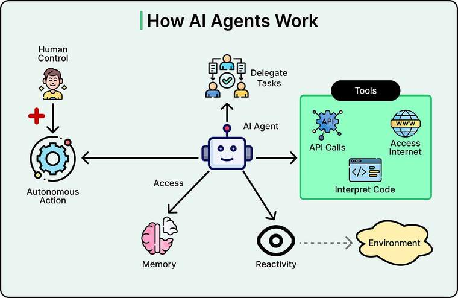
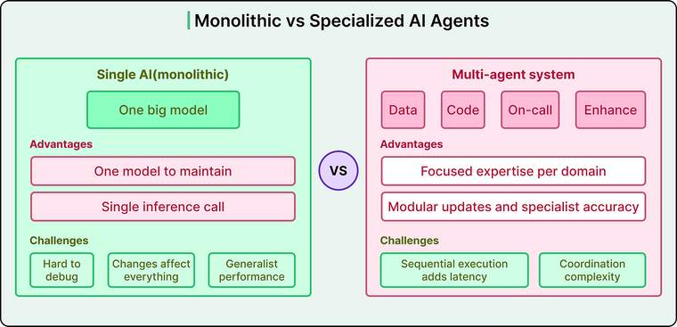
A single monolithic model would have been simpler to deploy with one model and one inference call, but it would also be harder to debug, and any change would risk affecting everything. On the other hand, specialized agents are modular. You can improve one without touching the others, add new ones without rewriting the system, and assign clear responsibilities that make failures traceable. The tradeoff is coordination complexity and some added latency from sequential execution.
使用一个模型和一个推理调用来部署单个整体模型会更简单，但调试起来也会更困难，并且任何更改都可能会影响一切。另一方面，专业代理是模块化的。您可以在不影响其他系统的情况下改进一个系统，在不重写系统的情况下添加新系统，并分配明确的职责以使故障可追溯。代价是协调复杂性和顺序执行带来的一些额外延迟。
See the comparison below:
请参阅下面的比较：
Grab accepted that tradeoff because maintainability and accuracy mattered more than saving a few seconds. The idea was that when you are replacing a multi-hour manual investigation, a few minutes for a precise answer is a massive improvement.
Grab 接受了这种权衡，因为可维护性和准确性比节省几秒钟更重要。我们的想法是，当您取代耗时数小时的手动调查时，只需几分钟即可获得精确答案，这是一个巨大的改进。
On the tech stack side, they used FastAPI to handle incoming requests and LangGraph to manage the complex stateful logic that multi-agent collaboration requires. Simple LLM calls follow a straight line from input to output, but Grabʼs agents need to loop back, ask for more information, or hand off tasks to one another, and LangGraph supports that kind of cyclical workflow. Redis handles caching and real-time session needs, while PostgreSQL stores conversation history and agent metadata as persistent memory. The agents themselves pull information from three internal platforms, which are as follows: Hubble serves as a centralized metadata and data catalog.
在技术堆栈方面，他们使用 FastAPI 来处理传入请求，并使用 LangGraph 来管理多代理协作所需的复杂状态逻辑。简单的 LLM 调用从输入到输出遵循一条直线，但 Grab 的代理需要循环返回、询问更多信息或将任务相互移交，而 LangGraph 支持这种循环工作流程。 Redis 处理缓存和实时会话需求，而 PostgreSQL 将对话历史记录和代理元数据存储为持久内存。代理本身从三个内部平台提取信息，如下所示： Hubble 充当集中式元数据和数据目录。
Genchi is a data quality observability platform that enforces data contracts.
Genchi 是一个执行数据契约的数据质量可观测平台。
Lighthouse tracks pipeline execution status and health.
Lighthouse 跟踪管道执行状态和运行状况。
See the diagram below:
见下图：
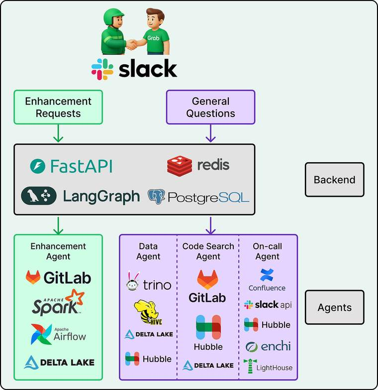
With the architecture in place, the next design decision was how to split the work.
架构就位后，下一个设计决策是如何划分工作。
This split turned out to be one of the most important choices in the entire system.
这次分裂被证明是整个系统中最重要的选择之一。
Two Pathways, Five Agents, One SupervisorWhen a question arrives through Slack, the system first determines which of two pathways to take. This fork is the architectural backbone of the whole system, and it is based on an important principle. Read-only operations and write operations have fundamentally different risk profiles, so they deserve fundamentally different architectures.
当 Slack 收到问题时，系统首先确定采取两条路径中的哪一条。这个分叉是整个系统的架构支柱，它基于一个重要的原则。只读操作和写入操作具有根本不同的风险状况，因此它们应该具有根本不同的架构。
See the diagram below:
见下图：
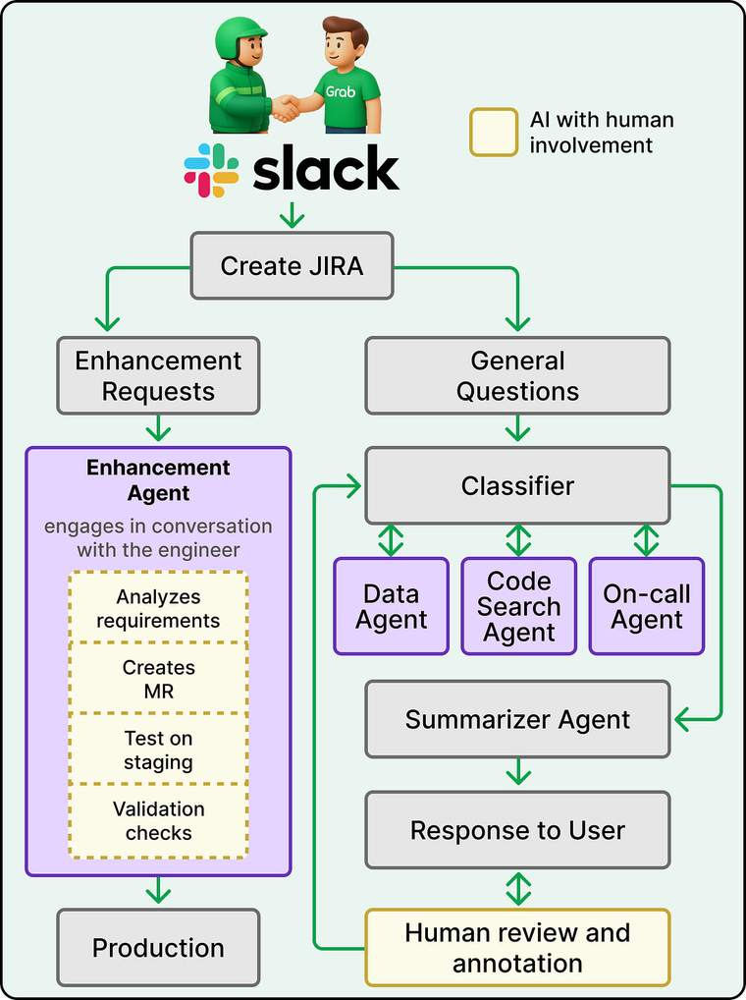
The investigation pathway handles questions like “Why does this data look wrong'” or “Where does this metric come from'” These are read-only. The
调查路径处理诸如“为什么此数据看起来错误”或“此指标来自何处”之类的问题，这些问题是只读的。这
system is gathering information, and the worst case is a wrong answer that gets caught in review. Four agents collaborate here as follows: The Classifier is the first responder. It parses the question, extracts key entities like table names and column references, detects guardrail violations such as PII requests or out-of-scope queries, and determines which specialist agents are needed and in what sequence. It also provides reasoning for its routing decisions, which helps with debugging later.
系统正在收集信息，最坏的情况是错误答案被审查。四个代理在此协作如下： 分类器是第一响应者。它解析问题，提取关键实体（例如表名和列引用），检测护栏违规（例如 PII 请求或超出范围的查询），并确定需要哪些专家代理以及按什么顺序。它还提供了路由决策的推理，这有助于以后的调试。
The Data Agent handles the actual data investigation. It enriches prompts with table and column metadata, executes queries with built-in guardrails, validates schemas to avoid unnecessary scans, and retrieves sample data.
数据代理处理实际的数据调查。它使用表和列元数据丰富提示，使用内置护栏执行查询，验证架构以避免不必要的扫描，并检索示例数据。
The Code Search Agent traces column transformations through the codebase, follows table lineage across multiple transformation steps, and generates plain-language explanations of what the code is doing.
代码搜索代理通过代码库跟踪列转换，跨多个转换步骤跟踪表沿袭，并生成代码正在执行的操作的简单语言解释。
The On-call Agent monitors production health by searching Slack channels for outage announcements, checking observability platforms for pipeline status, and validating data quality metrics like null counts and duplicate rates.
On-call Agent 通过在 Slack 通道中搜索中断公告、检查可观察平台的管道状态以及验证数据质量指标（例如空计数和重复率）来监控生产运行状况。
Once the specialist agents finish their work, the Summarizer Agent combines their findings into a coherent answer. This is more than concatenation. It handles conflicting information between agents, ensures consistency, and produces a structured response ready for human review.
一旦专业代理完成他们的工作，总结代理就会将他们的发现结合成一个连贯的答案。这不仅仅是串联。它处理代理之间的冲突信息，确保一致性，并生成可供人工审核的结构化响应。
The enhancement pathway handles requests that change things, like adding a new column or modifying aggregation logic. These are write operations that touch production pipelines, so the architecture is fundamentally more cautious.
增强路径处理更改事物的请求，例如添加新列或修改聚合逻辑。这些是涉及生产管道的写入操作，因此该架构从根本上更加谨慎。
A single Enhancement Agent handles these requests. It reads the JIRA ticket, discovers relevant code in the repository, runs validation checks, generates schema changes and code modifications, and creates a merge request with full documentation. Users can then trigger test pipeline runs through the bot. But at every stage, a human engineer reviews and approves. This pathway is semi- automated by design because code changes to production pipelines require human judgment, and the system was built to respect that boundary.
单个增强代理处理这些请求。它读取 JIRA 票证，发现存储库中的相关代码，运行验证检查，生成架构更改和代码修改，并创建包含完整文档的合并请求。然后，用户可以通过机器人触发测试管道运行。但在每个阶段，都会有人类工程师进行审查和批准。该路径在设计上是半自动化的，因为生产管道的代码更改需要人工判断，并且系统的构建是为了尊重该边界。
To see how the investigation pathway works in practice, consider a real scenario from the blog:
要了解调查路径在实践中如何运作，请考虑博客中的真实场景：
Someone messages the team on Slack and asks why the ID in the vehicles table is unreadable.
有人在 Slack 上向团队发送消息，询问为什么车辆表中的 ID 无法读取。
In the old world, an engineer would spend the next couple of hours searching catalogs, tracing lineage, running SQL, and checking logs.
在过去，工程师会花费接下来的几个小时搜索目录、跟踪沿袭、运行 SQL 和检查日志。
With the multi-agent system, the Classifier routes the question to all three investigation agents.
通过多代理系统，分类器将问题发送给所有三个调查代理。
The Data Agent queries the actual data and discovers that the IDs are valid UUIDs in standard hexadecimal format. It also searches Grabʼs data catalog and finds a dimension table that maps these UUIDs to human-readable vehicle names.
数据代理查询实际数据并发现ID是标准十六进制格式的有效UUID。它还搜索 Grab 的数据目录并找到一个维度表，将这些 UUID 映射到人类可读的车辆名称。
The Code Search Agent traces the lineage through the codebase and confirms that the UUID format comes directly from the source system, with no Spark transformation applied along the way.
代码搜索代理通过代码库跟踪沿袭，并确认 UUID 格式直接来自源系统，一路上没有应用 Spark 转换。
The On-call Agent checks Airflow pipeline status, Slack channels for incidents, and data quality metrics, and finds everything healthy.
On-call Agent 检查 Airflow 管道状态、事件的 Slack 通道以及数据质量指标，并发现一切正常。
The Summarizer pulls it all together into a clear answer. The supposed bug was actually working as designed.
摘要器将所有内容汇总成一个清晰的答案。所谓的错误实际上是按设计工作的。
See the diagram below:
见下图：
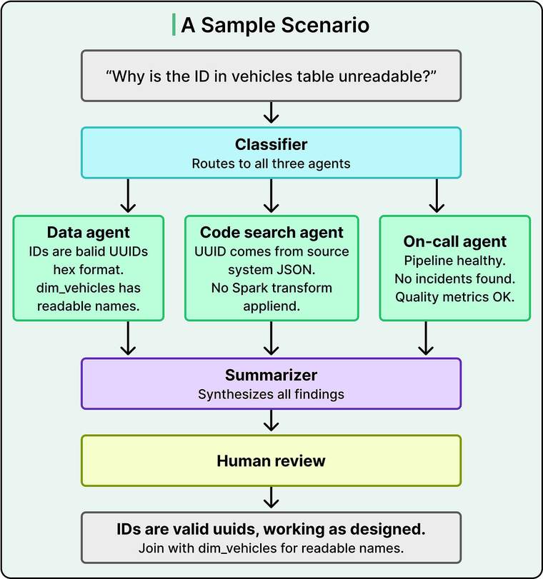
Each agent asked a different type of question. What does the data look like' How is it transformed' Is the system healthy' The full picture only emerged when their findings were combined.
每个特工都提出了不同类型的问题。数据是什么样的“它是如何转化的”系统是否健康”只有当他们的发现结合起来时，完整的情况才会出现。
This architecture worked well in controlled demos. Then real users started using it, and the team discovered that building agents was only part of the challenge.
该架构在受控演示中运行良好。然后真正的用户开始使用它，团队发现构建代理只是挑战的一部分。
Grabʼs initial prototype performed well in controlled settings, but real-world usage exposed critical gaps. Complex questions, long conversations, and edge cases
Grab 的初始原型在受控环境中表现良好，但现实世界的使用暴露了关键差距。复杂的问题、长时间的对话和边缘情况
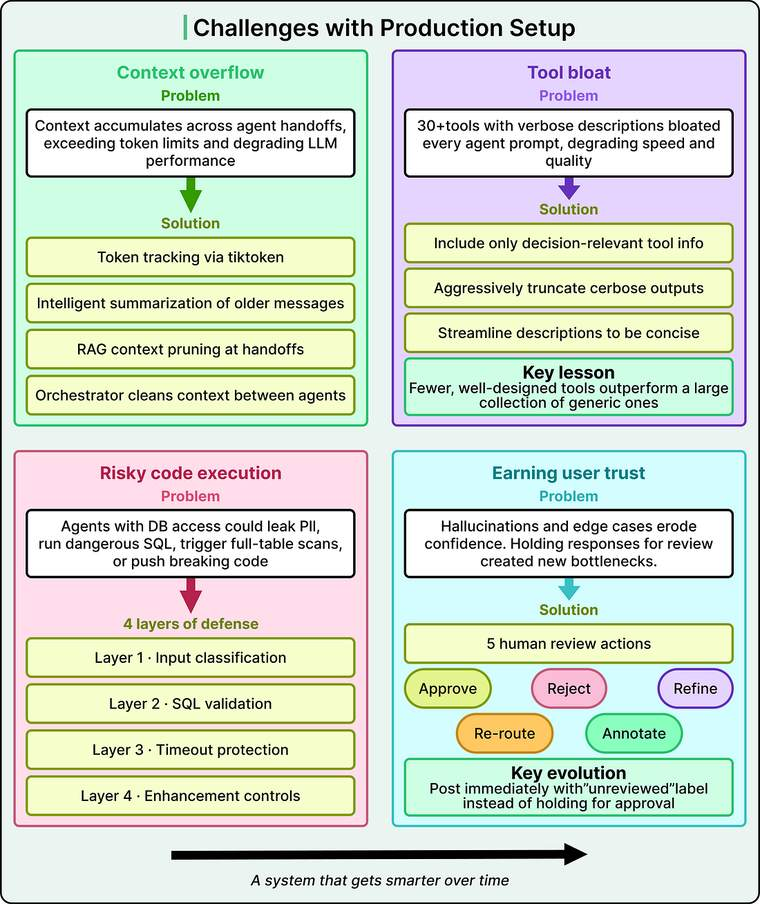
pushed the system in ways that demos never did.
以演示从未做过的方式推动系统。
Here are four of the most instructive challenges they faced, along with the solutions they engineered.
以下是他们面临的四个最具启发性的挑战，以及他们设计的解决方案。
Letʼs look at each in more detail:
让我们更详细地看看每一个：
In a multi-agent system, context accumulates fast. Every piece of information passed from one agent to the next adds tokens, and LLM performance degrades when context windows get overloaded.
在多智能体系统中，上下文积累得很快。从一个代理传递到下一个代理的每条信息都会添加令牌，并且当上下文窗口过载时，LLM 性能会下降。
Grab built a multi-layered solution.
Grab 构建了一个多层解决方案。
They track every messageʼs token count in real time using tiktoken, an open- source tokenizer library. When token limits approach, earlier messages are automatically summarized while recent messages and critical context remain untouched to preserve accuracy.
他们使用 tiktoken（一个开源 tokenizer 库）实时跟踪每条消息的 token 计数。当令牌限制接近时，会自动总结较早的消息，而最近的消息和关键上下文保持不变以保持准确性。
They also prune tool outputs before handoffs. Instead of passing full code files to the Code Search Agent, smaller LLM models extract only the relevant snippets and a short description. The orchestrator sits between agents, cleaning and compressing context at every handoff.
他们还在移交之前修剪工具输出。较小的 LLM 模型不会将完整的代码文件传递给代码搜索代理，而是仅提取相关的片段和简短的描述。协调器位于代理之间，在每次切换时清理和压缩上下文。
The initial design gave agents access to over 30 tools, each with verbose descriptions structured like generic API documentation.
最初的设计让代理可以访问 30 多个工具，每个工具都具有类似于通用 API 文档的详细描述。
Since tool definitions are part of the agentʼs prompt, every inference call had to process all of that text. This degraded both speed and quality.
由于工具定义是代理提示的一部分，因此每个推理调用都必须处理所有该文本。这降低了速度和质量。
The fix was aggressive simplification. Include only the portions of tool descriptions needed for decision-making, truncate verbose outputs, and streamline everything to be concise and actionable. This sounds simple, but it produced a substantial improvement in system responsiveness. The lesson is that tool design is an important engineering concern, and fewer well-designed tools outperform a large collection of generic ones.
解决办法是积极简化。仅包含决策所需的工具描述部分，截断冗长的输出，并将所有内容简化为简洁且可操作的。这听起来很简单，但它极大地提高了系统响应能力。教训是，工具设计是一个重要的工程问题，设计良好的工具数量较少，但其性能却优于大量通用工具。
AI agents with database access and code generation capabilities pose real risks.
具有数据库访问和代码生成功能的人工智能代理会带来真正的风险。
Without safeguards, they could access sensitive PII data, execute dangerous SQL operations, run expensive queries that scan entire tables, or generate breaking code changes.
如果没有保护措施，他们可能会访问敏感的 PII 数据、执行危险的 SQL 操作、运行扫描整个表的昂贵查询或生成破坏性代码更改。
Grab built four layers of defense that work together so that any single layerʼs blind spots are covered by the others.
Grab 构建了四层防御，这些防御层协同工作，以便任何单层的盲点都会被其他层覆盖。
The first layer is input classification. The Classifier detects PII requests and out-of-scope queries before any agent executes.
第一层是输入分类。分类器在任何代理执行之前检测 PII 请求和超出范围的查询。
The second layer is SQL validation. Every query is checked for PII column access, dangerous operations like DELETE or DROP, missing partition filters, and schema validity. Without these partition filters, a query might scan an entire massive table instead of just the relevant slice, which is both expensive and slow, and schema validity.
第二层是SQL验证。每个查询都会检查 PII 列访问、DELETE 或 DROP 等危险操作、缺少分区过滤器以及架构有效性。如果没有这些分区过滤器，查询可能会扫描整个庞大的表，而不仅仅是相关的切片，这既昂贵又缓慢，而且模式有效性也很差。
The third layer is timeout protection, where strict execution limits on all database queries prevent runaway operations.
第三层是超时保护，对所有数据库查询进行严格的执行限制，防止失控操作。
The fourth layer is enhancement controls. The Enhancement Agent cannot commit to the main branches directly. All changes require human review, and everything runs in staging before production.
第四层是增强控制。增强代理不能直接提交到主分支。所有更改都需要人工审核，并且所有内容都在生产前进行暂存。
Even with safety layers, AI agents can hallucinate, misinterpret questions, or stumble on edge cases. If users lose confidence in the answers, the system fails regardless of its technical capabilities.
即使有安全层，人工智能代理也可能会产生幻觉、误解问题或偶然发现边缘情况。如果用户对答案失去信心，无论其技术能力如何，系统都会失败。
Grab built a human review system where engineers can take five actions on any AI-generated response. They can approve it as-is with a verified footnote, reject it and log it for improvement, refine it by adding a prompt to regenerate the answer, re-route it to a specific agent with additional context, or annotate it with structured feedback for continuous improvement.
Grab 构建了一个人工审核系统，工程师可以对任何人工智能生成的响应采取五项行动。他们可以通过经过验证的脚注按原样批准它，拒绝它并记录它以进行改进，通过添加重新生成答案的提示来完善它，将其重新路由到具有附加上下文的特定代理，或者使用结构化反馈对其进行注释以进行持续改进。
They also made a key design evolution here.
他们还在这里进行了关键的设计改进。
Initially, the system withheld all AI-generated responses until an engineer approved them. This was safe but slow, and it created a new bottleneck where questions sat unanswered during peak workload times.
最初，系统会保留所有人工智能生成的响应，直到工程师批准为止。这是安全但缓慢的，并且它造成了一个新的瓶颈，在高峰工作负载期间问题得不到解答。
They redesigned the flow to post responses immediately with a clear, unreviewed label, allowing engineers to review and modify as needed. Users get fast answers, the transparency of the label sets appropriate expectations, and the review process still catches errors.
他们重新设计了流程，立即使用清晰的、未经审查的标签发布回复，从而允许工程师根据需要进行审查和修改。用户可以快速得到答案，标签的透明度设定了适当的期望，并且审核过程仍然可以发现错误。
Solving these challenges made the system reliable. But the team wanted something more, a system that gets smarter over time
解决这些挑战使系统变得可靠。但团队想要更多东西，一个随着时间的推移变得更加智能的系统
The annotations from human review were initially passive records. The team had a wealth of information about what worked and what failed, but they were missing a systematic way to learn from it.
人工审查的注释最初是被动记录。该团队拥有大量关于什么有效、什么失败的信息，但他们缺少从中学习的系统方法。
They transformed annotations into an active improvement engine through multiple mechanisms, which are as follows: Random annotations get pulled to create test cases for offline evaluation, ensuring the system is tested against real-world failures rather than synthetic ones.
他们通过多种机制将注释转变为主动改进引擎，如下所示： 随机注释被拉出以创建用于离线评估的测试用例，确保系统针对现实世界的故障而不是合成故障进行测试。
Pattern analysis identifies systemic issues by asking questions such as: Is the Classifier consistently routing to the wrong agents' Does a specific agent struggle with certain query types' Are particular table schemas confusing' Quality metrics tracked over time detect regression. If the rejection rate suddenly spikes, something has changed that needs investigation.
模式分析通过提出以下问题来识别系统问题：分类器是否始终路由到错误的代理？特定代理是否难以处理某些查询类型？特定的表模式是否令人困惑？随着时间的推移跟踪的质量指标检测回归。如果拒绝率突然飙升，则表明某些事情发生了变化，需要进行调查。
Targeted improvements use these insights to refine agent prompts, enhance guardrails, and add examples for query types that the system struggles with.
有针对性的改进利用这些见解来完善代理提示、增强护栏，并为系统难以处理的查询类型添加示例。
The impact was significant. The bots now autonomously handle the majority of standard user inquiries and a significant portion of enhancement requests.
影响是巨大的。这些机器人现在可以自主处理大多数标准用户查询和很大一部分增强请求。
Resolution time dropped by an order of magnitude. The team reclaimed several full-time equivalents worth of engineering bandwidth, shifting hundreds of hours from reactive support to proactive roadmap delivery.
解决时间下降了一个数量级。该团队回收了几个相当于全职的工程带宽，将数百个小时从被动支持转变为主动路线图交付。
Conclusion Grabʼs journey from overwhelmed data engineers to an AI-augmented team distills into a few key principles: If the problems vary but the process of solving them stays consistent, it is a good opportunity to have automation.
结论 Grab 从不堪重负的数据工程师到人工智能增强团队的历程可归纳为几个关键原则：如果问题各不相同，但解决问题的过程保持一致，那么这是实现自动化的好机会。
When building that automation, expect the majority of the effort to go into production hardening rather than the agents themselves.
在构建自动化时，预计大部分工作都会投入到生产强化中，而不是代理本身。
Apply different levels of autonomy based on the risk profile of the operation.
根据运营的风险状况应用不同级别的自主权。
Read-only investigations can run with light oversight, but anything that changes production data deserves human gates.
只读调查可以在轻微监督的情况下运行，但任何改变生产数据的事情都需要人工控制。
Engineer the feedback loop deliberately, because without it, the system is frozen at the quality level of its first deployment. Every rejected response, every annotation, every pattern in the failure data is an opportunity to make the system smarter.
精心设计反馈循环，因为如果没有它，系统就会冻结在首次部署的质量水平。失败数据中的每个被拒绝的响应、每个注释、每个模式都是使系统变得更加智能的机会。
Grabʼs own principles capture this well. The goal was never to replace engineers.
Grab 自己的原则很好地体现了这一点。我们的目标从来都不是取代工程师。
It was to give them their time back. =================================================
这是为了给他们时间。 ===================================================
How Snapchat Serves a Billion Predictions Per Second
How Snapchat Serves a Billion Predictions Per SecondMost teams pick a search provider by running a few test queries and hoping for the best – a recipe for hallucinations and unpredictable failures. This technical guide from You.com gives you access to an exact framework to evaluate AI search and retrieval.
大多数团队通过运行一些测试查询来选择搜索提供商，并希望得到最好的结果——这会导致幻觉和不可预测的失败。 You.com 的这份技术指南为您提供了评估人工智能搜索和检索的准确框架。
What youʼll get: A four-phase framework for evaluating AI search How to build a golden set of queries that predicts real-world performance Metrics and code for measuring accuracy Go from “looks good” to proven quality.
您将得到什么： 用于评估人工智能搜索的四阶段框架 如何构建一组黄金查询来预测现实世界的性能 用于测量准确性的指标和代码 从“看起来不错”到经过验证的质量。
Learn how to run an eval Snapchat decides what to show you in roughly 100 milliseconds. In that window, the system has to retrieve a few hundred candidate videos from a corpus of millions, fetch dozens of features about the user and dozens about each candidate, run a deep learning model over every pair, and rank the results. Now consider how this scales when 477 million people open the app every day.
了解如何运行评估 Snapchat 在大约 100 毫秒内决定向您展示什么。在该窗口中，系统必须从数百万个语料库中检索数百个候选视频，获取有关用户的数十个特征和每个候选者的数十个特征，对每一对运行深度学习模型，并对结果进行排名。现在考虑一下，当每天有 4.77 亿人打开该应用程序时，这种情况会如何扩展。
The interesting question is how the system stays fast at this scale. The deeper question is what shape the system has to have to be fast at all.
有趣的问题是系统如何在这种规模下保持快速。更深层次的问题是，什么样的系统必须要足够快。
Snapchat started in 2011 as an ephemeral messaging app where photos disappeared after a few seconds, and it has since grown into a full social platform
Snapchat 于 2011 年推出，最初是一款短暂的消息应用程序，照片几秒钟后就会消失，后来它已发展成为一个完整的社交平台
with Discover, Spotlight, augmented reality lenses, friend suggestions, and an ad business that funds most of the company. Snap reported 946 million monthly active users in late 2025, with about 474 million of them opening the app every day. India is the largest market with over 214 million users, followed by the United States with around 104 million, while France, the Gulf countries, and other regions make up the rest of a global footprint that spans every major social media market.
包括 Discover、Spotlight、增强现实镜头、朋友推荐以及为公司提供大部分资金的广告业务。 Snap 报告称，2025 年末每月活跃用户数为 9.46 亿，其中每天约有 4.74 亿人打开该应用。印度是最大的市场，拥有超过 2.14 亿用户，其次是美国，拥有约 1.04 亿用户，而法国、海湾国家和其他地区则构成了全球的其余部分，覆盖每个主要社交媒体市场。
For Snap, machine learning is closer to the product itself than a feature on top of it. Every session forces the system to make four kinds of decisions.
对于 Snap 来说，机器学习更接近产品本身，而不是产品之上的功能。每个会话都会迫使系统做出四种决策。
The first is which content should appear in your Discover and Spotlight feeds.
第一个是哪些内容应该出现在您的 Discover 和 Spotlight feed 中。
The second is which ads should win the auction for your attention.
第二个是哪些广告应该赢得拍卖以引起您的注意。
The third is which people should appear in your friend suggestions.
第三个是哪些人应该出现在你的朋友推荐中。
The fourth is which AR lenses and effects should surface for you.
第四个是应该为您呈现哪些 AR 镜头和效果。
Each decision is shaped by an ML model, each one happens in milliseconds, and each one can be wrong in expensive ways. A bad ad ranking costs revenue directly, while a bad recommendation costs engagement, which costs future revenue.
每一个决策都是由机器学习模型决定的，每一个决策都在几毫秒内发生，而且每一个决策都可能会付出昂贵的代价。糟糕的广告排名会直接损失收入，而糟糕的推荐会损失参与度，从而损失未来的收入。
All of this runs on a single platform called Bento. In this article, weʼll look at how the Snap engineering team built Bento and the challenges they faced along the way.
所有这些都运行在一个名为 Bento 的单一平台上。在本文中，我们将了解 Snap 工程团队如何构建 Bento 以及他们在此过程中面临的挑战。
Disclaimer: This post is based on publicly shared details from the Snap Engineering Team. Please comment if you notice any inaccuracies.
免责声明：本文基于 Snap 工程团队公开分享的详细信息。如果您发现任何不准确之处，请发表评论。
The Shape of a Ranking WorkloadA typical web request is roughly symmetric. One request arrives, the server queries a database, builds a response, and sends it back. The shape is one-to- one.
典型的 Web 请求大致是对称的。当一个请求到达时，服务器查询数据库，构建响应，然后将其发回。形状是一对一的。
A ranking request is asymmetric. One user opens the app, and the platform has to decide what to show them out of millions of options. Internally, this single request expands into hundreds or thousands of pairs of (user, candidate) that each need a score from a model. After scoring, the system ranks the candidates and returns the top few to the user. A single request comes in, hundreds or thousands of model evaluations happen, and a short ranked list goes back out.
排名请求是不对称的。一名用户打开应用程序，平台必须决定从数百万个选项中向他们展示什么。在内部，这个单个请求扩展到数百或数千对（用户、候选人），每个请求都需要模型的分数。评分后，系统对候选者进行排名，并将前几名返回给用户。收到一个请求，就会发生数百或数千个模型评估，最后会返回一个简短的排名列表。
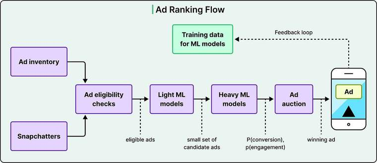
This expansion is what shapes Bento. Almost every architectural decision in the platform is an answer to the question of how to absorb this fanout.
这种扩张造就了 Bento。平台中的几乎每个架构决策都是对如何吸收这种扇出问题的答案。
In practice, the work is split across two stages.
在实践中，工作分为两个阶段。
The first stage is retrieval, where cheap models filter the full corpus down to a few hundred or thousands of candidates worth scoring.
第一阶段是检索，其中廉价模型将整个语料库过滤为数百或数千个值得评分的候选者。
The second stage is ranking, where expensive models score those candidates carefully and produce the final order.
第二阶段是排名，昂贵的模型仔细对这些候选者进行评分并产生最终的顺序。
Snapʼs ad ranking system follows this pattern explicitly. Light models filter the eligible ad inventory, heavy models predict the probability of conversion and engagement, an auction picks the winner, and the winning ad is served. The userʼs response to that ad, whether they click, dismiss, or watch, then flows back into the training data.
Snap 的广告排名系统明确遵循了这种模式。轻型模型过滤符合条件的广告库存，重型模型预测转化和参与的概率，拍卖选出获胜者，并投放获胜的广告。用户对该广告的响应，无论是点击、关闭还是观看，都会回流到训练数据中。
The math gets large quickly. If hundreds of millions of users each trigger a few ranking requests per session, and each request scores hundreds of candidates, the total prediction volume crosses a billion per second. Snap reports that exact number, along with 1 TB per second of feature reads and 10 trillion events per day flowing through the feature pipelines.
数学很快就会变大。如果数亿用户每个会话触发几个排名请求，并且每个请求对数百个候选者进行评分，则总预测量每秒将超过十亿。 Snap 报告了确切的数字，以及每秒 1 TB 的功能读取和每天流经功能管道的 10 万亿个事件。
This design creates four distinct kinds of pressure on the platform: Latency pressure comes from the simple fact that users will abandon the app if a feed takes too long to load.
这种设计给平台带来了四种不同的压力： 延迟压力来自一个简单的事实：如果提要加载时间太长，用户将放弃该应用程序。
Scale pressure comes from the sheer prediction volume itself.
规模压力来自纯粹的预测量本身。
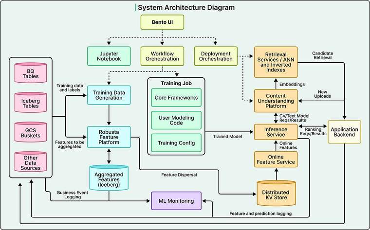
Freshness pressure comes from the requirement that a user who just liked a video should immediately see the system respond to that signal.
新鲜度压力来自于这样的要求：刚刚喜欢视频的用户应该立即看到系统对该信号的响应。
Iteration pressure comes from the need for ML engineers to ship hundreds of experiments per month to keep the models competitive.
迭代压力来自于机器学习工程师需要每月进行数百次实验以保持模型的竞争力。
These pressures pull in different directions, since latency wants smaller models, scale wants cheaper compute, freshness wants real-time pipelines, and iteration wants flexible tooling. The point of Bento is to make all four tractable at the same time.
这些压力向不同的方向延伸，因为延迟需要更小的模型，规模需要更便宜的计算，新鲜度需要实时管道，而迭代需要灵活的工具。便当的目的是让这四个人同时变得易于处理。
The platform splits cleanly into two halves. One half produces models, while the other half serves them. Almost all of the unusual engineering lives in the second half.
平台干净地分成两半。一半制作模型，另一半为模型提供服务。几乎所有不寻常的工程都发生在下半年。
The Training PipelineThe training half of Bento follows a familiar four-stage workflow.
Bento 的训练部分遵循熟悉的四阶段工作流程。
Training data is generated from raw events and aggregated features. The model trains on GPU or TPU hosts, the trained model is evaluated against held-out data, and finally, the model is exported into a form ready for serving. Bento orchestrates
训练数据是根据原始事件和聚合特征生成的。模型在 GPU 或 TPU 主机上进行训练，根据保留的数据对训练后的模型进行评估，最后将模型导出为可供使用的形式。便当管弦乐
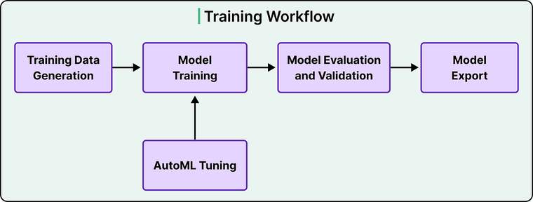
these stages using Kubeflow, an open-source workflow engine built for ML pipelines.
这些阶段使用 Kubeflow，一个为 ML 管道构建的开源工作流引擎。
The interesting design choice in this half is how Snap structures the training code itself. Rather than letting every team write its own model code from scratch, Bento splits training applications into three layers.
这半部分有趣的设计选择是 Snap 如何构建训练代码本身。 Bento 没有让每个团队从头开始编写自己的模型代码，而是将训练应用程序分为三层。
The Core framework is a shared internal library built on TensorFlow and Keras that standardizes common patterns for ranking and recommendation models.
Core 框架是一个基于 TensorFlow 和 Keras 构建的共享内部库，它标准化了排名和推荐模型的常见模式。
User model code is what an individual ML engineer writes to express their specific model.
用户模型代码是单个 ML 工程师编写的用于表达其特定模型的代码。
Training configuration is a YAML file that specifies the hardware, the input data, and the runtime options.
训练配置是一个 YAML 文件，指定硬件、输入数据和运行时选项。
This layering is what enables hundreds of experiments per day. An engineer can change one line in the configuration to swap input datasets, or modify a few lines of model code to test a new feature, and trigger a full training run. The shared Core framework means experiments are comparable, because they share the same scaffolding, while the configuration layer means experiments are cheap to launch.
这种分层使得每天可以进行数百次实验。工程师可以更改配置中的一行来交换输入数据集，或者修改几行模型代码来测试新功能，并触发完整的训练运行。共享的核心框架意味着实验具有可比性，因为它们共享相同的脚手架，而配置层意味着实验的启动成本很低。
The model export step is where Bento does something different. Modern recommendation models have an unusual computational shape. They include large embedding tables, where each user ID or video ID maps to a learned vector, and these tables are bound by memory size. They also include dense neural network layers on top of those embeddings, which are bound by compute capacity. Running both on the same hardware wastes one resource or the other.
模型导出步骤是 Bento 做一些不同的事情的地方。现代推荐模型具有不寻常的计算形状。它们包括大型嵌入表，其中每个用户 ID 或视频 ID 映射到学习向量，并且这些表受内存大小限制。它们还在这些嵌入之上包含密集的神经网络层，这些层受到计算能力的限制。在同一硬件上运行两者会浪费一种资源。
Bentoʼs export step splits the compute graph, putting dense matrix multiplication on the GPU and embedding lookups along with feature parsing on the CPU. In other words, the same trained model produces different exported versions for different inference hardware.
Bento 的导出步骤分割了计算图，将密集矩阵乘法放在 GPU 上，并在 CPU 上嵌入查找和特征解析。换句话说，相同的训练模型会为不同的推理硬件生成不同的导出版本。
Models go through this process repeatedly rather than once. Bento fully automates incremental training, where new events are continuously appended to the training data, models retrain on the updated data, and new versions deploy automatically after passing validation. A model in production is materially different from the same model a week earlier.
模型会重复而不是一次地经历这个过程。 Bento 完全自动化增量训练，其中新事件不断附加到训练数据中，模型根据更新的数据重新训练，新版本在通过验证后自动部署。正在生产的模型与一周前的同一模型有很大不同。
This whole process produces a trained model that is ready for serving, which is where the harder problem begins.
整个过程产生了一个训练有素的模型，可以提供服务，这就是更困难的问题开始的地方。
The Serving PathThe serving half of Bento is where the asymmetric workload from earlier becomes a set of concrete engineering problems.
Bento 的服务部分是之前的不对称工作量变成一系列具体工程问题的地方。
A request comes in, features have to be fetched, the model has to score hundreds or thousands of candidates, and the result has to come back within the latency budget. Each of these steps presents its own challenges, and Bentoʼs design reflects opinionated choices about how to handle them.
收到请求，必须获取特征，模型必须对数百或数千个候选者进行评分，并且结果必须在延迟预算内返回。每个步骤都会带来自己的挑战，而 Bento 的设计反映了如何处理这些挑战的固执己见的选择。
The most consequential of those choices involves the feature store, which sits between the offline world where models are trained and the online world where they are served.
这些选择中最重要的是特征存储，它位于训练模型的离线世界和为模型提供服务的在线世界之间。
The Feature Store SplitA feature is a numerical input to a model derived from raw data. A simple example is the number of videos a user watched in the last 24 hours. More complex features might involve embeddings learned during training, statistical aggregations over time windows, or counts grouped by various keys. A model takes dozens or hundreds of features as input and produces a prediction.
特征是从原始数据导出的模型的数字输入。一个简单的例子是用户在过去 24 小时内观看的视频数量。更复杂的特征可能涉及训练期间学习的嵌入、时间窗口内的统计聚合或按各种键分组的计数。模型采用数十或数百个特征作为输入并产生预测。
The challenge is that features have to exist in two places at once.
挑战在于功能必须同时存在于两个地方。
Offline, where models are trained, features live in a large analytical database, and Snap uses Apache Iceberg for this purpose.
离线时，模型经过训练，功能存储在大型分析数据库中，Snap 使用 Apache Iceberg 来实现此目的。
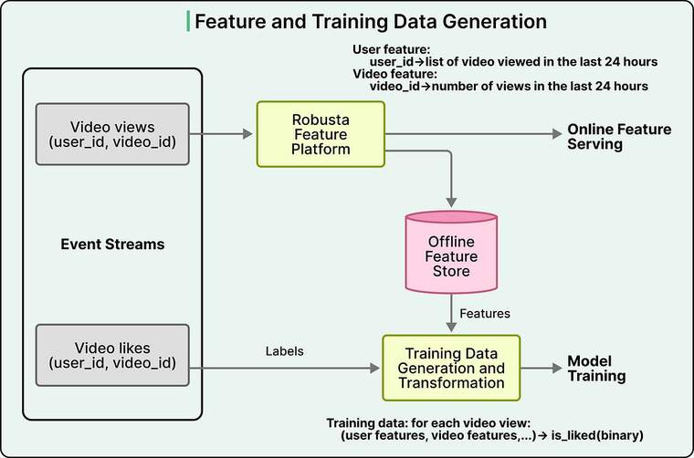
Online, where models are served, features live in a fast key-value store optimized for low-latency reads.
在线提供模型的功能位于针对低延迟读取进行优化的快速键值存储中。
These two stores must agree with each other. If the same feature is computed differently in the two places, the model will train on one distribution and serve on a different one, which produces a class of bugs called train and serve skew. The model performs well in offline evaluation and poorly in production. This problem is the central operational concern of every mature ML team, and it is rarely covered in tutorials.
这两家商店必须彼此一致。如果相同的特征在两个地方计算不同，模型将在一个分布上训练并在不同的分布上提供服务，这会产生一类称为训练和服务偏差的错误。该模型在离线评估中表现良好，但在生产中表现不佳。这个问题是每个成熟的 ML 团队最关心的运营问题，并且很少在教程中涉及。
Snapʼs feature platform is called Robusta, and it is built on Apache Spark.
Snap 的功能平台称为 Robusta，它基于 Apache Spark 构建。
Robusta is responsible for keeping the two stores in sync. It processes 10 trillion events per day, computes aggregated features over sliding time windows, and writes results to both the offline Iceberg store and the online key-value store. The online feature store alone holds 800 TB of data and serves 1 TB per second of reads.
罗布斯塔负责保持两家商店的同步。它每天处理 10 万亿个事件，计算滑动时间窗口内的聚合特征，并将结果写入离线 Iceberg 存储和在线键值存储。仅在线特征存储就可以容纳 800 TB 的数据，并提供每秒 1 TB 的读取速度。
Two Strategies for High FanoutThe asymmetric workload from earlier becomes a concrete problem at the feature layer. A single ranking request needs features for one user and many candidate
早期的不对称工作负载成为特征层的一个具体问题。单个排名请求需要一个用户和多个候选者的功能
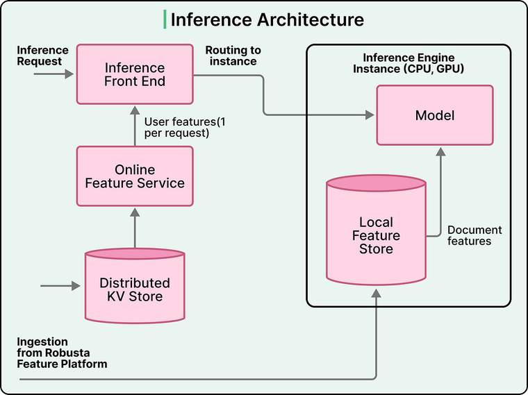
documents, and fetching all those features over the network would be too slow.
文档，并且通过网络获取所有这些功能会太慢。
Bento uses two different strategies depending on the use case.
Bento 根据用例使用两种不同的策略。
The first strategy is unusual. For many ranking workloads, Snap collocates document features directly on the inference engine instances. When a request arrives, the system performs one user feature lookup from the central online store and forwards the request to inference. The inference engine then reads document features from local memory during scoring, which eliminates network fanout entirely. The tradeoff is that each inference instance has to hold the full document feature corpus in memory, which is expensive. At Snapʼs scale, the math works out, since the latency reduction and cost savings outweigh the memory cost. At smaller scales, this approach would be wasteful, and a remote feature store is the standard answer.
第一个策略很不寻常。对于许多排名工作负载，Snap 将文档特征直接并置在推理引擎实例上。当请求到达时，系统从中央在线存储执行一个用户特征查找，并将请求转发到推理。然后，推理引擎在评分期间从本地内存读取文档特征，从而完全消除网络扇出。代价是每个推理实例必须在内存中保存完整的文档特征语料库，这是昂贵的。在 Snap 的规模上，数学是有效的，因为延迟的减少和成本的节省超过了内存成本。在较小的规模上，这种方法会很浪费，而远程特征存储是标准答案。
The second strategy handles cases where the document corpus is too large to fit on every inference instance. For these, Snap built a separate Retrieval service that performs Approximate Nearest Neighbor search, which is a fast similarity search over learned embeddings, along with inverted index lookups and forward index
第二种策略处理文档语料库太大而无法适合每个推理实例的情况。为此，Snap 构建了一个单独的检索服务，该服务执行近似最近邻搜索，这是对学习嵌入的快速相似性搜索，以及倒排索引查找和正向索引
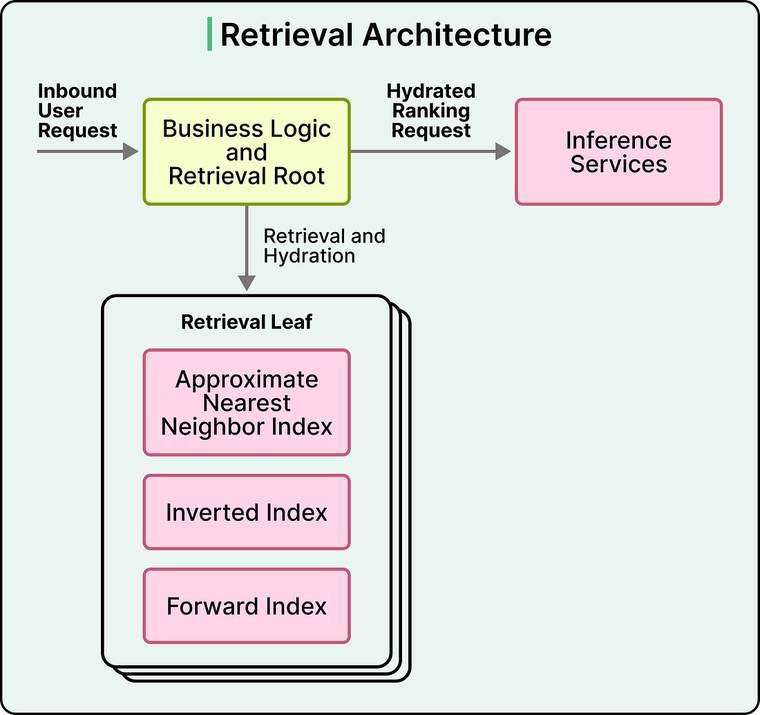
lookups in a single pass. The Retrieval service returns a small, pre-hydrated candidate set with features attached, ready to be sent to the inference engine.
一次查找。检索服务返回一个小型的、预先水化的候选集，并附加了特征，准备发送到推理引擎。
Both strategies are valid, and the choice between them depends on corpus size, access patterns, and how much memory is acceptable on inference instances.
这两种策略都是有效的，它们之间的选择取决于语料库大小、访问模式以及推理实例可接受的内存量。
The Inference Engine CheapOnce a request reaches the model, several optimizations make the actual scoring fast and economical. Two of these optimizations are worth understanding in detail.
一旦请求到达模型，多项优化就会使实际评分变得快速且经济。其中两个优化值得详细了解。
The first is the GPU and CPU compute graph split mentioned earlier. The model export step produces a hardware-specific version that places dense matrix math on the GPU and embedding lookups, along with feature parsing on the CPU. This
首先是前面提到的GPU和CPU计算图分割。模型导出步骤会生成一个特定于硬件的版本，该版本将密集矩阵数学放在 GPU 上并嵌入查找，并在 CPU 上进行特征解析。这
split avoids two waste patterns at once. Putting embeddings on the GPU wastes scarce GPU memory on lookup tables, while putting dense math on the CPU wastes time on operations a GPU could parallelize easily. The split costs more engineering effort during export, and it pays back many times over during serving.
split 可以同时避免两种浪费模式。将嵌入放在 GPU 上会浪费查找表上稀缺的 GPU 内存，而将密集数学放在 CPU 上会浪费 GPU 可以轻松并行的操作的时间。这种拆分在导出过程中会花费更多的工程工作量，而在服务过程中会得到数倍的回报。
The second is data plane optimization, and this is the most striking specific result in the entire blog. Bentoʼs engineers found that a large fraction of inference latency was being spent on serialization and deserialization of feature data, rather than on the model itself. They redesigned the inference APIs so that features could be fetched and transferred as raw bytes, with deserialization happening only inside the inference engine. Combined with custom Protobuf optimizations, this single change resulted in 2x lower latency and 10x cheaper data plane costs. The lesson is that at scale, the boring machinery of the system, including serialization, RPC framing, and network transport, often dominates the cost. Most of the cost lives outside the model itself.
第二个是数据平面优化，这是整个博客中最引人注目的具体结果。 Bento 的工程师发现，很大一部分推理延迟都花在了特征数据的序列化和反序列化上，而不是花在了模型本身上。他们重新设计了推理 API，以便可以以原始字节的形式获取和传输特征，而反序列化仅在推理引擎内部发生。与自定义 Protobuf 优化相结合，这一单一更改使延迟降低了 2 倍，数据平面成本降低了 10 倍。教训是，在规模上，系统的无聊机制，包括序列化、RPC 框架和网络传输，通常在成本中占主导地位。大部分成本存在于模型本身之外。
Other optimizations exist as well. Request batching, model co-location across inference fleets, and build-level tuning for the underlying hardware each contribute incrementally to performance and cost. The two optimizations described above carry most of the lesson.
还存在其他优化。请求批处理、推理队列之间的模型共置以及底层硬件的构建级调整都逐渐提高了性能和成本。上面描述的两种优化包含了大部分内容。
Once the prediction is made and the ranked feed is returned, the systemʼs job continues. The most important part of an ML platform happens after the response goes out.
一旦做出预测并返回排名后的提要，系统的工作就会继续。机器学习平台最重要的部分发生在响应发出之后。
The Feedback LoopEvery prediction Bento makes is logged, along with the features used to make it.
Bento 做出的每个预测以及用于做出预测的特征都会被记录下来。
The user actions taken in response are also logged, including whether they watched the video, dismissed the ad, or sent a friend request. These logs flow back into the training data pipeline, where new training records are generated.
用户采取的响应操作也会被记录，包括他们是否观看了视频、关闭了广告或发送了好友请求。这些日志流回到训练数据管道，在那里生成新的训练记录。
Incremental training then runs on the updated data, new model versions are exported, and after passing validation, the deployment system rolls out the new versions while older versions retire.
然后对更新的数据运行增量训练，导出新的模型版本，并在通过验证后，部署系统推出新版本，同时旧版本退役。
Two kinds of monitoring run continuously alongside this loop: The first watches statistical properties of features and predictions over time. If the mean of a feature drifts, or the distribution of predictions shifts, the change
有两种监控沿着这个循环持续运行：第一种监控随时间变化的特征和预测的统计属性。如果特征的均值发生漂移，或者预测的分布发生变化，则变化
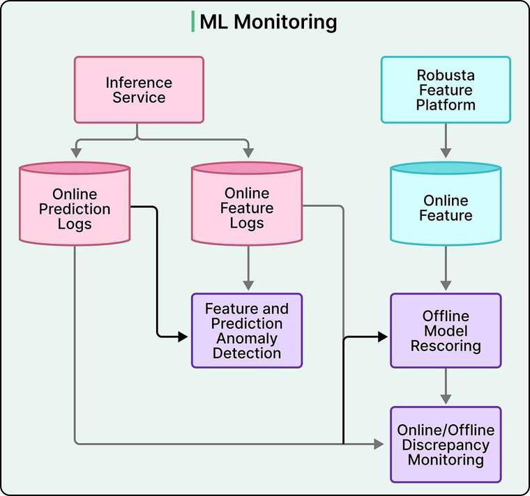
is often a signal that something upstream has broken.
通常是上游出现故障的信号。
The second kind of monitoring compares online and offline behavior directly.
第二种监控直接比较线上和线下的行为。
The same prediction is recomputed offline using the offline feature store, and the result is compared to what the online system produced.
使用离线特征存储离线重新计算相同的预测，并将结果与在线系统产生的结果进行比较。
Any discrepancy points to the train and serve skew problem from earlier.
任何差异都表明之前的列车和服务存在偏差问题。
The deployment control plane uses a reconciliation pattern borrowed from Kubernetes. The system stores a desired state, which describes which models should be deployed, in what configuration, and on which fleets, and it continuously compares this desired state to the actual running state. Any differences are closed automatically. This approach is what makes large-scale ML
部署控制平面使用借鉴自 Kubernetes 的协调模式。系统存储期望状态，该状态描述了应该部署哪些模型、采用什么配置以及在哪些机群上，并且不断将此期望状态与实际运行状态进行比较。任何差异都会自动关闭。这种方法使得大规模机器学习
deployments safe at this volume, since manual deployment at this scale would be too error-prone to be viable.
这种规模的部署是安全的，因为这种规模的手动部署太容易出错而不可行。
Snapʼs blog mentions that over a recent two-year period, ranking model size grew 20x and training data grew 40x. The platform absorbed this growth in the course of normal operation. That kind of scaling headroom is what a feedback loop buys you. The platform is less a fixed pipeline that produces a model and more a continuously running system that produces a stream of model versions, each one shaped by the data the previous version generated.
Snap 的博客提到，在最近两年内，排名模型大小增长了 20 倍，训练数据增长了 40 倍。该平台在正常运营过程中吸收了这一增长。这种扩展余量正是反馈循环为您带来的。该平台与其说是一个生成模型的固定管道，不如说是一个连续运行的系统，可以生成模型版本流，每个版本都由前一个版本生成的数据形成。
Conclusion Bento is built around a single observation about the work it does. Ranking requests are asymmetric, since one user request expands into hundreds or thousands of model evaluations before collapsing back into a short ranked list.
结论 Bento 是围绕对其所做工作的单一观察而构建的。排名请求是不对称的，因为一个用户请求会扩展为数百或数千个模型评估，然后又缩回一个简短的排名列表。
This design, multiplied by 474 million daily users and the four operational pressures it creates around latency, scale, freshness, and iteration, drives almost every architectural decision in the platform.
这种设计乘以 4.74 亿每日用户及其围绕延迟、规模、新鲜度和迭代产生的四种运营压力，几乎驱动了平台中的每一项架构决策。
The platform handles the work in two halves.
该平台将工作分为两部分处理。
The training half generates models through a four-stage workflow, with a layered code structure that lets engineers run hundreds of experiments per day, and a model export step that splits the compute graph between GPU and CPU to match the unusual computational shape of recommendation models.
训练部分通过四阶段工作流程生成模型，具有分层代码结构，可让工程师每天运行数百次实验，模型导出步骤可在 GPU 和 CPU 之间分割计算图，以匹配推荐模型的异常计算形状。
The serving half handles the harder operational problems, including the dual existence of features in offline and online stores, the high-fanout problem solved by either feature collocation or a dedicated Retrieval service, and the inference- time optimizations that produced 2x latency reductions and 10x lower data plane costs. Around all of this runs a continuous feedback loop that turns each prediction into the next round of training data, with monitoring that watches for drift and a deployment control plane that reconciles desired and running state automatically.
服务半部分处理更困难的操作问题，包括离线和在线商店中功能的双重存在、通过功能搭配或专用检索服务解决的高扇出问题，以及产生 2 倍延迟减少和 10 倍数据平面成本降低的推理时间优化。围绕所有这些，运行一个连续的反馈循环，将每个预测转化为下一轮的训练数据，并通过监控来监视漂移，并通过部署控制平面自动协调所需状态和运行状态。
The numbers Bento operates at are large, including hundreds of models trained per day, more than 100,000 training compute hours per day, 800 TB of online feature data, 1 TB per second of feature reads, and over a billion predictions per second. These figures are interesting on their own, but they matter most as the
Bento 运行的数据量很大，包括每天训练数百个模型、每天超过 100,000 个训练计算小时、800 TB 在线特征数据、每秒 1 TB 的特征读取以及每秒超过 10 亿次预测。这些数字本身很有趣，但它们最重要的是
conditions that make the architectural choices intelligible across the entire platform. =========================================================
使架构选择在整个平台上变得易于理解的条件。 ===========================================================
How Airbnb Rolled Out 20 Local Payment Methods in 360 Days
How Airbnb Rolled Out 20 Local Payment Methods in 360 DaysWhen trying to spin up AI agents, companies often get stuck in the prompting weeds and end up with agents that donʼt deliver dependable results. This ebook from You.com goes beyond the prompt, revealing five stages for building a successful AI agent and why most organizations havenʼt gotten there yet.
当尝试启动人工智能代理时，公司经常会陷入困境，最终得到的代理无法提供可靠的结果。 You.com 的这本电子书超越了提示，揭示了构建成功的人工智能代理的五个阶段，以及为什么大多数组织尚未实现这一目标。
In this guide, youʼll learn: Why prompts alone arenʼt enough and how context and metadata unlock reliable agent automation Four essential ways to calculate ROI, plus when and how to use each metric If youʼre ready to go beyond the prompt, this is the ebook for you.
在本指南中，您将了解：为什么仅提示还不够，以及上下文和元数据如何解锁可靠的代理自动化计算投资回报率的四种基本方法，以及何时以及如何使用每个指标如果您准备好超越提示，这就是适合您的电子书。
Get the GuideFor years, Airbnb supported credit and debit cards as the primary way guests could pay for accommodations.
多年来，Airbnb 支持信用卡和借记卡作为客人支付住宿费用的主要方式。
However, today Airbnb operates in over 220 countries worldwide, and while cards work well in many regions, just relying on this payment approach excludes millions of potential users. In countries where credit card penetration is low or where people strongly prefer local payment methods, Airbnb was losing bookings and limiting its growth potential.
然而，如今 Airbnb 在全球 220 多个国家/地区开展业务，虽然卡在许多地区运作良好，但仅仅依靠这种支付方式就会排除数百万潜在用户。在信用卡普及率较低或人们强烈偏爱本地支付方式的国家，Airbnb 的预订量不断下降，限制了其增长潜力。
To solve this problem, the Airbnb Engineering Team launched the “Pay as a Local” initiative. The goal was to integrate 20+ locally preferred payment methods across multiple markets in just 14 months.
为了解决这个问题，Airbnb 工程团队发起了“Pay as a Local”计划。我们的目标是在短短 14 个月内跨多个市场整合 20 多种本地首选支付方式。
In this article, we will look at the technical architecture and engineering decisions that made this expansion possible.
在本文中，我们将研究使这种扩展成为可能的技术架构和工程决策。
Disclaimer: This post is based on publicly shared details from the Airbnb Engineering Team. Please comment if you notice any inaccuracies.
免责声明：本文基于 Airbnb 工程团队公开分享的详细信息。如果您发现任何不准确之处，请发表评论。
Local Payment Methods, or LPMs, extend beyond traditional payment cards. They include digital wallets like Naver Pay in South Korea and MPesa in Kenya, online bank transfers used across Europe, instant payment systems like PIX in Brazil and UPI in India, and regional payment schemes like EFTPOS and Cartes Bancaires.
本地支付方式（LPM）超越了传统支付卡的范畴。其中包括韩国的 Naver Pay 和肯尼亚的 MPesa 等数字钱包、欧洲各地使用的在线银行转账、巴西的 PIX 和印度的 UPI 等即时支付系统，以及 EFTPOS 和 Cartes Bancaires 等区域支付方案。
Supporting LPMs provides several advantages.
支持 LPM 有几个优点。
First, offering familiar payment options increases conversion rates at checkout.
首先，提供熟悉的支付选项可以提高结账时的转化率。
Second, it unlocks markets where credit card usage is minimal or nonexistent.
其次，它打开了信用卡使用率极低或根本不存在的市场。
Third, it improves accessibility for guests who lack credit cards or traditional banking access.
第三，它为没有信用卡或传统银行业务的客人提供了便利。
The Airbnb team identified over 300 unique payment methods worldwide through initial research. For the first phase, they used a qualification framework to narrow this list. They evaluated the top 75 travel markets, selected the top one or two payment methods per market, excluded methods without clear travel use cases, and arrived at a shortlist of just over 20 LPMs suited for integration.
Airbnb 团队通过初步研究确定了全球 300 多种独特的支付方式。在第一阶段，他们使用资格框架来缩小这个列表。他们评估了 75 个排名前列的旅游市场，为每个市场选择了最热门的一到两种支付方式，排除了没有明确旅游用例的方法，并得出了 20 多个适合集成的 LPM 的候选名单。
Before building support for LPMs, Airbnb needed to modernize its payment infrastructure.
在建立对 LPM 的支持之前，Airbnb 需要对其支付基础设施进行现代化改造。
The original system was monolithic, meaning all payment logic existed in one large codebase. This architecture created several problems: Adding new features took considerable time, and time to market for new capabilities was measured in months.
最初的系统是单一的，这意味着所有支付逻辑都存在于一个大型代码库中。这种架构产生了几个问题：添加新功能需要相当长的时间，而新功能的上市时间则以几个月为单位。
Different teams couldnʼt work independently.
不同的团队无法独立工作。
The system was difficult to scale.
该系统很难扩展。
Airbnb implemented a multi-year replatforming initiative called Payments LTA, where LTA stands for Long-Term Architecture. The team shifted from a monolithic system to a capability-oriented services system structured by domains. This approach uses domain-driven decomposition, where the system is broken into smaller services based on business capabilities.
Airbnb 实施了一项名为“支付 LTA”的多年平台重组计划，其中 LTA 代表“长期架构”。团队从单体系统转向以领域为基础的能力导向的服务系统。这种方法使用领域驱动的分解，根据业务功能将系统分解为更小的服务。
See the diagram below that shows a sample domain-driven approach:
请参见下图，其中显示了示例域驱动方法：
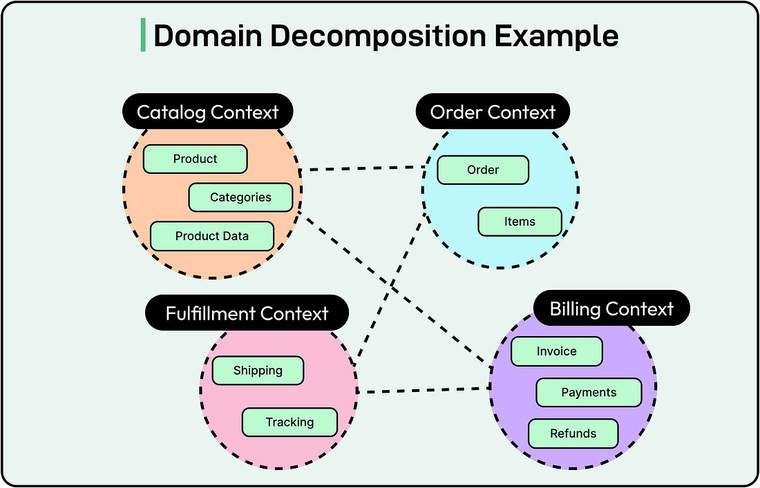
After the entire exercise, the core payment domain at Airbnb consisted of multiple subdomains: The Pay-in subdomain handles guest payments.
整个练习结束后，Airbnb 的核心支付域由多个子域组成： Pay-in 子域处理客人付款。
The Payout subdomain manages host payments.
Payout 子域管理主机付款。
Transaction Fulfillment oversees the complete transaction lifecycle.
交易履行监督整个交易生命周期。
The Processing subdomain integrates with third-party payment service providers.
处理子域与第三方支付服务提供商集成。
Wallet and Instruments for stored payment methods.
用于存储支付方式的钱包和工具。
Ledger for recording transactions.
用于记录交易的分类账。
Incentives and Stored Value for credits and coupons.
积分和优惠券的激励和储值。
Issuing for creating payment instruments.
发行用于创建支付工具。
Settlement and Reconciliation for ensuring accurate money flows.
结算和对账，确保准确的资金流向。
This modernization approach reduced time to market for new features, increased code reusability and extensibility, and empowered greater team autonomy by allowing teams to work on specific domains independently.
这种现代化方法缩短了新功能的上市时间，提高了代码的可重用性和可扩展性，并通过允许团队独立处理特定领域来赋予团队更大的自主权。
Using AI agents to debug production incidents from AI- generated code (Sponsored)
使用 AI 代理从 AI 生成的代码中调试生产事件（赞助）
With AI generating 80% of code, production systems are getting harder to debug with every deployment. Investigating issues requires following a trail of breadcrumbs across code, infrastructure, telemetry, and documents.
随着人工智能生成 80% 的代码，生产系统在每次部署时都变得越来越难以调试。调查问题需要跟踪代码、基础设施、遥测和文档中的痕迹。
Teams are keeping up with production at scale using AI agents that investigate like senior engineers, forming hypotheses, running queries across systems, and converging on root cause with evidence.
团队使用人工智能代理来跟上大规模生产的步伐，人工智能代理可以像高级工程师一样进行调查、形成假设、跨系统运行查询，并通过证据汇聚根本原因。
Engineering teams at Coinbase and DoorDash are using Resolve AI to cut incident investigation time by 70%.
Coinbase 和 DoorDash 的工程团队正在使用 Resolve AI 将事件调查时间缩短 70%。
Explore how AI agents help investigate issues in this interactive demo.
在此交互式演示中探索 AI 代理如何帮助调查问题。
Click through a real investigation →
点击查看真实调查→
The Processing subdomain became particularly important for LPM integration.
处理子域对于 LPM 集成变得尤为重要。
Airbnb adopted a connector and plugin-based architecture for onboarding new payment service providers, or PSPs.
Airbnb 采用了基于连接器和插件的架构来引入新的支付服务提供商 (PSP)。
During replatforming, the team introduced Multi-Step Transactions, abbreviated as MST. This processor-agnostic framework supports payment flows completed
在平台重构过程中，团队引入了多步事务（Multi-Step Transactions），缩写为 MST。这种与处理器无关的框架支持完成支付流程
across multiple stages.
跨越多个阶段。
For example, traditional card payments happen in a single step where you enter your card details and receive an immediate response. However, many local payment methods require multiple steps, such as redirecting to another website, authenticating with a separate app, or scanning a QR code.
例如，传统的银行卡支付只需一步即可完成，您只需输入银行卡详细信息即可立即收到回复。然而，许多本地支付方式需要多个步骤，例如重定向到另一个网站、使用单独的应用程序进行身份验证或扫描二维码。
MST defines a PSP-agnostic transaction language to describe the intermediate steps required in a payment. These steps are called Actions. Common action types include redirects to external websites or apps, strong customer authentication frictions like security challenges and fingerprinting, and payment method-specific flows unique to each LPM.
MST 定义了一种与 PSP 无关的交易语言来描述支付所需的中间步骤。这些步骤称为操作。常见的操作类型包括重定向到外部网站或应用程序、安全挑战和指纹识别等强大的客户身份验证摩擦，以及每个 LPM 特有的特定于支付方式的流程。
When a PSP indicates that an additional user action is required, its vendor plugin normalizes the request into an ActionPayload and returns it with a transaction intent status of ACTION_REQUIRED. This architecture ensures consistent handling of complex, multi-step payment experiences across diverse PSPs and markets.
当 PSP 指示需要额外的用户操作时，其供应商插件会将请求规范化为 ActionPayload 并以 ACTION_REQUIRED 的事务意图状态返回它。该架构可确保跨不同 PSP 和市场对复杂、多步骤的支付体验进行一致处理。
Here is an example of what an ActionPayload looks like in JSON format: { “actionPayload”: { “actionType”: “redirect”, “actionParameters”: { “redirectUrl”: “ https://pspvendor1. ..”, “method”: “GET” } } }
以下是 JSON 格式的 ActionPayload 示例： { “actionPayload”: { “actionType”: “redirect”, “actionParameters”: { “redirectUrl”: “ https://pspvendor1. ..”, “method”: “GET” } } }
While the modernized payment platform laid the foundation for enabling LPMs, these payment methods introduced unique challenges.
虽然现代化的支付平台为 LPM 奠定了基础，但这些支付方式也带来了独特的挑战。
For example, many local methods require users to complete transactions in third- party wallet apps, introducing complexity in app switching, session handoff, and synchronization between Airbnb and external digital wallets. Each local payment vendor also exposes different APIs and behaviors across charge, refund, and settlement flows.
例如，许多本地方法要求用户在第三方钱包应用程序中完成交易，从而导致应用程序切换、会话切换以及 Airbnb 和外部数字钱包之间的同步变得复杂。每个本地支付供应商还公开不同的 API 和跨收费、退款和结算流程的行为。
The Airbnb team analyzed the end-to-end behavior of their 20 LPMs and identified three foundational payment flows that capture the full spectrum of user and system interactions.
Airbnb 团队分析了 20 个 LPM 的端到端行为，并确定了三个基本支付流程，可捕获全方位的用户和系统交互。
The Redirect FlowThe first is the redirect flow. In this pattern, guests are redirected to a third-party site or app to complete the payment, then return to Airbnb to finalize their booking. Examples include Naver Pay, GoPay, and FPX. The process works as follows: Airbnbʼs payments platform sends a charge request to the local payment vendor The vendorʼs response includes a redirectUrl The platform redirects the user to the external app or website The user completes the payment The user is redirected back to Airbnb with a result token Airbnbʼs payments platform uses this token to confirm and finalize the payment securely
第一个是重定向流。在这种模式下，客人会被重定向到第三方网站或应用程序以完成付款，然后返回爱彼迎完成预订。示例包括 Naver Pay、GoPay 和 FPX。该流程的工作原理如下： Airbnb 的支付平台向本地支付供应商发送收费请求 供应商的响应包括一个redirectUrl 平台将用户重定向到外部应用程序或网站 用户完成付款 用户被重定向回 Airbnb，并带有结果令牌 Airbnb 的支付平台使用此令牌安全地确认和最终完成付款
The Async FlowThe second is the async flow, where “async” stands for asynchronous. Guests complete payment externally after receiving a prompt, such as a QR code or push notification. Airbnb receives payment confirmation asynchronously via webhooks.
第二个是异步流程，其中“async”代表异步。客人收到二维码或推送通知等提示后，在外部完成支付。 Airbnb 通过 webhooks 异步接收付款确认。
Examples include PIX, MB Way, and Blik. The process works as follows: Airbnbʼs payments platform sends a charge request to the local payment vendor.
示例包括 PIX、MB Way 和 Blik。该流程的工作原理如下：Airbnb 的支付平台向当地支付供应商发送收费请求。
The vendorʼs response includes QR code data.
供应商的响应包括二维码数据。
The checkout page displays the QR code for the user to scan.
结账页面显示二维码供用户扫描。
The user completes the payment in their wallet app.
用户在钱包应用程序中完成付款。
After payment succeeds, the vendor sends a webhook notification to Airbnb.
付款成功后，供应商会向 Airbnb 发送 webhook 通知。
The platform updates the payment status and confirms the order.
平台更新支付状态并确认订单。
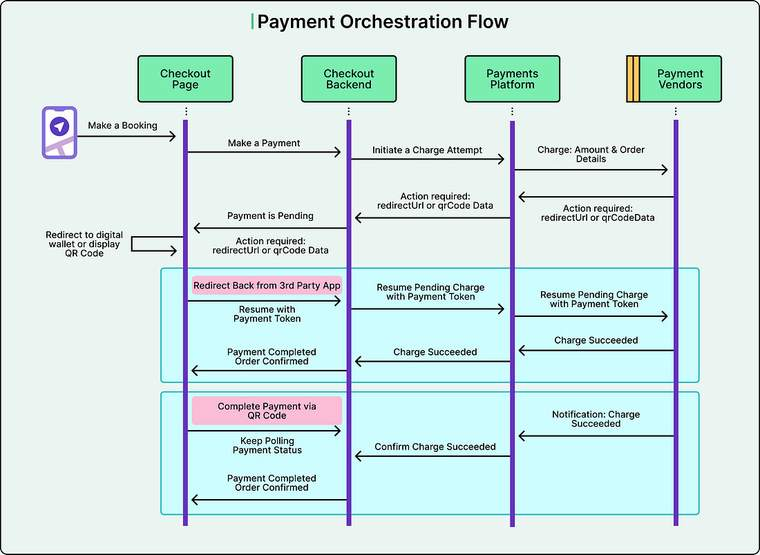
See the diagram below:
见下图：
The Direct FlowThe third is the direct flow.
三是直接流动。
Guests enter their payment credentials directly within Airbnbʼs interface, allowing real-time processing similar to traditional card payments. Examples include Carte Bancaires and Apple Pay.
客人可以直接在 Airbnb 的界面中输入支付凭证，从而实现与传统银行卡支付类似的实时处理。例子包括 Carte Bancaires 和 Apple Pay。
Airbnb embraced a config-driven approach powered by a central YAML-based Payment Method Config.
Airbnb 采用了配置驱动的方法，该方法由基于 YAML 的中央支付方法配置提供支持。
This file acts as a single source of truth for flows, eligibility rules, input fields, refund rules, and other critical details. Instead of scattering payment method logic across frontend code, backend services, and various other systems, the team consolidated all relevant details in this config.
该文件充当流程、资格规则、输入字段、退款规则和其他关键细节的单一事实来源。该团队没有将支付方法逻辑分散在前端代码、后端服务和各种其他系统中，而是在此配置中整合了所有相关细节。
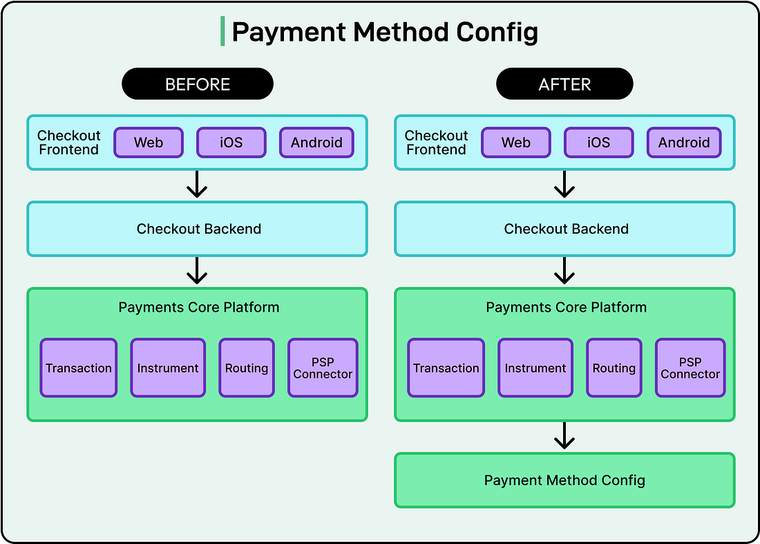
Both core payment services and frontend experiences reference this single source of truth. This ensures consistency for eligibility checks, UI rendering, and business rules. The unified approach dramatically reduces duplication, manual updates, and errors across the technology stack.
核心支付服务和前端体验都参考了这个单一的事实来源。这确保了资格检查、UI 呈现和业务规则的一致性。统一的方法极大地减少了整个技术堆栈中的重复、手动更新和错误。
See the diagram below: These configs also drive automated code generation for backend services. Using code generation tools, the system produces Java classes, DTOs Data Transfer Objects), enums, database schemas, and integration scaffolding. As a result, integrating or updating a payment method becomes largely declarative. You simply make a config change rather than writing extensive new code. This streamlines launches from months to weeks and makes ongoing maintenance far simpler.
请参见下图：这些配置还可以驱动后端服务的自动代码生成。使用代码生成工具，系统生成 Java 类、DTO（数据传输对象）、枚举、数据库模式和集成脚手架。因此，集成或更新支付方式在很大程度上变得具有声明性。您只需更改配置即可，而无需编写大量新代码。这将启动时间从几个月缩短到几周，并使持续维护变得更加简单。
The payment widget is the payment method UI embedded into the checkout page.
支付小部件是嵌入到结帐页面中的支付方式 UI。
It includes the list of available payment methods and handles user inputs. Local
它包括可用付款方式的列表并处理用户输入。当地的
payment methods often require specialized input forms and have unique country and currency eligibility requirements.
付款方式通常需要专门的输入表格，并且具有独特的国家和货币资格要求。
For example, PIX in Brazil requires the guestʼs first name, last name, and CPF, which is the Brazilian tax identification number. Rather than hardcoding forms and rules into the client applications, Airbnb centralizes both form field specification and eligibility checks in the backend.
例如，巴西的 PIX 需要客人的名字、姓氏和 CPF（巴西纳税识别号）。 Airbnb 没有将表单和规则硬编码到客户端应用程序中，而是将表单字段规范和资格检查集中在后端。
Servers send configuration payloads to clients, defining exactly which fields to collect, which validation rules to apply, and which payment options to render. This empowers the frontend to dynamically adapt UI and validation for each payment method. Teams can accelerate launches and keep user experiences current without requiring frequent client releases.
服务器将配置有效负载发送到客户端，准确定义要收集的字段、要应用的验证规则以及要呈现的支付选项。这使得前端能够动态调整每种支付方式的 UI 和验证。团队可以加速启动并保持最新的用户体验，而无需频繁发布客户端。
See the diagram below:
见下图：
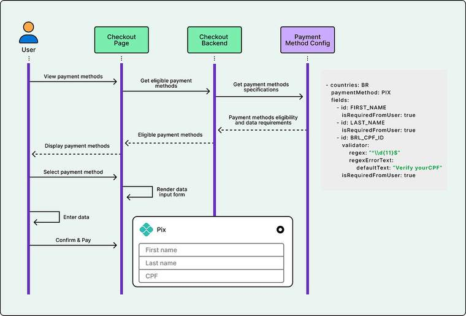
Testing local payment methods presents unique challenges.
测试本地支付方式面临着独特的挑战。
Developers often donʼt have access to local wallets. For example, a developer in the United States cannot easily test PIX, which requires a Brazilian bank account.
开发人员通常无法访问本地钱包。例如，美国的开发人员无法轻松测试 PIX，因为它需要巴西银行帐户。
Yet with such a broad range of payment methods and complex flows, comprehensive testing is essential to prevent regressions and ensure seamless functionality.
然而，由于支付方式如此广泛且流程复杂，全面的测试对于防止回归和确保无缝功能至关重要。
To address this challenge, Airbnb enhanced its in-house Payment Service Provider Emulator. See the diagram below:
为了应对这一挑战，Airbnb 增强了其内部支付服务提供商模拟器。见下图：
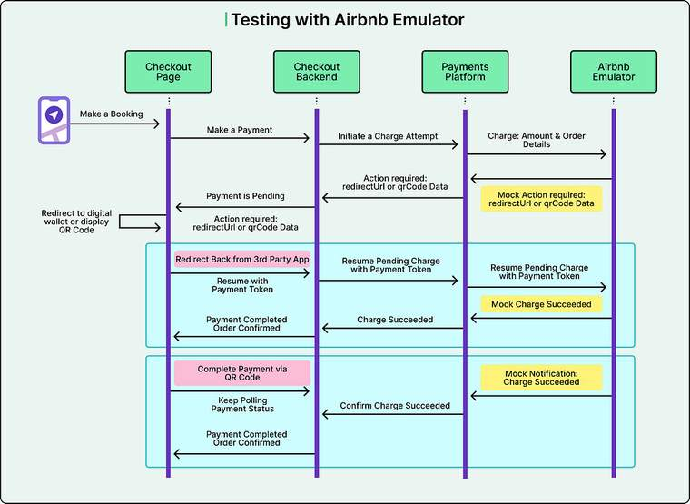
This tool enables realistic simulation of PSP interactions for both redirect and asynchronous payment methods. The Emulator allows developers to test end-to- end payment scenarios without relying on unstable or nonexistent PSP sandboxes.
该工具可以真实模拟重定向和异步支付方法的 PSP 交互。该模拟器允许开发人员测试端到端支付场景，而无需依赖不稳定或不存在的 PSP 沙箱。
For redirect payments, the Emulator provides a simple UI mirroring PSP acquirer pages. Testers can explicitly approve or decline transactions for precise scenario control. For async methods, it returns QR code details and automatically schedules webhook emission tasks upon receiving a payment request. This delivers a complete, reliable testing environment across diverse LPMs.
对于重定向支付，模拟器提供了一个简单的 UI 镜像 PSP 收单页面。测试人员可以明确批准或拒绝交易，以实现精确的场景控制。对于异步方法，它会返回二维码详细信息，并在收到付款请求后自动安排 webhook 发射任务。这提供了跨不同 LPM 的完整、可靠的测试环境。
Maintaining high reliability and availability is critical for Airbnbʼs global payment system.
保持高可靠性和可用性对于 Airbnb 的全球支付系统至关重要。
As the team expanded to support many new local payment methods, they faced increasing complexity. There were greater dependencies on external PSPs and wide variations in payment behaviors. A real-time card payment and a redirect flow like Naver Pay follow completely different technical paths.
随着团队不断扩展以支持许多新的本地支付方式，他们面临着越来越复杂的问题。对外部 PSP 的依赖性更大，支付行为也存在很大差异。实时卡支付和像 Naver Pay 这样的重定向流程遵循完全不同的技术路径。
Without proper visibility, regressions can go unnoticed until they affect real users.
如果没有适当的可见性，回归可能会被忽视，直到它们影响到真正的用户。
As dozens of new LPMs went live, observability became the foundation of reliability. Airbnb built a centralized monitoring framework that unifies metrics across all layers, from client to PSP.
随着数十个新 LPM 的上线，可观测性成为可靠性的基础。 Airbnb 构建了一个集中监控框架，统一了从客户端到 PSP 的所有层的指标。
When launching a new LPM, onboarding requires a single config change. Add the method name, and metrics begin streaming automatically. The system tracks four layers: Client metrics showing user-level flow health from client applications Payment backend metrics providing API-level metrics for payment flows PSP metrics offering API-level visibility between Airbnb and the PSP Webhook metrics tracking async completion status for redirect methods or refunds Airbnb also standardized alerting rules across platform layers using composite alerts and anomaly detection. Each alert follows a consistent pattern with failure count, failure rate, and time window thresholds. An example alert might state: “Naver Pay resume failures greater than 5 and failure rate greater than 20% in 30 minutes.” This design minimizes false positives during low-traffic periods.
启动新的 LPM 时，加入需要进行一次配置更改。添加方法名称，指标就会自动开始流式传输。该系统跟踪四层： 客户端指标，显示来自客户端应用程序的用户级流程健康状况 支付后端指标，提供支付流程的 API 级指标 PSP 指标，提供 Airbnb 和 PSP Webhook 之间的 API 级可见性，跟踪重定向方法或退款的异步完成状态 Airbnb 还使用复合警报和异常检测，标准化了跨平台层的警报规则。每个警报都遵循一致的模式，包括故障计数、故障率和时间窗口阈值。示例警报可能会指出：“Naver Pay 在 30 分钟内恢复超过 5 次失败且失败率超过 20%。”这种设计最大限度地减少了低流量期间的误报。
Conclusion Two examples demonstrate the impact of this work.
结论 两个例子证明了这项工作的影响。
Naver Pay is one of the fastest-growing digital payment methods in South Korea. As of early 2025, it reached over 30.6 million active users, representing approximately 60% of the South Korean population. Enabling Naver Pay delivered a more seamless and familiar payment experience for local guests while expanding Airbnbʼs reach to new users who prefer Naver Pay as their primary payment method.
Naver Pay 是韩国增长最快的数字支付方式之一。截至 2025 年初，它的活跃用户超过 3060 万，约占韩国人口的 60%。启用 Naver Pay 为当地客人提供了更加无缝和熟悉的支付体验，同时扩大了 Airbnb 的覆盖范围，吸引了更喜欢 Naver Pay 作为主要支付方式的新用户。
PIX is an instant payment system developed by the Central Bank of Brazil. By late 2024, more than 76% of Brazilʼs population was using PIX, making it the countryʼs most popular payment method, surpassing cash, credit cards, and debit cards. In 2024 alone, PIX processed over 26.4 trillion Brazilian reals, approximately 4.6 trillion US dollars, in transaction volume. This underscores its pivotal role in Brazilʼs digital payment ecosystem.
PIX是巴西中央银行开发的即时支付系统。到 2024 年底，超过 76% 的巴西人口使用 PIX，使其成为该国最受欢迎的支付方式，超过现金、信用卡和借记卡。仅 2024 年，PIX 的交易量就超过 26.4 万亿巴西雷亚尔，约合 4.6 万亿美元。这凸显了其在巴西数字支付生态系统中的关键作用。
The Pay as a Local initiative delivered significant business and technical impact.
“本地支付”计划产生了重大的业务和技术影响。
Airbnb observed booking uplift and new user acquisition in markets where they launched local payment methods. Integration time was reduced through reusable flows and config-driven automation. Reliability improved through enhanced observability for early outage detection, standardized testing to prevent regressions, and streamlined vendor escalation and on-call processes for global resilience.
Airbnb 在推出本地支付方式的市场中观察到预订量的增加和新用户的获取。通过可重用流程和配置驱动的自动化减少了集成时间。通过增强早期断电检测的可观察性、防止回归的标准化测试以及简化供应商升级和全球恢复能力的待命流程，提高了可靠性。
In other words, supporting local payment methods helps Airbnb remain competitive and relevant in the global travel industry. These payment options improve checkout conversion, drive adoption, and unlock new growth opportunities. =======================================================
换句话说，支持本地支付方式有助于 Airbnb 在全球旅游业中保持竞争力和影响力。这些支付选项可提高结账转化率、推动采用并释放新的增长机会。 =========================================================
How Roblox Uses AI to Translate 16 Languages in 100 Milliseconds
How Roblox Uses AI to Translate 16 Languages in 100 MillisecondsAI 在 100 毫秒内翻译 16 种语言When your AI agent holds your API keys, reads your email, and runs shell commands, security isnʼt optional.
当您的 AI 代理持有您的 API 密钥、读取您的电子邮件并运行 shell 命令时，安全性就不再是可选的。
KiloClaw is a fully managed OpenClaw: a one-click deploy that gives you a 24/7 AI agent, without buying a Mac Mini.
KiloClaw 是一款完全托管的 OpenClaw：一键部署，为您提供 24/7 AI 代理，无需购买 Mac Mini。
Every instance runs in a dedicated Firecracker micro-VM, not a shared container, with five independent isolation layers protecting your data. An independent security assessment found zero cross-tenant vulnerabilities (read the full white paper).
每个实例都在专用的 Firecracker 微虚拟机（而不是共享容器）中运行，并具有五个独立的隔离层来保护您的数据。独立安全评估发现零跨租户漏洞（阅读完整的白皮书）。
Built on the same infrastructure serving 1.5M Kilo Code developers, with access to 500 AI models through Kilo Gateway.
构建在为 150 万 Kilo Code 开发人员提供服务的相同基础设施上，可通过 Kilo Gateway 访问 500 个 AI 模型。
Try KiloClaw FreeTranslating between 16 languages means supporting 256 possible pairs, such as Korean to English, French to Thai, Portuguese to Japanese, and so on. One solution is to build a separate model for each pair. However, Roblox decided to build just one.
16 种语言之间的翻译意味着支持 256 种可能的语言对，例如韩语到英语、法语到泰语、葡萄牙语到日语等。一种解决方案是为每一对构建一个单独的模型。然而，Roblox 决定只建造一个。
Roblox is a global platform where more than 70 million people play, create, and socialize every day across more than 15 million active experiences. Users span 180 countries and communicate constantly through in-experience text chat. And a single unified model now handles real-time chat translation across all of those
Roblox 是一个全球平台，每天有超过 7000 万人在超过 1500 万次活跃体验中进行游戏、创作和社交。用户遍布 180 个国家，并通过缺乏体验的文本聊天不断进行交流。现在，一个统一的模型可以处理所有这些内容的实时聊天翻译
users, at roughly 100 milliseconds per translation and over 5,000 chats per second.
用户，每次翻译大约需要 100 毫秒，每秒聊天次数超过 5,000 次。
However, Robloxʼs real engineering challenge wasnʼt building a model that could translate. It was building a system that could translate at the speed of a conversation without breaking the user experience. In this article, we will look at what Roblox built and the trade-offs they made.
然而，Roblox 真正的工程挑战并不是建立一个可以翻译的模型。它正在构建一个可以以对话速度进行翻译而不破坏用户体验的系统。在本文中，我们将了解 Roblox 的构建以及他们所做的权衡。
Disclaimer: This post is based on publicly shared details from the Roblox Engineering Team. Please comment if you notice any inaccuracies.
免责声明：本文基于 Roblox 工程团队公开共享的详细信息。如果您发现任何不准确之处，请发表评论。
One Model Versus ManyBuilding a separate model for every language pair is the obvious starting point.
为每个语言对构建单独的模型是明显的起点。
One model for English to Korean, another for Korean to French, another for French to Thai, and so on.
一种模型用于英语到韩语，另一种模型用于韩语到法语，另一种模型用于法语到泰语，等等。
With 16 languages, thatʼs 16 times 16, or 256 individual models. Each one needs its own training data, its own infrastructure, its own maintenance. And when Roblox adds a 17th language, they donʼt need a new model. They need 32. The approach grows quadratically, and it collapses under its own weight long before you reach production.
有 16 种语言，即 16 乘以 16，即 256 个单独的模型。每个人都需要自己的训练数据、自己的基础设施和自己的维护。当 Roblox 添加第 17 种语言时，他们不需要新模型。他们需要 32。该方法呈二次方增长，并且在达到生产之前很久就因其自身重量而崩溃了。
Roblox went a different direction.
Roblox 走了不同的方向。
They built a single, unified transformer-based translation model that handles all 256 language directions. The key to making this work is an architecture called Mixture of Experts, or MoE. Instead of every translation request passing through every parameter in the model, a routing mechanism activates only a subset of specialized “expert” subnetworks depending on the input.
他们构建了一个基于 Transformer 的统一翻译模型，可以处理所有 256 种语言方向。实现这项工作的关键是一种称为“专家混合”（MoE）的架构。路由机制不是每个翻译请求都经过模型中的每个参数，而是根据输入仅激活专门的“专家”子网络的子集。
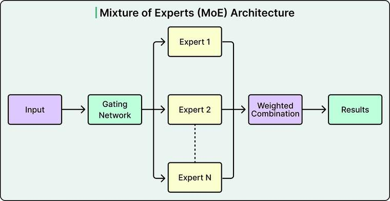
Different experts specialize in groups of similar languages. Given a source sentence and a target language, the system activates the relevant expert (or combination of experts) to generate the translation. Think of it as a team of specialist translators sitting behind a single reception desk. A request comes in, the routing layer sends it to the right specialist, and only that specialist does the work. The full team has broad expertise, but any single translation only activates a fraction of it.
不同的专家专门研究相似语言的群体。给定源句子和目标语言，系统激活相关专家（或专家组合）来生成翻译。可以将其视为坐在一个接待台后面的专业翻译团队。收到请求后，路由层会将其发送给正确的专家，然后只有该专家才能完成工作。整个团队拥有广泛的专业知识，但任何单一翻译只能激活其中的一小部分。
This unified approach creates some great benefits. When all languages are trained together, similar languages actually help each other. For example, Spanish and Portuguese share enough structure that training them in the same model improves translation quality for both. The model also learns enough about each languageʼs patterns that it can auto-detect the source language, even when the language setting is wrong or missing. It can even handle mixed-language input, where someone types in two languages within the same message, and still produce a reasonable translation into the target language.
这种统一的方法带来了一些巨大的好处。当所有语言一起训练时，相似的语言实际上是互相帮助的。例如，西班牙语和葡萄牙语具有足够的结构，可以在同一模型中对它们进行训练，从而提高两者的翻译质量。该模型还充分了解每种语言的模式，即使语言设置错误或丢失，它也可以自动检测源语言。它甚至可以处理混合语言输入，即有人在同一条消息中输入两种语言，并且仍然生成目标语言的合理翻译。
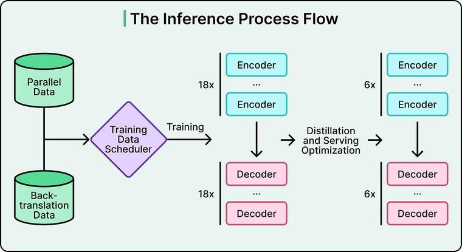
However, thereʼs a cost to consolidation. One model now carries the weight of all 256 directions. To handle that diversity with acceptable quality, Robloxʼs model ended up with roughly 1 billion parameters. Running inference through a model that large is too slow and too expensive for real-time chat at scale. The architectural problem was solved, but the serving problem was just getting started.
然而，整合是有成本的。现在，一种模型可承载所有 256 个方向的重量。为了以可接受的质量处理这种多样性，Roblox 的模型最终使用了大约 10 亿个参数。对于大规模实时聊天来说，通过如此大的模型运行推理太慢且成本太高。架构问题解决了，但服务问题才刚刚开始。
Unblocked: Context that saves you time and tokens (Sponsored)
畅通无阻：可以节省您时间和代币的上下文（赞助）
Stop babysitting your coding agents. Unblocked gives them the organizational knowledge to generate mergeable code without the back and forth. It pulls context from across your engineering stack, resolves conflicts, and cuts the rework cycle by delivering only what agents need for the task at hand.
别再照顾你的编码代理了。 Unblocked 为他们提供了无需来回生成可合并代码的组织知识。它从整个工程堆栈中提取上下文，解决冲突，并通过仅提供代理手头任务所需的内容来缩短返工周期。
See how Unblocked works
查看 Unblocked 的工作原理
Conversation A 1-billion-parameter model produces good translations. It does not produce them fast enough for two people having a real-time conversation.
对话 10 亿个参数的模型可以产生良好的翻译。对于两个人进行实时对话来说，它生成它们的速度不够快。
At 5,000+ chats per second, with a latency ceiling of roughly 100 milliseconds, Roblox needed to close a significant gap to make things production-ready. They did it with two moves. First, they made the model smaller. Then, they wrapped it in infrastructure that squeezes out every remaining millisecond.
每秒聊天次数超过 5,000 次，延迟上限约为 100 毫秒，Roblox 需要缩小显着差距才能做好生产准备。他们用两步就做到了。首先，他们缩小了模型。然后，他们将其包裹在基础设施中，以挤出剩余的每一毫秒。
Roblox used a technique called knowledge distillation, sometimes described as a teacher-student approach. The idea is straightforward. You train a large, high- quality model first (the teacher). Then you train a smaller model (the student) to mimic the teacherʼs outputs. The key detail is what the student actually learns. It doesnʼt just learn the teacherʼs final answers. It learns the teacherʼs probability
Roblox 使用了一种称为知识蒸馏的技术，有时被描述为师生方法。这个想法很简单。您首先训练一个大型的高质量模型（老师）。然后你训练一个较小的模型（学生）来模仿老师的输出。关键细节是学生实际学到的内容。它不仅仅学习老师的最终答案。它学习老师的概率
distributions, in other words, the teacherʼs confidence levels across all possible translations for a given input.
分布，换句话说，就是教师对给定输入的所有可能翻译的置信水平。
Through this process, Roblox compressed the model from roughly 1 billion parameters to fewer than 650 million. Alongside distillation, they also applied quantization (reducing the numerical precision of model weights) and model compilation (optimizing the computation graph for specific hardware). These are additional layers of compression stacked on top of distillation.
通过这个过程，Roblox 将模型参数从大约 10 亿个压缩到不到 6.5 亿个。除了蒸馏之外，他们还应用了量化（降低模型权重的数值精度）和模型编译（优化特定硬件的计算图）。这些是叠加在蒸馏之上的附加压缩层。
However, the serving infrastructure is half the story. Even a distilled model doesnʼt hit 100ms on its own at this scale. The model is just one component in a longer pipeline, and most of the latency optimization happens outside the model itself.
然而，服务基础设施只是故事的一半。在这个规模上，即使是精炼模型本身也无法达到 100 毫秒。该模型只是较长管道中的一个组件，大部分延迟优化发生在模型本身之外。
When a chat message needs translation, it first passes through RCC Robloxʼs backend service). Before the model is ever involved, the system checks a translation cache. If this exact source-text-to-target-language translation has been done before, the cached result is returned immediately, and no model inference is needed.
当聊天消息需要翻译时，它首先通过 RCC Roblox 的后端服务）。在涉及模型之前，系统会检查翻译缓存。如果之前已经完成了这种精确的源文本到目标语言的翻译，则立即返回缓存的结果，并且不需要模型推理。
If the cache misses, the request goes to the backend, where a dynamic batcher groups multiple translation requests together. Batching is critical because GPUs are far more efficient at processing many inputs at once than handling them one at a time. The batched requests then flow through the modelʼs encoder stack, which converts the source text into a numerical representation.
如果缓存未命中，请求将转到后端，其中动态批处理程序将多个翻译请求分组在一起。批处理至关重要，因为 GPU 一次处理多个输入比一次处理一个输入要高效得多。然后，批量请求流经模型的编码器堆栈，将源文本转换为数字表示形式。
Hereʼs where a second, different cache comes in. Roblox added an embedding cache between the encoder and decoder. This matters for a specific scenario that happens constantly on the platform. Imagine a Korean speaker sends a message on a server with English, German, and French speakers. That single Korean message needs three separate translations. Without the embedding cache, the encoder would process the same Korean message three times. With it, the encoding happens once, the intermediate representation is cached, and the decoder generates all three translations from that single encoding. At the scale of Robloxʼs chat traffic, this optimization is significant.
这就是第二个不同的缓存出现的地方。Roblox 在编码器和解码器之间添加了一个嵌入缓存。这对于平台上不断发生的特定场景很重要。想象一下，一个讲韩语的人在一个讲英语、德语和法语的服务器上发送一条消息。这条韩语信息需要三个单独的翻译。如果没有嵌入缓存，编码器将处理相同的韩语消息三次。有了它，编码发生一次，中间表示被缓存，并且解码器从该单个编码生成所有三个翻译。就 Roblox 的聊天流量规模而言，这种优化意义重大。
Finally, the decoded translation passes through Robloxʼs trust and safety systems, the same scrutiny applied to all text on the platform, to catch anything that violates their policies. The translated message and the original are both sent to the recipientʼs device, allowing users to toggle between the translation and the senderʼs actual words.
最后，解码后的翻译会通过 Roblox 的信任和安全系统，同样的审查适用于平台上的所有文本，以捕获任何违反其政策的内容。翻译后的消息和原始消息都会发送到收件人的设备，允许用户在翻译和发送者的实际单词之间切换。
A translation model is only as good as two things. The data it was trained on, and your ability to measure whether itʼs working. For 256 language directions at Robloxʼs scale, both of these are hard problems. And Roblox had to build custom solutions for each.
翻译模型的好坏取决于两件事。它所训练的数据，以及您衡量它是否有效的能力。对于 Roblox 规模的 256 种语言方向来说，这两个问题都是难题。 Roblox 必须为每个项目构建定制解决方案。
Standard translation quality metrics work by comparing the modelʼs output against a “correct” human translation, called a reference. But producing reference translations for all 256 language directions, across the volume and variety of Roblox chat messages, is impossible. Youʼd need human translators producing ground truth for every combination, continuously. Roblox solved this by building its own quality estimation model that scores translations using only the source text and the machine translation output. No reference translation required.
标准翻译质量指标的工作原理是将模型的输出与“正确”的人工翻译（称为参考）进行比较。但是，为所有 256 种语言方向、大量且多样化的 Roblox 聊天消息生成参考翻译是不可能的。您需要人工翻译人员持续为每种组合生成基本事实。 Roblox 通过构建自己的质量评估模型解决了这个问题，该模型仅使用源文本和机器翻译输出对翻译进行评分。无需参考翻译。
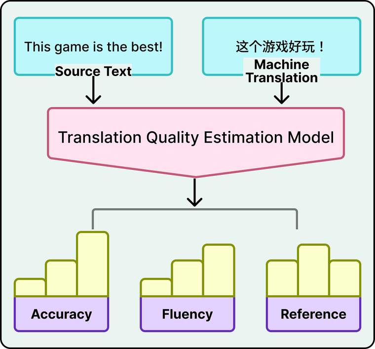
This quality model evaluates the translations along multiple dimensions.
该质量模型从多个维度评估翻译。
It checks accuracy (are there additions, omissions, or mistranslations', fluency (grammar, spelling, punctuation), and reference consistency (does the translation make sense in context with the rest of the conversation'.
它检查准确性（是否有添加、遗漏或误译）、流畅性（语法、拼写、标点符号）和参考一致性（翻译在上下文中与对话的其余部分是否有意义）。
Errors are classified by severity into critical, major, and minor categories. The model operates at word-level granularity, not just sentence-level. It doesnʼt just flag a translation as “bad.” It pinpoints which words are wrong and how severely.
错误按严重性分为严重、主要和次要类别。该模型在单词级粒度上运行，而不仅仅是句子级。它不仅仅将翻译标记为“糟糕”。它指出哪些词是错误的以及错误的严重程度。
To build this, Roblox trained an ML model on human-labeled error types and scores, then fine-tuned a multilingual language model to predict these word-level errors and compute scores across their multidimensional criteria.
为此，Roblox 根据人类标记的错误类型和分数训练了 ML 模型，然后微调多语言模型以预测这些单词级错误并根据多维标准计算分数。
Common language pairs like English-Spanish have abundant parallel training data.
英语-西班牙语等常见语言对拥有丰富的并行训练数据。
Billions of translated sentence pairs exist on the web. However, there are also rare
网络上存在数十亿个翻译句子对。不过，也有罕见的
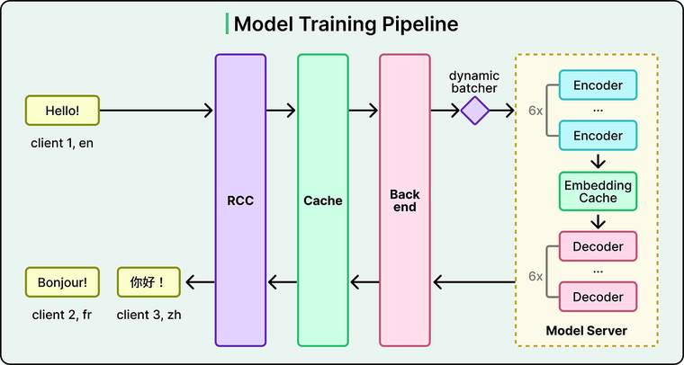
pairs like French-Thai. Itʼs difficult to train a good translator between two languages if you donʼt have examples of translations between them.
像法国人和泰国人这样的配对。如果没有两种语言之间的翻译示例，就很难训练出两种语言之间的优秀翻译者。
Roblox addressed this with iterative back-translation. Take a French text, translate it into Thai using the current model, then translate that Thai text back into French.
Roblox 通过迭代反向翻译解决了这个问题。获取法语文本，使用当前模型将其翻译成泰语，然后将该泰语文本翻译回法语。
Compare the round-trip result to the original French. If it matches closely, the intermediate French-Thai pair is probably a good synthetic training example.
将往返结果与原始法语进行比较。如果匹配紧密，则中间的法国-泰国对可能是一个很好的综合训练示例。
The critical word to note here is “iterative.” Roblox didnʼt do this once. They repeated the process across multiple rounds, using a mix of this synthetic back- translated data and human-labeled supervised data to progressively expand the training set. The ratio between synthetic and real data matters. Too much synthetic data degrades quality because the model starts learning from its own mistakes.
这里要注意的关键词是“迭代”。 Roblox 从来没有这样做过。他们在多轮中重复这个过程，混合使用合成的反向翻译数据和人工标记的监督数据来逐步扩展训练集。合成数据和真实数据之间的比率很重要。太多的合成数据会降低质量，因为模型开始从自己的错误中学习。
General translation data doesnʼt include words like “obby” (a Roblox obstacle course) or platform-specific slang and abbreviations. Roblox brought in human evaluators to translate popular and trending terms for each of the 16 languages, then fed those translations into the training data. This is an ongoing process because slang evolves faster than any model retraining.
一般翻译数据不包括“obby”（Roblox 障碍训练场）等单词或特定于平台的俚语和缩写。 Roblox 聘请了人类评估员来翻译 16 种语言中每种语言的流行和趋势术语，然后将这些翻译输入到训练数据中。这是一个持续的过程，因为俚语的发展速度比任何模型再训练都快。
Conclusion
结论
Robloxʼs unified translation model came with real costs, and understanding those costs matters as much as understanding the architecture.
Roblox 的统一翻译模型带来了实际成本，了解这些成本与了解架构一样重要。
Quality vs. latency is a permanent tension. The distilled student model is inherently less accurate than the teacher. Every time Roblox improves the teacher, they face the question of whether those gains survive compression.
质量与延迟是一个永久的紧张关系。精炼的学生模型本质上不如教师模型准确。每次 Roblox 改进老师时，他们都会面临这样的问题：这些成果是否能经受住压缩。
And 100 milliseconds is a hard ceiling that limits how large and accurate the serving model can get.
100 毫秒是一个硬性上限，限制了服务模型的规模和准确度。
Low-resource pairs are still the weak link. Back-translation helps, but French- to-Thai will never be as good as English-to-Spanish. The model can handle mixed-language input, but accuracy drops. Unified doesnʼt mean uniform quality.
低资源对仍然是薄弱环节。回译有帮助，但法语到泰语的翻译永远不如英语到西班牙语的翻译好。该模型可以处理混合语言输入，但准确性下降。统一并不意味着质量统一。
The maintenance burden is real. Building a custom translation model means owning the entire stack. Training, evaluation, serving, slang updates, safety integration, all of it. Using a commercial translation API means someone else handles that complexity. Robloxʼs choice made sense because they needed domain-specific accuracy (their model outperforms commercial APIs on Roblox content, by their own metrics) and extreme latency at massive scale.
维护负担是真实存在的。构建自定义翻译模型意味着拥有整个堆栈。培训、评估、服务、俚语更新、安全集成，所有这一切。使用商业翻译 API 意味着其他人可以处理这种复杂性。 Roblox 的选择是有意义的，因为他们需要特定领域的准确性（根据他们自己的指标，他们的模型在 Roblox 内容上优于商业 API）和大规模的极端延迟。
Most companies should use off-the-shelf translation and spend their engineering effort elsewhere.
大多数公司应该使用现成的翻译，并将工程精力花在其他地方。
The reference-free quality estimation model, while clever, has an inherent limitation. It could have systematic biases that overlap with the translation modelʼs own weaknesses. Itʼs a pragmatic solution, not a perfect one. ===========================================================
无参考质量估计模型虽然聪明，但也有其固有的局限性。它可能存在与翻译模型自身弱点重叠的系统偏差。这是一种实用的解决方案，而不是完美的解决方案。 ===============================================================
Container Design Patterns for Distributed Systems
For most of their life, containers have been considered more as a deployment concern. Package your code with its dependencies, ship it as one unit, and run it the same way everywhere.
在其生命的大部分时间里，容器更多地被视为部署问题。将代码及其依赖项打包，将其作为一个单元交付，并在任何地方以相同的方式运行。
That story was true, and it was also pretty useful, but itʼs just one half of what containers were good for. The other half is what happens when we stop thinking of a container as a way to deliver one application and start thinking of it as a building block we can compose with others.
这个故事是真的，而且也非常有用，但这只是容器用途的一半。另一半是当我们不再将容器视为交付一个应用程序的一种方式，而是开始将其视为我们可以与其他应用程序组合的构建块时，会发生什么。
Software engineering has been here before. In the 1990s, object-oriented programming gave application code a clean boundary we could compose against.
软件工程以前就已经存在过。在 20 世纪 90 年代，面向对象编程为应用程序代码提供了一个我们可以编写的清晰边界。
Out of that boundary came design patterns, the small library of standard solutions every working programmer eventually internalizes. With containers, distributed systems have gone through the same transition.
设计模式就是从这个边界中诞生的，它是每个程序员最终都会内化的标准解决方案的小型库。对于容器，分布式系统也经历了同样的转变。
In this article, weʼll walk through the patterns that have crystallized over the past decade, organized by the scope of their coordination. Three of them describe how containers cooperate when they share a single machine. The other three describe how containers coordinate when the work spans many machines. None of these patterns is a rule. Theyʼre answers to problems that distributed-systems engineers kept solving over and over.
在本文中，我们将回顾过去十年中具体化的模式，并按其协调范围进行组织。其中三个描述了容器在共享一台机器时如何协作。其他三个描述了当工作跨越许多机器时容器如何协调。这些模式都不是规则。它们是分布式系统工程师不断解决的问题的答案。
How LinkedIn Feed Uses LLMs to Serve 1.3 Billion Users
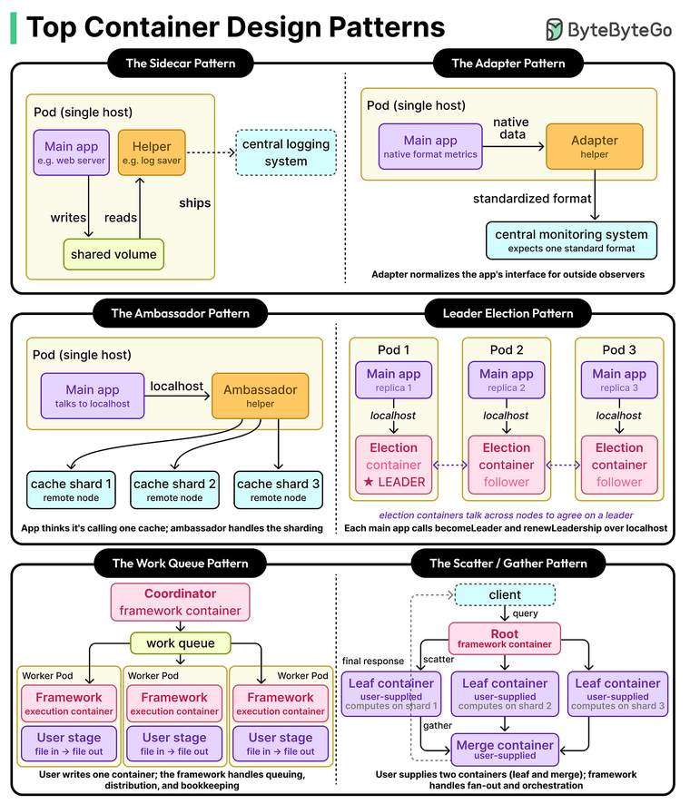
How LinkedIn Feed Uses LLMs to Serve 1.3 Billion UsersAgents can generate code. Getting it right for your system, team conventions, and past decisions is the hard part. You end up babysitting the agent and watch the
代理可以生成代码。使其适合您的系统、团队惯例和过去的决策是困难的部分。你最终会照顾经纪人并观看
token costs climb.
代币成本攀升。
More MCPs, rules, and bigger context windows give agents access to information, but not understanding. The teams pulling ahead have a context engine to give agents only what they need for the task at hand.
更多的 MCP、规则和更大的上下文窗口使代理能够访问信息，但无法理解。领先的团队有一个上下文引擎，可以只为代理提供他们手头任务所需的内容。
Join us for a FREE webinar on April 23 to see: Where teams get stuck on the AI maturity curve and why common fixes fall short How a context engine solves for quality, efficiency, and cost Live demo: the same coding task with and without a context engine If you want to maximize the value you get from AI agents, this one is worth your time.
加入我们，参加 4 月 23 日的免费网络研讨会，了解：团队在人工智能成熟度曲线上陷入困境的地方以及常见修复方法为何达不到要求。上下文引擎如何解决质量、效率和成本问题现场演示：使用和不使用上下文引擎的相同编码任务如果您想最大限度地从人工智能代理获得价值，那么这个研讨会值得您花时间。
Register now LinkedIn used to run five separate systems just to decide which posts to show you. One tracked trending content. Another did collaborative filtering. A third handled embedding-based retrieval.
立即注册 LinkedIn 过去运行五个独立的系统，只是为了决定向您展示哪些帖子。其中一项跟踪趋势内容。另一个则进行协同过滤。第三个处理基于嵌入的检索。
Each had its own infrastructure, its dedicated team, and its own optimization logic.
每个都有自己的基础设施、专门的团队和自己的优化逻辑。
The setup worked, but when the Feed team wanted to improve one part, theyʼd break another. Therefore, they made a radical bet and ripped out all five systems, replacing them with a single LLM-powered retrieval model. That solved the complexity problem, but it raised new questions, such as: How do you teach an LLM to understand structured profile data' How do you make a transformer serve predictions in under 50 milliseconds for 1.3 billion users' How do you train the model when most of the data is noise' In this article, we will look at how the LinkedIn engineering team rebuilt the Feed and the challenges they faced.
这个设置很有效，但是当 Feed 团队想要改进一个部分时，他们就会破坏另一个部分。因此，他们下了一个激进的赌注，拆除了所有五个系统，代之以一个由法学硕士支持的检索模型。这解决了复杂性问题，但也提出了新的问题，例如：如何教法学硕士理解结构化个人资料数据“如何让转换器在 50 毫秒内为 13 亿用户提供预测”“当大部分数据都是噪声时如何训练模型”在本文中，我们将了解 LinkedIn 工程团队如何重建 Feed 以及他们面临的挑战。
Disclaimer: This post is based on publicly shared details from the LinkedIn Engineering Team. Please comment if you notice any inaccuracies.
免责声明：本文基于 LinkedIn 工程团队公开共享的详细信息。如果您发现任何不准确之处，请发表评论。
One Library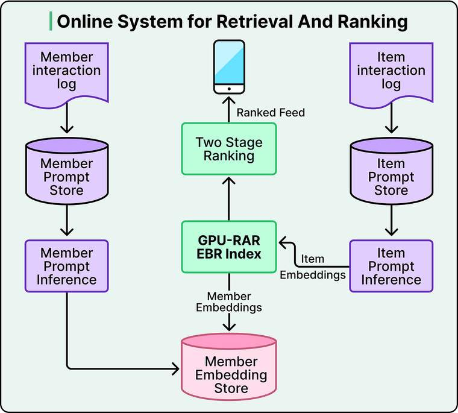
For years, LinkedInʼs Feed retrieval relied on what engineers call a heterogeneous architecture. When you opened the Feed, content came from multiple specialized sources running in parallel.
多年来，LinkedIn 的 Feed 检索都依赖于工程师所说的异构架构。当您打开 Feed 时，内容来自并行运行的多个专用源。
A chronological index of network activity.
网络活动的时间索引。
Trending posts by geography.
按地理位置划分的热门帖子。
Collaborative filtering based on similar members.
基于相似成员的协同过滤。
Industry-specific pipelines.
行业特定管道。
Several embedding-based retrieval systems.
几种基于嵌入的检索系统。
Each maintained its own infrastructure, index structure, and optimization strategy.
每个都维护自己的基础设施、索引结构和优化策略。
See the diagram below:
见下图：
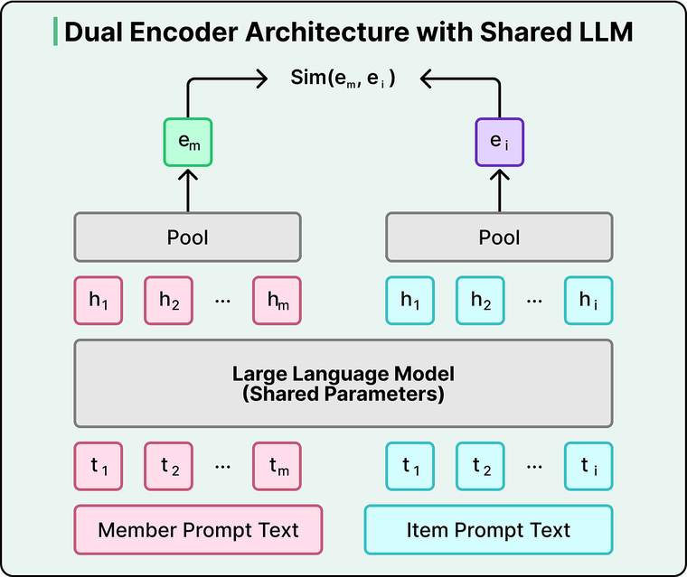
This architecture surfaced diverse, relevant content. But optimizing one retrieval source could degrade another, and no team could tune across all sources simultaneously. Holistic improvement was nearly impossible.
这种架构呈现出多样化的相关内容。但优化一个检索源可能会降低另一个检索源的性能，而且没有团队可以同时调整所有源。全面改进几乎是不可能的。
So the Feed team asked a simple question. What if they replaced all of these sources with a single system powered by LLM-generated embeddings' Under the hood, this works through a dual encoder architecture. A shared LLM converts both members and posts into vectors in the same mathematical space.
因此 Feed 团队提出了一个简单的问题。如果他们用一个由 LLM 生成的嵌入支持的单一系统替换所有这些源，结果会怎样？在幕后，这通过双编码器架构工作。共享法学硕士将成员和帖子转换为同一数学空间中的向量。
The training process pushes member and post representations close together when thereʼs genuine engagement, and pulls them apart when there isnʼt. When you open your Feed, the system fetches your member embedding and runs a nearest-neighbor search against an index of post embeddings, retrieving the most relevant candidates in under 50 milliseconds.
当有真正的参与时，培训过程会将成员和岗位代表紧密地联系在一起，而当没有真正的参与时，就会将他们拉开。当您打开 Feed 时，系统会获取您的成员嵌入，并对帖子嵌入索引运行最近邻搜索，从而在 50 毫秒内检索最相关的候选者。
However, the real power comes from what the LLM brings to those embeddings.
然而，真正的力量来自于法学硕士为这些嵌入带来的东西。
Traditional keyword-based systems rely on surface-level text overlap. If your
传统的基于关键字的系统依赖于表面文本重叠。如果你的
profile says “electrical engineering” and a post is about “small modular reactors,” a keyword system misses the connection.
简介说“电气工程”，而一篇文章是关于“小型模块化反应堆”，关键字系统错过了连接。
An LLM-based system understands that these topics are related because the model carries world knowledge from pretraining. It knows that electrical engineers often work on power grid optimization and nuclear infrastructure. This is especially powerful for cold-start scenarios, when a new member joins with just a profile headline. The LLM can infer likely interests without waiting for engagement history to accumulate.
基于法学硕士的系统了解这些主题是相关的，因为该模型携带了来自预训练的世界知识。它知道电气工程师经常从事电网优化和核基础设施方面的工作。当新成员仅使用个人资料标题加入时，这对于冷启动场景尤其有用。法学硕士可以推断可能的兴趣，而无需等待参与历史的积累。
The downstream benefits compounded the benefits. Instead of receiving candidates from disparate sources with different biases, the ranking layer now receives a coherent candidate set selected through the same semantic similarity.
下游效益加剧了效益。排名层现在不再接收来自具有不同偏差的不同来源的候选者，而是接收通过相同语义相似性选择的连贯候选者集。
Ranking became easier, and each optimization to the ranking model became more effective.
排名变得更加容易，对排名模型的每一次优化都变得更加有效。
But replacing five systems with one LLM created a new problem. LLMs expect text, and recommendation systems run on structured data and numbers.
但用一个法学硕士取代五个系统又产生了一个新问题。法学硕士期望文本和推荐系统在结构化数据和数字上运行。
The Model Is Only As Good As Its InputTo feed structured data into an LLM, LinkedIn built a “prompt library” that transforms structured features into templated text sequences. For posts, it includes author information, engagement counts, and post text. For members, it incorporates profile information, skills, work history, and a chronologically ordered sequence of posts theyʼve previously engaged with. Think of it as prompt engineering for recommendation systems.
为了将结构化数据输入法学硕士，LinkedIn 构建了一个“提示库”，将结构化特征转换为模板化文本序列。对于帖子，它包括作者信息、参与计数和帖子文本。对于会员来说，它包含个人资料信息、技能、工作经历以及按时间顺序排列的他们之前参与过的帖子序列。将其视为推荐系统的即时工程。
The most striking example is what happened with numerical features. Initially, LinkedIn passed raw engagement counts directly into prompts. For example, a post with 12,345 views would appear as “views:12345” in the text. The model treated those digits like any other text tokens. When the team measured the correlation between item popularity counts and embedding similarity scores, they found it was essentially zero 0.004. Popularity is one of the strongest relevance signals in recommendation. And the model was completely ignoring it.
最引人注目的例子是数字特征所发生的情况。最初，LinkedIn 将原始参与度直接传递到提示中。例如，具有 12,345 次观看次数的帖子将在文本中显示为“views:12345”。该模型将这些数字视为任何其他文本标记。当团队测量项目流行度计数与嵌入相似度分数之间的相关性时，他们发现该相关性基本上为零 0.004。受欢迎程度是推荐中最强的相关性信号之一。而模型完全忽略了它。
The problem is fundamental. LLMs donʼt understand magnitude. They process “12345” as a sequence of digit tokens, not as a quantity.
这个问题是根本性的。法学硕士不了解规模。他们将“12345”作为数字标记序列而不是数量来处理。
The fix was quite simple. Instead of passing raw counts, LinkedIn converted them into percentile buckets wrapped in special tokens. This meant that “Views:12345” became <view_percentile>71/view_percentile>, indicating this post sits in the 71st percentile of view counts. Most values between 1 and 100 get processed by the LLM as a single unit rather than a multi-digit sequence, giving the model a stable, learnable vocabulary for quantity. The model can learn that anything above 90 means “very popular” without trying to parse arbitrary digit sequences.
修复方法非常简单。 LinkedIn 没有传递原始计数，而是将它们转换为用特殊标记包裹的百分位数存储桶。这意味着“Views:12345”变成了 <view_percentile>71/view_percentile>，表明该帖子位于浏览量的第 71 个百分位。 LLM 将 1 到 100 之间的大多数值作为单个单位而不是多位序列进行处理，从而为模型提供了稳定、可学习的数量词汇表。该模型可以了解到任何高于 90 的值都意味着“非常流行”，而无需尝试解析任意数字序列。
The correlation between popularity features and embedding similarity jumped 30x. Recall@10, which measures whether the top 10 retrieved posts are actually relevant, improved by 15%. LinkedIn applied the same strategy to engagement rates, recency signals, and affinity scores.
流行特征和嵌入相似度之间的相关性跃升了 30 倍。 Recall@10 衡量检索到的前 10 个帖子是否真正相关，提高了 15%。 LinkedIn 对参与率、新近度信号和亲和力分数应用了相同的策略。
When building the memberʼs interaction history for training, LinkedIn initially included everything. Every post that was shown to a member went into the sequence, whether they engaged with it or scrolled past. The idea was that more data should mean a better model.
在建立会员的培训互动历史记录时，LinkedIn 最初包含了所有内容。向会员展示的每条帖子都会进入序列，无论他们参与还是滚动过去。我们的想法是，更多的数据意味着更好的模型。
However, this didnʼt turn out to be the case. Including scrolled-past posts not only made model performance worse, but it also made training significantly more expensive. GPU compute for transformer models scales quadratically with context length.
然而，事实并非如此。包含滚动过去的帖子不仅会使模型性能变差，而且还会使训练成本显着增加。 Transformer 模型的 GPU 计算随上下文长度呈二次方缩放。
When the team filtered to include only positively-engaged posts, the results improved across every dimension.
当团队筛选出仅包含积极参与的帖子时，各个方面的结果都得到了改善。
Memory footprint per sequence dropped by 37%.
每个序列的内存占用量下降了 37%。
The system could process 40% more training sequences per batch.
该系统每批次可以多处理 40% 的训练序列。
Training iterations ran 2.6x faster The reason comes down to signal clarity. A scrolled-past post is ambiguous.
训练迭代速度提高了 2.6 倍 原因在于信号清晰度。滚动过去的帖子含糊不清。
Maybe the post was irrelevant. Maybe the member was busy. Maybe the headline was mildly interesting, but not enough to stop for. Posts you actively chose to engage with are a much cleaner learning target.
也许该帖子无关紧要。也许该会员很忙。也许标题有点有趣，但还不足以停下来。您主动选择参与的帖子是一个更清晰的学习目标。
The gains compounded due to this change. Better signal quality meant faster training. Faster training meant more experimentation. More experimentation meant
由于这一变化，收益变得更加复杂。更好的信号质量意味着更快的训练。更快的训练意味着更多的实验。更多的实验意味着
better hyperparameter tuning. When a single change improves both quality and efficiency, the benefits multiply through the entire development cycle.
更好的超参数调整。当单个更改提高质量和效率时，收益会在整个开发周期中成倍增加。
The training strategy had one more clever element. LinkedIn used two types of negative examples: Easy negatives were randomly sampled posts never shown to a member, providing a broad contrastive signal.
训练策略还有一个更巧妙的元素。 LinkedIn 使用了两种类型的负面例子：简单的负面例子是随机抽样的帖子，从未向会员展示过，提供了广泛的对比信号。
Hard negatives were posts actually shown but not engaged with, the almost- right cases where the model must learn nuanced distinctions between relevant and genuinely valuable.
硬负面是实际显示但没有参与的帖子，在几乎正确的情况下，模型必须学习相关和真正有价值之间的细微差别。
The difficulty of the negative examples shapes what the model learns. Easy negatives teach broad distinction, whereas hard negatives teach the fine-grained ones. Using both together is a common and effective pattern across retrieval systems, and at LinkedIn, adding just two hard negatives per member improved recall by 3.6%.
反面例子的难度决定了模型学习的内容。简单的否定教导广泛的区分，而困难的否定教导细粒度的区分。将两者结合使用是检索系统中常见且有效的模式，在 LinkedIn，每个成员仅添加两个硬否定即可将召回率提高 3.6%。
With retrieval producing high-quality candidates, the next question was how to rank them. LinkedInʼs answer was to stop treating each post as an isolated decision.
随着检索产生高质量的候选者，下一个问题是如何对它们进行排名。 LinkedIn 的答案是停止将每个帖子视为一个孤立的决定。
The Feed Is a Story, Not a SnapshotTraditional ranking models evaluate each member-post pair independently. This works, but it misses something fundamental about how professionals consume content.
传统的排名模型独立评估每个成员-职位对。这确实有效，但它忽略了专业人士如何消费内容的一些基本知识。
LinkedIn built a Generative Recommender GR) model that treats your Feed interaction history as a sequence. Instead of scoring each post in isolation, GR processes more than a thousand of a userʼs historical interactions to understand temporal patterns and long-term interests.
LinkedIn 构建了一个生成推荐（GR）模型，将您的 Feed 交互历史记录视为一个序列。 GR 不是单独对每个帖子进行评分，而是处理用户的一千多次历史交互，以了解时间模式和长期兴趣。
The practical difference matters. If the user engages with machine learning content on Monday, distributed systems on Tuesday, and opens LinkedIn again on Wednesday, a sequential model understands these arenʼt random events. Theyʼre the continuation of a learning trajectory. A traditional pointwise model sees three independent decisions, whereas the sequential model sees the story.
实际差异很重要。如果用户周一使用机器学习内容，周二使用分布式系统，并在周三再次打开 LinkedIn，则顺序模型会理解这些不是随机事件。它们是学习轨迹的延续。传统的逐点模型看到三个独立的决策，而顺序模型看到的是故事。
The GR model uses a transformer with causal attention, meaning each position in the history can only attend to previous positions, mirroring how you actually experienced content over time. Recent posts might matter more for predicting immediate interests, but a post from two weeks ago might suddenly become relevant if recent activity suggests renewed interest.
GR 模型使用具有因果注意力的变压器，这意味着历史中的每个位置只能关注之前的位置，反映您随着时间的推移实际体验内容的方式。最近的帖子对于预测眼前的兴趣可能更重要，但如果最近的活动表明人们重新产生了兴趣，两周前的帖子可能会突然变得相关。
See the diagram below that shows the transformer architecture:
请参阅下图，显示变压器架构：
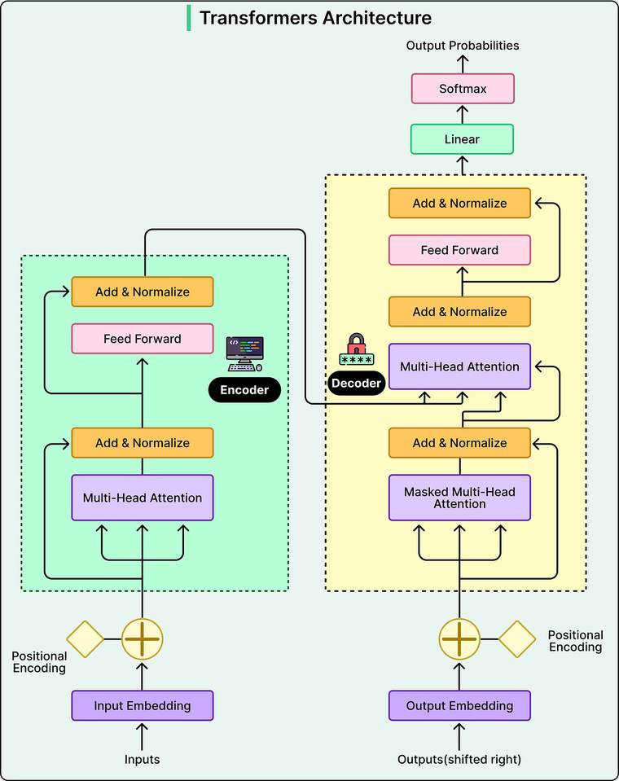
One of the most practical architectural decisions is what LinkedIn calls late fusion.
最实用的架构决策之一是 LinkedIn 所说的后期融合。
Not every feature benefits from full self-attention. Count features and affinity signals carry a strong independent signal, and running them through the transformer would inflate computational cost quadratically without clear benefit.
并非所有功能都受益于充分的自我关注。计数特征和亲和力信号带有很强的独立信号，通过变压器运行它们会使计算成本成倍增加，而没有明显的好处。
Instead, these features are concatenated with the transformer output after sequence processing. This results in rich sequential understanding from the
相反，这些特征在序列处理后与变压器输出连接起来。这导致了丰富的顺序理解
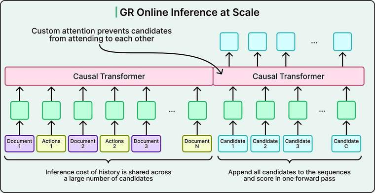
transformer, plus contextual signals that drive relevance, without the cost of processing them through self-attention.
转换器，加上驱动相关性的上下文信号，而无需通过自注意力来处理它们的成本。
The serving challenge is equally important. Processing 1,000+ historical interactions through multiple transformer layers for every ranking request is expensive. LinkedInʼs solution is shared context batching. The system computes the userʼs history representation once, then scores all candidates in parallel using custom attention masks.
发球挑战同样重要。对于每个排名请求，通过多个转换器层处理 1,000 多个历史交互是昂贵的。 LinkedIn 的解决方案是共享上下文批处理。系统计算用户的历史表示一次，然后使用自定义注意掩码并行对所有候选者进行评分。
On top of the transformer, a Multi-gate Mixture-of-Experts MMoE) prediction head routes different engagement predictions like clicks, likes, comments, and shares through specialized gates while sharing the same sequential representations underneath.
在变压器的顶部，多门专家混合预测头通过专门的门路由不同的参与预测，例如点击、喜欢、评论和分享，同时在下面共享相同的顺序表示。
See the diagram below that shows a typical Mixture-of-Experts architecture.
请参见下图，该图显示了典型的专家混合架构。
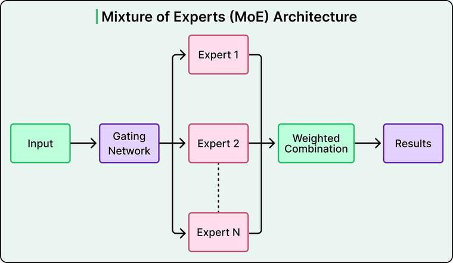
This lets the model handle multiple prediction tasks without duplicating the expensive transformer computation. Together, shared context batching and the MMoE head are what make the sequential model viable at production scale.
这使得模型可以处理多个预测任务，而无需重复昂贵的转换器计算。共享上下文批处理和 MMoE 头一起使顺序模型在生产规模上可行。
Even the best model is useless without the infrastructure to serve it. LinkedInʼs historical ranking models ran on CPUs. Transformers are fundamentally different, with self-attention scaling quadratically with sequence length and massive parameter counts requiring GPU memory. At LinkedInʼs scale, cost-per-inference determines whether sophisticated AI models can serve every member, or only high-engagement users.
如果没有基础设施来服务，即使是最好的模型也是无用的。 LinkedIn 的历史排名模型在 CPU 上运行。 Transformer 有着根本的不同，自注意力随序列长度呈二次方缩放，并且需要 GPU 内存的大量参数计数。在 LinkedIn 的规模上，每次推理的成本决定了复杂的人工智能模型是否可以服务于每个会员，或者只能服务于高参与度的用户。
The team invested heavily in custom infrastructure on both sides. For training, a custom C data loader eliminates Pythonʼs multiprocessing overhead, custom GPU routines reduced metric computation from a bottleneck to negligible overhead, and parallelized evaluation across all checkpoints cut pipeline time substantially. For serving, a disaggregated architecture separates CPU-bound feature processing from GPU-heavy model inference, and a custom Flash Attention variant called GRMIS delivered an additional 2x speedup over PyTorchʼs standard implementation.
该团队在双方的定制基础设施上投入了大量资金。对于训练，自定义 C 数据加载器消除了 Python 的多处理开销，自定义 GPU 例程将度量计算从瓶颈减少到可以忽略不计的开销，并且跨所有检查点的并行评估大大缩短了管道时间。在服务方面，分解架构将 CPU 密集型特征处理与 GPU 密集型模型推理分开，并且名为 GRMIS 的自定义 Flash Attention 变体比 PyTorch 的标准实现提供了额外 2 倍的加速。
See the diagram below that shows the GR Infrastructure Stack
请参见下图，其中显示了 GR 基础设施堆栈
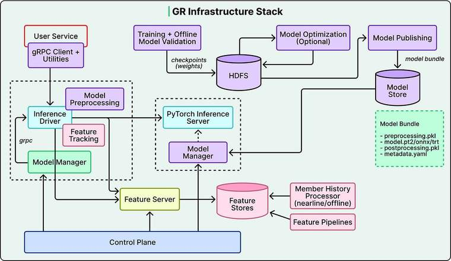
Freshness required its own solution.
新鲜感需要它自己的解决方案。
Three continuously running background pipelines keep the system current, capturing platform activity, generating updated embeddings through LLM inference servers, and ingesting them into a GPU-accelerated index.
三个连续运行的后台管道使系统保持最新状态，捕获平台活动，通过 LLM 推理服务器生成更新的嵌入，并将它们摄取到 GPU 加速索引中。
Each pipeline optimizes independently, while the end-to-end system stays fresh within minutes. LinkedInʼs models are also regularly audited to ensure posts from different creators compete on an equal footing, with ranking relying on professional signals and engagement patterns, never demographic attributes.
每个管道都独立优化，而端到端系统在几分钟内保持新鲜状态。 LinkedIn 的模型也会定期接受审核，以确保来自不同创作者的帖子在平等的基础上竞争，排名依赖于专业信号和参与模式，而不是人口统计属性。
Conclusion There are some takeaways: Replacing five retrieval systems with one trades resilience for simplicity.
结论 有一些要点：用一个检索系统替换五个检索系统会牺牲弹性以换取简单性。
LLM-based embeddings are richer but more expensive than lightweight alternatives.
基于 LLM 的嵌入比轻量级嵌入更丰富但更昂贵。
The bottleneck is rarely the model architecture. Itʼs everything around it.
瓶颈很少是模型架构。这是它周围的一切。
The infrastructure investment represents an effort most teams canʼt replicate. And this approach leans on LinkedInʼs rich text data. For primarily visual platforms, the calculus would be different.
基础设施投资是大多数团队无法复制的努力。这种方法依赖于 LinkedIn 的富文本数据。对于主要的视觉平台，演算会有所不同。
The next time you open LinkedIn and see a post from someone you donʼt follow, on a topic you didnʼt search for, but itʼs exactly what you needed to read, thatʼs all of this working together under the hood. ============
下次当您打开 LinkedIn 并看到您不关注的人发布的帖子时，主题是您没有搜索过的，但这正是您需要阅读的内容，所有这些都在幕后协同工作。 ===========
The Security Architecture of GitHub Agentic Workflow
The Security Architecture of GitHub Agentic Workflownpx workos@latest launches an AI agent, powered by Claude, that reads your project, detects your framework, and writes a complete auth integration into your codebase. No signup required. It creates an environment, populates your keys, and you claim your account later when you're ready.
npx workos@latest 启动了一个由 Claude 提供支持的 AI 代理，它可以读取您的项目、检测您的框架，并将完整的身份验证集成写入您的代码库中。无需注册。它会创建一个环境，填充您的密钥，并在您准备好后领取您的帐户。
But the CLI goes way beyond installation. WorkOS Skills make your coding agent a WorkOS expert. workos seed defines your environment as code. workos doctor finds and fixes misconfigurations. And once you're authenticated, your agent can manage users, orgs, and environments directly from the terminal. No more ClickOps.
但 CLI 的作用远远超出了安装的范围。 WorkOS 技能使您的编码代理成为 WorkOS 专家。 workos Seed 将您的环境定义为代码。 workos doctor 发现并修复错误配置。一旦您通过身份验证，您的代理就可以直接从终端管理用户、组织和环境。不再有 ClickOps。
See how it works → GitHub built an AI agent that can fix documentation, write tests, and refactor code while you sleep. Then they designed their entire security architecture around the assumption that this agent might try to steal your API keys, spam your repository with garbage, and leak your secrets to the internet.
了解它是如何工作的 → GitHub 构建了一个 AI 代理，可以在您睡觉时修复文档、编写测试和重构代码。然后，他们围绕这样的假设设计了整个安全架构：该代理可能会尝试窃取您的 API 密钥，向您的存储库发送垃圾邮件，并将您的秘密泄露到互联网上。
This can be considered paranoia, but itʼs the only responsible way to put a non- deterministic system inside your CI/CD pipeline.
这可以被认为是偏执，但这是将非确定性系统放入 CI/CD 管道中的唯一负责任的方式。
GitHub Agentic Workflows let you plug AI agents into GitHub Actions so they can triage issues, generate pull requests, and handle routine maintenance without human supervision. The appeal is clear, but so is the risk. These agents consume untrusted inputs, make decisions at runtime, and can be manipulated through prompt injection, where carefully crafted text tricks the agent into doing things it wasnʼt supposed to do.
GitHub Agentic Workflows 可让您将 AI 代理插入 GitHub Actions，以便它们可以分类问题、生成拉取请求并在无需人工监督的情况下处理日常维护。吸引力很明显，但风险也很明显。这些代理使用不受信任的输入，在运行时做出决策，并且可以通过提示注入进行操纵，其中精心设计的文本会欺骗代理做不应该做的事情。
In this article, we will look at how GitHub built a security architecture that assumes the agent is already compromised. However, to understand their solution, you first need to understand why the problem is harder than it looks.
在本文中，我们将了解 GitHub 如何构建假设代理已受到威胁的安全架构。然而，要理解他们的解决方案，您首先需要理解为什么问题比看起来更难。
Disclaimer: This post is based on publicly shared details from the GitHub Engineering Team. Please comment if you notice any inaccuracies.
免责声明：本文基于 GitHub 工程团队公开共享的详细信息。如果您发现任何不准确之处，请发表评论。
Why Agents Break the CI/CD ContractCI/CD 合同CI/CD pipelines are built on a simple assumption. The developers define the steps, the system runs them, and every execution is predictable. All the components in a pipeline share a single trust domain, meaning they can all see the same secrets, access the same files, and talk to the same network. That shared environment is actually a feature for traditional automation. When every component is a deterministic script, sharing a trust domain makes everything composable and fast.
CI/CD 管道建立在一个简单的假设之上。开发人员定义步骤，系统运行它们，并且每次执行都是可预测的。管道中的所有组件共享一个信任域，这意味着它们都可以看到相同的秘密、访问相同的文件并与相同的网络通信。这种共享环境实际上是传统自动化的一个功能。当每个组件都是确定性脚本时，共享信任域使所有组件都可组合且快速。
Agents break that assumption completely because they donʼt follow a fixed script.
特工完全打破了这一假设，因为他们不遵循固定的脚本。
They reason over repository state, consume inputs they werenʼt specifically designed for, and make decisions at runtime. A traditional CI step either does exactly what you coded it to do or fails. An agent might do something you never anticipated, especially if it processes an input designed to manipulate it.
他们对存储库状态进行推理，使用并非专门设计的输入，并在运行时做出决策。传统的 CI 步骤要么完全按照您编码的方式执行，要么失败。代理可能会做一些您从未预料到的事情，特别是当它处理旨在操纵它的输入时。
GitHubʼs threat model for Agentic Workflows is blunt.
GitHub 的 Agentic Workflows 威胁模型很生硬。
They assume the agent will try to read and write state that it shouldnʼt, communicate over unintended channels, and abuse legitimate channels to perform unwanted actions. For example, a prompt-injected agent with access to shell commands can read configuration files, SSH keys, and Linux /proc state to discover credentials. It can scan workflow logs for tokens. Once it has those secrets, it can encode them into a public-facing GitHub object like an issue comment or pull request for an attacker to retrieve later. The agent isnʼt actively malicious, but following instructions that it couldnʼt distinguish between legitimate ones.
他们假设代理会尝试读取和写入不应读取的状态，通过非预期的渠道进行通信，并滥用合法渠道来执行不需要的操作。例如，有权访问 shell 命令的提示注入代理可以读取配置文件、SSH 密钥和 Linux /proc 状态来发现凭据。它可以扫描工作流日志中的令牌。一旦掌握了这些秘密，它就可以将它们编码到面向公众的 GitHub 对象中，例如问题评论或拉取请求，供攻击者稍后检索。该代理并非主动恶意，但遵循的指示无法区分合法代理。
In a standard GitHub Actions setup, everything runs in the same trust domain on top of a runner virtual machine. A rogue agent could interfere with MCP servers (the tools that extend what an agent can do), access authentication secrets stored in environment variables, and make network requests to arbitrary hosts. A single compromised component gets access to everything. The problem isnʼt that Actions are insecure. Itʼs that agents change the assumptions that made a shared trust domain safe in the first place. [Live on May 6] Stop babysitting your agents (Sponsored)
在标准 GitHub Actions 设置中，所有内容都在运行程序虚拟机之上的同一信任域中运行。恶意代理可能会干扰 MCP 服务器（扩展代理功能的工具）、访问存储在环境变量中的身份验证机密，并向任意主机发出网络请求。单个受损组件可以访问所有内容。问题不在于操作不安全。代理改变了最初使共享信任域安全的假设。 [5 月 6 日直播] 别再照顾你的经纪人了（赞助）
Agents can generate code. Getting it right for your system, team conventions, and past decisions is the hard part. You end up babysitting the agent and watch the token costs climb.
代理可以生成代码。使其适合您的系统、团队惯例和过去的决策是困难的部分。你最终只能照顾代理人并看着代币成本攀升。
More MCPs, rules, and bigger context windows give agents access to information, but not understanding. The teams pulling ahead have a context engine to give agents only what they need for the task at hand.
更多的 MCP、规则和更大的上下文窗口使代理能够访问信息，但无法理解。领先的团队有一个上下文引擎，可以只为代理提供他们手头任务所需的内容。
Our April webinar filled up, so we are bringing it back! Join us live FREE) on May 6 to see: Where teams get stuck on the AI maturity curve and why common fixes fall short How a context engine solves for quality, efficiency, and cost Live demo: the same coding task with and without a context engine Register now
我们四月份的网络研讨会已满，所以我们将其恢复！ 5 月 6 日免费加入我们的直播，了解：团队在人工智能成熟度曲线上陷入困境的地方以及常见修复方法为何达不到要求上下文引擎如何解决质量、效率和成本问题实时演示：使用和不使用上下文引擎的相同编码任务立即注册
GitHub Agentic Workflows use a layered security architecture with three distinct levels.
GitHub Agentic Workflows 使用具有三个不同级别的分层安全架构。
Each layer limits the impact of failures in the layer above it by enforcing its own security properties independently.
每一层都通过独立地执行自己的安全属性来限制其上层故障的影响。
The substrate layer sits at the bottom. Itʼs built on a GitHub Actions runner VM and several Docker containers, including a set of trusted containers that mediate privileged operations. This layer provides isolation between components, controls system calls, and enforces kernel-level communication boundaries. These protections hold even if an untrusted component is fully compromised and executes arbitrary code within its container. The substrate doesnʼt rely on the agent behaving correctly, and even arbitrary code execution inside the agentʼs container hits a wall at this level.
基底层位于底部。它构建在 GitHub Actions 运行器虚拟机和多个 Docker 容器上，其中包括一组调解特权操作的受信任容器。该层提供组件之间的隔离、控制系统调用并强制执行内核级通信边界。即使不受信任的组件完全受到损害并在其容器内执行任意代码，这些保护仍然有效。底层不依赖于代理的正确行为，甚至代理容器内的任意代码执行都会在这个级别上碰壁。
The configuration layer sits on top of the substrate layer. This is where the systemʼs structure gets defined. It includes declarative artifacts and the toolchains that interpret them to set up which components are loaded, how theyʼre connected, what communication channels are permitted, and what privileges are assigned. The most important piece in this layer is the compiler.
配置层位于基底层的顶部。这是系统结构被定义的地方。它包括声明性工件和解释它们以设置加载哪些组件、如何连接它们、允许哪些通信通道以及分配哪些权限的工具链。这一层最重要的部分是编译器。
GitHub doesnʼt just run your workflow definition as-is, but compiles it into a GitHub Action with explicit constraints on permissions, outputs, auditability, and network access. The configuration layer also controls which secrets go into which containers. Externally minted tokens like agent API keys and GitHub access tokens are loaded only into the specific containers that need them, never into the agentʼs container.
GitHub 不仅按原样运行您的工作流程定义，还将其编译为 GitHub Action，并对权限、输出、可审核性和网络访问进行明确的约束。配置层还控制哪些秘密进入哪些容器。外部铸造的令牌（例如代理 API 密钥和 GitHub 访问令牌）仅加载到需要它们的特定容器中，而不会加载到代理的容器中。
The planning layer sits on top. While the configuration layer dictates which components exist and how they communicate, the planning layer dictates which components are active over time. Its job is to create staged workflows with explicit data exchanges between stages. The safe outputs subsystem, which weʼll get to shortly, is the most important instance of this. It ensures the agentʼs work gets reviewed before it affects anything real.
规划层位于顶部。配置层规定了哪些组件存在以及它们如何通信，而规划层规定了哪些组件随着时间的推移处于活动状态。它的工作是创建阶段式工作流程，并在阶段之间进行显式数据交换。我们很快就会谈到的安全输出子系统是最重要的例子。它确保代理的工作在影响任何实际情况之前得到审查。
These layers are independent. If the planning layer fails, the configuration layer still enforces its constraints. If the configuration layer has a bug, the substrate layer still provides isolation. No single failure compromises the whole system.
这些层是独立的。如果规划层失败，配置层仍会强制执行其约束。如果配置层有缺陷，衬底层仍然提供隔离。任何单一故障都不会损害整个系统。
Not Trusting Agents With SecretsFrom the beginning, GitHub wanted workflow agents to have zero access to secrets.
从一开始，GitHub 就希望工作流代理能够零访问机密。
In a standard GitHub Actions setup, sensitive material like agent authentication tokens and MCP server API keys sits in environment variables and configuration files visible to all processes on the runner VM. Thatʼs fine when everything sharing the environment is trusted. Itʼs dangerous with agents because theyʼre susceptible to prompt injection. An attacker can hide malicious instructions in a web page, a repository issue, or a pull request comment, and trick the agent into extracting and leaking whatever it can find.
在标准 GitHub Actions 设置中，代理身份验证令牌和 MCP 服务器 API 密钥等敏感材料位于运行器 VM 上所有进程可见的环境变量和配置文件中。当共享环境的所有内容都受到信任时，那就没问题了。药剂很危险，因为它们很容易被立即注射。攻击者可以在网页、存储库问题或拉取请求评论中隐藏恶意指令，并欺骗代理提取和泄露它能找到的任何内容。
GitHubʼs solution is a specific container topology where secrets are physically unreachable from the agent.
GitHub 的解决方案是一种特定的容器拓扑，其中代理在物理上无法访问秘密。
The agent runs in its own Docker container on a private network. All internet access goes through a dedicated firewall container (gh-aw-firewall). MCP tools are accessed through a separate trusted container called the MCP gateway (gh- aw-mcpg), which launches MCP servers and holds exclusive access to MCP authentication material like the GitHub Personal Access Token. LLM API calls go through an isolated API proxy that holds the modelʼs authentication token (like the Codex token). The agent communicates with the firewall over HTTP, the firewall connects to the MCP gateway over HTTP, and the gateway connects to MCP servers over stdio.
该代理在专用网络上自己的 Docker 容器中运行。所有互联网访问都通过专用防火墙容器（gh-aw-firewall）。 MCP 工具通过称为 MCP 网关 (gh-aw-mcpg) 的单独可信容器进行访问，该容器启动 MCP 服务器并拥有对 MCP 身份验证材料（如 GitHub 个人访问令牌）的独占访问权限。 LLM API 调用通过一个隔离的 API 代理，该代理保存模型的身份验证令牌（如 Codex 令牌）。代理通过 HTTP 与防火墙通信，防火墙通过 HTTP 连接到 MCP 网关，网关通过 stdio 连接到 MCP 服务器。
See the diagram below: At no point in this chain does the agent touch a secret. It can make LLM calls because the proxy adds authentication on its behalf. It can use MCP tools because the gateway authenticates on its behalf. But the agent itself is completely secretless.
请参见下图： 在该链中，代理不会触及任何秘密。它可以进行 LLM 调用，因为代理代表它添加了身份验证。它可以使用 MCP 工具，因为网关代表它进行身份验证。但代理人本身却是完全保密的。
Thereʼs a real tradeoff here, and GitHub names it explicitly. Coding workloads need broad access to compilers, interpreters, scripts, and repository state. But you canʼt just install all those tools inside the agentʼs container without expanding the set of network destinations allowed through the firewall and duplicating a lot of the host setup.
这里确实存在一个权衡，GitHub 明确指出了这一点。编码工作负载需要广泛访问编译器、解释器、脚本和存储库状态。但是，您不能只将所有这些工具安装在代理的容器内，而不扩展允许通过防火墙的网络目标集并复制大量主机设置。
Their resolution is elegant, but they mount the entire VM host filesystem read-only at /host inside the agentʼs container. Then they overlay sensitive paths (the ones containing secrets and configuration) with empty tmpfs layers, which are temporary in-memory filesystems that effectively hide whatever was at those paths. Finally, they launch the agent in a chroot jail rooted at /host. The result is that the agent can access every compiler, interpreter, and tool on the host machine while being unable to discover any secret material. The host-side setup stays intact. The agentʼs writable and discoverable surface is constrained to only what it needs. If you work with containers, this pattern of mounting a host filesystem read-only and masking sensitive paths with tmpfs is applicable well beyond the agentic context.
他们的解决方案很优雅，但他们将整个虚拟机主机文件系统以只读方式安装在代理容器内的 /host 上。然后，它们用空的 tmpfs 层覆盖敏感路径（包含秘密和配置的路径），这些路径是临时内存文件系统，可以有效隐藏这些路径中的所有内容。最后，他们在根目录为 /host 的 chroot 监狱中启动代理。结果是代理可以访问主机上的每个编译器、解释器和工具，同时无法发现任何秘密材料。主机端设置保持不变。代理的可写和可发现表面仅限于其需要的内容。如果您使用容器，这种以只读方式安装主机文件系统并使用 tmpfs 屏蔽敏感路径的模式适用于代理上下文之外。
GitHub isnʼt the only one that arrived at this zero-secret principle. OpenAIʼs Codex takes a different path to the same destination. In the Codex cloud, secrets are available only during the setup phase and are removed before the agent phase starts, and internet access is disabled by default during execution. GitHub uses proxies and gateways. OpenAI uses a two-phase model. The fact that both teams independently converged on “agents should never touch secrets” validates the principle.
GitHub 并不是唯一一个实现这一零秘密原则的公司。 OpenAI 的 Codex 采用不同的路径到达相同的目的地。在 Codex 云中，机密仅在设置阶段可用，并在代理阶段开始之前删除，并且在执行期间默认禁用互联网访问。 GitHub 使用代理和网关。 OpenAI 使用两阶段模型。事实上，两个团队都独立地一致认为“特工永远不应该接触秘密”，这一事实验证了这一原则。
Prompt-injected agents can cause real harm even without access to secrets. A rogue agent could spam a repository with pointless issues and pull requests to overwhelm maintainers, or inject objectionable URLs and content into repository objects. The absence of secrets doesnʼt mean the absence of risk.
即使无法获取秘密，即时注入的特工也可能造成真正的伤害。流氓代理可能会向存储库发送垃圾邮件，提出毫无意义的问题，并拉取请求以压垮维护人员，或者将令人反感的 URL 和内容注入存储库对象。没有秘密并不意味着没有风险。
GitHubʼs answer is the safe outputs system, and itʼs the most distinctive part of their architecture.
GitHub 的答案是安全输出系统，这是其架构中最独特的部分。
Hereʼs how it works: The agent can read GitHub state through the GitHub MCP server, which operates in read-only mode. But it cannot write to GitHub directly. All write operations go through a separate safe output MCP server, which only buffers the agentʼs intended changes without executing them.
它的工作原理如下：代理可以通过 GitHub MCP 服务器读取 GitHub 状态，该服务器以只读模式运行。但它不能直接写入GitHub。所有写入操作都通过单独的安全输出 MCP 服务器，该服务器仅缓冲代理的预期更改而不执行它们。
Once the agent finishes its work and exits, everything it staged goes through a deterministic analysis pipeline.
一旦代理完成其工作并退出，它所上演的所有内容都会通过确定性分析管道。
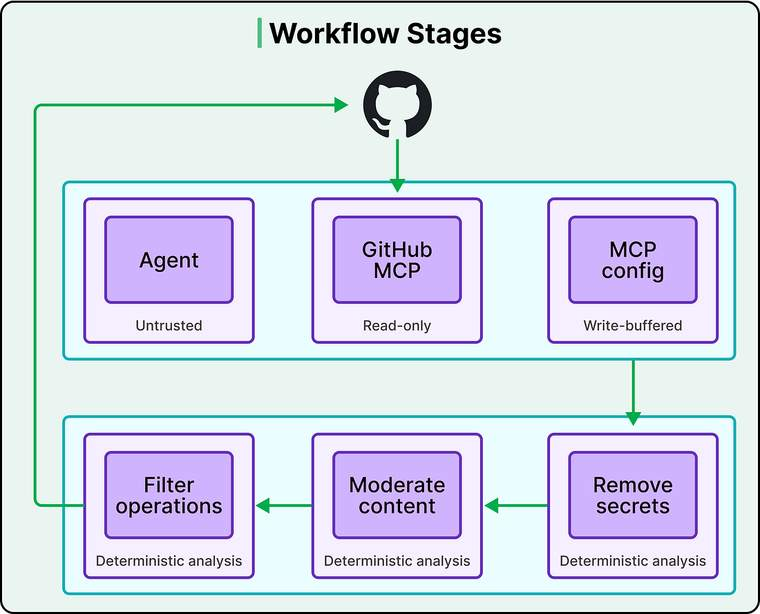
This pipeline does three things.
这条管道做了三件事。
First, it checks the type of each operation against an allowlist that the workflow author defined. If the author said the agent can create issues and comments but not pull requests, any staged PR gets dropped.
首先，它根据工作流作者定义的允许列表检查每个操作的类型。如果作者说代理可以创建问题和评论，但不能创建拉取请求，则任何分阶段的 PR 都会被删除。
Second, it enforces quantity limits. An agent might be restricted to creating at most three pull requests per run.
其次，它强制执行数量限制。代理可能会被限制每次运行最多创建三个拉取请求。
Third, it runs content sanitization, scanning for secrets that might have leaked into the output text, removing URLs, and running content moderation checks.
第三，它运行内容清理、扫描可能泄露到输出文本中的秘密、删除 URL 并运行内容审核检查。
Only outputs that survive the entire pipeline get committed to GitHub. Every stageʼs side effects are explicit and vetted.
只有在整个管道中幸存下来的输出才会提交到 GitHub。每个阶段的副作用都是明确且经过审查的。
The compiler plays an important role here, too. When it decomposes a workflow into stages, it defines for each stage the active components and their permissions
编译器在这里也扮演着重要的角色。当它将工作流程分解为阶段时，它为每个阶段定义活动组件及其权限
(read versus write), the data artifacts that stage can emit, and the admissible downstream consumers of those artifacts.
（读与写）、该阶段可以发出的数据工件以及这些工件的可接受的下游消费者。
The workflow author declares upfront what the agent is allowed to produce, and the system enforces those declarations deterministically. Since the pipeline uses deterministic analysis, it can only catch patterns that GitHub anticipated. A truly novel attack vector might slip through, which is exactly why the other layers exist.
工作流作者预先声明允许代理生成的内容，并且系统确定性地强制执行这些声明。由于管道使用确定性分析，因此它只能捕获 GitHub 预期的模式。真正新颖的攻击向量可能会溜走，这正是其他层存在的原因。
No single layer is the complete answer.
没有任何一层是完整的答案。
The Logging StrategyAgents are determined to accomplish their tasks by any means and can have a surprisingly deep toolbox of tricks for doing so. When an agent behaves unexpectedly, you need full visibility into what happened.
特工决心以任何方式完成他们的任务，并且可以拥有令人惊讶的深层技巧工具箱来实现这一目标。当代理行为异常时，您需要全面了解发生的情况。
Agentic Workflows make observability a first-class architectural property by logging at every trust boundary.
代理工作流通过在每个信任边界进行日志记录，使可观察性成为一流的架构属性。
Network and destination-level activity gets recorded at the firewall.
网络和目标级别的活动被防火墙记录。
Model request/response metadata and authenticated requests are captured by the API proxy.
模型请求/响应元数据和经过身份验证的请求由 API 代理捕获。
Tool invocations are logged by the MCP gateway and MCP servers.
工具调用由 MCP 网关和 MCP 服务器记录。
GitHub even adds internal instrumentation to the agent container to audit potentially sensitive actions like environment variable accesses.
GitHub 甚至向代理容器添加了内部检测，以审核潜在的敏感操作，例如环境变量访问。
Together, these logs support full forensic reconstruction, policy validation, and detection of anomalous behavior.
这些日志共同支持完整的取证重建、策略验证和异常行为检测。
But thereʼs a more important long-term play here. Every point where you can observe communication is also a point where you can mediate it. GitHub is building the observation infrastructure now with future control in mind. They already support a lockdown mode for the GitHub MCP server, and they plan to introduce controls that enforce policies across MCP servers based on whether repository objects are public or private, and based on who authored them.
但这里还有更重要的长期影响。每一个你可以观察沟通的点也是你可以调解沟通的点。 GitHub 现在正在构建观察基础设施，并考虑到未来的控制。他们已经支持 GitHub MCP 服务器的锁定模式，并计划引入控制措施，根据存储库对象是公共还是私有以及创作者来在 MCP 服务器上强制执行策略。
The Trade-OffsEvery security decision GitHub made came with a cost.
GitHub 做出的每一个安全决策都会带来成本。
Security versus utility is the most obvious tension. Agents running inside GitHubʼs architecture are more constrained than a developer working locally. The chroot approach gives agents access to host tools, but the firewall still limits network access, and the safe outputs pipeline still restricts what the agent can produce. In other words, more security means less flexibility.
安全性与实用性是最明显的矛盾。在 GitHub 架构内运行的代理比本地工作的开发人员受到更多限制。 chroot 方法使代理可以访问主机工具，但防火墙仍然限制网络访问，并且安全输出管道仍然限制代理可以生成的内容。换句话说，更高的安全性意味着更低的灵活性。
Strict-by-default is a strong opinion. Most other coding agents make sandboxing opt-in. Claude Code and Gemini CLI both require you to turn on their sandbox features. GitHub Agentic Workflows run in strict security mode by default. Thatʼs a deliberate choice to prioritize safety over developer convenience, and it wonʼt be the right tradeoff for every use case.
默认严格是一个强烈的观点。大多数其他编码代理都会选择加入沙箱。 Claude Code 和 Gemini CLI 都要求您打开其沙箱功能。 GitHub Agentic 工作流程默认在严格安全模式下运行。这是一个将安全性置于开发人员便利性之上的深思熟虑的选择，并且这并不是针对每个用例的正确权衡。
Prompt injection remains fundamentally unsolved. GitHubʼs architecture is a damage containment strategy, not a prevention strategy. It limits the blast radius when an agent gets tricked, but it canʼt prevent the issue itself. And the deterministic vetting in the safe outputs pipeline can only catch patterns that were anticipated. A novel attack vector might need a new pipeline stage.
即时注射仍然没有从根本上解决。 GitHub 的架构是一种损害遏制策略，而不是预防策略。当特工被欺骗时，它限制了爆炸半径，但它无法阻止问题本身。安全输出管道中的确定性审查只能捕获预期的模式。新颖的攻击媒介可能需要新的管道阶段。
The architecture is also complex, involving multiple containers, proxies, gateways, a compilation step, and a staged output pipeline. This is engineering overhead that makes sense at GitHubʼs scale. For simpler use cases, we might not need every piece.
该架构也很复杂，涉及多个容器、代理、网关、编译步骤和分阶段输出管道。对于 GitHub 的规模来说，这是有意义的工程开销。对于更简单的用例，我们可能不需要每一个部分。
Conclusion As AI agents become standard in development tooling, the question will shift from whether to sandbox to building a complete security architecture.
结论 随着人工智能代理成为开发工具的标准，问题将从是否使用沙箱转向构建完整的安全架构。
GitHubʼs four principles offer a transferable framework: Defend in depth with independent layers.
GitHub 的四项原则提供了一个可转移的框架： 使用独立层进行深度防御。
Keep agents away from secrets by architecture, not policy.
通过架构而不是策略让代理远离秘密。
Vet every output through deterministic analysis before it affects the real world.
在每个输出影响现实世界之前，通过确定性分析对其进行审查。
Log everything at every trust boundary, because todayʼs observability is tomorrowʼs control plane. ====
记录每个信任边界的所有内容，因为今天的可观察性就是明天的控制平面。 ====
How Netflix is Using Multimodal AI to Power Video Search
How Netflix is Using Multimodal AI to Power Video SearchAI 来推动视频搜索A single season of a Netflix show can generate over 2,000 hours of raw footage.
Netflix 节目的单季可以生成超过 2,000 小时的原始素材。
Thatʼs 216 million frames.
那是 2.16 亿帧。
When a film editor needs to find the exact moment where a specific character says a specific line in a specific location, theyʼre facing one of the hardest search problems in all of software engineering. And the solution has surprisingly little to do with building a better AI model. The real challenge, it turns out, is plumbing.
当电影剪辑师需要找到特定角色在特定位置说出特定台词的确切时刻时，他们面临着所有软件工程中最难的搜索问题之一。令人惊讶的是，该解决方案与构建更好的人工智能模型几乎没有什么关系。事实证明，真正的挑战是管道。
Netflix editorial teams used to lose days searching for specific moments buried in raw production footage. For example, a director might need every shot of a character in a particular setting. A marketing team might want the five most visually striking action sequences across an entire franchise. Finding these moments meant hours of manual scrubbing through thousands of hours of material. Creative momentum would stall in situations like this.
Netflix 编辑团队过去常常花费数天时间来寻找隐藏在原始制作素材中的特定时刻。例如，导演可能需要特定场景中角色的每个镜头。营销团队可能想要整个系列中五个最具视觉冲击力的动作序列。找到这些时刻意味着需要花费数小时手动擦洗数千小时的材料。在这种情况下，创造性的动力就会停滞。
The team that solved this problem built something that looks simple from the outside, just a search bar. But underneath it sits a three-layer pipeline that orchestrates an ensemble of AI models, fuses their outputs across a shared timeline, and serves hybrid text-and-vector queries at sub-second latency.
解决这个问题的团队构建了一些从外面看起来很简单的东西，只是一个搜索栏。但在它的下面有一个三层管道，它协调人工智能模型的集合，在共享时间线上融合它们的输出，并以亚秒级延迟提供混合文本和矢量查询。
When those multiple AI models run over the same footage, the baseline of 216 million frames explodes into billions of multi-layered data points. Storing, aligning, and intersecting that volume while maintaining sub-second query performance goes well beyond what any traditional database can handle alone.
当这些多个人工智能模型在相同的镜头上运行时，2.16 亿帧的基线会爆炸成数十亿个多层数据点。在保持亚秒级查询性能的同时存储、对齐和交叉该卷，这远远超出了任何传统数据库单独处理的能力。
In this article, we will understand how Netflix built this system and the challenges it faced.
在这篇文章中，我们将了解 Netflix 是如何构建这个系统的以及它面临的挑战。
Disclaimer: This post is based on publicly shared details from the Netflix Engineering Team. Please comment if you notice any inaccuracies.
免责声明：本文基于 Netflix 工程团队公开分享的详细信息。如果您发现任何不准确之处，请发表评论。
Why Multiple ModelsWhy would Netflix run multiple AI models over the same footage instead of relying on one powerful model that does everything'
为什么 Netflix 要在同一片段上运行多个 AI 模型，而不是依赖一个功能强大的模型来做所有事情？
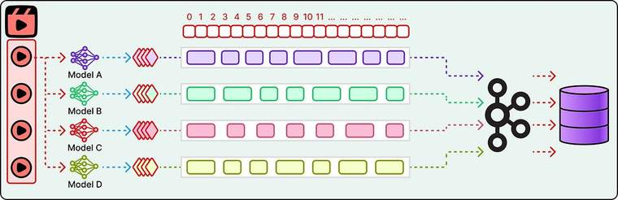
This is because specialized models consistently outperform generalists at their particular task. A model trained specifically for face recognition will identify characters more accurately than a general-purpose vision model. A model tuned for scene classification will map environments more precisely. A dialogue transcription model will capture speech more reliably.
这是因为专业模型在其特定任务上始终优于通才。专门针对人脸识别训练的模型将比通用视觉模型更准确地识别字符。针对场景分类进行调整的模型将更精确地映射环境。对话转录模型将更可靠地捕获语音。
Therefore, Netflix runs an ensemble of specialists. For example, one model recognizes characters. Another classifies scenes and environments. A third transcribes dialogue. A fourth detects objects. Each model is excellent at its job, but each one also produces a fundamentally different kind of output.
因此，Netflix 拥有一支由专家组成的团队。例如，一种模型可以识别字符。另一个对场景和环境进行分类。第三个记录对话。第四个检测物体。每个模型都非常擅长其工作，但每个模型也产生完全不同的输出。
For reference, a character recognition model might output a text label like “Joey.” In contrast, a scene classification model produces a 512-dimensional vector embedding, which is basically a list of numbers that represents the mathematical “meaning” of a scene in a way that machines can compare. On the other hand, a dialogue model outputs timestamped transcript text. These are entirely different data types, and they require different search strategies to query.
作为参考，字符识别模型可能会输出“Joey”等文本标签。相比之下，场景分类模型会生成 512 维向量嵌入，它基本上是一个数字列表，以机器可以比较的方式表示场景的数学“含义”。另一方面，对话模型输出带时间戳的转录文本。这些是完全不同的数据类型，它们需要不同的搜索策略来查询。
See the diagram below:
见下图：
The format problem is only half the challenge. Each model also slices the video into different, overlapping time intervals. The character model might detect “Joey” from seconds 2 through 8. The scene model might detect “kitchen” from seconds 4 through 9. There is no shared timeline across models. The intervals overlap, but they donʼt align.
格式问题只是挑战的一半。每个模型还将视频分割成不同的、重叠的时间间隔。角色模型可能会从第 2 秒到第 8 秒检测到“Joey”。场景模型可能会从第 4 秒到第 9 秒检测到“厨房”。模型之间没有共享的时间线。间隔重叠，但不对齐。
So, if we think about it, the engineering team had to solve one core challenge.
因此，如果我们考虑一下，工程团队必须解决一个核心挑战。
How do you take all these different outputs, produced at different time resolutions, in different formats, and merge them into one searchable index' Netflix is also exploring a fundamentally different approach to this problem through a single unified foundation model called MediaFM that handles audio, video, and text together. Whether the future favors specialized ensembles or unified generalists remains an open question in multimodal AI. But for now, the production system relies on a three-stage pipeline that treats each concern separately.
如何获取以不同时间分辨率、不同格式生成的所有不同输出，并将它们合并到一个可搜索索引中？ Netflix 还在探索一种根本不同的方法来解决此问题，通过名为 MediaFM 的单一统一基础模型来同时处理音频、视频和文本。未来是否有利于专门的集成或统一的通才仍然是多模式人工智能中的一个悬而未决的问题。但目前，生产系统依赖于一个三级管道，分别处理每个问题。
The Three-Stage PipelineThe transition from raw model output to searchable intelligence follows a decoupled, three-stage process.
从原始模型输出到可搜索智能的转变遵循解耦的三阶段过程。
Each stage handles one concern and one concern only. This separation is the architectural backbone of the entire system, and it exists because coupling any two stages would create bottlenecks at Netflixʼs scale.
每个阶段只处理一个关注点，并且只处理一个关注点。这种分离是整个系统的架构支柱，它之所以存在是因为任何两个阶段的耦合都会在 Netflix 的规模上产生瓶颈。
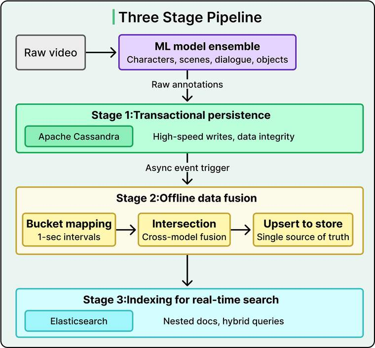
Raw annotations from all models are ingested and stored in Apache Cassandra, a distributed database optimized for high-speed write throughput. This stage strictly prioritizes data integrity. Every piece of model output gets safely captured, with zero transformation. The system stores it exactly as the model produced it.
所有模型的原始注释都被提取并存储在 Apache Cassandra 中，这是一个针对高速写入吞吐量进行优化的分布式数据库。此阶段严格优先考虑数据完整性。每一个模型输出都被安全捕获，零转换。系统完全按照模型生成的方式存储它。
Why keep this stage separate from everything that follows' It is because if the system tried to process or fuse data during ingestion, the heavy computation would slow down real-time intake. Decoupling ensures that no matter how many models are running or how much data they produce, the ingestion layer keeps up.
为什么要将此阶段与后续的所有阶段分开？这是因为如果系统尝试在摄取过程中处理或融合数据，繁重的计算会减慢实时摄取的速度。解耦可确保无论有多少模型正在运行或生成多少数据，摄取层都能保持不变。
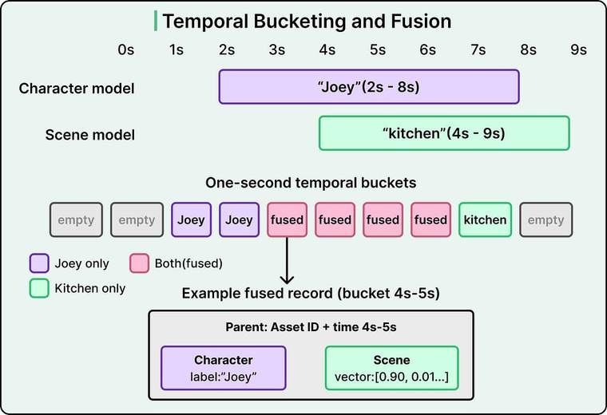
Once raw data is safely persisted, an event triggers an asynchronous processing job. This offline fusion layer is the architectural heart of the system. It handles the heavy computational work outside the real-time path, so complex data intersections never interfere with ongoing ingestion.
一旦原始数据被安全地保存，事件就会触发异步处理作业。这个离线融合层是系统的架构核心。它处理实时路径之外的繁重计算工作，因此复杂的数据交叉永远不会干扰正在进行的摄取。
The key technique here is temporal bucketing.
这里的关键技术是时间分桶。
See the diagram below: The pipeline normalizes all model outputs by mapping them into fixed one-second intervals. This unfolds in three steps: First is bucket mapping. Continuous detections get segmented into discrete one-second intervals. If the character model detects “Joey” from seconds 2 through 8, the pipeline maps that continuous span into seven distinct one- second buckets.
请参见下图：管道通过将所有模型输出映射到固定的一秒间隔来标准化它们。这分三个步骤展开：首先是存储桶映射。连续检测被分割成离散的一秒间隔。如果角色模型从第 2 秒到第 8 秒检测到“Joey”，管道会将该连续跨度映射到七个不同的一秒桶中。
Second is annotation intersection. When multiple models produce annotations for the same one-second bucket, the system fuses them into a single comprehensive record. If “Joey” and “kitchen” both appear in the bucket
其次是注释交叉。当多个模型为同一个一秒桶生成注释时，系统会将它们融合成一个综合记录。如果“Joey”和“kitchen”都出现在桶中
covering second 4 to second 5, they get merged into one record that says “Joey is in a kitchen during this specific second of footage.” Third is optimized persistence. These enriched, fused records are written back to Cassandra as distinct entities. The result is a second-by-second index of multi-modal intersections, precisely associating every fused annotation with its source video asset.
涵盖第 4 秒到第 5 秒，它们被合并到一个记录中，其中显示“在镜头的这一特定秒内，乔伊在厨房里”。三是优化持久化。这些丰富、融合的记录作为不同的实体写回 Cassandra。结果是多模态交叉点的逐秒索引，将每个融合注释与其源视频资产精确关联。
One important detail makes this process incremental.
一个重要的细节使这一过程渐进。
The pipeline uses upsert operations, meaning it will update an existing record if one is found or insert a new one if it isnʼt, using a composite key that combines the asset ID and the time bucket as the unique identifier.
该管道使用 upsert 操作，这意味着如果找到一条记录，它将更新现有记录；如果没有找到一条记录，它将插入一条新记录，使用将资产 ID 和时间段组合起来作为唯一标识符的复合键。
If a temporal bucket already exists for a specific second of video, perhaps populated by an earlier model run, the system updates the existing record rather than creating a duplicate. This establishes a single source of truth for every second of footage, and it means the system gracefully handles new models being added over time.
如果特定秒视频的时间存储桶已存在，可能由早期模型运行填充，则系统会更新现有记录，而不是创建副本。这为每一秒的镜头建立了单一的事实来源，这意味着系统可以优雅地处理随着时间的推移添加的新模型。
The one-second bucket size is itself a meaningful design decision.
一秒桶大小本身就是一个有意义的设计决策。
Smaller buckets mean finer temporal precision but dramatically more records. At one-second resolution, a 2,000-hour archive produces 7.2 million buckets, each potentially containing multiple annotations from multiple models. Netflix chose one second as the balance point between precision and manageability.
较小的存储桶意味着更精细的时间精度，但记录数量也显着增加。按照一秒的分辨率，2,000 小时的存档会产生 720 万个存储桶，每个存储桶可能包含来自多个模型的多个注释。 Netflix 选择一秒作为精度和可管理性之间的平衡点。
Once the enriched temporal buckets are persisted, a subsequent event triggers their ingestion into Elasticsearch, the systemʼs query engine.
一旦丰富的时间桶被持久化，后续事件就会触发它们被摄取到系统的查询引擎 Elasticsearch 中。
Each temporal bucket is structured as a nested document: The parent level captures the overarching asset context, including the asset ID, the movie ID, and the time interval.
每个时间桶都被构造为嵌套文档：父级别捕获总体资产上下文，包括资产 ID、电影 ID 和时间间隔。
Child documents within it house the specific multi-modal annotations like character data, scene embeddings, and dialogue text. This hierarchical structure is what makes cross-annotation queries possible.
其中的子文档包含特定的多模式注释，例如字符数据、场景嵌入和对话文本。这种层次结构使得交叉注释查询成为可能。
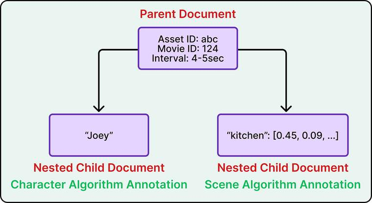
When a user searches for “Joey in the kitchen,” Elasticsearch can match the character annotation and the scene annotation within the same parent bucket in a single query.
当用户搜索“Joey in the kitchen”时，Elasticsearch 可以在单个查询中匹配同一父存储桶中的角色注释和场景注释。
Two Kinds of Search with One ResultWith a fused, indexed timeline in place, the system is ready for the part users actually see.
有了融合的索引时间线，系统就可以为用户实际看到的部分做好准备。
When a query arrives, the system runs a three-step preprocessing phase before touching the index.
当查询到达时，系统在接触索引之前运行一个三步预处理阶段。
Query type detection dynamically categorizes the request to route it down the most efficient retrieval path.
查询类型检测动态地对请求进行分类，以将其路由到最有效的检索路径。
Filter extraction isolates semantic constraints like character names or environmental contexts to narrow the candidate pool before expensive computation begins Lastly, vector transformation converts the raw text query into high- dimensional, model-specific embeddings for semantic matching.
过滤器提取隔离诸如字符名称或环境上下文之类的语义约束，以在昂贵的计算开始之前缩小候选池的范围。最后，向量转换将原始文本查询转换为高维、特定于模型的嵌入以进行语义匹配。
The system then compiles this structured plan into an optimized Elasticsearch query and executes it against the pre-fused temporal buckets.
然后，系统将此结构化计划编译为优化的 Elasticsearch 查询，并针对预先融合的时间桶执行它。
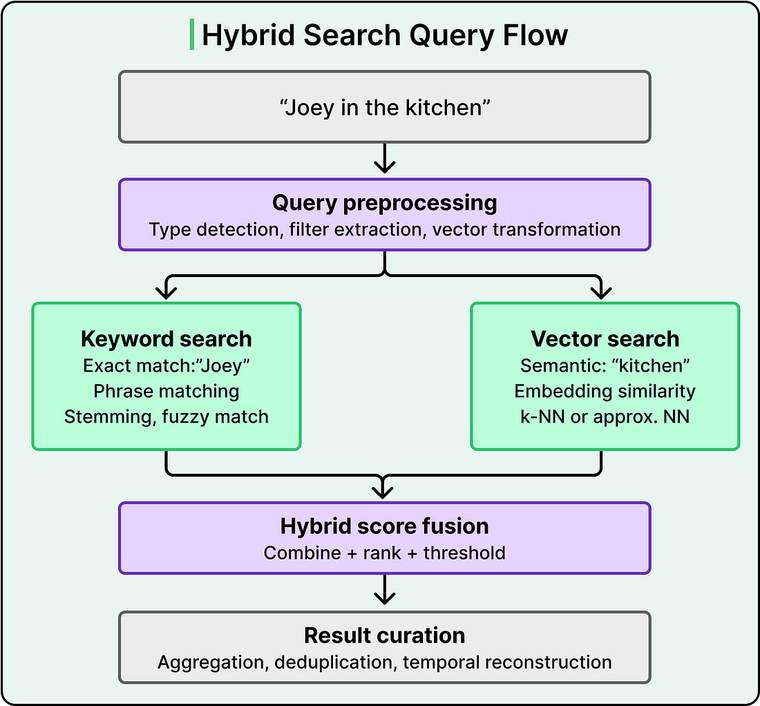
A query like “Joey in the kitchen” requires two fundamentally different kinds of matching. “Joey” is a proper noun that demands exact keyword matching. “Kitchen” is a semantic concept that benefits from vector similarity search, where the system compares the mathematical distance between the query embedding and scene embeddings stored in the index.
像“Joey in the kitchen”这样的查询需要两种根本不同的匹配。 “Joey”是一个专有名词，需要精确的关键字匹配。 “厨房”是一个受益于向量相似性搜索的语义概念，系统会比较查询嵌入和存储在索引中的场景嵌入之间的数学距离。
A keyword search alone would miss scenes labeled with related terms. Also, vector search alone would struggle with proper nouns and exact phrases. The combination of both is called hybrid search, and it consistently outperforms either approach in isolation.
仅关键字搜索就会错过标有相关术语的场景。此外，仅靠矢量搜索就很难处理专有名词和精确短语。两者的结合称为混合搜索，它始终优于任何一种孤立的方法。
Netflix gives users fine-grained control over this hybrid engine.
Netflix 为用户提供了对这种混合引擎的细粒度控制。
They can toggle between exact k-Nearest Neighbor search, which guarantees the mathematically closest matches but is computationally expensive, and Approximate Nearest Neighbor algorithms that trade a small amount of accuracy for significantly faster results on massive datasets.
他们可以在精确的 k 最近邻搜索和近似最近邻算法之间切换，前者保证数学上最接近的匹配，但计算成本较高，后者在海量数据集上以少量精度换取更快的结果。
They can choose between distance metrics like cosine similarity and Euclidean distance, because different models shape their vector spaces differently, and what counts as “close” depends on how the model was trained. They can also set confidence thresholds, meaning minimum score boundaries that filter out low- probability matches so that creative teams only review results meeting a high standard of relevance.
他们可以在余弦相似度和欧几里德距离等距离度量之间进行选择，因为不同的模型以不同的方式塑造其向量空间，而什么算作“接近”取决于模型的训练方式。他们还可以设置置信度阈值，即过滤掉低概率匹配的最低分数边界，以便创意团队只审查符合高相关性标准的结果。
For searches involving specific lines of speech, the system applies a layered text analysis strategy.
对于涉及特定台词的搜索，系统采用分层文本分析策略。
Phrase matching with a configurable “slop” parameter, which controls how many words apart the search terms can appear and still count as a match, handles imperfect human memory. For example, if a user searches for a line from Stranger Things but remembers the wording slightly wrong, the system still finds the right scene.
与可配置的“slop”参数进行短语匹配，该参数控制搜索词可以出现的单词数量，并且仍然算作匹配，可以处理不完美的人类记忆。例如，如果用户搜索《怪奇物语》中的台词，但记住的措辞略有错误，系统仍然会找到正确的场景。
Search-as-you-type functionality, powered by indexing partial word fragments at ingest time, surfaces frame-accurate results the moment an editor begins typing.
键入时搜索功能由在摄取时索引部分单词片段提供支持，可在编辑者开始键入时显示帧精确的结果。
Linguistic stemming across multiple languages ensures that “running” matches scenes tagged with “run” or “ran,” collapsing grammatical variations into a single search intent. Fuzzy matching that tolerates character-level typos and misspellings accounts for transcription errors, so that high-value shots are never lost to minor data imperfections.
跨多种语言的语言词干提取可确保“running”与标记有“run”或“ran”的场景相匹配，从而将语法变体压缩为单个搜索意图。模糊匹配可以容忍字符级的拼写错误和拼写错误，从而解决转录错误，因此高价值的镜头永远不会因为微小的数据缺陷而丢失。
Raw search results need post-processing before theyʼre useful.
原始搜索结果需要经过后处理才能有用。
The system uses custom aggregations to cluster outputs, such as isolating the top 5 most relevant clips of an actor per episode. This prevents any single asset from dominating results and combats the fatigue that comes with reviewing hundreds of near-identical frames. The temporal reconstruction layer converts internal
该系统使用自定义聚合来对输出进行聚类，例如隔离每集演员的前 5 个最相关的剪辑。这可以防止任何单一资产主导结果，并消除审查数百个几乎相同的帧所带来的疲劳。时间重建层将内部转换为
bucket boundaries back into natural scene boundaries, so editors see coherent scene-level results rather than arbitrary one-second slices.
存储桶边界回到自然场景边界，因此编辑人员可以看到连贯的场景级结果，而不是任意的一秒切片。
The system also provides two result modes depending on the query intent. Union mode returns the full span of all matching annotations, prioritizing breadth and capturing any instance where a specified feature appears. Intersection mode returns only the exact overlapping duration where all criteria co-occur, prioritizing precision. The choice between them lies with the user.
系统还根据查询意图提供两种结果模式。联合模式返回所有匹配注释的完整范围，优先考虑宽度并捕获出现指定特征的任何实例。交叉模式仅返回所有条件同时出现的精确重叠持续时间，优先考虑精度。它们之间的选择取决于用户。
Every architectural choice Netflix made carries a tradeoff, and the team was deliberate about which prices they were willing to pay.
Netflix 所做的每一个架构选择都需要权衡，团队会仔细考虑他们愿意支付的价格。
Offline fusion means new content goes through a delay before it becomes fully searchable across all modalities. Netflix chose throughput over real-time freshness because the alternative, fusing data during ingestion, would bottleneck the entire pipeline.
离线融合意味着新内容在完全可通过所有模式进行搜索之前会经历一段延迟。 Netflix 选择吞吐量而不是实时新鲜度，因为在摄取过程中融合数据的替代方案会成为整个管道的瓶颈。
For a production archive that grows by thousands of hours, that tradeoff makes sense. However, for a system that needed instant searchability, it would be the wrong call.
对于增长数千小时的生产档案来说，这种权衡是有意义的。然而，对于需要即时搜索的系统来说，这将是错误的选择。
The toggle between exact and approximate nearest neighbor search is a direct precision-versus-speed tradeoff. Exact k-NN guarantees the mathematically best matches but becomes computationally expensive at scale. Approximate methods are faster but accept the possibility of missing some relevant results. Netflix surfaces this tradeoff to users rather than choosing them.
精确和近似最近邻搜索之间的切换是直接精度与速度的权衡。精确的 k-NN 保证了数学上的最佳匹配，但在规模上变得计算昂贵。近似方法更快，但接受丢失一些相关结果的可能性。 Netflix 向用户展示了这种权衡，而不是选择他们。
And the ensemble approach itself is a bet.
整体方法本身就是一个赌注。
Running multiple specialized models and fusing their outputs through a three- stage pipeline produces excellent per-task accuracy, but it demands significant infrastructure complexity.
运行多个专用模型并通过三级管道融合它们的输出可以产生出色的每任务准确性，但它需要显着的基础设施复杂性。
A single unified model would simplify the architecture at the potential cost of accuracy on specialized tasks. The fact that Netflix is simultaneously investing in both approaches, the ensemble pipeline and the MediaFM foundation model, suggests this tradeoff remains genuinely unsettled.
单一的统一模型会简化架构，但会牺牲专门任务的准确性。 Netflix 同时投资两种方法，即集成管道和 MediaFM 基础模型，这一事实表明，这种权衡仍然悬而未决。
Conclusion The current system implemented by the Netflix engineering team is the first phase of a larger vision. Three planned evolutions stand out: First is natural language discovery. The system currently accepts structured query payloads, but the goal is to move toward fluid, conversational interfaces where an editor could type something like “Find the best tracking shots of Tom Holland running on a roof” and get results without needing to understand the underlying query structure.
结论 Netflix 工程团队当前实施的系统是更大愿景的第一阶段。计划中的三个演变引人注目：首先是自然语言发现。该系统目前接受结构化查询有效负载，但目标是转向流畅的对话界面，编辑者可以输入诸如“查找汤姆·霍兰德在屋顶上跑步的最佳跟踪镜头”之类的内容，并获得结果，而无需了解底层查询结构。
Second is adaptive ranking. By building machine learning feedback loops that analyze how editorial teams interact with and select clips, the system would gradually self-tune its mathematical definition of relevance. The search engine would get better over time, learning from actual usage patterns rather than relying on static scoring algorithms.
其次是自适应排名。通过构建机器学习反馈循环来分析编辑团队如何与剪辑交互并选择剪辑，系统将逐渐自我调整其相关性的数学定义。随着时间的推移，搜索引擎会变得更好，从实际使用模式中学习，而不是依赖静态评分算法。
Third is domain-specific personalization. A team cutting high-action marketing trailers has different relevance criteria than a team editing narrative scenes or conducting deep archival research. The system would dynamically calibrate search weights and retrieval behaviors to match the userʼs context.
第三是特定领域的个性化。剪辑高动作营销预告片的团队与编辑叙事场景或进行深入档案研究的团队具有不同的相关性标准。系统将动态校准搜索权重和检索行为以匹配用户的上下文。
These extensions point toward a broader ambition of evolving from a search engine into an intelligent creative partner.
这些扩展指向了从搜索引擎发展成为智能创意合作伙伴的更广泛雄心。
However, the current system already teaches a valuable architectural lesson.
然而，当前的系统已经教授了宝贵的架构课程。
When multiple AI models produce different kinds of data about the same underlying entity, the hardest engineering lies in the fusion layer. The models themselves are important, but the pipeline that persists, aligns, and indexes their outputs is what makes the whole system work. ====
当多个人工智能模型产生关于同一底层实体的不同类型的数据时，最难的工程在于融合层。模型本身很重要，但持久化、对齐和索引其输出的管道才是整个系统工作的关键。 ====
How Amazon Uses LLMs to Recommend Products
How Amazon Uses LLMs to Recommend ProductsSearch “shoes for pregnant women” on Amazon, and the best results you get might be slip-resistant shoes. This is even though the word “pregnant” appears nowhere in those product listings.
在亚马逊上搜索“孕妇鞋”，你得到的最佳结果可能是防滑鞋。即使“怀孕”这个词在这些产品列表中没有出现。
In other words, there is zero keyword overlap between the query and the product.
换句话说，查询和产品之间的关键字重叠为零。
The search engine has to reason that pregnant women need stability, that stability
搜索引擎必须推理出孕妇需要稳定，稳定
means slip-resistance, and that slip-resistant shoes are the right match.
意味着防滑，那防滑鞋就对了。
Traditional recommendation systems match text to text and purchase history to purchase history. They handle keyword overlap quite well. However, when a shopperʼs intent requires a reasoning step that lives entirely in human common sense, those systems hit a wall.
传统的推荐系统将文本与文本进行匹配，将购买历史与购买历史进行匹配。他们很好地处理关键字重叠。然而，当购物者的意图需要完全符合人类常识的推理步骤时，这些系统就会碰壁。
Amazonʼs search team recognized this blind spot and built a commonsense knowledge graph called COSMO that teaches the recommendation engine to think the way a human shopper would.
亚马逊的搜索团队认识到了这一盲点，并构建了一个名为 COSMO 的常识知识图，该图教会推荐引擎以人类购物者的方式思考。
In this article, we will look at how COSMO works and the challenges the engineering team faced.
在本文中，我们将了解 COSMO 的工作原理以及工程团队面临的挑战。
Disclaimer: This post is based on publicly shared details from the Amazon Engineering Team. Please comment if you notice any inaccuracies.
免责声明：本文基于亚马逊工程团队公开分享的详细信息。如果您发现任何不准确之处，请发表评论。
The Gap Between What You Search and What YouMean Amazon already operates large-scale knowledge graphs that store factual product attributes like brand, color, material, and category. These graphs power a lot of what works well in product search today. However, they mainly try to encode what a product is, and they donʼt explain why a human would want it.
Mean 亚马逊已经运营了大规模的知识图谱，用于存储品牌、颜色、材料和类别等实际产品属性。这些图表为当今产品搜索中的许多有效方法提供了支持。然而，他们主要试图对产品是什么进行编码，并且没有解释为什么人们会想要它。
This is the semantic gap problem.
这就是语义差距问题。
For example, a query like “winter clothes” carries an implicit intent around warmth.
例如，像“冬天的衣服”这样的查询就隐含着关于温暖的意图。
The product catalog for a long-sleeve puffer coat describes its material, size options, and sleeve length, but it may say nothing about warmth directly. The gap between what the customer typed and what the product listing says requires a reasoning step that factual knowledge graphs were never designed to handle.
长袖羽绒服的产品目录描述了其材质、尺寸选项和袖长，但可能没有直接提及保暖性。客户输入的内容与产品列表中显示的内容之间的差距需要一个推理步骤，而事实知识图谱从来没有设计来处理这一点。
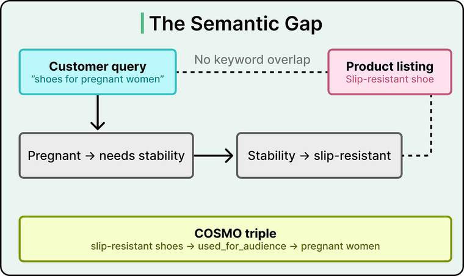
Amazonʼs team surveyed the landscape of existing solutions.
亚马逊的团队调查了现有解决方案的情况。
Alibaba built AliCoCo 163K nodes, 91 relations) and AliCG 5M nodes), both extracted from search logs. These capture product concepts, but they stay focused on product attributes and categories, skipping user intent entirely.
阿里巴巴构建了 AliCoCo 163K 节点（91 个关系）和 AliCG 5M 节点），均从搜索日志中提取。这些捕获了产品概念，但它们仍然专注于产品属性和类别，完全忽略了用户意图。
General commonsense knowledge bases like ConceptNet 8M nodes, 21M edges) cover everyday reasoning but are built for general purposes, with little grounding in shopping behavior.
一般常识知识库（例如 ConceptNet 8M 节点、21M 边）涵盖了日常推理，但是为一般目的而构建的，几乎没有购物行为的基础。
Amazonʼs own earlier effort, FolkScope, demonstrated that commonsense knowledge could be extracted from shopping data, but it covered only 2 product categories and only co-purchase behavior.
亚马逊自己的早期成果 FolkScope 证明了可以从购物数据中提取常识知识，但它只涵盖 2 个产品类别和共同购买行为。
The gap was clear. Though factual product knowledge and general commonsense knowledge existed, structured knowledge about why people buy things at an e- commerce scale was missing.
差距很明显。尽管存在事实的产品知识和一般常识知识，但缺乏关于人们为何在电子商务规模下购买商品的结构化知识。
the LLM (and Why the Answers Fell Short)The intuition behind Amazonʼs approach was simple. Large language models encode enormous amounts of world knowledge in their parameters. Taking our earlier example, if you ask an LLM why a customer who searched “winter coat”
亚马逊方法背后的直觉很简单。大型语言模型在其参数中编码了大量的世界知识。以我们之前的例子为例，如果您询问法学硕士为什么搜索“冬季外套”的客户
bought a long-sleeve puffer coat, it can reason that puffer coats provide warmth, and warmth is what the customer wanted.
买了一件长袖羽绒服，可以推断羽绒服保暖，而保暖正是顾客想要的。
The team fed millions of user behavior pairs into OPT175B and OPT30B, large language models hosted internally on 16 A100 GPUs. The choice of OPT over GPT 4 was driven by a hard constraint around data privacy. Customer behavior data, meaning which queries led to which purchases, could only be processed on Amazonʼs own infrastructure.
该团队将数百万个用户行为对输入 OPT175B 和 OPT30B，这是内部托管在 16 个 A100 GPU 上的大型语言模型。选择 OPT 而不是 GPT 4 是由于数据隐私方面的严格限制。客户行为数据，即哪些查询导致哪些购买，只能在亚马逊自己的基础设施上进行处理。
Two types of behavior data went into the system.
两种类型的行为数据进入系统。
Query-purchase pairs capture the connection between a search query and the product a customer ultimately bought.
查询-购买对捕获搜索查询与客户最终购买的产品之间的联系。
Co-purchase pairs capture products bought together in the same shopping session Across 18 product categories, the team sampled 3.14 million co-purchase pairs and 1.87 million query-purchase pairs.
共同购买对捕获在同一购物会话中一起购买的产品 在 18 个产品类别中，团队采样了 314 万个共同购买对和 187 万个查询购买对。
The sampling strategy was itself a design decision.
抽样策略本身就是一个设计决策。
For products, Amazon covered popular browse node categories and selected top-tier products with high interaction volume, also using product type labels (more than a thousand classes like “umbrella” or “chair”) for finer-grained selection.
在产品方面，亚马逊覆盖了热门浏览节点品类，精选了交互量较高的顶级产品，并使用产品类型标签（“伞”“椅子”等千余类）进行更细粒度的选择。
For co-purchase pairs, the team cross-checked product types to remove random co-purchases and filtered out products that co-occurred with too many different product types (a signal of noise rather than intent).
对于共同购买对，团队交叉检查产品类型以消除随机共同购买，并过滤掉与太多不同产品类型同时出现的产品（噪音信号而不是意图）。
For search-buy pairs, thresholds on both purchase rate and click rate determined which queries and products entered the sample.
对于搜索-购买对，购买率和点击率的阈值决定了哪些查询和产品进入样本。
Crucially, an in-house query specificity service helped prioritize broad or ambiguous queries, because those are exactly where the semantic gap is largest and commonsense knowledge adds the most value.
至关重要的是，内部查询特异性服务有助于优先考虑广泛或模糊的查询，因为这些正是语义差距最大的地方，而常识知识增加了最大的价值。
Prompt design mattered too. Rather than using simple text continuation, Amazon formatted each behavior pair as a question-answering task and instructed the LLM to generate a numbered list of candidates rather than a single response.
及时的设计也很重要。亚马逊没有使用简单的文本延续，而是将每个行为对格式化为问答任务，并指示法学硕士生成候选者的编号列表，而不是单个响应。
The LLM generated millions of candidate explanations. However, only 35% of search-buy explanations met Amazonʼs quality bar for typicality, meaning they were representative of genuine shopping intent. For co-purchase explanations, that number dropped to 9%. The rest were filler. The LLM produced circular rationales like “customers bought them together because they like them,” or trivially obvious statements like “customers bought an Apple Watch because it is a type of watch.” The 9% vs. 35% gap reveals something about how LLMs reason. Explaining why a query led to a purchase is relatively constrained because the query provides clear context about intent. But explaining why two products were bought together requires identifying a shared reason across two different items, and LLMs tend to default to generic explanations for one item rather than reasoning about the pair.
法学硕士生成了数百万个候选解释。然而，只有 35% 的搜索购买解释符合亚马逊的典型性质量标准，这意味着它们代表了真正的购物意图。对于共同购买的解释，该数字下降至 9%。其余的都是填充物。法学硕士提出了诸如“客户因为喜欢而一起购买它们”之类的循环理由，或者诸如“客户购买 Apple Watch 因为它是一种手表”之类的显而易见的陈述。 9% 与 35% 的差距揭示了法学硕士的推理方式。解释为什么查询导致购买相对受限，因为查询提供了有关意图的清晰上下文。但解释为什么两种产品一起购买需要确定两个不同项目的共同原因，而法学硕士往往默认对一个项目进行通用解释，而不是对这两个项目进行推理。
Amazon also needed a way to categorize the relationships that the LLM was generating. The team started with 4 broad seed relations (usedFor, capableOf, isA, cause) that prior work had shown produce diverse outputs. From there, they mined finer-grained relation types directly from the LLMʼs generated text by looking for recurring predicate patterns.
亚马逊还需要一种方法来对法学硕士所产生的关系进行分类。该团队从 4 个广泛的种子关系（usedFor、capableOf、isA、cause）开始，之前的工作已表明这些关系会产生不同的输出。从那里，他们通过寻找重复出现的谓词模式，直接从法学硕士生成的文本中挖掘更细粒度的关系类型。
The most common pattern was “the product is capable of being used [preposition],” where different prepositions mapped to different semantic relationships. This data-driven process produced 15 relation types that capture distinct ways humans reason about products. These include used_for_function (”dry face”), used_for_event (”walk the dog”), used_for_audience (”daycare worker”), used_in_location (”bedroom”), used_in_body (”sensitive skin”), used_with (complementary products like “surface cover”), and person-centric relations like xIs_a (”pregnant women”) and xWant (”play tennis”). The ontology was shaped by what the LLM actually generated, then canonicalized and structured by Amazonʼs researchers, rather than being designed top-down by a team of knowledge engineers.
最常见的模式是“产品能够被使用[介词]”，其中不同的介词映射到不同的语义关系。这个数据驱动的过程产生了 15 种关系类型，它们捕捉了人类推理产品的不同方式。其中包括used_for_function（“干脸”）、used_for_event（“遛狗”）、used_for_audience（“日托工作者”）、used_in_location（“卧室”）、used_in_body（“敏感皮肤”）、used_with（“表面覆盖物”等补充产品）以及以人为本的关系，如xIs_a（“孕妇”）和xWant（“打网球”）。本体论是由法学硕士实际生成的内容塑造的，然后由亚马逊的研究人员进行规范化和结构化，而不是由知识工程师团队自上而下地设计。
The LLM produced a mountain of hypotheses, which were mostly noise. Amazonʼs solution was a multi-stage refinement pipeline, where each stage catches a different type of failure.
法学硕士产生了大量的假设，其中大部分都是噪音。亚马逊的解决方案是一个多阶段细化管道，其中每个阶段都会捕获不同类型的故障。
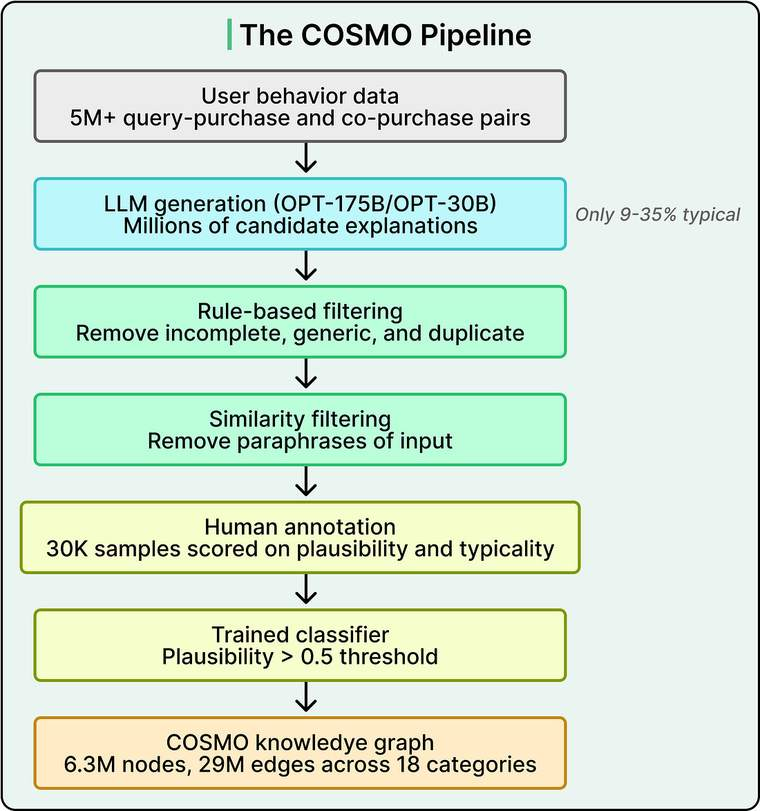
Coarse-grained filtering tackled the most obvious problems first. Rule-based filters removed incomplete sentences by measuring sentence quality with a language model GPT2) and tuning a threshold. Generations that exactly matched the query text, the product type, or the product title (or fell within a small edit distance) were discarded. For generic statements like “used for the same reason” or “used with clothes,” Amazon identified these by combining frequency and entropy, since generic explanations tend to co-occur with many different products rather than specific ones.
粗粒度过滤首先解决了最明显的问题。基于规则的过滤器通过使用语言模型（GPT2）测量句子质量并调整阈值来删除不完整的句子。与查询文本、产品类型或产品标题完全匹配（或位于较小编辑距离内）的代将被丢弃。对于“出于相同原因使用”或“与衣服一起使用”等通用陈述，亚马逊通过结合频率和熵来识别这些陈述，因为通用解释往往与许多不同的产品而不是特定的产品同时出现。
Similarity filtering handled a subtler problem. Some LLM outputs looked different from the input on the surface but were semantically just paraphrases of the
相似性过滤处理了一个更微妙的问题。一些LLM输出表面上看起来与输入不同，但在语义上只是对
original query or product description.
原始查询或产品描述。
Amazon used an in-house language model, pre-trained on e-commerce text including queries and product information, to compute embeddings for the generated knowledge, the query, and the product. When the vector similarity (measured by cosine distance) between the generated knowledge and the original context was too high, the candidate was filtered out. The team found that filtered generations were essentially syntactic transformations of the original input, rearranging the same meaning in slightly different words.
亚马逊使用内部语言模型，对包括查询和产品信息在内的电子商务文本进行预训练，来计算生成的知识、查询和产品的嵌入。当生成的知识与原始上下文之间的向量相似度（通过余弦距离测量）太高时，候选者就会被过滤掉。研究小组发现，过滤生成本质上是原始输入的句法转换，用略有不同的单词重新排列相同的含义。
Human-in-the-loop annotation came next. Amazon sampled 30,000 knowledge candidates for human review, with 15,000 from co-purchase behavior and 15,000 from search-buy behavior spread across 18 categories. Rather than picking candidates uniformly, the team used a weighted formula that combined the frequency of a piece of generated knowledge with the popularity of the associated product or query. Popular products produce common knowledge, so the weighting pushed toward diverse, less obvious knowledge that the classifier would later need to generalize.
接下来是人机交互注释。亚马逊对 30,000 个知识候选样本进行了人工审查，其中 15,000 个来自共同购买行为，15,000 个来自搜索购买行为，分布在 18 个类别。该团队没有统一挑选候选人，而是使用加权公式，将生成知识的频率与相关产品或查询的流行度结合起来。受欢迎的产品会产生共同知识，因此权重会偏向分类器稍后需要概括的多样化、不太明显的知识。
Annotators evaluated each candidate on two dimensions: Plausibility measures whether the posited relationship is reasonable.
注释者从两个维度评估每个候选者： 合理性衡量假定的关系是否合理。
Typicality measures whether the knowledge is representative of genuine shopping behavior.
典型性衡量知识是否代表真实的购物行为。
As a concrete example, the more typical reason people buy Apple Watches is that they are intelligent watches, rather than that they tell the time. Both statements are plausible, but only the first is typical.
举个具体的例子，人们购买Apple Watch更典型的原因是它是智能手表，而不是它能显示时间。这两种说法都有道理，但只有第一种是典型的。
To reduce cognitive burden and disagreement among annotators, Amazon decomposed these assessments into five yes/no questions covering completeness, relevance, informativeness, plausibility, and typicality. Two annotators labeled each question independently, with a third resolving disagreements. A pilot study of 2,000 examples showed this decomposition significantly reduced the disagreement rate, and internal auditing of 5% of all annotations showed over 90% accuracy. Due to data privacy requirements, Amazon employed a professional data annotation vendor company, followed by a strict internal auditing process.
为了减少注释者之间的认知负担和分歧，亚马逊将这些评估分解为五个是/否问题，涵盖完整性、相关性、信息性、合理性和典型性。两名注释者独立标记每个问题，第三名注释者解决分歧。对 2,000 个示例的试点研究表明，这种分解显着降低了分歧率，并且对所有注释中 5% 的内部审计显示出超过 90% 的准确性。由于数据隐私的要求，亚马逊聘请了专业的数据标注供应商公司，并有严格的内部审核流程。
Classifier generalization was the final step. Amazon fine-tuned DeBERTa-large (a high-performing language model for classification tasks) and an in-house language model on the 30,000 annotated samples to predict plausibility and typicality scores for all remaining candidates. Only candidates scoring above a 0.5 plausibility threshold survived.
分类器泛化是最后一步。 Amazon 对 DeBERTa-large（一种用于分类任务的高性能语言模型）和 30,000 个带注释样本的内部语言模型进行了微调，以预测所有剩余候选者的合理性和典型性分数。只有得分高于 0.5 合理阈值的候选人才能生存。
The output of this pipeline is a set of structured knowledge triples. A triple connects two entities through a defined relationship. For example, the triple <co- purchase of camera case and screen protector, capableOf, protecting camera> captures the commonsense reasoning that these two products are bought together because they both serve the purpose of protecting a camera.
该管道的输出是一组结构化知识三元组。三元组通过定义的关系连接两个实体。例如，三元组<共同购买相机保护壳和屏幕保护膜、capableOf、保护相机>体现了这样的常识推理：这两种产品一起购买是因为它们都用于保护相机的目的。
Assembled, these triples form a knowledge graph of 6.3 million nodes and 29 million edges spanning 18 product categories. From 30,000 human judgments to 29 million edges.
这些三元组组装起来形成了一个包含 630 万个节点和 2900 万条边的知识图，涵盖 18 个产品类别。从 30,000 次人类判断到 2900 万条边缘。
LM, the Smaller ModelLM，较小的型号The knowledge graph captures pre-computed commonsense relationships, but Amazonʼs search engine encounters new queries and products constantly.
知识图捕获了预先计算的常识关系，但亚马逊的搜索引擎不断遇到新的查询和产品。
Running the full pipeline OPT175B generation followed by classifier scoring) for every new behavior pair would be prohibitively expensive in production.
为每个新行为对运行完整的 OPT175B 流程生成（然后进行分类器评分）的生产成本将非常昂贵。
Amazonʼs solution was instruction tuning.
亚马逊的解决方案是指令调整。
The team used their 30,000 annotated samples to create instruction data and fine- tuned LLaMA 7B and 13B models. These base models offered the best balance between generation quality and inference cost for production serving, with far fewer parameters than OPT175B while still producing high-quality outputs when trained on domain-specific data. The resulting model, COSMOLM, was trained across 18 product domains, 15 relation types, and 5 distinct tasks.
该团队使用 30,000 个带注释的样本来创建指令数据并微调 LLaMA 7B 和 13B 模型。这些基础模型在生产服务的生成质量和推理成本之间提供了最佳平衡，其参数比 OPT175B 少得多，同时在针对特定领域的数据进行训练时仍能产生高质量的输出。由此产生的模型 COSMOLM 经过 18 个产品领域、15 种关系类型和 5 种不同任务的训练。
Beyond commonsense generation, those tasks included plausibility prediction, typicality prediction, search relevance prediction, and co-purchase prediction.
除了常识生成之外，这些任务还包括合理性预测、典型性预测、搜索相关性预测和共同购买预测。
The multi-task training means COSMOLM can both generate knowledge and evaluate its own output quality, effectively collapsing the “big LLM plus classifier” stack into a single, smaller model.
多任务训练意味着 COSMOLM 既可以生成知识，又可以评估其自身的输出质量，从而有效地将“大 LLM 加分类器”堆栈分解为单个较小的模型。
To make the model robust to different input formats, Amazon varied the templates during training. The same query-product pair might be prefixed with “search
为了使模型能够适应不同的输入格式，亚马逊在训练期间改变了模板。相同的查询-产品对可能会带有“搜索”前缀
query,” “user input,” or “user searched” across different training examples. This prevents COSMOLM from becoming brittle to prompt phrasing.
跨不同训练示例的“查询”、“用户输入”或“用户搜索”。这可以防止 COSMOLM 因提示措辞而变得脆弱。
The result is two complementary artifacts in production. The static knowledge graph 29 million pre-computed edges) handles known product relationships.
结果是生产中出现了两个互补的工件。静态知识图（2900 万条预先计算的边）处理已知的产品关系。
COSMOLM generates fresh commonsense knowledge on the fly for new or unseen query-product pairs, with dramatically lower inference cost than the original OPT175B pipeline. A demo of the system shows COSMOLM generating knowledge for a query like “how to decorate a home,” producing a list of product types (wall art, decorative signage, sticker decal, decorative pillow cover, artificial plant, rug, home mirror, lamp), each accompanied by a commonsense explanation of its role in home decoration.
COSMOLM 可为新的或未见过的查询产品对动态生成新的常识知识，其推理成本比原始 OPT175B 管道低得多。该系统的演示展示了 COSMOLM 为“如何装饰家居”等查询生成知识，生成产品类型列表（墙壁艺术、装饰标牌、贴纸贴花、装饰枕套、人造植物、地毯、家用镜子、台灯），每种类型都附有对其在家居装饰中的作用的常识性解释。
Having a model that generates useful knowledge is one challenge. Serving it at Amazonʼs scale with acceptable latency is another.
拥有一个能够生成有用知识的模型是一项挑战。以亚马逊的规模提供服务并具有可接受的延迟是另一回事。
Amazonʼs deployment architecture centers on two components: A Feature Store transforms COSMOLMʼs raw text outputs into structured features that downstream applications can consume directly. These features include product key-value pairs, semantic subcategory representations, and intent signals.
Amazon 的部署架构以两个组件为中心：功能存储将 COSMOLM 的原始文本输出转换为下游应用程序可以直接使用的结构化功能。这些功能包括产品键值对、语义子类别表示和意图信号。
An Asynchronous Cache Store manages the serving layer through a two-tiered caching strategy.
异步缓存存储通过两层缓存策略管理服务层。
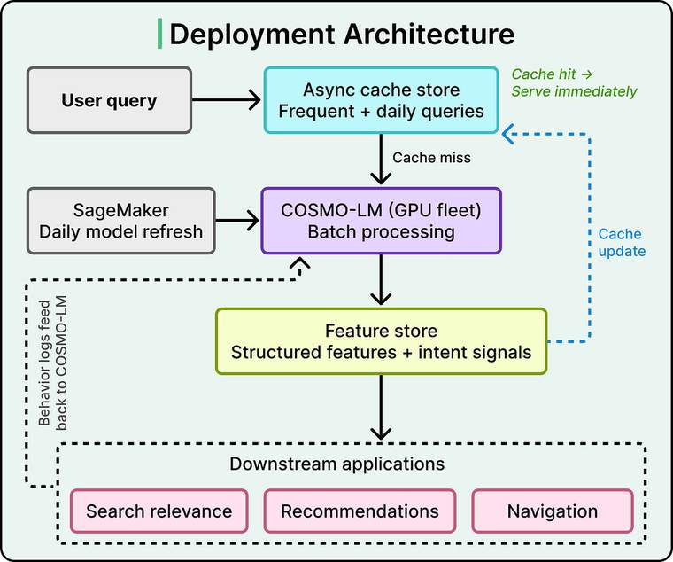
The first tier pre-loads responses for yearly frequent searches, covering the majority of traffic. The second-tier batch processes daily requests for newer or less common queries and updates the cache.
第一层预加载每年频繁搜索的响应，覆盖大部分流量。第二层批处理每天处理更新或不太常见的查询请求并更新缓存。
When a user query arrives, the system checks the cache first. Hits get immediate responses. Misses go to batch processing, and the cache updates for future identical queries.
当用户查询到达时，系统首先检查缓存。点击立即得到回应。未命中将进入批处理，并且缓存会更新以供将来相同的查询使用。
SageMaker manages model deployment and refresh, ingesting customer behavior session logs daily. The structured data from the cache feeds three downstream systems simultaneously, including Search Relevance, Recommendation, and Navigation.
SageMaker 管理模型部署和刷新，每天提取客户行为会话日志。来自缓存的结构化数据同时提供给三个下游系统，包括搜索相关性、推荐和导航。
This architecture meets Amazonʼs strict search latency requirements while keeping storage costs comparable to real-time serving for most traffic. But it comes with a tradeoff. COSMO updates daily, which means it cannot incorporate
该架构满足亚马逊严格的搜索延迟要求，同时保持存储成本与大多数流量的实时服务相当。但它需要权衡。 COSMO 每天都会更新，这意味着它无法合并
real-time events like flash sales that fluctuate within hours. Amazon explicitly acknowledges this limitation and identifies it as an area for future development.
实时事件，例如在数小时内波动的限时抢购。亚马逊明确承认这一限制并将其确定为未来发展的一个领域。
Search relevance saw the most dramatic offline improvements.
搜索相关性的离线改进最为显着。
On the public ESCI dataset from KDD Cup 2022, a cross-encoder (a model architecture that jointly processes query and product features together, rather than encoding them separately) augmented with COSMO triples achieved 73.48% Macro F1 and 90.78% Micro F1 with trainable encoders.
在 KDD Cup 2022 的公共 ESCI 数据集上，使用 COSMO 三元组增强的交叉编码器（一种联合处理查询和产品特征的模型架构，而不是单独编码它们）使用可训练编码器实现了 73.48% Macro F1 和 90.78% Micro F1。
For context, Macro F1 averages performance across all product categories equally (so rare categories matter just as much as common ones), while Micro F1 measures overall accuracy regardless of category. That cross-encoder result surpassed the top-1 ensemble model on the KDD Cup leaderboard. With frozen encoders, where the only difference was whether COSMO triples were included as input, the improvement was 60% on Macro F1.
就上下文而言，Macro F1 对所有产品类别的性能进行平均（因此稀有类别与常见类别一样重要），而 Micro F1 则衡量所有类别的整体准确性。该交叉编码器结果超过了 KDD Cup 排行榜上的前 1 集成模型。对于冻结编码器，唯一的区别是 COSMO 三元组是否作为输入包含在内，在 Macro F1 上的改进为 60%。
On private datasets spanning four markets US, Canada, UK, and India), the COSMO-enhanced model consistently outperformed baselines in every locale, with the strongest gains in the India market, where the gap between query language and product catalog language tends to be larger.
在跨越美国、加拿大、英国和印度四个市场的私有数据集上，COSMO 增强模型在每个区域的表现始终优于基准，其中印度市场的增长最为强劲，该市场的查询语言和产品目录语言之间的差距往往更大。
Session-based recommendation benefited from COSMO knowledge as well.
基于会话的推荐也受益于 COSMO 知识。
Amazon built COSMOGNN, extending a graph neural network model (a model that learns relationships between items by treating shopping sessions as connected graphs) for session-based recommendations with COSMO-generated intent knowledge. It outperformed all competitive baselines on Hits@10 and NDCG10 in both clothing and electronics categories.
Amazon 构建了 COSMOGNN，扩展了图神经网络模型（一种通过将购物会话视为连接图来学习商品之间关系的模型），以使用 COSMO 生成的意图知识进行基于会话的推荐。它在服装和电子产品类别中的 Hits@10 和 NDCG10 上均优于所有竞争基准。
The improvement was larger for electronics 5.82% vs. 4.05% on Hits@10, where users revise their search queries more frequently 2.47 unique queries per session versus 1.36 for clothing). This pattern makes sense. When users are actively reformulating queries to narrow down what they want, commonsense knowledge about why they are searching becomes especially valuable.
电子产品的改进更大，为 5.82%，而 Hits@10 为 4.05%，用户更频繁地修改搜索查询（每个会话有 2.47 个唯一查询，而服装为 1.36 个）。这种模式是有道理的。当用户主动重新制定查询以缩小他们想要的范围时，关于他们搜索原因的常识性知识就变得特别有价值。
Search navigation is where COSMO reached production and generated real business impact. COSMO powers a multi-turn navigation system that organizes intent hierarchically. A search for “camping” branches into fine-grained intents like
搜索导航是 COSMO 实现生产并产生实际业务影响的地方。 COSMO 为多转弯导航系统提供支持，该系统可以分层组织意图。对“露营”的搜索分为细粒度的意图，例如
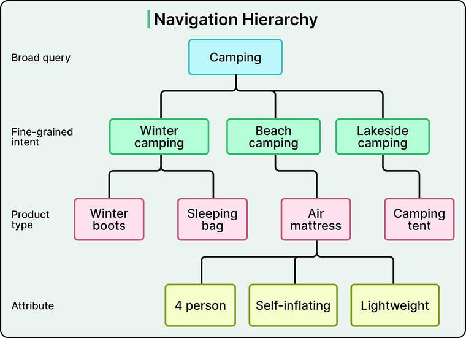
“winter camping,” “beach camping,” or “lakeside camping.” These connect to product types like “air mattress” or “winter boots,” which are then further refined by attributes like “4 person.” This hierarchical organization of knowledge allows the system to mirror a natural discovery process, helping customers progressively narrow their search through multiple rounds of refinement rather than requiring them to formulate the perfect query upfront.
“冬季露营”、“海滩露营”或“湖边露营”。这些与“气垫”或“冬靴”等产品类型相关，然后通过“4 人”等属性进一步细化。这种知识的分层组织使系统能够反映自然的发现过程，帮助客户通过多轮细化逐步缩小搜索范围，而不是要求他们预先制定完美的查询。
Amazon ran A/B tests over several months, targeting approximately 10% of U.S. traffic. The results were significant. A 0.7% relative increase in product sales within the test segment translated to hundreds of millions of dollars in additional annual revenue.
亚马逊进行了几个月的 A/B 测试，目标是大约 10% 的美国流量。结果非常显着。测试部分产品销售额相对增长 0.7%，每年带来数亿美元的额外收入。
An 8% increase in navigation engagement was observed in the same segment.
在同一细分市场中，导航参与度增加了 8%。
These outcomes came from a single, relatively small feature on the search page with limited visibility. Amazon has projected that extending COSMOLM across all traffic for navigation alone could produce revenue gains in the billions.
这些结果来自搜索页面上一个相对较小的功能，可见性有限。亚马逊预计，仅将 COSMOLM 扩展到所有导航流量就可以带来数十亿美元的收入增长。
Conclusion COSMO is Amazonʼs first production system that uses instruction-tuned large language models to construct a knowledge graph and serve it to online applications. It marks a shift from factual product knowledge graphs toward intent-based commonsense knowledge graphs.
结论 COSMO 是亚马逊的第一个生产系统，它使用指令调整的大型语言模型来构建知识图并将其提供给在线应用程序。它标志着从事实产品知识图向基于意图的常识知识图的转变。
The most important number from this entire project may be the leverage ratio.
整个项目中最重要的数字可能是杠杆率。
Thirty thousand human annotations became 29 million knowledge graph edges across 18 product categories. That ratio was possible because Amazon invested heavily in sampling strategy, annotation design, classifier training, and instruction tuning rather than in brute-force labeling.
3 万条人工注释变成了 18 个产品类别的 2900 万条知识图边缘。这个比率是可能的，因为亚马逊在采样策略、注释设计、分类器训练和指令调整方面投入了大量资金，而不是在强力标记方面投入了大量资金。
The systemʼs acknowledged limitations are worth keeping in mind as well.
该系统公认的局限性也值得牢记。
COSMOʼs daily refresh cycle means it cannot keep up with real-time dynamics. Its aggressive filtering (only candidates above 0.5 plausibility survive) means the knowledge graph has gaps in coverage, especially for long-tail products and unusual queries. These are genuine tradeoffs, and Amazon chose precision over recall because unreliable commonsense knowledge in production would be worse than missing knowledge.
COSMO 的每日刷新周期意味着它无法跟上实时动态。其激进的过滤（只有可信度高于 0.5 的候选者才能生存）意味着知识图谱在覆盖范围上存在差距，特别是对于长尾产品和异常查询。这些都是真正的权衡，亚马逊选择了精确度而不是召回率，因为生产中不可靠的常识性知识比知识缺失更糟糕。
Powering Multimodal Intelligence for Video Search
for Video SearchSource note: this study note is a paraphrased bilingual version based on the Netflix TechBlog article by Meenakshi Jindal and Munya Marazanye, published on April 4, 2026. It is designed for architecture review and interview preparation rather than a verbatim copy of the original post.
来源说明：这份学习笔记基于 Meenakshi Jindal 和 Munya Marazanye 于 2026 年 4 月 4 日发布在 Netflix TechBlog 的文章进行双语改写。它用于架构复盘和面试准备，不是原文逐字转载。
Netflix frames the problem around creative production, where teams may need to search through hundreds or thousands of hours of raw footage. The hard part is not only storing video metadata, but helping editors quickly find moments such as a character in a specific location, a line of dialogue, or a visually similar scene.
Netflix 将问题放在影视创作流程里理解：创作团队可能需要在数百甚至数千小时的原始素材中寻找片段。难点不只是存储视频元数据，而是让剪辑和制作人员快速找到某个角色出现在特定场景、某句台词、或者视觉上相似的镜头。
The core architectural idea is to combine signals from many specialized models instead of relying on one universal model. Character recognition, scene understanding, dialogue transcription, object labels, and embedding vectors all produce different kinds of annotations, so the system needs a common timeline where these heterogeneous outputs can meet.
核心架构思想不是依赖一个万能模型，而是组合多个专门模型的信号。角色识别、场景理解、对白转写、物体标签和向量 embedding 都会产生不同形态的标注，因此系统需要一条统一时间线，把这些异构输出对齐起来。
The first stage is transactional persistence. Raw model annotations are written through high-availability ingestion pipelines into an annotation service backed by Cassandra. This layer optimizes for durable writes and data integrity, because losing model output would make later search results incomplete or inconsistent.
第一阶段是事务性持久化。模型产生的原始标注通过高可用摄取管道写入由 Cassandra 支撑的 annotation service。这个层面优先保证写入吞吐、可靠性和数据完整性，因为一旦模型输出丢失，后续搜索结果就会不完整或不一致。
After raw annotations are safely stored, Kafka events trigger an offline fusion job. This separation is important: expensive temporal joins and model-output intersections do not block ingestion. In production terms, the pipeline keeps write availability high while moving heavy reasoning work into asynchronous processing.
原始标注安全落库之后，Kafka 事件触发离线融合任务。这个解耦非常关键：昂贵的时间区间 join 和多模型结果交集计算不会阻塞摄取链路。从生产系统角度看，它既保证写入链路可用，又把重计算放到异步流程里完成。
The fusion job normalizes model outputs into fixed one-second temporal buckets. For example, if a character annotation covers seconds 2 through 8 and a scene annotation covers seconds 4 through 9, their overlap can be represented at bucket-level granularity. This turns continuous video time into indexable discrete records.
融合任务会把模型输出规范化到固定的一秒时间桶。例如角色标注覆盖第 2 到第 8 秒，场景标注覆盖第 4 到第 9 秒，那么它们的重叠可以用秒级 bucket 表示。这样就把连续的视频时间转成了可以索引和查询的离散记录。
This bucket design is the practical bridge between multimodal ML output and search infrastructure. A single enriched bucket may contain character, scene, object, transcript, confidence, and vector information. The bucket becomes a compact unit of retrieval: one second of video with all aligned evidence attached.
这个 bucket 设计是多模态 ML 输出和搜索基础设施之间的桥。一个增强后的 bucket 可能包含角色、场景、物体、字幕、置信度和向量信息。bucket 变成一个紧凑的检索单元：一秒视频，以及这一秒上所有对齐后的证据。
The third stage indexes enriched buckets into Elasticsearch. Netflix uses a composite identity such as asset plus time bucket so updates can be applied as upserts. If another model later enriches the same second, the document is updated rather than duplicated, preserving a single source of truth for that moment.
第三阶段把增强后的 bucket 写入 Elasticsearch。Netflix 使用类似 asset 加 time bucket 的复合身份来做 upsert。如果后续另一个模型补充了同一秒的视频信息，系统会更新已有文档，而不是生成重复记录，从而为这个时刻保留单一事实源。
For querying, the service first interprets user intent. It detects the query type, extracts filters such as characters or environments, and transforms text into embeddings when semantic search is needed. The final Elasticsearch query can combine structured filters with vector similarity, which is why the system can support both precise and fuzzy creative searches.
查询阶段，服务会先理解用户意图：判断查询类型，抽取角色、环境等过滤条件，并在需要语义搜索时把文本转成 embedding。最终的 Elasticsearch 查询可以同时组合结构化过滤和向量相似度，所以系统既能支持精确检索，也能支持更模糊的创意搜索。
Ranking is not just nearest-neighbor math. The system must avoid overwhelming users with thousands of redundant shots from the same continuous scene. It therefore needs thresholding, grouping, clustering, and result curation so the returned clips are diverse, representative, and useful to a human editor.
排序不是简单的 nearest-neighbor 数学问题。系统必须避免把同一连续场景中的大量重复镜头都返回给用户。因此它需要阈值过滤、分组、聚类和结果整理，让返回片段既有代表性，又对真人编辑真正有用。
A subtle but important design point is reconstructing time ranges after search. Internally, the index works with buckets, but the user cares about meaningful clip boundaries. Depending on intent, the service may return the union of related annotations for broader context or the intersection when the user asks for co-occurrence.
一个细节但很重要的设计点是搜索后重建时间范围。内部索引用 bucket 工作，但用户关心的是有意义的视频片段边界。根据查询意图，服务可能返回相关标注的 union 来提供更完整上下文，也可能返回 intersection 来定位多个条件同时发生的时间段。
From a system-design interview perspective, the lesson is clear: do not push every ML signal directly into online query logic. Persist raw outputs, fuse them asynchronously, build a search-friendly serving index, and keep the online path focused on planning, retrieval, ranking, and response shaping.
从系统设计面试角度看，这篇文章的经验很清晰：不要把所有 ML 信号都直接塞进在线查询逻辑。应该先持久化原始输出，异步融合，再构建面向搜索的 serving index，让在线路径专注于查询规划、召回、排序和结果组织。
The same pattern generalizes beyond Netflix. In e-commerce, ads, trust and safety, medical imaging, or robotics logs, teams often need to align text, images, audio, model labels, confidence scores, and embeddings over a shared entity or timeline. The architecture is a reusable blueprint for turning multimodal model output into queryable product intelligence.
这个模式不只适用于 Netflix。在电商、广告、风控、医学影像或机器人日志中，团队也经常需要围绕共同实体或时间线对齐文本、图像、音频、模型标签、置信度和 embedding。这套架构是把多模态模型输出转成可查询产品智能的通用蓝图。
Future directions in the article include more natural-language discovery, adaptive ranking based on user behavior, and domain-specific personalization. In other words, the platform can evolve from a search engine into a creative partner that learns which results different production workflows actually value.
文章提到的未来方向包括更自然语言化的发现方式、基于用户行为的自适应排序，以及面向不同领域的个性化检索。换句话说，这个平台可以从搜索引擎演进成创意伙伴，逐渐学习不同制作流程真正重视什么结果。
Original source: https://netflixtechblog.com/powering-multimodal-intelligence-for-video-search-3e0020cf1202
原文链接：https://netflixtechblog.com/powering-multimodal-intelligence-for-video-search-3e0020cf1202
Engineering Articles / Search & Ranking (2)
Items from all root sources are merged here by topic.
How Instacart Built a Search for Billions of Products
How Instacart Built a Search for Billions of ProductsMost teams pick a search provider by running a few test queries and hoping for the best – a recipe for hallucinations and unpredictable failures. This technical guide from You.com gives you access to an exact framework to evaluate AI search and retrieval.
大多数团队通过运行一些测试查询来选择搜索提供商，并希望得到最好的结果——这会导致幻觉和不可预测的失败。 You.com 的这份技术指南为您提供了评估人工智能搜索和检索的准确框架。
What youʼll get: A four-phase framework for evaluating AI search How to build a golden set of queries that predicts real-world performance Metrics and code for measuring accuracy Go from “looks good” to proven quality.
您将得到什么： 用于评估人工智能搜索的四阶段框架 如何构建一组黄金查询来预测现实世界的性能 用于测量准确性的指标和代码 从“看起来不错”到经过验证的质量。
Learn how to run an eval In 2021, the Instacart search team faced a problem they could trace to their usersʼ typing habits. One group of shoppers searched for items like “pesto pasta sauce 8oz” and expected the exact product to appear. Another group searched for things like “healthy foods” and expected the system to understand what they meant. These are genuinely different problems. The first asks for precise keyword matching. The second asks the system to grasp intent from vague language.
了解如何运行评估 2021 年，Instacart 搜索团队面临一个问题，他们可以追溯到用户的打字习惯。一组购物者搜索“pesto 意大利面酱 8 盎司”等商品，并期望出现确切的产品。另一组搜索“健康食品”等内容，并希望系统能够理解它们的含义。这些是真正不同的问题。第一个要求精确的关键词匹配。第二个要求系统从模糊的语言中掌握意图。
Solving both required two different retrieval systems running in parallel. One handled keyword search. The other handled semantic search, where meaning rather than exact words drives the result. The setup worked, and for a while it worked well. But maintaining two systems in sync, blending their results into a single ranked list, and keeping both fast enough for millions of daily queries became a tax that grew heavier each quarter.
解决这两个问题需要并行运行两个不同的检索系统。其中一个处理关键字搜索。另一个处理语义搜索，其中含义而不是确切的单词驱动结果。这个设置很有效，并且在一段时间内运行良好。但是，保持两个系统同步，将它们的结果混合到一个排名列表中，并保持两个系统足够快以应对数百万次日常查询，这成为了每个季度都在加重的负担。
In this article, we will learn how Instacartʼs search infrastructure evolved over the years and the challenges its engineering team faced.
在本文中，我们将了解 Instacart 的搜索基础设施多年来如何发展以及其工程团队面临的挑战。
Disclaimer: This post is based on publicly shared details from the Instacart Engineering Team. Please comment if you notice any inaccuracies.
免责声明：本文基于 Instacart 工程团队公开共享的详细信息。如果您发现任何不准确之处，请发表评论。
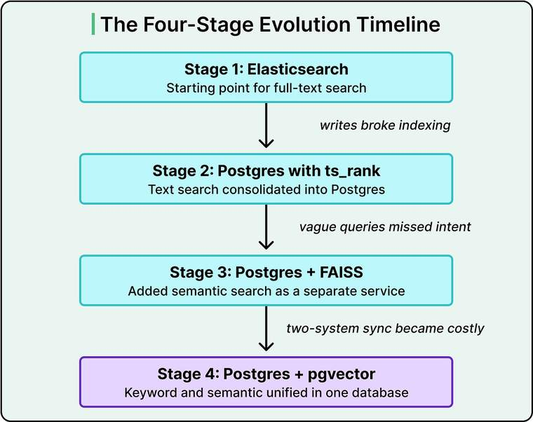
The Shape of Search at InstacartBefore looking at the technical choices, it helps to understand the workload Instacartʼs search has to serve. A catalog with billions of items stretches across thousands of retailers. The system handles millions of search requests every day, with query volume swinging widely from hour to hour.
在考虑技术选择之前，了解 Instacart 搜索必须服务的工作量会有所帮助。包含数十亿商品的目录涵盖数千家零售商。该系统每天处理数百万个搜索请求，查询量每小时波动很大。
What makes their problem genuinely unusual is the write side. Grocery items are fast-moving goods. Prices shift multiple times a day. Inventory availability changes as shelves empty and restock. Discounts come and go. As a result, the search database receives billions of writes per day. Those writes include catalog changes, pricing updates, availability data, ancillary tables for ranking and display, personalization signals, and replacement product data.
让他们的问题真正不同寻常的是写入方面。杂货是快速流通的商品。价格每天会变化多次。库存可用性随着货架清空和补货而变化。折扣来来去去。结果，搜索数据库每天接收数十亿次写入。这些写入包括目录更改、定价更新、可用性数据、用于排名和显示的辅助表、个性化信号和替换产品数据。
This combination is crucial. In most search problems, you index once, maybe refresh occasionally, and queries run against a mostly stable dataset. Instacartʼs situation inverts this. Their data changes constantly, and every change has to show up in search results within seconds.
这种组合至关重要。在大多数搜索问题中，您索引一次，可能偶尔刷新，并且查询针对基本稳定的数据集运行。 Instacart 的情况正好相反。他们的数据不断变化，每次变化都必须在几秒钟内显示在搜索结果中。
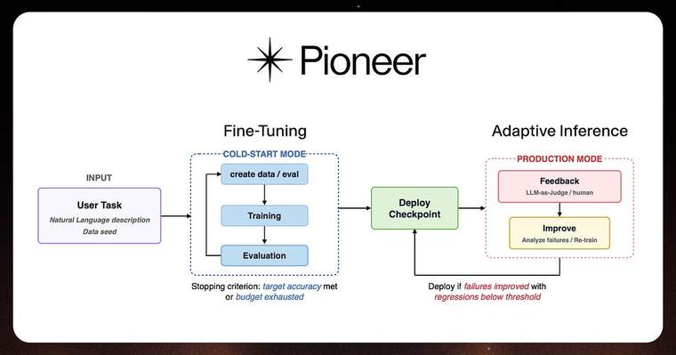
Two terms that we should know are precision and recall. Precision is the percentage of retrieved results that are actually relevant. Recall is the percentage of all relevant documents that the system manages to retrieve. A system with high precision returns mostly good results. A system with high recall catches most of the good results that exist. Tuning these tradeoffs is the core game of search, and the architecture determines how much control you have over each.
我们应该知道的两个术语是精确度和召回率。精度是实际相关的检索结果的百分比。召回率是系统设法检索到的所有相关文档的百分比。高精度的系统通常会返回良好的结果。具有高召回率的系统可以捕获大部分现有的良好结果。调整这些权衡是搜索的核心游戏，架构决定了您对每个权衡的控制程度。
and Inference with Pioneer(Sponsored)
（赞助）
Fine-tuning open-source models manually is a slow, tedious task.
手动微调开源模型是一项缓慢而乏味的任务。
Pioneer is a fine-tuning agent that automates the entire process, allowing users to generate synthetic training data, perform LoRA and full fine-tuning runs, run custom evals, and deploy models to production through a chat interface or API.
Pioneer 是一个微调代理，可以自动化整个过程，允许用户生成合成训练数据、执行 LoRA 和全面微调运行、运行自定义评估以及通过聊天界面或 API 将模型部署到生产环境。
Once deployed, Pioneer autonomously diagnoses failures and retrains on live data in a continuous loop called adaptive inference.
部署后，Pioneer 会在称为自适应推理的连续循环中自动诊断故障并重新训练实时数据。
Fastino Labs recently released a technical report evaluating Pioneerʼs adaptive inference across eight benchmarks, achieving improvements of up to 83.8 percentage points over base models, with each run completing in 812 hours at $1255.
Fastino Labs 最近发布了一份技术报告，评估了 Pioneer 在八个基准测试中的自适应推理，与基本模型相比，实现了高达 83.8 个百分点的改进，每次运行在 812 小时内完成，价格为 1255 美元。
Start fine-tuning for free
开始免费微调
Instacartʼs original search was built on Elasticsearch, which was the industry- standard choice for full-text search at the time, and still is today. On paper, the fit looked ideal. Elasticsearch is purpose-built for keyword search at scale, uses a well-understood ranking algorithm called BM25, and has a mature ecosystem of tooling around it.
Instacart 最初的搜索是基于 Elasticsearch 构建的，Elasticsearch 是当时全文搜索的行业标准选择，至今仍然如此。从纸面上看，合身度看起来很理想。 Elasticsearch 专为大规模关键字搜索而构建，使用一种易于理解的排名算法（称为 BM25），并拥有一个成熟的工具生态系统。
The fit broke down because of how Elasticsearch wants data structured.
由于 Elasticsearch 对数据结构的要求，这种契合度破裂了。
Elasticsearch prefers denormalized documents, meaning one record per item that bundles together every relevant field. When a user searches, Elasticsearch can return complete documents quickly because everything is already in one place.
Elasticsearch 更喜欢非规范化文档，这意味着每个项目一条记录将每个相关字段捆绑在一起。当用户搜索时，Elasticsearch 可以快速返回完整的文档，因为所有内容都已经在一处。
The catch is that when any single field changes, the entire document has to be rewritten and re-indexed.
问题是，当任何单个字段发生更改时，整个文档都必须重写并重新索引。
For Instacart, this was catastrophic. A price change on a single product triggers a full document rewrite. Multiply that by billions of daily writes, and the indexing load becomes crushing. The system struggled so badly that fixing erroneous data could take days. Layering sophisticated ML features on top only made things worse, since those features also had to be indexed, further degrading read performance.
对于 Instacart 来说，这是灾难性的。单个产品的价格变化会触发完整的文档重写。将其乘以数十亿次每日写入，索引负载就会变得不堪重负。该系统运行非常困难，修复错误数据可能需要数天时间。在顶部分层复杂的机器学习功能只会让事情变得更糟，因为这些功能还必须建立索引，从而进一步降低读取性能。
The teamʼs response was unusual. Instead of moving to a more specialized search tool, they moved the search into Postgres. This was counterintuitive, since Postgres is a general-purpose relational database, meaning it organizes data into tables with structured columns and relationships between them. The rationale was practical. Their catalog data already lived in Postgres, the team already had deep operational experience running it at scale, and Postgres supports full-text search through GIN indexes (a type of index optimized for searching inside composite values) and a ranking function called ts_rank.
该团队的反应不同寻常。他们没有转向更专业的搜索工具，而是将搜索转移到 Postgres 中。这是违反直觉的，因为 Postgres 是一个通用关系数据库，这意味着它将数据组织到具有结构化列和它们之间的关系的表中。理由很实际。他们的目录数据已经存在于 Postgres 中，该团队已经拥有大规模运行它的丰富操作经验，并且 Postgres 支持通过 GIN 索引（一种针对复合值搜索而优化的索引）和名为 ts_rank 的排名函数进行全文搜索。
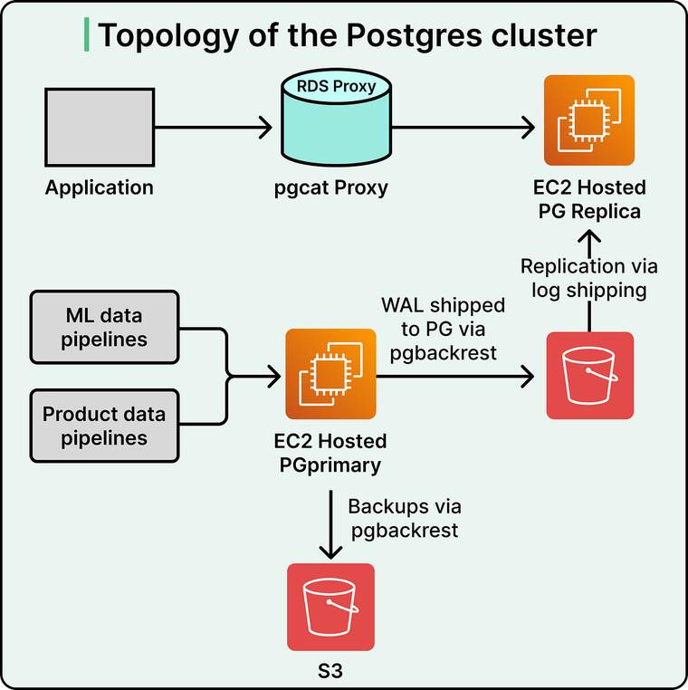
The payoff was significant. A normalized data model, where prices, availability, and ML features live in separate joined tables instead of being stuffed into a single document, reduced their write workload by a factor of ten. Only the price table gets touched by a price change, leaving the rest of the system alone. They also gained the ability to store hundreds of gigabytes of ML features alongside documents, which unlocked more sophisticated retrieval models.
回报是巨大的。标准化数据模型（其中价格、可用性和 ML 功能位于单独的联接表中，而不是填充到单个文档中）将写入工作量减少了十倍。只有价格表会受到价格变化的影响，而系统的其余部分则不受影响。他们还能够将数百 GB 的 ML 特征与文档一起存储，从而解锁更复杂的检索模型。
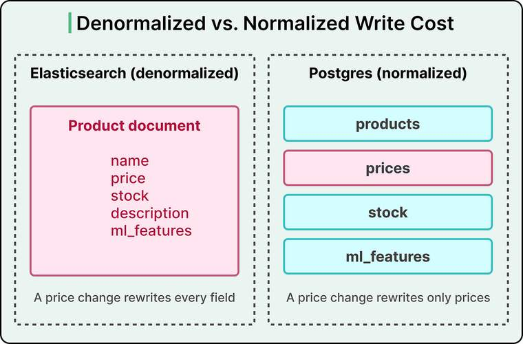
The lesson here is easy to miss. Elasticsearch is an excellent tool. For read-heavy, append-only workloads like log analytics, it remains the right choice. The problem was the mismatch between Elasticsearchʼs data model assumptions and Instacartʼs write patterns.
这里的教训很容易被忽视。 Elasticsearch 是一个出色的工具。对于日志分析等读取繁重、仅附加的工作负载，它仍然是正确的选择。问题在于 Elasticsearch 的数据模型假设与 Instacart 的写入模式之间不匹配。
Consolidating text search onto Postgres solved the indexing problem, but it left a different gap. A search for “pesto pasta sauce 8oz” is a straightforward matching exercise. The words are specific, the match criteria are clear, and the keyword search handles it beautifully. Ambiguous queries are where keyword search hits its ceiling. When someone searches for “healthy foods,” the query words and the product titles barely overlap. You want results that match the meaning of the query, since exact word matching falls short here.
将文本搜索整合到 Postgres 上解决了索引问题，但也留下了不同的空白。搜索“pesto Pasta Sauce 8oz”是一个简单的匹配练习。词语具体，匹配标准明确，关键词搜索处理得很好。模糊查询是关键字搜索达到上限的地方。当有人搜索“健康食品”时，查询词和产品标题几乎没有重叠。您希望结果与查询的含义相匹配，因为精确的单词匹配在这里不够。
This is where semantic search enters the picture. The idea is to convert text into vectors, which are simply lists of numbers (typically a few hundred long), so that texts with similar meanings end up with similar vectors. Once you have vectors for every product and for the query, finding relevant results becomes a geometry problem. You look for vectors near the query vector in this numerical space. This lookup is called approximate nearest neighbor search, or ANN. Clever index
这就是语义搜索发挥作用的地方。这个想法是将文本转换为向量，向量只是数字列表（通常有几百个长），因此具有相似含义的文本最终会得到相似的向量。一旦你有了每个产品和查询的向量，找到相关结果就变成了一个几何问题。您在此数字空间中查找查询向量附近的向量。这种查找称为近似最近邻搜索，或 ANN。聪明指数
structures let ANN find close matches quickly, rather than comparing every single vector in the database against the query.
结构让 ANN 能够快速找到接近的匹配，而不是将数据库中的每个向量与查询进行比较。
In 2021, Instacart added semantic search to its stack. Since Postgres at the time had yet to gain native ANN support, they built a standalone service using FAISS, a vector search library from Meta. For every incoming query, the system made parallel calls. One call went to Postgres for keyword retrieval. The other went to the FAISS service for semantic retrieval. The application layer merged the two result sets using a weighted ranking step, then passed the top candidates onward to downstream ranking stages that score and order results before they reach the user.
2021 年，Instacart 在其堆栈中添加了语义搜索。由于 Postgres 当时尚未获得原生 ANN 支持，因此他们使用 FAISS（Meta 的矢量搜索库）构建了独立服务。对于每个传入的查询，系统都会进行并行调用。一次调用 Postgres 进行关键字检索。另一个则前往 FAISS 服务进行语义检索。应用程序层使用加权排名步骤合并两个结果集，然后将顶级候选者传递到下游排名阶段，在结果到达用户之前对结果进行评分和排序。
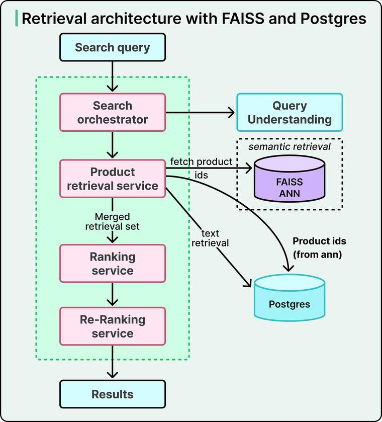
The architecture worked, and search quality improved significantly. Still, three real problems emerged: First, FAISS had limited support for filtering by document attributes at retrieval time, so the system had to overfetch documents and filter them afterward.
该架构有效，搜索质量显着提高。尽管如此，还是出现了三个实际问题：首先，FAISS 对检索时按文档属性进行过滤的支持有限，因此系统必须过度获取文档并随后进行过滤。
This meant some genuinely relevant items got dropped before they reached ranking.
这意味着一些真正相关的项目在达到排名之前就被删除了。
Second, maintaining two separate services created developmental and operational overhead, along with subtle data inconsistencies from keeping
其次，维护两个独立的服务会产生开发和运营开销，并且会导致微妙的数据不一致。
them in sync.
他们同步。
Third, the split architecture constrained how intelligently the team could combine signals from the two retrievers.
第三，分离式架构限制了团队组合来自两个检索器的信号的智能程度。
The 2021 choice was correct for its moment. Postgres-based vector search was still immature then, and FAISS was the right tool for the circumstances.
2021 年的选择在当时是正确的。当时基于 Postgres 的矢量搜索还不成熟，而 FAISS 是适合这种情况的工具。
Architectures expire, though, and this one was reaching its shelf life.
然而，架构会过期，而这个架构即将达到其保质期。
All Back Together with pgvectorAs the tradeoffs of the split architecture became more visible, the team started looking for a unified alternative. Two broad paths were available: The first kept specialized datastores for vectors and text, combining results in the application layer. This is the path most new companies take, since managed vector databases like Pinecone are easy to adopt.
随着分离架构的权衡变得更加明显，团队开始寻找统一的替代方案。有两条主要路径可供选择：第一个路径保留矢量和文本的专用数据存储，并在应用程序层中组合结果。这是大多数新公司所采取的路径，因为像 Pinecone 这样的托管矢量数据库很容易采用。
The second used semantic search support inside an existing text search datastore. For Postgres, this meant pgvector, an extension that teaches Postgres to store and search over vectors.
第二个在现有文本搜索数据存储中使用语义搜索支持。对于 Postgres 来说，这意味着 pgvector，这是一个教 Postgres 存储和搜索向量的扩展。
Instacart chose the second path, following the same reasoning as before. Text search already lived in Postgres, the team already operated Postgres at scale, and pgvector had matured enough for serious production workloads. Co-locating vectors with relational data unlocked something new. The system could use real- time inventory as a filter applied before the semantic search ran, rather than after.
Instacart 选择了第二条路，其推理与之前相同。文本搜索已经存在于 Postgres 中，团队已经大规模运营 Postgres，并且 pgvector 已经足够成熟，可以满足繁重的生产工作负载。将向量与关系数据共置可以解锁一些新东西。系统可以使用实时库存作为在语义搜索运行之前而不是之后应用的过滤器。
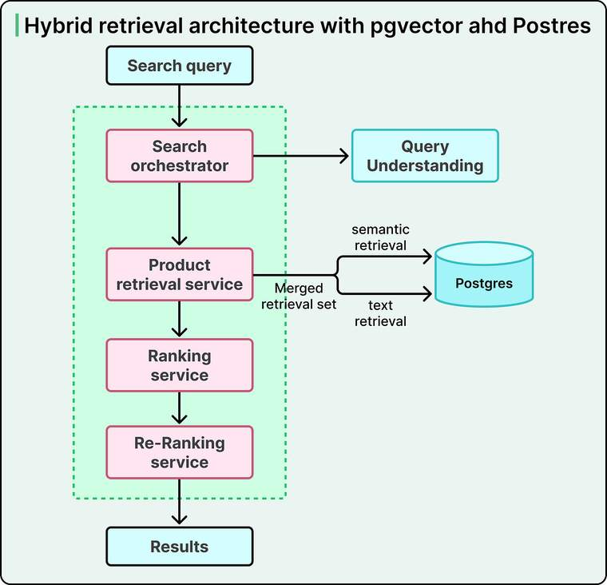
Before committing, the team built a lab-scale prototype cluster that mimicked production traffic. The prototype confirmed that pgvector could meet their throughput and latency requirements, with better recall than FAISS and only marginally slower speeds on the largest retailers. One honest finding deserves mention. The team tested whether tuning index parameters per retailer catalog size would help and found it offered little benefit. Sometimes the clever optimization simply falls flat.
在做出承诺之前，该团队构建了一个模拟生产流量的实验室规模原型集群。原型证实 pgvector 可以满足他们的吞吐量和延迟要求，比 FAISS 具有更好的召回率，并且在最大的零售商上的速度仅稍慢一些。一个诚实的发现值得一提。该团队测试了根据零售商目录大小调整索引参数是否有帮助，结果发现它几乎没有什么好处。有时，巧妙的优化最终会失败。
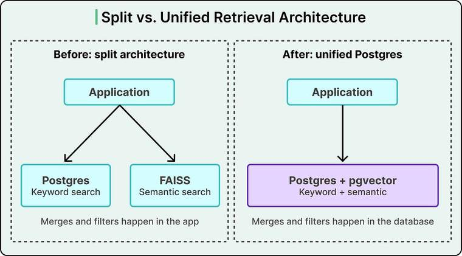
A small simplification came out of the migration as well. In the FAISS era, Instacart maintained a separate vector index for every retailer, adding up to hundreds of indexes to operate. With pgvector, they built hybrid indexes grouped by retailer characteristics, dramatically reducing the operational surface area.
迁移也带来了一些小小的简化。在 FAISS 时代，Instacart 为每个零售商维护了单独的向量索引，总共有数百个索引可供操作。通过 pgvector，他们构建了按零售商特征分组的混合索引，从而大大减少了操作表面积。
The production results were what mattered. An A/B test against real traffic showed a 6 percent drop in searches that returned zero results, driven by improved recall.
生产结果才是最重要的。针对实际流量的 A/B 测试显示，由于召回率提高，返回零结果的搜索量下降了 6%。
That single number is the entire business case for the migration. Every zero-result search is a customer who bounced, gave up, or switched apps. Recovering 6 percent of those interactions translated directly into incremental revenue.
这个数字就是迁移的整个业务案例。每一次零结果搜索都是一位退回、放弃或更换应用程序的客户。恢复 6% 的互动直接转化为增量收入。
The deeper unlock was attribute filtering. With availability data living in the same database as the vectors, Postgres could filter for in-stock items before the ANN search ran, rather than fetching extras and discarding sold-out items afterward.
更深层次的解锁是属性过滤。由于可用性数据与向量位于同一数据库中，Postgres 可以在 ANN 搜索运行之前过滤库存商品，而不是在之后获取额外的商品并丢弃已售完的商品。
The split architecture made this kind of pre-filter practically impossible.
分体式架构使得这种预过滤器几乎不可能实现。
Consolidation made it simple.
整合让一切变得简单。
Bring the Compute to the Data The consolidated Postgres architecture made search roughly twice as fast. This speedup deserves attention because of where it came from. The cause was simpler than a new algorithm or faster hardware. Algorithms stayed the same.
将计算引入数据 整合的 Postgres 架构使搜索速度大约提高了一倍。这种加速值得关注，因为它来自何处。原因比新算法或更快的硬件更简单。算法保持不变。
Hardware stayed the same. What changed was the location of the work.
硬件保持不变。改变的是工作地点。
Here is what the old architecture did on every search request. The application layer made a network call to Elasticsearch for text results. It made separate network calls to other services, including the item availability data service, to gather the rest of the context. It joined the data in memory, applied filters, and assembled the final result set. Every request paid the cost of multiple round-trip, overfetching, and application-layer joining.
以下是旧架构对每个搜索请求所做的操作。应用层对 Elasticsearch 进行网络调用以获取文本结果。它对其他服务（包括物品可用性数据服务）进行单独的网络调用，以收集其余的上下文。它连接内存中的数据，应用过滤器，并组装最终结果集。每个请求都付出了多次往返、过度获取和应用层加入的成本。
The new architecture pushed all of that work into Postgres. Availability data, ML features, ranking tables, and search indexes now live together in one database. A single query could retrieve search matches, join them against availability and other attributes, and filter the result set before sending anything back to the application.
新的架构将所有这些工作都推到了 Postgres 中。可用性数据、机器学习功能、排名表和搜索索引现在一起存储在一个数据库中。单个查询可以检索搜索匹配项，根据可用性和其他属性将它们连接起来，并在将任何内容发送回应用程序之前过滤结果集。
The flow needed a single round trip, with zero overfetching and zero in-memory joining.
该流程需要单次往返，零超取和零内存连接。
Why does this matter' Every network hop adds latency. Every application-layer join forces to fetch extra data you will throw away. Moving the computation into the same place as the data eliminates both costs. This is the principle. Bring the compute to the data, and whenever feasible, avoid the reverse.
为什么这很重要？每个网络跃点都会增加延迟。每个应用程序层都会联合起来获取您将丢弃的额外数据。将计算移到与数据相同的位置可以消除这两种成本。这是原则。将计算引入数据，并在可行的情况下避免相反的情况。
The industry-wide trend over the past decade has actually gone the other direction. Systems like Snowflake and BigQuery deliberately separate compute from storage so they can scale each independently. For elastic, bursty analytical workloads, that design makes sense. For latency-sensitive operational workloads like search, the reverse design wins.
过去十年全行业的趋势实际上已经走向了另一个方向。 Snowflake 和 BigQuery 等系统有意将计算与存储分开，以便它们可以独立扩展。对于弹性、突发性分析工作负载，这种设计是有意义的。对于搜索等对延迟敏感的操作工作负载，逆向设计胜出。
The Limits of This ApproachThe Instacart approach is powerful, and it also has real limits.
Instacart 的方法很强大，但也有真正的局限性。
The tool pgvector handles workloads well up to roughly 50 to 100 million vectors per index. Beyond that, purpose-built vector databases scale more gracefully.
工具 pgvector 可以很好地处理每个索引大约 50 到 1 亿个向量的工作负载。除此之外，专门构建的矢量数据库可以更优雅地扩展。
Instacart stays within this ceiling by structuring indexes per retailer, keeping individual index sizes manageable even as the total catalog runs into the billions.
Instacart 通过为每个零售商构建索引来保持在这个上限之内，即使总目录达到数十亿，也能保持单个索引大小的可控性。
Workload fit is the other big caveat. Their approach made sense because their data already lived in Postgres, because their team had deep Postgres operational expertise, and because their write workload suited a normalized relational model.
工作负载的适应性是另一个重要的警告。他们的方法很有意义，因为他们的数据已经存在于 Postgres 中，因为他们的团队拥有深厚的 Postgres 操作专业知识，并且因为他们的写入工作负载适合规范化的关系模型。
A startup with a greenfield system, a read-heavy workload, and a small team
一家初创公司，拥有全新的系统、大量的读取工作量和一个小团队
might rationally choose a managed vector database like Pinecone. Those teams would be right to do so.
可能会理性地选择像 Pinecone 这样的托管矢量数据库。这些团队这样做是正确的。
Consolidation is itself a bet. Putting everything in one database means every workload shares the same cluster. Analytical queries, search queries, and transactional writes compete for the same resources, which can create noisy- neighbor problems when the workload balance shifts.
整合本身就是一个赌注。将所有内容放在一个数据库中意味着每个工作负载共享同一个集群。分析查询、搜索查询和事务写入竞争相同的资源，当工作负载平衡发生变化时，这可能会产生噪声邻居问题。
The 2x latency improvement and 10x write reduction belong to Instacartʼs workload. Your system will show its own numbers. The principles, though, travel well.
2 倍的延迟改进和 10 倍的写入减少属于 Instacart 的工作负载。您的系统将显示自己的号码。不过，这些原则很有效。
Conclusion Instacartʼs story covers four stages of architecture, each correct at its moment and each eventually needing to be replaced.
结论 Instacart 的故事涵盖了架构的四个阶段，每个阶段当时都是正确的，每个阶段最终都需要被替换。
When we hear that a specialized tool fits a specialized job, it might not fit every possible scenario. In case of two systems running in sync, measure the real cost of that sync. It is almost always higher than it looks. When your application keeps pulling data in, joining it, and filtering most of it away, ask whether the work belongs closer to the data.
当我们听说专门的工具适合专门的工作时，它可能并不适合所有可能的场景。如果两个系统同步运行，请测量该同步的实际成本。它几乎总是比看起来更高。当您的应用程序不断提取数据、加入数据并过滤掉大部分数据时，请询问该工作是否更接近数据。
Architecture is a sequence, made one decision at a time. =====
架构是一个序列，一次做出一个决定。 =====
How Pinterest Built a Production MCP Ecosystem
How Pinterest Built a Production MCP EcosystemMCP 生态系统The context that actually matters isn't in your database. It's in the tools your users live in every day. Multi-stage agents stall the moment they hit a step they can't see. And every missing integration is a different OAuth flow, a different token lifecycle, weeks of plumbing before the agent reads a single record.
真正重要的上下文并不在您的数据库中。它存在于用户每天使用的工具中。多阶段代理在遇到看不见的步骤时就会停止。每个缺失的集成都是不同的 OAuth 流程、不同的令牌生命周期、代理读取单个记录之前数周的管道工作。
WorkOS Pipes connects your agent to the tools your users live in. Pre-built connectors for GitHub, Slack, Salesforce, Google Drive, and more. Pipes handles OAuth, token refresh, and credential storage. You call the real provider API with a fresh token, every time. Your agent pulls context at every step, for as long as the task runs.
WorkOS Pipes 将您的代理连接到用户所使用的工具。适用于 GitHub、Slack、Salesforce、Google Drive 等的预构建连接器。 Pipes 处理 OAuth、令牌刷新和凭证存储。您每次都使用新的令牌调用真正的提供商 API。只要任务运行，您的代理就会在每一步提取上下文。
Give your agent context →
为您的代理提供背景信息 →
Engineers at Pinterest work across a sprawling set of internal systems every day.
Pinterest 的工程师每天都在处理一系列庞大的内部系统。
They query data through Presto, debug batch jobs in Spark, manage workflows in Airflow, search internal documentation, and track bugs in ticketing platforms.
他们通过 Presto 查询数据、在 Spark 中调试批处理作业、在 Airflow 中管理工作流程、搜索内部文档以及跟踪票务平台中的错误。
When Pinterest started building AI agents, they wanted those agents to do more than answer questions. They wanted agents that could reach into these systems directly, pulling logs, investigating bug tickets, querying databases, and proposing fixes, all within the surfaces engineers already use.
当 Pinterest 开始构建人工智能代理时，他们希望这些代理能够做的不仅仅是回答问题。他们希望代理能够直接进入这些系统，提取日志、调查错误单、查询数据库并提出修复建议，所有这些都在工程师已经使用的表面内进行。
The challenge was driven by standard maths. If you have five AI-powered surfaces (an internal chat app, IDE plugins, chatbots, CLI agents, and other autonomous agents) and ten internal tools, youʼd need fifty bespoke integrations without a shared protocol. In other words, every new surface or tool multiplies the work.
这一挑战是由标准数学驱动的。如果您有五个人工智能驱动的界面（内部聊天应用程序、IDE 插件、聊天机器人、CLI 代理和其他自主代理）和十个内部工具，那么您将需要 50 个没有共享协议的定制集成。换句话说，每一个新的表面或工具都会使工作量成倍增加。
The Model Context Protocol MCP) promised to collapse that multiplication into addition. Build one MCP client per surface and one MCP server per tool, and they all speak the same language.
模型上下文协议（MCP）承诺将乘法分解为加法。每个表面构建一个 MCP 客户端，每个工具构建一个 MCP 服务器，并且它们都使用相同的语言。
Pinterest adopted MCP as the foundation for this vision. However, implementing the protocol turned out to be the easy part. The real engineering effort went into everything around it, such as a central registry, a two-layer auth system, a unified deployment pipeline, and observability baked in from day one.
Pinterest 采用 MCP 作为这一愿景的基础。然而，事实证明，实施该协议是很容易的部分。真正的工程工作涉及到它周围的一切，例如中央注册表、两层身份验证系统、统一部署管道以及从第一天开始就融入的可观察性。
In this article, we look at how Pinterest designed that ecosystem and what they had to get right beyond the protocol itself.
在本文中，我们将了解 Pinterest 如何设计该生态系统，以及他们必须在协议本身之外实现哪些目标。
Disclaimer: This post is based on publicly shared details from the Pinterest Engineering Team. Please comment if you notice any inaccuracies.
免责声明：本文基于 Pinterest 工程团队公开分享的详细信息。如果您发现任何不准确之处，请发表评论。
MCPModel Context Protocol MCP) is an open-source standard that gives large language models a unified way to talk to external tools and data sources.
模型上下文协议 MCP）是一种开源标准，为大型语言模型提供了与外部工具和数据源对话的统一方式。
Instead of writing custom glue code between every AI application and every tool it needs to access, MCP defines a shared client-server protocol. An AI surface acts as the client, an MCP server wraps a tool or data source, and they communicate using a standardized format for discovering tools, invoking them, and returning structured results.
MCP 定义了一个共享的客户端-服务器协议，而不是在每个 AI 应用程序及其需要访问的每个工具之间编写自定义粘合代码。 AI 表面充当客户端，MCP 服务器包装工具或数据源，它们使用标准化格式进行通信，以发现工具、调用工具并返回结构化结果。
Before MCP, connecting AI surfaces to internal tools was an N x M problem. Five surfaces times ten tools equals fifty custom integrations to build and maintain.
在 MCP 之前，将 AI 表面连接到内部工具是一个 N x M 问题。五个表面乘以十个工具等于要构建和维护的五十个自定义集成。
MCP turns that into an NM problem. You build five clients and ten servers, and any client can talk to any server. That is fifteen pieces of work instead of fifty, and the gap widens as you add more surfaces or tools.
MCP 将其转化为 NM 问题。您构建五个客户端和十个服务器，任何客户端都可以与任何服务器通信。这是十五件工作，而不是五十件，并且当您添加更多表面或工具时，差距会扩大。
But MCP only defines the communication protocol. It does not handle authentication, authorization, deployment, service discovery, or governance.
但MCP只定义了通信协议。它不处理身份验证、授权、部署、服务发现或治理。
Those are the problems Pinterest had to solve on its own. In other words, the MCP spec provides the grammar, and Pinterest had to build the entire school system around it.
这些都是 Pinterest 必须自己解决的问题。换句话说，MCP 规范提供了语法，Pinterest 必须围绕它构建整个学校系统。
When Pinterest decided to adopt MCP, three early decisions shaped the entire ecosystem. Each involved a genuine tradeoff, and understanding those tradeoffs helps us make sense of why the architecture looks the way it does.
当 Pinterest 决定采用 MCP 时，三个早期决策塑造了整个生态系统。每一个都涉及真正的权衡，理解这些权衡有助于我们理解为什么架构看起来是这样的。
See the diagram below that shows the overall architecture:
整体架构见下图：
Bet 1: Cloud-hosted servers, not local ones.
赌注 1：云托管服务器，而不是本地服务器。
MCP supports local servers that run on a developerʼs laptop and communicate over standard input/output. Many individual developers use MCP this way with tools like Claude or Cursor.
MCP 支持在开发人员的笔记本电脑上运行并通过标准输入/输出进行通信的本地服务器。许多个人开发人员通过 Claude 或 Cursor 等工具以这种方式使用 MCP。
Pinterest went the opposite direction.
Pinterest 则反其道而行之。
They explicitly optimized for internal cloud-hosted MCP servers, where their routing and security infrastructure could be applied consistently. Local servers are still allowed for experimentation, but the so-called paved path at Pinterest is to write a server, deploy it to their cloud compute environment, and register it in their central catalog. Every tool call becomes a network request, which adds latency compared to a local server.
他们明确针对内部云托管 MCP 服务器进行了优化，可以一致地应用其路由和安全基础设施。本地服务器仍然可以进行实验，但 Pinterest 所谓的铺路是编写一个服务器，将其部署到云计算环境中，并将其注册到中央目录中。每个工具调用都会变成一个网络请求，与本地服务器相比，这会增加延迟。
However, centralizing servers in the cloud meant that Pinterest could apply consistent authentication, authorization, logging, and monitoring across every server without relying on individual developers to configure those things correctly on their own machines.
然而，将服务器集中在云中意味着 Pinterest 可以在每台服务器上应用一致的身份验证、授权、日志记录和监控，而无需依赖各个开发人员在自己的计算机上正确配置这些内容。
Bet 2: Many small servers, not one giant one Pinterest debated building a single monolithic MCP server that exposed every tool versus building multiple domain-specific servers. They chose the latter.
赌注 2：许多小型服务器，而不是一个巨型服务器 Pinterest 争论构建一个暴露所有工具的单一整体 MCP 服务器，而不是构建多个特定于域的服务器。他们选择了后者。
For example, the Presto MCP server handles data queries. The Spark MCP server handles job debugging. The Knowledge MCP server handles documentation and institutional Q&A. Each server owns a small, coherent set of tools.
例如，Presto MCP 服务器处理数据查询。 Spark MCP 服务器处理作业调试。 Knowledge MCP 服务器处理文档和机构问答。每个服务器都拥有一套小型的、连贯的工具。
Two forces drove this decision.
有两种力量推动了这一决定。
First, different servers need different access controls. The Presto server touches sensitive business data and requires strict group-based gating. A documentation server is lower risk and can be more broadly accessible.
首先，不同的服务器需要不同的访问控制。 Presto 服务器涉及敏感业务数据，需要严格的基于组的门控。文档服务器的风险较低，并且可以更广泛地访问。
Bundling them into one server would force a single access policy across tools with very different sensitivity levels.
将它们捆绑到一台服务器中将强制跨敏感级别截然不同的工具采用单一访问策略。
Second, every tool description consumes tokens in the AI modelʼs context window, which is the limited amount of text the model can process in a single interaction. A monolithic server with fifty tools would stuff the modelʼs prompt with tool descriptions it does not need for the current task, crowding out space for the actual conversation.
其次，每个工具描述都会消耗人工智能模型上下文窗口中的令牌，这是模型在单次交互中可以处理的有限文本量。具有 50 个工具的整体服务器会在模型的提示中填充当前任务不需要的工具描述，从而挤出实际对话的空间。
Domain-specific servers keep the tool list small and relevant. This context window constraint is uniquely AI-specific because in a traditional microservices setup, you would not worry about your service catalog consuming tokens.
特定于域的服务器使工具列表保持较小且相关。此上下文窗口约束是唯一特定于 AI 的，因为在传统的微服务设置中，您不会担心服务目录消耗令牌。
The tradeoff here is more operational overhead per server, since each one needs deployment, monitoring, and ownership. This cost led directly to the third bet.
这里的权衡是每台服务器的运营开销更多，因为每台服务器都需要部署、监控和所有权。这个成本直接导致了第三次赌注。
Bet 3: A unified deployment pipeline Early feedback from teams was clear. Spinning up a new MCP server required too much boilerplate, including deployment pipelines, service configuration, and operational setup, all before anyone could write a single line of business logic.
赌注 3：统一的部署管道 团队的早期反馈很明确。启动新的 MCP 服务器需要太多的样板文件，包括部署管道、服务配置和操作设置，所有这些都是在任何人可以编写单行业务逻辑之前完成的。
The Pinterest engineering team responded by building a unified deployment pipeline. Teams define their tools, and the platform handles deployment, scaling, and infrastructure. This turned what had been a multi-day setup process into something where domain experts could focus entirely on their business logic.
Pinterest 工程团队通过构建统一的部署管道来做出回应。团队定义他们的工具，平台处理部署、扩展和基础设施。这将原本需要数天的设置过程变成了领域专家可以完全专注于其业务逻辑的过程。
Without this investment, the bet around many small servers would have collapsed under its own operational weight.
如果没有这项投资，围绕许多小型服务器的赌注就会因其自身的运营压力而崩溃。
Sitting beneath all of this is the MCP registry, a central catalog that serves as the source of truth for which servers exist, who owns them, and how to connect to them. It has two faces.
所有这些的下面是 MCP 注册表，它是一个中央目录，充当服务器存在、谁拥有它们以及如何连接到它们的事实来源。它有两张脸。
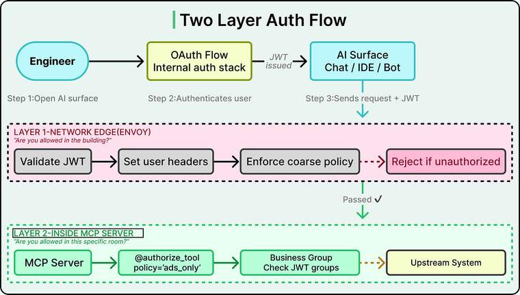
A web UI lets humans browse available servers, see their live status, find the owning team and support channels, and inspect visible tools.
Web UI 允许人们浏览可用服务器、查看其实时状态、查找所属团队和支持渠道以及检查可见工具。
An API lets AI clients programmatically discover servers, validate them, and check whether a given user is authorized to access a given server.
API 允许 AI 客户端以编程方式发现服务器、验证服务器并检查给定用户是否有权访问给定服务器。
Only servers registered here count as approved for production use. In other words, the registry is not just a phone book, but the governance backbone of the entire ecosystem.
只有在此处注册的服务器才算作批准用于生产用途。换句话说，注册表不仅仅是一本电话簿，而是整个生态系统的治理支柱。
Two Layers of AuthGiving AI agents access to tools that touch real production systems and sensitive data raises immediate security concerns.
让人工智能代理访问接触真实生产系统和敏感数据的工具会立即引发安全问题。
Pinterest treated MCP as a joint project with their security team from day one, and the result is a two-layer authorization model that deserves careful attention.
Pinterest 从第一天起就将 MCP 视为与其安全团队的联合项目，其结果是值得仔细关注的两层授权模型。
See the diagram below: Consider what happens when an engineer opens Pinterestʼs internal AI chat and asks the agent to query revenue data from the data warehouse. That single request crosses multiple systems as mentioned below: The chat frontend talks to the MCP registry to find available servers.
请参见下图：考虑当工程师打开 Pinterest 的内部 AI 聊天并要求代理从数据仓库查询收入数据时会发生什么。该单个请求跨越多个系统，如下所述： 聊天前端与 MCP 注册表对话以查找可用服务器。
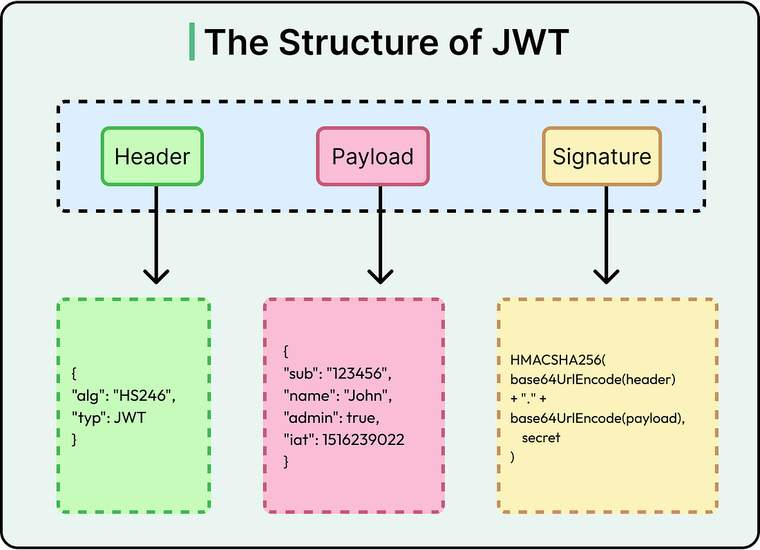
The request gets routed to the Presto MCP server, which runs a query against a real database containing business-sensitive information.
请求被路由到 Presto MCP 服务器，该服务器对包含业务敏感信息的真实数据库运行查询。
At every hop, the system needs to answer two questions. Who is this person' And are they allowed to do this specific thing' Layer 1 handles coarse-grained checks at the network edge.
在每一跳，系统都需要回答两个问题。这个人是谁？他们是否被允许做这个特定的事情？第 1 层在网络边缘处理粗粒度的检查。
When an engineer opens any AI surface at Pinterest, they go through an OAuth flow, which is the standard process for logging in with a company account and granting the application permission to act on the userʼs behalf. This produces a JWT JSON Web Token), a small signed token that encodes the userʼs identity and group memberships. That JWT travels with every subsequent request.
当工程师在 Pinterest 打开任何 AI 界面时，他们会经历 OAuth 流程，这是使用公司帐户登录并授予应用程序代表用户执行操作的权限的标准流程。这会生成 JWT JSON Web 令牌，这是一种小型签名令牌，用于对用户的身份和组成员身份进行编码。该 JWT 会随每个后续请求一起传送。
Before a request reaches any MCP server, it passes through Envoy, a network proxy that sits in front of every service in Pinterestʼs infrastructure. Envoy validates the JWT by checking the signature and expiration, then converts it into standard headers like XForwarded-User and XForwarded-Groups.
在请求到达任何 MCP 服务器之前，它会通过 Envoy，这是一个位于 Pinterest 基础设施中每个服务前面的网络代理。 Envoy 通过检查签名和过期时间来验证 JWT，然后将其转换为标准标头，例如 XForwarded-User 和 XForwarded-Groups。
Envoy also enforces coarse-grained access policies. These are broad rules like “the production AI chat application may talk to the Presto MCP server, but experimental servers running in the dev namespace are off-limits.” If the request violates these rules, it gets rejected before the MCP server ever sees it. Think of Envoy as the building security desk. It checks your badge and makes sure you are supposed to be in the building at all.
Envoy 还强制执行粗粒度的访问策略。这些是广泛的规则，例如“生产 AI 聊天应用程序可以与 Presto MCP 服务器通信，但在开发命名空间中运行的实验服务器是禁止的。”如果请求违反了这些规则，则在 MCP 服务器看到它之前就会被拒绝。将 Envoy 视为大楼保安服务台。它会检查您的徽章并确保您应该在大楼内。
Layer 2 handles fine-grained checks inside each server.
第 2 层处理每个服务器内部的细粒度检查。
Even if Envoy lets a request through, the MCP server applies a second layer of authorization at the individual tool level. Pinterest uses a decorator pattern on tool functions (@authorize_tool(policy=ʼ...ʼ)) that checks whether the specific user is allowed to invoke that specific tool.
即使 Envoy 允许请求通过，MCP 服务器也会在单个工具级别应用第二层授权。 Pinterest 在工具函数上使用装饰器模式 (@authorize_tool(policy='...'))，检查是否允许特定用户调用该特定工具。
For example, the Presto MCP server might be reachable by many teams, but only the Ads engineering group can call a tool like get_revenue_metrics. This is like the difference between being allowed into the building and being allowed into a specific room.
例如，Presto MCP 服务器可能可供许多团队访问，但只有广告工程团队可以调用 get_revenue_metrics 等工具。这就像被允许进入建筑物和被允许进入特定房间之间的区别。
For servers that handle particularly sensitive data, Pinterest adds business-group gating. The server extracts the userʼs business group membership from their JWT and checks it against an approved list before even establishing a session. This list of approved groups is set during the initial security review when the server is first registered.
对于处理特别敏感数据的服务器，Pinterest 增加了业务组门控。服务器从用户的 JWT 中提取用户的业务组成员身份，并在建立会话之前根据批准的列表进行检查。此批准组列表是在服务器首次注册时的初始安全审查期间设置的。
For example, even though the Presto MCP server is technically reachable from Pinterestʼs broadly used AI chat interface, only specific groups like Ads, Finance, or certain infrastructure teams can actually connect and run queries. This means that turning on a powerful, data-heavy server in a popular surface does not silently expand who can see sensitive data.
例如，尽管 Presto MCP 服务器在技术上可以通过 Pinterest 广泛使用的 AI 聊天界面进行访问，但只有广告、财务或某些基础设施团队等特定群体才能真正连接并运行查询。这意味着在流行的环境中打开功能强大、数据量大的服务器并不会默默地扩大可以看到敏感数据的人。
Why two layers instead of one' Envoyʼs policies are fast, network-level checks that block obviously unauthorized traffic before it reaches any application code. The tool-level decorators handle nuanced, business-logic-specific permissions that a network proxy is not equipped to reason about. Together, they provide defense in depth. Even if one layer has a misconfiguration, the other still catches unauthorized access.
为什么采用两层而不是一层？ Envoy 的策略是快速的网络级检查，可以在明显未经授权的流量到达任何应用程序代码之前将其阻止。工具级装饰器处理网络代理无法推理的细微差别、特定于业务逻辑的权限。它们共同提供纵深防御。即使一层配置错误，另一层仍然会捕获未经授权的访问。
The official MCP specification defines an OAuth 2.0 authorization flow where users authenticate with each MCP server individually, typically involving consent
官方 MCP 规范定义了 OAuth 2.0 授权流程，其中用户分别向每个 MCP 服务器进行身份验证，通常涉及同意
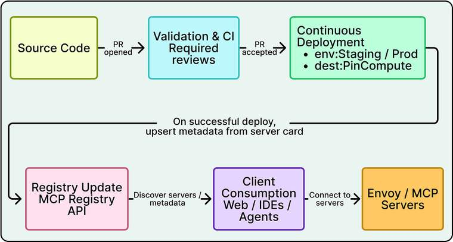
screens and per-server token management. Pinterest skipped this entirely. Since they control the entire internal environment, they piggyback on the auth session the user already has when they open an AI surface. There is no additional login prompt or consent dialog when a user invokes an MCP tool.
屏幕和每服务器令牌管理。 Pinterest 完全跳过了这一点。由于它们控制整个内部环境，因此它们会利用用户打开 AI 界面时已有的身份验证会话。当用户调用 MCP 工具时，没有额外的登录提示或同意对话框。
This is simpler for end users, but only works because Pinterest owns every piece of the stack. A company relying on third-party MCP servers would likely need the per-server OAuth approach described in the spec.
这对于最终用户来说更简单，但之所以有效，是因为 Pinterest 拥有堆栈的每一部分。依赖第三方 MCP 服务器的公司可能需要规范中描述的每服务器 OAuth 方法。
Lastly, for automated service-to-service calls where there is no human in the loop, Pinterest uses SPIFFE-based authentication. In this pattern, the calling service proves its identity through a cryptographic certificate issued by the service mesh rather than presenting a humanʼs JWT. Pinterest reserves this for low-risk, read- only scenarios where the blast radius is tightly constrained.
最后，对于循环中无人参与的自动服务到服务调用，Pinterest 使用基于 SPIFFE 的身份验证。在这种模式中，调用服务通过服务网格颁发的加密证书来证明其身份，而不是提供人类的 JWT。 Pinterest 将其保留用于低风险、只读场景，其中爆炸半径受到严格限制。
Pinterest was deliberate about one thing. MCP could not be a science project that lived in its own separate interface. It had to show up in the tools that engineers already use every day.
Pinterest 深思熟虑了一件事。 MCP 不可能是一个存在于其自己独立界面中的科学项目。它必须出现在工程师每天使用的工具中。
The diagram below shows how the MCP integration has been done across various surfaces at Pinterest.
下图显示了如何在 Pinterest 的各个界面上完成 MCP 集成。
Pinterestʼs internal AI chat interface is used by the majority of employees daily.
Pinterest 的内部人工智能聊天界面被大多数员工日常使用。
The frontend automatically handles OAuth flows and returns a list of usable MCP tools scoped to the current userʼs permissions. Once connected, the AI agent binds MCP tools directly into its toolset, so invoking an MCP tool feels identical to calling any other built-in capability. From the userʼs perspective, they are just asking the AI to do something, and the MCP plumbing is invisible.
前端自动处理 OAuth 流并返回当前用户权限范围内的可用 MCP 工具列表。连接后，AI 代理会将 MCP 工具直接绑定到其工具集中，因此调用 MCP 工具与调用任何其他内置功能的感觉相同。从用户的角度来看，他们只是要求人工智能做某事，MCP 管道是看不见的。
Pinterest also embeds AI bots in its internal communication platform, and these bots expose MCP tools as well. Auth is handled through the registry API, just like the web interface. These bots support context-aware tool scoping, meaning certain MCP tools are restricted to certain channels. Spark MCP tools, for example, only appear in Airflow support channels. This keeps tool lists relevant to the conversation and prevents users from accidentally invoking tools that do not make sense in a given context.
Pinterest 还在其内部通信平台中嵌入了 AI 机器人，这些机器人也公开了 MCP 工具。身份验证是通过注册表 API 处理的，就像 Web 界面一样。这些机器人支持上下文感知工具范围，这意味着某些 MCP 工具仅限于某些渠道。例如，Spark MCP 工具仅出现在 Airflow 支持渠道中。这使工具列表与对话保持相关，并防止用户意外调用在给定上下文中没有意义的工具。
AI-enabled IDEs can pull data through the Presto MCP server on demand, so agents bring data directly into coding workflows instead of requiring engineers to switch to a separate dashboard. CLI agents provide similar capabilities for terminal-based workflows.
支持 AI 的 IDE 可以按需通过 Presto MCP 服务器提取数据，因此代理将数据直接带入编码工作流程，而不需要工程师切换到单独的仪表板。 CLI 代理为基于终端的工作流程提供类似的功能。
The servers that see the heaviest usage reflect the most common engineering pain points.
使用最频繁的服务器反映了最常见的工程痛点。
The Presto MCP server is consistently the highest-traffic server because data access is a universal need across teams.
Presto MCP 服务器始终是流量最高的服务器，因为数据访问是跨团队的普遍需求。
The Spark MCP server underpins Pinterestʼs AI-assisted debuggingexperience, where agents diagnose job failures, summarize logs, and help record structured root-cause analyses, turning noisy operational threads into reusable knowledge.
体验，代理诊断作业失败、总结日志并帮助记录结构化根本原因分析，将嘈杂的操作线程转化为可重用的知识。
The Knowledge MCP server acts as a general-purpose endpoint for institutional knowledge, giving agents the ability to search documentation and answer questions across internal sources.
知识 MCP 服务器充当机构知识的通用端点，使代理能够跨内部来源搜索文档并回答问题。
Since MCP servers enable automated actions, the blast radius of a mistake is larger than if a human manually performed the same steps.
由于 MCP 服务器支持自动操作，因此错误的影响范围比人工执行相同步骤时更大。
Pinterestʼs agent guidance mandates human-in-the-loop approval before any sensitive or expensive action. Agents propose actions, humans approve or reject (optionally in batches) before execution. Pinterest also uses elicitation for
Pinterest 的代理指南要求在采取任何敏感或昂贵的行动之前必须经过人机交互的批准。代理提出行动，人类在执行之前批准或拒绝（可选批量）。 Pinterest 还使用启发式
dangerous operations, where the AI explicitly asks the user to confirm before performing something like overwriting data in a table. This is a governance decision.
危险的操作，人工智能在执行诸如覆盖表中的数据之类的操作之前明确要求用户确认。这是一项治理决策。
Measurements Pinterest built observability into the MCP ecosystem from the start rather than treating it as an afterthought. All MCP servers use a set of shared library functions that provide logging for inputs and outputs, invocation counts, exception tracing, and other telemetry out of the box. This is part of the server framework itself, so teams get observability for free when they use the unified deployment pipeline.
测量 Pinterest 从一开始就将可观察性构建到了 MCP 生态系统中，而不是将其视为事后的想法。所有 MCP 服务器都使用一组共享库函数，这些函数提供输入和输出日志记录、调用计数、异常跟踪和其他开箱即用的遥测。这是服务器框架本身的一部分，因此团队在使用统一部署管道时可以免费获得可观察性。
At the ecosystem level, Pinterest tracks the number of registered servers and tools, invocation counts across all servers, and a north-star metric that rolls everything up into a single number. That number is the time saved. For each tool, server owners provide a “minutes saved per invocation” estimate, based on lightweight user feedback and comparison to the prior manual workflow.
在生态系统层面，Pinterest 跟踪注册服务器和工具的数量、所有服务器的调用计数以及将所有内容汇总为一个数字的北极星指标。这个数字就是节省的时间。对于每个工具，服务器所有者根据轻量级用户反馈以及与之前的手动工作流程的比较，提供“每次调用节省的分钟数”估计。
Multiplied by invocation counts, this gives an order-of-magnitude view of impact.
乘以调用次数，即可得出影响的数量级视图。
As of January 2025, MCP servers at Pinterest were handling 66,000 invocations per month across 844 monthly active users. Using the owner-provided estimates, MCP tools were saving on the order of approximately 7,000 hours per month.
截至 2025 年 1 月，Pinterest 的 MCP 服务器每月处理 844 名每月活跃用户的 66,000 次调用。根据业主提供的估算，MCP 工具每月可节省约 7,000 小时的时间。
Conclusion Pinterestʼs MCP ecosystem offers a clear blueprint for organizations building AI agents that need to act on internal systems. The pattern they established, a standard protocol, a central registry, layered auth, a unified deployment pipeline, and built-in observability, is transferable well beyond Pinterestʼs specific context.
结论 Pinterest 的 MCP 生态系统为构建需要对内部系统采取行动的 AI 代理的组织提供了清晰的蓝图。他们建立的模式、标准协议、中央注册表、分层身份验证、统一部署管道和内置可观察性，可以远远超出 Pinterest 的特定上下文。
The most important lesson is where the effort actually went. The MCP protocol gave Pinterest a shared language between AI surfaces and tools. That was necessary but far from sufficient. The registry, auth layers, deployment pipeline, and measurement framework are what turned a promising protocol into a production system handling tens of thousands of invocations per month.
最重要的教训是努力的实际去向。 MCP 协议为 Pinterest 提供了 AI 界面和工具之间的共享语言。这是必要的，但还远远不够。注册表、身份验证层、部署管道和测量框架将一个有前景的协议转变为每月处理数万次调用的生产系统。
To conclude, Pinterestʼs approach suggests a practical starting point of seeding a small set of high-leverage MCP servers that solve real pain points, then invest in the platform work, especially the deployment pipeline, that makes it easy for other
总而言之，Pinterest 的方法提出了一个实际的起点，即播种一小组高杠杆 MCP 服务器来解决真正的痛点，然后投资于平台工作，特别是部署管道，这使得其他人可以轻松地
teams to build on top. Pinterestʼs unified pipeline was the unlock that turned a platform team project into an org-wide ecosystem.
团队在此基础上进行构建。 Pinterest 的统一管道是将平台团队项目转变为组织范围内的生态系统的解锁。